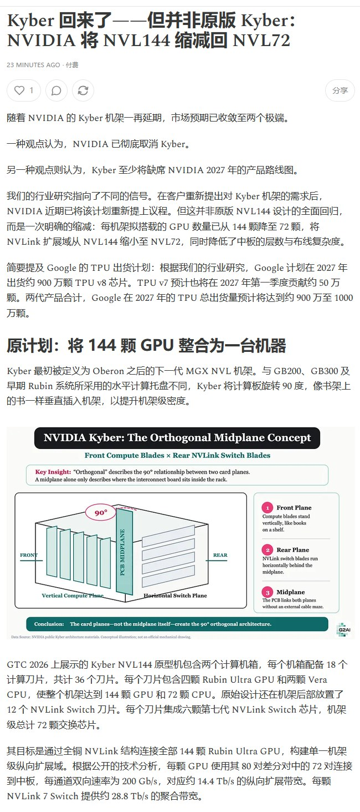
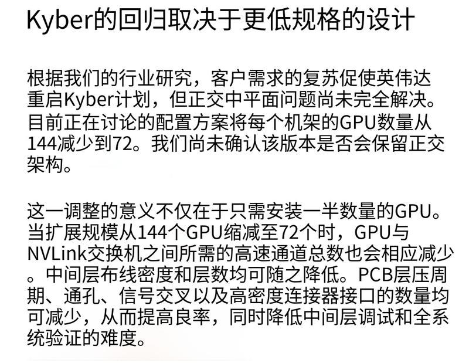

调研纪要 · 2026-10-30 新闻日报
星球 ID: 28855458518111 | 共 521 条帖子 | 精华 60 条
| 查看研究积累
书签
DeepSeek 160 亿美元融资背后：中国科技巨头与国有资本
DeepSeek 160 亿美元融资背后：中国科技巨头与国有资本
今日赎回点评分析。
今日赎回点评分析。
1，受到hf事件影响，一些理财子开始提前预防性赎回一些含有相关的基金以及一些基于地域和行业相关的避险赎回，提前储备流动性。基金也在应对潜在赎回，继续卖出流动性好的二永，带崩信用债市场，继而带崩利率。近期信用债市场确实没有特别明确的方向，借着此事件来一波调整。
2，虽然今天股市大跌，也有一些机构开始赎回一些固收+基金。但目前跟理财子聊下来，理财子自身的产品没有受到任何大规模的赎回，理财自身产品是安全的。他们们也许出于一些预防性的目的赎回了一些固收+基金，但应该不是今天的主力。
3，基金受到相关的赎回影响，也会提前预防时的会卖出很多券，这是一个链式传导的效应，但是会有放大效应，导致了今天这波市场的相对大跌。
4，目前就是大家最担心的理财自己会不会引发银行端客户赎回，这个事情目前还没有到最危险的地步，今天跟国股大行理财子交流下来，他们的自身产品是没有问题的，所以目前这个赎回是相对可控的，hf这个事件的影响应该也不会持续特别特别久。
债券大跌，怎么看？
债券大跌，怎么看？
【1】华发出现信用风险，导致债基赎回，利率债被连带抛售
简单讲，华发（珠海华发集团）主要因为地产出问题。
前几天，信用债出现风险，债市交易的是避险，
所以是“卖信用+买利率”，利率债反而走强；
今天，信用风险进一步发酵，导致债基、固收+赎回，
结果是【“信用卖不掉、先卖利率应对赎回”】，利率债也大跌。
2020年永煤暴雷，也出现过类似的情况。
【2】债基赎回，可能引发央行维稳
从历史上的固收产品赎回看，无论是2020年永煤，还是2022年理财赎回，
最终都是引发了央行的宽货币维稳，即资金利率下行。
因此，【一个简单的策略：
在观察到央行维稳之前，对债市谨慎；
在观察到央行维稳之后，买入债券；】
重点盯住DR001、匿名资金利率。
【3】债市更大的问题，是拥挤度
【当前债市，类似今年6月的AI】，
拥挤度极高，且普遍无视拥挤度的风险。
（1）股市，都警惕AI拥挤度的时候，
比如3-4月，拥挤度就不是问题；
等到5-6月，【股市都认为拥挤度不重要的时候，
结果拥挤度反而成了问题】：
一方面导致7月的股市大跌，
另一方面8-9月都在等M顶反弹卖出，
结果等来了9月22日以来的股市再次大跌。
（2）债市也类似：
7月，债市普遍担忧债券拥挤度的问题，
事后看，当时的高拥挤度就不是问题；
【到现在，债市普遍无视拥挤度，
反而拥挤度可能成了问题。】
（3）近期，【不少资金认为，债券“只有收益，没有风险”】，
特别是在股市大跌之后，很多资金从股市流向债市，
结果是，期限利差的大幅压缩，
以及信用利差的大幅压缩。
而现在华发出现信用风险，一些资金开始意识到：
【“债券也是可以亏钱的”】，
引发了信用利差的扩大，
甚至引发了期限利差的扩大（即30年收益率上的更多）。
（4）我们并不清楚，债市的拐点是否已经出现，
因为事后看，也基本不可能预测，AI的拐点是6月末。
7月AI下跌，直接触发原因，事后看都没那么重要，
【AI刚开始下跌的时候，也有很多资金认为跌错了、抄底AI】，
但事后看，那时候就是AI的拐点。
（5）我们只能建议：
在债券已经历史极致拥挤的情况下，警惕债市重演AI的泡沫破裂；
如果后续有央行维稳债市，更建议减仓债券，而不是加仓债券。
[太阳]脑机接口：全球技术突破与国内产业化共振，临床应用有望加速落地！建议积极关注！
[太阳]脑机接口：全球技术突破与国内产业化共振，临床应用有望加速落地！建议积极关注！
[玫瑰]全球技术持续突破，脑机接口应用边界由运动控制向语言交流拓展。10月28日，Neuralink公布VOICE语音恢复项目早期研究结果，一名渐冻症（ALS）患者植入设备后第一周即实现每分钟75个英文单词的输出速度，在12.5万词汇库下词错误率仅为5.8%，显示植入式脑机接口在语言解码及辅助交流领域取得积极进展。国内方面，10月28日脑虎科技完成7亿元B轮融资，资金将用于“三全”（全植入、全无线、全功能）脑机接口系统多中心注册临床、产业化量产及下一代产品研发；10月24日，全国首个脑机接口高质量数据集建设项目正式启动，覆盖脑卒中、脊髓损伤、帕金森病、癫痫等10类疾病方向，计划于2027年建成投用。全球技术突破、国内资本投入及临床数据基础设施建设形成共振，行业正逐步由技术验证向临床转化和产业化迈进。
[玫瑰]政策支持与临床需求共振，重点关注三条投资主线。我们认为，脑机接口作为国家重点布局的未来产业，七部门已明确提出2027年初步建立先进技术、产业及标准体系，2030年培育2-3家具备全球影响力的领军企业。投资方向上：一是上游核心器件国产替代，重点关注柔性电极、神经信号采集芯片、生物相容性材料及精密制造，建议关注美好医疗等；二是中游脑机接口设备与康复系统，重点关注非侵入式脑电采集、神经调控、脑控外骨骼及智能康复设备，建议关注翔宇医疗、伟思医疗、爱朋医疗、诚益通等；三是下游临床应用与商业化，随着注册临床推进及康复场景拓展，具备医院资源、临床转化能力及产品销售基础的企业有望率先受益，建议关注创新医疗、三博脑科等。
💣风险提示：临床试验及注册审批不及预期；核心技术突破及产品迭代不及预期；商业化进度及市场渗透率不及预期。
国星宇航H上市预期映射机会
国星宇航H上市预期映射机会
[太阳]国星宇航于10月29日在港交所披露聆讯后资料集，公司规划了“全球首个AI智算卫星星座”，在手114颗待交付AI卫星订单（合约34.75亿元）。
港股聆讯后至上市仅剩锁定基石、正式招股等节点，平均周期3-4周。
今年来看，商业航天已经进入1-100阶段的初期高速增长阶段，年内各家卫星制造商及零部件企业业绩均呈现增长态势。
[红包]考虑到近期港股流动性和积极性问题，建议重视 #钧达股份（算力星座运营+卫星制造+太空光伏） 、#迈为股份（HJT设备头部供应商） 、#电科蓝天（卫星能源核心供应商） 、#东方日升（太空HJT主要供应商） 、#天合光能（持股国星宇航） 、#晶科科技（持股国星宇航）
石头科技业绩大超预期，市场预期收入15-20%，归母利润4亿+
石头科技业绩大超预期，市场预期收入15-20%，归母利润4亿+
退税才2000万左右，详细拆分等晚上电话会议吧，可以报名外呼
Q3亚马逊错期对欧美线上影响还是很大的（pd大多数确认在二季度了），说明线下卖爆了
我一直给大家更新追觅融资进展，最近真实到手的就3个多亿，初级股权融资和港股ipo还只是推进，我们不方便段子说太多，总之就是行业格局会迎来重大改善
我们不去贩卖信息差，还是扎实的产业趋势研究和持续的数据跟踪更有价值
【长江电子】东山精密2026年三季报点评：光模块加速放量，Q3业绩表现亮眼
【长江电子】东山精密2026年三季报点评：光模块加速放量，Q3业绩表现亮眼
[太阳]前三季度收入利润高增，盈利能力持续提升
公司前三季度实现收入453.79亿元，同比增长67.63%；归母净利润52.89亿元，同比增长332.34%；扣非归母净利润45.79亿元，同比增长327.48%；毛利率21.28%、净利率11.71%，同比分别提升7.50pct和7.19pct。
[太阳]单Q3表现亮眼，利润维持高增
单三季度来看，26Q3公司实现收入175.82亿元，同比＋73.81%、环比＋19.93%；实现归母净利润23.32亿元，同比＋401.18%、环比＋26.25%；扣非归母净利润20.99亿元，同比＋406.69%、环比＋47.80%；毛利率23.07%、净利率13.25%，环比分别提升2.18pct和0.56pct。
[太阳]光模块业务快速兑现，稀缺光芯片业务有望开启新一轮增长
三季度来看，公司光模块业务爆发性增长与传统业务稳步提升共同驱动业绩，当前800G光模块出货量逐季快速提升，1.6T产品已于Q4进入批量出货阶段，下游订单饱满、产能利用率维持高位。我们看好光模块产能释放与高速产品升级持续推进，叠加高速EML光芯片自研自产能力，有望进一步增强交付能力及盈利弹性。
#我们依旧强调：2026年公司业绩有望实现85亿、2027年东山将迎来光模块+光芯片+AIPCB三轮驱动大年、27年业绩看350亿、现价坚定看好！
🏅欢迎联系长江电子杨洋团队
智元机器人线下交流要点
智元机器人线下交流要点
#行业研判
1、模型路线：判断相当长一段时间内，行业各模型路线相向而行，未收敛。
2、数据训练：ego多用于预训练阶段；umi&真机数据则多用于后训练及RL阶段；
3、模型能力：呈曲线式逐步改进，认为实现明显效果需训练参数规模约200b，配套1-2千万小时数据量；
#公司相关
1、数据效率：目前有效数据效率大概在三点几（即8-10小时素材大概3点几小时有效数据）（半年前为2出头）。
2、模型：基模包括交互模型均为自研，核心为模态需要预训练加入从头训练，现有模型难以满足交互需求；很高层的Agent会调用现成业界大模型和云端大模型。
3、技术：基础工程技术上投入较多，覆盖材料、力学、散热等领域，目标瞄准机器人恶劣环境下作业需求。
欢迎联系、交流~
潍柴动力2026Q3业绩会核心要点
潍柴动力2026Q3业绩会核心要点
#柴发需求持续超预期、产能释放推动交付逐季加速
[玫瑰] 数据中心柴发Q1/Q2/Q3分别出货500/800/1,300台，前三季度合计约2,600台。当前客户需求旺盛，产能持续释放，预计Q4出货仍将保持较好水平。柴发需求具有全球性，北美仅占约20%，其余主要来自中国、东南亚和欧洲等市场。
#气发北美跟踪项目规模达3GW
[玫瑰]2026年气发销售目标维持200台，但由于柴发需求超预期、需要协调产能，实际出货可能低于200台
[玫瑰]2027年气发预计参考今年柴发的增长曲线逐季爬坡，Q3-Q4出货更高。当前跟踪项目约3GW，部分已签署正式合同，部分仍处于待签约阶段，此外更有大量询单
[玫瑰]公司对2030年前的需求保持乐观。此外，拉美、非洲等地区的工业及分布式电站需求也在持续拓展
#积极完成股权激励目标
[玫瑰]管理层认为Q4存在三方面支撑：数据中心发电订单及交付加速、10月重卡新接订单改善、KION四季度季节性利润贡献较高。公司表示仍将全力争取完成考核。此外，2026H1分红比例约58%，未来计划继续维持相对稳定的高分红政策
【国信汽车-液冷系列26】银轮股份【26Q3业绩会】交流要点
【国信汽车-液冷系列26】银轮股份【26Q3业绩会】交流要点
[太阳]主业情况：
1）1-9月累计汇率损失1e（Q3损失4.4kw），Q3公允价值变动损失（投资国盾量子）3.7kw，社保缴费基数提升（全年预计多增加4kw费用），综合拖累利润；
2）外销1-9月营收39e，同比+39%，毛利率+1.23pct；1-9月外销收入占比28%；
3）分业务：商用车非道路1-9月营收48.8e，同比+34%，毛利率-1pct，23%出头；乘用车1-9月营收71.8e，同比+24%，毛利率-3pct，毛利率下降至12%；数字能源1-9月营收超15e，同比+30%（板换产能调整中影响，已经解决），毛利率+2pct；
4）其他费用率：管理费用率提升及研发费用率下降，由于针对研发费调查导致部分研发费用列支到管理费用；
[太阳]新业务：
1）发电：Q3发电收入1.6e（1k台+），主要是冷却模块，尾气处理模块会在Q4形成交付能力；今年冷却包3k台，明年预计冷却包8k台产能（墨西哥6k，国内2k）+尾气处理模块；
2）液冷板换：目前获得美国暖通客户一次侧板换订单，27年大批量交付；G客户样机测试，预计明年Q2产线到位后订单落地；国内今年10、12月份会逐步进入国内客户白名单；
3）液冷冷板：也是先有产线才能有订单，预计冷板产线12月建设完毕；
4）机器人：1-9月营收合计3kw；品类包括结构件、热管理；
欢迎沟通交流详细及获取jiyao~
【华创食饮】今世缘2026年三季报速递
【华创食饮】今世缘2026年三季报速递
公司公布2026年三季报，2026年前三季度实现营业收入86.7亿元，同降2.4%，归母净利润25.0亿元，同降1.8%。单Q3实现营业收入 22.3亿元，同增 15.5%，归母净利润 4.2 亿元，同增 31.6%。
盈利能力方面，前三季度公司毛利率74.8%，同增1.1pcts，营业税金率15.4%，同降0.6pct，销售费用率17.7%，同降0.4pct，管理费用率3.4%，同降0.2pct，归母净利率 28.9%，同增0.2pct。单Q3公司毛利率76.9%，同增1.8pcts，营业税金率19.5%，同降1.3pcts，销售费用率27.1%，同降2.9pcts，管理费用率5.0%，同降0.5pct，归母净利率18.9%，同增2.3pcts。
现金流方面，前三季度实现销售回款88.2亿元，同增0.9%，经营性现金流净额21.3亿元，同增134.4%。单Q3实现销售回款22.2亿元，同增8.8%，经营性现金流净额5.1亿元，去年同期为-1.7亿元。Q3末合同负债8.3亿元，环比Q2末减少0.1亿元。
分产品看，前三季度特A+类/特A类/A类/B类/C、D类分别实现收入49.9/31.0/2.6/1.1/0.5亿元，同比-8.1%/+8.0%/-12.7%/+5.8%/+9.4%；单Q3特A+类/特A类/A类/B类/C、D类分别实现收入12.5/7.9/0.8/0.4/0.2亿元，同比+11.3%/+24.3%/+18.0%/+19.2%/+4.8%。
分地区看，前三季度省内实现76.2亿元，同降4.2%，其中淮安大区/南京大区/苏南大区/苏中大区/盐城大区/淮海大区分别实现收入16.9/17.9/8.6/16.0/10.1/6.6亿元，同比+1.0%/-13.3%/-11.6%/+8.6%/+6.2%/-18.5%，省外实现9.0亿元，同比+12.0%；单Q3省内实现收入19.5亿元，同比增长14.7%，其中淮安大区/南京大区/苏南大区/苏中大区/盐城大区/淮海大区分别实现收入5.2/3.4/2.7/4.5/2.4/1.4亿元，同比+14.7%/+6.9%/+6.7%/+24.5%/+24.7%/+7.4%；省外实现收入2.3亿元，同比+29.4%。
Q3末公司经销商数量为1484家，环比Q2末增加19家。省内经销商为799家，环比增加1家，其中淮安大区/南京大区/苏南大区/苏中大区/盐城大区/淮海大区分别为232/141/102/171/91/62家，环比Q2末分别-9/-2/+2/+5/+9/-4家；省外为685家，环比增加18家。
（华创食饮 欧阳予/田晨曦/王培培/张慧/张雅琪）
【华创食饮】水井坊2026年三季报速递
【华创食饮】水井坊2026年三季报速递
公司公布2026年三季报，26年前三季度实现营业收入19.5亿元，同降16.7%，归母净利润2.1亿元，同降34.3%，销售回款18.9亿元，同降17.8%，经营现金流量净额5.9亿元，去年同期为-8.7亿元。单Q3来看，营业收入8.7亿元，同增2.7%，归母净利润2.2亿元，同降0.1%，销售回款10.3亿元，同增76.1%，经营现金流量净额6.6亿元，去年同期为-3.6亿元，期末合同负债8.5亿元，环比Q2末增加2.1亿元。
盈利能力方面，26年前三季度公司毛利率78.1%，同比下降2.1pcts，营业税金率16.0%，同比下降0.9pct，销售费用率25.0%，同比下降6.2pcts，管理费用率17.3%，同比提升2.1pcts，综上，归母净利率11.0%，同比下降2.9pcts。单Q3来看，公司毛利率80.5%，同比下降1.3pcts，营业税金率15.2%，同比提升2.9pcts，销售费用率12.1%，同比下降10.1pcts，管理费用率14.2%，同比提升3.5pcts，综上，归母净利率25.2%，同比下降0.7pct。
分产品看，26年前三季度 高档/中档收入分别实现18.4 /0.8 亿元，同比-11.2%/-42.6%。单Q3 高档/中档收入分别实现8.5 /0.3 亿元，同比+9.4%/-39.0%。
分渠道看，26年前三季度 新渠道/批发代理分别实现2.0 /17.2 亿元，同比-64.8%/+4.6%。单Q3 新渠道/批发代理分别实现0.2 /8.6 亿元，同比-81.8%/+18.3%。
分区域看，26年前三季度国内/外分别实现18.9 /0.3 亿元，同比-13.2%/-2.5%。单Q3国内/外分别实现8.6 /0.1 亿元，同比+6.5%/+35.6%。
26年三季度末公司经销商数量合计为68家，比Q2末净增加6家，较25年末净减少33家。其中国内经销商66家，较Q2末净增加6家；国外经销商2家，与Q2末持平。
（华创食饮 欧阳予/田晨曦/王培培/张慧/张雅琪）
[發]【国泰海通医药】Insmed 2026Q3点评：DPP1抑制剂收入指引再次上调
[發]【国泰海通医药】Insmed 2026Q3点评：DPP1抑制剂收入指引再次上调
[太阳]3Q26收入5.24亿美元，yoy+268%（上年同期BRINSUPRI刚上市仅一个首季，约0.28亿）。研发+45%、销售及管理+36%，营业亏损收窄至0.89亿美元，期末现金约11亿美元。全年指引BRINSUPRI上调至13.5-14.0亿美元（原12.5-14亿美元）、ARIKAYCE上调至4.60-4.70亿美元（原4.5-4.7亿美元）。
[太阳]#BRINSUPRI 4.00亿美元、环比+29%上市首年表现强劲：四个完整季度1.45/2.08/3.09/4.00亿美元。峰值预测超70亿美元（单适应症），已内含下一个DPP1抑制剂抢占份额与IRA谈判假设。第二增长曲线看COPD与哮喘共病支扩。美国支扩基数约50万，叠加哮喘与COPD人群共病支扩对应数百万患者规模。瓶颈在疾病诊断，公司与ATS十余家中心合作，2027年中出数据。日本为国际主引擎，BRINSUPRI系NCFB唯一获批药物、约15万确诊患者，ASPEN日本队列25mg年化加重率降68%（全球19%）。
[太阳]#ARIKAYCE 1.24亿美元、+9%，sNDA获优先审评、PDUFA 2027年1月28日，1H27美日全MACLD标签上市。TPIP峰值维持预测超60亿美元（IPF/PPF/PAH/PH-ILD），PPF于26Q4开始入组，IPF将于27H1启动。
[太阳]#INS1033 与#INS1148 明年分别进RA、IPF二期，DMD与ALS基因治疗2027年首批数据，公司预计2027年现金流转正。
[太阳]后续关注日本 BRINSUPRI 定价落地与ARIKAYCE的PMDA递交、FDA PDUFA（2027/1/28），以及 COPD 共病支扩诊断数据（2027年中）。
[玫瑰]联系人：余文心/余克清/廖博闻/汪晋/薛健博
[發]【国泰海通医药】默沙东（MSD）2026Q3点评：全年收入指引上调，当日股价上涨3.8%
[發]【国泰海通医药】默沙东（MSD）2026Q3点评：全年收入指引上调，当日股价上涨3.8%
[太阳]3Q26收入180.9亿美元，yoy+5%（剔除汇率+4%）；GAAP净利润50.7亿美元，yoy-12%；non-GAAP净利润61.6亿美元，yoy-4%，non-GAAP EPS 2.49美元，yoy-3%。本季收入包含采购时点前置带来的约5.5亿美元收益。#全年指引上调： 收入668-673亿美元（原663-673），non-GAAP EPS 2.77-2.82美元（原2.66-2.76）。
[太阳]#KEYTRUDA家族 收入为86.0亿美元，yoy+6%，但增量全部来自皮下剂型QLEX（8.30亿美元，上年同期0.35亿美元），静脉剂型77.7亿美元，同比约-5%，增长由剂型转换驱动。
[太阳]新产品接棒：#WINREVAIR (ActRII2) 6.94亿美元+93%、#WELIREG (HIF-2A) 3.07亿美元+56%、#ENFLONSIA （治疗RSV）1.87亿美元+138%、#OHTUVAYRE （PDE3/4）1.84亿美元、#GARDASIL (HPV疫苗)19.95亿美元+14%（以美国公共部门采购模式＋净价提升为主）。仿制药侵蚀加速：#BRIDION （肌松剂）-67%、#JANUVIA/JANUMET （DPP4/二甲双胍复方制剂）-39%、#LAGEVRIO （抗新冠）-88%。
[太阳]管线进入密集数据读出期：ESMO三项III期Presidential，#sac-TMT TroFuse-005（子宫内膜癌，死亡风险-32%、mOS改善近7个月），BLA获优先审评，PDUFA 2027/6/15、#mRNA疫苗 INTerpath-001（黑色素瘤辅助，复发或死亡风险-42%，HR 0.58）、#K药 KEYNOTE-C93（dMMR子宫内膜癌一线，进展或死亡风险-43%）；#tulisokibart (TL1A)化脓性汗腺炎IIb阳性，拟进III期；#remigromig (FZD4/LRP5)BRUNELLO达主要终点；#I-DXd (B7-H3 ADC)的ES-SCLC上市申请主动撤回。
[太阳]后续关注tulisokibart ATLAS-UC数据、remigromig BAROLO读出、CHORUS III期启动，以及islatravir联合lenacapavir与intismeran的监管申报。
[玫瑰]联系人：余文心/余克清/廖博闻/汪晋/薛健博
瑞萨电子3QFY26：业绩符合预期，4Q营收指引beat；数据中心需求及扩产支撑增长
瑞萨电子3QFY26：业绩符合预期，4Q营收指引beat；数据中心需求及扩产支撑增长
📊【3Q业绩】#产品mix改善，利润率高于公司指引
Non-GAAP营收/归母净利润JPY435.2/125.0bn，yoy+30%/+42%，均符合预期。毛利率/营业利润率59.4%/34.6%，较公司原指引高1.9/2.1pct，主要由高毛利内存接口及数字电源mix改善、制造费用下降推动。
💡【需求】#数据中心延续高增，订单覆盖至1H27
数据中心产品占3Q收入约21%，4Q预计环比中双位数增长，管理层预计强劲需求延续至2027年下半年。汽车增量主要来自中国客户28nm MCU导入及日本客户R-Car Gen 4放量，实际需求与补库存共同驱动增长。
🖇【4Q指引】#营收指引beat，mix及费用压制短期利润率
营收中值JPY454bn，yoy+29%、较一致预期高3%；毛利率/营业利润率指引58%/32%，环比下降1.4/2.6pct，主要受数字电源mix转弱、扩产及年末检修费用影响，叠加研发等支出增加。西条工厂扩产预计1Q27起释放，数字电源目标运行产能为2026年的2.0-2.5倍，产能兑现是承接数据中心需求的关键。
闪迪（SNDK）FY27Q1业绩速评：业绩及指引超出预期，NBM pipeline强劲
闪迪（SNDK）FY27Q1业绩速评：业绩及指引超出预期，NBM pipeline强劲
------------------------------
【业绩概览】
1）当季营收110.3亿美元（同比+378%，环比+23%），高于此前公司指引103-108亿美元，高于彭博一致预期的107亿美元。
2）当季Non-GAAP毛利率85.1%（同比+55.2ppts，环比+0.5ppts），高于此前公司指引83%-85%，高于彭博一致预期的84.5%。
3）当季Non-GAAP净利润76.2亿美元（环比+24%），对应Non-GAAP EPS为49.51美元，高于此前公司指引44-46美元，高于彭博一致预期的46.4美元。
4）业绩指引：公司预计FY27Q2营收122-126亿美元，高于彭博一致预期的121亿美元；预计Non-GAAP毛利率84.5%-85.5%，指引中值高于彭博一致预期的84.8%；预计Non-GAAP EPS为55-57美元，高于彭博一致预期的52.7美元。
【业务情况】
1）营收拆分：数据中心市场当季营收48亿美元（环比+61%），边缘市场当季营收58亿美元（环比+7%），消费者市场当季营收4亿美元（环比-29%）。
2）长协NBM：（a）维持预计FY2027约50%出货容量绑定NBM，FY2028将提升至2/3；（b）全部已签NBM按价格下限测算，最低合同金额为939亿美元，季度末RPO为889亿美元，此外客户合计提供165亿美元财务担保。（c）NBM订单管线需求已经超过至2030年末的供给（NBM pipeline exceeds our supply through the end of the decade）
3）股东回报：FY26Q4以及FY27Q1合计回购95亿美元，剩余授权105亿美元，维持预计将100%的超额现金返还股东
4）数据中心市场：公司预计CY2027数据中心将占NAND市场的55%以上，受AI资本开支拉动，数据中心bit需求同比将增长约40%。
5）股票拆分：董事会批准8‑for‑1拆股，预计11月19日发放新股、11月20日按拆股后价格交易。
------------------------------
礼来2026Q3：
礼来2026Q3：
昨晚Lly举办Q3财报公开会议，具体内容可私
[拳头]收入+39%超预期，替尔泊肽前三季度累计438亿美元，上调全年指引
1. 收入：Q3收入244亿美元（+39%），量+53%、价-15%。美国151亿（+34%），美国以外93亿（+47%）。含约9亿美元一次性收益（Jardiance里程碑款4.1亿，此后无剩余里程碑；另有返利折扣估计的有利调整）。前三季度累计收入672亿美元（+46%）。
2. 利润：非GAAP毛利率84.4%（+0.8pct）；研发费用42亿（+23%），销售管理费用31亿（+14%）。报告口径净利润64.5亿美元（+16%）、EPS 7.22美元（+16%）；非GAAP净利润66.8亿美元（+6%）、EPS 7.48美元（+7%）。两个口径的EPS均含每股4.57美元收购IPR&D费用（主要是AtaiBeckley和Curevo两笔收购），去年同期仅0.71美元。
3. 核心产品：Key Products合计171亿美元（+62%）。
◦ 替尔泊肽：Q3合计160.8亿，前三季度累计437.7亿。其中Mounjaro 107.2亿（+65%），美国50亿（+41%）、美国以外57亿（+93%）；Zepbound 53.5亿（+49%）。
◦ 新品：Jaypirca 2.28亿（+59%）、Ebglyss 2.02亿（+59%）、Kisunla 1.93亿（+175%）、Foundayo 1.84亿、Omvoh 1.14亿（+76%）、Inluriyo 0.73亿。免疫、肿瘤、神经领域核心产品合计同比+100%。
◦ 口服GLP-1 Foundayo：Q3末在口服类新患者份额约40%，已在阿联酋、墨西哥、沙特、英国上市，40多个国家在审。
◦ Medicare GLP-1桥接项目：已有50万+患者通过该项目使用礼来减重药，月处方量从7月的22.2万张升至9月的52.7万张；新进入桥接的患者每10人有7人选礼来。
4. 指引：全年收入指引上调至910–920亿美元（前值850–870亿，中点+55亿）；非GAAP业绩利润率52.0%–52.5%（前值49.0%–50.5%）。非GAAP EPS指引35.00–36.00美元：基础业务中点上调4.07美元，但被Q3每股4.57美元IPR&D费用抵消（前值35.50–36.50美元）。
5. 监管与管线：FDA批准Mounjaro降低2型糖尿病成人心血管风险、周制剂基础胰岛素Onswik、Inluriyo联用Verzenio（ER+/HER2-/ESR1突变晚期乳腺癌）、Jaypirca一线CLL/SLL。Retatrutide头对头Ozempic 2mg三期阳性；EloraTZP二期48周减重23.3%（替尔泊肽15mg为14.8%），Q4启动三期。BD方面完成收购AtaiBeckley（难治性抑郁症等），季后完成收购Merida Biosciences（自身免疫及过敏疾病）。
20261030【英特尔26Q3点评】CPU需求强劲，PC与供给瓶颈拖累指引
20261030【英特尔26Q3点评】CPU需求强劲，PC与供给瓶颈拖累指引
🔹 【Q3利润超预期，Q4指引明显承压】Q3收入165.1亿美元，同比+21%，基本符合预期；Non-GAAP EPS为0.52美元，较预期0.40美元高30%。但Q4收入指引150—160亿美元，中值较市场预期170.7亿美元低约9%；Non-GAAP EPS指引0.25美元，低于预期0.43美元。
🔹 【服务器需求继续强化，Q4仍有增长】Q3数据中心与AI业务（DCAI）收入73亿美元，同比+78%、环比+17%；公司预计Q4仍环比增长约15%。管理层预计，2026、2027年行业服务器CPU出货量均增长超30%，供给约束或延续至2028年，进一步支持Agent拉动CPU需求扩容的判断。
🔹 【PC疲弱与制造扰动压制短期兑现】存储涨价与供给紧张拖累PC需求，公司预计Q4客户端业务收入环比下降超20%。以色列Fab 28事故预计影响Q4收入约3亿美元、毛利率约2个百分点；Q4 Non-GAAP毛利率指引38%，环比下降6.1个百分点。此外，2026年资本开支维持200亿美元，2027年预计明显增加，扩产与现金回报之间仍有时间差。
🔹 【我们观点】本次财报继续支持服务器CPU需求扩张，但英特尔的供给兑现、PC敞口及扩产投入制约短期盈利。按披露数据简单加回3亿美元事故影响，Q4收入指引中值仍较一致预期低约7.4%，需要同时关注PC需求及产品结构。对AMD而言，CPU行业扩容提供需求支撑，英特尔供给受限也可能带来争取订单的机会，兑现程度仍取决于自身供货与客户验证。后续重点跟踪服务器产能释放、PC去库存及毛利率修复。
英特尔Q3财报点评：q3盈利超预期，服务器增长强劲，q4指引不及预期
英特尔Q3财报点评：q3盈利超预期，服务器增长强劲，q4指引不及预期
☀️ 一、财报及电话会要点
#1、当季盈利超预期，#Q4指引不及预期： Q3营收165.1亿美元，同比+21%，基本符合预期；Non-GAAP EPS为0.52美元，较预期高30%，毛利率44.1%。但Q4营收指引中值155亿美元，低于预期约9%；Non-GAAP EPS指引0.25美元，环比下降52%。财报公布后，股价盘后一度下跌超20%。
#2、服务器及定制芯片增长强劲，供给仍是瓶颈： DCAI收入73.2亿美元，同比+78%、环比+17%，营业利润率41.5%；定制芯片收入同比翻倍以上。管理层预计2026、2027年行业服务器CPU出货量均增长超过30%，但晶圆产能及封装基板短缺仍限制交付。
#3、PC需求转弱，去库存延续至明年初： CCPG收入81.0亿美元，同比−5%、环比−9%。内存涨价推高整机成本，压制终端采购。公司预计Q4客户端收入环比下降超过20%，去库存压力集中在Q4及2027Q1，并按2027年行业PC出货量下降约10%进行规划。
#4、先进制程降本兑现，外部代工仍处早期： Foundry收入67.0亿美元，营业亏损18.5亿美元，环比减亏2.36亿美元。18A晶圆成本较Q1下降约40%，Intel 3下降约15%。但外部代工收入仅4.11亿美元，占分部收入约6%，本季增长主要来自非经常性客户项目。
#5、资本开支继续增加，2027年现金流承压： Q3经营现金流50.8亿美元、总资本开支42.2亿美元，公司调整后自由现金流16.4亿美元。2026年总资本开支预期维持200亿美元，2027年预计显著增加，管理层判断明年很可能无法实现正自由现金流。
☀️ 二、我们的观点
#1、AI需求正在向CPU扩散，英特尔受益程度取决于供给与竞争。
Agent任务编排、工具调用及数据处理有望增加CPU需求，服务器业务已成为主要增长支撑。但DCAI增长也包含定制芯片贡献，不能全部归因于CPU。后续重点看晶圆及基板供应释放，能否帮助英特尔在AMD、Arm竞争中守住份额并扩大盈利。
#2、制造改善先体现为产品降本，代工重估仍需外部订单。
Intel 3及18A成本下降、Granite Rapids提升整体毛利率，说明制造执行正在改善。但Foundry约94%的收入仍来自内部业务。我们认为，当前应优先关注降本带来的利润改善；外部客户从评估走向流片、量产和持续采购，才是代工业务重估的核心依据。
#3、Q4压力不只是工厂事故，PC下行与扩产投入更值得关注。
Fab 28事故预计影响Q4收入约3亿美元、毛利率约2个百分点，无法解释全部6.1个百分点的毛利率环比降幅。PC去库存、制造利用率不足及收入结构变化仍将压制利润率，而扩产又推迟现金回报，意味着收入增长与自由现金流改善未必同步。
🔥 我们认为，英特尔的产品业务修复正在兑现，但全面反转仍需时间。 本次盘后大跌反映市场更关注Q4盈利回落及2027年资金投入。服务器需求与18A降本提供了中期支撑，能否持续上修盈利、减少对外部融资的依赖，后续需继续跟踪。
#亚马逊2026Q3财报点评：AWS增长提速，企业推理加速兑现，高投入压制短期现金流
#亚马逊2026Q3财报点评：AWS增长提速，企业推理加速兑现，高投入压制短期现金流
☀️ 一、财报及电话会要点
#1、 整体利润率创新高，AWS增长与订单同步强化：亚马逊Q3营收2019.4亿美元，同比+12.1%；营业利润280.8亿美元，同比+61.2%，利润率13.9%，创历史新高。AWS收入459.8亿美元，同比+39.3%，增速连续第六个季度加快；营业利润177.7亿美元，利润率38.7%。积压订单5780亿美元，环比增加820亿美元，管理层预计2027、2028年AWS收入增速均超过40%。
#2、 推理与Agent加速放量，CPU及自研芯片需求高增：Bedrock Token用量、财富500强客户支出分别同比增至近17倍、近7倍，推理已贡献AWS AI收入的一半以上。AgentCore客户Q3部署的Agent数量达到此前三个季度合计的2倍。Graviton与Trainium收入承诺分别同比增长超过20倍，后训练及工具调用带动CPU需求；公司计划于2027年末向AWS之外的客户提供Trainium。
#3、 高投入压制现金流，2027年扩产仍将加速：集团Q3现金资本开支758.8亿美元，经营现金流424.2亿美元，单季自由现金流净流出334.6亿美元。全年约2200亿美元现金资本开支预期维持，主要投向AWS，2027年预计显著增加。Q4收入指引2400-2470亿美元，同比+12%-16%；营业利润指引285-335亿美元，广告增速预计回升至高十几水平。
☀️ 二、我们的观点
#1、 企业推理进入真实工作流，云需求的增长来源继续拓宽。
Bedrock客户支出、Token用量及Agent部署同步增长，表明企业AI正在形成持续付费需求。客户倾向于将推理部署在既有数据和业务系统附近，AI应用扩张也会增加传统计算、存储及网络采购。应用场景继续从Coding向企业办公、安全延伸：Amazon Quick进入Office工作流，Continuum覆盖漏洞发现、验证和修复，并计划接入Claude Code、Codex及Kiro。企业应用与安全有望成为后续推理增长的重要来源。
#2、 Agent带来的CPU增量得到经营数据验证，自研芯片有望强化成本优势。
Graviton收入承诺高增，与管理层对工具调用、后训练等CPU负载的表述相互印证。AI应用规模扩大，有望同时拉动加速器、CPU、内存和存储需求。AWS以Trainium支撑Bedrock推理，以Graviton承接通用计算负载，自研芯片与平台服务结合，有利于降低成本、提升客户使用量；未来Trainium外售还将拓展新的变现路径，后续关注产能分配与实际交付。
#3、 需求增长与投资回报需要分别观察，现金流仍是后续验证重点。
AWS收入、订单与盈利增长，为扩产提供了需求基础；但集团资本开支已显著超过当季经营现金流，短期投入压力仍然较大。管理层同时指出，AI业务利润率仍低于成熟核心云业务，叠加零部件涨价及新增折旧，利润率存在波动。后续应关注新增产能能否保持较高利用率、AI业务利润率能否改善，以及收入增长能否逐步转化为自由现金流。
🔥 本季度AWS的增长质量获得更多经营数据支撑：企业推理付费扩大，长期订单积累，CPU和存储需求同步受益。持续看好AI算力、企业应用及安全方向，同时关注高投入下的产能消化与现金回报。
亚马逊FY26Q3：AWS仍加速，但Capex ROI担忧有所加剧
亚马逊FY26Q3：AWS仍加速，但Capex ROI担忧有所加剧
#整体业绩：26Q3营收2019亿美元（YoY+12%，微低于预期），每股收益EPS为1.89美元（低于预期的1.96美元）。北美分部营收1129亿（YoY+6%），国际分部营收431亿（YoY+8%），其中北美+国际分部广告营收196亿（YoY+12%，彭博预期209亿）大幅低于市场预期；AWS营收460亿（YoY+39.3%，彭博预期455亿）。
#AWS：增速仍在加速但二阶导已放缓，25Q4-26Q3增速分别为23.6%、28.4%、36.8%、39.3%，市场对Q3实际增速预期落在40%+。营业利润率38.7%，环比-0.7pct；积压订单达5780亿美元；公司指引预计AWS FY27-28年增速将回到40%以上。随着最大AI客户Anthropic面临更激烈的模型竞争和收入增长压力，市场对AWS增长动力有一定担忧，Capex ROI担忧有所加剧。
#AI进展；推理需求强劲、已占AI收入一半以上；Bedrock财富500强客户支出YoY增近7倍；自研芯片（Graviton/Trainium）收入承诺YoY增超20倍，并宣布计划于2027年底前开启Trainium芯片的外部直接销售。
#Capex：本季度现金资本支出达759亿美元，主要投向AWS与AI基础设施。公司进一步确认2026年全年Capex指引约为2200亿美元，并明确指引2027年Capex将在此基础上进一步大幅增加。本季度公司FCF为-334.6亿，缺口有所放大，26Q3公司现金及等价物557亿、有价证券584亿。
Amazon 3Q26业绩速评：AWS增速低于买方预期，指引27-28年增速均超40%
Amazon 3Q26业绩速评：AWS增速低于买方预期，指引27-28年增速均超40%
【业绩概览】
3Q26总收入2019亿美元（同比+12%，+13% cc，一致预期2023亿美元；剔除Prime Day错期影响，同比增速将高出约4ppts。营业利润281亿美元（同比+61%，一致预期262亿美元），高于此前指引上限265亿美元；营业利润率13.9%（同比+4.2ppts），为公司历史最高。净利润207亿美元（同比-2%），稀释EPS 1.89美元（同比-3%），主因去年同期含Anthropic投资带来的95亿美元税前收益。本季现金资本开支759亿美元，TTM经营性现金流1683亿美元（同比+29%），TTM自由现金流-424亿美元（去年同期流入148亿美元）。
【AWS】
收入460亿美元（同比+39.3%），连续第六个季度加速，为近五年最快增速，环比新增38亿美元，年化收入规模1840亿美元；营业利润178亿美元（同比+55%），营业利润率38.7%（同比+4.0ppts）。积压订单5780亿美元（上季度4960亿美元），同比三位数增长。AI收入同比三位数增长，推理已占AWS AI收入一半以上；Bedrock为AWS史上增长最快的数十亿美元级服务，财富500强客户支出同比近7倍，token量同比近17倍。自研芯片业务同比三位数增长，Graviton与Trainium收入承诺均同比增长20倍以上，公司计划于2027年底开始对外销售Trainium。
【泛零售业务】
北美收入1129亿美元（同比+6%），营业利润87亿美元（同比+82%），利润率7.7%（同比+3.2ppts）；国际收入431亿美元（同比+5%，+8% cc），营业利润16亿美元（同比+32%），利润率3.7%（同比+0.7ppts）。全球付费件数同比+12%，运输成本同比+11%，剔除燃油及干线运价上涨后为+8%，单位履约成本有望连续第四年下降。生鲜及日用品增速约为其他品类的3倍，占总销量约一半，杂货TTM总销售额接近2500亿美元；Amazon Now覆盖超450个城镇，订购件数同比增长10倍；Amazon Pharmacy用户数同比增长超60%。
【广告、订阅及其他】
广告收入196亿美元（同比+11%，+12% cc），Prime Day移至二季度对本季广告增速造成约850bps的环比影响；管理层表示外部通用AI代理购物目前未对亚马逊广告产生实质影响，并推出Amazon Ads Agent整合全部广告产品。订阅服务收入140亿美元（同比+11%）。Prime Video年化收入达数百亿美元并已独立盈利。Alexa for Shopping过去12个月用户超4亿，交互量同比+570%，美国用户客单价高出约50%；Alexa+拓展至澳大利亚、印度及日本。
【业绩展望】
展望4Q26，公司预计收入2400-2470亿美元（同比+12%~16%，一致预期2445亿美元），外汇不利影响约60bps；营业利润285-335亿美元（去年同期250亿美元，一致预期330亿美元）。广告收入增速预计回升至高双位数。Amazon Leo将于年内启动初期服务，相关成本自2027年一季度起开始资本化，四季度仍以费用化为主；燃油及干线运价压力将高于三季度。维持2026年现金资本开支约2200亿美元，2027年将显著增加。管理层预计AWS 2027、2028年收入增速均超40%，5-10年内有望成为年收入万亿美元的业务。
亚马逊2026Q3：AWS增长39.3%，Bedrock加速放量
亚马逊2026Q3：AWS增长39.3%，Bedrock加速放量
🔥#集团经营利润率创新高。Q3营收2019.44亿美元，同比增长12%；营业利润280.76亿美元，同比增长61%，营业利润率13.9%。净利润206.85亿美元，同比下降2%，主要受去年同期95亿美元Anthropic投资收益高基数影响。Q4指引营收2400亿—2470亿美元、同比增长12%—16%，营业利润285亿—335亿美元。
🔥#AWS增长加速，Bedrock推动推理变现。AWS收入459.84亿美元，占集团收入22.8%，同比+39.3%、环比+8.9%，连续第六个季度加速；营业利润177.73亿美元，同比+55%。利润率38.7%，低于上季39.4%，AI业务占比提升及部件涨价形成压力。订单储备5780亿美元，管理层预计2027、2028年AWS收入增速均超过40%。AWS AI收入同比三位数增长，推理占比超过一半；旗下模型与推理服务平台Bedrock财富500强客户支出接近去年同期7倍、Token量接近17倍。多数Bedrock负载运行于Trainium，公司计划2027年底开始对外销售该芯片。
🔥#零售降本与广告减速并存。零售相关收入（线上商店、实体店及第三方卖家服务合计）1206.72亿美元，占集团收入59.8%。Prime Day前移拖累集团收入增速约4个百分点，履约优化继续降低单位成本。广告收入196.37亿美元，占集团收入9.7%，同比+11%、固定汇率+12%，Q4预计回升至百分之十几的高段；燃油成本上涨及Leo成本资本化延后至2027Q1仍影响Q4盈利。
🔥#AI投入压制现金流。26Q3 Capex 772.59亿美元，同比+120.14%，环比+42.52%（26Q2为+22.63%）；主要投向AWS及AI；2026年现金Capex指引维持约2200亿美元；2027年预计在此基础上显著增加。过去12个月经营现金流1683亿美元、同比+29%，但净资本开支升至2106.57亿美元，自由现金流转为-423.57亿美元。
风险提示：云及AI需求不及预期、资本投入回报及现金流承压。
#华大九天：Q3扣非同比+1067%，参股芯行纪补齐数字EDA核心工具
#华大九天：Q3扣非同比+1067%，参股芯行纪补齐数字EDA核心工具
🔥#Q3营收同比+30%，扣非同比+1067%
✔2026年前三季度，公司营收9.60亿元，同比+19.30%；归母2693万元，同比+197.28%；扣非-0.31亿元，亏损同比收窄39.71%；毛利率88.85%，同比-1.66pct；研发费用6.30亿元，同比+13.11%；经营性现金流净额-1.12亿元，主要受销售回款及研发人员、运营支出影响。
✔2026Q3，公司营收3.94亿元，同比+29.82%，环比+27.18%；归母0.72亿元，同比+1101.50%，环比+157.68%；扣非3419万元，同比+1067.08%，环比+85.09%。Q3毛利率90.83%，同比-1.99pct，环比-3.86pct；研发费用2.19亿元，同比+14.12%，环比+12.38%。Q3非经常性损益3781万元，其中计入非经常性损益的政府补助3619万元，对当期归母利润形成较大贡献。
✔截至2026Q3末，公司应收账款7.17亿元，较2026H1末增长34.71%；预付款项0.40亿元，较2026H1末增长58.54%；存货0.59亿元，较2026H1末增长4.75%；合同负债0.62亿元，较2026H1末增长13.79%。
🔥#1.49亿元参股芯行纪补齐布局布线，1.5亿元增资布局硬件仿真验证
✔2026年10月，公司公告拟出资1.49亿元受让芯行纪926.91万股股份，交易完成后预计持股6.90%。芯行纪专注数字实现EDA，此次投资旨在补齐数字EDA布局布线关键工具，加速构建数字电路设计全流程EDA工具系统。
✔2026年10月，公司进一步公告拟以自有资金1.50亿元及间接持有的思尔芯7.78%股权对参股公司亚科鸿禹增资，推动亚科鸿禹与思尔芯合并重组。交易完成后，公司预计直接持有亚科鸿禹11.21%股权、间接持有4.51%股权，合计约15.72%，但不会改变合并报表范围。公司旨在加强硬件仿真加速器研发及商业化，补齐数字电路前端功能验证工具。
🔥#新签战略合作、加速数字/光电工具补齐
✔2026年10月，公司与芯行纪、奇捷科技、中科鉴芯、上海曼光签署战略合作协议，补齐数字EDA的布局布线、ECO逻辑优化、DFT，以及光电EDA的光器件与光链路仿真等关键环节，合作重点是工具数据互通与流程串链，加速数字与光电EDA全流程布局。
上纬新材披露前三季度成绩单，整体营收 12.09 亿元，yoy-5.5%，合并归母净利润亏损 4.22 亿元，传统新材料主业保持盈利，亏损主要来自启元机器人新业...
上纬新材披露前三季度成绩单，整体营收 12.09 亿元，yoy-5.5%，合并归母净利润亏损 4.22 亿元，传统新材料主业保持盈利，亏损主要来自启元机器人新业务投入，研发投入同比大增超 11 倍，all in 具身智能赛道。
启元 C 端消费机器人落地提速，9 月 20 日正式开售启元 Q1、启元 T1 两款产品，Q1 是小尺寸全身力控人形机器人，T1 主打可变形形态，两款定价均 19999 元起，近期第 5000 台个人机器人顺利下线，量产交付能力得到验证，同时开放开发套件，面向玩家和开发者生态。
启元机器人再放出技术大招，推出 PrimeSim 世界模型仿真器并登顶 WorldSimProbe LIBERO 榜单，专门服务机器人强化学习训练，在虚拟世界里给机器人提供试错学习环境，实测策略成功率从 61.7% 抬升到 73.2%，仿真能力再上台阶。
风险提示：人形机器人行业尚处早期，商业化落地进度不及预期、行业竞争加剧、新业务持续大额投入拖累盈利、技术迭代不及预期等风险
【天风电子】英诺激光：ABF载板爆发进入设备备货期，日系交期迟缓，蓝海开启在即
【天风电子】英诺激光：ABF载板爆发进入设备备货期，日系交期迟缓，蓝海开启在即
🥇#行业核心逻辑：AI载板大规模扩产+日系设备极度缺货-超快激光替代窗口全面打开
英伟达大额预付锁定Ibiden高阶ABF载板产能，带动全球载板厂集中扩产。日系超快钻孔设备交期长达1.5年，供给瓶颈突出。公司在国内、台系头部载板厂送样导入持续推进，国产方案切入窗口明确；ABF、mSAP等高阶制程对微孔精度要求严苛，传统CO₂激光难以适配，超快激光路线具备不可逆性。
🥈#公司核心稀缺价值：激光头自产突破供应链约束-业绩高增叠加估值低位性价比突出
公司当前整机、光源光学组件同步紧缺，多数同行外购激光头，订单落地后产能难以释放。公司实现激光头自主量产，具备整机全流程国产化能力，不受海外零部件供给掣肘。2026前三季度归母净利润5465.83万元，同比+147.43%，业绩兑现有力；当前市值处于近期低位，业绩向上叠加估值压缩，配置性价比突出。
🥉#公司订单潜能测算-明年弹性可观
依托载板扩产带来的设备备货需求以及持续的客户端突破，我们测算公司明年订单潜能可达400台超快钻孔设备，单台按600万元测算，对应收入24亿元，对应利润约9亿元，我们研究下来，认为公司是国产超快激光设备标杆标的，弹性值得重视。
路演请对接天风电子冯浩凡☎
各位领导好！
各位领导好！
我们于2026年7月13日发布《中电港（001287.SZ）公司深度报告：两存上市乘风起，国产分销势正隆》，全市场独家深度覆盖！
2026年10月29日公司披露三季报，Q3业绩显著超预期。
中电港是国内领先的电子元器件综合服务平台，依托中国电子（CEC）央企平台优势，持有近140项海内外原厂授权资质，重点布局存储、处理器两大高景气赛道。2026年1-9月，公司实现营业收入1308.53亿元，同比增长192.41%；归母净利润约11.84亿元，同比增长359.77%。其中第三季度实现营业收入572.97亿元，环比增长31.13%；归母净利润6.71亿元，同比增长775.17%，环比增长89.28%。
我们继续看好公司中长期表现：
1）2026年全球存储行业迎来阶段性景气上行，存储芯片价格持续回暖，拉动下游客户需求，带动公司存储业务放量。公司持续拓展企业级存储客户，处理器及配套芯片业务保持稳健增长，构成营收增长的重要支撑。同时公司围绕算力设备、工业电子等方向加大布局，叠加内部精细化管理、运营效率改善，盈利能力有望持续提升。
2）公司为A股唯一由国资委直属央企控股的电子元器件分销商，央企信用背书带来突出的融资成本优势。2025年公司有息负债综合利率仅4.39%，低于香农芯创11.47%、英唐智控6.81%。为支撑备货与国产替代拓展，公司维持较高负债规模，低成本融资有效对冲财务压力。
3）伴随运营效率持续优化，2026Q1现金转换周期同比缩短42天，现金流韧性持续增强。供应端，公司深度绑定长江存储、长鑫存储两大国产存储龙头，2024年向两家厂商采购额分别为146.43亿元、25.58亿元，占当年总采购额24.27%、4.24%，核心货源稳定，充分受益存储国产替代进程。
我们近期的公司报告：
中电港（001287.SZ）公司深度报告 ：两存上市乘风起，国产分销势正隆 ↗
详情欢迎联系【爱建证券研究所】
【中闽能源】抽蓄电量增长对冲风电走弱，前三季度扣非归母净利润同比+16%【东吴环保公用】
【中闽能源】抽蓄电量增长对冲风电走弱，前三季度扣非归母净利润同比+16%【东吴环保公用】
☀️【事件】2026Q1-3公司实现营业收入15.10亿元（同比-2.37%）；归母净利润4.22亿元（同比-0.02%）；扣非归母净利润3.57亿元（同比+15.96%）。单Q3实现营业收入4.07亿元（同比-7.97%）；归母净利润0.75亿元（同比+57.32%）；扣非归母净利润0.66亿元（同比+1007.63%）。
#Q3利润高增主要受减值低基数影响。 Q3归母及扣非归母大幅增长，主要因25Q3中闽富锦生物质热电计提长期资产减值准备。26Q1-3资产减值损失约0.02亿元，较25Q1-3的0.63亿元减少约0.62亿元，对利润形成明显正向贡献。
#抽蓄增长对冲风电及生物质发电下滑。 26Q1-3公司完成发电量28.58亿千瓦时（同比+1.61%），上网电量27.96亿千瓦时（同比+1.59%）。其中福建风电/抽水蓄能/黑龙江风电/生物质/光伏发电量分别为17.07/9.93/1.14/0.31/0.14亿千瓦时，同比-1.96%/+11.42%/-6.84%/-28.51%/-9.70%，抽蓄贡献主要电量增量。单Q3发电量约7.68亿千瓦时（同比-1.65%），其中抽蓄发电量同比+12.55%，福建风电同比-6.20%。
#永泰抽蓄并表，贡献主要电量增量。 公司于2026年4月完成永泰闽投抽蓄51%股权收购，26Q1-3抽蓄发电量9.93亿千瓦时（同比+11.42%），成为公司主要电量增长来源；合并日前净利润0.86亿元计入非经常性损益。
#经营现金流保持高位，杠杆水平稳定。 26Q1-3经营活动净现金流19.89亿元（同比-3.15%）；购建长期资产支付现金2.01亿元（同比-34.74%）。期末货币资金22.57亿元，较2025年末+12.59%；长期借款41.17亿元，较年初-5.40%；资产负债率约46.84%，较2025年末基本稳定。
数据来源：根据26三季报、公司公告梳理
------------------
袁理/任逸轩/陈孜文/田源
推荐九华旅游，埋伏Q1行情
推荐九华旅游，埋伏Q1行情
核心三点
1.在多数景区业绩承压的情况下，九华三季报相当稳健，仍保持正增长，26年PE估值16x（截至昨日收盘）在景区板块中较低。
2.预计明年年中左右狮子峰索道将投运，名山索道回报率一般较优，项目开业前市场预期或升温。
3.回看历史，过去三年，每年Q1九华都有过一波行情，反映出来的交易习惯可能也与九华Q1是旺季有关，并且明年春节比今年早11天，或利好九华山景区客流。
[红包]【申万美护】毛戈平(01318HK)26Q3经营公告点评：Q3营收净利同步高增，客群扩容驱动业绩延续高景气
[红包]【申万美护】毛戈平(01318HK)26Q3经营公告点评：Q3营收净利同步高增，客群扩容驱动业绩延续高景气
[玫瑰]#事件：公司发布2026年第三季度自愿性经营公告，Q3集团营业收入同比+22%‑24%，净利润同比+22%‑24%；2026年前三季度营业收入同比+24%‑26%，净利润同比+20%‑22%，整体毛利率、净利率维持稳定。Q3主品牌消费客群持续扩容，各核心品类、全渠道销售表现向好，带动业绩实现强劲增长。
[玫瑰]#盈利能力：前三季度毛利率、净利率水平保持稳定。26H1，公司整体毛利率84.8%，归母净利率24.6%，公司依托东方光影美学打造专业品牌心智，产品高毛利底色稳固，后续关注旺季营销投放对费用率的扰动。
[玫瑰]#业务与渠道复盘：彩妆为核心增长引擎，全域渠道势能延续
1）品类端：上半年彩妆板块高增38.3%，底妆大单品势能强劲，妆前矩阵成型，IP联名持续赋能；护肤板块稳健贡献基本盘，鱼子面膜等大单品销售坚挺；香氛保持高增速、美妆培训业务稳步发展。Q3主品牌客群持续扩张，各主要品类销售延续向好态势，彩妆基本盘继续释放活力。
2）渠道端：上半年线上增速显著优于线下，直销与经销共同放量；线下专柜数量稳步增加，可比自营专柜单店产出实现提升。Q3全渠道销售延续良好表现，线上内容电商、线下专柜双轮驱动成长。
[太阳]公司作为高端国货彩妆龙头，大单品+IP联名模式已经跑通，品牌心智持续强化，客群规模不断扩大。短期看Q3营收净利实现同步高速增长，盈利水平保持稳健；中长期看公司有望通过高线城市专柜加密、海内外市场拓展、品类延伸以及潜在并购机会打开成长空间。看好公司彩妆主业持续放量，期待多品类、全球化带来的长期成长。
[太阳]欢迎交流申万美护：王立平/ 王盼
毛戈平26Q3点评：基本面维度稀缺的利润率稳定+收入优异增长标的
毛戈平26Q3点评：基本面维度稀缺的利润率稳定+收入优异增长标的
📍公司公告：26Q3公司收入、净利润均同比增长22%–24%；26Q1-Q3公司收入同比增长24%–26%，净利润同比增长20%–22%，整体毛利率和净利率水平保持稳定。
🔭在26Q3行业β偏弱，美妆品牌普遍收入/利润承压之下，毛戈平依然实现20%+收入增速，更重要的是利润率保持稳定，体现品牌全渠道布局、高端品牌力带来的增长韧性。同时品牌在彩妆、护肤领域继续通过新品系列打开成长空间，如：彩妆通过花花联名系列覆盖更年轻、化妆技术有限的人群；护肤品类推出新品“芍药灌肤面膜”，并围绕该成分概念推出包括面膜、水、乳、霜全系列的“御能芍妍金曜系列”，或为后续的潜在大单品。
💡投资建议：公司在26Q3行业普遍承压下体现出高端全渠道美妆品牌的增长韧性，近期双十一表现来看，毛戈平在天猫开门红美妆榜排名同比提升1名，可继续期待后续增长表现；公司维持全年增长指引不变，我们预计26-28年归母净利分别为14.6/17.5/20.6亿元，同比分别增长21.2%/19.9%/17.9%，对应PE为14/11/10X。
【昆仑万维】26Q3收入同比增长72.7%，AI短剧单月流水近1亿美元，投放及投资损益影响利润释放
【昆仑万维】26Q3收入同比增长72.7%，AI短剧单月流水近1亿美元，投放及投资损益影响利润释放
Q3实现收入35.78亿元，同比增长72.7%；归母净亏损10.85亿元、扣非归母净亏损10.88亿元，均同比由盈转亏。26Q1-Q3实现收入89.37亿元，同比增长54.0%；归母净利润260.94万元，同比扭亏为盈；扣非归母净亏损15.46亿元，亏损同比扩大129.5%。
#1、AI业务带动收入高增长、Q3利润受到市场推广及公允价值变动影响
前三季度天工AI业务收入43.21亿元，同比增长168.3%。单Q3毛利率达74.4%，同比提升4.4pct，但市场推广及渠道手续费增加，单季度销售费用24.78亿元，同比增长133.1%。同时，Q3公允价值变动损失6.25亿元，上年同期为收益4.58亿元，是利润同比转亏的重要影响因素。现金流方面，单Q3经营活动现金净流入2.66亿元，同比转正。
#2、AI短剧单月流水接近1亿美元、内容供给与用户运营持续深化
据Sensor Tower，26Q1-Q3，公司AI短剧平台整体MAU在海外短剧市场排名第一，FreeReels位居出海短剧应用下载量第一。9月公司AI短剧平台业务单月流水接近1亿美元。DramaWave聚焦欧美、日韩等高ARPU市场，9月上新剧集中95%以上为AI生成，用户人均单日使用时长超过40分钟；FreeReels深耕高潜力新兴市场，以广告变现为主，人均单日使用时长超过80分钟。
生产端，天工短剧工作台SkyProduction围绕“剧本—资产—分镜—视频—后期—质检”持续升级，通过“Agent智能分镜+无限画布”强化角色资产生成、分镜规划及镜头控制能力，推动AI短剧向规模化、流程化生产演进。
#3、AI音乐与游戏持续迭代、模型升级支撑应用拓展
AI音乐：模型端，公司推出Mureka V9.5及O3音乐大模型，持续优化编曲、人声及创作控制能力；其中O3将音乐思维链由一次性规划升级为生成过程中的持续推演，强化歌曲结构及段落衔接。应用端，Mureka升级Remix能力，新增模板创作、乐谱导出等功能，持续丰富创作工具。
AI游戏：模型端，公司于10月发布并开源Matrix-Game 4.0，将代码生成游戏逻辑、结构画面约束与视频模型实时渲染相结合，可在单张RTX 5090上实现480p、60帧每秒实时交互，端到端操作响应延迟低于150毫秒，并支持通过自然语言定制场景与玩法。应用端，自研《
猫森小镇 ↗》已完成多轮内测，GameWave平台已积累千万级全球创作者和用户；据Sensor Tower，截至报告期末，GameWave MAU位居第一。
完美世界：26Q3归母净利超5亿，《 》累计流水超27亿元
完美世界：26Q3归母净利超5亿，《
异环 ↗》累计流水超27亿元
#1、Q3归母净利超5亿
26Q3营业收入23.62亿元（yoy+36.85%）；归母净利润5.06亿元（yoy+211.47%）；扣非归母净利润4.71亿元（yoy+185.49%）。前三季度营业收入51.13亿元（yoy-5.61%），归母净利润3.87亿元（yoy-41.83%），扣非归母净利润2.61亿元（yoy-46.04%）。
#2、《
异环 ↗》累计流水超27亿、海外贡献高于国内
前三季度游戏业务收入47.92亿元（yoy+7.09%），主要受益于《
异环 ↗》公测带来的增量，同时与《
诛仙世界 ↗》《
CS ↗》《
天龙八部 2：飞龙战天 ↗》等在营产品收入下滑形成对冲。《
异环 ↗》于2026年4月开启全球公测，截至10月28日全球累计流水超27亿元，其中官方PC及官方安卓渠道累计流水占比近60%，海外累计流水贡献高于国内。公司在国内及海外绝大部分区域自主发行，公测早期推广投入较大，项目利润率阶段性低于常态水平。
#3、代理游戏及影视业务承压、25年处置收益影响利润可比性
前三季度游戏业务归母净利润4.34亿元、扣非归母净利润3.90亿元。自研游戏利润贡献同比稳中有升，但代理游戏收入下降影响利润，另外上年同期出售乘风工作室的一次性收益较高，也影响归母利润同比表现。影视业务前三季度收入3.07亿元（yoy-66.58%），归母净利润-414.45万元，主要由于播出并确认收入的影视作品较少。
#4、毛利率同比提升、期间费用率总体节约
26Q3毛利率69.33%，同比提升4.50pct；销售费用率12.91%，同比提升0.47pct；管理费用率6.97%，同比下降1.96pct；研发费用率22.97%，同比下降1.37pct。从前三季度看，毛利率改善主要受益于《
异环 ↗》较高的毛利率，以及代理游戏、影视收入占比下降。销售费用率提升由于新游戏公测早期会集中投放市场推广资源，因此市场推广费用较高。
顺丰控股：业务结构优化持续，Q3扣非归母净利率同比+0.2pct
顺丰控股：业务结构优化持续，Q3扣非归母净利率同比+0.2pct
🌹业绩速览：营收/归母净利润/扣非归母净利润，2026Q3分别为822.21/27.13/25.34亿元，同比分别+4.87%/+5.54%/+13.77%；2026Q1-3分别为2377.27/82.15/75.09亿元，同比分别+5.53%/-1.12%/+10.78%。
🌹收入端：2026Q3，速运物流业务收入同比+0.4%，其中业务量同比-6.6%，单票收入同比+7.4%，业务结构更加健康，经营策略有效落地；供应链及国际业务收入同比+19.7%，第二增长曲线动能持续释放。
🌹盈利端：2026Q3，公司毛利同比+6.5%，毛利率同比+0.2pct，业务结构优化、AI技术赋能等部分缓解油价高位对运力成本的传导压力；销售/管理/研发/财务费用率同比分别-0.1pct/-0.3pct/基本持平/基本持平；最终实现归母净利润率3.3%，同比基本持平，扣非归母净利润率3.1%，同比+0.2pct。
🌹回报端：公司最近一期A股回购方案已完成并实施注销；截至9月30日，公司H股回购方案累计回购约4.5亿港元。公司在未来五年（2024年-2028年）股东回报规划（修订稿）中明确，现金分红比例2026年度提升至45%，2027年度提升至50%，2028年度不低于50%。
🎯风险提示：宏观经济下行、业务发展不及预期等。
牧原股份26年三季报点评
牧原股份26年三季报点评
1、#业绩：公司2026Q1-Q3实现营业收入922亿元，同比-18%；归母净利润-93亿元，同比-163%；单Q3实现营收328亿元，同比-7%；归母净利润-32亿元，同比-176%。#业绩符合预期。
2、#业务拆分：
①养殖板块：
-商品猪：26Q3估计亏损约28亿。26Q3，公司销售商品猪约2011万头，yoy+6%；均价约10.4元/公斤，yoy-24%；均重127kg，全成本约11.5元/kg，头均亏损约140元；显著优于行业平均。9月已降至11.4元/kg出头。
-仔猪：26Q3估计亏损约3亿。26Q3，仔猪销售270多万头，头均亏损100元+。
②屠宰：26Q3估计盈利2000万。屠宰量860万头，yoy+11%，产能利用率突破100%。
3、#产能：26Q3末能繁母猪存栏297.4万头，环比Q2末-13.9万头。公司生产性生物资产73.1亿，环比-16.3亿，主要系公司积极优化选育。
4、#财务指标：截止Q3末，公司资产负债率56%，环比Q2上行1.7PCTs，处于相对健康区间，也明显低于同行；Q3经营性现金流净额52亿，财务状况较好。
5、#投资建议：目前行业仍处左侧现金流亏损阶段，去化仍在进行时。截止10月29日，猪价9.15元/kg，仔猪100元/头。公司成本领先、盈利兑现度高，重点推荐~
诺斯贝尔26三季报业绩点评：主业盈利韧性充足，看好高附加值订单放量
诺斯贝尔26三季报业绩点评：主业盈利韧性充足，看好高附加值订单放量
[玫瑰]公司发布26三季报，26年前三季度营收18.21亿元，同比+17.25%，归母净利1.07亿元，同比‑3.01%；扣非归母净利润1.09亿元，同比+44.00%。26Q3单季营收7.14亿元，同比+15.88%，归母净利润0.51亿元，同比‑38.71%；扣非归母净利润0.51亿元，同比+3.98%。
[玫瑰]盈利能力分析：26Q3毛利率20.70%，同比‑1.62pct；归母净利率7.15%，同比‑5.64pct。销售费用率3.47%，同比+0.45pct；管理费用率6.72%，同比‑0.69pct；研发费用率3.78%，同比+0.17pct。归母净利率受多重阶段性费用压制，包含员工持股计划股份支付794.62万元、养老保险基数上调一次性补提社保405.32万元、汇兑损失200‑300万元。
🥇客户结构持续优化：前20大客户收入占比维持高位，国际客户、国货头部、抖音新锐三足鼎立；宝洁等国际品牌订单保持增长，国际品牌收入占比26‑28%；国内头部品牌增长稳健，奕沃、如薇、FanBeauty等新锐品牌增速亮眼；上游稳定合作巴斯夫、华熙生物，原材料成本可控，持续淘汰低效小散订单，优先承接长周期、高附加值订单，订单质量持续改善。前三季度经营现金流大幅改善，回款质量显著提升。
[礼物]基本面韧性充足，叠加正式更名带来估值重估、员工持股长效激励绑定核心团队、股份回购潜在增厚收益、穗西村厂房扩产打开中长期产能空间多重利好；客户矩阵持续升级，国际与新锐订单齐放量，A股稀缺美妆ODM龙头，看好高附加值订单持续释放业绩弹性。
悍高集团26年三季报点评：营收净利双增长，经营有韧
悍高集团26年三季报点评：营收净利双增长，经营有韧
事件：公司发布2026年三季报。前三季度公司实现收入/归母/扣非28.1/5.0/4.9亿元，同比+12.6%/+3.6%/+1.5%；Q3单季度收入/归母/扣非11.3/2.1/2.1亿元，同比+8.2%/4.3%/-4.9%。
#毛利率有所下滑、费用管控整体稳健。前三季度，公司毛利率36.1%，同比-1.7pct；其中Q3毛利率36.5%，同比-1.9pct。费用端，前三季度公司期间费用率15.0%，同比+0.1pct，其中销售/管理/研发/财务费用率分别为7.9%/3.6%/3.4%/0.1%，同比+0.6pct/-0.5pct/-0.2pct/+0.3pct，整体费用管控能力较为稳健。前三季度公司净利率为17.8%，同比-1.5pct，单Q3公司净利率18.4%，同比-2.4pct。
#高质量经营、资产负债率下降。前三季度，公司经营性活动现金流净额6.5亿元，同比-18.2%，收现比和净现比（113%/130%）。截至三季度末公司资产负债率28.8%，同比-6.9pct。
#在手订单增加。截至三季度末，公司合同负债金额为0.8亿元，较年初+78.5%，有望逐步确认为营业收入。
#制造端建设取得实质进展、产能扩张稳步推进。2026年8月22日，公司第三大智造基地—悍高独角兽五金智造基地完成主体结构封顶。该项目总建筑面积超25万平方米，定位为基础五金及精密核心部件主生产基地，建成满产后，预计五金铰链、导轨产品年产量超8亿支。截至目前，公司“星际总部”、“六角大楼”和“独角兽”三大基地总面积超60万平方米。2026年3月，公司拿下顺德高新区252亩用地，计划投资超20亿元建设第四大基地“超时空要塞”。未来，四大基地全部投产后，公司智能制造集群总面积将超100万平方米。
[玫瑰]公司作为家居五金行业龙头企业，依托智能制造基地实现全流程自动化生产，规模优势持续释放；同时原创自主品牌实力突出，高端品牌布局打开价值天花板。行业当前集中度低，公司依托智造、规模、品牌、渠道等多维优势持续推进国产替代，中长期成长空间广阔。
[爆竹]风险提示：需求不及预期、竞争恶化、原材价价格大幅上涨
华鲁恒升2026年三季报点评：Q3盈利短期承压，新项目投产巩固成本优势
华鲁恒升2026年三季报点评：Q3盈利短期承压，新项目投产巩固成本优势
#Q3盈利承压： 2026年前三季度公司实现营收/归母/扣非归母262.6/31.7/31.6亿元，同比+11.5%/+33.6%/+34.2%。2026Q3单季实现营收/归母/扣非归母91.0/8.2/8.1亿元，同比+16.8%/+1.6%/+2.2%，环比+3.2%/-33.8%/-34.0%。
#分板块经营情况：
1）新能源新材料：2026Q3该板块实现营收52.3亿元，环比Q2+9.5%；产销量分别为129.9/94.3万吨，环比Q2-1.3%/+17.8%。根据百川盈孚，主营产品尼龙6/DMC/草酸Q3均价约13166/5343/3309元/吨，环比Q2+3.5%/+10.8%/-19.7%，价差分别为460/2321/865元/吨，环比-28.1%/+24.8%/-19.7%。销量环比增加，叠加部分产品价格上涨，共同驱动新能源新材料板块实现营收稳健增长。
2）化学肥料：2026Q3该板块实现营收17.5亿元，环比-11.5%；产销量分别为140.6/128.9万吨，环比Q2-5.3%/-6.8%；根据百川盈孚，主营产品尿素Q3的价格/价差分别约1752/682元/吨，环比-4.4%/-17.1%。受产品价格与价差下行及产销量环比回落影响，化肥板块经营短期承压。
3）醋酸及衍生品：2026Q3该板块实现营收10.5亿元，环比Q2+7.3%；产销量分别为37.6/37.1万吨，环比Q2+11.5%/+8.6%。根据百川盈孚，主营产品醋酸Q3的价格/价差分别约3283/1809元/吨，环比+1.4%/+2.8%。受益于油价上行，甲醇成本端推动醋酸价格上涨，叠加产销量环比双增，醋酸板块营收稳步提升。
4）有机胺：2026Q3该板块实现营收6.7亿元，环比Q2+8.2%；产销量分别为13.6/13.8万吨，环比Q2-3.5%/+9.1%。根据百川盈孚，主营产品DMF Q3价格/价差分别约5143/829元/吨，环比-0.2%/+3.2%。以量补价带动有机胺板块营收稳中有升。
#气化平台升级改造如期投产、成本优势巩固： 报告期内，公司气化平台升级改造项目顺利打通全流程并产出合格产品，预计可产出合成气45.09万Nm³/h。随着项目投运，综合能耗将进一步降低，公司低成本优势有望持续巩固。
[爆竹]风险提示：下游需求不及预期；原料价格涨幅超预期。
【生益科技】Q3业绩符合预告，AI进展+产能释放共驱成长
【生益科技】Q3业绩符合预告，AI进展+产能释放共驱成长
[礼物]事件：公司发布26年三季报：
➠26Q1-3：营收332.08亿元，yoy+61.1%；归母67.27亿元，yoy+175.4%；扣非63.79亿元，yoy+168.1%；毛利率35.4%，yoy+8.6pct。
➠26Q3：营收141.82亿元，yoy+78.8%，qoq+30.3%；归母34.40亿元，yoy+238.4%，qoq+61.6%；扣非34.72亿元，yoy+246.7%，qoq+90.2%；毛利率41.6%，yoy+13.5pct，qoq+9.0pct。
➠Q3业绩符合预告，归母&扣非略高于预告中值。
[庆祝]价格传导+产品升级+产能扩张带动覆铜板&线路板业务共振
➠覆铜板：原材料价格持续上涨，公司此前提价显著提升Q3盈利能力；AI旺盛需求下高速产品持续放量，产品结构持续优化。后续上游电子布等原材持续紧缺，公司价格传导顺畅，叠加产能持续释放，公司覆铜板业务有望持续量价齐升。
➠线路板：子公司生益电子持续受益AI算力领域高景气，产能释放叠加高附加值产品占比提升带动业绩显著增长。
[庆祝]AI领域进展顺利，产能释放有望驱动增长
➠高端AI CCL进展顺利：公司深度合作N客户，Switch Tray持续放量，中板&LPU份额有望持续提升，后续亦有望切入M10/PTFE方案供应，持续受益CCL升级。此外公司持续推进ASIC客户测试，有望带来新增量！
➠27年在建产能加速释放：泰国一期已于Q3投产，松山湖&泰国二期新建产能预计于27Q3释放，支撑业绩成长。
风险提示：下游需求不及预期，项目导入进展不及预期等
【圣邦股份】Q3稳健环增、符合预期，主业+AI共振持续贡献增量
【圣邦股份】Q3稳健环增、符合预期，主业+AI共振持续贡献增量
📖事件：公司发布2026年三季报。
【收入】17.09亿元，yoy+74%，qoq+14%
【归母】3.19亿元，yoy+124%，qoq+7%
【扣非】2.97亿元，yoy+208%，qoq+16%
【毛利率】51.77%，yoy+0.88pct，qoq-0.22pct
【净利率】18.91%，yoy+4.78pct，qoq-1.06pct
#业绩小幅环增、符合预期
收入稳健环增、符合预期，系Q3下游网络计算，汽车和工业的增长带动；利润端归母受研发、财务费用小幅增加（+5kw），及公允价值变动和资产价值损失影响4kw，增速低于收入，扣非实现较好增长；毛利率端保持50%+水平，盈利能力稳定，整体经营环比持续向上！
#主业需求持续、AI/光通信等打开新增量
➠工业/汽车业务稳中向好：工控及工业测量需求旺盛，车规国产化加速，公司目前有600+款车规物料，份额及单车价值量有望持续提升——ASP目标从不到1k元提升至2k元；
➠光通信带动超强增量alpha：光模块领域市占率领先，单光模块模拟料号可达几十余颗，电源管理芯片、AFE等核心品类持续放量；
➠算力/存力广泛布局：算存相关料号近300颗，同时一/二/三次电源全面布局，覆盖POL、eFuse、DrMOS等，空间可期。
#并购申矽凌拓展传感器业务、平台化优势进一步加强
公司此前发布公告收购申矽凌，其核心业务为传感器及混合信号芯片，系国内环境传感器第一梯队，下游覆盖工业、网络与计算、医疗、智能穿戴设备等。通过本次横向整合，公司产品矩阵不断完善，平台化竞争力进一步加强！
[太阳]风险提示：市场竞争加剧；下游需求不及预期等。
【中石科技】消费电子稳健增长，数据中心打开成长空间
【中石科技】消费电子稳健增长，数据中心打开成长空间
[礼物]公司发布26年三季报：
➠26Q1-3：营收14.99亿元，yoy+15.4%；归母2.85亿元，yoy+13.1%；扣非2.78亿元，yoy+17.7%；毛利率33.5%，yoy-0.5pct。
➠26Q3：营收6.71亿元，yoy+21.9%；归母1.47亿元，yoy+12.7%；扣非1.46亿元，yoy+15.7%；毛利率33.1%，yoy-4.4pct。
[庆祝] 消费电子：石墨模切&VC吸液芯等贡献稳健增长
➠石墨模切：A客户平板&笔电向高度集成化、去风扇散热结构演进，模切用量有望提升。
➠VC吸液芯：北美大客户VC吸液芯份额持续爬坡，27年份额有望提升至30%-50%；后续有望随异形加工、多层结构升级由材料向VC组件延伸，成长空间持续打开。
➠新客户：已向韩国大客户批量交付石墨与模切，VC已送样；公司亦在开发OAI等端侧客户。
[庆祝] 光通信：TIM/VC/cage多线布局，有望快速放量！
➠光模块TIM：已导入新易盛、高意、索尔思，有望逐步导入旭创；此外公司与客户合作研发DSP芯片TIM1与盖板散热方案，有望贡献业务增量。
➠光模块VC：26Q3公司光模块VC业务快速放量，收入占比已达15%以上，高速光模块出货量增长叠加VC渗透率提升，光模块VC需求有望持续高增。同时，公司布局非VC壳体散热方案进入硅光大客户供应链体系，加速在光模块壳体散热全市场需求份额提升。此外公司与客户合作研发DSP芯片TIM与 VC 散热方案，有望从 1.6T 开始导入贡献业务增量。
➠液冷：26年为光模块Cage液冷元年，27年有望加速渗透，公司自研浮动式冷板专利产品已通过连接器头部客户二轮测试，后续量产落地具备较大利润弹性；同时公司针对NPO/XPO/CPO等已开展小型化冷板技术预研。
[庆祝] 服务器：石墨烯渗透超预期，TIM业务弹性大
➠GPU：公司已取得北美大客户AVL资格，预计27年1月新机型放量并获大份额；客户明确涉及TIM2的机型将趋势性替换为石墨烯，空间大于此前预期。
➠交换机：A客户、C客户等已进入测试阶段。
风险提示：需求不及预期；新品导入不及预期等。
【普冉股份】26Q3业绩环比稳健向上，持续受益于2D NAND高景气度！
【普冉股份】26Q3业绩环比稳健向上，持续受益于2D NAND高景气度！
[玫瑰]26Q3业绩持续增长，SHM利润贡献显著！
【营收】30.50亿元，yoy+479.25%，qoq+21.41%；
【归母】7.28亿元，yoy+3,875.57%，qoq+26.50%；
【扣非】7.20亿元，yoy+6,803.88%，qoq+25.13%；
【毛利率】55.15%，yoy+27.01pct，qoq+0.28pct；
【净利率】38.63%，yoy+35.15pct，qoq+1.32pct。
👉营收及毛利率双增系：市场供需紧张导致大容量存储芯片价格上涨，叠加SHM 2D NAND高毛利产品贡献利润。
[玫瑰]SHM受益于2D NAND涨价周期，利润贡献显著：
1）本部：Q3 营收 10.12亿元、占比 33%，qoq +11%；净利润2.58亿元，qoq+29%；净利率25.5%，qoq+3.51pct；毛利率43.66%，qoq+0.43pct。
2）SHM：Q3 营收 20.39亿元、占比 67%，qoq +28%；净利润9.2亿，qoq+23%；净利率45.12%，qoq-1.88pct；毛利率59.95%，qoq-1.1pct。
[玫瑰]2D NAND处于缺货涨价大周期，判断后续景气度继续上行，公司有望持续受益！
1）行业：今年MLC、SLC均处于缺货涨价大周期，H1涨价持续超预期、H2涨价延续。
2）SHM绑定海力士2D NAND产能，产品SLC、MLC、MCP等， SLC全球第四大，MLC中小容量产能独一家，27年2D NAND产能有望较26年继续增长，SLC NAND自研产能已量产出货。
[玫瑰]主业NOR/EEPROM基础上，多战略协同并进、打开市场空间！
1）“存储+”战略：基于MCU/Driver打造第二增长曲线。
2）“存储X”战略：基于2D NAND及衍生存储器，升级产品线和规模化补充，协同SHM市场影响力、高端客户群，向国际化路线迈进。
[玫瑰]股权收购：10.14日诺亚长天剩余49%股权收购通过上交所重组委审核，按当前进度推算预计本年度完成100%并表，未来整体利润有望进一步增厚。
风险提示：存储涨价不及预期、AI 需求不及预期等。
【华曙高科】扣非高增毛利率改善，消费电子+液冷打开成长曲线
【华曙高科】扣非高增毛利率改善，消费电子+液冷打开成长曲线
🌹事件：公司发布2026年三季报，前三季度实现营收5.10亿元，同比+28.11%；归母净利润1957.73万元，同比+34.48%；扣非归母净利润1322.93万元，同比大幅+120.15%，盈利质量显著改善。Q3单季营收1.70亿元，同比+6.76%；归母净利润1114.25万元，同比+10.87%；扣非净利润956.48万元，同比+121.87%。
🚀毛利率持续修复。前三季度整体毛利率44.14%，同比提升2.63pct；Q3单季毛利率达47.90%，同比大幅提升8.99pct，产品结构优化成效显现。公司持续加大研发投入，前三季度研发费用1.07亿元，同比+19.23%，研发占比维持21%高位，夯实技术壁垒。
🔥新业务逐步从验证走向订单落地。1️⃣消费电子：超精细设备完成验证取得订单，零部件加工蓄势量产。已通过消费电子知名客户验证并拿到订单，适配精密零部件制造。#果链外观创新带动行业范式变革，3D打印需求高增。公司规划综合服务平台，计划投放1600台自产设备。2️⃣航空航天大尺寸设备落地；航空航天行业自2025年复苏，上半年大客户集中交付贡献可观毛利；1.5米级大尺寸设备完成装机投产，满足大型复杂构件需求。3️⃣铜合金打印切入AI液冷赛道。AI服务器液冷需求爆发，公司实现0.2mm微细翅片一体打印，可直接制造整板液冷构件，减少焊接渗漏风险，铜合金打印设备有望迎来增量需求。
✔️公司是国内工业级3D打印龙头，消费电子、航空航天打开中长期成长空间，建议重点关注。
⚡️风险提示：产业进展不及预期
中国国航26Q3季报速评
中国国航26Q3季报速评
业绩。2026年前三季度营收1409.6亿（+8.6%），归母净利-20.2亿（同比由盈转亏）；其中Q3营收517.0亿（+5.4%），归母净利2.71亿（-92.6%），扣非0.63亿（-98.3%），符合预期，业绩下滑主因油价快速攀升导致航油成本大幅增加。
Q3供需结构改善，客座率提升幅度居三大航之首。Q3公司ASK同比+5.1%，RPK同比+9.8%，RPK增速显著高于ASK，平均客座率86%，同比+3.7pct，增幅三大航中领跑。国际线是供需改善的核心方向，Q3国际ASK同比+10.4%、RPK同比+16.5%，客座率同比+4.4pct。
座收基本持平，成本增长主因油价。Q3座公里营业收入同比+0.2%，收益水平相对平稳。但座公里成本同比+12%，主要由航油成本增长驱动，是利润下滑的核心原因。
机队规模扩张克制。截至Q3末合计运营974架飞机，其中自有436架、融资租赁258架、经营租赁280架，机队规模整体保持稳定，未进行逆势扩张。
静待油价打开弹性。 公司核心优势在于优质的航线网络，当前油价仍处高位、盈利压制延续，但行业供需结构改善方向确定，一旦油价中枢回落，改善红利将直接转化为利润弹性。
中国石化三季报点评，业绩超预期：
中国石化三季报点评，业绩超预期：
1、前三季度收入2.2万亿（同比+4%），归母净利润390亿（同比+30%），第三季度收入7697亿（同比+9%，环比+5%），归母净利润134亿（同比+57%，环比+55%），公司Q3计提25亿资产减值（包括存货+固定资产），若加回减值单季度150亿+，业绩超预期（预期100-120亿），主要受益于炼油量利改善及成品油出口套利。
2、上游板块：前三季度营业利润382亿（同比+62亿元/+19%），第三季度110亿（同比+3亿，环比-44亿），测算油价下跌影响约25亿，人民币汇率影响约10亿。
第三季度油气产量环比基本持平，原油实现油价82.2美元/桶（环比-9.7美元/桶），Brent均价91.4美元/桶（环比-5.4美元/桶），贴水环比扩大4.3美元/桶至9.2美元/桶（与中石油趋势基本一致）。
3、炼油板块：前三季度经营利润288亿（同比+227亿），第三季度123亿元（同比+88亿，环比+143亿），成品油量利改善环比+80亿，成品油出口环比+30亿（量环比+30%，价差环比+15%）。
前三季度加工量同比-10.2%，成品油产量汽油同比-6.4%，柴油同比-9.2%，航煤同比-5.9%，炼油毛利9.9美元/桶（同比+3.8美元/桶），第三季度加工量同比-18.6%，环比+5.4%。
4、化工板块：前三季度经营利润-21.5亿（同比+55亿），第三季度-13亿元（同比16亿，环比-19亿），乙烯/合成树脂/合成橡胶/合成纤维产量同比分别-19%/-20%/-19%/-4%。
5、销售板块：前三季度经营利润60亿（同比-37亿），第三季度5亿（同比-21亿，环比+6亿），主要由于国内需求较为疲软，前三季度国内成品油消费量同比下降8.6%。
成品油销量同比-11.4%，其中国内同比-10.7%，国外同比-13.8%，第三季度成品油销量环比+11.8%，国内环比+12.1%，国外环比+10.8%。
6、全年预计归母净利润500亿元，目前A股13X，H股9X，按照70%分红率，A股股息率5.2%，H股7.4%，继续强烈推荐。
阿迪达斯26Q3业绩：收入利润双创新高，上调全年利润指引
阿迪达斯26Q3业绩：收入利润双创新高，上调全年利润指引
阿迪达斯公布2026Q3业绩：
#Q3收入利润创新高、关税退税推动盈利改善
-26Q3收入72.52亿欧元，+9%，汇率中性+7%，创单季度历史新高
-毛利率54.3%，同比+2.5pct，受益于约2亿欧元美国关税退税、全价销售及DTC占比提升
-营业利润10.08亿欧元，+37%，营业利润率13.9%，同比+2.8pct，均创季度新高
-营销及销售点费用8.33亿欧元，+4%，费用率11.5%，同比-0.5pct，世界杯营销投入回归常态
#DTC保持双位数增长、批发渠道仍谨慎
-DTC收入29.03亿欧元，+20%，汇率中性+17%，其中电商+18%、自营零售+16%
-批发收入43.75亿欧元，+4%，汇率中性+2%，欧洲等市场持续采取保守sell-in策略
#大中华区延续高增、欧洲受批发拖累
-欧洲收入22.36亿欧元，汇率中性-4%，受Lifestyle鞋类促销及批发库存压力影响
-北美收入14.74亿欧元，汇率中性+12%
-大中华区收入11.38亿欧元，汇率中性+13%，营业利润3.19亿欧元，+24%
-新兴市场收入10.75亿欧元，汇率中性+15%
-拉美收入9.28亿欧元，汇率中性+16%
-日韩收入4.11亿欧元，汇率中性+19%
#服装延续高增、鞋类表现相对平稳
-鞋类收入38.27亿欧元，汇率中性持平；服装收入28.98亿欧元，+19%；配饰收入5.27亿欧元，+5%
-Performance收入汇率中性+14%，跑步、训练及足球品类表现较好
-Lifestyle收入汇率中性+3%，Originals服装双位数增长，鞋类批发仍承压
#上调全年利润指引、收入指引维持
-26年前三季度收入205.87亿欧元，+10%，汇率中性+11%；营业利润22.87亿欧元，+21%
-维持全年收入汇率中性+9%-10%指引，将全年营业利润指引由23亿欧元（同比+12%）上调至25亿欧元（同比+22%）
-利润上调主要受约2亿欧元关税退税及经营改善推动，Q4计划新增约1亿欧元品牌及渠道投入
风险提示： 欧美消费及折扣环境加剧、汇率及关税波动、欧洲批发渠道恢复不及预期、营销投入回报不及预期
小米集团重申推荐：韧性筑底，右侧在即
小米集团重申推荐：韧性筑底，右侧在即
#风险回报比高，上行空间和积极信号优于下行空间。基于SOTP估值，给予主业26E净利润334亿*25XPE + 汽车收入1200亿*0.7XPS + AI暂不估值，目标市值9000亿+，空间50%以上。
#成本上升、需求Beta等不利因素充分预期且边际都在改善。手机端控量保价，ASP连续创历史新高，近期上修全年毛利率预期1pct到9%。IoT方面，上一轮国补造成高基数窗口在26H2退出，结合出海加速，26H2有望恢复同比增长。汽车方面，整车Beta不利预期出清+澎程新车系26Q4蓄势待发。左侧预期有望抢跑报表净利润回升(预计在26Q4/27Q1)。
#AI/芯片等叙事强化可见度高。MiMo的模型能力已跻身主流实验室梯队，已经通过Token Plan/API开始商业化。自研芯片完成旗舰SoC第二代、3D-DRAM端侧推理卡、高算力智驾芯片（明年上车）的全面集结。端侧AI OS+Agent权限+数据模型+自研芯片的全栈优势仍被显著低估。
新易盛：2026Q3业绩环比承压，Q4业绩有望稳步向好
新易盛：2026Q3业绩环比承压，Q4业绩有望稳步向好
[太阳]公司发布2026年三季报，2026Q1-Q3公司实现营收318.50亿元，同比增长92.97%；实现归母净利润113.72亿元，同比增长79.74%；实现扣非归母净利润111.40亿元，同比增长76.79%。前三季度经营活动现金流净额14.64亿元，同比下降68.42%，主要系支付材料款以及各项税费增加。
[玫瑰]2026Q3公司营收及净利润环比承压，市场需求强劲预期Q4稳步向好
2026Q3公司实现营收109.40亿元，同比增长80.30%，环比下滑12.98%；实现归母净利润38.43元，同比增长61.15%，环比下滑19.07%；实现扣非归母净利润36.30亿元，同比增长53.32%，环比下滑23.47%。当前整体市场需求预期保持强劲，800G已成为今年交付主力产品，1.6T后续放量节奏有望持续加快，叠加硅光产品份额稳步提升，Q4业绩有望稳步向好。从报表来看，Q3新增预付账款4.52亿元、新增存货57.58亿元，较Q2明显增加（Q2新增预付账款1.88亿元、新增存货26.29亿元），有望成为Q4业绩增长的有力支撑。
[玫瑰] 公司多技术路线并行布局，在手订单充足、产能持续扩张
公司在 LPO/LRO、XPO、NPO、CPO 及 OCS 多路线并行布局，NPO 产品持续推进研发及客户合作，预计 2027 年迎来批量订单需求；依托成都、泰国两大生产基地持续扩产，提前备货保障交付，当前在手订单充足，行业景气度预计维持高位。
[玫瑰] 公司推出股份回购方案绑定核心人才，彰显长期发展信心
10月23日公司披露回购股份报告书，拟使用自有及/或自筹资金以集中竞价方式回购A 股股份，回购资金总额不低于8亿元、不超过10亿元，回购价格不超过500元/股，回购股份拟用于股权激励或员工持股计划。
风险提示：海外客户需求不及预期风险、行业竞争加剧、产品价格下行风险、汇率波动风险、技术迭代不及预期风险。
📢资料来源：公司公告
【重要提示】以上信息为公开资料整理，不涉及投资建议及研究观点，仅供参考，本公司不保证其准确性、完整性与时效性；市场有风险，投资需谨慎！
五洲特纸（605007.SH）3Q26业绩点评精要：产能释放兑现收入增长，关注盈利修复节奏
五洲特纸（605007.SH）3Q26业绩点评精要：产能释放兑现收入增长，关注盈利修复节奏
📄业绩表现：1-3Q26 实现收入76.42 亿元，同比+18.36%，归母净利润 3.21 亿元，同比+77.49%，扣非归母净利润 3.14 亿元，同比+85.52%；3Q26 实现收入27.48 亿元，同比+17.66%，归母净利润 0.91 亿元，同比+53.96%，扣非归母净利润0.88 亿元，同比+61.63%，业绩基本符合预期
📄产能释放与研发：收入增长受益于新增产线顺利投产，湖北基地PM25高强瓦楞纸产能与江西基地PM19文化纸产能投产带动销售规模扩大；1-3Q26研发费用1.29亿元，同比+88.40%，3Q26研发费用0.39亿元，同比+79.03%，研发加码支撑新产品开发及工艺优化
📄短期盈利承压与浆纸一体化修复：3Q26毛利率7.26%，环比-3.62ppt，盈利能力环比回落，显示新增产能爬坡期成本压力仍存；江西基地60万吨化学浆、湖北PM22工业包装纸30万吨及物流码头项目预计27H1投产，预计木浆自给率提升进一步构筑成本优势，有望带动毛利修复
📄资本开支与现金流：1-3Q26购建固定资产、无形资产和其他长期资产支付现金21.98亿元，超2025年全年；1-3Q26经营现金流净额1.98亿元，同比+9.15%，3Q26经营现金流仅0.92亿元，同比-63.99%；期末现金余额2.91亿元，同比-15.62%；集中扩产资本开支强度较大，对经营性现金流形成阶段性挤压
📄盈利预测与估值：考虑到公司浆纸一体化竞争力，我们将2026 预测归母净利润上调26.5%至 4.92 亿元，新引入 2027 预测归母净利润 5.98 亿元；现价对应 26/27E P/E 为11.9x、9.8x。我们维持跑赢行业评级并上调目标价 30.8%至17.00 元，目标价对应 26/27E P/E 为16.4x、13.5x，隐含38%上行空间
📄风险：浆价大幅波动，新增产能投放拖累业绩，现金流恶化压力
#华工科技：Q3营收同比+42%，XPO领衔AI光互联全栈新品
#华工科技：Q3营收同比+42%，XPO领衔AI光互联全栈新品
🔥#Q3营收同比+42%，归母净利润同比+17%
✔2026年前三季度，公司营收126.54亿元，同比+14.64%；归母16.66亿元，同比+26.09%；扣非11.84亿元，同比+7.19%；毛利率20.64%，同比-1.05pct；研发费用7.33亿元，同比+8.02%；经营性现金流-12.88亿元，主要系为应对订单增长及部分原材料供应波动。
✔2026Q3，公司营收48.32亿元，同比+41.75%，环比+35.89%；归母4.80亿元，同比+17.03%，环比-12.33%；扣非4.37亿元，同比+16.47%，环比+16.65%。Q3毛利率20.74%，同比-4.22pct，环比-0.78pct；研发费用2.64亿元，同比-4.24%，环比+13.42%。
✔截至2026Q3末，公司存货46.48亿元，较H1末+3.10%；预付款项4.98亿元，较H1末-4.45%；合同负债5.02亿元，较H1末+15.61%。
🔥#光互联业务收入+25.83%、光模块毛利率同比+1.76pct
✔光互联业务，前三季度收入65.38亿元，同比+25.83%；净利润5.65 亿元，同比+30%；其中光模块收 47.6 亿元，同比+97%；净利润 5.63 亿元，其中Q3的净利润约3 亿元。光模块整体毛利率达 20%，同比+1.76 pct。
✔智能制造业务，前三季度收入30.1亿元，同比+13.46%；净利润 3.99 亿元，同比+21.86%；综合毛利率 33.4%，同比+0.34pct，继续维系着行业内的较高水平。
✔感知业务，前三季度净收入 29.3 亿元，同比+2.85%；净利润 2.9 亿元，同比-36.79%；净利润降幅较大，主要是新能源汽车业务行业承压所致。
🔥#CIOE展示XPO、CPO、NPO全栈新品，股权激励彰显信心
✔2026年9月CIOE光博会，公司展示原生液冷散热12.8T XPO、6.4T去DSP架构NPO、自研硅光平台3.2T CPO及3.2T可插拔光模块。
✔10月23日公司通过2026年限制性股票激励计划，拟以52.09元授予980万股限制性股票，占总股本0.97%；激励计划以2025年利润总额为基数，2026~2028年利润增速分别不低于18%/33%/48%。
[玫瑰]湖南裕能深度报告推荐：重新审视铁锂龙头的长期竞争力
[玫瑰]湖南裕能深度报告推荐：重新审视铁锂龙头的长期竞争力
[太阳]经营复盘：盈利能力显著超越行业平均水平。公司26Q2铁锂单吨扣非利润约0.44万元，显著好于市场预期，公司通过自身产品溢价、成本管控等措施，保持稳定的单位利润。从历史复盘来看，公司单位利润长期保持较同行2000元以上单吨利润的领先优势。
[太阳]维度一：高端化产品攫取更高加工费溢价。公司在业内率先稳定量产压实密度在2.6g/cm³+、具备6C快充性能的YN系列产品，支持新能源汽车长续航及快充充电；CN系列产品提供长循环寿命、高安全性、高能量效率及性价比，已批量应用在下游高端储能场景。从销量来看，2024/2025/2026H1公司高端产品销量占比分别达到22%/52%/62%，提升速度明显；高端铁锂通常较普通产品存在更高的溢价
[太阳]维度二：多元化市场及客户提升抗风险能力和议价权。多元化市场布局以及客户结构的分散正在持续提升公司市场议价能力：1）公司加大储能领域的产品布局和市场开拓，应用于储能领域的出货占比逐年提升；2024/2025/2026H1公司储能领域出货占比分别达到41%/45%/53%。2）公司的客户集中度正在逐年下降；2026Q1公司前五大客户集中度约63.6%，其中前两大客户宁德时代和比亚迪合计占比仅47.7%，较2023年的84.9%显著下降。市场及客户结构的多元化，便于公司在与下游的商务谈判上取得更好的议价地位
[太阳]维度三：一体化布局持续深入，成本优势有望逐渐显现。公司是铁锂行业中一体化布局程度最深的企业，主要体现在：1）前驱体磷酸铁100%自供，磷源、铁源涨价，公司自产磷酸铁优势逐渐体现。2）磷矿端，公司自有黄家坡、打石场两大磷矿资源，远期生产规模合计370万吨/年；若完全达产预计可保障公司约185-205万吨磷酸铁锂需要的磷源；黄家坡磷矿预计今年可以实现大规模投产。3）锂资源端，公司通过设立子公司湖南裕能循环，已具备7万吨碳酸锂加工产能，2026H1已实现收入45.55亿元，净利润3.98亿元，对应净利率8.74%，取得较好收益
[咖啡]我们认为，作为铁锂龙头，公司的长期竞争力和市场价值当下显著被低估，相较于上一轮行业周期，公司在高端化占比、多元化市场及客户、一体化深度布局等领域打造了更加坚实的护城河，有望支撑单位盈利长期保持行业领先水平。我们预计公司2026-2028年归母净利润分别至61.81/74.91/89.84亿元，对应PE分别为6/5/4x；继续推荐，维持“买入”评级！
三七互娱3Q26review：全球布局加深，SLG周期向上，关注拐点信号
三七互娱3Q26review：全球布局加深，SLG周期向上，关注拐点信号
3Q26收入同增3%至40.9亿元（略好于我们预期38.5亿元），扣非归母净利润同降79%至1.81亿元（低于我们预期4.50亿元，我们判断主要系公司加大《
Last Asylum ↗》《
Z Route ↗》等新品销售费用投放），归母净亏损2.96亿元，同比转亏，因投资企业智谱股价波动，产生5.06亿元非经常性损失。
公司三季度拟每10股分红1元（含税），对应分红总额2.2亿元。
☀发展趋势
1️⃣3Q营收环比改善，SLG新游驱动流水拐点初现。3Q收入同增3%/环增15%，扭转前一季度环比下行态势。结构性驱动力来自出海SLG产品线的企稳回升：根据公司公告，3Q26策略、休闲品类产品收入17.3亿元，同增59%；境外收入21.7亿元，同比增长59%；我们亦观察到《
Last Asylum ↗》自3Q26起突破此前海外iOS游戏畅销榜震荡区间，并于今年8月首次超越公司出海长青产品《
P&S ↗》；《
Z Route ↗》亦持续高速爬坡。
2️⃣扣非下滑系新品投入期影响，归母转亏主因非经常性损益。利润端看，主要由于间接投资智谱季度内股价波动导致投资收益出现较大负向冲击，叠加SLG新产品尚处投入期、买量费用前置确认（3Q26销售费率65.6%，同环增21/13ppt），共同压低表观利润。
3️⃣新品周期盈利拐点将至，持续稳健分红回报股东。考虑到新品流水持续向上，我们认为后续季度利润率具备修复弹性。重点提示关注在27年新游回本周期、利润释放的机会对盈利端的改善拐点。公司1~3Q26合计分红金额9.02亿元，占扣非净利润比例75%，按前三季度年化股息率3.4%（按10/29收盘价），持续落实季度分红回馈股东。
☀盈利预测与估值
由于已发生的非经常性损失影响且年内买量投入高于预期，我们下调26/27年归母净利润23/4%至21/28亿元。现价对应17/13倍26/27年P/E。维持跑赢行业评级，因盈利预测调整且行业估值中枢下移，下调目标价14%至20.5元（16x 2027年P/E），上行空间27%。
☀风险
监管风险；游戏不及预期；市场竞争加剧；AI应用不及预期。
儒意电影｜3Q26 Review：业绩符合预期，27年影片储备丰富
儒意电影｜3Q26 Review：业绩符合预期，27年影片储备丰富
公司公布3Q26业绩：收入33.07亿元，同比增长6.8%；归母净利润1.61亿元，同比下降6.9%。业绩符合我们预期。
☀️发展趋势
1️⃣三季度市场份额提升，跨界融合持续丰富影院文娱业态。放映：3Q26，公司国内直营影院实现票房19.5亿元，同比增长4.0%，观影人次4,560万，同比增长1.2%，整体表现优于全国大盘。因较高的运营效率和IMAX制式优势，公司3Q26市场份额16.0%，同比增长8.2%，国庆档市场份额16.6%，亦有同比增长。出品：3Q26，公司投资出品的《
八仙！ ↗》《
欢迎来龙餐馆 ↗》等影片票房表现优异，我们判断为当期利润贡献增量。创新业务：3Q26，公司聚焦“超级场景+超级IP”持续丰富影院多元文娱业态，通过优质IP开发和跨界融合拓展非票业务增收渠道。
2️⃣经营费用相对稳定，重视股东回报。3Q26公司依然重视费用管理，其销售/研发费用率同比基本稳定，管理费用率同比下降0.4ppt。3Q26，公司重视股东回报，其2026年第二期回购股份方案回购股份1,035万股，占公司当前总股本的0.49%；截至2026年9月30日，公司累计回购公司股份2,826万股，占公司当前总股本的1.34%。
3️⃣后续内容储备丰富，关注明年重点档期影片弹性。电影项目储备包括《
转念花开 ↗》《
蛮荒禁地 ↗》《旺铺开业指南》《
寒战1995 ↗》《
流浪地球3 ↗》《
西游记真假美猴王 ↗》《
狠家伙 ↗》《
包公传-铡美案 ↗》《
唐探番外·王者归来 ↗》《
金牌司仪 ↗》等，公司亦新增出品发行影片《
地狱天使 ↗》《
无孔不入 ↗》《
荡荡荡寇志 ↗》和出品影片《
捕风追影2 ↗》；多元内容储备方面，公司出品发行的演唱会大电影正在后期制作中，建议关注后续上映节奏。
☀️盈利预测与估值
因4Q26主投影片上映较少及观影情绪承压，下调26/27年归母净利润预测78.3%/16.7%至0.67/10亿元。维持跑赢行业评级。因盈利预测下调，对应下调目标价17%至9.5元，对应27年20倍，现价对应27年17.8倍P/E，较现价有12%上行空间。
风险
大盘票房表现不及预期，内容上映节奏不确定性，竞争加剧。
歌华有线3Q26review：政企业务提质增效，优化资产配置结构
歌华有线3Q26review：政企业务提质增效，优化资产配置结构
☀️公司公布3Q26业绩：收入4.69亿元，同增2.41%，符合我们预期；归母净亏损8,904万元，同比由盈转亏，低于我们预期，我们认为主要因联营企业投资亏损与费用扩张超出我们预期。
☀️发展趋势
1⃣政企业务驱动营收增长，3Q26亏损受投资项目扰动。公司2026年前三季度实现营业收入18.18亿元，同比增长30.63%；归母净利润1.24亿元，同比大幅增长；我们认为主要由政企业务收入驱动。而公司公告3Q26单季归母净利润大幅下滑主要系联营企业所投资项目市值波动所致。公司作为丝路金桥基金有限合伙人，对迅策科技间接持股约1.03%，禁售期为迅策科技上市后12个月。我们认为政企业务放量支撑下，公司2026年营收有望保持正增长，而投资收益的高波动性或对单季度净利润造成扰动。
2⃣毛利率缓慢改善，费用率随业务扩张阶段性上升。公司3Q26毛利率8.96%，同比增长1.53ppt，环比增长5.40ppt；我们认为主要受益于降本增效措施落地与政企项目盈利质量，后续有望缓慢改善。而3Q26销售/管理费用率分别同比增长1.80ppt/1.98ppt至7.49%/7.52%。我们认为，公司费用率上行与业务扩张节奏匹配，后续需关注规模效应释放对费率的摊薄。
3⃣关注估值提振潜力。公司审议通过估值提升计划，拟通过全面提升经营质量、稳定实施现金分红等措施进一步提升公司投资价值；提出将在保证主营业务稳健发展的前提下，积极拓展投融资业务，进一步优化资产配置结构，我们建议关注估值提振潜力。
☀️盈利预测与估值：考虑到公司费用率随业务扩张阶段性上升，我们维持26/27收入预测25.54/26.52亿元不变，下调26/27归母净利润预测24.5%/13.5%至2.42/2.81亿元。切换至27年P/E估值，当前股价交易在33倍27年P/E。下调目标价13.6%至7元，对应35倍27年P/E。目标价较当前股价有4.9%的上行空间。维持中性评级。
风险：资产运营效率提升不及预期，政企项目落地节奏不确定性，产业投资受益不确定性，行业竞争加剧。
博纳影业3Q26review：业绩低于我们预期，关注AI影视工业化潜力
博纳影业3Q26review：业绩低于我们预期，关注AI影视工业化潜力
☀️公司公布3Q26业绩：营业收入3.09亿元，同比增长3.27%；归母净亏损7,690.52万元，同比亏损扩大，业绩略低于我们预期，我们认为主要系信用减值损失与投资损失所致。
☀️发展趋势
1⃣放映业务随大盘承压，主投项目表现相对平淡。院线：据艺恩，3Q26全国含服务费票房同降3.9%至122.4亿元；公司3Q26月度艺恩影投口径市占率排名均位列前十，表现相对稳定。展望后续，我们认为公司放映业务收入或随大盘票房承压。内容：据猫眼专业版，公司主投影片《
四渡 ↗》（6/26上映）累计票房3.00亿元。我们认为该片票房相对平淡，对3Q26收入贡献有限，但注重成本控制，或带动公司26年电影投资业务毛利率同比修复。
2⃣注重成本与期间费用管控。公司3Q26毛利率为18.7%，销售、管理和财务费用均同比下降。我们认为，公司项目成本结构边际优化，注重期间费用管控；但在收入规模尚未完全恢复前，成本与费用端或具刚性，减亏与盈利弹性的释放仍需重点内容票房弹性支撑。
3⃣关注AI影视工业化潜力。10月23日，公司主投AI电影《
三星堆：未来往事 ↗》上映院线，成为国内首部利用AI技术制作并获得国家电影局公映许可证的院线电影。我们认为，公司积极布局AI技术，《
三星堆：未来往事 ↗》对电影行业探索AI院线长片创作或具里程碑意义；展望后续，伴随大模型迭代发展和AI工具水平优化，我们建议关注公司长期降本增效及AI影视工业化潜力。
☀️盈利预测与估值：考虑到大盘票房承压与公司成本刚性，我们下调26年收入预测6.2%至13.22亿元，预测归母净亏损2.50亿元（此前预测净亏损4,867万元）；下调27年收入/归母净利润预测5.5%/25.8%至22.61亿元/2.42亿元。考虑到行业估值中枢上移，我们维持目标价5.3元不变，对应27年30.1倍P/E。现价对应27年31.1倍P/E。目标价较现价有3.3%的下行空间。
风险：投资及发行影片票房存在不确定性，新技术迭代及应用落地不及预期，市场竞争加剧风险。
首旅酒店26Q3业绩会增量要点：
首旅酒店26Q3业绩会增量要点：
[太阳]短期景气度平稳：
1）10月表现和9月类似，9月好于暑期整体，目前暑期整体比较稳定，RP在持平上下波动。
2）平时商务需求承压，会展需求稳定，假期市场全年更平均，整体需求保持稳定。
[太阳]开店目标没有下调：
1）26全年维持此前开店目标：新开1500-1600家，和25年同期持平。
2）后续除了规模，核心城市，核心物业位置的影响力更大，公司也会努力获取核心好物业。
[太阳]分红比例会进一步提升：
没有大的资本开支，未来会持续提升股东回报
[太阳]成本费用端改善会持续：
1）直营店结构调整，27年仍将持续，对直营OTA佣金，以及租赁相关的财务费用有帮助，改善会持续。
2）直营店四季度会加大直营店管理，成立专门团队，所以后续直营店会进一步改善。
3）CRS同比25年有3pct的增长。
[太阳]品牌策略：如家4.0（经济型），精选（中端），璞隐（中高端），三大核心品牌作为后续拓店。
首旅酒店三季报业绩会：开店指引调整，加盟收入增长及直营优化支撑利润
首旅酒店三季报业绩会：开店指引调整，加盟收入增长及直营优化支撑利润
⭐#经营：9-10月经营较暑期改善，行业供需增速差收窄。 26Q3不含轻管理酒店RevPAR同比-2.4%，成熟同店RevPAR同比-7.8%。9月经营较7-8月略有改善，10月延续9月趋势，近期经营同比在±1%左右波动。行业层面，26H1酒店需求同比增长约6%，供给同比增长约6.7%，供需增速差逐步收窄。商务需求总体稳定，上海、深圳、北京等城市10月经营表现稳中向好，演唱会、体育赛事等城市活动持续贡献增量需求。
⭐#开店：全年新开店预期1500-1600家，未来保持稳定拓店节奏。 26Q3新开406家/+4.9%，关店250家，净开156家；前三季度累计新开1012家、净开367家。受证照审批周期延长及部分加盟商资金投入困难影响，预计全年新开1500-1600家。未来预计保持相对稳定的开店速度，直营店关店规模有望逐步收窄。品牌方面，重点发展如家4.0、如家精选及建国璞隐，其中建国璞隐未来几年目标达到约350家规模。
⭐#加盟：酒店管理收入保持双位数增长，CRS渠道贡献持续提升。 26Q3酒店管理收入同比+14.6%，26年1-9月酒店管理业务占酒店总收入比例提升至38.7%。增长主要来自加盟门店规模扩张及综合收费率提升，其中CRS中央渠道佣金贡献增加是重要驱动。26年1-9月CRS相关指标较去年同期提升约3个点，企业直连预订间夜同比+24%。未来将持续强化自有渠道获客及单店精细化运营能力，推动综合收费率提升。
⭐#直营：结构调整带动费用改善，预计未来2-3年持续受益。 目前直营店约500家，整体利润率处于高个位数水平。公司持续退出低效老旧门店，并在核心城市优质地段布局中高端旗舰店。26Q3 SG&A同比-7.8%，财务费用同比-27.9%，直营店优化预计延续至2027年，费用端改善有望持续未来2-3年。管理层预计未来年度减值可参考8000-9000万元水平。
⭐#分红：现金储备充裕，维持积极股东回报政策。 截至26Q3末，公司货币资金及理财38.7亿元，净现金36.8亿元，前三季度扣除租赁现金支出后经营性现金流12.7亿元。当前暂无需要迅速实施的大规模资本投入计划，未来将延续近年来的分红政策，积极规划股东回报，争取实现稳定并逐步提升的现金分红。
🌹欢迎交流~
安克创新更新
安克创新更新
今日下跌主系（1）收入+17%低于此前20%左右预期。（2）剔除退税后毛利率持平，Q2为提升1pct+。（3）表观利润增速被股权投资拖累（南芯Q3跌40%，此前Q2涨60%+）。（4）中欧扰动（关税预期、减少贸易预期、小包裹征税）+FCC今晚审议两项涉华新规，情绪有一定影响。
市场或过度反应：
（1）Q2-3合并收入增速+23%，Q3表观下滑主系海外大促错期影响，叠加安防渠道调整及清洁品类承压所致，Q4收入基数较低，安防渠道调整完成，叠加多品类新品上市，收入有望增长25%+
（2）有人从毛利率端担心安克的高端化停滞，但实际Q3的成本反应Q2的原材料涨价，Q3的成本压力是最大的，汇率端也没有改善，顶住压力的情况下持平已经能够说明结构有一些优化。
（3）安克一直以来就进行了大量的一二级市场投资，导致非经有较大波动，扣非能够更真实的反映经营态势，Q3扣非+61%，即便剔除退税因素也+34%。要注意这还是在进一步集体税费的成绩，背后反应的是公司优秀的费用管控能力与市场战略能力，在Q3一众公司里这份业绩显得更加难得。
（4）安克作为跨境标签票，每次在关税扰动时都优先被杀（H股会加速这个波动），但事后看都是最好的买点，宏观因素的扰动对于一家具有提价能力的平台型公司来说影响不大
总结看，Q3收入端有阶段性错期扰动，控费提效+结构优化有效抵御了成本扰动，因为贸易冲突导致的估值下杀很可能是比较好的买点，建议关注
10月金股-乐普医疗近况更新：再次提示低位布局机会！【东财新消费 | 美护】
10月金股-乐普医疗近况更新：再次提示低位布局机会！【东财新消费 | 美护】
欢迎联系索取近期公司交流纪要！
[玫瑰]再次提示医美新品PDRN获批在即的投资机会。本周草根调研显示公司PDRN新品的审批正从技术转行政，预计获批在即。我们强烈看好PDRN获批后的快速放量潜力，一是多因素导致当前多数医美项目价格持续走低，传统医美产品已无法为机构贡献多少利润，因此医美机构会高度重视例如PDRN这样有卖点且有利润空间的医美新品；二是今年众多化妆品公司都在推出含PDRN成分的新品，无形之中已经打下消费者教育的基础；三是公司定价会比国内的韩版丽珠兰价格稍低，拥有合规优势+性价比优势。参考丽珠兰在韩国的发展历程，以及国内薇旖美、嗨体等水光产品情况，我们认为乐普PDRN拥有在未来3年内做到10亿+收入体量的潜力，为公司贡献主要业绩增量。
[太阳]医美其他业务更新：1）26Q3赛乐提热玛吉贡献收入3000W+，当前合作多为大型医美机构（例如已上架新氧），已出货小几百台，同样有望凭借性价比优势继续放量；2）26Q3童颜针贡献收入约2000W，前期积压库存基本已消化完，动销恢复正常，价盘也已恢复稳定。当前公司医美业务净利率仍在50%以上。
[礼物]公司传统业务已逐步消化集采影响，明年有望重新回归增长；医美新品与创新药推进打开增量空间。公司当前股价基本回到去年6月初，基本已没有包含医美&创新药&脑机等新业务的预期。未来1-2个季度内股价催化剂众多：1）PDRN正式获证、当前市场预期尚不充分；2）明年Q1春节旺季首批出货情况；3）ECM新品获批情况；4）创新药109BD进展等。持续重点推荐！
【浙商食饮】重申乳制品板块推荐： 行业双拐点共振向上，龙头个股全面推荐（261030）
【浙商食饮】重申乳制品板块推荐： 行业双拐点共振向上，龙头个股全面推荐（261030）
🌟板块观点：
一方面，我们判断2026年龙头乳企液奶收入有望先于行业转正。
另一方面，我们预计随着供需改善，叠加乳制品深加工业务产能逐步释放，助力原奶周期走向供需平衡，奶价有望企稳回升。
🌟我们认为：
（1） #下游乳品 经营趋势向好+高股息+估值弹性视角推荐伊利#浙商十月金股，经营弹性+估值弹性视角推荐蒙牛，成长视角推荐新乳业、妙可蓝多弹性；
（2）#上游牧场 奶价肉价双周期共振：关注优然牧业、现代牧业、天润乳业的弹性机会。
欢迎约路演汇报详细观点
风险提示：需求不及预期、上游去化低于预期。
张潇倩/孙天一18621835115/杨美云
【天风电子】传统HDI格局迎来颠覆窗口，看好科翔股份的稀缺唯一性
【天风电子】传统HDI格局迎来颠覆窗口，看好科翔股份的稀缺唯一性
🥇#背景回顾：HDI是PCB产业高端明珠-AI算力打开全新需求空间
HDI是PCB产业中可稳定量产的高端明珠。行业内其他高端多层PCB普遍净利率在20~30%区间，而高端HDI净利率可达40~50%，我们判断后续陶瓷基HDI净利率有望进一步抬升。在AI机柜服务器、GPU封装需求爆发前，HDI应用场景相对有限，消费电子领域主流以三四阶产品为主；伴随高功耗GPU持续迭代，用于GPU封装的高阶HDI，成为PCB商业化迭代速度最快、量产端毛利率最优的赛道，也是PCB产业在AI时代供需共振的核心方向。
🥈#高功耗下传统HDI承压-下游服务器厂商迫切寻求替代方案
现在正处在HDI产业大变革的阶段。随着互联密度持续提升，同时工作电流、电压不断加大，线路电阻带来的发热问题逐步凸显，传统HDI已经出现分层、爆板等失效问题。这并非单纯的良率瑕疵，而是可靠性层面的硬风险：对下游服务器厂商而言，这已经不只是PCB报价高低的取舍，一旦在使用中出现分层爆板等失效问题，还要承担赔付成本，甚至赔付包含GPU的高额损失。下游服务器客户亟需解决该失效风险，也使得陶瓷PCB方案具备很强的需求确定性。
🥉#科翔多年深耕陶瓷PCB-稀缺唯一性价值重估
下游头部服务器厂商针对该可靠性痛点，布局陶瓷PCB方案已有两三年时间，科翔是赛道内为数不多深度投入、积极配合客户推进验证的核心厂商。公司现已打通陶瓷PCB全流程产线，核心设备到位、工艺持续迭代，当前处于小批量迈向大批量量产的关键前夕。公司Q3单季归母净利润3亿元左右，传统业务向好趋势不变，我们认为传统业务给到25倍估值，即可支撑300亿+估值；而HDI格局变革这一大逻辑兑现后，叠加增量空间，整体估值有望看到千亿以上，我们坚定看好公司前景。
美股科技近期波动思考：宏观因素扮演主要角色
美股科技近期波动思考：宏观因素扮演主要角色
-------------------------
市场背景：自META三季报以来，美股科技股走势持续偏弱，市场波动性亦显著放大，半导体硬件、软件SaaS均面临压力，市场将其和融资压力、AI影响等产业因素联系。我们判断当下偏弱的市场情绪，更多是市场流动性压力、中期选举前规避不确定性等系列宏观因素主导的结果，并导致市场风险偏好的阶段性明显下行；
Q3财报：目前META、GOOG、MSFT、AMZN等企业已经完成2026Q3财报的披露，关于财报层面的瑕疵：1）谷歌搜索广告增速，2026世界杯、推广AI产品导致的货币化效率阶段性下行为主要因素；2）英特尔业绩，PC业务疲软、以色列工厂停产为主要因素；3）CAPEX指引，除了微软表示需要保持FCF为正，资本开支不超过同期经营现金流之外，其他公司均未给出太多量化表述，并将悬念推迟到Q4财报，叠加同期企业FCF的转负，以及META等股票增发计划的披露等，使得市场担忧进一步加剧，考虑到谷歌、亚马逊、微软对AI算力需求的乐观表述和展望，我们判断CAPEX指引的延后给出，更多反映了当下审慎的经营考量，以及和上游供应链的复杂预期博弈等；
市场担忧：Neocloud债券CDS、科技巨头融资压力成为当下市场主要担忧来源，但考虑到Neocloud自身无担保债券的体量、后续融资更多转向DDTL等抵押贷款等方式，科技巨头更多通过股票+债券的综合融资方式，以及近期META、博通在融资层面的积极进展等，市场当下的担忧明显缺乏坚实的数据支撑，更多是基于局部数据的线性外推和凭空猜想，反应短期脆弱市场情绪的放大、宣泄；
短期关注：对于市场而言，主要担忧的实现需要依赖于更多产业层面裂痕的出现，相较于Neocloud这种情绪性指标，短期建议重点关注更有意义的指标：1）科技巨头债券CDS，200bps为重要点位；2）算力租赁价格，市场的重要防线；3）硅谷一级市场融资，这是AI算力的边际价格制定者；
短期判断：目前主要头部公司三季报基本披露完毕，下周我们将迎来美国中期选举，后续事件性冲击将显著减少。考虑到当下市场震荡、抛售更多来自于宏观流动性压力、中期选举前风险规避、中期AI ROI担忧（短期基本面并未看到明显瑕疵），以及市场做空仓位&流动性压力极端位置，中期选举之后不确定消除、股票回购重启等，我们预计市场将在经历短期震荡之后快速迎来反弹。
北美云厂商3Q26资本开支及表述总结
北美云厂商3Q26资本开支及表述总结
23家上市银行26Q1-3业绩一览
23家上市银行26Q1-3业绩一览
英伟达将NVL144缩减回NVL72
英伟达将NVL144缩减回NVL72


2 图
【国海食饮】白酒板块大涨点评1030
【国海食饮】白酒板块大涨点评1030
🔮今日白酒板块一度逆势大涨超4%，预计主因：1）科技板块表现低迷，资金避险低拥挤度板块；2）白酒三季报加速出清，业绩端逐步见底；3）基本面预期极低，春节旺季可期。#业绩与股价表现背离或是重要底部信号。高成长方向承压背景下，#具备筹码结构绝对优势、基本面加速见底、预期及估值低位的白酒板块值得重点关注！
🔮#重申白酒观点：基本面、预期、筹码三重底、重视春节反转性机会！ 双节悲观渠道反馈下基本面预期继续下修，#淡季从价格和动销反馈来看并未继续恶化，而近年基本都呈现#“中秋弱、春节强”的特征，因此#低预期下春节基本面反馈值得期待。此外交易结构层面，白酒机构持仓历史低位，筹码出清彻底，下行空间有限。政策面来看，内需无疑是政策端重点刺激方向，当前白酒板块在低预期下安全边际高，同时还隐含#内需刺激看涨期权。
🔮稳健标的选择业绩韧性强、率先走出底部的#茅台/金徽/迎驾/今世缘等，弹性标的选择#老窖/古井/汾酒，困境反转标的可关注#金种子/顺鑫。
🕊️欢迎交流：
国海☀️食饮
🌊﹏﹏﹏﹏﹏﹏﹏﹏﹏﹏﹏﹏🌊
刘旭德/胡家东/王淋/金俊哲
【国泰海通食饮】我们再次强调白酒机会！
【国泰海通食饮】我们再次强调白酒机会！
白酒悲观预期反应，报表调整比较充分，行业最大下降幅度阶段过去，结构性见底，部分高端和地产酒龙头动销开始企稳，进入实质去库存阶段，经过2025-2026年深度调整，2027年有望实现报表企稳并与动销匹配。股价调整充分，估值和机构持仓均处于历史偏底部位置。食品饮料板块连续6年下跌，创历史之最，估值处于历史15%分位，机构持仓1.49%，白酒机构持仓跌破1%，创历史新低。
投资建议：1）白酒最大调整阶段过去，地产酒率先见底，高端白酒陆续见底，重点配置：贵州茅台、迎驾、今世缘；2）陆续配置深度调整，即将出清标的：泸州老窖、山西汾酒、古井贡酒、五粮液等。
详见深度报告《白酒底部显现》
国泰海通 訾猛18616629689
物理AI继续关注——强现实+稀缺卡位
物理AI继续关注——强现实+稀缺卡位
1️⃣慈星股份：主业有支撑（下得去手）+下月国内头部机器人Y客户新品发布，慈星电子皮肤配套机会大；
2️⃣宏明电子：真正大批量出货海外OAI、NV、META头部公司的是舞肌，目前月销千套以上（销量太好了，正在扩产），单个灵巧手ASP极高，属于本轮数采硬件强现实的一级企业。关注舞机链供应商宏明电子
【开源海外】昨晚美股的亚马逊等业绩出来后，继续大跌，还是那个问题，海外市场现在的要求是，AI资本开支不能减少，否则你可能是AI时代的诺基亚，但同时，你的AI应用...
【开源海外】昨晚美股的亚马逊等业绩出来后，继续大跌，还是那个问题，海外市场现在的要求是，AI资本开支不能减少，否则你可能是AI时代的诺基亚，但同时，你的AI应用收入也必须立马起来，从而保持现金流为正，比如微软就做的比较好，而现在看，无论国内还是海外，AI应用使用的人非常多，但就跟移动互联网地图，天气预报业务一样，DAU很高，但商业化一般，我们近期一直态度非常明确，就是坚定看好AI影视（AI长剧，AI电影，AI互动影游），除了后期陆续有世界模型发布，以及AI视频工具持续迭代，加上红果数据已经是第四大APP，且中国AI短剧横扫海外，AI影视崛起已经是天时地利人和，不可阻挡，越是最近市场调整时，越要坚定拥抱AI影视链龙头公司！最后再说一句，4G5G出来的时候，一堆人都觉得流量用不完没用，但后来抖音，直播，游戏等持续发展，大家觉得5G太需要了，站在这个恐慌时候，还是建议不能看山就是山，需要用发展和前瞻的眼光看待，AI现在最大的痛点就是AI应用商业化太慢，那么配置AI应用商业化较快的赛道比如AI影视，AI制药，AI端侧，机器人等便是自然而然，再次坚定看好AI影视链，调整就是机会！[抱拳][抱拳][抱拳]
【招商传媒】这个位置，坚定看好【芒果超媒】【华策影视】【上海电影】等AI影视链，短期波动不必在意，AI发展大趋势就是加快AI应用商业化，而AI影视像红果数据一路...
【招商传媒】这个位置，坚定看好【芒果超媒】【华策影视】【上海电影】等AI影视链，短期波动不必在意，AI发展大趋势就是加快AI应用商业化，而AI影视像红果数据一路飘红，海外AI短剧也在发力，调整中坚定看好，我们很有信心！
核心标的继续重点推荐【中信传媒】
核心标的继续重点推荐【中信传媒】
今天我们前期主推的AI影视方向标的跟随大盘有一定调整，我们认为#调整即加仓机会。
产业核心逻辑不变，我们筛选的具备强α的品种项目储备丰富，后续会继续推进创新AI内容上线，重点关注AI剧、AI互动内容以及AI综艺等方向；同时，国企改革方向，部分公司积极通过对外投资的方式拓展创新领域布局，推荐关注相关公司动态。
核心标的近期边际变化：
#上海电影：AI内容储备丰富，AI赋能下IP商业化边界拓宽
#芒果超媒：AIGC内容储备丰富，积极拓展对外投资
#华策影视：近期关注AI综艺内容
#中文在线：近期关注AI互动内容上线情况
#捷成股份：布局AI剧、AI互动内容
#中国电影：关注春节档《
流浪地球3 ↗》
#中广天择：核心关注AI算料业务发展，持续落地大厂订单；文旅业务发力
#华是科技：国内多渠道布局下AI剧业务毛利率有望提升，海外AI剧平台流水起量
详询：中信传媒 叶敏婷/林圳杭/卞榛
【华西食饮】❕❕蒙牛今日后有望走出一波独立上涨趋势！按手买入！
【华西食饮】❕❕蒙牛今日后有望走出一波独立上涨趋势！按手买入！
#今日10.30日！继年初按手后二次按手买入！
#明年稳健增长判断有望终于打入预期！估值10倍将从此刻开始切换估值！务必重视买入！
[咖啡]明年1000亿港币市值，加上股息看40-50%空间！欢迎预约路演！
【天风建材 π点求支持】国际复材26Q3业绩交流纪要-20261030
【天风建材 π点求支持】国际复材26Q3业绩交流纪要-20261030
#26Q3经营表现：
1）业绩提升主要来自高附加值产品量价共振，电子细纱、Low Dk特种布受AI算力及高频高速基板需求拉动，叠加产能释放，收入及毛利表现较好；粗纱价格总体稳定，风电纱价格承压。2）Q3粗纱吨净利约100多元，主要受Q2集中去库形成高基数、Q3去库放缓及费用计提影响；公司持续加大电子特种材料研发投入，应收账款回收及库存管理有所改善。
#E布与特种布：
1）电子布整体供需紧张、行业库存低位，普通厚布供应相对充分，超薄、极薄及特种布供需更紧；普通电子布月发货约1600万—1800万米，需求及发货基本稳定。2）二代布价格稳中小幅上升，现有产能无法充分满足主流客户需求，公司采取“一客一价、一单一价”；珠海二期及高频高速电子布项目陆续投产，预计Q4二代布产销量持续提升。3）7—8月投产的一代布两座新窑炉仍在调试，尚未稳定交付符合高端电子布要求的产品。3）T布已向主流客户小批量销售，生产线已跑通，中试项目正在建设，规模化放量仍需解决上游供给及下游应用工艺问题，存在不确定性。
#产线升级：
F07线冷修技改正在筹备，改造后超薄布及以下产品占比将超过90%；目前约60%—70%的细纱用于外售，后续将继续提高纱转布比例及产品附加值。
#粗纱与海外基地：
1）2027年粗纱新增投产计划相较往年不多，较高投资成本或抑制供给投放，但价格及供需改善仍需观察；风电纱受树脂成本及下游投资热情影响，短期价格仍有压力。2）巴林基地受海峡封锁影响，产能仅约50%，每月仍亏损几百万元；巴西基地仍处较大额亏损，反倾销政策效果有待观察，高运费继续压制海外盈利。
#后续经营方向：
继续坚持高端化、差异化布局，重点投向技术门槛更高、供需更紧的电子特种材料；同时推进精益降本、标准化生产及应收账款、库存和汇率风险管控，提升长期经营质量。
☎️详情请联系，并恳请支持：鲍荣富/王丹/于那18610713604/周丹丹/上官京杰/林晓龙/曾子峻
🧧🧧【天风建筑建材 π点求支持】科顺股份2026年三季度业绩交流要点
🧧🧧【天风建筑建材 π点求支持】科顺股份2026年三季度业绩交流要点
#盈利能力持续修复，提价传导有望推动四季度毛利率改善。前三季度公司综合毛利率达到26.6%，同比提升2.3pct，在收入端承压的背景下，推动净利润同比提升。Q3受沥青价格快速上涨影响，毛利率环比下降约4.5pct，但同比略有提升。年初以来公司持续推进产品提价，产品价格同比提升10%以上，同时通过优化客户结构、优选客户等方式改善盈利质量。当前沥青价格高位运行，11—12月进一步提价的可能性较高，随着前期提价逐步落地，预计四季度毛利率有望环比修复。
#防水行业竞争格局持续优化，头部企业盈利诉求趋于一致。地产及基建需求仍然承压，行业经营策略逐步由规模扩张转向盈利质量优先。三季度沥青价格高点约6,000元/吨，较三四月份上涨约30%，成本压力进一步推动行业提价。当前头部企业提价预期趋于一致，行业低价竞争及放宽账期抢单的意愿有所减弱，叠加部分中小企业经营承压、供给逐步出清，行业盈利修复有望持续推进。
#C端零售业务保持较快增长，渠道下沉及产品结构优化打开成长空间。前三季度公司TOC业务收入约8亿—10亿元，剔除部分出表砂粉业务后约8亿元。C端业务毛利率与去年基本持平，乳液、砂石及水泥等原材料涨幅相对有限，叠加产品提价，基本覆盖成本上涨。公司持续推动零售渠道向区县及乡镇市场下沉，农村自建房、房屋补漏及局部旧改等需求有望提供增量，未来一至两年C端业务收入预计仍有望保持20%以上增长，中长期目标是将C端业务收入占比提升至30%以上。
#海外业务延续较快增长，区域产能布局逐步完善。前三季度公司海外业务收入同比增长约30%，海外市场价格敏感度相对较低，产品提价传导效率较好，同时账期相对较短，整体经营质量优于国内市场。当前公司海外市场以东南亚为基础，并逐步向欧盟、东亚及欧美地区拓展，马来西亚工厂已于今年投产，后续有望通过小规模、分阶段的产能投入支持区域市场开拓，预计未来几年海外业务仍有望保持30%以上增长。
#新材料业务持续培育，第二增长曲线有望打开长期成长空间。公司持续拓展建筑涂料、防腐涂料、自清洁涂层及辐射制冷涂层等新材料方向，其中民建涂料前三季度剔除部分出表砂粉业务后仍实现约15%的增长，建筑涂料及其他新材料业务目前体量较小但增长较快。
☎️详情请联系：鲍荣富/于那/周丹丹/上官京杰/林晓龙/曾子峻18603021420
[玫瑰]欢迎索要纪要
【天风建材 π点求支持】圣泉集团26Q3业绩点评：收入稳步增长，先进电子材料加速放量
【天风建材 π点求支持】圣泉集团26Q3业绩点评：收入稳步增长，先进电子材料加速放量
#公司发布2026年三季报
前三季度营收93.63亿元，同比+15.98%；归母/扣非归母净利润6.59/6.50亿元，同比-13.19%/-11.42%；剔除股份支付后扣非归母净利润7.73亿元，同比+4.34%。单Q3营收32.77亿元，同比+20.42%；归母/扣非归母净利润2.12/2.04亿元，同比-18.06%/-19.18%。
#先进电子材料量价齐升
前三季度先进电子材料及电池材料销量7.65万吨，同比+25.11%；均价23090.70元/吨，同比+14.15%；收入17.67亿元，同比+42.82%。多款核心产品通过头部客户验证并批量供应，新产线陆续达产。其中，圣泉电子材料收入5.09亿元，同比+75.15%；净利润1.51亿元，同比+110.16%。合成树脂销量64.24万吨、收入49.51亿元，均价同比+10.77%。
#毛利率有所回落
前三季度毛利率/净利率24.22%/7.44%，同比-0.64/-2.25pct；单Q3为23.54%/6.83%，同比-1.41/-2.76pct。销售/管理/研发/财务费用率3.73%/4.25%/6.04%/0.99%，同比+0.15/+0.69/+0.52/+0.74pct。管理费用增加主要系股份支付，财务费用增加主要系汇兑损益及借款增加。
#先进电子材料的客户、产能及提价协同推进
PPO/OPE及ODV已获头部客户认证并稳定批量供货，BCB小批量供应。现有PPO/OPE共线产线PPO设计产能2000吨/年，维持满产满销；推进新增2000吨/年PPO/OPE项目，另规划1000吨/年高端碳氢树脂项目，1.1万吨/年芯片封装特种环氧树脂项目预计2027H1形成新增产能。7月PPO/OPE等电子树脂产品提价15%—20%。
☎️详情请联系，并恳请支持：鲍荣富/王丹/于那18610713604/周丹丹/上官京杰/林晓龙/曾子峻
【天风新材料 π点求支持】#海亮股份：短期看铜箔涨价+北美满产，中期看AI铜箔+标箔打开成长空间
【天风新材料 π点求支持】#海亮股份：短期看铜箔涨价+北美满产，中期看AI铜箔+标箔打开成长空间
🔥【三季度业绩】前三季度营收748.03亿元（+15.20%）、归母净利润11.48亿元（+24.12%）。Q3单季营收259.03亿元（+26.62%），#归母5.07亿元、同比+137.80%、环比+148%，创年内单季新高，且已含Q3起计提的股份支付费用约5500万元。Q2为年内低点（归母2.05亿元，受欧洲减值与套保时间差扰动），Q3反转验证经营拐点。铜加工主营收入667亿元（+34.44%）为核心支撑，贸易收入主动收缩47%，收入质量显著提升。
🚨【北美：单月盈利1亿+，铜排铜箔投产即满产】
美国全年10亿元盈利目标不变，单月盈利1亿元以上。铜管年底形成9万吨全流程产能，2027年保守按7-7.5万吨预估；铜排投产首月即满产，月产1100-1200吨超设计产能；AI铜箔上线即打满，年底形成2万吨产能、在建3.5万吨2027年中建成，加工费从2000多美元/吨涨至3000美元、部分报价4000美元。232关税判断为可传导、影响非全面性。
🚀【铜箔：涨价落地，#2027年出货指引18-25万吨】
Q3末大客户涨价已落地。兰州9月单吨净利润7000元以上、居行业第一梯队，印尼单吨净利润有望达1万元。产能：兰州年底13万吨（调配弹性最大16-16.5万吨）、印尼6万吨2027年有望打满、诸暨2万吨2027年初投产。2027年出货底线18-20万吨、高线24-25万吨，锂电在谈需求已达20万吨。
✅【标箔从0到1：今年7000吨级，2027年看3倍增长】
全年标箔预计出货7000-8000吨，2027年突破万吨级、看三倍增长。#RTF全系列覆盖、HVLP1/2可交付、HVLP3/4多数定型；国内头部客户2027年合作意向已锁定，订单预计11-12月落地，台湾头部客户已送样。固态电池用高耐蚀、高强高韧、双面毛、微孔铜箔均已交付并获正反馈。
☎️联系人：鲍荣富/王丹/于那/周丹丹/上官京杰 19849005130/林晓龙/曾子峻
[玫瑰]欢迎索要纪要
【开普云：5003万具身智能订单落地，物理AI数据基础设施迎来商业化验证】
【开普云：5003万具身智能订单落地，物理AI数据基础设施迎来商业化验证】
重点关注开普云（688228），10月29日晚公告签署5003万元具身智能项目合同，涉及灵巧手多模态数据采集系统配套平台、场景适配设备及部署服务，标志着公司具身智能业务开始获得实质性订单验证。
核心逻辑：物理AI竞争的关键正从机器人本体延伸至高质量真实世界数据。 灵巧手多模态数据是机器人复杂操作训练的重要基础，具备较高的采集与处理门槛。
#从无锡训练场到天津国资订单，初步形成跨区域复制逻辑。 公司此前已在无锡布局具身智能真机训练场，东莞具身智能数据运营平台亦入选重大科技项目库。此次天津订单进一步验证其向外部客户输出数据采集平台及配套解决方案的能力。未来若能够实现多地复制，业务增长空间有望突破单一训练场的运营规模。5003万元只是起点，真正的预期差在于具身智能数据基础设施商业模式的可复制性。看好公司从传统数据治理厂商向物理AI数据基础设施提供商转型，具备估值重塑潜力。
风险提示：订单复制及利润兑现仍存在不确定性。
【华福商社】毛戈平2026Q3：收入利润维持同步高增，盈利质量保持稳定
【华福商社】毛戈平2026Q3：收入利润维持同步高增，盈利质量保持稳定
#2026第三季度
营业收入同比增长22%–24%
净利润同比增长22%–24%
毛利率与净利率整体保持稳定
#2026前三季度
营业收入同比增长24%–26%
净利润同比增长20%–22%
毛利率与净利率整体保持稳定
🚀观点：化妆品延续高端化趋势，抖音扶持达播+头部品牌，淘天补贴高价值用户和优质品牌供给，流量环境也更利好高端品牌，#重点关注毛戈平，具备高端国货心智，明确受益于消费趋势，线下壁垒深+高端供给稀缺，竞争格局好于线上和大众！
[玫瑰]联系人：华福商社姚婧/李文佳 17717842668
#强烈推荐 比音勒芬（A股，高端运动户外龙头）核心推荐逻辑&旗下代理品牌snowpeak上海前滩太古里店调研要点——广发纺服
#强烈推荐 比音勒芬（A股，高端运动户外龙头）核心推荐逻辑&旗下代理品牌snowpeak上海前滩太古里店调研要点——广发纺服
1）比音勒芬核心推荐逻辑：（1）前三季度收入同比增长27.36%，归母净利润同比增长20.51%，其中第三季度单季收入同比增长34.44%，归母净利润同比增长24.72%，业绩连续超预期，领跑行业，外部受益消费K型分化，老钱风、户外风兴起，及线上高客单价带集体放量，内部受益公司品牌力、影响力、产品力、渠道力不断提升。（2）实控人一致行动人及高管前后增持彰显信心。（3）公司多品牌发展势头良好（比音勒芬、比音勒芬高尔夫、比音勒芬户外、威尼斯、肯迪文、1881、snowpeak、oofos等）。公司线上业务高增长，且毛利率不断提升。如今年10.15-10.25，天猫双十一销售额增长198%。（4）截至三季度末，公司账上现金（货币资金+交易性金融资产）21.74亿元，抗风险能力强。（5）我们预计公司2026-2028年归母净利润分别为8.02亿元、10.06亿元、12.38亿元，同比增长45.7%、25.3%、23.1%，目前股价对应2027年市盈率仅15.5倍，若给予公司2027年市盈率25倍，合理价值44.05元/股，空间62%。
2）snowpeak上海前滩太古里店调研要点：1）产品线：韩系服装为主，包括无领羽绒服、马甲、圈圈毛外套等经典款，强调舒适性与时尚感，日系产品为辅，主打个性风格，单价较高，装备类占比约10%-13%，以帐篷等高客单价单品为主，满足特定户外需求，价格带亲民，T恤低至380-580元，外套1580-2680元，性价比高。2）销售额：单店面积400平+，去年及今年目前流水均超千万，月销约100-120万，旺季（11-12月）预期更高，淡季（8月）约80多万，全年基本不打折。3）客群画像：年龄跨度大（20-70岁），主力为30-50岁人群，男女占比近年趋于各半，女性偏好轻户外韩系风格，新客占比约60%，老客复购率40%以上。4）snowpeak业务进展：今年拿下中国总代理，与日本总部及韩国公司共建，今年计划开10家，明年新增10-15家，青浦奥莱店业绩优异（月销200-300万）。如需比音勒芬深度报告路演欢迎私信。
友邦保险：随着比较基数恢复正常，管理层预计第四季度增长势头将非常强劲。
友邦保险：随着比较基数恢复正常，管理层预计第四季度增长势头将非常强劲。
1、整体业绩与月度反转
2026年首九个月，友邦保险新业务价值（VNB）按固定汇率计算增长5%至46.27亿美元；第三季度受香港及中国内地去年同期极高基数影响，VNB下跌5%至14.15亿美元。但集团在9月份强势反弹，单月VNB同比大增逾25%，带动利润率显著提升——第三季度新业务价值利润率同比大增5.3个百分点至63.5%。随着比较基数恢复正常，管理层预计第四季度增长势头将非常强劲。
2、核心市场表现分化
香港业务第三季度VNB微跌3%，但8、9月合计已恢复20%的增长，本地客户群表现尤为亮眼；中国内地业务因客户赶在去年行业重新定价前投保导致基数畸高，第三季度VNB大跌33%，不过9月份代理渠道已重现卓越增长，保障类产品占比升至46%推高了利润率。除泰国外，其他所有报告分部均实现增长，其中新加坡（+22%）、马来西亚（+10%）及其他市场（+14%）成为重要增长极。
3、盈利指引与竞争优势
友邦保险明确预期将超越“2023年至2026年每股税后营运溢利复合年均增长9%至11%”的原定目标。增长引擎来自持续强化的代理队伍（活跃及新入职代理人数均上升）以及与银行伙伴的深化合作。尽管地缘局势紧张，但亚洲有利的人口结构、收入增长及私营保险低渗透率等结构性动力，仍为公司保障、健康及储蓄产品带来庞大需求。
4、利率与汇率风险可控
公司对利率变动敏感度极低，测算若美国利率曲线整体上行50个基点，集团内涵价值仅轻微下跌1%，股东资本比率反而会稍微上升。外汇方面，由于保费以当地货币收取且资产负债密切配对，经济性影响有限；财报主要按固定汇率呈列以消除换算波动。整体而言，友邦保险凭借多元地域布局和渠道优势，长期盈利前景保持稳健。
领益智造：Q3业绩超预期，AI终端/端侧AI稳健向好，具身智能/服务器液冷&电源放量
领益智造：Q3业绩超预期，AI终端/端侧AI稳健向好，具身智能/服务器液冷&电源放量
【开源电子】
📈业绩概览：①26年前三季度：公司营收406.71亿元，yoy+8.20%；归母净利润19.17亿元，yoy-1.27%；扣非14.47亿元，yoy-3.77%。②单Q3：公司营收155.22亿元，yoy+11.15%；归母11.53亿元，yoy+14.00%；扣非10.58亿元，yoy+17.88%。③得益于A客户业务结构性增长、单机ASP提升，#公司Q3单季度收入、利润创历史新高，归母净利润略超市场预期。公司前三季度利润受到汇率 (包含汇兑损失3.5亿、收入端美元贬值导致利润同比减少17.6亿)、股权激励费用显著影响 (2.8亿)，#还原前述因素后前三季度经营性利润可达39.54亿元 (yoy+95.37%)。
[玫瑰]AI终端/端侧AI：①A客户：18系列高端机型备货量同比明显增长，折叠机型iPhone Duo实际备货较此前预期增加约30%至约1400万台。公司为iPhone Duo供应VC散热、碳纤维屏幕支撑层、电池钢壳、铰链螺丝螺母/冲压件/MIM 件等高单价模组及零部件，#量产阶段单机价值量仍超60美元。2027年A客户20周年款机型创新较多，有望显著拉动公司功能件/结构件/模组/次组装业务和单机ASP。②OAI：O公司在研多款AI终端硬件，#公司是核心供应商之一，合作品类横跨端侧AI、具身智能硬件等多品类，公司参与其待发布智能穿戴产品的料号超过100个，多个料号为独供，综合份额超过50%。
[玫瑰]具身智能领域：①26前三季度具身智能相关收入同比增长10倍，#全年收入目标10亿元大概率可达成。②公司该业务定位从"跻身全球前三"升级为成为硬件制造行业No.1，#2030年收入目标300 亿元以上，五年内收入目标300–500亿元。③海外市场，覆盖T、F等头部客户，参与M、O整机ODM预研；T客户单机5-6千元；F客户26全年订单7-8千台、单机价值量超过1万美元。④国内市场，覆盖北京人形、荣耀、智元等客户，北京超级工厂26年产能约1万台、实际产出几千台；27年规划3–5万台，后续将逐步提升至10万台/年，2030年该基地规划产能50万台/年。⑤数据采集方面，24H2启动数采业务，已向科研院所、具身智能企业、数采设备公司、机器人研发客户供应数采外骨骼和整套数采系统，#产品单价约几万美金或几十万人民币。公司已为北美多家客户供货，全套数据采集设备单价约2万美金，近两三个月已出货几百台。
[玫瑰]AI服务器领域：①液冷方面，#26前三季度立敏达收入同比增长80%，利润同比增长约50%。在N客户新一代Rubin产品中，已量产光模块冷板、cage、innner manifold、UQD，份额逐步提升，GPU冷板预计27年随着新一代产品量产，客户对公司在新产品份额指引约30%，#27年有望获得超10亿美金订单。未来公司将加快对立敏达增资、提升并表比例。②服务器电源，已实现CRPS电源、模块电源量产出货，2026年已形成几千万元量级项目出货；客户覆盖北美A客户、国内联想等代工厂商。③服务器整机，#已实现0-1突破，向国内大模型公司出货8卡、16卡推理服务器，预计26Q4-27H1确收超10亿元。
[玫瑰]公司手握约100亿现金，后续将积极投资科技前沿领域优质标的，构建未来5年全新增长曲线。市值管理方面，#公司董事长计划增持1-2亿元H股，为市场提供流动性、传递发展信心；剩余5亿港币H股回购额度、2.6亿人民币A股回购额度，将在后续择机进行，积极稳定市场。#我们认为，Q4苹果折叠屏量产、N客户液冷产品放量预计对公司业绩形成积极贡献，27年公司具身智能、服务器业务预计保持高速增长，建议重点关注！
☎️开源电子：陈蓉芳/张威震/赵志恒
【广发建筑 耿鹏智团队】#四川路桥 三季报交流精要及观点重申
【广发建筑 耿鹏智团队】#四川路桥 三季报交流精要及观点重申
[玫瑰]#四川省十五五交通投资预期：将延续高强度状态，与十四五基本持平；十四五为1万亿规模，实际完成1.26万亿。十五五预计年均交通基建投资规模约2000亿元。十五五期间其他区域投资下滑，四川交通投资占全国比重预计持续上升，关注度和支持力度也在上升。
[玫瑰]#集团及公司定位： 十四五期间蜀道集团年均承接全省交通投资约1600亿元占全省交通投资的80%及以上。蜀道集团年营收规模约2500多亿元，公司营收占比接近一半，利润端公司贡献接近100%。
[玫瑰]#现金流： 前三季度向供应商支付较多工程款项，应付账款余额相较期初减少41亿元，现金流同比下降但降低了负债率。当前现金流缺口不影响全年现金流好转。
[玫瑰]#省外及出海业务： 积极对接新疆、西藏重大项目及周边配套基建。出海是公司十五五重要战略方向，关注高景气赛道的海外基建机会（如算力中心），海外营收占比3%-5%；十五五目标为海外营收占比达到10%，力争15%。
[玫瑰]#投资建议： 预计26-28年归母净利润80/84/86.5亿元，同比+10%/+5%/+3%。公司承诺维持60%及以上分红比例，对应26年股息率约为6.6%，按照26年/27年目标股息率5%计算合理市值分别为960亿元/1008亿元，#空间分别约32%/40%、Q4红利方向重点推荐#【四川路桥】[福]
[咖啡]欢迎沟通
耿鹏智/尉凯旋/张子峻/陈怡洁
新易盛：成长阵痛期
新易盛：成长阵痛期
公司发布2026年前三季度报告，实现营收318.5亿元，同比增长93.0%，归母净利润113.7亿元，同比增长79.7%。其中单三季度实现收入109.4亿元，同比增长80.3%，环比下滑13%，归母净利润38.4亿元，同比增长61.15%，环比下滑19.1%。
Q3受多重因素影响业绩不及预期。公司三季度受到多重因素影响，整体季度业绩不及预期，公司在电话交流中进行了沟通，我们认为主要是泰国洪水导致的物流发货影响。公司季末存货大幅度提升至174亿元，相较于上季度末提升57.5亿元，新增部分主要以原材料和原材料计价的未发出成品为主，基本上体现了发货确认造成的影响以及继续强化的物料储备。
成长阵痛期待突破，对Q4及明年保持乐观。我们认为公司Q3受到较多不利因素扰动，对当季业绩造成影响，公司过去两年处在从小到大的高速发展期，遇到了快速成长后的阵痛，季度间业绩有所波动，但年度业绩保持高速增长态势。我们认为公司能够处理好规模扩张带来的成长烦恼，预计Q3推迟的发货和确认的产品将在Q4确认，我们对公司Q4和明年继续保持乐观态度，期待公司实现新的突破。
前沿产品矩阵持续完善，scale-up有望打开新增量空间。公司已成功推出基于硅光和薄膜铌酸锂技术的400G、800G和1.6T全系列光模块产品，并先后推出6.4T NPO模块、12.8T XPO光模块等前沿产品，在OCS、CPO等前沿技术领域也有充足的技术储备和产品布局。公司已成功构建了覆盖XPO、OCS、NPO、CPO 等多种互联形态的技术体系，正争取以第一梯队身份进入该市场。我们认为，公司能力边界正由传统可插拔光模块，进一步延伸至近封装光学、超高密度互联及光交换领域，有望充分受益于AI集群scale-up带来的新一轮光互联需求。
#坚定看好华大九天： Q3收入继续环比加速，利润端显著改善，全年业绩有望迎来拐点【天风计算机 缪欣君团队】
#坚定看好华大九天： Q3收入继续环比加速，利润端显著改善，全年业绩有望迎来拐点【天风计算机 缪欣君团队】
公司前三季度实现营收9.60亿元，同比+19.30%；#归母净利润2693.47万元，同比+197.28%。单Q3营收3.94亿元，同比+29.82%，环比显著提升；#单Q3归母净利润7199.81万元，同比+1101.50%，盈利弹性充分释放。
1、#Q3收入环比加速增长，经营改善趋势持续兑现。 随着下半年EDA行业需求逐步释放，公司收入增长有望进一步提速，Q3单季度收入环比加速，符合我们此前预期。伴随国产EDA工具产品矩阵持续完善，公司收入端有望延续向上趋势。
2、#Q3归母净利润同环比大幅增长，盈利能力显著修复。 公司Q3归母净利润同比、环比均实现大幅增长，反映收入规模增长与费用端季节性变化共同推动利润端改善。考虑到公司数字EDA全流程产品不断突破，后续随着收入规模扩大及商业化进程推进，经营杠杆有望逐步体现。
3、#全年归母净利润同比增速有望转正，业绩拐点逐步确立。 随着Q3收入及利润端改善兑现，公司全年归母净利润同比增速有望由负转正，基本面逐步走出业绩承压阶段。展望未来，公司持续补齐数字EDA全流程工具，AI赋能EDA有望打开新的产品与应用空间，#叠加国产替代持续深化＆韬定律四季度开始放量，坚定看好国产EDA龙头的长期发展。
欢迎交流
天风计算机 缪欣君/吴洋洋
AMZN 买方讨论
AMZN 买方讨论
1. 股价反应
讨论中的普遍看法是，市场反应比数字本身预示的温和（按照数字本身来说 原本可以更激烈）
2. AWS
3Q 同比增长约 39%，年化收入规模 1840 亿美元。管理层称 2027、2028 年增速都可能超过 40%。市场预期原本在 41% 左右，甚至 45%，所以 39% 被视为不及预期。按分析，Street 对 FY27 AWS 的预期是 2360 亿美元；在 FY26 约 1750 亿美元的基数上增长 40%，约为 2450 亿美元，比 Street 高约 90 亿美元。订单积压为 5780 亿美元，环比增加 820 亿美元。芯片收入同比增长三位数，Trainium 和 Graviton 的收入承诺均同比增长超过 20 倍。管理层一贯不给出 AWS 下季度指引和长期利润率指引，这次也没有。多数人认为 4Q 的 EBIT 指引隐含 AWS 增速放缓，至少没有加速
有人认为 AWS 低于预期的原因包括：2Q 因 Anthropic 增长强劲而超额，3Q 随之放缓；产能新增集中在 4Q 末；沙特数据中心遇袭。
有人指出，AWS 最大客户的 ARR 环比放缓，Anthropic 也把部分业务给了 GCP。同行对比方面，MSFT 的 Azure 增速为 49%，AWS 被认为让 Azure 显得更好
3. 资本开支
3Q 现金 capex 为 759 亿美元，同比增长 122%，Street 预期为 582 亿美元。全年 capex 指引维持约 2200 亿美元不变。年初至今已花 1722 亿美元，隐含 4Q 约 478 亿美元，低于 Street 的 648 亿美元。有人认为部分 capex 提前到了 3Q。市场仍担心 2027 年的 capex 指引。
4. 广告
广告收入同比增长约 12%，此前几个季度都在 20% 以上。管理层的解释是 Prime Day 提前到了 2Q。一位参与者估算，这对北美和国际收入增速是约 400bps 的逆风，对广告是约 850bps。2Q 与 3Q 合并后，广告同比增速约 18%，4Q 指引为高十几个百分点，仍然是放缓。有人认为这是广告行业的问题，不是消费端的问题。管理层表示，外部通用智能体购物目前对 Amazon Ads 没有明显影响。有人质疑 Amazon 屏蔽了外部智能体，也有人对电话会上缺少智能体电商的提问感到意外。
5. 零售与利润率
管理层称，没有哪家年收入达数千亿美元、广告业务计入后仍有两位数经营利润率、增速还这么快的零售公司能与 Amazon 相比。有人估算，调整 3Q25 的 FTC 罚款和遣散费后，同比增量经营利润率约 11.5%；剔除燃油成本上涨后，增量超过 20%，说明核心利润率在持续结构性改善。管理层强调自建或长租数据中心的成本结构优势，称 neocloud 的经营利润率约低 3500bps。部分人解读为向 neocloud 宣战。有人认为 AWS 是超大规模云厂商中最干净的一家，回调是买入机会。估值方面，有人称股价约 19 倍收益，折价于 WMT
6. 电话会议评价
这次电话会议被认为对投资者友好：给出 2027 至 2028 年指引，披露零售利润率。电话会议开头有 3 分钟的免责声明，结束得也早。许多人批评管理层回答含糊，尤其是回避 AWS 利润率问题。看多和看空两派观点如下。看多：对市场预期的小幅未达不重要，AWS 的 ROIC 持续改善，订单积压是自然增长，不依赖大额单一交易，回调会被买入。看空：增速加速的时间被推后一个季度，会引发对 AI 投资回报的担忧。外部风险还包括中东局势、柴油价格，以及零售业务面临的智能体威胁。
7. 其他
此前有 AMZN 多头对 Bezos 减持的担心，也有人提到 Berkshire 的 13F 将披露其 3Q 的买入情况。
【国金计算机&科技】#上纬新材：具身智能大脑第一股_机器人研发与产品交付持续推进
【国金计算机&科技】#上纬新材：具身智能大脑第一股_机器人研发与产品交付持续推进
【1】#PrimeSim登顶LIBERO综合榜_强化学习策略成功率提升11.5个百分点
——突破：近期，启元推出世界模型仿真器PrimeSim，登顶WorldSimProbe的LIBERO综合榜，#斩获五项测试中的三项第一；在相关强化学习测试中，策略成功率由61.7%提升至73.2%，提升11.5个百分点。
——定位：PrimeSim面向机器人训练构建可交互、可试错、可持续学习的虚拟环境，支持策略验证与强化学习，致力于缩小仿真与现实的差距、降低昂贵真机试错的依赖。后续关注其训练收益向真实机器人任务迁移的效果。
【2】#本体算法模型协同研发_人才与高强度投入支撑技术创新
——架构&人才：公司独立机器人研发团队覆盖AI模型、具身算法、运动智能、交互智能及材料研究，围绕Q1、T1推进产品开发，启元研究院布局家庭作业模型PrimeMind；核心技术人才包括彭志辉（稚晖君）及首席科学家董豪，#董豪为北大长聘副教授、科技创新2030国家重大项目首席科学家，研究聚焦具身智能、大模型与强化学习。
——投入&创新：26Q1-3机器人研发投入3.60亿元，期末研发团队295人、其中硕博203人；启元在9月发布会上披露，2026年预计研发投入5亿元。董豪及启元参与的联合研究HIL-UMI，将人在环后训练引入手持UMI采集，识别模型薄弱环节并定向补充数据，减少采集环节对实体机器人运行的依赖；#论文清理桌面实验中，数据采集速度达到真机HG-DAgger方案的5.63倍。
【3】#新材料主业利润增长_机器人投入影响当期盈利
——业绩：26Q3实现收入4.06亿元，同比下降18.04%，归母净亏损2.55亿元；26Q1-3实现收入12.09亿元，同比下降5.51%，归母净亏损4.22亿元、扣非净亏损4.25亿元。#新材料业务前三季度归母净利润6351.81万元，同比增长4.91%；毛利率14.42%，同比提升0.2个百分点。
——进展：合并口径盈利承压主要受机器人业务研发、营销等投入增加影响；启元Q1、T1于9月20日正式开售，三季报披露产品将于10月起陆续交付，#前三季度机器人业务尚未确认收入。
联系人：郑元昊/孙恺祈/刘高畅
【浙商计算机&人工智能】Anthropic加码AIDD：从个人试用走向机构级科研工作流
【浙商计算机&人工智能】Anthropic加码AIDD：从个人试用走向机构级科研工作流
#AIDD开始由个人试用走向机构化分发，Anthropic正在争夺科研体系的模型入口。
[太阳]继10月27日披露与6家药物研发机构合作后，Anthropic于10月28日再公布全球20个科学基金会、科研机构和研究团队。与单纯向科学家发放额度不同，本次资源将通过基金会分配、科研机构内部使用以及直接支持具体项目三种方式落地。结合今年8月开放的1万个免费或优惠Claude Team席位、单项目最高5万美元使用额度，Anthropic正通过降低使用成本，将Claude更深地嵌入科研组织和项目流程。
#Claude正从“辅助分析”向“参与执行”延伸，AI4S竞争焦点开始进入智能体和实验室环节。
[太阳]目前科研人员已使用Claude提出假设、设计实验、分析复杂数据及整理研究成果。Allen Institute正在构建多智能体团队分析脑科学、细胞和免疫数据，Anthropic称部分数月的人工分析任务可缩短至数小时；Anthropic与Janelia开发的MHS则尝试统一不同实验设备的控制接口，让AI智能体能够操作实验室仪器。随着AI逐步进入“设计—实验—分析—验证”科研闭环，AIDD平台、实验室自动化、科研试剂、测序工具、模式动物及临床前CRO等环节值得持续关注。
[红包]相关公司：
蛋白合成、重组蛋白与科研试剂：#金斯瑞生物科技、百普赛斯、义翘神州、近岸蛋白、纳微科技、诺唯赞等
安全性评价及临床前CRO：#昭衍新药、益诺思、奥浦迈、百奥赛图、美迪西等
‼️风险提示：AI4S合作及实验设备控制仍处早期阶段等
预计到2028年建成内蒙古大型数据中心
预计到2028年建成内蒙古大型数据中心
【天风军工】锻铸产业三季报简评：商航燃机订单饱满，国际市场未来可期
【天风军工】锻铸产业三季报简评：商航燃机订单饱满，国际市场未来可期
----------------------
#应流股份：2026年Q3实现营业收入11.13亿元，同比+50.96%，环比+18.34%；实现归母净利润1.50亿元，同比+41.92%，环比+48.34%。Q3销售毛利率34.40%，同比-3.63pct，环比+0.08pct；销售净利率12.89%，同比+0.25pct，环比+3.54pct。合同负债达到2.83亿元，来到上市以来最高峰，公司订单饱满，行业下游客户持续下单，新签两机订单达到23亿元。伴随熔炼炉、真空炉设备的逐渐到位投产，公司月产值有望持续创新高。
#航宇科技：2026年Q3实现营业收入6.41亿元，同比+6.31%，环比-3.55%；实现归母净利润0.67亿元，同比+20.31%，环比+10.13%。Q3销售毛利率28.98%，同比+1.8pct，环比+2.75pct；销售净利率10.44%，同比+1.48pct，环比+1.34pct。毛利率环比同环比持续改善，海外商航订单盈利能力或有望持续上升，锻件精加一体化产品的交付下，年底GE订单有望获得更强毛利率。
#中航重机：2026年Q3实现营业收入17.1亿元，同比-15.56%，环比-36.93%；实现归母净利润-0.69亿元，同环比转负。Q3销售毛利率21.32%，同比-4.31pct，环比+2.87pct；销售净利率-5.30%，同环比转负。季度亏损主要系下游交付节奏调整、产品价格及原材料波动所致，短期盈利承压。公司仍保持较高研发投入，在大国防、新品研制拓展等领域获得长足进步，新品收入7.09亿元，已初步搭建材料循环体系布局，推进钛合金及高温合金材料循环产线建设，面向长远发展的战略性布局，将为公司可持续发展奠定坚实基础。
#航亚科技：2026年Q3实现营业收入1.92亿元，同比+19.07%，环比-5.25%；实现归母净利润0.22亿元，同比+34.26%，环比-28.48%。Q3销售毛利率34.15%，同比-0.75pct，环比-2.56pct；销售净利率12.01%，同比+1.64pct，环比-3.99pct。盈利能力显著改善，主要系报告期内营业收入增长以及研发费用减少所致，伴随产能逐步修复，有望深度受益于海外商航高景气。
#万泽股份：2026年Q3实现营业收入2.77亿元，同比-12.11%，环比-9.71%；实现归母净利润0.19亿元，同比-63.25%，环比-61.24%。Q3销售毛利率61.25%，同比-13.42pct，环比-9.78pct；销售净利率4.69%，同比-8.96pct，环比-8.16pct。营收业绩短期承压，主要受医药税率调整影响，销售费用下降不及研发与财务费用上升压力，叠加投资收益大幅减少导致。
[礼物]#综上所述我们认为、锻铸行业下游景气度仍以海外商航及燃机为主、国内军需短期承压、商发方向未来可期。下游GEA等主机厂主动收购上游段锻铸产能，愿意支付高估值侧面说明扩产的紧迫性。#高端制造能力在全球均属于稀缺资产、HMT、PCC等传统锻铸龙头产能有限、下游需求有望向我国企业外溢。#伴随海外主机交付产线产能提升、以及海外由地区冲突导致的设备重建等需求浮现、有望为国内锻铸企业带来更多海外高盈利能力订单。
[红包]【GLMS机械】物理Ai和机器人观点更新：
[红包]【GLMS机械】物理Ai和机器人观点更新：
1.盘中主要还是交易情绪影响，市场比较脆弱
2.截至收盘看，行业层面上没有变化和利空消息，不必恐慌，选股还是参考以前的观点，没变化。
垂类本体，核心零部件，T链均可，当下位置看好板块行情[抱拳][抱拳]
利好层面，昨天智元GO3模型发布会很不错，也讲了不少关于大家关心的模型进展scailing law的事情，需要完整纪要的欢迎私信我们
更新下传媒的传闻：是有人提了个议案，本周末出不来，而且内容基本对短剧没影响，类似抖音上，对成年人出的自律性提醒，比如看了1个小时提醒你下，然后仍然可以继续观看
更新下传媒的传闻：是有人提了个议案，本周末出不来，而且内容基本对短剧没影响，类似抖音上，对成年人出的自律性提醒，比如看了1个小时提醒你下，然后仍然可以继续观看
📌 高盛中国午评
📌 高盛中国午评
📊 SCHOMP -0.30% 科创 50 -1.75%
上证 50 -0.29% 创业板指 -1.18%
沪深 300 -0.38% 中证 500 -0.54%
全 A 股成交额（人民币万亿元）1.02
📉 今早中国 A 股市场出现明显的风险偏好回落行情，AI 硬件标的领跌，投资者正在消化不及预期的三季度业绩。
⚡ CPO 以及 PCB 板块个股开盘跌幅超 10%，反映出相比市场一致预期以及上个季度表现，相关公司普遍业绩不及预期、市场担忧利润率持续被压缩。
✅ 不过，开盘一小时内跌幅快速收窄，显示出逢低买盘的承接力量。
🔄 资金转而防御性流入 CRO 以及白酒板块，这类板块直接受益于 AI 相关板块的资金出逃；值得注意的是，国内白酒板块成交清淡，消费情绪依旧偏弱，说明本次板块轮动是资金流动性驱动，并非基本面估值重估。
🤖 机器人板块小幅下行，宇树科技三季度财报凸显研发投入带来的盈利压力，进一步加深市场对整个赛道规模化单位盈利兑现时间节奏的担忧。
💸 资金流向：我们净卖出规模是买入规模的 1.2 倍。
🏦 买入银行以及存储板块。
🚫 卖出机器人板块。
📝摩根大通交易台的一些信息：
📝摩根大通交易台的一些信息：
🤔玛丽莎的宏观思考（10 月 29 日）：人工智能变成了一场吃馅饼比赛，赢了就要吃更多
📊摩根大通美国市场主题专家玛丽莎・吉特勒 (Marissa Gitler) 评估认为，本财报季表明，人工智能相关预期已成为所有行业回报的主要决定因素。
📌她指出，人工智能相关股票的标准已从“业绩超预期并维持预期” 提升至 “业绩超预期、维持预期，并符合资本支出和数据中心方面的预期”。
📈微软股价即使在疲软的市场环境下也保持坚挺，这表明该公司对扩大企业级人工智能应用以及实现超预期盈利充满信心。
📉相比之下，谷歌股价在一天内暴跌 12.64%，原因是该公司未能提供具体的人工智能业务指引，例如 2027 年的资本支出指引，并且在搜索、YouTube 和云服务方面表现不佳；这是标普 500 指数走弱（总回报率 - 0.31%）的主要原因。
🧐吉特勒认为谷歌的案例是一个相对孤立的问题，但她指出，搜索业务增速放缓而 Meta 旗下的 Muse 业务日活跃用户数却在增长，这引发了人们对谷歌长期竞争力的担忧。
📉尽管卡特彼勒第三季度盈利超出预期，且订单积压强劲，但其股价仍下跌。
💡这是因为该公司被归类为人工智能动量股，原因是其数据中心业务，且评估依据是“人工智能因素” 而非行业周期。
⚠️评估认为，由于人工智能交易本周开盘时仓位仍然集中，且持续增长的预期已被市场消化，因此利好消息带来的上涨空间有限，而任何略显模糊的信息都蕴含着巨大的下行风险。
📝关于亚马逊在收盘后公布的财报，TMT 专家马克・西尔斯基认为其结果喜忧参半。
📉AWS 的增长率比预期低了 3 个百分点，而营业利润符合预期；第四季度营收指引稳健，但营业利润指引略低于预期。
✨最令人惊讶的是，AWS 预计 2027 年和 2028 年的营收增长率将超过 40%；而市场预期分别为 35% 和 30%，乐观预期早已远超这些数字。
🤔西尔斯基还提出疑问，这是否是为增资铺路的战略举措。
📉该股股价在盘后交易中一度暴跌 12%，随后回落至约 6%。
📉英特尔股价也下跌约 20%，其各项指标均远低于预期，巴伦周刊将部分原因归咎于其一家工厂发生的灾难性爆炸。
📈然而，半导体和硬件专家乔什・迈耶斯 (Josh Meyers) 认为该公司的基本面更为乐观，他指出，Agentic AI 正在推动数据中心人工智能 (DCAI) 领域的增长，代工收入增长至 67 亿美元 —— 尽管内存短缺持续拖累 PC 市场 —— 但利润率和每股收益均显著优于预期。
📉关于利率，吉特勒评估认为，美国 10 年期国债收益率即将向下突破。
📊由于大盘股疲软，市值加权标普 500 指数期货收盘略低于其 50 日移动平均线。
⚠️吉特勒认为，市场对英特尔和亚马逊财报的反应可能是决定这是否会导致全面向下突破并触发动量 CTA 卖出信号的关键因素。
📊根据 CTA 信号，标普 500 指数处于买入状态，纳斯达克 100 指数正从买入转向中性，罗素 2000 指数处于卖出状态；与此同时，从 2 年期到超长期债券的美国国债期货均发出卖出信号。
📈尤其值得注意的是债券市场的即时反应。
📈由于短期债券走强，美国国债收益率曲线呈牛市陡峭化，这与市场开始反映整体经济放缓的信号相吻合。
📉当股市下跌时，投资者本能地买入债券，这可能预示着今年以来投资者在股票市场中转向防御型股票的模式正在发生转变，表明他们更倾向于投资安全资产。
📈这也强化了美联储公开市场委员会（FOMC）和欧洲央行（ECB）会议后出现的收益率曲线陡峭化的趋势。
📌尽管吉特勒上周指出，股市抛售缺乏经济担忧的特征，但他表示，目前的市场反应似乎更接近于此类担忧。
📉受股市疲软影响，利率下降的趋势正在蔓延至整个收益率曲线，推动 10 年期国债收益率在典型的头肩顶形态中完全跌破 50 日移动均线。
📉利率可能跌至 4.75% 左右，考虑到 CTA 空头头寸的积累以及预计次日出现的月末买盘需求，这种情况完全有可能发生。
🌈“稳”市资金（请注意“稳”字）的核心作用是：
🌈“稳”市资金（请注意“稳”字）的核心作用是：
1、维护流动性，防止踩踏。
2、控斜率，而不是守住某个固定点位。
3、坚持市场先行，必要时逆势承接，而不是替代市场定价。
11月上旬的阶段性反弹值得期待，但行情能走多远，最终还要看基本面改善和市场化资金接力。
抱歉，今天我和大家一样，心情不好，多说几句，🔥报团取暖。
抱歉，今天我和大家一样，心情不好，多说几句，🔥报团取暖。
🦋容三思：周五，市场稳定尤为重要。
当前市场信心脆弱，需警惕流动性收缩与赎回减仓形成负反馈。3650点是观察市场承接与下跌斜率的重要位置，而非必须守住的点位。
因此，我们认为：无论隔夜美股如何波动，🌈A股都需要增强自身的流动性承接，避免悲观预期跨周末发酵。
对华发问题的几点观察和思考：
对华发问题的几点观察和思考：
[红包]①市场的预期比较分化：一边是3C券商被聘请为财务顾问的消息，被市场解读为利空（融创、龙光、富力、碧桂园等均被聘请为重组财务顾问/协助方），点心债价格上午一度只有10多元；下午尾盘信用债异常上行，似乎也只能用hf来解释。
另外一边是上午传出非标兑付的消息；晚上公告珠海gzw财务总监被任命为集团董事（实际是常态配置，一直是这样安排）、管理层更换被解读为利好，另有45.7亿资产出售。
[红包]②从基本面来看，hf压力肯定是大的。集团层面，上半年经营活动净现金流仅1.94亿，亏损38亿，hf股份的归母权益几乎要被亏完了。同时，集团短债占比41.3%，达到1672亿，债券存量超千亿，债务滚续压力不小。
[红包]③hf后续的问题解决会更像谁？如果从政治重要性来看，我认为现在可以和津城建比肩，珠海市最大国企+化债/换届周期+广东省书记zzj委员的身份，传染性也不小，若真的展期，广州、厦门等企业可能受到冲击，甚至进一步扩散。如果从行业来看，万科有一定可比性，地产行业+救助的成本高，政府完全兜底似乎有一定的难度。珠海市还在努力，短期或能维持住，但往后看仍需观察。
[咖啡]路演takeaway#1：当前股市的核心矛盾是筹码出清。5-6月份，300标的股表现较弱，机构只能躲到科技股“避险”；而动量策略当时唯一胜出的策略；委托...
[咖啡]路演takeaway#1：当前股市的核心矛盾是筹码出清。5-6月份，300标的股表现较弱，机构只能躲到科技股“避险”；而动量策略当时唯一胜出的策略；委托人给了提升科技含量的巨大压力。
但持仓结构和风险承受力不匹配，很多绝对回报账户，配置了过高的仓位和科技板块。市场波动加大之后，绝对回报属性回归，只能被动减仓并引发螺旋下行。
更尴尬的是，三季度不少龙头公司业绩暴雷，导致市场从杀估值进入阶段性的杀业绩。市场偏弱导致业绩好也难有股价反应，也导致部分公司干脆不愿意释放业绩，进一步挫伤人气。
路演感受看，情绪底感觉已经到了，预期在十一之后就基本一致了。
但筹码出清如何？公募的TMT集中度仍偏高；保险其实很难有仓位上的大动作，各种新媒体的说法都不足为信，后续无疑会加大OCI账户的配置；年金养老金做了适度调仓，但是否到位难说；私募筹码出清相对较快；量化私募后面会有赎回压力……；个人投资者感受不佳，反弹会有减持压力，主动ETF销售压力不小。期待外力。
后续还要关注下美股联动。在全球流动性收缩的环境下，各类资产都很难有太好的表现。
市场如钟摆，静待转机。
[咖啡]路演takeaway#2：有很多值得反思、总结的点
1、常识最珍贵，比如黄金，4-6月份，简单的常识是，通胀-美联储-美债-黄金是无息资产……7月份，有些科技股已经终局定价，隐含了2030年的业绩……比比皆是
2、终局定价后要么坚持理念坚决不碰，要么面对每天动辄5-10%的涨幅，很难抵制住诱惑，但要做好应对方案。面对趋势交易，最好的应对就是设好比如20日均线止损位，交易纪律比啥都重要
3、都想把握逢反弹兑现的机会，就没有机会。都想再跌一把就抄底，底就已经出现了。
4、A股慢牛长牛是大家的共同期待和愿望。慢牛长牛意味着时间是朋友，时间是朋友意味着上市公司的财富创造要大于漏损、资金的流入要大于流出、估值要合理……
5、A股经常是出清比较慢，为什么？
🐴【建投食饮||杨骥】白酒更新：Q3业绩利空落地，重视资金切换下的拐点性机会（20261030）
🐴【建投食饮||杨骥】白酒更新：Q3业绩利空落地，重视资金切换下的拐点性机会（20261030）
[太阳]近期白酒Q3报表陆续发布，我们认为当前白酒分为两大类：
[玫瑰]1）份额逻辑突出，业绩确定性强：以贵州茅台、迎驾贡酒、今世缘为代表，#迎驾贡酒Q3利润略超预期（Q3利润+9%），#我们预计今晚即将发布的茅台（预期收入微增、利润微负）和今世缘（预期收入利润双位数增长）Q3业绩也将表现较优。
[玫瑰]2）明年或迎底部反转，业绩弹性大：以山西汾酒、古井贡酒、五粮液为代表，该三家酒企兼具份额提升逻辑，由于报表出清节奏导致业绩拐点略晚于迎驾、今世缘，#动销具备真实市场需求支撑（渠道反馈汾酒Q2平台仓库存已基本去化、环山西双节动销增长，古井Q3收入+4%、双节动销微增，五粮液双节动销微增、全年真实销量预计微增）。
[太阳]我们认为当前白酒投资应关注两大背景下的两大方向：
[玫瑰]1）#预计今明年白酒行业仍处缩量竞争的背景，产业调整阶段趋于平稳，尚未进入行业上行期，次高端价位压力仍大，故具有份额提升逻辑的酒企方能业绩更早企稳，此处关注：①#区域份额提升：包括江苏的今世缘、安徽的古井和迎驾、环山西市场的汾酒；②#价位份额提升：包括高端的茅台和五粮液，中高端的迎驾和今世缘。
[玫瑰]2）Q3机构持仓的筹码结构中食饮持仓仍处历史最低位，#Q3白酒持仓虽环比Q2略有提升、但也仅有1.4%，在Q3各板块业绩陆续落地的背景下，#白酒或迎资金切换下的拐点性机会，此处重点关注白酒的防御属性：①业绩已于26年企稳，且预期明后年业绩下滑风险较小，股息率有置信度，主要包括茅台、迎驾、今世缘，#26年股息率在3.5%-4%；②业绩26年仍在调整，但预期明年业绩或可企稳，且可基本判断真实市场需求支撑下的收入、利润，主要包括山西汾酒、古井贡酒、五粮液，#目前对应真实需求的利润下的估值均不到15x。
建投食饮杨骥团队
🔥【国盛张一鸣】短暂分歧，坚定机器人
🔥【国盛张一鸣】短暂分歧，坚定机器人
[红包]机器人前一段时间宽度有余高度不足，不断发散，但这一把是真有产业上的巨大变化（大脑突破第一步+t量产指引前所未有的明确），#应当有足够的锐度和高度，仍然看史诗级行情！后续行情围绕t链核心和优质本体展开！
1️⃣t链核心：聚焦“福科斯”：#福赛、科森、斯菱，浙江荣泰、光洋股份、北特、恒锋，v4看#新泉、双环、岱美等；
2️⃣优质本体：短期是大数采时代终极战略资产，中长期国产物理ai模型最受益环节：#宇树科技、上纬新材、中坚科技 等
【中金非银】3Q26公募持仓追踪：保险估值和持仓到哪了
【中金非银】3Q26公募持仓追踪：保险估值和持仓到哪了
📍行业近况
我们分析了2026年3季度公募基金 对保险行业个股的持仓情况，行业整体被小幅增配，与3季度股价反映的信息表现一致。
评论
1️⃣A股保险：整体小幅增配，但仍处于明显低配状态，平安-A、太保-A获增配。3Q26 A股保险被公募基金增配0.07ppt至0.47%，较沪深300指数权重低配2.79ppt，其中平安-A/太保-A被小幅增配（分别+0.04ppt/+0.05ppt），国寿-A/新华-A被小幅减配（分别-0.01ppt/-0.02ppt）；目前平安-A被低配幅度最大，详见图表3。股价表现方面，3Q26 A股保险板块股价平均上涨7.4%，跑赢沪深300指数19.9ppt。
2️⃣港股保险：整体持平，H股中资寿险小幅减配。3Q26港股保险被公募基金配置比例维持在2.13%，较板块流通市值占比低配2.25ppt；剔除友邦、保诚后H股中资寿险被减配0.04ppt至1.74%，较板块流通市值占比低配0.01ppt；个股配置情况出现分化，平安-H/国寿-H/新华-H被减配（分别-0.04ppt/-0.06ppt/
-0.01ppt），太保-H/太平-H被增配（+0.06ppt/+0.03ppt）；目前H股中资寿险中平安-H被低配幅度最大，新华-H、国寿-H、太保H被超配。股价表现方面，3Q26港股保险/H股中资寿险股价分别上涨6.1%/4.2%，分别跑输恒生指数3.4ppt/1.5ppt。
3️⃣看好板块估值修复机会。当前A/H中资寿险板块分别交易于0.53x/0.34x 2026e P/EV，对应近五年的33%/60%和近十年的17%/34%分位。三季度以来权益市场整体走弱，近期保险板块受三季报业绩悲观预期扰动股价承压。我们认为，当前板块估值或已充分计入业绩悲观预期，部分分红较为稳健的优质公司股息率水平具备吸引力；随着市场风格逐步向红利方向再平衡，保险板块或迎来资金回流，且2027年行业在资负两端低基数下盈利或具备相对韧性，板块或迎来估值修复，建议逢低配置。
📈估值与建议
我们维持各家盈利预测、目标价和评级不变。
📌风险
新单保费增长不及预期；长端利率和资本市场大幅波动；自然灾害；政策不确定性。
【2026Q3农业板块基金持仓情况】
【2026Q3农业板块基金持仓情况】
2026Q3，农业板块公募基金重仓持股比例为0.94%，较上期环比上升0.41个pct。农业板块在32个一级行业中排第10，处于低配状态（标配比例为1.2%）。
分板块来看，农产品加工/畜禽养殖/种植业配置比例分别为0.12%/0.79%/0.03%，环比分别变动+0.03pct/+0.39pct/0pct
重仓持股占比较高的标的为：牧原股份、海大集团、温氏股份、万辰集团、天康生物等。
持仓市值环比提升较多的标的为：邦基科技、北大荒、隆平高科、牧原股份、康农种业等。
白酒观点更新：随着市场风偏调整板块关注度及参与度在持续提升，我们认为在流入资金推动下板块投资观点可继续保持乐观，继续强调：产业偏谨慎，股票可亢奋。投资思路依然是...
白酒观点更新：随着市场风偏调整板块关注度及参与度在持续提升，我们认为在流入资金推动下板块投资观点可继续保持乐观，继续强调：产业偏谨慎，股票可亢奋。投资思路依然是买拐点，但是可以从#“一阶导拐点向二阶导拐点”过渡，#即从报表转正到降幅最大时刻过渡。基于此，我们除持续看好最早走出拐点且报表优秀的今世缘迎驾等公司外，后续更推荐加速出清后续降幅将收窄且绝对市值相对品牌力明显低估的#古井汾酒老窖等标的。关于三季度报表我们理解是基于主动或被动原因加速出清对于明后年都是好事，顺次出清显然可以当做投资顺序来考虑。
【国信食饮】板块已进入新的交易窗口
【国信食饮】板块已进入新的交易窗口
[庆祝]今日古井、老窖、迎驾涨超6%。
[玫瑰]1、我们认为现在正处于#内需新叙事的酝酿期，预计基本面将在#2027年下半年逐步企稳，市场可能#提前交易；考虑到在业绩兑现前、会有表观数据恶化扰乱预期（切换必要阵痛）。
[玫瑰]2、四季度政策密集落地，行业步入淡季，推荐供给端改善且对政策敏感度高的#白酒和乳品，比如贵州茅台、伊利股份等，弹性标的泸州老窖/古井贡酒等，另外也建议关注有#热点或改善逻辑的个股，比如卫龙美味、惠泉啤酒、泉阳泉、宝立食品等。短期#超跌公司可关注东鹏饮料、新乳业、鸣鸣很忙、万辰集团等。
[玫瑰]3、交易节奏：10月中旬到12月中旬出现超额概率大，目前已进入#交易窗口。
商业航天跟踪：卫星制造端业绩验证+年底密集发射催化
商业航天跟踪：卫星制造端业绩验证+年底密集发射催化
------------------------------
🧨流动性与情绪修复的共振迹象：近期申万航天装备指数连续两日显著反弹（10/28：+4.40%，10/29：+6.84%），29日中国卫星盘中涨停，卫星ETF永赢盘中一度涨超4%，显示在业绩与事件催化共振下资金偏好阶段性回流。
🧨卫星制造板块已迈向“价值早期验证”阶段，利润表已存在一定边际变化：三季报显示，电科蓝天、中国卫星两大锚标的营收与利润端均出现边际改善，叠加11–12月国内外密集发射与回收验证催化，若资金面与风险偏好配合，板块具备阶段性配置窗口。
🧨近期国内外产业端催化事件：上海2026卫星互联网产业生态大会明确提出到2030年力争实现在轨卫星总数超3000颗、亚马逊LEO并购Globalstar频谱获批等。
[爆竹]后续催化包括：
11月：力箭二号，长征十二甲，SpaceX星舰发射计划；
11–12月：国内发射频率预计提升，卫星制造环节订单兑现与收入确认节奏提速。
光伏26Q3业绩简评_1029
光伏26Q3业绩简评_1029
[太阳]TCL中环：前三季度实现营收235.14亿元，同比+9.0%；归母净利润-45.56亿元，同比改善21.1%。其中Q3实现营收91.99亿元，同比+12.6%、环比+18.5%；归母净利润-13.52亿元，同比改善11.9%、环比改善13.2%。
前三季度公司光伏硅片出货83.4GW，市占率行业第一，其中海外出货占比13.8%、出货量同增355%；电池组件实现销量14.5GW、同增43%，其中海外出货占比20.6%、出货量同增202%，新能源光伏业务收入中电池组件占比50.1%，较上半年提升3.2PCT，Q3电池组件销量6.6GW，环比增长32%。公司收购一道新能源的控股权于7月初完成交割，已启动20GW电池和25GW组件的BC技改项目，预计至明年一季度陆续完成，届时公司电池和组件产能分别达到20GW（BC）和50GW（BC、TOPCon各25GW）。
前三季度半导体材料子公司中环领先（持股32.72%）实现营收49亿元、同增15%，整体盈亏平衡，其中Q3实现营收18.6亿元、同增23%，净利润0.8亿元，单季度实现经营性盈利。
[太阳]阿特斯：前三季度实现营收186.47亿元，同比-40.37%；归母净利润-0.95亿元，同比-109.63%。其中Q3实现营收58.63亿元，同比-42.63%、环比+3.68%；归母净利润-3.95亿元，同比-253.09%、环比-79.63%。
前三季度公司组件出货6.2GW，其中Q3出货约2.2GW，出货规模较低导致亏损较深；储能系统出货3GWh，测算单位盈利0.06~0.07元/Wh，环比基本持平。
[太阳]永臻股份：前三季度实现营收65.93亿元，同比-27.14%；归母净利润0.53亿元，同比+2313.16%。其中Q3实现营收20.43亿元，同比-39.06%、环比-5.37%；归母净利润0.13亿元，同比扭亏、环比-12.75%。预计Q3国内边框经营承压，海外盈利维持较高水平。
[红包]光伏价格及盈利底部夯实，10月16日新版《
光伏制造行业规范条件 ↗》（征求意见稿）大幅提高新建/改造效率门槛，有望与强制国标等供给端政策形成闭环，结合银行信贷收紧、需求端央企招标高效化配合，预计落后产能出清进程将在27H1显著加速，建议关注光伏板块β修复机会。
【华西食饮】不少人问蒙牛今天上涨，其实基本在我们预期内，明年仅10倍+风格防御切换+错杀补涨姆巴佩。
【华西食饮】不少人问蒙牛今天上涨，其实基本在我们预期内，明年仅10倍+风格防御切换+错杀补涨姆巴佩。
明年还有40%-50%空间，消费港股防御当前第一选择！
Bernstein-Oracle_AI_World_and_FAM_20261029
Bernstein-Oracle_AI_World_and_FAM_20261029
1/ 这次会议释放了什么核心超预期信号？
• Oracle 在 AI World 大会上的财务指引远超华尔街预期 → 股价在演讲期间直接拉升10%。
• 核心增量信息 = 管理层给出了到 FY30 的清晰财务路径（总收入超2250亿美元 + 自由现金流达300亿美元 + 非GAAP每股收益21美元）→ 彻底打消了市场对AI业务模式的四大担忧（利润率、融资、需求持久性、执行风险）。
2/ AI数据中心到底赚不赚钱？
• 市场之前的担忧 = 疯狂投建AI数据中心会拖垮公司整体利润。
• Oracle 给出的硬数据 = AI计算业务毛利率35% + 稳态营业利润率34%。
• 投资回报率(ROI)极高 = 自筹资金/供应商融资模式下ROI高达~28% + 客户自带硬件(BYOH)模式下ROI也有20%+。
• 基本上就代表 → AI基础设施不仅不是无底洞，而是实打实的高毛利、高回报现金牛。
3/ 建数据中心的钱从哪来？会不会带来巨大的融资压力？
• 增量资金需求 = 仅仅需要额外的200亿美元（100亿债务 + 100亿股权）→ 远低于市场原本担忧的天文数字。
• 为什么这么少？ =~50%的建设资金通过“花式融资”解决（供应商融资 + 客户预付款 + 客户自带硬件）。
• 拐点明确 = H2FY28就能实现自由现金流(FCF)转正（比华尔街预期的早得多）→ FY29净债务/EBITDA降至3.5x以下。
• 用大白话总结就是 = 资金链非常健康，资本悬念安全落地。
4/ 10GW的庞大产能怎么落地？需求能持续吗？
• 交付风险降低 = 前5大数据中心就占了10GW产能的50%（集中度高好管理）+ 资本承诺主要集中在硬件上。
• 硬件的灵活性 = 设备和硬件在不同容量合同之间具有可替代性（Fungibility）→ 能有效规避单一项目的延期风险。
• 需求韧性 = OCI数据中心架构高度灵活（CPU/GPU/ASIC服务器可轻松重新配置）→ 这意味着当前的硬件在5-6年后续约时依然有价值，是一门长期的基础设施生意，而不是短期的周期性炒作。
[玫瑰]新芯航途 X7 Ultra 大算力端侧芯片发布会Takeaway
[玫瑰]新芯航途 X7 Ultra 大算力端侧芯片发布会Takeaway
[礼物]新芯航途X-Heart是Momenta兄弟公司，两个公司并无直接股权关系；但是在业务上，新芯航途负责大算力AI芯片制造，并针对Momenta的算法定制化开发，最大化支持Momenta算法在端侧的效果、以及提升计算效率并降低硬件成本；新芯航途在硬件上的发展将帮助Momenta软件在终端部署效率、产品综合竞争力方面实现全面提升
#X7Ultra芯片发布：大NPU架构+700TOPS算力+高计算效率
X-heart X7 Ultra 采用超大核 NPU，针对 Transformer 的 Layernorm、Softmax等关键算子进行硬件优化；核内互联速率达到 TB/s 量级，并配备多级缓存和重构后的 AI 工具链。官方公布的量产模型实测结果为：大模型算力 700 TOPS、模型精度 99.99% 对齐、NPU 计算利用率 98.7%。其核心意义在于将标称算力尽可能转化为车端实际能力，从而实现部署模型参数量提升10倍
#X7系列可满足L3/L4需求，下一代X9等效3000T算力
①目前X7系列现已发布2款芯片，X7 Max/ X7 Ultra算力分别为320T/700T；X7 系列量产 8 个月，累计出货超过 20 万颗，已搭载 10 款量产车型，并获得超过 40 款车型订单
②基于双X7的系统可以实现L3/L4的功能要求，双XHeart X7芯片的计算平台已获得多个车型项目定点
③此外，公司发布下一代大算力芯片X9目标：等效3000TOPS 大模型算力、700GB/s 单芯片内存带宽，计划 2027 年（或为年底）推出，延续“量产一代、开发一代、预研一代”的节奏
万通&数渡科技产业调研更新1030
万通&数渡科技产业调研更新1030
1、数渡科技前三季度收入2.18亿元，单Q3收入约1.56亿元，单季度收入占比73.72%。合同负债约1.31亿元，约1亿合同负债为公司已发出商品收到货款，确收在10月份，#公司前三季度实际出货在3.3亿元，今年股权激励目标达成确定性高！
2、存货930约4.58亿元，比630增加约0.97亿元，其中房地产库存1亿+，芯片存货约2.8-3亿，按6-70%毛利率算，#目前公司存货约9亿元（主要为104芯片）。
3、公司预付款项约1.83亿元，主要为144芯片投片，#按成本折算晶圆芯片颗数10w+颗
4、目前公司在手订单饱满，144通道芯片国产唯一量产，#大客户对明年144芯片需求量远超市场预期
5、公司26年股权激励预案，27年万通公司层面营收不低于约14.8亿元，28年营收不低于约22亿元
🟣【长城机械 陈雨君】恒立液压交流要点
🟣【长城机械 陈雨君】恒立液压交流要点
#北美大客户
1️⃣丝杠：供应以滚柱丝杠，额达70%以上。
2️⃣导轨：北美大客户此前向THK采购，公司明确可供应后，北美大客户将导轨全部份额切换给公司，目前公司已进入样板交付阶段，采用直销模式供货。
3️⃣电机：公司主要为北美大客户提供定转子产品，同时承接绕线、贴磁等代工组装业务，收取相应的加工费与组装费。目前30%的电机供应份额已签订正式协议。
#墨西哥工厂
公司将墨西哥作为核心海外生产基地，除已到位的丝杠导轨相关产线外，本季度还将启动墨西哥电机产线的建设，墨西哥地区已布局丝杠导轨对应的生产工坊，目前正集中开展生产人员培养工作，相关配套产能预计明年初正式投产。工厂起步周产能为2000台，后续将配合客户的产能需求逐步爬坡，满足客户明年10万至20万台的产能规划。
🌅【国海食饮】东鹏饮料交流要点
🌅【国海食饮】东鹏饮料交流要点
#产品端：特饮、补水啦收入端均受不同程度挑战，但终端动销好于行业大盘、仍在获取份额。同时，毛利率表现稳健，未以牺牲盈利换取短期增长。具体来看：
#1.东鹏特饮：通过拓宽品类受众推出新品，能量饮料赛道探索难度更高、时间更久，但长期需求向好趋势未变，特饮作为公司核心压舱石的战略定位不会改变。
#2.补水啦：赛道受雨水等不稳定天气影响敏感度更高，叠加行业促销氛围浓重，竞争加剧，长期仍需靠品牌和产品突围赢得认可。
#3.茶饮： 果之茶大包装加多规格组合在含糖茶赛道站稳位置，铺市表现较好；无糖茶仍处探索培育阶段，但长期是必须打赢的仗，从高质价平、口味做宽做深、陈列做强三方向走。
#成本端：今年PET锁价原协至11月，现原料可用到12月底。油价若阶段性下探即可锁价，汇兑27年有望冲抵成本上涨压力。
#经营展望：公司正从高速发展转向稳健常态化增长，10月各品类动销陆续转好，且公司不以短期报表表现牺牲渠道健康，经营目标落实到真实动销。能量饮料行业降速但CR5份额可达约90%，未来增长源于新人群拓展与场景破圈。
🕊️欢迎交流：
国海☀️食饮
🌊﹏﹏﹏﹏﹏﹏﹏﹏﹏﹏﹏﹏🌊
刘旭德/周涛/金骏哲
【广发通信】新易盛：Q3业绩低于预期，全年力争完成激励考核目标
【广发通信】新易盛：Q3业绩低于预期，全年力争完成激励考核目标
[太阳]事件：公司发布三季报，Q3收入109.4亿，环比-13%，归母净利润38.43亿，环比-19%，毛利率46.27%，环比下降1.7pct，净利率35.66，环比下降2.46pct
🪶#客观事件导致部分货品延后至四季度出货。根据投资者关系记录表，9月底泰国洪灾使得物流不畅，部分待发货产品出货延迟到了10月。货品及生产基地未发生损坏，无需计提
🪶#物料仍是Q3经营层面重要扰动项。下半年光模块行业缺货品类减少，幅度降低，但核心物料供应仍复杂。B供应商的DSP由于TSMC阶段性产能问题交付低于预期，使公司Q3生产端有一些影响。根据上游跟踪，#我们认为DSP供应在Q4迎来较大增长，27年供应缺口有望较26年大幅收窄。DSP分货事项中，终端客户及生产商有较大话语权，公司在吸取今年经验教训的前提下，#明年在物料保供优先级上仍在业界领先
[红包]27年供需两旺，产业界信心仍非常充足。根据我们近期调研，27年可插拔光模块、NPO/CPO的总体需求与6月底市场乐观时大致相同，处于极为旺盛状态；供给侧在今年面临较复杂情况后，我们相信产业龙头公司会在明年处理的更加成熟，缺口幅度有望大幅收窄。#我们看好公司明年的经营表现，继续推荐
风险提示：产业发展不及预期
【广发通信】中际旭创：Q3经营性业绩符合预期，Q4收入有望保持环比高增
【广发通信】中际旭创：Q3经营性业绩符合预期，Q4收入有望保持环比高增
[太阳]事件：公司发布三季度业绩，营业收入277.69 亿元（环比+24.63%），归母净利润85.87 亿元（环比+8.47%），扣非后归母净利润90.18 亿元（环比+22.3%），扣非后利润符合市场预期。
🪶#Q3供需缺口收窄、收入环比加速。在经历Q2多颗物料的偶发性跳票之后，公司Q3物料供应条理性显著增强，虽仍有物料短缺但已经恢复正常节奏，因此#收入环比加速。三季报显示公司存货为238.78亿元（半年报为198.26 亿元，+20.43%），预付账款为15.67亿元（半年报为9.54亿元，+64.26%），四季度预计供应链改善更加明显，且需求仍然景气、公司持续扩产释放产能，#我们判断公司四季度收入有望维持环比高增
🪶三季度毛利率稳健上行，#表观利润受到非经常项干扰。公司三季度毛利率为46.61%（环比+0.19pct），来源于公司产品结构持续高端化和价格的合理设置，未来几个季度毛利率有望维持稳中有升趋势。Q3利润侧主要受到两项非经常特殊事项影响：1）上市公司股权投资相关公允价值变动损失4.4亿元；2）港股发行收到募集资金产生的汇兑损失约2.54亿。其余公司各项费用基本维持稳定，剔除非经常项干扰后扣非净利润符合市场预期。Q3经营活动产生的现金流净额为62.09 亿元，相比于二季度转正，财务指标健康。
[红包]#27年需求未发生变化，叠加2.4T、NPO放量元年，我们维持此前对行业及盈利预测的判断；同时28年需求能见度逐步提升，结合公司目前已到手的部分28年订单看我们判断28年行业仍有50%以上增速，已明显超跌、价值凸显，继续推荐。
风险提示：产业发展不及预期
【XN智能制造】重点推荐征和工业：看好灵巧手和英伟达合作，打造未来出海新增量1030
【XN智能制造】重点推荐征和工业：看好灵巧手和英伟达合作，打造未来出海新增量1030
[烟花]五只灵巧手11月发货英伟达，海外迎来新增长
定位：#灵巧手+数采+场景闭环，
🎯产能扩张、降本路径明确，2027为工业具身落地大年
①客户：国内已实现客户交货，北美大厂开始交付#英伟达GEAR实验室，11月完成21自由度链式灵巧手小样交付。
②产能：定增拟投1.5亿元用于研发及产能。轻资产模式，2026年底上海张江年产1000只产线落地，2027年扩至2-3倍，实现规模化量产。
欢迎交流～WHB
【天风新材料 π点求支持】#瑞丰高材：短期看主业盈利修复，中期看CSR+低介电树脂
【天风新材料 π点求支持】#瑞丰高材：短期看主业盈利修复，中期看CSR+低介电树脂
🔥【三季度业绩】公司2026年前三季度实现营收16.76亿元、同比+14.04%，归母净利润7992万元、同比+202.80%，扣非归母7800万元、同比+189.91%，毛利率17.55%；Q3单季归母2099万元。前两年业绩偏低主因可转债财务费用、资产折旧及减值等非业务因素，今年主业量价齐升、利润弹性集中释放。
🚨【并购密拓：4个月完成从接触到股东会批准，卡位低介电树脂国产替代】
公司收购安徽密拓68.06%股权，已进入工商变更交割阶段，业绩对赌期为2027-2029三个完整年度、公司预计可提前达成。#密拓低介电树脂（聚苯醚/碳氢/双马）三季度起陆续通过海内外头部客户认证：台耀8月底以来累计下达六七十吨聚苯醚订单，生益科技已采购约10吨（一款聚苯醚+两款碳氢），松下为大陆唯一进入其供应链的低介电树脂供应商、明年采购量明确，台光多款产品已进入配方体系，南亚电、联茂、建滔、超声电子小批量验证中；#Q4低介电树脂订单规模已超过电子级环氧树脂。产能从当前500吨共线扩至3000吨（技改、资本开支不到1亿），#远期产能6000吨。
🚀【碳氢树脂：毛利率70-80%的M9+刚需材料，国产报价低外资10-20%】
M9/M10级覆铜板配方中碳氢树脂占比将反超聚苯醚，是超低介电等级的必需材料。密拓ODV产品拥有分子量可控独家技术（最低几百分子量、低粘度可作配方稀释剂），吨级订单单价一百多万元/吨，原料+生产成本占售价不到20%、#毛利率接近70-80%，近期月出货已达十几吨至20吨稳定吨级订单；BCB树脂中试送样反馈积极，适配M9/M10高端方案。日资厂商对内资客户存在差异化定价、断供风险，生益、台资、松下验证国产产品积极性高，公司报价比欧美、日本新日铁低10-20%。
✅【主业基本盘：PVC助剂20亿收入稳盘，工程塑料助剂6万吨扩产在即】
PVC助剂年收入近20亿元、利润约六七千万，客户覆盖三四千家、需求韧性强；工程塑料助剂1万吨产能满产满销、毛利率约25%，可替代日本东燃、三菱、韩国LG等进口产品，6万吨新产能分三期、总投资4亿多，一期2万吨预计明年一季度末试生产，达产后总产能7万吨、可支撑十几亿营收。#覆铜板用CSR增韧剂正与头部覆铜板企业验证、进展顺利，售价比日本竞品低2-3万元/吨。黑磷百公斤级产线稳定运行、吨级产线推进中，小额投入培育远期期权。
☎️联系人：鲍荣富/王丹/于那/周丹丹/上官京杰 19849005130/林晓龙/曾子峻
【美的集团】2026三季报要点
【美的集团】2026三季报要点
（一）整体业绩：2026Q3营收1,073.2亿元（-4.1%），归母净利润149.5亿元（+25.9%），扣非归母净利润91.9亿元（-15.7%）。
1）收入略承压主要系ToC家空和与工业技术下滑，ToC外销和ToB业务增长稳健
2）扣非净利润增速较低主因扣非口径剔除长期股权投资收益（长鑫股权贡献几十亿级别投资收益）、汇兑对冲资产收益
3）实际经营利润中单位数下滑，与收入降幅基本匹配
（二）分业务拆分：
1）ToB业务：
•单Q3：整体收入高单位数增长，外销增长15%以上。
①楼宇科技高单位数增长，聚集AI算力温控核心赛道，发布新一代双转子异速磁悬浮压缩机，自研磁悬浮CDU落地阿里云CUBE5.0架构，入选英伟达MGXAIFactory生态
②工业技术下降10%以上，数据中心和储能热管理零部件已突破国内头部客户，积极拓展海外市场；投建顺德机器人零部件研发制造基地扩充减速机、伺服电机及人形关节模组产能
③库卡内销增长15%以上，④其他业务受瑞科并购带动收入翻倍。
2）ToC智能家居业务：
•单Q3：整体收入高单位数下滑；内销下降15%以上，外销中单位数增长。
①内销：公司取消冷年开盘，部分发货将顺延至Q4和明年，有错期影响。其中家用空调收入下滑15%以内（内销下滑20%以上），冰洗整体中低单位数下降（内销降约20%、外销增15%以上）厨电及小家电低单位数下降。
②外销：欧洲为第一大外销市场（占比超27%），其次是亚太（近25%）、北美（超23%）、南美（超13%），非洲占比超6%已超过中东。单三季度外销增长加速：南美增30%以上、非洲增近50%、亚太增20%以上、欧洲增10%以上，中东恢复中单位数增长。
•前三季度：整体微幅增长；内销低单位数下降，外销中单位数增长。海外收入中OBM占比超50%，OBM业务前三季度增速超17%、单三季度增长20%以上
（三）费用与盈利
①2026Q3公司毛利率26.0%（-0.5pct），主要受原材料价格上涨影响，Q3已通过美云销渠道启动空调提价，同时大幅收缩华凌低端产品出货，向内销产品结构优化调整；期间费用率16.3%（+1.1pct）；其中销售/管理/研发/财务费用率分别为8.1%/3.6%/3.8%/0.8%，同比-0.6/+0.2/持平/+1.5pct，财务费率提升较多，主要为汇兑损失。
②综合影响下，公司Q1-Q3/Q3归母净利率为11.3%（+0.8pct）/13.9%（+3.3pct），扣非净利率为7.8%（-2.4pct）/8.6%（-1.2pct）。
（四）四季度展望：外销增长确定性强，内销仍承压，需持续观察。整体收入预计可实现增长；利润端受并购项目等影响，存在一定不确定性。
（五）DTC深化变革（取消冷年开盘）
1.影响周期：对收入、利润、现金流的阶段性影响主要集中在2026年Q3-2027年Q1，2027年Q2后影响逐步消除，经营现金流将恢复至净利润的1-1.2倍正常区间。
2.库存进展：7月启动清库存，空调提货比例仅25%-30%；9月回升至70%，四季度将进一步提升，库存健康后逐步恢复补库。
3.变革目标：建立领先行业2-3年的效率优势，通过降库存、提周转实现长期利润增益。
4.核心动作：推进一盘货共享库存；排产逻辑从经销商订单转向终端零售预测，同步精简SKU；高线市场1.4-1.5万家门店已实现直供直营，取消运营商模式。
（六）股东回报
①2026年公司已完成回购133亿元，其中118亿元属于65-130亿元的注销式回购方案，后续预计按上限完成并全部注销
②2026年每股分红绝对额、分红+回购总回报强度保持稳定，当下公司综合股息率超过7%
对于#力鼎光电在T和O这边的视觉镜头情况，很多朋友问怎么验证？
对于#力鼎光电在T和O这边的视觉镜头情况，很多朋友问怎么验证？
可以专家库聊聊这个专家哈，专家不接小范围，只接1v1，所以我们就不组织小范围交流了。大家感兴趣可以自己聊聊看
专家：
【公司】厦门力鼎光电股份有限公司
【职位】 业务总监
【反馈】专家可以分享安防监控市场-CCTV 相机和光学部分；机器视觉相机产品，国内外市场情况，国外主要大厂市场情况，未来发展趋势；夜视产品- 枪瞄/红外热成像/瞄准镜等市场情况等等
🤖【力鼎光电】#光学镜头黑马，#成熟O链，#新晋T链，#北美人形全覆盖
🤖【力鼎光电】#光学镜头黑马，#成熟O链，#新晋T链，#北美人形全覆盖
[太阳]1、海外深耕二十载：公司长期聚焦海外市场，海外收入占比高达90%；深度耕耘动捕与数采领域20年、机器人光学10余年，全面覆盖北美T、O、1X、Figure及波士顿动力等头部人形机器人矩阵。
[太阳]2、特斯拉T链新晋突破：受益于Grok模型能力牵引，特斯拉机器人首次启动光学镜头专项研发；公司近期已完成送样，并正与Optimus研发团队协同开发视觉系统。
[太阳]3、OpenAI成熟O链协同：作为OpenAI投资的1X Technologies协作机器人成熟供应商，全年镜头供应突破万套；依托人形机器人供应链成功平移，已实现向OpenAI人形机器人项目独家送样。
[太阳]4、高盈利与丰厚价值量：作为光学龙头，具备超高盈利能力，机器人视觉净利率突破40%+；单机镜头价值量达400–500元，模组产品更接近1000元。
[太阳]5、绑定数采独角兽：参股深圳具身数据采集独角兽真觉万象，独家供应数采设备镜头，实现底层数据资产的深度绑定。
东方电气＆麦格米特＆许继电气＆白云电器2026年三季报业绩点评
东方电气＆麦格米特＆许继电气＆白云电器2026年三季报业绩点评
#东方电气：Q3扣非利润稳增、毛利率改善，新增订单稳健增长
#Q3扣非利润稳增、毛利率改善。公司发布26年三季报。前三季度实现营业总收入561.98亿元，同比+1.2%，归母净利润38.39亿元，同比+29.4%，扣非归母净利润34.94亿元，同比+28.2%；毛利率16.1%，同比+0.7pct，归母净利率6.9%，同比+1.5pct。其中Q3营业总收入175.74亿元，同环比+1.2%/-16.9%，归母净利润11.25亿元，同环比+6.5%/-0.2%，扣非归母净利润11.29亿元，同环比+22.7%/-4.8%；我们测算Q3毛利率16.7%，同环比+1.5/+2.1pct，归母净利率6.5%，同环比+0.3/+1.1pct。Q3非经常性损益-0.03亿元，同比减少1.40亿元，拖累表观利润增速，扣非利润保持较快增长。
#火水核装机持续增长、电源建设支撑设备需求。前三季度全国火电/水电/核电新增装机分别为6625/916/602万千瓦，同比分别+16.9%/+27.9%/+293.5%，电源建设持续推进。7月国常会核准4个核电项目、共8台机组，核电主设备需求具备后续支撑。公司前三季度新增生效订单934.75亿元，同比+5.5%，其中能源装备制造占69%。我们认为，火电建设及水电、核电项目推进，有望持续带动设备需求，看好公司订单交付支撑后续业绩增长。
#全球燃机需求旺盛、G50海外订单持续落地。根据GEV，其燃机设备在手订单及产能预留协议合计达到122GW，预计年底至少达到130GW，全球燃机需求持续旺盛。9月，东方电气与哈萨克斯坦AMF集团签署2台G50燃机及配套发电机组供货合同，自主燃机海外客户拓展取得新进展。随着后续项目交付及运行案例积累，公司有望进一步提升海外市场认可度，推动自主燃机订单拓展与业绩兑现。
#费用率略增、经营现金流同比改善。前三季度期间费用49.73亿元，同比+3.1%，期间费用率8.8%，同比+0.2pct；销售/管理/研发/财务费用率0.9%/3.9%/3.8%/0.3%，同比+0.0/+0.2/-0.2/+0.2pct。财务费用同比增加1.27亿元，主要系汇兑净损失增加。前三季度经营活动现金净额-22.79亿元，同比改善14.25亿元，主要受销售商品收款增加带动；其中Q3为-5.57亿元，同比改善25.91亿元。Q3末应收账款/存货/合同负债165.66/312.61/466.74亿元，较年初+9.0%/+19.4%/-1.2%。较大规模预收款及备货支撑后续项目推进，看好订单交付带动收入与业绩增长。
#投资建议：我们维持公司26-28年归母净利润预测46.1/58.4/72.7亿元，同比+20%/+27%/+24%，现价对应PE分别为17/13/11倍，维持“买入”评级。
风险提示：订单交付不及预期，原材料价格上涨，汇率波动，竞争加剧。
#麦格米特：AIDC全栈供电布局持续突破，车载电源&底盘业务拓展成长空间
#Q3归母利润高增、成本压力影响经营盈利。公司前三季度实现营收90.36亿元，同比+33.0%；归母净利润4.62亿元，同比+117.3%；扣非归母1.04亿元，同比-10.6%；毛利率20.8%，同比-1.0pct，归母净利率5.1%，同比+2.0pct。其中Q3营收29.75亿元，同环比+40.5%/-9.1%；归母2.10亿元，同环比+438.0%/+52.9%，主要系Q3金融资产公允价值变动及处置收益2.62亿元；扣非归母-0.14亿元，同比减亏42.8%、环比由盈转亏；毛利率20.0%，同环比-1.3/-0.9pct，归母净利率7.1%，同环比+5.2/+2.9pct，上游原材料价格高企，盈利能力持续承压。
#Rubin配套&800V产品持续升级、液冷电源及SST拓宽供电布局。公司围绕Vera Rubin推出110kW Power Shelf、33kW超级电容柜，并布局800V/570kW高压直流边柜及DC/DC产品，随平台升级拓展单机功率及产品覆盖。10月OCP全球峰会，公司与英伟达联合分享液冷800V直流供电方案，首次展示液冷Power Shelf及SST模块。公司产品由服务器及机架电源进一步延伸至设施侧供电，有望提升系统配套价值量。
#车载电源规模化交付、主动悬架及焊接业务持续拓展。10月公司EH200车载电源实现百万台量产下线，车载电源平台化研发及规模化制造能力进一步验证；公司与欧力德推出的主动悬架齿轮泵逐步进入量产阶段，汽车业务由电源向底盘执行端延伸，有望增加单车配套价值量。焊接方面，公司拟以6.64亿元收购深圳焊接46.30%少数股权，完成后实现全资控股，进一步提升成熟业务利润归属比例。车载电源规模交付、底盘新品量产与焊接业务整合协同推进，有望为多元业务增长提供支撑。
#研发投入保持较高强度、存货增加较多。前三季度研发费用9.81亿元，同比+25.2%；期间费用率18.9%，同比-0.2pct，销售/管理/研发/财务费用率分别为3.7%/3.0%/10.9%/1.4%，同比-0.3/-0.2/-0.7/+1.0pct，其中汇兑损失增加推升财务费用。前三季度资产减值损失0.69亿元，同比增加0.54亿元，主要系存货跌价损失增加。Q3末应收账款/存货/合同负债分别为34.01/45.15/1.37亿元，同比+37.2%/+79.9%/+10.8%。
#投资建议：考虑到成本端的压力，我们下修公司26-28年归母净利润预测分别为6.4/12.9/18.8亿元，同比+341%/+101%/+45%，对应现价PE为95/47/33倍，公司AIDC电源领域卡位优势显著，多产品放量在即，维持“买入”评级。
风险提示：AIDC客户验证及订单交付不及预期。
#许继电气：降价单交付盈利承压，直流备货支撑后续交付
#业绩略低于市场预期。公司前三季度实现营收100.30亿元，同比+6.1%，归母净利润6.01亿元，同比-33.4%，扣非归母净利润5.77亿元，同比-34.2%；毛利率19.5%，同比-4.4pct，归母净利率6.0%，同比-3.5pct。其中Q3营收35.05亿元，同环比+16.6%/-15.5%，归母净利润1.85亿元，同环比-30.9%/-39.3%，扣非归母净利润1.73亿元，同环比-33.1%/-41.5%；我们测算Q3毛利率18.8%，同环比-5.4/-1.6pct，归母净利率5.3%，同环比-3.6/-2.1pct。业绩略低于市场预期。
#电网投资稳步增长、特高压份额稳固，新增核准打开订单空间。26年前三季度国网固定资产投资超4500亿元，同比+5.2%，行业投资维持增长；26年国网特高压常规前四批及新增一批中，公司累计中标26.6亿元，其中换流阀中标23.0亿元、金额份额26.4%，保持行业前二，核心竞争地位稳固。10月疆电入川渝、陇电入川两条特高压直流线路获核准，有望在第五批启动招标，我们预计换流阀招标金额约72亿（3柔1常），许继份额稳固，新签订单有望大幅增长。
#主网份额持续提升、新版电表交付有望带来盈利拐点。26年国网主网前四批公司中标19.8亿元，同比+37.5%，金额份额3.3%、同比+1.2pct，其中继保及监控系统份额提升至13.1%，主网业务持续突破。电表方面，新标准切换推动更新需求，26年第一批国网电能表招标量3225万只，同比+0.8%；A级单相/B级三相表中标均价159.6/381.6元/只，较25年第二批+17.9%/+12.0%。随着低价订单逐步消化、新版电表交付占比提升，我们认为电表业务有望较快迎来盈利拐点，叠加主网份额提升，支撑公司整体盈利修复。
#费用率有所下降、预收款与备货增长支撑后续交付。前三季度期间费用12.12亿元，同比+3.2%，期间费用率12.1%，同比-0.3pct；销售/管理/研发/财务费用率4.2%/3.5%/4.8%/-0.4%，同比-0.1/+0.1/-0.4/+0.1pct。前三季度经营活动现金净额-13.77亿元，同比减少32.92亿元，其中Q3为-10.67亿元，主要系生产备货、票据到期兑付及对供应商现金付款增加。Q3末应收账款/存货/合同负债71.02/54.25/33.42亿元，同比-1.3%/+58.5%/+53.6%。预收款增加、直流项目备货提升，看好后续订单交付带动收入与业绩增长。
#投资建议：考虑到电表和配电降价订单执行的压力，以及网外新能源市场需求疲弱，我们下修公司26-28年归母净利润预测10.7/15.1/18.8亿元，同比-8%/+41%/+25%，现价对应PE分别为21/15/12倍，维持“买入”评级。
风险提示：电网投资不及预期，特高压项目交付不及预期，行业竞争加剧。
#白云电器：业绩整体保持平稳，SST一体化电源发布打开成长空间
#业绩基本符合市场预期。公司前三季度实现营收37.27亿元，同比+7.3%；归母1.52亿元，同比+2.3%；扣非归母1.37亿元，同比+2.5%；毛利率17.8%，同比-1.5pct，归母净利率4.1%，同比-0.2pct。其中Q3实现营收14.76亿元，同环比+21.0%/+15.6%；归母0.66亿元，同环比-3.2%/+25.7%；扣非归母0.60亿元，同环比+3.3%/+29.9%；毛利率17.6%，同环比-3.4/-0.2pct，归母净利率4.4%，同环比-1.1/+0.4pct。业绩基本符合市场预期。
#变压器带动开关成套出海、海外高压产品矩阵持续完善。公司以变压器为拳头产品拓展北美、欧洲及中东市场，并带动开关成套协同出海。前期取得美国得州130MVA变压器扩建及俄亥俄州Hannibal 180MVA项目，共8台138kV变压器订单。产品方面，公司持续开发适应海外市场的环保气体高压开关、罐式断路器及隔离开关，结合当地标准、客户准入及项目需求拓展市场。我们认为，主变项目经验有望为后续客户拓展提供支撑，海外产品品类扩充进一步打开配套空间。
#SST一体化电源正式发布、直流配电由技术储备迈向系统方案。10月16日，公司发布智算中心SST一体化电源及配套解决方案，由中压舱、SST供电舱、电池舱及服务器舱组成，通过工厂预制、模块化组合，实现10kV交流至800V直流供电，并配套直流开断、保护及配电设备。公司将智算中心绿色智慧能源电源解决方案列为“1号工程”，依托轨道交通直流牵引及750V直流配电积累，与集团旗下为光能源开展SST合作，并与清华大学相关实验室、广东省电信规划设计院、蜂助手等开展合作，公司与集团协同发展，远期成长前景广阔。
#费用率持续下降、经营现金流同比改善。前三季度期间费用率11.0%，同比-1.3pct，销售/管理/研发/财务费用率分别为3.4%/3.8%/3.0%/0.7%，同比-0.8/-0.3/-0.1/-0.1pct。前三季度经营活动现金净流出4.43亿元，同比少流出1.58亿元，主要系加强项目催收及运用支付结算工具，其中Q3净流出0.02亿元。Q3末应收账款/存货/合同负债分别为24.96/22.32/5.07亿元，同比+7.2%/-7.3%/-3.5%。
#投资建议：我们维持公司26-28年归母净利润预测2.3/3.5/5.6亿元，同比+12%/+53%/+59%，对应现价PE分别为23/15/10倍，维持“买入”评级。
风险提示：海外市场拓展及订单交付不及预期，AIDC产品商业化进展不及预期，竞争加剧。
天赐材料＆中伟新材＆欣旺达＆中矿资源＆贝特瑞2026年三季报业绩点评
天赐材料＆中伟新材＆欣旺达＆中矿资源＆贝特瑞2026年三季报业绩点评
#天赐材料：受六氟跌价影响单吨略降，磷酸铁扭亏为盈
#Q3业绩基本符合市场预期。公司26Q1-3营收235.4亿元，同117%，归母净利39亿元，同828%，扣非净利38.4亿元，同929%，毛利率29.4%，同11pct；其中26Q3营收88.3亿元，同环比132%/10%，归母净利10.4亿元，同环比582%/-14%，扣非净利10.3亿元，同环比646%/-17%，毛利率22.6%，同环比6/-7pct，受碳酸锂跌价影响，业绩基本符合预期。
#电解液受碳酸锂跌价+六氟价格波动影响、单吨环比略降。公司26Q1-3电解液出货71万吨+，同增42%，其中我们预计26Q3出货26.4万吨+，同环比+40%/+10%。盈利端，我们预计26Q3单吨利润预计0.35万+，环比下降1.5k左右，主要系六氟均价10-11万，环比下降1万+，此外公司碳酸锂导致亏损0.6亿左右，若加回，公司单吨净利接近0.4万。此外，Q2公司外售部分6F和Lifsi，预计贡献0.5-1亿左右。展望下半年，26年电解液出货量预计100万吨，同增40%，明年公司电解液出货预计160-170万吨，钠电电解液5-10万吨，同比大幅增长，当前六氟价格跌幅趋缓，预计单吨净利逐步筑底。
#正极板块Q2扭亏、磷酸铁紧缺涨价落地。公司Q1-3磷酸铁出货15万吨+，其中Q3磷酸铁出货量预计6.2万吨，涨价落地单吨净利提升至0.1万+，全年出货量预计22万吨，公司现有30万吨产能，且27年下半年具有10万吨产能技改，预计27年出货30万吨+，满产满销。日化方面，我们预计Q3贡献0.7亿利润，全年贡献2-3亿。资源回收受碳酸锂影响，Q3预计亏损0.6-0.7亿。
#现金流亮眼、资本开支同增显著。公司26Q1-3期间费用19亿元，同41%，费用率8%，同-4pct，其中Q3期间费用6亿元，同环比55%/-5%，费用率7%，同环比-4/-1pct；26Q1-3经营性净现金流23.1亿元，同471%，其中Q3经营性现金流19.1亿元，同环比-33114%/356%；26Q1-3资本开支7.9亿元，同59.9%，其中Q3资本开支2.2亿元，同环比71%/-16%；26Q3末存货28亿元，较年初73%。
#投资建议：我们预计26-28年归母净利润50.7/54.1/58.0亿元，同比+272%/+7%/+7%，对应PE为10/10/9倍，给予27年15倍PE，目标价39.9元，维持“买入”评级。
风险提示：竞争加剧、需求不及预期。
#中伟新材：前驱体盈利稳健，矿冶一体化缓冲镍价波动
#Q3业绩基本符合预期。公司26Q1-3营收483亿元，同比+45%，其中26Q3营收147亿元，同环比+23%/-18%；26Q1-3归母净利18.1亿元，同比+62%，其中Q3归母净利5.0亿元，同环比+32%/-33%；26Q1-3扣非净利17.3亿元，同比+69%，其中Q3扣非净利4.7亿元，同环比+27%/-36%；26Q1-3毛利率13.1%，同比+0.8pct，其中Q3毛利率12.5%，同环比-0.1/-1.6pct。Q3信用及资产减值损失合计1.6亿元、汇兑损失等约1.5亿元，影响利润。
#Q3前驱体盈利稳健、磷酸铁放量可期。26Q1-3公司三元前驱体出货21+万吨，其中Q3预计出货6.5-7万吨、环比略降；四钴26Q1-3出货1.1-1.2万吨，其中Q3预计出货约0.3-0.4万吨。展望Q4，三元出货预计5.5-6万吨，四钴预计环比持平；27年前驱体出货预计32-34万吨、同比10%+，行业向头部集中有望支撑份额。我们测算26Q1-3三元前驱体平均单吨利润约0.54万元，Q3四钴单吨利润0.7+万元，Q3前驱体整体单吨利润约0.55万元，对应利润约3.8-3.9亿元；全年预计前驱体业务贡献15-16亿元，27年单位盈利预计总体稳定。磷酸铁26Q1-3出货近14万吨，其中Q3出货4.6-4.7万吨；现有产能已满产，Q4出货预计维持，26全年出货量预计18-20万吨；27年新产能预计于Q1-Q2投产，全年出货有望达到30万吨左右。我们测算26Q1-3磷酸铁平均单吨净利900-1000元，其中Q3单吨净利约2000元、对应贡献利润约0.9-1亿元，Q4吨利预计维持。此外，钠电产品26Q1-3预计出货3500吨，其中Q3预计出货1500吨，26全年出货量预计4000吨+。
#镍冶炼盈利承压、矿端放量形成对冲。出货方面，26Q1-3镍金属出货15-16万金吨，其中Q3预计出货5.5-6万金吨，全年预计权益冶炼端出货20+万吨；镍矿26Q3出货400+万吨，全年出货预计1200-1300万吨。盈利方面，受镍价回落及镍矿、煤炭成本上涨影响，以及汇兑损失，Q3镍冶炼预计基本盈亏平衡；镍矿权益50%，扣除汇兑等影响后单吨净利预计10+美金，贡献约1.4亿元利润。
#Q3费控良好、资本开支环比增加。公司26Q1-3期间费用率6.4%，同比-1.6pct，其中Q3期间费用率6.1%，同环比-1.7/+0.1pct；26Q1-3经营性净现金流24.9亿元，同比+12.4%，其中Q3为8.9亿元，同环比+21%/-43%；26Q1-3资本开支17亿元，同比-48%，其中Q3为5.8亿元，同环比-62%/+192%；Q3末存货172.4亿元，较年初+18%。
#投资建议：预计26-28年公司归母净利润24.6/30.6/33.6亿元，同比+57%/+24%/+10%，对应PE为13/11/10倍，维持“买入”评级。
风险提示：价格大幅波动、销量不及预期。
#欣旺达：税费传导相对顺畅，国内份额实现突破
#Q3业绩略有承压。公司26年Q1-3营收635亿元，同增46%，归母净利润6.1亿元，同降56%，扣非净利润2.3亿元，同降78%，毛利率14.3%，同降2.5pct；其中Q3营收253亿元，同环比+53%/+15%，归母净利润0.1亿元，同环比-98%/-98%，扣非净利润1.3亿元，同环比-70%/+31%，毛利率12.8%，同环比-5.7/-0.6pct。Q3含汇兑损失1.9亿元，公允价值变动损失3.1亿元，若加回净利润约5亿元。此外，公司宣布，①欣旺达动力引入小米子公司增资扩股（完成后持股5.34%），公司持股从24.06%稀释至22.78%，完成后不再纳入合并报表范围；②公司终止发行H股股票并在香港联交所主板上市。
#动储：Q3出货25GWh、环增50%、盈利水平略有回升。公司Q1-3动储电池收入257亿元，同比+105%，出货53GWh，同比+95%，其中Q3收入116亿元，环增35%，出货24-25GWh，环增50%，毛利率15%，环比持平，我们测算单wh均价约0.47元（含税），环降10%，单wh亏损0.004元，亏损缩窄0.008元。公司在理想/小米等客户份额快速提升，我们预计26年动储出货90GWh，同比翻倍以上，其中动力50GWh、储能40GWh，27年动储出货有望增长40%，公司税费传导相对顺畅，随着规模效应的释放，后续盈利有望进一步改善。
#消费电池需求偏弱、AIDC在手订单高增。储能系统Q1-3收入28亿，出货25GWh，同增75%，其中Q3收入10亿元，出货10GWh，环增30%，毛利率17%，环比基本稳定，AIDC在手订单高增，27年目标收入20-30亿元。消费业务Q1-3收入230亿，同增3%，其中Q3收入85亿元，锂威收入25亿元，电芯自供率维持50%，整体贡献利润约5亿。26年预计消费业务收入同比持平，其中锂威营收90亿元，同增10%，仍有望贡献利润10-15亿元。
#公允价值变动损失较大、存货较Q2末增长17%。公司26年Q1-3期间费用86亿元，同增29%，费用率13.5%，同-1.8pct，其中Q3期间费用29.8亿元，同环比+15.1%/+7.7%，费用率11.8%，同环比-3.9/-0.8pct，Q3公允价值变动损失3.1亿元，环比亏损8.5亿元，股票投资亏损1.7亿元；26年Q1-3经营性净现金流-25.4亿元，同比转负，其中Q2经营性现金流-5.9亿元，同比转负，环比缩窄911%；26年Q1-3资本开支82亿元，同增45%，其中Q3资本开支30亿元，同环比+97%/+28%；Q3末存货191亿元，较Q2末增长17%。
#投资建议：我们预计26-28年归母净利润10/17/27亿元（出表前），同比-2%/+65%/+59%，对应PE为30/18/11倍，维持“买入”评级。
风险提示：需求不及预期，竞争加剧。
#中矿资源：Q3精矿外售补充增量，27年多金属放量可期
#Q3业绩符合预期。公司26Q1-3营收60亿元，同比+25%，归母净利润16亿元，同比+696%，毛利率55%，同比+36pct；其中26Q3营收24亿元，同环比+52%/+3%，归母净利润5.1亿元，同环比+346%/-15%，毛利率59%，同环比+36/+9pct。Q3汇兑损失2+亿元影响利润，业绩符合预期。
#Q3精矿外售补充增量、LCE出货环增50%。公司Q3锂盐出货预计约1万吨，另销售精矿约5万吨，合计折LCE 1.5-1.6万吨，环比50%+，主因津巴布韦政策放开、精矿外售补充增量；26Q1-3锂盐销量预计3.1万吨，叠加外售精矿5+万吨，合计出货3.6-3.7万吨LCE；预计Q4锂盐出货约1.3-1.5万吨，并配合精矿销售，26全年预计销售5.5万吨LCE。展望27年，碳酸锂出货预计7+万吨LCE，同增25-30%。当前锂盐均价约14万元/吨、全成本9+万元/吨，对应锂业务贡献利润约6亿元（不考虑汇兑损失）。津巴布韦10万吨/年硫酸锂项目已进入全面建设阶段，预计27年中投产，Bikita浮选厂技改有望提升精矿产能，支撑后续放量降本。
#铯铷盈利稳定、其他小金属27年起量。26Q3铯铷业务利润约1亿元，预计Q4利润贡献稳健，26全年预计贡献4-5亿元。27年铯铷业务预计贡献利润4-5亿元，同比基本持平；钽铌、锗镓等品种逐步起量，整体小金属业务利润预计有望达7-8亿元。小金属方面，公司Bikita合作产线预计年产钽精矿150-200吨，明年规划新增自有产线500-600吨，伴生尾渣回收成本较低，远期利润弹性可期；Tsumeb 20万吨/年锗锭等多金属项目一期火法已建成并试生产运营，二期火法+湿法新工艺我们预计27年Q3投产。铯铷、铌钽、锗等小金属业务构成公司稳定利润底盘及中长期增量来源。
#铜矿采选已试生产、27年有望释放。公司Kitumba铜矿采选工程于26年9月全线贯通投料试生产，目前产出铜精矿；冶炼工程预计26Q4完成投产准备或试生产、27Q1正式投产，设计阴极铜产能3.5万吨/年，目前处于爬坡阶段，Q4预计少量销售铜精矿、利润贡献有限，27年预计生产阴极铜3万吨，测算单吨盈利3-4万元。
#Q3现金流环比转正、资本开支环比回落。公司26Q1-3期间费用率15%，同比+4pct，其中Q3期间费用率23%，同环比+7/+12pct；26Q1-3经营性净现金流6.8亿元，同比+38%，其中Q3为9.1亿元，同比+7%、环比转正；26Q1-3资本开支23.6亿元，同比+314%，其中Q3为7.0亿元，同环比+171%/-42%；Q3末存货25.3亿元，较年初+32%。
#投资建议：预计26-28年公司归母净利润20/24/29亿元，同比+342%/+20%/+18%，对应PE为12/10/8倍，维持“买入”评级。
风险提示：产能释放不及预期，锂价不及预期。
#贝特瑞：Q3出货高增，业绩符合市场预期
#26Q3业绩符合市场预期。公司26Q1-3营收173.2亿元，同比+40%，归母净利6.1亿元，同比-20%，扣非净利5.8亿元，同比-10%，毛利率18.8%，同比-3pct；其中26Q3营收71亿元，同环比+56%/+20%，归母净利2.3亿元，同环比-21
❗❗继续重点关注：
❗❗继续重点关注：
【科泰电源】营收连续3个季度beat，业绩连续2个季度beat，新签订单节奏在加速（预计今年有望新签70~80e），后续看明年收入、利润继续提速，当前对应明年10X PE；
【腾信精密】Q3业绩超预期，是估值低（明年不到20X PE）、筹码好（刚上市的次新）、弹性大（北交所）的半导体反攻票（2X 做多半导体设备），近期科技逐步企稳后可重点关注
[红包]【开源化工】新乡化纤信息更新：粘胶长丝价格集体上涨，景气持续上行可期
[红包]【开源化工】新乡化纤信息更新：粘胶长丝价格集体上涨，景气持续上行可期
事件：根据CCF报道，今日新乡化纤、吉林化纤、宜宾丝丽雅粘胶长丝出口报价集体上涨，外销价格上涨150美元/吨。
[發]#粘胶长丝：行业产能呈缩减态势，2026年出口需求激增，价格迎供需错配行情
根据公司公告，公司关停河南粘胶长丝产能3.12万吨。公司新疆新建的2万吨产能要到2027年H1才可投放。根据丝丽雅集团公众号，2026年为公司加快推进搬迁转型的关键之年，预计丝丽雅2万吨粘胶长丝产能将在2026年底前关停，新疆玛纳斯新建2万吨产能预计到2027Q2才可投产。需求端，2024年、2025年、2026年1-9月，粘胶长丝出口量分别达9.62、11.36、10.31万吨，同比分别+6.8%、+18.2%、+23.1%。随着近期粘胶长丝产能缩减，出口需求旺盛，粘胶长丝紧缺预期已成，价格有望持续上涨。
[發]#氨纶： 当前盈利企业较少，未来新增产能有限，看好氨纶景气上行
以当前原料和价格水平测算，目前行业盈利的企业主要为公司、华峰化学、韩国晓星，其他产能或处于亏损状态。2027年，氨纶行业新增产能有限，主要为重庆华峰新增5万吨、公司新增5万吨产能，若需求维持年均复合10%的增速，完全可覆盖消化新增产能。对公司而言具有一定的成长性，2027年公司氨纶产能将达到25万吨，公司氨纶业务市值弹性较大，届时有望大幅受益。
☎️欢迎联系开源化工团队索要氨纶/粘胶长丝等数据库，历史报告/纪要等
金益腾/张晓锋/毕 挥/蒋跨跃/徐正凤/李思佳/李婷
亚马逊（AMZN）26Q3业绩：业绩低预期，AWS同增39.3%略超预期，但Q3单季Capex高出预期（全年金额维持）、FCF急剧恶化，Q4指引偏保守
亚马逊（AMZN）26Q3业绩：业绩低预期，AWS同增39.3%略超预期，但Q3单季Capex高出预期（全年金额维持）、FCF急剧恶化，Q4指引偏保守
营收及利润：
-总销售额：2019.4亿美元（CC 2023.5亿美元，低0.2%），yoy+12.1%；
-毛利率：53.2%，同比提升2.4pct。
-营业利润（EBIT）：280.8亿美元（超预期7.3%），yoy+61.2%；营业利润率13.9%，同比提升4.2pct，创历史新高。
-净利润（GAAP）：206.9亿美元，yoy-2.4%，主要受去年同期确认95亿美元Anthropic投资收益形成的高基数影响；#摊薄EPS为1.89美元（CC1.97美元、低4.1%）。
分业务Segment：
#1、AWS业务：
-#收入：459.8亿美元（CC454.5亿美元、超1.2%）、yoy+39.3%，创近五年最快增速。
- 营业利润：177.7亿美元（CC 169.8亿美元，超4.6%），yoy+55.4%。
- #营业利润率38.7%（CC37.3%，超1.4pct），同比提升4.0pct、环比下降0.7pct。
2. 北美业务：
- 收入：1128.5亿美元（CC 1137.9亿美元，低0.8%），yoy+6.2%。
- 营业利润：87.2亿美元；营业利润率7.7%（CC 6.8%，超0.9pct），同比提升3.2pct。
3. 国际业务：
- 收入：431.1亿美元（符合预期），yoy+5.4%。
- 营业利润：15.8亿美元；营业利润率3.7%（CC 4.1%，低0.4pct），同比提升约0.7pct。
4. 广告及电商：
- #广告收入196.4亿美元（CC208.8亿美元、低5.9%），yoy+10.9%，增速受到Prime Day跨季及其他时点因素影响。
- 在线商店收入684.7亿美元，yoy+1.6%；第三方卖家服务收入464.9亿美元，yoy+9.4%。
#现金流与资本开支CAPEX：
-经营活动现金流OCF：单季度424.2亿美元，yoy+19.4%；
-#TTM自由现金流FCF为-423.6亿美元、较Q2末的-76.0亿美元大幅下降；主因净购置物业和设备支出大增、增量主要投向AI。
-资本开支：#单季度购置物业和设备支出772.6亿美元（CC580.2亿美元、高33.2%），yoy+120.1%、环比+42.5%；扣除资产出售回款及激励后的现金Capex为758.8亿美元。
- #26全年现金Capex指引维持约2200亿美元。
#Guidance（Q4指引）：
- Q4总净销售额：预计2400亿-2470亿美元，yoy约+12%-16%；中值基本符合预期。
- Q4营业利润：预计285亿-335亿美元，yoy+14.1%-34.1%；中值低于市场一致预期约5.8%。
- #广告收入：预计Q4同比增速回升至接近20%。
算力与芯片：
- 管理层预计AWS在2027年、2028年的收入增速均超过40%。
AWS六季加速，自由现金流承压❗️亚马逊26Q3业绩速递【国联民生海外 | 美股】
AWS六季加速，自由现金流承压❗️亚马逊26Q3业绩速递【国联民生海外 | 美股】
💡整体业绩：亚马逊Q3营收2019亿美元，同比+12%，略低于市场预期约2022亿美元；营业利润281亿美元，同比+61%，营业利润率13.9%，创历史新高；净利润207亿美元，同比-2%，EPS为1.89美元，低于市场预期约1.97美元。
🌟分业务看：
AWS收入460亿美元，同比+39.3%，连续第六个季度加速，创近五年最快增速；AWS营业利润178亿美元，同比+55%，营业利润率38.7%。
北美业务收入1129亿美元，同比+6%，营业利润87亿美元；国际业务收入431亿美元，同比+5%，营业利润16亿美元。
广告收入196亿美元，同比+11%，较Q2的+26%明显放缓；订阅服务收入140亿美元，同比+11%；线上商店收入685亿美元，同比+2%；第三方卖家服务收入465亿美元，同比+9%。
🚀AI需求继续推动AWS加速，#订单与推理业务提供更强验证。AWS订单积压达到5780亿美元，同比增长保持三位数；Bedrock Token调用量同比增长近17倍，推理已贡献AWS AI收入的一半以上。自研芯片方面，Trainium和Graviton的收入承诺同比均增长超过20倍。管理层进一步预计AWS在2027年和2028年均有望实现40%以上收入增长。
❗️#基建投入影响自由现金流转负。现金流方面，TTM经营现金流同比+29%，但受AI基础设施投入增加影响，自由现金流由去年同期流入148亿美元转为流出424亿美元；公司维持2026年约2200亿美元CapEx规划，并预计2027年将进一步增加。
🏵️往后看，公司预计Q4收入2400亿-2470亿美元，同比+12%-16%；营业利润指引285亿-335亿美元，广告业务增速预计恢复至10%+。AWS方面，管理层预计27/28年收入增速均有望超过40%。
风险提示：基于公开资料整理，可能存在信息滞后或更新不及时、不全面及翻译不准确的风险；任何情况下均不构成投资建议。
☎️欢迎联系国联民生海外孔蓉/樊程安吉/赵志远
【国金汽车】潍柴动力三季报点评：扣非利润逆势增长，AI电力加速兑现，27年业绩弹性值得期待
【国金汽车】潍柴动力三季报点评：扣非利润逆势增长，AI电力加速兑现，27年业绩弹性值得期待
潍柴动力发布2026年三季报：前三季度营收1811.7亿元，同比+6.2%；归母净利润106.6亿元，同比+20.1%；扣非93.4亿元，同比+17.1%。Q3营收580.1亿元，同比+1.0%；归母29.6亿元，同比-8.6%；扣非32.2亿元，同比+13.9%、环比+2.9%。
1、#表观利润受非经扰动，扣非逆势增长，盈利能力持续改善。
Q3归母环比下滑主要受Q2巴拉德股权处置收益及Q3巴拉德股价大跌公允价值损失影响。Q3毛利率22.9%，环比+1.4pct。在天然气重卡需求明显下滑、公司Q3天然气重卡发动机出货环比下降约70%的背景下，扣非利润仍环比增长，反映AI电力、出口及非道路业务有效对冲传统主业压力，盈利韧性突出。
2、#AI电力持续高增，气发放量打开27年业绩空间。
Q3数据中心柴发出货约1300台，环比增长约40%，全年目标4000台、27年6000台。更重要的是气发即将进入交付期：2.5MW产品已获认证，Q4计划交付200-300台，27年目标2000台，单套FOB价格约800-1000万元，价值量和盈利能力显著高于柴发，27年气发将成为利润增长最重要驱动。
3、#SOFC商业化加速推进，打造AI电力第三增长曲线。
公司SOFC采用金属支撑技术路线，运行温度更低，叠加核心零部件国产化，具备显著的长期降本潜力。26年规划产能30MW、出货约15MW，27年底产能目标200MW以上。 海外数据中心客户需求旺盛，随着产能爬坡及规模降本，SOFC有望逐步贡献业绩增量，打开中长期成长空间。
4、#传统主业有望边际修复，多业务共振强化成长逻辑。
Q3天然气重卡处于阶段性低谷，Q4随着油气价差改善，需求有望修复；凯傲盈利修复、陕重汽改善及非道路业务增长，进一步强化多元化利润支撑。
投资建议： Q3扣非逆势增长验证公司盈利中枢上移。26年柴发放量、27年气发爆发，SOFC打开长期空间，AI电力有望驱动公司利润加速增长，推动估值由传统重卡周期向AI电力成长重塑，维持重点推荐。
中鼎股份三季报点评：经营性业绩仍然稳健，静待卡到货 ｜国金具身cch
中鼎股份三季报点评：经营性业绩仍然稳健，静待卡到货 ｜国金具身cch
1、行业大幅波动下，公司经营稳健度持续超预期。前三季度营收153亿，yoy+5.4%，归母扣非净利润11.5亿，yoy+0.84%；单三季度营收52.44亿，yoy+11.4%，qoq-8%，归母扣非3.4亿，yoy-5%，qoq-13%，管理层24年末就开始优化客户和订单结构，公司营收和扣非利润均保持稳健，远好于行业水平。归母净利润口径失真，主要因为参股港股上市公司股价波动，导致公允价值变动收益-3.9亿。
2、绑定腾讯，公司转型token运营：目前算力卡已经预付订金，静待四季度卡陆续到货。公司token运营与算力租赁商业模式并不相同，工厂、卡等自持自运营，靠卡+模型优化技术获取超额利润，投资回收期较算力租赁大幅度缩短。目前规划200亿投入，如果卡顺利到货、token工厂顺利运营，净利润可以展望至60亿。
3、机器人进展顺利，固定资产投资和客户实打实进展中：谐波减速器15万套产能已经布局完成，6维力传感器陆续送样和突破头部客户。逐际动力本体代工项目目前进展顺利。
4、投资建议：公司目前市值220亿，对应pe仅13倍，token运营和机器人业务空间巨大，继续坚定推荐。
[庆祝]【天风轻纺】华利集团：盈利修复，拐点显现
[庆祝]【天风轻纺】华利集团：盈利修复，拐点显现
■公司26Q3毛利率同比环比均正增，我们预计26Q4收入（美金口径）转正、27年营收及利润率均积极向好；公司运营拐点显现，建议积极关注！
#客户、份额与产能三方优势共振；
[玫瑰]毛利率改善有望延续。得益于①老厂效率修复，急单快单打乱排产后，公司用绩效奖金推动换线时间缩短，老厂贡献主要增量；②新工厂爬坡，阿迪、亚瑟士厂年底前基本实现盈亏平衡；③是关税分摊减少。同时成本端石化原料已做套保、26Q4仍在套保区间，越南人工成本涨幅可部分转嫁。
[玫瑰]客户结构持续优化。我们预计阿迪26Q1-3增长50%-70%、亚瑟士增速最高，新客户实现从0到1；前五大客户下半年均有补单。份额上，公司在耐克、阿迪供应链均列前五，为Deckers、Vans第一大供应商，后续为前五客户配套印尼、印度产能，粘性进一步增强。
[玫瑰]产能节奏支撑明确。按投产标准26年无厂投产，27年印尼基地3-4月竣工、Vans/UA下半年投产，三家满产均为千万双级；资本开支降至十亿以内，折旧压力见顶，扩产从重投入转向存量利用率提升，27年利润率具备修复基础。
----------------
欢迎交流 | 天风轻纺
孙海洋/于梦鸽
【开源电子】江丰电子26q3业绩点评：靶材涨价落地盈利超预期，零部件平台化+静电卡盘未来可期
【开源电子】江丰电子26q3业绩点评：靶材涨价落地盈利超预期，零部件平台化+静电卡盘未来可期
事件：江丰电子发布q3业绩，单季度营收17.28e，yoy+44.42%，qoq+20.68%，单季度扣非净利润2.27e，yoy+94.23%，qoq+182.11%；单季度毛利率31.93%，qoq+4.14pct，实现扣非净利率13.16%，qoq+7.53pct。
#扣非利润环比大幅提升、27年单季度或进一步上修
26q3靶材涨价仅部分客户订单落地，且零部件业务仍小幅亏损形成拖累；考虑26q4/27q1及以后，更多靶材订单体现涨价，预计27年单季度靶材贡献扣非有望在3-3.5e，全年12-15e，估值对标当前半导体材料龙头明年30xpe，400亿市值以上！
#零部件在手订单充裕、短期交付能力上限约束放量
26H1零部件在手订单已与25全年持平，7/8月显著加速，目前零部件产能扩充与零部件生产两旺，26/27年全年收入均有望实现倍增，富创精密27年收入wind一致预期70.86e，江丰零部件业务估值至少1/2富创，近200亿估值！
#静电吸盘进展超预期、作为弹性期权或贡献向上空间
据江丰电子公众号，9月29日全资子公司晶磐电子已顺利试制并成功下线首枚ESC（静电吸盘）产品，据产业链ESC已经开始与设备厂适配，27q1有望小批量，静电卡盘进度节奏已比预期超前。
市场风偏调整后，建议关注逐季度明确环比向好的公司——江丰电子
☎陈蓉芳/祁海超
【GH先进制造】江丰电子 Q3业绩大超预期，靶材&零部件均量价齐升
【GH先进制造】江丰电子 Q3业绩大超预期，靶材&零部件均量价齐升
#三季报
26Q3扣非净利润2.27亿元，同比+94.23%、环比+182.11%；26Q3毛利率31.93%，同比+4.39pct、环比+4.14pct。
#点评
靶材涨价开始报表体现，新产能加速释放、新老基地产值保守75-100亿元；零部件单月交付持续提升、现已超过2亿元/月，静电卡盘26E保守7亿元+、全自研产品提前送验头部客户，喷淋头等产品开始供应台积电
江丰电子26q3业绩点评：靶材涨价落地盈利超预期，零部件平台化+静电卡盘未来可期
江丰电子26q3业绩点评：靶材涨价落地盈利超预期，零部件平台化+静电卡盘未来可期
事件：江丰电子发布q3业绩，单季度营收17.28e，yoy+44.42%，qoq+20.68%，单季度扣非净利润2.27e，yoy+94.23%，qoq+182.11%；单季度毛利率31.93%，qoq+4.14pct，实现扣非净利率13.16%，qoq+7.53pct。
#扣非利润环比大幅提升、27年单季度或进一步上修
26q3靶材涨价仅部分客户订单落地，且零部件业务仍小幅亏损形成拖累；考虑26q4/27q1及以后，更多靶材订单体现涨价，预计27年单季度靶材贡献扣非有望在3-3.5e，全年12-15e，估值对标当前半导体材料龙头明年30xpe，400亿市值以上！
#零部件在手订单充裕、短期交付能力上限约束放量
26H1零部件在手订单已与25全年持平，7/8月显著加速，目前零部件产能扩充与零部件生产两旺，26/27年全年收入均有望实现倍增，富创精密27年收入wind一致预期70.86e，江丰零部件业务估值至少1/2富创，近200亿估值！
#静电吸盘进展超预期、作为弹性期权或贡献向上空间
据江丰电子公众号，9月29日全资子公司晶磐电子已顺利试制并成功下线首枚ESC（静电吸盘）产品，据产业链ESC已经开始与设备厂适配，27q1有望小批量，静电卡盘进度节奏已比预期超前。
市场风偏调整后，建议关注逐季度明确环比向好的公司——江丰电子
【华大九天26Q3业绩点评】
【华大九天26Q3业绩点评】
💡公司26Q3营收为3.9亿元，yoy+30%；销售商品、提供劳务收到的现金为2.6亿元，yoy+51%，超预期，预计系大客户Q3加大产品验收及回款。
归母净利润为0.7亿元，扣非归母净利润为0.3亿元，均较上年同期扭亏，主要系本期其他收益为0.7亿元，较上年同期增长0.55亿元。
💡公司其他收益包括增值税即征即退退税、EDA项目补助-资产、EDA项目补助-收益等。其中增值税即征即退退税、EDA项目补助-资产由于与公司经营业务密切相关，列为经常性损益项目；仅EDA项目补助-收益，列为非经常性损益项目。Q3退税及补助-资产分别为0.28亿（上半年递延）、0.13亿，共计贡献约0.41亿税前经常性净利润。若仅考虑营业利润，剔除这3项其他收益的影响，调整后的营业利润约为0.13亿元，较上年同期增长约6~7百万。
💡报告期内公司还加大了对布局布线点工具的布局，向芯行纪投资约1.5亿元，获取6.9%股份，预计芯行纪将与此前投资的亿方联创形成布局布线的技术协同。此外公司还对亚科鸿禹进行1.5亿自有资金及非货币资产的增资，共计持有亚科鸿禹16.7%的股份，加大对硬件仿真点工具的布局。
【恒工精密】严重低估：
【恒工精密】严重低估：
1、T链谐波钢轮份额最大的核心供应商！
2、人形机器人二次开发和场景部署放量增长，在手订单6.3亿元，在谈订单近十亿元。
3、前三季度人形机器人业务收入1.73亿元，未来五个季度业绩将确定性高速兑现！
🌎【华曙高科】扣非高增毛利率改善，机器人+液冷催化在即
🌎【华曙高科】扣非高增毛利率改善，机器人+液冷催化在即
业绩：2026Q3单季营收1.70亿元，同比+6.76%；归母净利润1114.25万元，同比+10.87%；扣非净利润956.48万元，同比+121.87%。业绩持续改善。
🔥新业务订单落地在即。1️⃣机器人：有望进北美头部机器人供应链，订单可期；2️⃣液冷：公司实现0.2mm微细翅片一体打印，可直接制造整板液冷构件，减少焊接渗漏风险，对接最头部算力龙头，近期有望落地；3️⃣消费电子：超精细设备已通过头部客户验证并拿到订单，适配精密零部件制造。#果链外观创新带动行业范式变革，3D打印需求高增。公司规划综合服务平台，计划投放1600台自产设备。4️⃣航空航天：大尺寸设备落地，上半年大客户集中交付贡献可观毛利。
【杰瑞股份】公司航改燃重要合作伙伴——美国FTAI公告燃机测试进展顺利，已签约机组超100台，美股FTAI收涨超17%！[福]
【杰瑞股份】公司航改燃重要合作伙伴——美国FTAI公告燃机测试进展顺利，已签约机组超100台，美股FTAI收涨超17%！[福]
FTAI发布Q3财报，美股收盘大涨17%。
1、Mod-1已完成全部关键测试： 基本负荷额定功率23MW，峰值输出功率25MW，热效率36%，启动时间、热效率等表现与其他航改燃气轮机一致。
2、订单：2027-2028年已签约Mod1机组超100台，覆盖美国、加拿大客户。2026Q3已收到2.34亿美元客户预付款。
3、2027年产能爬坡目标：年底实现月产10-15台。现有 CFM56 发动机及航空零部件库存资源充足。
此前4月30日，FTAI宣布与杰瑞集团成立战略合资企业，专注与航改燃气轮机的成套集成与分销，计划在2027年生产100台Mod-1 CFM56航改燃机（25MW）。Mod1测试顺利，为27年交付及后续更多订单奠定坚实基础。
持续力推【杰瑞股份】AIDC发电设备龙头，燃气轮机发电机组将逐步交付，业绩即将开启高增长，数据中心一体化打开成长空间！[福][福][福]
众生药业 26年三季报：26Q3归母净利润恢复正增长，RAY1225减重三期临床数据优秀
众生药业 26年三季报：26Q3归母净利润恢复正增长，RAY1225减重三期临床数据优秀
【业绩】26Q3利润端恢复正增长，业绩筑底企稳
2026Q3 实现收入4.67 亿元（-20.62%），归母净利润 0.65亿元（+3.95%），扣非归母净利润 0.63亿元（+6.92%），2026Q1-Q3实现收入14.68亿元(-22.28%)，归母净利润1.77亿元（-29.53%），扣非归母净利润1.84亿元（-25.12%）。26Q1-Q3销售费用5.13 亿元（-19.97%）。经营活动现金流净额 6.33 亿元（+309%），主要系报告期收到齐鲁制药 RAY1225 许可首付款所致。
【管线】RAY1225 III 期数据优秀，ZSP1601被纳入突破性突破性治疗药物程序
① RAY1225（GLP-1/GIP 双靶点双周制剂）：减重III 期获得顶线数据，国内权益BD 落地。 减重 III 期（REBUILDING-2）Ⅲ期结果表明，RAY1225注射液9mg组Q2W连续治疗52周，体重相 对基线降低≥5%和≥15%的参与者比例分别为99.3%和82.1%，体重较基线降低 ≥20%参与者比例达53.8%，优于替尔泊肽。两项降糖 III 期（SHINING-2/3）均已完成全部入组，肥胖合并 OSA III 期获 NMPA 批准开展临床。2026年1月与齐鲁制药签署许可协议，授权其在中国地区生产与商业化 RAY1225，有望加速上市后商业化覆盖。
② ZSP1601（pan-PDE 抑制剂，MASH）：IIb 期获积极顶线数据。主要疗效终点为治疗 48 周后肝活检显示 MASH 改善且纤维化无恶化、或纤维化改善≥1 分且 MASH 无恶化的参与者比例。100mg 组、50mg 组应答率分别为 64.9%、57.6%，扣除安慰剂后率差分别为 31.85% 和 27.37%，均显著优于安慰剂；纤维化改善关键组织学终点亦达到统计学意义，显示抗纤维化、降肝脂、改善肝酶三重获益，支持后续开展Ⅲ期临床试验。ZSP1601已被CDE纳入突破性治疗疗法。
③ 已上市创新药： 来瑞特韦片（3CL 抗新冠）2026年8月获 NMPA 常规批准；昂拉地韦片（PB2 抗流感）12-17 岁青少年适应症补充申请及昂拉地韦颗粒（2-11 岁儿童）NDA 均获受理，其中颗粒剂纳入优先审评。
④ 早研管线差异化布局： RAY0221（GLP-1/GIP/GCG 三靶点激动剂，MASH / 糖尿病 / 肥胖）、RAY004（Amylin 多肽及小分子药物，糖尿病 / 肥胖）处于临床前；ZSP0540（RSV 小分子化药，国内尚无特异性治疗药物）处于临床前；公司结合小分子、多肽药物等新药研发技术平台优势,，在呼吸系统疾病、代谢性疾病领域布局备具差异化优势的早研管线。
风险提示： 临床进展不及预期；竞争格局恶化；创新药商业化不及预期。
#盛科通信：Q3营收同比+44%，高端交换芯片加速布局
#盛科通信：Q3营收同比+44%，高端交换芯片加速布局
🔥#Q3营收同比+44%，研发投入同比+61%
✔2026年前三季度，公司实现营收11.38亿元，同比+36.79%；归母净利润-0.21亿元；扣非净利润-0.52亿元；毛利率43.22%，同比-5.93pct；研发投入4.42亿元，同比+25.86%；经营性现金流净额-0.23亿元，主要系公司基于市场趋势提高备货水平，购买商品及接受劳务支付的现金增加。
✔2026Q3，营收4.67亿元，同比+44.24%，环比+10.55%；归母净利润-338万元；扣非归母净利润-0.16亿元。Q3毛利率42.14%，同比-10.85pct，环比+1.39pct。Q3研发投入1.81亿元，同比+61.24%，环比+30.43%。公司持续扩大研发队伍，加大高端交换芯片及前瞻技术研发。
🔥#备货及产能预定充足，为高端产品需求提前进行供应链准备
✔2026年8月，公司与关联方深圳中电港签订以太网交换芯片长期销售合同，金额超过5.75亿元，7月WAIC 2026期间，公司与曦智科技正式签署CPO战略合作协议，并联合展示51.2T CPO光电共封装原型。
✔公司备货及产能预定充足，截至2026Q3末，公司存货5.37亿元，较H1末-2.70%；预付款项3.35亿元，较H1末+12.18%；合同负债1.84亿元，较H1末+220.81%。Q3单季度经营性现金流净额+3.05亿元，较H1累计净流出3.27亿元显著改善。
🔥#48.05亿元定增布局Scale-Up/Out，高管延长锁定期彰显信心
✔2026年9月，公司公告拟向特定对象发行A股股票，募集资金不超过48.05亿元，其中31.81亿元用于下一代高性能交换芯片研发及产业化、8.24亿元用于下一代互联软件硬件和协议研究、8亿元补充流动资金，将面向Scale-Up及Scale-Out场景研发下一代高性能交换芯片。
✔2026年10月，公司公告孙剑勇、郑晓阳、陈凛等8名董事及高级管理人员自愿将间接持有的首发前股份锁定期延长6个月，涉及股份合计2757.93万股，占公司总股本6.73%，体现核心管理团队对公司长期发展前景及投资价值的信心。
【天风电子】科翔股份：Q3利润大幅跃升，高端PCB能力兑现，陶瓷PCB迈入爆发前夜
【天风电子】科翔股份：Q3利润大幅跃升，高端PCB能力兑现，陶瓷PCB迈入爆发前夜
🥇#基本面拐点确认：Q3利润大幅跃升-盈利水平显著抬升
公司2026年Q3单季归母净利润3.11亿元，同比+638.54%；营收18.5亿元，同比+100.90%。三季度销售毛利率30.07%，较二季度9.25%提升20.82pct；单季销售净利率16.64%，较二季度-1.43%提升18.07pct，盈利指标大幅改善。
公司强劲的盈利能力核心依托高端PCB制造能力，叠加PCB行业顺价逻辑清晰、下游AI算力需求持续爆发，三季度经营质量实现非常显著的跃升，基本面拐点明确落地。
🥈#客户突破临近质变：小批量生产顺利推进-处在大批量产前夕
公司内嵌陶瓷PCB、高阶HDI业务已完成全流程产线搭建、核心设备导入与工艺迭代，技术壁垒全面打通。目前产品已通过头部AI服务器ODM客户多轮验证，小批量交付有序开展。
当前业务处于关键拐点：技术、良率、客户认证逐步落地，具备从小批量交付转向大规模量产的基础。产品匹配Rubin、Ultra、Feynman等高功耗GPU平台散热刚需，客户导入节奏清晰，大批量订单放量窗口临近。
🥉#行业格局迎来质变：技术革新重塑赛道-核心卡位造就强稀缺性
AI算力芯片功耗持续飙升，传统PCB散热方案已达物理瓶颈，内嵌陶瓷基板成为行业优选方案，产业替代趋势不可逆。
新工艺打破传统高阶HDI盈利与估值天花板，重塑服务器PCB供应链格局。公司作为国内少数实现陶瓷PCB量产能力突破的标的，先发优势显著，技术+客户双重卡位，行业红利即将集中释放，公司正式进入业绩与估值双击的爆发前夜。
[玫瑰]路演欢迎联系对口分析师冯浩凡
🧧【吉利汽车】2026三季报：前三季度核心利润大增超41%，利润增速>收入增速>销量增速，全球化+高端化双兑现
🧧【吉利汽车】2026三季报：前三季度核心利润大增超41%，利润增速>收入增速>销量增速，全球化+高端化双兑现
#吉利汽车引领高质量发展
💥#公司发布2026年三季报：前三季度核心归母净利149亿元同比+41%，单车盈利+37%，盈利质量领跑行业
前三季度总收入约2,726亿元，同比+13%；收入增速持续超越销量增速。Q3收入约990亿元，同比+10%、环比+11%，创单季同期新高。
归母净利润（核心口径）：前三季度149亿元，同比+41%；Q3单季度52.1亿元，同比+32%、环比+2%，创历史新高。
前三季度实现"核心利润增速＞收入增速＞销量增速"的健康增长结构。
单车盈利：前三季度单车核心归母净利约6,664元，同比+37%；单车平均销售收入11.2万元，同比+12%。
盈利水平：前三季度毛利率18.0%（+1.5pct），核心归母净利率5.5%（+1.1pct），均创新高。
费用管控（"一个吉利"整合提效）：行政费用率1.6%（-0.1pct）、销售费用率5.6%（-0.1pct）、研发投入比5.5%（-0.7pct），研发总投入同比持平、效率提升。
🌟#高端化兑现：极氪成为利润基石
极氪前三季度交付28.8万辆，销量占比12.9%（+6.3pct），收入占比31.3%（+13.6pct）——收入占比显著高于销量占比，直接拉升报表质量。9月交付破3.7万辆同比翻倍，全年30万辆目标已完成96%。极氪9X稳居1-9月国内50万元以上车型销冠；9X出口欧洲起售价近百万，8、9月极氪出口均破1.5万辆、占当月销量超四成，稳居中国高端品牌出口第一。
🌟#全球化放量：出口增速主流车企第一
Q3海外销量32.3万辆，同比+189%；前三季度79.8万辆，同比+169%，其中新能源出口48.4万辆，同比+531%。海外连续四个月月销超10万辆，Q3海外销量占比约40%。已投产13座海外工厂、海外产能超84万辆，覆盖100多国、超2,300家销售服务网点。欧洲渠道年底达1,000家，与福特合资工厂明年下半年投产。
🎯#体系化出海：与福特、沃尔沃、雷诺、宝腾共建产能，收购福特西班牙工厂股权，从"产品出海"转向"产业共建"——这条差异化路径绕开关税壁垒，也是出口可持续性的底牌。
🌟#新能源与智能化转型全面深化
Q3新能源销量占比64.9%，前三季度59.3%；银河全系新能源化，领克前三季度新能源占比71%。千里浩瀚智驾累计里程31.4亿公里（+252.6%），中国首个获欧盟UN R171.01出海智驾认证，城市NOA已出海巴黎。智充单枪峰值2.25MW创行业纪录，2027年底规划超2.2万座充电站；蔚来约1万把充电枪接入吉利智充网络。中国星i-HEV实测油耗2.22L/100km（吉尼斯纪录），9月中国星销量破10万辆稳居燃油销冠，2027年一季度i-HEV正式出海。
🌟#治理升级：从"创始人驱动"到"制度驱动"
8月中旬安聪慧接任董事会主席，叠加销售总公司组建，"一个吉利"整合（极氪领克合并、吉利极氪合并）进入治理收获期。管理层平稳交接+组织提效，是整合红利持续释放的制度保障。
🎁#总结：一份"利润答卷"
三季报的核心信号：前三季度单车盈利+37%、核心利润+41%，证明过去两年的品牌整合与高端化不是报表修饰，而是真实盈利能力的重构。叠加Q3出口+189%的全球化斜率与i-HEV、智充、AI的技术弹药，当前估值与业绩趋势的背离，值得持续跟踪。
先导基电2026年三季报点评：设备订单持续增长，材料与SOFC业务加快布局
先导基电2026年三季报点评：设备订单持续增长，材料与SOFC业务加快布局
[烟花]公司披露2026年三季报。2026年前三季度：营收17.82亿元，YoY+66.76%；归母净利润195.74万元；扣非归母净利润-1.50亿元。#扣除归母的股份支付费用影响后，2026年前三季度归母净利润为1.196亿元；2026Q3单季度，公司营收同比增长71.87%，扣非亏损环比收窄。2026Q3实现营收6.35亿元，YOY+71.87%；归母净利润-2.08亿元，扣非归母净利润-3733万元，扣非亏损较Q2收窄60.6%。
🔥研发投入加大，持续推进业务拓展。前三季度研发费用3.91亿元，同比增长274.3%；管理费用3.92亿元，同比增长61.1%，公司持续投入业务拓展及产业布局。
🔥离子注入机新增近30台订单，先进制程新品取得进展。前三季度凯世通签署8家客户订单，新增近30台离子注入机订单、交付14台；截至2026Q3末累计客户19家、累计订单超90台、累计交付超60台。2026Q3公司完成面向先进逻辑及存储工艺的中束流离子注入机开发。
🔥半导体材料与SOFC业务布局拓展。公司7月增资控股先导微电子，新增布局半导体前驱体、电子特气、电子级高纯金属、化合物半导体衬底；9月设立控股子公司元朔基电，布局电解质片、金属连接体、中高压开关柜、变压器、超级电容等SOFC相关产品。
🔥经营现金净流出收窄。前三季度经营现金流净额-11.70亿元，上年同期-39.38亿元；Q3单季为-0.18亿元，上年同期-6.44亿元，销售回款增加及采购付款节奏调整带动改善。
【资料来源】公司公告，Wind。
【重要提示】以上信息为公开资料整理，不涉及投资建议及研究观点，仅供参考，本公司不保证其准确性、完整性与时效性；市场有风险，投资需谨慎！
吉宏股份26Q3业绩点评：AI赋能跨境电商高增，包装业务产能爬坡期利润承压
吉宏股份26Q3业绩点评：AI赋能跨境电商高增，包装业务产能爬坡期利润承压
🔔公司公告：26Q1-Q3营收57.91亿/yoy+14.93%；归母净利润2.01亿/yoy-6.77%；扣非归母1.86亿/yoy-9.55%；剔除汇兑损失影响后归母净利润2.44亿/yoy+8.66%。其中Q3营收20.55亿/yoy+13.85%；归母净利润0.43亿/yoy-55.60%/扣非0.38亿/yoy-59.08%。
1⃣#利润端：毛利率持续改善、销售费用增加与汇兑损失导致利润承压。Q3毛利率46.39%，同比+0.68pct，AI降本增效持续推进；Q3销售费用率36.65%，同比+4.12pct，我们认为或因旺季销售费用投放前置所致；此外汇兑损失影响导致Q3财务费用较上年同期增加。
2⃣#跨境电商高增、自有品牌放量。Q1-Q3收入37.50亿/yoy+14.85%，剔除汇兑归母1.60亿/yoy+61.60%，净利率4.27%/yoy+1.24pct；主要系1）公司持续拓展东北亚、欧洲等市场；2）自有品牌放量，目前自研品牌Veimia、Konciwa、PETTENA已初具影响力；3）AI应用降本增效。
3⃣#包装业务新产能爬坡期利润承压。Q1-Q3收入20.37亿/yoy+15.03%，剔除汇兑归母0.90亿/yoy-36.37%，净利率4.44%/yoy-3.60pct；主要系境内外新建生产基地尚处投入期以及市场竞争加剧，惠州、张家港及阿联酋的包装生产基地目前处于客户验厂认证准备及产能爬坡阶段。
[玫瑰]我们认为跨境电商在AI全链路赋能下利润弹性持续释放，包装业务后续随着产能释放及客户结构优化，具备修复空间。短期建议关注Q4销售费用率及新生产基地产能爬坡进展；长期建议关注“第二增长曲线”Token出海。
乐歌股份26Q3业绩点评：Q3收入提速，关注海外仓盈利改善
乐歌股份26Q3业绩点评：Q3收入提速，关注海外仓盈利改善
🔔公司公告：Q1-Q3实现营收50.37亿/yoy+3.95%；归母净利润0.59亿/yoy-65.04%；扣非归母净利润0.33亿/yoy-70.86%；Q3营收18.58亿/yoy+9.19%/qoq+10.39%；归母净利润0.38亿/yoy-5.70%/qoq+83.2%；扣非归母0.3亿元/yoy-11.01%/qoq+121.6%
1⃣#Q3收入环比加速、汇兑损益仍是利润端较大扰动。Q3营收同比+9.19%，较26H1（+1.11%）显著提速。Q3毛利率26.55%/yoy-0.24pct/qoq-3.92pct。毛利率环比回落主要系Q2退税因素扰动，同比基本持平。旺季前投放效率提升销售费用率改善，Q3销售费用率为13.78%/yoy-1.07pct/qoq-2.41pct。Q3利润同比仍受汇兑压制,Q3财务费用0.64亿，同比+0.28亿、环比-0.2亿，财务费用率3.45%（同比+1.34pct）。
2⃣#海外仓有望释放利润弹性、关注旺季库容利用率。随着海外仓价格战影响减弱行业持续出清，利好龙头份额提升。8月底公司海外仓库容利用率约70%，接单量及在途货柜量创历史同期新高。此外，公司Ellabell 10万平自建仓已投用，成本较租赁低1/3-1/2；Apple Valley预计2027H1建成。我们认为公司尾程议价能力有望提升，从而增强海外仓盈利能力。
[玫瑰]综合来看，内销与代工业务或仍压制短期利润，中长期看公司海外仓龙头份额提升与盈利能力增长；独立站与新品类有望成为重要增量贡献。建议关注Q4旺季海外仓与海外电商业务经营情况。
三夫户外前三季度收入快速增长，X-BIONIC收入增长51.2%[庆祝][庆祝]
三夫户外前三季度收入快速增长，X-BIONIC收入增长51.2%[庆祝][庆祝]
[玫瑰]前三季度公司实现收入7.7亿元，同比增长31.4%；归母净利润0.6亿元，同比增长176.4%。其中，Q3收入2.4亿元，同比增长16.8%；Q3归母净利润为543.9万元，同比增长23.8%。
[玫瑰]前三季度X-BIONIC收入3.2亿元，同比增长51.2%，收入占比约42.0%；HOUDINI、CRISPI收入均为0.7亿元，分别增长6.2%、6.1%；江苏三夫主要代理品牌收入1.4亿元，同比增长52.3%。
[玫瑰]盈利能力明显改善。前三季度毛利率同比提升4.8pct至60.3%，Q3毛利率同比提升7.9pct至57.8%。销售费用率同比提升3.7pct至38.3%，主要受营销投入及新增门店影响；管理、研发及财务费用率分别同比下降2.7、0.4和0.4pct至8.5%、1.0%和1.6%。归母净利率同比提升4.0pct至7.6%。同期投资收益2447.6万元，同比增长52.7%；计提资产减值损失4035.3万元，同比增长65.8%。
[玫瑰]前三季度经营活动现金流净额为-2583.0万元，上年同期为-1070.7万元，主要由于购买商品、接受劳务支付的现金增加。期末存货5.9亿元，较年初增长10.1%。
吉宏股份Q3跨境电商延续增长，关注品牌化与Token出海进展【中泰传媒互联网】
吉宏股份Q3跨境电商延续增长，关注品牌化与Token出海进展【中泰传媒互联网】
📌公司发布2026年三季报：26Q1-3实现收入57.91亿元，同比+14.93%；归母净利润2.01亿元，同比-6.77%；扣非归母净利润1.86亿元，同比-9.55%。其中，Q3实现收入20.55亿元，同比+13.85%；归母净利润0.43亿元，同比-55.60%；扣非归母净利润0.38亿元，同比-59.08%，收入保持增长，单季盈利明显承压。
📌26Q1-3剔除汇兑损失影响的归母净利润为2.44亿元，同比+8.66%；财务费用同比增加3849万元至4790万元，主要受汇兑损失增加影响。同时，合并净利润同比+22.40%至3.16亿元，其中少数股东损益同比+168.98%至1.15亿元。
📌26Q1-3跨境社交电商收入37.50亿元，同比+14.85%；剔除汇兑损失影响的归母净利润1.60亿元，同比+61.60%。公司持续深耕东北亚、欧洲等市场，自有品牌收入规模快速增长，Veimia、Konciwa、PETTENA已初具影响力，AI应用持续推动降本增效。
📌 26Q1-3包装业务收入20.37亿元，同比+15.03%，主要由食品及烟草包装收入增长拉动；剔除汇兑损失影响的归母净利润0.90亿元，同比-36.37%。惠州、张家港及阿联酋基地相继建成投产，目前处于客户验厂认证准备及产能爬坡阶段。
📌 26Q1-3经营活动现金流净额3.85亿元，同比+163.84%；综合毛利率约46.99%，同比提升0.47pct，销售费用率约34.59%，同比下降0.27pct。公司报告期内正式推出TokGate Token聚合平台，持续推进平台软件研发、模型接入与调优，探索以Token出海为核心的第二增长曲线。
⚡️风险提示：海外市场拓展不及预期、汇率波动、行业竞争加剧、新基地产能释放不及预期、AI及Token业务商业化不及预期。
☎️中泰传媒互联网康雅雯团队&欢迎交流
康雅雯18521305887
田明昊19521475131
继续推荐【绿联科技】系列深度2—NAS专题：赛道快速扩容，AI应用启新程
继续推荐【绿联科技】系列深度2—NAS专题：赛道快速扩容，AI应用启新程
[太阳]维持增持。公司为业绩快速增长的多品类科技硬件品牌，展望2026，公司有望依托AI NAS、Home Agent等新方向，以及美日海外市场加深本地化运营，持续高速增长。我们预计2026-2028年公司归母净利润分别为9.5/13.1/16.8亿元。考虑可比公司估值，给予2026年30x估值，目标价68.4元。
[太阳]消费级NAS行业高增，绿联份额快速提升。预计消费级NAS市场规模由2025年的5.4亿美元提升至2029年的26.8亿美元，2025年量价为194.8万台/2846元；2025年行业CR5为52.6%，绿联份额17.5%，保持第一。根据测算，CPU及运行内存为主机核心，2026年以来内存涨价后，CPU及运行内存成本占比分别为21%/42%，对于消费者而言硬盘通常占整套系统价值的50%~70%。当前行业竞争要以硬件参数为基础，操作系统决定终端体验；行业参与者包括传统2B厂商（优势在于系统稳定性）、2C厂商（优势在系统易用性）、科技大厂（优势在于生态），2026年以来绿联在多站点份额持续提升，2026年以来在国内/美国/德国站点份额分别达40%/52%/30%，边际持续提升。
[太阳]矩阵完善+系统优化+AI拓展，NAS打开第二曲线。公司于2018年布局NAS，2020年推出首款新品。目前产品矩阵完善，覆盖家庭、创作者与轻办公场景，2025年NAS业务收入9.8亿元/+392%。1）性能：公司硬件资源显著较优，毛利率低于同业；系统易用性好于传统2B厂商；2) 渠道：经营体系可复用，适配NAS高客单属性搭建独立站渠道适配长期服务，获客/推广优势明显；3）空间：我们基于量价拆分与渗透率测算消费级NAS空间，预计2025-2030年消费级NAS市场规模达143~237亿元，五年CAGR约为22%~35%，公司CAGR快于行业。4）AI应用：公司基于NAS产品基础，从AI NAS到Home Agent向家庭AI中枢延伸，2030年全球Home Agent市场规模为22.3~23.7亿美元，未来2026-2030年CAGR分别为52~72%。
【国泰海通美护】水羊股份26Q3
【国泰海通美护】水羊股份26Q3
[玫瑰]2026Q1-3公司营收/归母/扣非净利润36.68、1.01、0.99亿元，同比+7.58%、-25.77%、-24.61%，其中26Q3营收/归母/扣非净利润11.58、0.14、0.15亿元，同比+27.34%、+9.39%、+49.23%。收入端Q3明显提速，预计主因RV品牌高双位数高增，PA、伊菲丹等品牌稳健快速增长，原有御泥坊、代运营业务企稳，利润低基数下改善明显、预计受益自有高端品牌占比提升。
[玫瑰]26Q3公司毛利率70.32%同比+0.50pct，预计主要因品牌结构持续优化、高端自有品牌收入占比提升；销售/管理/研发费率分别为57.38%、5.86%、2.34%，同比各+2.71、-0.96、-1.09pct，销售费率提升预计因自有品牌营销投放，管理费率、研发费率受益收入增长摊薄。26Q3净利率1.28%、同比-0.10pct，扣非净利率1.33%、同比+0.19pct，低基数下改善明显。
巨星科技发布26Q3业绩
巨星科技发布26Q3业绩
[玫瑰]26Q1‑3收入122.89亿元，同比+10.15%；归母净利润20.43亿元，同比-5.19%；扣非归母净利润20.00亿元，同比-1.73%
[玫瑰]26Q3单季收入46.14亿元，同比+11.76%；还原美元口径6.8亿美元，同比+17.4%，创历史新高；归母净利润7.39亿元，同比‑16.28%；扣非净利润7.24亿元，同比‑7.27%
[玫瑰]美国工具行业走出24‑25年低迷，8月销量同比+4%、金额+6.8%；高房贷利率冻结地产交易，但库存低位、房价坚挺，#工具需求不会进一步恶化； 北美零售商库销比回落至周期低点，#公司实现份额逆势提升。
[玫瑰]#AI数据中心维保工具： 订单能见度高，#订单已排至1‑2年后； 当前受产能约束，Q3高毛利产品占比环比Q2有所下滑；新增产能26年底‑27年初试产，叠加审厂认证，大规模出货预计27年下半年。
[玫瑰]#自主品牌建设： 坚持自有品牌优先、降低代工依赖；线上执行多品牌矩阵，#主打细分专业中高端定位，线下不与商超自有品牌内卷；年内收购艾伦清洁（高压清洗机），计划切入美国市场。
[玫瑰]Q3毛利率32.31%，环比、同比均回落；根据公司拆分看汇率贡献主要拖累，叠加25Q4中标新项目（亚马逊Basics、新电动工具）订单为前期汇率下锁定价格，Q3交付承担汇率损失和电池涨价；同时美国退税形成正向对冲。#公司全年目标毛利率持平2025年（32.7%），若汇率维持现状，Q4有望同比提升。
[玫瑰]公司采用纯美元定价，涨价锚定美国通胀而非人民币汇率，2020年以来每年提价3‑5%；受美元人民币高利差约束，#远期套保实操难度大，如果汇率波动汇兑损失仍将体现在财务费用；若2027年人民币继续升值5%，#公司力争实现2027年毛利率持平2026年。
英科再生发布26Q3业绩，收入及经营性利润增长稳健
英科再生发布26Q3业绩，收入及经营性利润增长稳健
[玫瑰]26Q1-3实现收入32.49亿元，同比增长25.8%（外销增长31.5%，美元口径增长36.2%），26Q3实现收入11.02亿元，同比增长20.2%（外销增长27.2%，美元口径增长30.3%）
[玫瑰]26Q1-3实现归母净利润0.42亿元，同比下滑81.6%，扣非净利润3.06亿元，同比增长98.7%；26Q3归母净利润亏损1.12亿元，扣非净利润0.94亿元，同比增长54.9%
[玫瑰]26Q3收入同比+25.8%，其中成品框、装饰建材、再生塑料、回收设备分别实现收入4.31、3.87、2.48、0.12亿元，分别同比+10.6%、+23.0%、+33.3%、32.9%；公司订单饱满，但Q3海运费高位，#客户延迟出货，主要影响欧线的装饰建材销售，且越南三期产能还在爬坡中，预计Q4改善确定性高！
[玫瑰]26Q3汇兑及理财损失较大，公允价值变动损失2.55亿元，若仅看经营性利润（剔除财务费用、以及公允价值变动损益、投资收益等非经常性损益），26Q1-3经营性净利润4.23亿元，同比增长96.9%；#26Q3经营性净利润1.23亿元，同比增长59.2%
[玫瑰]26Q3毛利率27.4%，同比+2.8pct，环比-0.9pct，其中成品框、装饰建材、再生塑料、回收设备毛利率分别为30.4%、29.5%、18%、73%，Q3人民币持续升值，对毛利率形成压制，但公司毛利率仍然稳定，装饰建材毛利率逆势环比改善，规模效应释放[强]
[玫瑰]公司再生塑料全产业链布局，成品框受益多品类及海外制造能力，份额逐渐提升，渠道复用发力装饰建材，吸音棉墙板、SPC/WPC墙板渐次发力，美国及新兴市场空间打开，再生塑料产品结构调整，盈利改善趋势明显，维持推荐！
飞亚达发布 26Q3 业绩
飞亚达发布 26Q3 业绩
[玫瑰] 26Q1‑3 收入 30.14 亿元，同比 +0.50%；归母净利润 1.50 亿元，同比 -0.97%；扣非归母净利润 1.44 亿元，同比 +2.53%
[玫瑰] 26Q3 单季收入 9.50 亿元，同比 -5.23%；归母净利润 0.27 亿元，同比 -45.61%；扣非归母净利润 0.26 亿元，同比 -43.13%
[月亮]Q3单季收入、利润承压，主要系：1）高端腕表消费走弱，可选消费意愿偏谨慎，终端动销放缓；2）招募液冷散热、减速器等领域高端人才；#前三季度经营现金流表现稳健，净额4.29亿元、同比+37.99%
[太阳]#长空齿轮客户拓展加速、收入保持快速增长，在灵巧手行星减速器领域已获得较高市场份额和客户认可度
[强]#机器人减速器+液冷散热双赛道布局，背靠中航集团、拥有多年军工级精密制造积淀，产品质量优异、客户信任度高，叠加深南系管理层带来的生态接口，#转型具备扎实基础。10月12日，新桥工厂搬迁入驻，新产能建设启动
[玫瑰]本周发布深度报告《飞亚达——收购长空齿轮，精密制造业务开启重估》，近期公司交流调研欢迎联系[玫瑰]
潮宏基发布 26Q3 业绩
潮宏基发布 26Q3 业绩
[玫瑰] 26Q1‑3 收入 59.42 亿元，同比 -4.73%；归母净利润 5.36 亿元，同比 + 69.09%；扣非归母净利润 5.29 亿元，同比 + 68.55%
[玫瑰] 26Q3 单季收入 15.68 亿元，同比 - 26.57%；归母净利润 1.14 亿元，同比 + 897.65%（还原上年同期菲安妮减值后同比-27%）；扣非净利润 1.09 亿元，同比 + 802.63%
[玫瑰]Q3 收入和利润承压，主要系终端消费需求走弱（7、8月店均销量均下滑），即使金价短期回暖、预期修复，消费者仍以低毛利的克重产品或以旧换新为主要选择
合合信息（688615）26Q3财报要点：收入利润增长稳健，B端增长提速，付费用户环比回升！
合合信息（688615）26Q3财报要点：收入利润增长稳健，B端增长提速，付费用户环比回升！
#Q3收入利润增长稳健
▶26Q3收入5.55亿元，yoy+20.5%、qoq+5%；归母1.6亿元，yoy+37%、qoq+74%；扣非归母1.3亿元，yoy+35%、qoq+72%；净利率28.2%，yoy+3.1pct；毛利率85.5%，yoy-1.1pct；期间费用率59.9%，yoy-3.7pct，其中销售/研发/管理/财务费用率分别为29.0%/24.3%/5.7%/0.8%，yoy-4.5/-0.9/+1.1/+0.6pct。
▶利润高增主要系：收入稳健增长、费用率回落，Q3投流减少导致销售费用率下降，Q2一次性中介费用结转导致较高管理费用，Q3管理费用环比下降44%。
#智能文字C端稳健增长、两项B端业务增速回升
▶分业务看，26Q3，①智能文字识别：C端收入4.7亿元、yoy+21%、占比84%，主要系AI功能持续迭代、产品体验优化及海外商业化推进；B端收入0.3亿元、yoy+33%、占比5%，TextIn向企业AI基础设施升级，xParse与Docflow协同推动业务增长。②商业大数据：C端收入0.1亿元、yoy-15%、占比2%，维持缩减态势；B端收入0.5亿元、yoy+22%、占比8.5%，主要系启信慧眼持续推出AI功能、拓宽行业及应用场景。
#MAU突破2亿、付费用户及付费率环比回升
▶26Q3，3款主要C端产品：【MAU】达2.01亿，yoy+6.4%，环比增加200万；25Q3-26Q3分别为1.89/1.90/1.83/1.99/2.01亿。【付费用户数】达1076万，yoy+16.1%，环比增加约56万；25Q3-26Q3分别为927/988/1027/1020/1076万。【付费率（付费用户数/MAU）】达5.4%，25Q3-26Q3分别为4.9%/5.2%/5.6%/5.1%/5.4%，环比回升。
昆仑万维（300418）26Q3财报要点：收入高增，AI短剧单月流水近1亿美元，关注商业化进展与盈利兑现！
昆仑万维（300418）26Q3财报要点：收入高增，AI短剧单月流水近1亿美元，关注商业化进展与盈利兑现！
#Q3收入高增、投流费压制利润
▶26Q3收入35.8亿元，yoy+73%、qoq+28%；归母亏损10.9亿元，去年同期盈利1.9亿元；毛利率74.4%，yoy+4.4 pct、qoq+9.4pct；期间费用率89.5%，yoy+2.7pct，其中销售/管理/研发/财务费用率分别为69.3%/9.4%/10.0%/0.9%，yoy+17.9/-5.7/-9.9/+0.4pct。
▶利润承压主要系：①短剧的市场推广及渠道费持续增加；②公允价值变动损失6.25亿元，去年同期收益4.58亿元；③Q2艾捷科芯出表的一次性投资收益Q3不再贡献。
#AI短剧单月流水近1亿美元
▶9月公司AI短剧平台单月流水近1亿美元。据Sensor Tower，26年前三季度公司AI短剧平台整体MAU位居海外短剧市场第一，FreeReels位居出海短剧应用下载量第一。9月DramaWave上新剧集超95%由AI生成，显著压缩内容制作成本；DramaWave、FreeReels用户人均单日使用时长分别超40分钟、80分钟。
▶天工短剧工作台SkyProduction围绕"剧本-资产-分镜-视频-后期-质检"持续升级，公司短剧布局“模型+制作+分发”全环节。
#持续推进“4+3战略：布局AI游戏/AI社交/AI芯片/机器人大脑
▶公司持续推进“4+3战略”：音乐方面发布Mureka V9.5与O3，提升生成质量及创作控制能力；世界模型方面，10月发布并开源Matrix-Game 4.0，是全球首款运行在单张消费级显卡上的视频大模型游戏。
▶AI游戏平台GameWave已积累千万级全球创作者和用户，《
猫森小镇 ↗》持续内测并筹备商业化测试；AI社交产品Linky 9月单月盈利；子公司黎曼动力推出Riemann-1.0世界动作模型，联合生态伙伴建设100万小时具身数据集；艾捷科芯持续推进芯片研发与商业化。
奕瑞科技26Q3：前三季度营收YOY+61.41%，硅基微显示背板放量
奕瑞科技26Q3：前三季度营收YOY+61.41%，硅基微显示背板放量
[庆祝]业绩：单季度收入增速连续提升
#2026Q1-3：营收25.00亿元（+61.41%）；归母净利润5.72亿元（+21.65%）；扣非归母净利润5.41亿元（+23.16%）；经营现金流净额7.38亿元（-32.87%，上年同期收到客户履约保证金）。
#2026Q3：营收8.29亿元（+71.92%）、Q2为9.85亿元（+68.31%）、Q1为6.86亿元（+42.50%），单季收入增速连续三季抬升。
[庆祝]盈利能力：前三季度毛利率47.55%（YOY-4.43pct），Q3单季47.29%、环比-1.68pct（Q2和Q1分别为48.97%、45.83%）。
[庆祝]业务结构：
硅基微显示背板1H26收入3.50亿元、占比约21%（25年全年2.5%）。探测器：1H26占比约57%，仍为第一大业务。
[庆祝]研发：前三季度研发投入3.75亿元（YOY+64.34%），占营收14.98%（Q3为17.5%），主要系CMOS产品及业务研发投入增加。
[庆祝]【风险提示】
下游医疗设备招标及工业资本开支不及预期风险，硅基微显示背板客户集中及放量节奏不及预期风险，CMOS探测器、球管等新产品研发及产业化不及预期风险，毛利率下行风险，海外贸易政策及汇率波动风险等。
[红包]【盛科通信】高速产品稳定交付，毛利率回升
[红包]【盛科通信】高速产品稳定交付，毛利率回升
[礼物]公司2026年前三季度实现营收11.38亿元（+36.79%）；归母净利-0.21亿元（-323.55%）；扣非净利-0.52亿元。
[礼物]Q3单季营收4.67亿元，同比+44.24%、环比+10.6%；毛利率42.14%，环比+1.39pct，毛利率有所回升。数通25.6t产品稳步交付，前期上调关联额度至22亿元印证需求景气。
[太阳]当前，国内超节点发展为交换市场打开新空间，而公司也实现在高速交换芯片领域的率先突破，叠加51.2T等新代际产品加速推进中，有望开启数据中心大时代新增长阶段。
[红包]【紫光股份】业绩符合预期，在手订单高增
[红包]【紫光股份】业绩符合预期，在手订单高增
[礼物]前三季度公司实现营收1021.55亿元（+32.12%）、归母净利27.73亿元（+97.53%）、扣非净利24.56亿元（+68.25%），位于预告中枢。
[礼物]Q3单季营收386.40亿元（+29.24%）、归母净利6.06亿元，其中新华三并表增量贡献约5000万元，（+66.97%）、扣非净利5.83亿元（+70.41%）。
[礼物]核心子公司新华三前三季度营收809.83亿元（+35.83%）、净利31.33亿元（+23.92%）；国内政企收入718.68亿元（+39.54%），国际业务47.85亿元（+37.59%），政企与出海双轮驱动明显。Q3营收310亿元，环比+10%，同比+30%以上，净利润7.45亿元，同比+35%，环比因为收入平稳增长，服务器占比进一步提升，且存储贡献有所减少，环比有所波动。
[礼物]当前在手订单规模同比增长70%，其中ai服务器订单同比增长150%、交换机订单同比增长60%。同时，存货667.11亿元，环增156.55亿元，有望支撑后续交付高增。
[礼物]超节点有望Q4至明年初起量，国际业务新战略延续高增，财务举措减少费用压力，公司有望继续景气上行。
凌云光2026年三季报点评🎁
凌云光2026年三季报点评🎁
☆营收稳健增长，Q3毛利率提升，研发投入增加及投资收益波动影响利润。2026年前三季度公司实现营业收入22.74亿元，同比+6.90%；归母净利润4.28亿元，同比+222.91%；扣非归母净利润1.46亿元，同比+30.35%。前三季度毛利率39.23%，同比+5.27pcts；归母净利率18.84%，同比+12.60pcts。销售、管理、研发费用率分别为9.94%、6.86%、17.85%，同比+0.52、-0.95、+2.86pcts；财务费用率0.51%，同比+1.09pcts。2026Q3实现营收8.23亿元，同比+8.36%；归母/扣非归母净利润-2.28/0.21亿元，同比-723.41%/-32.85%。Q3毛利率36.70%，同比+5.88pcts；归母净利率-27.72%，同比-32.54pcts；扣非归母净利率2.54%。Q3销售、管理、研发费用率分别为9.73%、7.07%、20.70%，同比+0.45、-0.21、+5.58pcts；财务费用率0.25%，同比-0.60pcts。Q3归母亏损主要受研发投入增加及智谱股价波动影响，当季非经常性损益为-2.49亿元，其中金融资产公允价值变动及处置相关损益为-3.00亿元。
☆现金流：经营现金流同比改善，销售回款增长，投资及筹资现金流回升。2026年前三季度公司经营活动现金流净额-1.28亿元，较上年同期-1.65亿元改善0.37亿元；Q3单季经营现金流净额-0.02亿元，较上年同期-0.44亿元改善0.42亿元。前三季度销售商品、提供劳务收到的现金20.61亿元，同比+27.56%；购买商品、接受劳务支付的现金14.01亿元，同比+37.72%，经营现金流仍未转正。投资活动现金流净额1.58亿元，上年同期为-2.41亿元，主要受上年同期JAI并购支出及本期投资收益收现增加等因素影响；筹资活动现金流净额2.60亿元，上年同期为0.19亿元，主要受再融资募集资金到账影响。截至Q3末，公司现金及现金等价物余额7.96亿元，较上年同期4.32亿元有所增长。
☆机器视觉：下游多领域持续拓展，产品升级推动高价值检测需求释放。消费电子方面，公司推动视觉系统向高价值量测检测延伸，涂胶检测完成2D向3D技术升级，微观检测产品实现规模化应用；新能源方面，隔膜检测系统出货量同比大幅增长，极片检测系统获得头部客户批量订单并规模化交付；新型显示方面，受益于OLED产线建设及工艺升级，屏幕模组外观检测设备进入规模化推广阶段；印刷包装方面，公司持续升级VisionPrint8等检测产品，深化大客户多产品组合销售，推进智能工厂解决方案产品化落地。
☆光通信：下一代光互联产品逐步突破，AI算力需求拓展成长空间。2026H1光通信业务收入同比+14.51%，订单同比增长60%以上。公司在成熟光通信代理业务基础上，重点布局光互联与先进封装两大方向。三季报披露，数据中心需求持续拉动光通信代理产品相关需求，下一代光互联技术布局有望为中长期增长提供支撑。
☆具身智能：光学运动捕捉产品加速放量，机器人数据采集应用持续拓展。公司围绕机器人训练与量产检测需求，形成多模态数据采集、机器人运动性能评估及机器人小脑训练三大解决方案。三季报披露，具身智能数据采集相关收入初具规模，有望为后续业务增长提供支撑。
☆投资观点：公司作为国内机器视觉领域代表性企业，围绕“视觉+AI”持续推进产品升级与行业拓展。伴随公司核心视觉技术积累、跨行业产品复用及下一代光通信布局，公司成长空间进一步提升，我们看好公司发展前景。
一拖股份2026年三季报点评[礼物]Q3归母净利润同比+20.05%[礼物]
一拖股份2026年三季报点评[礼物]Q3归母净利润同比+20.05%[礼物]
☆收入利润稳健增长，主业经营韧性突出。2026年前三季度公司实现营收110.50亿元，同比+13.89%；归母/扣非归母净利润10.53/11.11亿元，同比+5.87%/+22.07%。Q3实现营收31.64亿元，同比+14.01%；归母/扣非归母净利润2.70/2.57亿元，同比+20.05%/+17.90%，利润增速高于收入增速。前三季度毛利率16.53%，同比+0.30ppts；归母净利率9.53%，同比-0.72ppts。Q3毛利率16.34%，同比-0.38ppts；归母净利率8.54%，同比+0.43ppts。前三季度销售、管理、研发费用率分别为1.04%、2.09%、3.44%，同比-0.05、-0.23、-0.13ppts，三费率合计下降0.41ppts；Q3研发费用率5.14%，同比+0.31ppts，持续保持技术投入。
☆行业增长分化，龙头经营韧性突出。2026年7/8/9月，全国大拖产量同比分别+50.0%/-12.2%/-11.0%，Q3合计同比约+1.11%；中拖产量同比分别+4.1%/+14.9%/+13.4%，Q3合计同比约+10.96%；中大拖7/8/9月产量同比分别约+17.63%/+2.65%/+3.69%，Q3合计同比约+7.12%。大拖8—9月连续同比下降、行业增长分化，但公司Q3收入及利润仍保持双位数增长，体现品牌、渠道及产品体系的综合竞争力。公司H1拖拉机销量同比+17.05%，高于行业11.55ppts，市占率提升2.77ppts，龙头优势已有销量端验证。
☆出口量额双增，公司国际化拓展表现突出。海关数据显示，2026年前三季度我国拖拉机出口153,391辆，同比+13.0%；出口金额78.07亿元，同比+17.3%，金额增速高于数量增速。公司H1拖拉机出口8,006台，同比+47%，快于同期全国16%的增速，美洲、亚洲市场增长显著。公司重点布局南美、中亚，推动境外组装厂本地化升级，并针对咖啡、林果、烟草等种植场景推出专用机型，产品适配与服务保障协同，有望持续拓宽海外成长空间。
☆回款改善支撑经营质量，现金创造能力增强。前三季度经营活动现金流净额23.17亿元，同比+112.41%，公司披露主要系销量增长、销售回款增加；销售商品、提供劳务收到的现金95.86亿元，同比+23.90%，高于收入增速。Q3经营现金流净额12.56亿元，同比+81.03%，销售收现32.73亿元，同比+29.91%。收入、扣非利润与经营现金流同步增长，体现主业增长的兑现质量。
☆投资观点：行业分化凸显龙头韧性，产品升级与出海打开增量。国内拖拉机市场结构分化，一拖依托品牌积累、渠道服务及核心零部件配套能力，实现收入与利润稳健增长；出口持续高增，增长动能进一步增强。伴随高端智能产品迭代、海外本地化布局深化及制造能力升级，公司竞争优势有望进一步提升，我们看好公司投资价值。
埃科光电2026年三季报点评🎁前三季度营收超去年全年🎁
埃科光电2026年三季报点评🎁前三季度营收超去年全年🎁
☆收入延续高增长，Q3归母净利润同比翻倍。2026年前三季度实现营业收入5.82亿元，同比+74.05%；归母/扣非归母净利润1.12/1.09亿元，同比+97.31%/+101.16%。毛利率44.31%，同比+3.15ppts；归母净利率19.17%，同比+2.26ppts。2026Q3实现营业收入2.04亿元，同比+60.56%；归母/扣非归母净利润4243.14/4143.74万元，同比+106.78%/+91.04%。Q3毛利率46.71%，同比+5.55ppts；归母净利率20.76%，同比+4.64ppts。后续有望在收入增长与经营提效支撑下释放利润弹性。
☆下游需求带动出货增长，前三季度收入超过去年全年。前三季度收入较2025年全年高出32.18%，主要受益于PCB、新型显示、锂电、半导体等下游需求增长及产品出货增加。Q3收入增速较H1的82.33%有所回落，归母净利润增速由91.92%升至106.78%，经营提效与盈利改善支撑利润增长，后续有望随下游需求延续进一步扩大经营规模。
☆研发投入持续增加，产品布局覆盖半导体精密检测。前三季度研发投入6411.10万元，同比+72.34%，占收入比例11.02%；Q3研发投入2355.50万元，同比+85.73%，占收入比例11.52%。根据公司公告，高速面阵相机可用于晶圆飞拍检测，智能对焦系统已应用于晶圆外观及TGV/TSV检测，线光谱共焦传感器面向亚微米级精密测量。后续有望通过产品迭代拓宽半导体检测工艺覆盖。
☆半导体客户验证持续推进，国产替代打开高端应用空间。半导体检测对速度、精度及可靠性要求更高。根据公司公告，已与多家国内头部设备厂商建立合作，相关产品正配合客户验证。后续有望受益于检测需求升级、设备国产化及客户导入，逐步拓展半导体业务。高阶PCB工艺细化及在线全检亦为高速、高分辨率产品提供需求支撑。
☆经营现金流转正，Q3回款改善。前三季度经营活动现金流净额1583.08万元，去年同期为-701.74万元，主要系销售商品收到的货款增加。Q3经营活动现金流净额4501.32万元，前三季度经营现金流净额占归母净利润的14.19%。若回款持续改善，后续有望增强研发及业务拓展的资金支撑。
☆投资观点：盈利改善形成支撑，半导体国产替代拓展成长空间。后续有望随半导体客户验证、产品导入及国产替代推进释放成长潜力。AI产业链中PCB、光模块等环节的工艺升级，以及生物医药等新兴领域拓展，进一步打开长期空间，我们看好公司长期发展前景。
泰克资源（TECK-US）3Q26分析师会议精要
泰克资源（TECK-US）3Q26分析师会议精要
📍智利Quebrada Blanca铜矿：公司表示QB年初至7月关键运营指标符合或略好于指引假设，8-9月经历天气扰动后恢复良好，10月智利天气虽仍有波动但未造成直接影响，年初至今运营指标仍与全年指引假设一致
📍QB品位及检修安排：随着第二、第三采区逐步打开，公司预计2027年品位相对稳定，混矿灵活性提升亦有助于改善回收率。下一次主要检修安排在1Q27，2027年预计进行三次主要检修，间隔较投产初期的每季度一次有所延长
📍产量指引：公司认为2027-2028年产量指引并不保守，而是反映了复杂系统下运营指标需持续改善的要求，2028年产量指引下滑主要由于品位及矿山计划，与此前判断无重大变化，公司维持2027及2028年产量指引不变
📍单位成本敏感性分析：WTI油价每变动10美元/桶，铜及锌净现金成本预计分别变动约0.03美元/磅和0.01美元/磅；白银价格每变动10美元/盎司，铜及锌净现金成本预计分别变动约0.02美元/磅和0.05美元/磅
📍锌市场展望：公司认为锌市场基本面向好，当前锌精矿供应不足，中国冶炼厂正积极争夺进口精矿。随着存量矿山逐步枯竭、新增矿山有限且中国小型矿山弹性供应不足，公司预计2027年锌冶炼加工费仍将承压并延续当前现货市场走势
📍Red Dog锌矿矿山寿命：现有矿山寿命预计延续至2031年左右，延寿项目目前处于预可研阶段，仍需完成预可研及可研后方可作出投资决策，预计距离投资决策仍有数年，公司正努力避免现有矿山与延寿项目之间出现产量断档
📍与英美资源合并事宜：目前仅剩中国反垄断审批，公司正持续回应监管机构的信息问询，仍对12-18个月完成合并的时间表保持信心
📍加拿大HVC罢工及磨机升级：公司已启动应急预案，预计罢工不会对矿山寿命延长项目建设时间表产生重大影响。磨矿线正推进自磨机改造为半自磨机，以更有效地处理较硬矿石，公司预计1Q27完成
阿格尼可老鹰矿业（AEM-US）3Q26业绩及分析师会议精要
阿格尼可老鹰矿业（AEM-US）3Q26业绩及分析师会议精要
📍财务表现：收入环比-6%至35.8亿美元，调整后EBITDA环比-10%至24.7亿美元，净利润环比-15%至13.5亿美元，业绩整体主要因金价回落、产量下滑叠加成本上行低于前期水平，但略好于市场预期
📍产销量：黄金产量环比-5%至81.4万盎司，销量环比-1%至82.5万盎司，销售均价环比-5%至4,264美元/盎司，产量承压源于加拿大Malartic金矿岩体位移扰动、加拿大Meadowbank金矿入选品位下滑
📍生产成本：现金成本环比+7%至1,133美元/盎司，全维持成本环比+13%至1,648美元/盎司，成本整体上升主要因柴油、人力、特许权使用费上涨，加拿大Malartic金矿事故带来额外修复成本，维持性资本开支抬升
📍股东回报：年初至今持续推进分红及回购，本季度向股东返4.78亿美元；公司上调返还目标，计划全年将超50%自由现金流返还股东，保持持续分红政策，同步提升信贷额度增强财务弹性
📍通胀及影响：公司运营成本中柴油占比约11%，预计其对4Q26造成的成本冲击为50-60美元/盎司，对2027全年冲击为80美元/盎司。针对柴油价格较高的不确定性，目前公司已开展部分套保操作。此外，高金价将推升权益金，报复性关税也将额外带来5美元/盎司的成本压力。在2027年整体成本通胀假设为5-6%的背景下，公司计划通过积极提效来对冲相关影响
📍产量增长目标：未来十年，计划实现产量提升20-30%；预计到2030年代早中期，年产量将突破400万盎司。其中，四大核心项目预计将在2030年代中期每年新增130-150万盎司的长寿命、高毛利黄金产能
第一量子矿业（FM-CN）3Q26分析师会议精要：巴拿马铜矿正式谈判尚待总统授权，复产后爬产时间判断维持不变
第一量子矿业（FM-CN）3Q26分析师会议精要：巴拿马铜矿正式谈判尚待总统授权，复产后爬产时间判断维持不变
📍巴拿马谈判：跨部门委员会提交建议后，下一步应由总统决定是否授权政府按建议启动正式谈判，但政府短期工作重点转向地震救灾，公司预计相关工作需要数周时间，时机成熟后政府或重新关注矿山问题。公司预计谈判将主要围绕三方面展开，包括建立新法律框架、落实环境审计后续工作并开展公众咨询，以及重新商定商业条款
📍巴拿马复产节奏：公司维持正式获批后6-9个月恢复至约80%处理能力的判断不变，主要瓶颈已由选厂设备转向采矿端及人员配置，进一步恢复至约1亿吨/年处理量的满产水平预计需要更长时间
📍巴拿马资金需求：库存矿处理计划总支出估算已由2.5亿美元降至约2亿美元，其中3Q26末已支出约0.8亿美元。若获得恢复全面运营的正式批准仍需额外约2.5亿美元，用于补充营运资金、资本开支及调试
📍巴拿马运行期限：公司强调委员会报告并未设定具体运营年限，原环境评估批准矿山寿命约32年，但提高处理能力后相应年限会缩短
📍成本指引拆分：2026年铜C1成本指引上调0.25美元/磅完全来自燃油及赞比亚克瓦查汇率影响，公司预计相关成本压力将延续至2027年初
📍Kansanshi硫酸销售：公司为增加高价硫酸销售，3Q26主动减少约1,000吨低利润铜产量，释放7万吨富余硫酸用于外售，实现3,300万美元收入；4Q26指引假设销售约4.5万吨硫酸，但若硫酸价格维持在200美元以上高位，公司可能延续该策略，对铜产量的影响约1,000吨
📍Sentinel检修安排：2号球磨机排料端更换计划于2027年年中进行，预计工期30-40天，但期间SAG磨机及1号生产线仍可运行，因此仅小幅影响处理量，公司预计不会对2027年整体产量指引造成重大影响
日本烟草26Q3数据速递
日本烟草26Q3数据速递
[太阳]26Q3收入实现100.53百亿日元（同比+6.1%），其中新型烟草收入为407亿日元（同比+14.6%），新型烟草收入占比为4.0%（同比+0.3pct）。
[太阳]销量：26Q3新型烟草发货量为48亿颗（同比+26.6%），其中HNB烟弹发货量为42亿颗（同比+33.3%，Q1/2同比增速分别为57.0%/31.5%）。分地区来看，亚洲新烟销量为41亿颗（同比+30.4%），西欧4亿颗（同比-9.0%），EMA（东欧/中东/美洲等其他）区域为3亿颗（同比+35.4%）。
[太阳]核心市场份额：1）日本：Q3新烟销量为40亿颗（同比+27.7%），其中HNB销量36亿颗（同比+31.7%），HNB市占率为17.4%（环比-0.7pct）；2）意大利新烟销量为1亿颗（同比-25.9%），HNB市占率为1.8%（环比-0.1pct）；3）其余：西班牙/菲律宾/英国/罗马尼亚市占率分别为2.1%/1.2%/0.4%/1.4%（环比分别+0.1/-0.8/-2.5/+0.2pct），其中英国HNB市场日烟战略性收缩。
[太阳]日本市场：Ploom销量Q3同比+33.3%，表现优异主要系消费者提前备货（10月HNB消费税上调）；份额环比略有收缩，主要系竞品同理销量短期提升、分母大盘抬升。综合来看，Q1-3日烟HNB在日本市占率分别为15.8%/18.1%/17.4%。10月提价幅度日烟大于竞品（单包+40日元，菲莫/英美+20日元），管理层表示尚需1-2月观察需求弹性。
🌹志邦家居：竞争加剧业绩承压，聚焦主业静待盈利拐点
🌹志邦家居：竞争加剧业绩承压，聚焦主业静待盈利拐点
[太阳]业绩回顾：公司公布3Q26业绩：公司3Q26实现收入9.76亿元，同比-16.90%；归母净利润亏损0.37亿元，同比-204.33%；扣非归母净利润亏损0.40亿元，同比-225.12%。根据公司公告，前三季度利润大幅下滑主要由于定制家居行业市场竞争加剧、业务规模下滑及毛利下降所致。
[太阳]发展趋势
营收规模收缩，行业竞争加剧致业绩承压。 公司3Q26收入9.76亿元，同比-16.90%，收入下滑主要由于定制家居行业市场竞争加剧导致业务规模收缩。3Q26单季归母净利润亏损0.37亿元，同比-204.33%；扣非归母净利润亏损0.40亿元，同比-225.12%。前三季度信用减值损失-1.07亿元，同比增加约3316万元，对利润形成显著侵蚀。我们预计全年营收及利润端仍将受制于行业竞争格局与资产质量压力。
毛利率下行叠加费用率攀升，盈利空间受双重挤压。 公司3Q26毛利率27.85%，同比-3.61ppt，主要系产品价格下降及渠道结构变动所致。3Q26期间费用率30.12%，同比+1.29ppt；前三季度销售/管理/研发/财务费用率分别为16.11%/8.33%/4.99%/0.69%，同比-0.89/+1.90/+0.11/+0.16ppt。3Q26财务费用670万元，主要由于债务融资规模扩大所致。3Q26净利率-3.76%，同比-6.75ppt。
聚焦核心主业与数智化转型。 面对国内零售及大宗业务承压，公司将聚焦核心主业、收窄业务边界，深化整家一体化战略，围绕整家3.0完善全空间系统集成解决方案，提升设计、供应链及交付效率。海外持续推进"HOME+全球发展计划"及本地化运营，加快北美、亚太、中东等市场拓展，培育新增长极。深化数智化与AI赋能，推动AI与营销、设计、生产、供应链、服务及经营管理融合，加快成熟场景复制推广以提升经营效率。
[月亮]风险：市场竞争加剧，地产景气度下行超预期。
🌹奥瑞金：收入保持平稳增长，海内外产能布局持续推进
🌹奥瑞金：收入保持平稳增长，海内外产能布局持续推进
[太阳]业绩回顾：公司发布2026年三季报，3Q26实现营业收入67.83亿元，同比+2.47%；归母净利润1.55亿元，同比-10.22%；扣非归母净利润1.66亿元，同比-0.65%。
[太阳]发展趋势：1、收入端保持平稳增长，业务整合与海外布局持续推进。 3Q26公司收入同比增长2.47%，增速较上季度有所放缓，下游需求相对疲软。 公司持续深化原中粮包装业务整合，推进二片罐、三片罐业务的生产运营及供应链协同，支撑核心业务稳健发展。同时，公司于2026年8月完成贝纳比利时、贝纳匈牙利两家子公司80%股权转让，进一步优化资产结构。 海外方面，二片罐出口市场持续拓展，沙特项目通过供应链整合与生产效率提升，销量增长及成本优化取得积极进展。
[太阳]2、毛利率同比基本稳定，费用管控有所改善，现金流阶段性承压。 3Q26公司毛利率12.38%，同比-0.07ppt，环比-0.70ppt，三季度铝价阶段性走高，原材料成本向下游产品售价传导可能存在一定时滞，对毛利率形成扰动。 期间费用率7.51%，同比-0.41ppt，其中销售/管理/研发/财务费用率分别为1.34%/3.96%/0.59%/1.62%，同比-0.15/+0.03/-0.07/-0.22ppt。综合影响下，归母净利率2.29%，同比-0.32ppt。 3Q26经营性现金流净额4.37亿元，同比-41.76%，公司采购付款增加及部分客户回款暂时性延迟影响现金流表现，截至三季度末应收账款86.25亿元，较年初增长45.93%。
[太阳]3、持续深化产业整合，海内外产能扩张有望打开增长空间。 我们看好公司在金属包装行业的龙头地位，原中粮包装业务整合持续深化，有望通过产能布局优化、采购协同及运营效率提升释放规模效应。国内方面，公司拟投资约2亿元于浙江温州新建二片罐生产线，规划年产能7亿罐，预计2027年12月投产，进一步完善区域产能布局。海外方面，沙特项目经营效率持续改善，泰国、哈萨克斯坦等海外产能项目逐步推进，未来随着海外业务规模扩大及新产能逐步释放，有望带动公司盈利能力改善。
[月亮]风险：原材料价格波动风险；下游需求及客户回款不及预期风险；业务整合及新产能建设进度不及预期风险。
🌹共创草坪：收入稳健增长，原材料成本上涨拖累盈利表现
🌹共创草坪：收入稳健增长，原材料成本上涨拖累盈利表现
[太阳]业绩回顾：公司发布2026年三季报，3Q26实现营业收入8.54亿元，同比+7.77%；归母净利润1.45亿元，同比-14.87%；扣非归母净利润1.40亿元，同比-15.69%。
[太阳]发展趋势：1、收入保持稳健增长，海外市场持续贡献增长动能。 1-3Q26公司营业收入26.76亿元，同比+8.15%。分品类来看，我们预计受益于世界杯、国内城市联赛等赛事催化行业需求，公司运动草销量保持快速增长，休闲草受益于渗透率提升，销量保持稳健增长。分量价来看，我们预计公司销量保持双位数增长，订单持续旺盛，均价同比有所下行，但环比明显改善。
[太阳]2、原材料成本上涨压制毛利率，经营现金流保持净流入。 3Q26毛利率31.27%，同比-4.47ppt。二季度以来国际原油价格波动推动聚乙烯等塑料粒子原材料成本上涨，成本传导存在时滞，毛利率有所承压。3Q26期间费用率12.14%，同比+0.24ppt，其中销售/管理/研发/财务费用率分别为4.89%/3.43%/3.68%/0.14%，同比-0.25/-0.66/+0.34/+0.80ppt。综合影响下，3Q26归母净利率17.01%，同比-4.52ppt。3Q26经营活动现金流净额2.08亿元，同比-21.17%，采购付款及存货资金占用增加对现金流形成一定压力，但经营现金流仍保持净流入。
[太阳]3、全球产能与渠道优势持续巩固，关注后续盈利能力修复情况。 公司依托淮安、越南及印尼生产基地的全球化布局，持续强化海外供应能力与客户交付效率，越南三期项目产能进一步释放有望为海外业务扩张提供支撑。同时，公司持续推进新产品研发及制造端降本增效，依托休闲草产品创新、运动草国际认证及全球销售渠道优势，进一步巩固行业龙头地位。后续关注公司盈利能力，订单价格调整逐步传导、原材料成本趋稳及产能爬坡有望推动盈利修复。
[月亮]风险：原材料价格上涨超预期；人民币汇率波动超预期；海外市场竞争及国际贸易摩擦加剧。
[玫瑰]英科再生：收入延续稳健增长，主营利润表现优异
[玫瑰]英科再生：收入延续稳健增长，主营利润表现优异
[太阳]事件：公司发布2026年三季报。26Q1-3实现收入32.49亿元（同比+25.8%），归母净利润0.42亿元（同比-81.6%），扣非归母净利润3.06亿元（同比+98.7%）；26Q3实现收入11.02亿元（同比+20.2%），归母净利润-1.12亿元（上年同期为0.80亿元），扣非归母净利润0.94亿元（同比+54.9%）。
[太阳]点评：受制于海运费波动，我们预计部分订单延迟发货，且基数扰动、Q3收入增速环比略有放缓，但增长依然靓丽（美元口径增速更优）；盈利能力方面，报表利润承压主要受汇率波动&金融产品公允价值波动，实际Q1-3经营利润达4.23亿元（同比+96.9%）、单Q3达1.23亿元（同比+59.2%），整体业绩符合略超预期。展望未来，我们判断Q4发货节奏有望加速，收入预计延续稳健增长，且后续成长空间依然充沛；石油基材料重返提价趋势，公司依托产业链一体化&外售原料、盈利能力有望边际改善，未来依托海外基地收入占比提升&新品迭代、盈利中枢保持向上。
[太阳]多元品类共驱成长，发展空间广阔。26Q3成品框/建材/塑料粒子同比分别+10.6%/+23.2%/+33.3%（Q1-3分别+19.9%/+29.3%/+26.5%），增长趋势符合预期。公司作为行业龙头、赛道内唯一上市、唯一全产业链布局公司，原材料波动周期有能力保障盈利稳健，我们预计Q3成品框/建材毛利率环比基本稳定，塑料粒子边际下滑（Q4有望回升）。公司主营赛道市场空间广阔，未来凭借产品矩阵扩张以及海外产能优势，有望持续抢占份额、成长延续性可期。此外，马来西亚10万吨/年多品类塑料瓶高质化再生项目稳步推进，再生塑料产业链布局将进一步完善。
[太阳]Q3主业盈利能力同比改善，费用管控良好。26Q3公司毛利率为27.36%（同比+2.8pct、环比-0.9pct），环比略有下滑，主要系出货节奏波动导致部分费用摊销不足，且人民币边际持续升值，我们预计毛利率Q4改善趋势较为明确。费用方面，26Q3销售/研发/管理费用率分别为5.52%/3.26%/6.50%（同比分别+0.7/+0.1/-1.0pct），整体费用管控良好。
[太阳]现金流表现优异，营运能力保持稳定。26Q1-3经营性现金流净额为4.66亿元（同比+0.56亿元），其中26Q3单季1.93亿元（同比+0.28亿元）；26Q3末存货/应收/应付周转天数分别为41.1/53.2/64.7天（同比分别-8.0/+2.5/+11.5天）。
[太阳]盈利预测：我们预计27年公司归母净利润有望达4.8亿元（维持此前预期），目前PE估值仅为11X，推荐底部加强布局。
[月亮]风险提示：海外产能爬坡不及预期、汇率超预期波动，海外需求复苏不及预期，理财产品公允价值波动。
宏发股份2026三季报分析：Q3经营保持高增，AIDC快速放量突破
宏发股份2026三季报分析：Q3经营保持高增，AIDC快速放量突破
1、宏发股份发布三季报，26Q1-Q3实现营业收入173.40亿元，同比增长34.27%；归母净利润18.10亿元，同比增长23.15%。26Q3单季营业收入63.18亿元，同比增长38.33%；归母净利润6.54亿元、同比增长29.36%。
2、收入端，公司今年以来收入持续高增长，Q3增速进一步提升，我们认为主要来自于量+价的共同驱动：
1）价格方面，今年跟随原材料提价，Q1-3贡献11pct增速，其中Q3贡献比H1有所提升，表明公司价格传导机制的顺畅；
2）量方面，公司市场份额持续提升，并且新产品快速放量。
3、盈利端，26Q3毛利率33.4%、同比下降1.99pct，环比基本持平，预制主要因大宗材料涨价到价格传导是逐步推进。
26Q3四项费用率合计18.19%，同比下降0.67pct；其中销售、管理、研发、财务费用率均有所下降，预计主要因收入规模扩大摊薄效应明显。
4、AIDC业务，公司Q1-3 AIDC收入增长50%以上，并且高压直流产品已经有客户开始小批量使用，部分产品获指定并下样单。
5、其他财务指标，公司26Q3末存货54亿元，合同负债1.35亿元，均同比环比显著增长，有望支撑未来经营。同时，AIDC高压直流产品后续有望放量。预计公司26、27年归属净利22、27.5亿元，对应PE分别约21X、17X。继续重点推荐！
[玫瑰]具体情况欢迎联系
新强联2026年三季报分析：Q3交付节奏波动，存货水平保持较高水平
新强联2026年三季报分析：Q3交付节奏波动，存货水平保持较高水平
1、公司发布2026年三季报，26Q1-Q3实现营业收入31.72亿元，同比-12.32%；归母净利润5.71亿元，同比-14.02%。单季度看，26Q3实现营业收入10.99亿元，同比-21.97%；归母净利润1.59亿元，同比-39.66%。
2、收入端，Q3营收同比下降，我们预计主要系Q3风电下游需求波动，导致下游主机厂拿货节奏有所波动。
3、盈利端，26Q3毛利率26.62%，同比-2.89pct，预计主要因产能利用率下降导致折旧摊销增加，其中26Q1-Q3主轴轴承同比仍实现增长。
费用端，26Q3四项费用率8.98%，同比+2.64pct，预计主要因收入规模下降，摊薄效应减弱。
4、其他指标，26Q3末公司存货16.6亿元，保持高位。展望后续，TRB依旧具备增长动力，并且齿轮箱轴承、海风轴承/法兰有望带来未来新增量。继续推荐。
[玫瑰]具体情况欢迎联系交流
金雷股份2026年三季报分析：精密轴/铸造轴贡献增长，Q3毛利率环比改善
金雷股份2026年三季报分析：精密轴/铸造轴贡献增长，Q3毛利率环比改善
1、公司发布2026年三季报，26Q1-Q3实现营业收入20.05亿元，同比+7.81%；归母净利润2.34亿元，同比-23.39%。单季度看，26Q3实现营业收入7.50亿元，同比+6.01%；归母净利润0.91亿元，同比-22.42%。
2、收入端，Q3收入同比小幅增长，预计主要受益铸造主轴、其他精密轴类产品增长。
3、盈利端，26Q3毛利率24.35%，同比-6.89pct、环比+1.62pct，环比改善预计主要因其他精密轴占比提升；同比仍承压预计主要因折旧摊销增加。费用端，26Q3四项费用率11.2%，同比基本持平。
4、展望后续，Q4交付有望继续保持，随着产能释放，未来锻造/铸造轴产品有望持续增长；并且轴滑动轴承等新产品也在持续推进。继续推荐。
[玫瑰]具体情况欢迎联系交流
锦浪科技：Q3业绩阶段承压，期待后续量利改善
锦浪科技：Q3业绩阶段承压，期待后续量利改善
事件：公司2026前三季度营业收入60.2亿元，同比+6.3%；归母净利润5.6亿元，同比-35.4%；扣非净利润5.5亿元，同比-31.0%。单季度看，公司2026Q3营业收入21.4亿元，同比+14.3%，环比-13.3%；归母净利润1.4亿元，同比-48.4%，环比-62.5%；扣非净利润1.4亿元，同比-44.1%，环比-61.0%。
1、公司三季度业绩不甚理想，拆分下来，量利均有所回落。量的层面，逆变器出货Q3预计环比下降，主要是欧洲假期、亚非拉预计等因素影响；利的层面，原料上涨、汇率波动、新产品推广等因素致毛利率环比下降。Q3综合毛利率31.2%，环比下降4.8pct，同比下降5.6pct。发电业务，消纳、政策等行业共性因素导致Q3收入同比减少，利润亦有收缩。
2、财务数据上看，公司Q3加大新品研发投入，研发费用率同环比提升，带动期间费用率达到23%，环比提升4.5pct。Q3末存货32.2亿，同增80%，环增32%，原因或在于考虑需求景气，加大供应链储备，同时船期节奏不确定性导致发出商品增多。
3、展望后续，我们认为需重点跟踪观察公司盈利趋势。行业层面，竞争固然激烈，但尚未发生显著恶化，公司中期盈利不必过于悲观。短期看，公司推广系统新品、原料涨价等因素造成盈利阶段承压，随后续规模效应显现、原料跌价等，毛利率存在改善的可能。我们预计2026年公司归母净利润8亿+。
海亮股份2026年三季报点评：铜箔盈利修复进入兑现期，材料平台价值重估
海亮股份2026年三季报点评：铜箔盈利修复进入兑现期，材料平台价值重估
1、公司发布 2026 年三季报，2026Q1-Q3 营收 748.03 亿元，同比+15.20%；归母 11.48 亿元，同比+24.12%；扣非 8.03 亿元，同比-19.26%。单季度看，公司 2026Q3 营收 259.03 亿元，同比+26.6%，环比+4.1%；归母 5.07 亿元，同比+137.8%，环比+147.9%；扣非 4.58 亿元，同比+150.9%，环比+502.6%。
2、经营端来看，
1）铜箔板块，Q1-3出货7.98万吨，同比+89.35%，单Q3出货预计3.1万吨+，环比进一步提升；分结构来看，预计标箔出货接近6000吨，其中仍以HTE铜箔为主；分区域来看，印尼基地出货预计5000吨左右，其中印尼基地部分出货转回国内，实际出货更多。盈利端来看，全口径单吨盈利超过7k，其中印尼基地仍接近1w，经营性锂电铜箔的盈利接近8k。
2）美国业务，美国基地出货预计单月维持5000-6000吨，铜排业务单月出货1000吨左右，结构方面工业管/水道管比例不大，全年维持5万吨的出货预期；估算单吨盈利仍维持在3000美金左右，目前盈利稳健性明确。
3）新产品方面，RTF-3、HVLP-3，4产品正在持续迭代并推进客户认证，性能对标进口高端材料；固态电池等专用铜箔方案已实现交付；微通道产品已完成小冷板焊接成型；金刚石材料热导率经客户测试表现良好，有望成为新的核心利润增长点。
4）盈利端，公司Q3股份支付费用5000万左右，考虑转回经营性单吨盈利有望进一步提升。
3、整体来看，公司处于铜箔量价齐升+美国基地盈利弹性+AI铜基散热爆发三重共振期。欧洲整合虽短期承压，但减亏路径清晰，中期不构成拖累，远期看全球化布局壁垒才是核心护城河。预计2027年归母盈利在30e+，继续推荐。
东方明珠｜3Q26 Review：项目搬迁补偿或增厚利润，关注新业务拓展
东方明珠｜3Q26 Review：项目搬迁补偿或增厚利润，关注新业务拓展
公司公布3Q26业绩：收入16.26亿元，同比下降5.5%；归母净亏损2,706万元，同比由盈转亏。业绩低于我们预期，主要因收入低于预期及投资亏损高于预期。
☀️发展趋势
1️⃣公司整合打通产业资源，拓展文化消费业务。公司持续发力IP全链运营、文旅场景运营等新业务。其微短剧作品《
念君 ↗》在红果、抖音双平台上线以来热度持续攀升。此外，公司落地叠纸游戏《
恋与深空 ↗》首个沉浸式主题展、与王者荣耀合作推出“峡谷丰收季”主题体验活动等。我们认为，公司拥有全渠道视频集成与分发平台和上海地区独具特色的文化消费资源，拥抱新内容形态、国际化拓展、布局网游等新兴赛道场景运营，有助于公司发挥其线上和线下流量场优势，实现产业价值最大化。
2️⃣成本费用相对常态化，投资亏损拖累利润。3Q26，公司毛利率29.7%，同比持平，其经营费用绝对值同比亦保持相对稳定。但3Q26因金融资产市价波动形成损益与上年同期存在差异，影响公司公允价值变动损益、并通过权益法核算的参股公司间接影响公司投资收益，其中3Q26投资亏损1亿元，对利润产生拖累。
3️⃣题桥发射台项目完成搬迁，或增厚净利润5.27亿元。10月24日，公司公告已履行完毕题桥发射台资产移交义务，该项目涉及七处房屋，搬迁安置补偿款共7.97亿元，截至目前已收到6.37亿元，尚未收到的补偿款1.59亿元确认为应收款项，本次会计处理，公司预计增加当年度净利润约5.27亿元。
☀️盈利预测与估值
因4Q26或确认搬迁安置补偿收益，上调26年净利润预测6.6%至9.10亿元；维持27年净利润预测6.69亿元不变。维持中性评级和目标价8.0元，目标价较当前股价下行空间0.4%。当前股价对应26/27年30/40倍P/E，目标价对应26/27年30/40倍P/E。
风险
传统广电业务回暖，新业务拓展高于预期，宏观消费回暖。
新媒股份3Q26review：积极推进股东回报，AI赋能大屏生态
新媒股份3Q26review：积极推进股东回报，AI赋能大屏生态
公司公布3Q26业绩：收入4.08亿元，同降2.56%；归母净利润1.65亿元，同降0.56%；符合我们预期。公司宣布拟每10股派发现金10元（含税），总计派发现金股利2.28亿元（含税）；若上述方案实施，2026年前三季度累计分红将达4.56亿元（含税），占2026年前三季度累计归母净利润的98.16%。
☀️发展趋势
1⃣基础业务平稳发展，注重内容版权布局。1）行业：根据广东省通信管理局，截至2026年8月，广东省互联网电视（IPTV、OTT）用户共2,795.9万户，同比下降2.35%。2）公司：我们判断，3Q26公司省内IPTV业务平稳发展；互联网视听业务方面，公司或持续深化云视听系列产品运营，逐步提升用户付费转化率；公司或不断扩充高品质内容及头部版权储备，参与出品剧集《
拔刺 ↗》《
太阳系公民 ↗》已于年内开机，我们建议关注制播节奏。
2⃣现金储备充足，重视股东回馈。1）利润：公司3Q26毛利率与各费用率同比稳定；我们预计该趋势有望持续，利润稳健释放；2）股东回报：公司重视股东回报，2023至2025年分红率分别为60.2%/99.8%/96.6%，且1H26派发现金股利2.28亿元（含税），分红率76.17%。截至2026年9月30日，公司期末现金及现金等价物13.33亿元，累计未分配利润21.81亿元。我们判断，公司账上现金充足，有望持续积极推动股东回报。
3⃣大屏价值结构化增长，关注AI赋能内容生态延展。据勾正科技，1H26我国智能电视大屏开机日活/月活分别同增2.8%/2.7%至1.81亿户/3.13亿户，且日户均收视时长同比亦增长；长、中、短内容三级并行。我们认为，AI赋能下，视听内容供给扩充，大屏场景的价值潜力亦有望促进公司增值业务进一步提效。
☀️盈利预测与估值：考虑到公司主营业务稳健性，我们维持26/27年6.72亿元/6.88亿元的净利润预测。当前股价对应12.2/11.9倍26/27年P/E。维持跑赢行业评级。维持45元目标价，对应15.3/14.9倍26/27年P/E。目标价较当前股价有24.7%的上行空间。
风险：市场需求不及预期，业务拓展不及预期，政策落地不及预期。
宏发股份26Q3业绩点评：营收加速增长，盈利延续改善趋势[庆祝]
宏发股份26Q3业绩点评：营收加速增长，盈利延续改善趋势[庆祝]
🌟26年前三季度实现营收173.4亿元，同比+34%（产品涨价贡献约11pct），归母净利润18.1亿元，同比+23%，毛利率32.9%，同比-1.7pct；Q3实现营收63.2亿元，同比+38%，归母净利润6.5亿元，同比+29%，毛利率33.4%，同比-2.0pct，环比+0.2pct。
#提价+份额提升驱动Q3单季度收入创新 高压直流、数据中心、储能等下游增长强劲；受汇率、产品&市场结构影响Q3毛利率修复不明显，考虑到原材料价格回落叠加公司提价仍在进行，Q4及27年毛利率有望进一步修复。
#新门类持续导入下游客户 Q3高压控制盒、熔断器、连接器延续高增；电流传感器有所好转、分流器已批量供货北美客户；电容器受下游客户需求波动影响增速放缓。
#AIDC节奏加快 高压直流相关新产品个别客户小批量使用，部分客户已完成产品指定、下达样品单，新增多家全球头部客户；电容器、连接器、智能断路器等产品已向数据中心客户交付样品、开展试点；固态中低压开关产品研发推进。
[红包]投资建议：公司在手订单饱满，产品涨价持续推进，Q4盈利有望延续改善趋势，AIDC业务打开成长空间，预计26-27年公司归母净利润24/29亿元，对应PE 19/16倍，维持重点推荐。
固德威：Q3毛利率落至底部区间，期待2027量增利稳
固德威：Q3毛利率落至底部区间，期待2027量增利稳
事件：公司2026前三季度营业收入95.0亿元，同比+53.3%；归母净利润4.3亿元，同比+431.5%。单季度看，公司2026Q3营业收入32.5亿元，同比+54.1%，环比-16.5%；归母净利润1.4亿元，同比+48.0%，环比-21.8%。
1、拆分来看，Q3储能逆变器出货13万台左右，环比平稳，并网逆变器13万台左右，电池包1.2GWh左右（12-13亿收入），毛利率各产品环比均有所下降，主要是成本上升、汇率波动、澳洲竞争加剧等因素影响，后续原料成本下降有望转化为公司盈利改善。分布式EPC亦有少量收入贡献。
2、财务数据上看，Q3期间费用率19.5%，环比提升2.6pct，主要是研发、管理费用率提升。Q3末存货53.2亿，历史新高，同比+115%，环比+27%，主要对应海外已签订但客户尚未提货的订单，后续可转化为收入，反映公司需求景气。Q3所得税-1.1亿，主要源于境内外税率差异及海外子公司备货。
3、展望后续，公司Q4预计延续Q3经营表现，全年120亿以上收入目标不变，2027年整体收入增速目标50%，海外占比继续提升，英国、乌克兰、东南亚等为主要增量。同时，大储及工商储2027年预计高增，明年收入目标50亿，大储包含AIDC配套项目。热泵今年已盈利，欧洲推自主品牌并与光储融合；微储、离网逐步起量。
4、我们预计公司2026-2027年实现利润5+、9亿左右，对应PE为21、12倍。继续推荐。
阿特斯：Q3亏损受光伏业务影响，美国产能布局逐步落地
阿特斯：Q3亏损受光伏业务影响，美国产能布局逐步落地
事件：阿特斯发布2026年三季报，2026前三季度公司实现收入186.47亿元，同比下降40%；归母净利-0.95亿元，同比转亏；其中，2026Q3实现收入58.63亿元，同比下降43%，环比增长4%；归母净利-3.95亿元，同比转亏，环比亏损扩大。
1、光伏方面，预计Q3出货2.2GW，环比略有增长，亏损主要是因为公司主动控制出货量导致折旧成本较高；储能方面，预计Q3出货3GWh，毛利率在15%左右，对应单位净利为6-7分/Wh。整体来看，公司储能业务增长尚未抵消光伏板块业务量的减少。
2、财务指标方面，Q3期间费用率为14.67%，同比增长5.52pct，主要是收入下降影响，但期间费用金额同比下降8%。Q3资产减值损失1.67亿元，信用减值损失1.12亿元，合计影响利润总额约2.79亿元。Q3固定资产增加主要是美国电池工厂投产影响。
3、展望后续，公司持续加大美国产能布局，美国组件一期5GW工厂已正常运营，预计在下半年扩产到10GW，美国电池一期2GW工厂在下半年进入爬产阶段，二期4.2GW工厂将在2027Q1试生产，考虑到美国232政策将在今年底落地，公司美国产能的优势将进一步凸显。储能签单价格保持平稳，得益于布局欧洲、澳洲、北美等高价值市场，并且推出面向AIDC的储能产品及系统解决方案。我们认为美国业务调整带来的影响逐步消化，预计2027年将带来可观的投资收益。继续推荐！
天赐材料2026年三季报分析
天赐材料2026年三季报分析
1、天赐材料发布2026年三季报，2026Q3实现收入88.32亿元，同比增长131.58%，归母净利润10.41亿元，同比增长581.69%，扣非净利润10.33亿元，同比增长645.56%。
2、拆分来看，公司三季度扣非净利10.33亿元，单季度计提资产减值损失0.56亿元，信用减值损失0.11亿元，投资收益为-0.11亿元，经营性利润接近11亿元。预计公司日化业务维持稳定在0.6-0.7亿元；磷酸铁业务有显著改善，出货预计超6万吨，同时得益于供需紧张涨价持续兑现，单吨净利预计超1k，铁锂正极仍有约0.2亿元左右亏损。由此可以反推公司电解液利润在10亿元左右，出货量预计27万吨，单吨净利接近4k，环比有所下降，预计受碳酸锂跌价影响。
3、展望来看，公司电解液将聚焦量增和结构变化，包括LIFSI渗透率及用量提升，钠电出货占比提升，有效平衡周期波动。磷酸铁景气度被低估，公司产能持续落地，产业价格上行，有望打造新的增长点。此外公司在资源端、新材料的布局也值得期待，继续推荐。
晶盛机电：碳化硅衬底实现盈利，员工持股计划彰显成长信心
晶盛机电：碳化硅衬底实现盈利，员工持股计划彰显成长信心
事件：2026年前三季度公司营收54.14亿元，同比-34.56%；归母净利润2.83亿元，同比-68.65%；扣非归母净利润1.27亿元，同比-83.13%。26Q3营收19.62亿元，同比-20.70%；归母净利润0.50亿元，同比-80.82%；扣非归母净利润0.25亿元，同比-88.58%。公司发布2026年员工持股计划（草案）。
1、Q3营收环比增长，碳化硅衬底业务实现单季度盈利。单Q3营收仍受光伏业务拖累，光伏设备及材料确收减少，但环比Q2实现13.90%增长。Q3收入结构中半导体占比已超过光伏。Q3毛利率24.82%，同比下降4.39pct，环比下降6.58pct，预计与光伏及半导体不同产品结转比例等产品结构调整有关。碳化硅衬底产能已达6万片/月，营业收入与毛利率稳步提升，第三季度已实现盈利。
2、合同负债、存货环比大幅增长，订单回升。Q3末合同负债较年初大幅增长97.85%，较Q2末增长12.60%；存货较年初大幅增长48.33%，较Q2末环比大幅增长44.46%，反映公司在手订单回升，为后续业绩修复奠定基础；前三季度经营活动产生的现金流量净额达17.18亿元，同比大幅增长352.30%，经营质量持续改善。
3、未完成半导体订单再创新高。截至2026Q3末公司未完成集成电路及化合物半导体装备合同超56亿元（含增值税），较半年度末（超47亿元）进一步增长，半导体业务已成为公司最核心的增长驱动力。集成电路设备方面，大硅片设备订单持续增长，12英寸硅减压外延生长设备获重要客户复购并在芯片制造与特色硅光工艺上取得突破，12英寸原子层沉积（ALD）设备进入国内头部逻辑产线验证；化合物半导体装备方面，8-12英寸碳化硅外延设备、减薄设备及激活炉陆续取得客户订单。
4、推出2026年员工持股计划。公司发布2026年员工持股计划（草案），拟受让公司回购股份不超过217.40万股（受让价格17.35元/股），覆盖核心技术/业务/管理人员不超过380人。100%解锁的业绩考核目标：2027年以2026年为基数，营收或净利润（剔除股份支付费用）增长超30%；2028年以2026年为基数，营收或净利润（剔除股份支付费用）增长超60%（相较27年增长超23%）。员工持股计划将员工利益与公司中长期战略深度绑定，充分体现了管理层对未来两年业务底部反弹恢复增长的坚定信心。
目前公司光伏设备业务已在底部，半导体业务超过光伏，碳化硅衬底开始盈利，看好公司业务底部反转，欢迎交流！
股市下跌，中国投资者涌入长期债券 ETF 寻求避险
股市下跌，中国投资者涌入长期债券 ETF 寻求避险
公募基金三季报披露完了，数据摆在那里。主动偏股型基金里，电子行业的持仓占比从二季度的43.4%降到了35.8%，通信从16.9%降到14.8%。科技板块整体持仓...
公募基金三季报披露完了，数据摆在那里。主动偏股型基金里，电子行业的持仓占比从二季度的43.4%降到了35.8%，通信从16.9%降到14.8%。科技板块整体持仓占比降了9个百分点，到了52.7%。更关键的是，这9个百分点的下降，绝大部分不是基金经理主动卖出来的。申万的研究拆得很清楚，电子和通信合计仓位降了9.8%，其中因为股价下跌导致的被动缩水占了8.3%，主动调仓只贡献了1.5%。说白了，仓位降了，是因为手里的票跌了，市值缩水了，不是因为他们觉得贵了要跑。科技主题基金的规模在缩水，但基金经理并没有大幅减仓。那些非科技主题的基金倒是砍了一些，但核心仓位还在。
【华泰宏观】海外每日评论
【华泰宏观】海外每日评论
数据：美国三季度实际GDP年化季环比增长3.4%，高于预期值3.2%和前值2.2%；美国9月PCE同比增长3.6%，高于前值3.4%，符合市场预期；美国9月核心PCE同比增长3.1%，高于前值3.0%，符合市场预期。
政策：地缘政治方面，伊朗议会议长暗示不会在结束战争条件上让步，美国官员告知盟友或对伊再次动武。欧洲方面，欧洲央行维持利率不变，欧洲央行行长拉加德淡化通胀扩散风险，并申明有工具应对债市动荡。科技方面，英特尔本季度营收展望低于市场预期，PC需求疲软和零部件供应短缺是主要拖累项；亚马逊季度资本支出大增，核心电商业务增长乏力；微软发行250亿美元债券，市场认购需求旺盛。
股市：周四美股三大股指齐跌，标普、道指、纳指分别下跌0.3%、0.3%和1.4%。分行业看，航空航天、医药等板块领涨，互联网、半导体等板块领跌。
债市：周四美债收益率曲线趋陡化，2y美债收益率下跌10bp至4.60%、10y美债收益率下跌8bp至4.94%。市场定价联储2026年剩余累计加息幅度为 22bp。
汇市：周四美元指数下跌0.2%，报101.9；欧元上涨0.2%，报1.12；日元上涨0.1%，报157.71。
商品市场：周四大宗商品涨跌互现。布伦特原油期货下跌0.4%，报114.88美元/桶；WTI原油期货下跌0.8%，报102.00美元/桶；黄金现货下跌1.1%，报4021.52美元/盎司；白银现货下跌3.4%，报52.15美元/盎司；LME期铜下跌0.8%，报14356.5美元/吨。
今日关注：日本9月失业率（预估为2.5%，前值为2.5%）；日本9月零售销售同比（预估为3.3%，前值为2.9%）；日本9月工业生产环比初值（预估为1.2%，前值为-2.4%）；欧元区第三季度GDP季调后环比初值（预估为0.2%，前值为0.6%）；欧元区9月失业率（预估为6.4%，前值为6.4%）；美国里士满联储行长巴尔金讲话；日本央行利率决策（预估为1.25%，现值为1.25%）；美国旧金山联储行长戴利讲话；美国圣路易斯联储行长穆萨莱姆讲话。
🇺🇸【申万策略】日观美股 20261030
🇺🇸【申万策略】日观美股 20261030
美股结构分化，科技硬件与AI链条重挫，防御周期与顺周期消费逆势走强
[玫瑰]指数方面：今日美股结构分化加剧，价值显著优于成长，小盘跑赢大盘。标普500指数下跌0.30%，纳斯达克综合指数下跌1.38%，道琼斯工业指数微跌0.25%，罗素2000指数逆势上涨1.01%。宏观层面，美国三季度实际GDP年化季环比增长3.4%创一年新高、商业投资大增12.7%，9月核心PCE同比升至3.1%，基本面韧性与通胀黏性推升紧缩预期；微观层面，Alphabet因搜索不及预期及自由现金流骤降重挫13%（市值蒸发4790亿美元），叠加盘后亚马逊EPS下滑、英特尔因指引远逊预期暴跌超20%，市场对AI巨额Capex的ROI回报分歧加剧，通信服务（-6.6%）与半导体成长板块大幅回调。
🕐结构方面：AI产业链软硬件端全面承压，资本开支与算力硬件跌幅靠前。AI资本开支方下跌3.92%，AI硬件下跌3.85%，AI软件高壁垒组合下跌2.82%，仅AI相关制造业小幅收涨0.24%。低估值与避险风格明显占优，信用压力组合大涨3.65%，利率敏感组合上涨2.10%，而高贝塔风险偏好组合微跌0.62%。消费相关组合全面爆发，顺周期与高端消费弹性充分释放，可选消费大涨2.91%，服务消费上涨2.25%，商品消费上涨2.23%，必需消费上涨1.70%；层级维度上，高收入消费领涨3.19%，中产消费上涨2.98%，低收入消费上涨2.21%。传统制造业大涨2.65%，表现大幅领先于AI相关制造。整体来看，信用压力、高收入消费与传统制造相对强势，AI资本开支方与AI硬件表现低迷。
⚡️波动率方面：大盘恐慌情绪边际抬头，指数与个股走势呈反向收敛。指数隐含波动率（VIX）上升0.29个波动率点至17.20，显示大盘Beta端系统性避险诉求有所提升；个股隐含波动率（VIXEQ）大幅下行1.67个波动率点至40.15，二者差值收窄1.96至22.95，市场逐步从个异性博弈转向系统性风格切换。尾部风险方面，SKEW指数上涨2.29个指数点至151.03，下行极端尾部风险定价边际抬升。截至10月28日，全市场总PCR录得0.90，较10月27日下降0.03。
联系人：申万策略全球资产配置团队
世界模型与通用大模型加速演进，机器人大脑泛化能力有望提升20261030【浙商新兴产业吴婷婷/钟凯锋团队】
世界模型与通用大模型加速演进，机器人大脑泛化能力有望提升20261030【浙商新兴产业吴婷婷/钟凯锋团队】
【事件回顾：世界模型、通用推理与VLA相继取得进展】
2026年7月，谷歌发布Gemini Robotics 2系列；9月，GPT-6 Astra机器人研究探索通用模型直接生成动作；10月27日，谷歌发布世界模型Genie 4。
#世界模型扩展虚拟训练环境，通用大模型向动作层延伸，VLA提升任务覆盖与跨本体适配能力，机器人大脑的泛化路径进一步拓宽。
【三类模型比较：环境模拟、任务规划与动作执行】
1 #Genie 4：世界模型。相较Genie 3，新增原生音频与实时自然语言场景修改，为机器人训练及长尾场景构建提供工具。
2 # GPT-6 Astra：通用推理模型。从理解、规划向动作生成延伸。在RoboDojo的42项仿真任务、2,100次试验中，平均成功率22.48%，同一测试设置下GPT-5.5为0.88%。
3 #VLA：视觉—语言—动作模型。将视觉、指令与机器人状态转化为动作，Gemini Robotics系列持续推进跨本体适配、复杂操作、全身控制及端侧部署。
【机器人大脑：从专用策略走向分层协同】
机器人大脑有望形成#“通用推理+世界模拟+动作执行”的协同架构：通用模型负责理解、规划与纠错，世界模型支持虚拟演练，VLA生成动作，有望减少任务开发与现场调试，扩展可执行任务范围。
【泛化能力：#从理解陌生任务走向适应物理环境】
世界模型扩展场景覆盖，通用推理改善陌生指令理解，VLA推动技能跨物体、任务及本体迁移。物理适应仍是关键：RoboTwin-Phys研究中，π0.5成功率从标准环境的82.74%降至物理参数随机化后的31.60%，反映对摩擦、质量等变化的适应能力仍需提升。
投资建议：关注机器人大脑与数采（#数采相关标的我们之前有详细梳理）。三类模型协同演进有望推动训练范式升级，带动仿真训练与动作数据采集需求增长。
风险提示：具身智能技术进展不及预期、机器人量产及应用落地不及预期、行业竞争加剧。
欢迎联系浙商新兴产业团队吴婷婷13472717082/钟凯锋/谢雨晨/翁雨晴或者对口销售
【东吴电新】碳酸锂周度更新（10.23-10.29）：本周去库幅度减少，锂价下跌
【东吴电新】碳酸锂周度更新（10.23-10.29）：本周去库幅度减少，锂价下跌
#价格：本周碳酸锂现货、精矿价格下跌。SMM电池级碳酸锂9.61万元/吨，周环比-3.3%；锂辉石精矿（CIF中国）1290美元/吨，周环比-13.1%。期货主力合约LC2701 10/29收盘价8.8万元，周环比-6.2%。
#库存：本周SMM碳酸锂新口径库存12.8万吨、去库0.2万吨。其中上游库存3.7万吨，环增0.2万吨；正极厂库存3.6万吨，环减0.2万吨；电芯厂及其他库存1.8万吨，环减0.2万吨；贸易商库存3.8万吨，环减0.1万吨。仓单量1.7万手，周环比-19%。
#产量：本周产量增加1446吨至2.8万吨，其中辉石提锂产量环增1537吨至16504吨，盐湖产量环减77吨至5664吨，云母提锂产量环增114吨至3298吨，回收料提锂产量环减128吨至2355吨。
#淡季预期叠加供给恢复、锂价阶段性承压。供给端，9月以来国内锂盐检修产能陆续恢复，叠加津巴布韦部分货船到港，锂盐供应有所增加，海外矿山增量持续兑现；枧下窝采矿项目进入环评拟批准公示阶段，选矿厂及尾矿库仍需重新履行环评程序。需求端，10月下游排产环比微增，但11月至次年2月将逐步进入排产淡季，需求季节性走弱预期叠加市场对隐性库存的担忧，短期锂价预计偏弱运行。关注27年3月起下游需求恢复情况。年度看，26-27年碳酸锂供给紧平衡，27年价格中枢预计10万/吨左右。
投资建议：看好具备优质资源且利润弹性较大的公司，重点推荐赣锋锂业、国城矿业、盛新锂能、大中矿业、永兴材料、天齐锂业、中矿资源、华友钴业、雅化集团、藏格矿业，关注盐湖股份。
风险提示：需求不及预期
大型科技公司 AI 融资担忧加深，拖累亚洲芯片股
大型科技公司 AI 融资担忧加深，拖累亚洲芯片股
[红包]【申万海外科技】亚马逊FY26Q3：AWS仍加速，但Capex ROI担忧有所加剧
[红包]【申万海外科技】亚马逊FY26Q3：AWS仍加速，但Capex ROI担忧有所加剧
#整体业绩：26Q3营收2019亿美元（YoY+12%，微低于预期），每股收益EPS为1.89美元（低于预期的1.96美元）。北美分部营收1129亿（YoY+6%），国际分部营收431亿（YoY+8%），其中北美+国际分部广告营收196亿（YoY+12%，彭博预期209亿）大幅低于市场预期；AWS营收460亿（YoY+39.3%，彭博预期455亿）。
#AWS：增速仍在加速但二阶导已放缓，25Q4-26Q3增速分别为23.6%、28.4%、36.8%、39.3%，市场对Q3实际增速预期落在40%+。营业利润率38.7%，环比-0.7pct；积压订单达5780亿美元；公司指引预计AWS FY27-28年增速将回到40%以上。随着最大AI客户Anthropic面临更激烈的模型竞争和收入增长压力，市场对AWS增长动力有一定担忧，Capex ROI担忧有所加剧。
#AI进展；推理需求强劲、已占AI收入一半以上；Bedrock财富500强客户支出YoY增近7倍；自研芯片（Graviton/Trainium）收入承诺YoY增超20倍，并宣布计划于2027年底前开启Trainium芯片的外部直接销售。
#Capex：本季度现金资本支出达759亿美元，主要投向AWS与AI基础设施。公司进一步确认2026年全年Capex指引约为2200亿美元，并明确指引2027年Capex将在此基础上进一步大幅增加。本季度公司FCF为-334.6亿，缺口有所放大，26Q3公司现金及等价物557亿、有价证券584亿。
[玫瑰]详情欢迎联系【申万海外科技】林起贤/夏嘉励/黄俊儒
【个股观点】上纬新材26Q3：研发营销投入加大，量产能力持续提升，物理AI生态加速完善
【个股观点】上纬新材26Q3：研发营销投入加大，量产能力持续提升，物理AI生态加速完善
事件：
1）公司发布2026年三季报，前三季度实现营收12.09亿元，同比-5.51%，归母净利润-4.22亿元。其中Q3营收4.06亿元，同比-18.04%，环比+5.56%；归母净利润-2.55亿元，环比增亏1.30亿元。
2）费用方面，前三季度研发费用3.84亿元，同比+1182.0%，销售费用1.09亿元，同比+275.9%；其中Q3研发费用2.04亿元，环比+51.8%，销售费用0.78亿元，环比+366.7%。
3）传统主业保持盈利贡献，前三季度新材料业务实现归母净利润6352万元，同比+4.91%，为新业务投入提供盈利支撑。
研发与营销投入加大，资金支持与量产能力同步推进。
1）前三季度机器人业务研发投入3.60亿元，占公司研发费用的93.6%，研发团队已达295人。Q3公司研发、销售费用分别环比增加0.70、0.61亿元，是单季度亏损扩大的主要原因。
2）资金支持同步到位，公司已收到股东上纬国际控股4.5亿元借款，固定年利率1.7%，为持续研发提供资金支持。
3）Q1、T1于9月20日正式发布开售，截至三季度末，机器人业务尚未确认收入。10月25日，启元第5000台个人机器人正式下线，据公司介绍，日产能已由最初10余台提升至200余台，量产能力持续提升。
深化腾讯合作与完善开发者生态，打造AI走进物理世界的个人机器人载体。
1）10月29日，CEO田华出席腾讯全球数字生态大会，启元机器人与腾讯云正式达成战略合作。双方将WorkBuddy的任务理解、规划能力与机器人的感知、执行能力结合，推动机器人本体、AI与生态协同进化，加速AI走进真实生活场景。
2）10月24日，公司发布物理AI启仔计划，开放开发平台、配套工具及算力支持，征集机器人技能和场景方案。PrimeConsole、PrimeHub分别支持技能验证、分享与复用，结合WorkBuddy自然语言编排能力，降低应用开发门槛，推动物理AI应用落地。
后续怎么看？股东低成本资金支持到位，为公司持续研发与市场拓展提供资金基础；Q3销售费用快速增长，消费级机器人推广投入进一步加大。启元第5000台个人机器人已下线，量产能力持续提升，Q4重点关注实际交付及收入确认情况。
欢迎交流：中信建投机器人汽车 程似骐/陶亦然/蔡星荷/戴隶辰
🔥【国金食饮】伊利股份26Q3业绩点评：收入端稳健增长，核心经营利润率持续提升
🔥【国金食饮】伊利股份26Q3业绩点评：收入端稳健增长，核心经营利润率持续提升
✨公司发布三季报，26Q1-Q3实现营收935.82亿元，同比+3.6%；实现归母净利润88.04亿元，同比-15.6%；扣非净利润85.32亿元，同比-15.6%。
✨其中，26Q3实现营收292.51亿元，同比+2.4%；实现归母净利润30.45亿元，同比-5.6%；扣非净利润29.36亿元，同比-4.9%。#业绩符合预期。
🌟液体乳稳增长，奶粉环比改善。
✨分产品看，26Q3液体乳/奶粉及奶制品/冷饮/其他分别实现收入191.3/79.8/10.5/7.5亿元，同比+1.7%/+3.8%/-12.8%/+26.8%，#液奶延续正增长、奶粉渠道调整后有所改善，冷饮下滑略有拖累。
✨分渠道看，26Q3经销/直营收入分别同比+0.3%/+45.1%，电商、企业客户等新渠道贡献增量。
✨分区域看，华北/华南/华中/华东/其他收入分别同比+3.2%/+1.1%/+4.3%/-0.6%/+2.1%，#华北、华中领跑，华东小幅转负。
✨Q3单季经销商净减790家，#主动收缩低效经销商、单商产出同比提升。
🌟毛利率改善、费用率优化，#核心经营利润同比+10%。
✨26Q3毛利率/归母净利率分别为34.44%/10.41%，同比+0.68pct/-0.88pct。#毛利率提升主要受益原奶价格低位，净利率下滑则受所得税率上升、资产减值损失影响。
✨26Q3销售/管理/研发/财务费率分别同比-0.08pct/-0.06pct/-0.06pct/+0.01pct，期间费率小幅优化。
✨剔除其他损益与减值后，26Q3经营利润36.84亿元，同比+10.0%，核心经营利润率12.60%，同比+0.87pct，#经营层面实际好于报表。
✨Q3单季减值仅0.85亿元，#历史包袱已基本出清。
🌟收入平稳、减值出清，期待2027年轻装上阵。预计26年归母净利润100e，#加回减值后核心归母约120e，对应PE15x、股息率约5%。
[烟花]欢迎交流 刘宸倩/陈宇君
🔥【国金食饮】东鹏饮料26Q3业绩点评：雨水天气持续扰动，期待新财年经营改善
🔥【国金食饮】东鹏饮料26Q3业绩点评：雨水天气持续扰动，期待新财年经营改善
✨公司发布三季报，26Q1-Q3实现营收186.96亿元，同比+10.4%；实现归母净利润41.45亿元，同比+10.2%；扣非净利润38.51亿元，同比+8.8%。
✨其中，26Q3实现营收61.53亿元，同比+0.8%；实现归母净利润12.78亿元，同比-7.80%；扣非净利润12.53亿元，同比-1.26%。#业绩低于预期。
🌟雨水天气影响终端动销，核心品类增速放缓，茶饮延续高增长。
✨分产品看，26Q3东鹏特饮/补水啦/其他产品分别实现收入38.4/13.6/9.4亿元，同比-8.6%/+0.5%/+72.7%，#特饮收入下滑、补水啦增长放缓，主要系持续雨水天气扰动，叠加中奖比例增加影响收入表现。其他饮料中，#茶饮收入同比+145%，第三增长曲线持续培育。
✨分渠道看，26Q3经销/直营/线上收入分别同比-4.9%/+17.7%/+82.4%，线上保持快速增长。
✨分区域看，华南/华中/华东/华西/华北/其他区域收入分别同比-2.6%/-8.1%/+8.2%/-2.8%/+6.2%/+42.6%，#华南、华中承压，华东实现修复增长。
✨此外，Q3末合同负债50.90亿元，同比+42.9%，#新财年渠道备货意愿较强。
🌟锁价策略延续成本红利，#汇兑损失拖累利润表现。
✨26Q3毛利率/净利率分别为45.7%/20.8%，同比+0.5pct/-1.9pct。#毛利率同比提升主要受益于原材料锁价策略，但受产品结构变化影响环比有所下降。
✨26Q3销售/管理/研发/财务费率分别同比-1.8pct/+0.7pct/+0.1pct/+1.0pct，#销售费率优化主要系费用前置，财务费率提升主要受汇兑损失影响。
✨此外，Q3公允价值变动损益为-0.25亿元，去年同期为+1.20亿元，#扣非实质表现更优。
🌟短期经营承压，期待新财年需求修复及多品类协同增长。成本压力有望通过规模效应释放、促销活动收窄及费用精细化管理对冲。预计26年归母净利润49e，同增10%，当前对应PE15x。
[烟花]欢迎交流 刘宸倩/陈宇君
🔥【国金食饮】海天味业26Q3业绩点评：餐饮需求走弱，Q3业绩承压
🔥【国金食饮】海天味业26Q3业绩点评：餐饮需求走弱，Q3业绩承压
✨公司发布三季报，26Q1-Q3实现营收225.53亿元，同比+4.27%；实现归母净利润53.80亿元，同比+1.17%；扣非净利润50.77亿元，同比-1.52%。
✨其中，26Q3实现营收64.07亿元，同比+0.12%；实现归母净利润11.90亿元，同比-15.41%；扣非净利润11.16亿元，同比-16.61%。#业绩低于预期。
🌟Q3终端动销放缓，#餐饮需求疲软拖累核心品类增长。
✨分产品看，26Q3酱油/调味酱/蚝油/其他产品收入分别为31.72/6.15/10.69/11.30亿元，同比-1.7%/+2.0%/-5.1%/+4.1%，#酱油及蚝油收入下滑，主要受餐饮需求疲软及行业竞争加剧影响。
✨分渠道看，26Q3线上/线下收入分别为4.33/55.53亿元，同比+7.4%/-1.5%，#线上受益于新品推广及品牌营销保持良好增长，线下受制于餐饮需求偏弱整体承压。
✨分地区看，东部/南部/西部/北部/中部收入分别同比-2.5%/+6.1%/+1.2%/+2.1%/-10.7%，#中部市场承压明显，南部、北部基本盘相对稳健。
🌟#原材料成本上涨叠加产品结构变化，毛利率明显承压。
✨26Q3毛利率/归母净利率分别为37.28%/18.57%，同比-2.35pct/-3.41pct，毛利率环比-2.54pct。#毛利率下降主要系大豆及包材成本上涨，叠加低毛利率产品占比提升。
✨26Q3销售/管理/研发/财务费率分别同比+0.34pct/+0.13pct/+0.44pct/+2.47pct，#财务费率大幅提升主要受汇兑损失（约1.6e）影响，进一步拖累利润表现。此外，公允价值变动收益增厚利润，归母表现好于扣非。
🌟主业基本盘稳固，新品类、新渠道及海外市场有望打开成长空间，#当前预计26年收入/利润增长低单/持平，关注后续餐饮需求改善&内部优化对冲成本压力。
[烟花]欢迎交流 刘宸倩/陈宇君
🔥【国金食饮】安琪酵母26Q3业绩点评：收入稳健增长，多重因素扰动利润
🔥【国金食饮】安琪酵母26Q3业绩点评：收入稳健增长，多重因素扰动利润
✨公司发布三季报，26Q1-Q3实现营收136.08亿元，同比+15.45%；实现归母净利润11.71亿元，同比+4.90%；扣非净利润10.15亿元，同比+5.18%。
✨其中，26Q3实现营收44.21亿元，同比+13.73%；实现归母净利润2.90亿元，同比-8.46%；扣非净利润2.21亿元，同比-0.94%。#业绩低于预期。
🌟#海外补库带动收入提速，国内需求稳健增长。
✨分业务看，26Q3酵母及深加工业务同比+19.5%，#烘焙面食需求稳健复苏，#YE及酵母蛋白等高附加值业务延续高增长。制糖/包装/其他产品收入分别为3.86/0.89/7.68亿元，同比+50.6%/+20.8%/-14.9%，配套板块经营同步回暖。
✨分区域看，26Q3国内/海外收入分别为24.25/19.79亿元，同比+10.8%/+17.3%，#国内受B端需求走弱影响增速边际放缓；海外受益于订单需求回补、增速逐步改善。
🌟海运费上涨叠加汇兑损失、政府补助减少，#利润端阶段性承压。
✨26Q3毛利率/归母净利率分别为22.26%/6.56%，同比-2.17pct/-1.59pct，毛利率环比-4.86pct。#糖蜜成本仍有红利，但海运费（+4kw）及能源辅料成本大幅上涨，叠加产品结构变化，对冲成本改善利好。
✨26Q3销售/管理/研发/财务费率分别为5.98%/3.00%/4.08%/1.83%，同比-0.26pct/-0.76pct/+0.08pct/-0.38pct，#期间费率整体稳定，财务费用中#受汇兑损失约1e扰动、管理费用中社保+2kw。
✨此外，政府补助减少（-7kw）及所得税率提升（+5pct）亦形成扰动，扣非实质更好。
🌟主业出海与酵母蛋白双轮驱动，后续海运费、汇兑及利息支出等扰动减轻，#新榨季成本红利仍有望延续。预计26-27年归母净利为16.7/20.4亿元，同比+8%/+22%，对应PE分别为19/15x。
[烟花]欢迎交流 刘宸倩/陈宇君
【国金电新】德业股份：海外储能需求旺盛，业绩持续高增
【国金电新】德业股份：海外储能需求旺盛，业绩持续高增
10月29日，公司发布2026年三季报，前三季度实现营业收入171.80亿元，同比增长94.20%；归母净利润42.72亿元，同比增长82.03%；扣非归母净利润39.92亿元，同比增长75.18%。Q3单季度实现营业收入65.39亿元，同比增长97.49%；归母净利润15.55亿元，同比增长88.50%；扣非归母净利润14.23亿元，同比增长74.07%。
海外户储及工商业储能需求旺盛，驱动业绩快速增长。面对国际能源价格波动及部分地区储能支持政策带来的市场机遇，公司依托覆盖全球160余个国家和地区的渠道优势，持续迭代户用及工商业储能产品，相关业务收入显著提升，带动前三季度收入同比增长94.20%。公司通过垂直供应链整合、优化内部管理及灵活调整销售策略，积极把握海外储能需求增长机遇。
毛利率同比回落，财务费用与减值损失对利润形成一定拖累。前三季度公司综合毛利率36.45%，同比下降2.09pct，净利率24.85%，同比下降1.66pct。费用端，销售/管理/研发费用率分别为2.11%/1.81%/3.58%，同比下降0.55/0.96/0.61pct，规模效应有所体现；财务费用1.98亿元，去年同期为-1.40亿元，对利润形成拖累。此外，前三季度信用及资产减值损失合计1.10亿元，同比增加约0.99亿元。毛利率下行、财务费用及减值损失增加，使利润增速低于收入增速。
经营现金流显著改善，存货及应收规模同步增长。前三季度经营活动现金流净额71.17亿元，同比+167.35%；销售商品、提供劳务收到的现金154.16亿元，同比+110.66%。
Q3末存货45.49亿元，较年初+154.77%；应收账款31.27亿元，较年初+83.96%；合同负债9.38亿元，较年初+95.40%。业务扩张伴随营运资金规模增长，后续关注库存周转及现金流持续性。
资本开支持续增加，产能建设稳步推进。截至Q3末，公司在建工程10.02亿元，较年初+185.05%；前三季度购建固定资产、无形资产及其他长期资产支付现金8.84亿元，同比+33.05%。
投资建议：预计2026-2028年公司归母净利润分别为56.33/70.94/86.93亿元，对应PE为15/12/10倍，维持“买入”评级。
浙商机械【杰瑞股份】合作方FTAI公告燃机测试进展顺利，已签约机组超100台#重点推荐&三年一倍股
浙商机械【杰瑞股份】合作方FTAI公告燃机测试进展顺利，已签约机组超100台#重点推荐&三年一倍股
FTAI发布Q3财报，美股收盘大涨17.27%。
1、Mod-1已完成全部关键测试：基本负荷额定功率23MW，峰值输出功率25MW，热效率36%。
2、订单：2027-2028年已签约Mod1机组超100台。2026Q3已收到2.34亿美元客户预付款。
3、2027年产能爬坡目标：年底实现月产10-15台。
此前4月30日，FTAI宣布与杰瑞集团成立战略合资企业，专注与航改燃气轮机的成套集成与分销，计划在2027年生产100台Mod-1 CFM56航改燃机（25MW）。Mod1测试顺利，为27年交付及后续更多订单奠定坚实基础。
[礼物]持续推荐【杰瑞股份】AIDC发电设备龙头，燃气轮机发电机组将逐步交付，业绩即将开启高增长，数据中心一体化打开成长空间！
FTAI财报及PPT原文，欢迎索取[抱拳]
风险提示：北美数据中心建设不及预期
☎浙商机械 王华君/陈姝姝18810356992
【国金计算机&通信】#工业富联：3Q业绩超预期_4Q有望在Rubin带动下再加速
【国金计算机&通信】#工业富联：3Q业绩超预期_4Q有望在Rubin带动下再加速
#3Q26业绩超预期_RUBIN已实现机柜出货
——2026Q1-Q3：营收9,414.14亿元，同比+55.9%；归母净利润403.75亿元，同比+79.6%；毛利率7.09%（同比+32bp），净利率4.29%（同比+57bp）。前三季度营收已超25全年，AI算力需求持续转化为业绩增长。
——3Q2026：营收3,835.54亿元，同比+57.7%，环比+25.0%；归母净利润166.34亿元，同比+60.4%，环比+26.5%；毛利率6.99%（同比-1bp，环比持平），净利率4.34%（同比+7bp，环比+5bp）。
——业绩高增主要得益于：1）公司在主要客户的市场份额稳步提升，Rubin机柜开始出货。2）AI算力需求持续爆发，GPU机柜出货量同比+70%、环比增+15%，云计算业务Q3营收同比+75%、环比+25%，GPU、ASIC及高速网络产品协同放量。
#Rubin超核心受益股_ASIC环比增长80%构筑多维增长源
——RUBIN批量出货且单柜附加值提升。公司旗下鸿佰官方已确认，微软首批Vera Rubin NVL72机柜从鸿佰产线下线，市场份额相较上代产品持续提升。#我们认为伴随Rubin放量，以及对NeoCloud客户拓展，公司凭借联合研发、自动化制造与整机检测经验优势，叠加液冷、电源等垂直整合，份额与单机柜附加值有望同步提升。
——ASIC服务器出货Q3环比+80%，定制化算力需求持续兑现，且有望对公司毛利率向上带动。#我们认为随着GoogleTPUV8等平台放量_公司有望持续打开增量空间。
#高速交换机持续高增_CPO先发优势突出
——Q3网络设备营收同比增长1.2倍、环比+25%；800G及以上交换机出货量同比+80%、环比+25%，产品覆盖以太网、CPO、NVLink交换机及SuperNIC网卡。鸿海管理层指引CPO交换机2026年8月已开始出货，Q3量产，全年出货目标1万台，2027年有望迎来数倍成长。
——公司已实现CPO全光交换机样机交货，持续推进研发与产能准备；英伟达10月宣布与矽品扩充CPO光引擎产能，产业配套加速。#我们认为公司凭借协同研发、产品验证及制造整合优势_有望在NVCPO机柜生产环节占据近乎垄断的绝对份额。
风险提示：客户资本开支、新平台放量及新品导入不及预期，市场竞争、海外贸易政策及知识产权风险。
联系人：郑元昊/孙恺祈/刘高畅
【国金计算机&电子】#胜宏科技：2026Q3扣非利润稳健增长_股权激励锚定Q4爆发高增
【国金计算机&电子】#胜宏科技：2026Q3扣非利润稳健增长_股权激励锚定Q4爆发高增
#Q3营收延续高增_表观净利润下滑主因非经常性损益扰动
——2026Q1-Q3公司实现营收184.61亿元，同比+30.77%；归母净利润33.84亿元，同比+4.28%；扣非归母净利润36.94亿元，同比+13.74%。单Q3实现营收68.31亿元，同比+34.30%；扣非归母净利润12.76亿元，同比+16.16%，环比Q2有所回落。
——单Q3归母净利润5.27亿元，同比-52.17%，主要受非经常性损益扰动：Q3非经常性损益合计-7.49亿元，其中金融资产及金融负债公允价值变动损失6.90亿元为核心拖累项，另有其他营业外收支净损失1.99亿元；此外前三季度利润表中捐赠学校等营业外支出达2.64亿元（同比+1441.43%），亦对表观利润形成明显压制。
——费用端，前三季度财务费用4.76亿元，同比+482.92%，主系汇兑损失增加；管理费用同比+47.76%，主系薪酬及H股上市相关费用增加，整体费用率可控。
#股权激励锚定全年高增_Q4进入考核冲刺期
——以2025年归母净利润43.12亿元为基数，2026年激励考核基准/目标为增长率不低于40%/50%（净利润口径剔除股份支付），对应全年归母60.37/64.68亿元。
——以前三季度表观归母33.84亿元测算，Q4需达26.53/30.84亿元，同比+149%/+189%；若走营收路径（2025年192.92亿元为基数），Q4营收需达85.48/104.77亿元，同比+65%/+102%。
——考虑Q3利润受公允价值损失压制、Rubin放量后产能利用率与产品结构优化，Q4兑现考核目标具备可行性。
#订单能见度极高_资产负债表全面扩张支撑后续放量
——备货与预收印证需求：截至Q3末存货92.49亿元，较年初+192.49%，合同负债较年初+674%，均指向AI算力订单饱满、2027年需求能见度高企；应收账款82.42亿元，同比+40.38%，与收入高增匹配，前三季度经营性现金流净额35.21亿元，同比+47.71%，回款质量良好。
——产能扩张提速：前三季度购建长期资产支出117.24亿元，同比+221%；期末固定资产128.13亿元（较年初+39.81%）、在建工程63.07亿元（较年初+74.73%），惠州、越南、泰国新产能持续落地，进一步巩固AI高端PCB产能优势。
——资金面充裕：H股上市募资到位，9月末货币资金102.76亿元、交易性金融资产85.34亿元，资本公积较年初+370%至253.25亿元，为后续产能扩张与研发投入提供坚实保障，短期借款45.87亿元、长期借款70.53亿元的杠杆提升可控。
风险提示：宏观风险、供应链风险、汇率波动风险、AI算力需求不及预期风险等
联系人：郑元昊/孙恺祈/刘高畅
【天风建筑建材】#中国化学 三季报点评：Q3利润增速跑赢收入，海外订单翻倍放量
【天风建筑建材】#中国化学 三季报点评：Q3利润增速跑赢收入，海外订单翻倍放量
♨️前三季度实现营业总收入1376.59亿元，同比增长1.0%，实现归母净利润43.24亿元，同比增长2.2%。Q3单季实现营收459.50亿元，同比增长0.8%，归母净利润11.79亿元，同比增长4.3%。收入端的增速放缓源于主动压缩低毛利基建业务，#利润端的弹性来自毛利率修复与高毛利海外项目占比提升。
♨️盈利质量持续提高。上半年公司毛利率修复至约10%，提升0.42个百分点，因化学工程主业"T+EPC"模式升级与海外项目收入占比抬升的双重拉动；财务费用延续下行，利息负担减轻继续增厚净利率。
♨️订单端：1-9月公司新签合同额2853.66亿元，同比增长0.3%，总量平稳之下结构持续优化：#境外新签977.04亿元，同比大增82%，占比由去年同期的18.9%跃升至34.2%，其中第三季度单季境外新签247.69亿元，同比翻倍，#出海成为最强劲的增长极；
化学工程新签2476.62亿元，同比增长9.5%，主业基本盘稳固；实业及新材料销售101.58亿元，同比增长29.4%，#第二曲线加速成型。#在手订单/前三季度收入达2.07倍，为后续确收留足安全垫。
♨️现金流与资产负债表同步修复。前三季度经营现金流净额转正至8.78亿元，同比改善64.53亿元，其中Q3单季净流入7.98亿元，是全年转正的主要贡献。Q3期末资产负债率69.3%，杠杆水平保持平稳。
♨️当前股价对应PB约0.60倍，股息率3.1%。订单结构优化，毛利率抬升，现金流转正，三项积极变化有望迎来业绩与估值的双重修复。
☎️联系人：鲍荣富/王丹/于那/周丹丹18117420701/上官京杰/林晓龙/曾子峻
日本烟草发布26Q3业绩：Ploom全球化扩张提速，全年业绩指引上调【国金轻工&新消费】
日本烟草发布26Q3业绩：Ploom全球化扩张提速，全年业绩指引上调【国金轻工&新消费】
集团业绩：26年前三季度营收2.99万亿日元，同比+13.6%；调整后营业利润9724亿日元，同比+21.6%，按固定汇率计算同比+16.9%；Q3单季利润6189亿日元，同比+21.0%。
烟草业务：26年前三季度核心收入2.75万亿日元，同比+14.5%，按固定汇率下同比+8.7%。；调整后营业利润1.01万亿日元，同比+21.1%，按固定汇率下同比+16.6%。前三季度价格及产品组合贡献2285亿日元，显著超过销量下降带来的142亿日元负向影响，提价成为收入及利润增长的核心驱动力。菲律宾、俄罗斯、土耳其、英国等市场的价格及产品组合贡献较为突出，日元走弱进一步推高报表口径业绩。
RRP及Ploom：26年前三季度RRP销量132亿支，同比+31.1%；RRP相关收入1193亿日元，同比+30.6%。其中加热烟草产品销量113亿支，同比+39.6%。26Q3 Ploom在日本加热烟草品类中的市占率升至17.4%，同比提升1.9pct。此外斯洛伐克/波兰/立陶宛/葡萄牙/意大利份额分别为8.6%/4.4%/5.4%/3.4%/1.8%，同比+2.4/1.7/1.1/0.5/+0.2pcts。
公司将继续提升可燃烟草ROI，并将利润投入Ploom/RRP，未来三年相关投资约8000亿日元
全年指引：公司上调2026年全年业绩预测，预计营收3.903万亿日元，较前次预测上调180亿日元，同比25年增长12.6%；调整后营业利润1.079万亿日元，上调440亿日元，同比25年增长21.9%。业绩增量主要依赖卷烟提价与ploom拉动。
数据库&板块交流，欢迎联系国金轻纺家电新消费赵中平19867713319
毕先磊/储天舒/谢俪丹15750768025/叶秋含/单欣桐
[红包]浙商机械 邱世梁|王华君 【三一重工】单三季度业绩同比增长21%略超预期，工程机械龙头强者恒强！[福][福][福]
[红包]浙商机械 邱世梁|王华君 【三一重工】单三季度业绩同比增长21%略超预期，工程机械龙头强者恒强！[福][福][福]
一、公司发布2026年三季报：
1）#前三季度，公司实现营业收入781亿元，同比增长19%；实现归母净利润80亿元，同比增长12%；实现经营性现金流净额124亿元，净现比1.55。
2）#单三季度，公司实现营业收入248亿元，同比增长17%；实现归母净利润23亿元，同比增长21%；毛利率为28.4%，同比提升0.4pct；净利率为9.4%，同比提升0.2pct。
二、7月25日公司公告拟4-8亿元回购公司股票，截至9月30日已回购约1837万股，约占公司总股本的0.20%。
三、核心逻辑： 行业海外国内共振向上，新时代三一迈向新高度
1、工程机械行业#新时代： 海内外共振向上，行业反内卷进程加速
①1-9月挖机销量同比增长23%，其中内销增长16%、出口增长30%。
②行业反内卷进程加速：主机厂上调挖机价格，行业进入健康可持续发展车道。
2、公司发展#新时代，有望迎来#新高度
①新时代：2026年1月1日，三一集团董事会扩大会议召开，梁在中、伏卫忠、彭松等人出席，蓄势开启发展新篇章。
②业绩新高度：未来三年，公司业绩有望超越2021年的收入高点（1069亿元）、2020年的利润高点（154亿元），逐步创历史新高。
风险提示：汇率波动风险等。
☎【浙商机械 邱世梁/王华君18610723118/蒋逸18158576706】
【国金机械】中创智领26Q3（符合预期）：收入毛利率均环比回暖
【国金机械】中创智领26Q3（符合预期）：收入毛利率均环比回暖
⭕增长：26Q3收入101.8亿/归母8.6亿，同比分别-5.6%/-23.7%。
⭕盈利能力：26Q3毛利率21.3%，同比-1.2pct；归母净利率8.5%，同比-2.0pct。
⭕费用率：销售/管理/研发费用率分别3.3/3.6/4.5%，yoy分别+0.9/持平/+0.4pct。
⭕经营数据：26Q3煤机收入41.7亿元，同比-22%；汽车零部件收入54.8亿元，同比+13%；工业智能收入5.9亿元，基本持平。
⭕减值：Q3冲回减值损失0.7亿元，为23Q4以来的首次冲回，主因今年煤价回暖，公司加大中长期欠款的回收力度。
点评：
[礼物]收入毛利环比均增长，结合下游汽车销量、煤炭价格环比止跌回升，我们认为公司经营底部即将到来。
[礼物]煤机业务展望：安监环保执法+油价上涨导致煤炭价格稳中有升，利好煤机更新替换，但“煤价-煤机订单-煤机确收”加起来需要一年时间。Q3煤机的订单还是下滑的，煤机订单下滑从25H1开始，一直持续到现在，降幅有所收窄，估计27Q1的收入还有一些压力，但考虑到煤价显著上涨，27Q1的订单大概率没有压力，因此估计明年煤机收入还是-3%，但拆开看是27Q1的-20%与2-4Q27的同比至少持平。
[礼物]汽零业务展望：26年70%的利润来自SEG，背后利润的驱动β是欧洲、印度、美洲等地燃油车的景气度，且从α角度来说还有管理优化、新品提高市占率的逻辑，今年的净利率显著提升就是最好例证；亚新科商用车利润占比一半以上，重卡出海仍方兴未艾，且康明斯等核心客户的增加有望作用在2027年；亚新科乘用车有拓SKU逻辑，无论是减震还是副车架、空悬部件等，因此整体利润也是稳步增长。
[礼物]分红：公司特殊的管理层持股结构，导致公司分红意愿极强，分红率不低于50%写进股权激励，在利润下滑的时候更愿意提高分红比例。
[礼物]考虑40亿可转债发行后，当前A股PE<9x，H股PE<6.5x，股息率均达6.5%，关注公司主业企稳带来的红利投资机会~
☎欢迎联系：满在朋/李子安18511371566
【国金机械】一拖股份26Q3（超预期）：再次验证国内农机周期向上
【国金机械】一拖股份26Q3（超预期）：再次验证国内农机周期向上
⭕增长：26Q3收入31.6亿/归母2.7亿，同比分别+14.0%/+20.0%。
⭕盈利能力：26Q3毛利率16.3%，同比-0.4pct；归母净利率8.5%，同比+0.4pct。
⭕费用率：销售/管理/研发费用率分别1.3/2.7/5.1%，yoy分别持平/+0.1/+0.3pct。
⭕经营数据：26Q3总销量1.9万台，同比+8.8%。其中内销1.6万台，同比+12.6%；外销2300台，同比-12.0%。柴油机销量同比增长超过70%。
点评：
[礼物]业绩超预期，这份报表证明Q3国家统计局显示行业数据下滑更多是库存因素。公司库存管理得当，当前库存低于往年平均水平，且内需销量双位数增长，更证明国内农机周期确实向上，即使年中粮价受挫。
[礼物]毛利率同比下滑，更多源于出口短期波折。出口下滑主要来自一些大拖采购项目青黄不接，整体表现与行业水平接近。
[礼物]展望明年，海外粮食价格底部反弹30%，化肥与油价上行带来种粮成本提升，厄尔尼诺天气带来全球减产，油价提振生物乙醇需求，这些利好因素都将使得海外粮价持续回升并逐步传导到我国。约翰迪尔财报显示农机需求跌幅大幅收窄，26-28年将会是全球农机复苏向上的三年！
[礼物]当前H股PB估值仅0.76x，公司准备就绪，预计于11月开始实施H股回购注销措施
[太阳]盈利预测：26/27/28年分别8.6/11.8/14.6亿元，同比分别+6%/+37%/+23%，对应A股PE 16/12/10x，H股PE 8/6/5x
☎欢迎联系：满在朋/李子安18511371566
【祥源新材】在人形机器人灵巧手电子皮肤触觉材料领域，打破海外技术垄断实现国产替代。
【祥源新材】在人形机器人灵巧手电子皮肤触觉材料领域，打破海外技术垄断实现国产替代。
⭕️多款高端发泡材料实现技术突破，打破海外德国巴斯夫技术垄断，打破垄断的核心品类：
超薄IXPE（0.06mm）、IXPP汽车内饰泡棉；
PVDF超临界发泡板材（航空、洁净管道）；物理AI人形机器人触觉传感器两款核心功能材料，性能优于传统材料：
1️⃣压电材料IXPP【传感功能层·动态感知】
压电效应，捕捉动态压力、振动、冲击信号；适配灵巧手抓取力反馈、机器人足底动态平衡感知。
2️⃣压阻PU材料【传感功能层·静态感知】
依靠电阻变化识别静态压力、压力分布；适用于大面积电子皮肤接触面检测。
柔性压阻/压电传感材料传感器（人形机器人灵巧手电子皮肤，已经小批量交付验证）。
⭕️公司布局湖北汉川、安徽广德、泰国春武里、越南北宁四大生产基地，形成国内+东南亚的全球化产能布局，就近服务海内外客户、降低跨境供应链风险，支撑海外市场持续拓展。
技术自研+全球化产能的组合，持续增强公司市场竞争力与中长期成长潜力。
🌎【中泰机械 | 华曙高科】扣非高增毛利率改善，消费电子+液冷打开成长曲线
🌎【中泰机械 | 华曙高科】扣非高增毛利率改善，消费电子+液冷打开成长曲线
🌹事件：公司发布2026年三季报，前三季度实现营收5.10亿元，同比+28.11%；归母净利润1957.73万元，同比+34.48%；扣非归母净利润1322.93万元，同比大幅+120.15%，盈利质量显著改善。Q3单季营收1.70亿元，同比+6.76%；归母净利润1114.25万元，同比+10.87%；扣非净利润956.48万元，同比+121.87%。
🚀毛利率持续修复。前三季度整体毛利率44.14%，同比提升2.63pct；Q3单季毛利率达47.90%，同比大幅提升8.99pct，产品结构优化成效显现。公司持续加大研发投入，前三季度研发费用1.07亿元，同比+19.23%，研发占比维持21%高位，夯实技术壁垒。
🔥新业务逐步从验证走向订单落地。1️⃣消费电子：超精细设备完成验证取得订单，零部件加工蓄势量产。已通过消费电子知名客户验证并拿到订单，适配精密零部件制造。#果链外观创新带动行业范式变革，3D打印需求高增。公司规划综合服务平台，计划投放1600台自产设备。2️⃣航空航天大尺寸设备落地；航空航天行业自2025年复苏，上半年大客户集中交付贡献可观毛利；1.5米级大尺寸设备完成装机投产，满足大型复杂构件需求。3️⃣铜合金打印切入AI液冷赛道。AI服务器液冷需求爆发，公司实现0.2mm微细翅片一体打印，可直接制造整板液冷构件，减少焊接渗漏风险，铜合金打印设备有望迎来增量需求。
✔️公司是国内工业级3D打印龙头，消费电子、航空航天打开中长期成长空间，建议重点关注。
⚡️风险提示：产业进展不及预期
☎️中泰机械 王子杰 谢校辉 邢博阳
【长江电新】2026Q3电新行业基金重仓持股情况梳理
【长江电新】2026Q3电新行业基金重仓持股情况梳理
1、行业维度：
截至2026Q3末，电新行业公募基金重仓股持仓总市值为2449亿元，环比下降27%，行业整体持仓比例7.3%，环比下降1pct。
2、板块维度：
#1）新能源板块，2026Q3基金持仓总市值为277亿元，环比下降51%；对应持仓总市值占比环比下降0.6pct至0.8%。
#2）电动车板块，2026Q3基金持仓总市值为1764亿元，环比下降24%；持仓总市值占比环比下降0.5pct至5.2%。
#3）电力设备与工控板块，2026Q3基金持仓总市值为408亿元，环比下降9%；持仓占比环比提升0.1pct至1.2%
3、个股维度：
基金持仓总市值2026Q3排名靠前的分别为宁德时代、洛阳钼业、阳光电源；基金持仓占流通股比例排名靠前的分别为福赛科技（21.8%）、新宙邦（14.3%）、斯菱智驱（13.6%）；星源材质、科士达、新宙邦、新风光、欣旺达持仓增加占流通股比例居前。
4、剔除指数基金：
截至2026Q3末，电新行业重仓股持仓总市值为1251亿元，环比下降34%，行业整体持仓比例6.3%，环比下降1.1pct。其中，
#新能源板块，2026Q3基金持仓总市值为158亿元，环比下降57%；对应持仓总市值占比环比下降0.6pct至0.8%。
#电动车板块，2026Q3基金持仓总市值为918亿元，环比下降31%；对应持仓总市值占比环比下降0.6pct至4.7%。
#电力设备与工控板块，2026Q3基金持仓总市值为175亿元，环比下降15%；对应持仓总市值占比环比提升0.1pct至0.9%。
[玫瑰]具体情况欢迎联系
【天风海外科技】 INTC & AMZN & SNDK 要点点评
【天风海外科技】 INTC & AMZN & SNDK 要点点评
INTC：当前的核心矛盾，是“数据中心需求很强，但公司被 PC 周期和自身供应约束双重拖累”。Q3本身营收约$16.5B（+21%）、调整后EPS $0.52 beat预期，但Q4指引大幅miss（营收$15–16B vs 预期约$17B+），股价大跌。核心原因是PC极为疲软——内存成本大幅上涨导致需求下滑、库存调整在Q4加剧，管理层预计PC放缓至少持续到2027年上半年；行业PC出货量预计2026年下降约12%、2027年再降约10%。此外，以色列工厂事故导致停产，Q4营收影响约3亿美元、毛利率下降约2个百分点。数据中心CPU需求极为强劲（本季+78%），但2027–2028年仍面临供应受限（良率、基板等短缺），公司正在优先释放更多产能；在持续高投入下，2027 年年 FCF 不会转正，自由现金流转正时间仍偏后。
AMZN：这是一个“质量很高、但被高预期和资本支出周期双重惩罚”的季度。下跌的主要原因在于AWS虽然以46.0B（+39.3%）超过华尔街预期，但未达到买方约43%的门槛，利润率38.7%也低于买方约40%的目标；同时单季现金Capex约759亿美元远超预期，2026年维持约2200亿美元、2027年还要“大幅更多”，TTM自由现金流已转为-424亿美元，叠加广告miss和Q4指引偏软，拥挤多头集中离场。好的点在于，backlog从Q2的约4960亿美元进一步升至电话会披露的约5780亿美元，公司整体营业利润率也创下13.9%的纪录。对长期基本面来说，管理层明确给出了AWS在2027和2028年每年都超过40%增长的路径，并重申5–10年内成为万亿美元收入业务的愿景；
SNDK：基本面是今晚最好的，存储的价格仍在高位，和 INTC PC 因为存储的疲软可以呼应上，只是边际弹性在弱化，市场已经从“能不能赚大钱”切换到“价格还能不能继续向上传导、合同覆盖率能否进一步扩大、毛利率能否穿越周期”，理解股票的关键，不是看它这个季度又 beat 了多少，仍然是看它能否在价格正常化之前，把足够多的产能和客户锁定在有价格保护的长期合同里，同时让数据中心成为真正的结构性增长引擎，而不是仅仅享受一轮供应紧张的红利。与上一季度想比，增长驱动略有变化，上一季环比+51%中约2/3来自价格，本季环比+23%中约60%来自销量、仅40%来自价格，毛利率从84.6%微升至85.1%，数据中心仍是增长绝对主力（环比+61%，占比从约33%升至约43.5%），Edge（消费电子）从+48%骤降至+7%，NBM 长协仍是8个客户、$93.9B保底且无新签约，RPO从上一季备考的约$91.1B降至$88.9B，合同可见性没有扩张；回购继续强劲（$5B），调整后FCF也保持高位。
天风海外科技
【国海海外】Intel（INTC.O）26Q3财报核心要点：26Q3利润超预期，#26Q4指引环比下滑
【国海海外】Intel（INTC.O）26Q3财报核心要点：26Q3利润超预期，#26Q4指引环比下滑
#整体：26Q3公司实现收入165e美元（公司指引158~168e美元）；non-GAAP毛利率42%（公司指引44.1%）；non-GAAP EPS约0.52美元（公司指引0.38美元）
#业绩指引：预计26Q4收入150~160e美元，non-GAAP毛利率38%，non-GAAP EPS约0.25美元
#Product：
①、26Q3，公司CCPG业务收入81e美元，环比下滑9%；运营利润率28.2%，环比增长1.8pcts；
②、26Q3，公司DCAI业务收入73e美元，环比增长17%，运营利润率41.5%，环比增长2pcts；
③、预计PC市场低迷可能至少持续至27H1
#Foundry：
①、26Q3公司foundry业务收入67e美元，环比增长16%；运营利润率27.7%，环比增长8.5pcts；
②、#以色列工厂： 已关闭2周，计划于本周末重新开始生产。#预计对26Q4收入影响约3e美元
资料来源：Intel投资者关系网
【重要提示】以上信息为公开资料整理，不涉及投资建议及研究观点，仅供参考，本公司不保证其准确性、完整性与时效性；市场有风险，投资需谨慎！
联系人：陈梦竹/陈重伊/张文宇
🔥Intel 2026Q3业绩梳理：DCAI收入显著超预期，PC疲弱及停产扰动压制Q4指引【东吴传媒互联网&海外 张良卫团队】
🔥Intel 2026Q3业绩梳理：DCAI收入显著超预期，PC疲弱及停产扰动压制Q4指引【东吴传媒互联网&海外 张良卫团队】
💡整体业绩：收入基本符合预期，经营盈利能力明显改善。2026Q3实现收入165.13亿美元，YoY+21%，基本符合Bloomberg一致预期；GAAP营业利润25.22亿美元，YoY+269%，营业利润率15.3%，YoY+10.3pct；GAAP归母净利润33.20亿美元，YoY-18%；Non-GAAP营业利润32.34亿美元，YoY+112%，营业利润率19.6%；Non-GAAP归母净利润27.56亿美元，YoY+169%。GAAP及Non-GAAP营业利润、归母净利润均高于Bloomberg一致预期，GAAP归母净利润同比下降主要受上年同期资产剥离收益高基数及非经营性损益波动影响。
💡DCAI：服务器CPU需求强劲，收入及盈利能力显著提升。Q3 DCAI收入73.18亿美元，YoY+78%，创15年来最快同比增速；营业利润30.39亿美元，营业利润率41.5%，YoY+18.1pct。管理层表示，Hyperscaler、企业及NeoCloud客户需求均保持强劲，Agentic AI应用扩张持续推动服务器CPU需求，定制化芯片收入同比增长超过一倍。当前Xeon需求仍超过可用供给，公司正加快产能扩张与交付。
💡CCPG与Foundry：存储短缺拖累PC需求，代工亏损持续收窄。CCPG收入80.97亿美元，YoY-5%，低于Bloomberg一致预期。存储芯片供应紧张及价格上涨压制PC市场需求，管理层预计市场疲弱至少延续至2027H1。Foundry分部收入66.97亿美元（含内部交易），YoY+58%，营业亏损18.53亿美元，环比继续收窄，营业利润率改善至-27.7%。制程良率提升及生产周期缩短推动成本改善，Intel 14A已于10月按计划发布0.9版本PDK。
💡资本开支与现金流：经营现金流保持正向，持续推进产能投资。2026Q3经营现金流50.82亿美元，资本开支42.19亿美元；Adjusted FCF为16.39亿美元，包含政府资本相关补助及合作伙伴净出资，并扣除融资租赁付款。随着服务器CPU需求持续增长，公司加快相关产能扩张，同时推进先进制程投资。
💡Q4指引：同比维持增长，PC疲弱及停产扰动影响短期表现。公司预计2026Q4收入150-160亿美元，中值YoY+13%；Non-GAAP毛利率38%，YoY+0.1pct；Non-GAAP摊薄EPS为0.25美元，YoY+67%。除PC市场疲弱及产品组合变化外，10月以色列晶圆厂事故造成约两周停产，管理层预计影响Q4收入约3亿美元、毛利率约2pct，并可能对2027Q1收入造成类似规模的影响。
⚠️风险提示：服务器CPU产能释放不及预期、PC市场持续疲弱、晶圆厂生产恢复不及预期、Foundry客户导入及先进制程投资回报不及预期。
【中信证券前瞻】英特尔（INTC.OQ）26Q3季报速评：业绩指引低于预期，受PC进入深度调整及部分工厂停产影响
【中信证券前瞻】英特尔（INTC.OQ）26Q3季报速评：业绩指引低于预期，受PC进入深度调整及部分工厂停产影响
------------------------------
【财务概览】
1）当季营收165亿美元（同比+21%），高于此前公司指引158-168亿美元的中值，持平彭博一致预期的165亿美元。
2）当季Non-GAAP毛利率44.1%（同比+4.1ppts），高于此前公司指引以及彭博一致预期的42.0%。
3）当季Non-GAAP净利润28亿美元（同比+169%），对应EPS为0.52美元，高于此前公司指引的0.38美元，高于彭博一致预期的0.40美元。
4）业绩指引：公司预计26Q4营业收入150-160亿美元，低于彭博一致预期的170亿美元，一是受到以色列工厂停产约两周的影响（Q4营收影响约3亿美元、Q1影响规模将相近），晶圆报废主要发生在Q4，预计Q1不会再有大额报废，但仍在评估；二是PC客户端Q4进入深度库存调整，Q1还将季节性下滑；预计Non-GAAP毛利率38.0%，低于彭博一致预期的42.8%；预计Non-GAAP EPS为0.25美元，低于彭博一致预期的0.43美元。
【客户端计算及物理AI业务（CCPG）】
1）当季营收81亿美元（同比-5%）。
2）2026全年PC整机出货规模预计下滑12%，下半年降幅超20%，预计2027年继续下滑约10%，内存紧缺与涨价问题难以缓解，行业库存去化会持续到2027Q1-Q2。
【数据中心和人工智能业务（DCAI）】
1）当季营收73亿美元（同比+78%）。
2）预计2026、2027年服务器CPU出货量每年增长超30%，受供给上限约束无法释放更高增速，紧缺至少延续至2027‑2028年。
【代工业务（Intel Foundry）】
1）当季营收67亿美元（同比+58%）。
2）Intel 18A良率双位数提升，Intel 14A已向选定客户发布0.9版PDK。
【其他】
1）完成230亿美元的公开股权发行。
2）宣布将收购Classiq，打造全栈量子计算平台。
3）资本开支：2026年资本开支维持预计200亿美元，2027年资本开支将大幅抬升。
----------------------------
欢迎联系中信证券前瞻研究团队！
【中信证券前瞻】Amazon 3Q26业绩速评：AWS增速低于买方预期，指引27-28年增速均超40%
【中信证券前瞻】Amazon 3Q26业绩速评：AWS增速低于买方预期，指引27-28年增速均超40%
【业绩概览】
3Q26总收入2019亿美元（同比+12%，+13% cc，一致预期2023亿美元；剔除Prime Day错期影响，同比增速将高出约4ppts。营业利润281亿美元（同比+61%，一致预期262亿美元），高于此前指引上限265亿美元；营业利润率13.9%（同比+4.2ppts），为公司历史最高。净利润207亿美元（同比-2%），稀释EPS 1.89美元（同比-3%），主因去年同期含Anthropic投资带来的95亿美元税前收益。本季现金资本开支759亿美元，TTM经营性现金流1683亿美元（同比+29%），TTM自由现金流-424亿美元（去年同期流入148亿美元）。
【AWS】
收入460亿美元（同比+39.3%），连续第六个季度加速，为近五年最快增速，环比新增38亿美元，年化收入规模1840亿美元；营业利润178亿美元（同比+55%），营业利润率38.7%（同比+4.0ppts）。积压订单5780亿美元（上季度4960亿美元），同比三位数增长。AI收入同比三位数增长，推理已占AWS AI收入一半以上；Bedrock为AWS史上增长最快的数十亿美元级服务，财富500强客户支出同比近7倍，token量同比近17倍。自研芯片业务同比三位数增长，Graviton与Trainium收入承诺均同比增长20倍以上，公司计划于2027年底开始对外销售Trainium。
【泛零售业务】
北美收入1129亿美元（同比+6%），营业利润87亿美元（同比+82%），利润率7.7%（同比+3.2ppts）；国际收入431亿美元（同比+5%，+8% cc），营业利润16亿美元（同比+32%），利润率3.7%（同比+0.7ppts）。全球付费件数同比+12%，运输成本同比+11%，剔除燃油及干线运价上涨后为+8%，单位履约成本有望连续第四年下降。生鲜及日用品增速约为其他品类的3倍，占总销量约一半，杂货TTM总销售额接近2500亿美元；Amazon Now覆盖超450个城镇，订购件数同比增长10倍；Amazon Pharmacy用户数同比增长超60%。
【广告、订阅及其他】
广告收入196亿美元（同比+11%，+12% cc），Prime Day移至二季度对本季广告增速造成约850bps的环比影响；管理层表示外部通用AI代理购物目前未对亚马逊广告产生实质影响，并推出Amazon Ads Agent整合全部广告产品。订阅服务收入140亿美元（同比+11%）。Prime Video年化收入达数百亿美元并已独立盈利。Alexa for Shopping过去12个月用户超4亿，交互量同比+570%，美国用户客单价高出约50%；Alexa+拓展至澳大利亚、印度及日本。
【业绩展望】
展望4Q26，公司预计收入2400-2470亿美元（同比+12%~16%，一致预期2445亿美元），外汇不利影响约60bps；营业利润285-335亿美元（去年同期250亿美元，一致预期330亿美元）。广告收入增速预计回升至高双位数。Amazon Leo将于年内启动初期服务，相关成本自2027年一季度起开始资本化，四季度仍以费用化为主；燃油及干线运价压力将高于三季度。维持2026年现金资本开支约2200亿美元，2027年将显著增加。管理层预计AWS 2027、2028年收入增速均超40%，5-10年内有望成为年收入万亿美元的业务。
欢迎联系中信证券前瞻团队！
🔥Amazon 2026Q3业绩梳理：AWS增长持续加速，订单储备强劲【东吴传媒互联网&海外 张良卫团队】
🔥Amazon 2026Q3业绩梳理：AWS增长持续加速，订单储备强劲【东吴传媒互联网&海外 张良卫团队】
💡整体业绩：集团经营盈利能力持续改善。2026Q3实现收入2019.44亿美元，YoY+12%，基本符合Bloomberg一致预期；GAAP营业利润280.76亿美元，YoY+61%，高于Bloomberg一致预期，营业利润率13.9%，YoY+4.2pct，创历史新高；GAAP净利润206.85亿美元，YoY-2.4%，主要受上年同期Anthropic投资确认约95亿美元税前收益的高基数影响。
💡AWS：收入增长持续加速，订单储备强劲，盈利能力同比提升。Q3 AWS收入459.84亿美元，YoY+39.3%，较Q2的36.7%进一步加速；营业利润177.73亿美元，YoY+55%，高于Bloomberg一致预期，营业利润率38.7%，YoY+4.0pct。AWS Backlog达5780亿美元，QoQ+16.5%，同比实现三位数增长。传统计算及存储业务增速达到数年来较高水平，反映AI及非AI云需求同步扩张。管理层预计2027、2028年AWS收入增速均超过40%。
💡AI算力：需求持续超过供给，新增产能快速消化。管理层表示，AWS目前平均约每14秒部署一颗AI加速器，新增算力快速被客户消化，需求仍超过可用供给。算力收入释放仍受数据中心、电力及服务器交付进度约束。管理层同时指出，AI业务利润率改善速度快于传统云基础设施业务相同发展阶段，随着新增产能交付及利用率提升，经营杠杆有望进一步释放。
💡AI平台及自研芯片：多模型与Agent需求扩散，Trainium与Graviton商业化加速。Q3 Bedrock Token处理量同比增至近17倍，Fortune 500企业在Bedrock上的支出同比大幅增长；AgentCore客户在Q3部署的Agent数量约为此前三个季度合计的两倍。自研芯片方面，Trainium与Graviton相关收入承诺合计同比增长超20倍，Q3客户使用Amazon自研芯片节省成本超20亿美元。Trainium受益于AI训练及推理需求增长，管理层计划于2027年末推动其在AWS以外的环境中使用；Graviton CPU需求增长部分受Agent工作负载推动。
💡CapEx与FCF：算力投入维持高位，短期现金流承压。Q3 CapEx达772.59亿美元，YoY+120%、QoQ+43%，单季度FCF约-334.56亿美元，过去12个月FCF为-423.57亿美元。公司维持2026年CapEx约2200亿美元预期。
💡指引：Q4收入及营业利润预计继续增长。 公司预计2026Q4收入2400-2470亿美元，YoY+12%-16%；GAAP营业利润285-335亿美元。广告收入预计恢复至高十位数同比增长，Q3增速阶段性放缓主要受Prime Day时间调整及其他时间性因素影响。
⚠️风险提示：AI需求及算力交付不及预期、资本开支回报不及预期、云业务竞争加剧、算力利用率及盈利能力改善不及预期。
【小熊团队】亚马逊财报点评3QFY26：业绩略低于市场预期，资本开支超市场预期
【小熊团队】亚马逊财报点评3QFY26：业绩略低于市场预期，资本开支超市场预期
[玫瑰]3QFY26亚马逊业绩略低于市场预期。3QFY26亚马逊实现收入2019.44亿美元，同比+12.1%、环比+0.7%，基本符合预期（2022.59亿美元）；实现净利润206.85亿美元，同比-2.4%、环比-67.0%，略低于市场预期（216.11亿美元）；实现EPS 1.89美元，同比-3.1%、环比-67%，略低于市场预期（1.97美元）。指引4QFY26收入为2400-2470亿美元（预期2445亿美元），同比+12%-16%，指引4QFY26运营利润为285-335亿美元。
[玫瑰]分业务来看：
[太阳]线上商店：684.70亿美元，同比+1.6%、环比-2.8%，低于预期（696.09亿美元）；
[太阳]实体商店：57.10亿美元，同比+2.4%、环比-1.5%，符合预期（57.75亿美元）；
[太阳]第三方销售：464.92亿美元，同比+9.4%、环比-0.6%，超预期（458.25亿美元）；
[太阳]广告业务：196.37亿美元，同比+10.9%、环比-0.9%，低于预期（209.12亿美元）；（主要由于汇率影响和Prime Day时间调整）
[太阳]订阅服务：140.06亿美元，同比+11.4%、环比+2.0%，超预期（138.34亿美元）；
[玫瑰]分地区来看：
[太阳]北美：1128.52亿美元，同比+6.2%、环比-2.9%，低于预期（1130.00亿美元）；
[太阳]国际：431.08亿美元，同比+5.4%、环比-2.2%，符合预期（434.28亿美元）；
[玫瑰]AWS：459.84亿美元，同比+39.3%（5年内最快增速）、环比8.9%，略超预期（456.84亿美元）；
1）公司指引2027、2028年年化增速超过40%；
2）Bedrock总Token消耗量同比增长近17倍，Bedrock上500强企业推理服务付费同比增长7倍；
3）积压订单增加至5780亿美元（上季度为4960亿美元）；
4）芯片业务保持同比三位数增长，Graviton、Trainium的revenue commitments（订单）同比增长20倍；
5）企业大规模使用推理仍在早期阶段，但推理已经占到AWS AI一半以上收入；
6）未来5-10年内，AWS年化收入有望达到1万亿；
[玫瑰]季度资本开支超市场预期，维持全年资本开支指引不变。26Q3亚马逊资本开支为759亿美金，同比+121.9%、环比+42.9%，超市场预期（588亿美元），维持全年2200亿资本开支不变，预计27年资本开支将大幅增加，未来8-10个季度要大幅增加产能。
[玫瑰]现金流问题仍未解决。26Q3亚马逊CFO为424亿美元，FCFF进一步下降至-334.78亿美元（上季度为-77.13亿美元），缺口进一步扩大，主要由于26Q3资本开支的大幅投入。
[太阳]【招商商社互联网】亚马逊26Q3财报要点
[太阳]【招商商社互联网】亚马逊26Q3财报要点
#整体： 26Q3亚马逊实现营收2019亿美元，YOY+12%（一致预期+12%），其中包括外汇汇率变化及PrimeDay时间变化带来的不利影响；经营利润281亿美元，YOY+61%（一致预期+50%）；净利润207亿美元，YOY-2%，主要由于2025Q3 Anthropic投资的非经营性税前其他收益。
#2026Q4指引： 公司预计营收2400-2470亿美元，同比+12%~16%（一致预期+14.6%），其中包含外汇汇率带来的约60个基点的不利影响。预计广告收入将同比high teens增长。预计经营利润285-335亿美元（预期330亿）。
#AWS： #1）收入： 26Q3 AWS实现收入460亿美元，YOY+39%（一致预期38%），保持加速增长。公司预计2027和2028年AWS收入增速均将超过40%，未来5-10年内AWS有望成为年收入达1万亿美元的业务。#2）利润： OP 178亿美元，同比+55%，OPM为38.7%。#3）capex： 公司Q3购置财产和设备的资本支出773亿美元，环比增长231亿美元，公司指引2026年资本支出计划维持2200亿美元，2027年预计将显著高于2026年。
#零售： 分业务看，26Q3亚马逊线上商店收入685亿美元，YOY+2%；第三方平台服务收入465亿美元，YOY+9%。分区域看，26Q3亚马逊零售北美市场收入1129亿美元，YOY +6%，OP 87亿美元，OPM为7.7%；国际市场收入431亿美元，YOY+5%，OP 16亿美元，OPM为3.7%
[握手]招商商社互联网团队：丁浙川/李秀敏/潘威全/李星馨/胡馨媛
☎️#商业航天主线怎么选？
☎️#商业航天主线怎么选？
【定性】本轮是以"可回收复用闭环+千帆/GW招标预期"为核心展现出的运力突破，以及筹码出清回补的上涨行情。
【核心变化】下周五长十二甲可回收发射，背后代表商业航天行情最核心的变化，是组网从"任务型保成功"进入"运营型保节拍"的工业化阶段。
过去：发射是偶发里程碑 → 行情一日游、利好兑现就回落。
现在：10/23-25三天三地六星连发、前三季度发射70次（同比+19%），发射变成按月排期的固定动作 → 产业链进入可预期、可定价的订单兑现阶段。
股价下跌，产业前进：10月中旬板块年内涨幅基本回吐到启动前，而同期运力、订单、排班都在往前走。
#【后续催化】往后看下周五长十二甲有望可回收发射，年内至12月催化持续且重磅，包括千帆冲刺年底324颗、XW二代星批量招标预期、朱雀三号遥三复用飞行、长十乙复用复飞、蓝箭IPO重启审核、年底首飞窗口集中、12月中下旬年报预告。
【远期空间】
✔️量：千帆三期规划（648/1296/超1.5万颗）+ GW星网约1.3万颗，合计申报近2.8万颗；我国已向ITU申报超20万颗频轨资源。截至9月中千帆在轨仅256颗，渗透率不到2%。
✔️价：卫星制造最值钱的是载荷，相控阵天线中T/R芯片占天线成本40%-50%，是"星价×星数"里弹性最大的一段。
✔️第二增长曲线：太空算力。SpaceX申请部署多达100万颗卫星的轨道数据中心，谷歌81颗TPU卫星，贝佐斯规划5000颗；国内北京拟在700-800km晨昏轨道建GW级数据中心，航天科技集团"十五五"谋划吉瓦级太空数智基础设施。
✔️规模：2025年约2.8万亿 → 2030年10.9万亿，五年CAGR 31%。
【筹码结构】低配 + 出清 + 事件密集
✔️机构仍显著低配：主动基金军工持仓较低，远未到拥挤，还有加仓空间，安全边际较强。
✔️催化：下周五长十二甲可回收发射，年底长十乙、朱雀三复用回收，以及星网/垣信招标预期。
#核心标的
1️⃣卫星载荷（弹性最大）：复旦微电、上海瀚讯、国博电子、航天电器、中国卫星
2️⃣运力链（瓶颈最硬）：广联航空、航天动力、斯瑞新材、派克新材、超捷股份
3️⃣整星总装：中国卫星、西测测试
4️⃣应用：星图测控、中科星图
5️⃣3D打印：铂力特、华曙高科
整体看好以"可回收降本 + 星座组网"为核心的运力链及地面应用侧落地。
【风险提示】星座组网与招投标节奏不及预期；可回收火箭技术验证失利或延期；招标到收入确认存在递延
浙商夏伟耀，请各位大佬派点多多支持！
#这一轮航天的叙事基于太空算力的1-100阶段，由北美SPCX带头，27/28/29都是倍数级别的增长，其余Google、Starcloud、Amazon等等；
#这一轮航天的叙事基于太空算力的1-100阶段，由北美SPCX带头，27/28/29都是倍数级别的增长，其余Google、Starcloud、Amazon等等；
国内共振逐步体现，#国星宇航港股IPO、国家级算力星座、头部IPO等等。
#优选海外太空算力链，【西部材料】、【宇晶股份】、【蓝思科技】；
#国内太空算力，【佳都科技】、【震裕科技】；
#国内链，【飞沃科技】、【西测测试】、【美新科技】、【斯瑞新材】、【昊志机电】。
#始于海外→中美共振20261029
【CT食饮】白酒更新：徽酒Q3营收转正，拐点来临
【CT食饮】白酒更新：徽酒Q3营收转正，拐点来临
1、2026Q3古井贡酒、迎驾贡酒、口子窖收入分别同比+3.7%、+4.2%、+3%，徽酒单季度整体触底。迎驾已经连续三季度转正，洞6稳健增长，洞9势能提升；古井、口子均为调整以来首次转正，预示着两者库存已经下降到相对合理状态，报表的出清接近尾声。
2、三季度徽酒能够行业性转正，更重要的是8月份升学宴需求旺盛，对冲了政商务的下滑，说明需求端整体有支撑；从产品结构上也在继续升级。
3、国庆前开始我们一直强调战略看多白酒，当前白酒筹码优势明显，而业绩在触底好转，切换到2027年视角，没有去库存的包袱实现增长将是大概率的，投资价值已经显现。具体标的，欢迎联系。
【国泰海通宏观 于博团队】地缘扰动下，资产如何配置——全球变局研究一
【国泰海通宏观 于博团队】地缘扰动下，资产如何配置——全球变局研究一
地缘扰动下，安全资产集中于本币、黄金和实物。
1️⃣ 俄罗斯政府：储备资产以黄金为主，主权财富清仓西方货币，贸易支付以本币和人民币等为主。
2️⃣ 俄罗斯企业：外债收缩，内债扩张，融资本土化，现金、存款份额上升，贸易重心从欧洲转向亚洲。
3️⃣ 俄罗斯居民：资产流向存款和基金，资产本币化、实物化（黄金与房屋）。
[庆祝]报告详情请见：
【国泰海通宏观李俊】地缘扰动下，资产如何配置——全球变局研究一 ↗
[太阳][太阳]景区三季度经营整体承压
[太阳][太阳]景区三季度经营整体承压
[玫瑰]29日披露三季报的景区公司经营整体压力较大：峨眉山A、大连圣亚、桂林旅游、陕西旅游营收同比分别下降18.99%、15.34%、21.38%、23.41%，扣非归母净利润同比分别下降18.68%、28.76%、67.16%、41.93%。经营端，峨眉山施工改造及限量售票约束接待能力，桂林旅游、大连圣亚游客接待量下降，陕西旅游《
长恨歌 ↗》客流减少、收入下滑。
[玫瑰]【峨眉山A】前三季度营业收入6.66亿元，同比下降9.09%；归母净利润2.13亿元，同比下降8.99%；扣非归母净利润2.14亿元，同比下降7.74%。26Q3营业收入2.23亿元，同比下降18.99%；归母净利润0.91亿元，同比下降19.79%；扣非归母净利润0.92亿元，同比下降18.68%。#受雷洞坪停车场及车站封闭施工、金顶索道全面升级改造影响，高山观光车及金顶索道通行运力缩减、高山观光车票限量发售，并实行分时预约入园，导致公司业绩下滑。#控股子公司云上旅投确定文旅项目合作方嘉点芥茉，共同打造峨眉山演艺项目，云上旅投提供场馆、场地及设备，嘉点芥茉负责项目投资、场地升级、设备增添、剧目创编及后续运营等工作，并承担持续运营全部费用，合作期限为10年，云上旅投向合作方收取基础收益及浮动收益。
[玫瑰]【桂林旅游】前三季度营业收入3.13亿元，同比下降7.70%；归母净利润1503.65万元，同比下降57.96%；扣非归母净利润为-256.77万元，同比下降127.30%，由盈转亏。26Q3实现营业收入1.12亿元，同比下降21.38%；归母净利润889.96万元，同比下降67.94%；扣非归母净利润837.59万元，同比下降67.16%。#受市场结构变化等因素影响，公司游客接待量有所下降；上年同期收回以前年度欠款5434万元，并转回坏账准备1999万元，形成较高利润基数，共同影响归母净利润表现。
[玫瑰]【陕西旅游】前三季度营业收入7.05亿元，同比下降20.76%；归母净利润2.22亿元，同比下降39.85%；扣非归母净利润2.14亿元，同比下降41.82%。26Q3实现营业收入2.86亿元，同比下降23.41%；归母净利润9741.63万元，同比下降40.90%；扣非归母净利润9553.59万元，同比下降41.93%。#《
长恨歌 ↗》经营承压是利润下滑的重要原因，因游客接待量减少等因素导致收入下滑，对公司利润总额影响较大。
[玫瑰]【大连圣亚】前三季度营业收入3.96亿元，同比下降7.70%；归母净利润9121.93万元，同比增长38.28%；扣非归母净利润5904.55万元，同比下降32.60%。其中，26Q3实现营业收入2.06亿元，同比下降15.34%；归母净利润7500.50万元，同比下降8.38%；扣非归母净利润6226.73万元，同比下降28.76%。#前三季度因签订执行和解协议等产生债务重组收益，叠加上年同期转让子公司股权产生投资损失的低基数共同推动归母净利润增长；但主业景区客流下降、营业收入减少导致扣非归母净利润下滑。
【国泰海通医药】IBD赛道前瞻：多款口服产品poc，有望成为布局热门
【国泰海通医药】IBD赛道前瞻：多款口服产品poc，有望成为布局热门
以下均为最高剂量组疗效：
[玫瑰]PDE4抑制剂：UC最佳疗效，联用潜力好
和美药业的莫米司特2期UC诱导期缓解率δ值43%（N=92），维持期缓解率52%-75%，口服赛道最佳疗效；银屑病适应症已上市，安全性得到监管验证，具有极好的联用与出海潜力。
[玫瑰]miR-124激动剂：UC维持期疗效好，关注安全性风险
Abivax（市值~80e美金）的Obefazimod 3期UC诱导期缓解率δ值14%/19%，维持期δ值40%+，2026Q4美国NDA，重点关注监管对恶性肿瘤事件态度及lable黑框风险。恒瑞医药HRS-7085 2期UC诱导期缓解率δ值 66.7%（N=30），疗效惊艳但样本量较小，目前无安全风险。
[玫瑰]口服IL-23R环肽：初步验证疗效，吉利德重金布局
强生的icotrokinra 2期UC诱导期缓解率δ值19.1%（N=252），美国获批PSO安全性得到验证。吉利德近期宣布以12.75亿美元现金从瀚辰星泰收购口服IL-23R环肽周制剂HCXT-2001，以强化其IBD领域，我们预期未来有望与其口服α4β7小分子展开联用。国内翰森制药、三生国健、海思科布局同靶点周制剂环肽。
[玫瑰]口服α4β7小分子：GS-1427靶点初步poc，但量效关系弱
吉利德的GS-1427 2期UC诱导期缓解率δ值23.0%（N=238），安全性良好。但考虑AT经治患者比例较低（22%低于行业平均~50%），且量效关系较弱，仍需进一步观察大样本数据。礼来同靶点产品单药疗效较弱，已与其IL-23p19单抗联用；国内海思科同靶点全球进度第三。
[玫瑰]TYK2抑制剂：Zasocitinib靶点初步poc，但量效关系弱
武田表示Zasocitinib在2期UC（N=210）50mg组看到很强的名义p值，疗效与其他口服药物相当，但75mg组未显示该效果，内镜终点与主要终点保持一致。同时反馈CD更有信心，2期数据预计2027Q1末读出。
IBD赛道口服/注射剂详细数据欢迎交流联系！
联系人：余文心/余克清/汪晋
波动给予AI安全的绝佳长期布局机会，我服+网宿+绿盟#天风计算机缪欣君团队
波动给予AI安全的绝佳长期布局机会，我服+网宿+绿盟#天风计算机缪欣君团队
❗️附1️⃣:
A16z 发表的关于网络安全领域趋势的文章
The New Security Agenda - by Steph Zhang and Owen ... ↗
核心观点总结：
1、87%的CISO认为2027的企业安全预算将增加
2、安全公司的裁员意愿很低，约4%的安全企业打算裁员。
3、AI先于量子计算对安全技术造成冲击
4、AI agent 安全将成为安全领域第一优先级
5、企业安全方面采购中AI工具采用率将大幅增加，目前不到20%
❗️附2️⃣:
我服点评：业务实质强于利润表体现，看好AI安全+Infra业务景气持续加速【天风计算机 缪欣君团队】
客观而言，收入增速低于市场乐观预期，但是符合我们的预期。
1、从收款增速、合同负债增速看，订单口径预计要快于收入增速。
2、预估具体结构拆分可私信，确收预计与硬件的供应链因素有关。
3、利润符合预期，看好公司利润弹性在未来数个季度进一步释放。
投资人看深信服，不仅要看利润表，也需关注资产负债表。业务实质强于利润表表现，看好AI安全+Infra业务景气持续加速！
☎️祝好！
天风计算机 缪欣君团队
【白酒跟踪98】泸州老窖3Q26点评：国窖坚持去库稳价，3Q业绩延续调整
【白酒跟踪98】泸州老窖3Q26点评：国窖坚持去库稳价，3Q业绩延续调整
[玫瑰]1、泸州老窖公布2026年三季报：1-3Q26实现营收146.68亿元，同比-36.58%；实现归母净利润56.71亿元，同比-47.31%；实现扣非归母净利润56.21亿元，同比-47.67%。3Q26实现营收41.95亿元，同比-37.14%；实现归母净利润13.32亿元，同比-57.03%；实现扣非归母净利润13.29亿元，同比-57.01%，业绩符合我们预期。
[玫瑰]2、公司主动去库稳价，3Q26延续大幅调整。
1-3Q26/3Q26收入同比-36.58%/-37.14%,基本延续了上半年下滑节奏。
#分产品看，3Q26国窖系列下滑50%以上，1-3Q26下滑30%-40%，低度国窖表现优于高度国窖；中档酒26Q3同比略增，其中泸州老窖特曲60版表现最优，1-3Q26有双位数以上的增长，消费者扫码开瓶好于动销和报表，延续渠道库存去化，其中3Q26高端国窖开瓶略有下滑，中档产品开瓶正增长，低端产品大成浓香表现持平。
#分区域看，四川市场因高度承压下滑幅度较大，华北下滑则相对较小。
[玫瑰]3、产品结构下移叠加费用刚性，26Q3盈利显著承压。
盈利端，3Q26毛利率同比-7.80pct至79.37%，主因产品结构调整，高端国窖产品下滑幅度大；费用率稳中有升，销售费用率同比+2.49pct至15.99%，管理费用率同比+1.27pct至5.07%；税金及附加率同比+8.01pct至17.27%，主因缴税节奏变化，拖累Q3净利率；归母净利率同比-14.58pct至32.04%，预计全年净利润仍将承压。收现端，3Q26销售收现44.53亿元/同比-44.53%；期末合同负债23.16亿元/同比-39.64%，主系本期预收货款减少。
[玫瑰]4、去库调整不断深入，后续有望供需平衡。
公司经历一年多的挺价，高度国窖有比较大份额损失，自中秋旺季开始，公司对于国窖量价策略有所松动，加上竞品价格有所回升，国窖挺价影响有望边际减小，展望看，随着库存去化的深化，供需有望回归平衡。
[玫瑰]5、盈利预测与估值：我们预计公司2026/2027年实现营业收入172/181亿元，同比-33%/5%；归母净利润61.7/68.0亿元，同比-43%/10%，对应2026/2027年16.7x/15.2x市盈率。
#【奕瑞科技】2026三季报快评：Q3收入增速71.9%三季连升、扣非提速至48%，被费用与非经常项掩盖的利润弹性显性化，业绩符合预期。
#【奕瑞科技】2026三季报快评：Q3收入增速71.9%三季连升、扣非提速至48%，被费用与非经常项掩盖的利润弹性显性化，业绩符合预期。
#单季收入增速三季连升，扣非才是真实经营。前三季度营收25.00亿元（yoy+61.41%）、归母5.72亿元（+21.65%）、扣非5.41亿元（+23.16%）；Q3单季营收8.29亿元（+71.92%，Q1/Q2分别为+42.50%/+68.31%）、归母1.67亿元（+22.65%）、扣非1.65亿元（+47.86%）。表观归母被两件事压低：一是去年同期非经常性收益约0.25亿元、今年仅0.02亿元；二是合肥少数股东损益由负转正。而Q3单季财务费用已由Q2的+0.45亿元转为约-0.16亿元净收益（7月转债强赎后利息消失、套保落地），经营现金流7.38亿元虽同比-32.87%，下滑全部来自去年Meta履约保证金的高基数，对归母的覆盖仍有1.29倍。
#27年利润弹性大于收入。Q3单季毛利率47.29%（同比-2.51pp、环比-1.68pp），系低毛利背板（H1 32.84%）与核心部件占比提升所致，探测器H1毛利率仍达60.48%；Q3研发费用率升至17.5%（CMOS等投入）。往后看，合肥满产摊薄折旧（单片晶圆折旧可降1000元以上）、转债利息/汇兑/虚拟股支付三项扰动消退，预计27年净利增速将高于收入增速，持续看好。
—————————
☎【东方财富证券医药唐爱金团队】
【国联民生计算机】#汉朔科技：三季报表现亮眼，15倍PE的白马物理AI标的
【国联民生计算机】#汉朔科技：三季报表现亮眼，15倍PE的白马物理AI标的
[太阳]汉朔科技前三季度业绩超预期，实现营业收入44.78亿元，同比增长59.41%。归属于上市公司股东的净利润4.82亿元，同比增长53.41%。在盘后电话会中，公司首次披露具身机器人业务进展：
1）场景：公司是零售场景微软唯一长期全球战略合作协议方，全球超七万家门店（Tesco、奥乐齐等全球知名连锁商超）使用汉朔平台系统，单店预计可以部署3-5台机器人，按2w美金/台计算市场空间最高可达70亿美金，公司当前已经在国内天虹系、欧洲、澳洲等门店进行PoC部署。后续OAI机器人模型更新后，汉朔平台成为Azure与机器人之间对接平台，卡位生态位最重要环节。
2）数据：公司建有全球最大的超过4000平米的零售具身数采基地；通过电子价签+智能货架+云端平台训练机器人补货、调货等能力是不可复制的
3）端侧：公司已经形成由机器人、购物车、摄像头以及摄像头等构成的AIoT设备矩阵；在2026年全球零售技术评选中公司荣获全球第二名
[太阳]电子价签为核心的智能价签产品矩阵迎来业绩拐点，26三季报公司收入利润迎来双50增长
公司26年新一代电子价签融合AI功能，带动业绩强劲复苏；未来在AI赋能下公司业绩有望持续高增
欢迎联系国联民生计算机吕伟/白青瑞
🔸中国石油-BUY TP:HK$11.49 3Q26盈利环比下降7%至518亿元人民币，符合我们此前523亿元人民币的预测。我们在该公司上游、炼油与化工以及天然...
🔸中国石油-BUY TP:HK$11.49
3Q26盈利环比下降7%至518亿元人民币，符合我们此前523亿元人民币的预测。我们在该公司上游、炼油与化工以及天然气销售业务板块中看到了积极迹象。展望未来，得益于油价的大幅走高，我们预计2026年第四季度盈利（在计入任何减值损失之前）将实现17%的环比增长。我们将2026-2028年的盈利预测上调了1%-3%。
🔸滔搏国际-HOLD TP:HK$1.2
尽管滔搏国际2027财年上半年经营表现持续疲弱，收入及净利润分别同比下降11%及16%，但我们认为公司的经营杠杆负面效应并没有市场此前预期般严重。此外，公司经营现金流同比增长36%至人民币18.44亿元，董事会建议派发每股人民币0.11元股息，对应派息率达103%。考虑到公司目前估值已跌至2027财年预测市盈率不足5倍的低位，我们估计其全年股息收益率可能超过20%。不过，根据我们近期的渠道调研，耐克在中国市场的渠道重组可能需要比市场此前预期更长的时间，短期内仍可能对滔搏的利润率及经营规模构成压力。我们维持持有评级，认为目前判断公司盈利将出现显著复苏仍为时尚早，同时对除息后的股价表现保持谨慎。
🔸美的-BUY TP:HK$103
随着国内家电以旧换新补贴的提振作用逐步减弱，美的2026年第三季度收入同比下降4%，同时受原材料成本上涨拖累，毛利润同比下降6%。不过，受益于长鑫科技（688825 CH，未评级）公允价值收益及外汇套期收益，公司报告净利润仍同比增长26%至人民币145亿元。尽管上述收益可能属于一次性项目，但我们认为，这将为美的争取更多时间，逐步释放核心业务的盈利增长潜力，包括中国市场的DTC渠道改革、海外自主品牌OBM业务持续增长，以及进一步布局AI数据中心热管理等高增长领域。我们认为，上述业务发展将有助于美的进一步提升盈利能力，并释放更多资源通过股息及股份回购提高股东回报,继续看好美的相对跑赢行业的竞争优势。
🔸日月光-BUY TP:US$59.4
3Q26 EPS达6.13新台币（超一致预期10-14%），集团营收达2,440亿新台币（环比+28%），推动其2026年ATM营收增长指引上调至40%以上。得益于高毛利LEAP业务营收翻倍至90-100亿美元，预计2027年ATM增速将进一步提升至51%，从而将结构性ATM毛利率上限推高至35%左右。公司将 9M26 设备资本开支的 46% 投入测试环节（高达其营收占比的 3-4 倍），反映出对 AI 驱动的多年度测试上行周期较为乐观，该周期的核心特征为测试时间延长及系统级测试/老化测试复杂度提升。鉴于一线封测巨头当前面临厂房空间受限，这正促使强劲的晶圆测试订单外溢至欣铨与台星科等具备相应实力的台湾中小型优质同业。向高附加值后段服务的转型将为LEAP利润注入强劲动能，驱动2026-28年EPS复合年增长率达48%。
🔸比亚迪电子-BUY TP:HK$33.7
3Q26业绩低于预期，主要是受到智能手机业务疲软的拖累：季度营收同比微增 6%，但毛利和净利润分别同比大幅下滑 31% 和 61%。尽管消费电子板块在 2026 年和 2027 年仍持续面临逆风，但我们预计，北美核心客户在 2027 年推进智能手机外观形态革新并提升钛合金部件含量，将有效化解此轮行业下行周期的压力。随着 AI 基础设施出货量的持续放大，以及汽车智能系统单车价值量的提升，2027 年公司整体毛利率有望得到有效提振。鉴于公司当前的市盈率和市净率估值已触及历史均值负 2 个标准差以下的极低水平，结合比亚迪电子将其成熟的精密制造能力成功迁移至 AI 基础设施领域的实力，我们认为当前股价具备相当吸引力，是良好的建仓时机。
[咖啡]Tyk2更新-武田 zasocitinib UC II期Topline数据【中邮医药】20261029
[咖啡]Tyk2更新-武田 zasocitinib UC II期Topline数据【中邮医药】20261029
[玫瑰]来源Q2财报 PPT p40，如下:
（Zasocitinib）治疗溃疡性结肠炎（UC）的 2b 期研究顶线结果：第 12 周临床缓解率与安慰剂组拉开显著差距；两个受试剂量中，其中一个剂量组获得名义显著性 p 值。研究**未观察到疗效随剂量递增的效应**。有效剂量组的临床缓解率，[福]与其他在研口服药物在溃疡性结肠炎 2 期研究中的数据水平相当。所有剂量组的安全性结果与既往试验保持一致。公司将推进溃疡性结肠炎与克罗恩病的 3 期研究筹备工作；待 UC-2001、CD-2001 研究进一步数据分析完成后，将做出最终推进 / 放弃（go/no-go）决策。
[咖啡]我们的看法：本次未公开披露任何具体数据，关键信息：1）两个剂量给药均有差距，其中1个剂量组达显著性p值（联系后文“无剂量依赖”，有可能是低剂量组），2）治疗效果大概率没有显示BIC的水平，因此仍需结合CD进一步评估，官方给的评估时间点系看CD的phase 2b 预计在FY2026财年结束，即2027.3月底。
🔥🔥🔥【创新药旗手】礼来Q3营收增39%、单日涨超7%创历史新高，美股医药XLV/XBL医药指数在科技股下挫中多数走强；国内信达Q3产品收入增超40%、科伦博泰...
🔥🔥🔥【创新药旗手】礼来Q3营收增39%、单日涨超7%创历史新高，美股医药XLV/XBL医药指数在科技股下挫中多数走强；国内信达Q3产品收入增超40%、科伦博泰ESMO子宫内膜癌III期双终点达标，创新药进入业绩驱动阶段，❤重点推荐科伦博泰/药业、信达生物、恒瑞医药、百利天恒，弹性标的新增柳药集团（7%高股息、0.8倍PB、创新药赋能）等！【支持东吴医药朱国广团队】
[礼物]【事件】10月29日美股盘中，礼来公布2026年三季度业绩：营收243.97亿美元（同比+39%）、调整后每股收益7.48美元，均超市场预期，全年营收指引由850亿—870亿美元上调至910亿—920亿美元，为年内第三次上调；股价盘中涨超7%、最高触及1408.38美元创历史新高，总市值突破1.2万亿美元。同日默沙东涨4.31%、强生涨1.33%、标普生物科技ETF（XBI）涨1.07%、XLV上涨2.4%，而纳指跌1.28%、道指跌0.20%，医药板块在科技股下挫中多数走强。
1️⃣ 礼来涨的是销量，不是涨价——销量增53%、实际价格降15%，量增完全覆盖价降
🔵 三季度营收243.97亿美元，其中销量增长53%、实际价格下降15%；Mounjaro收入107.23亿美元（+65%）、Zepbound收入53.52亿美元（+49%），两款产品合计占总营收66%
🔵 全年营收指引为年内第三次上调；绩效利润率由49.0%—50.5%上调至52.0%—52.5%
🔵 美国以外收入增长47%、销量增长76%，Mounjaro纳入中国国家医保带动价格下降29%——以价换量的出海路径已经跑通
2️⃣ 美股科技股下挫的当天，医药龙头集体走强
🔵 10月29日纳指跌1.28%、道指跌0.20%，礼来涨超7%、默沙东涨4.31%、强生涨1.33%、XBI涨1.07%，医药与科技走出方向相反的行情
🔵 美联储10月28日维持利率不变，CME显示12月加息概率升至78.4%；在这一背景下医药仍靠业绩走强，说明当下医药的定价更多由业绩兑现驱动，对利率的敏感度阶段性下降
3️⃣ 国内头部标的从「管线故事」进入「业绩验证」，三季报与ESMO数据同期兑现
🔵 信达生物三季度产品收入超47亿元（同比增超40%），前三季度累计超129亿元，已超过2025年全年的119亿元
🔵 科伦博泰ESMO公布全球首个子宫内膜癌ADC III期TroFuse-005结果：双主要终点达标，mPFS 7.2 vs 3.9个月（HR 0.59）、mOS 19.0 vs 12.1个月（HR 0.68），已在美申报并获FDA优先审评
🔥配置逻辑与重点标的
🔵 信达生物：IBI363、IBI343等3项核心资产推进全球III期，与辉瑞、礼来、武田、罗氏合作研发项目超20项
🔵 科伦博泰：sac-TMT已在中国获批4项适应症、获6项突破性疗法认定，默沙东已启动18项全球III期临床
🔵 科伦药业：通过控股子公司科伦博泰布局TROP2 ADC等管线
🔵 恒瑞医药：自2023年以来与GSK、BMS、默沙东、诺和诺德等达成十余笔海外BD交易，累计交易金额居A股第一
风险提示：研发及商业化不及预期等
联系人：朱国广/杨智灿
🔥🔥约7%高股息、0.8倍PB、全球FIC创新药赋能=安全、高弹性！柳药集团深度：减脂中药&全球FIC癫痫创新药构筑新增长极，主业价值待重估！【派点请支持东吴医...
🔥🔥约7%高股息、0.8倍PB、全球FIC创新药赋能=安全、高弹性！柳药集团深度：减脂中药&全球FIC癫痫创新药构筑新增长极，主业价值待重估！【派点请支持东吴医药朱国广团队】
明星产品祛瘀健脾茶OTC转换在即，卡位降脂减重数百亿赛道。公司祛瘀健脾茶于2026年9月20日已通过技术评审，于2026年10月14日挂网OTC转换公示，现有处方药状态下年销售额约千万，转OTC后预计2-3年内实现大幅度倍增增长。
百亿美金大药潜力，全球首创癫痫药从神经炎症上游切入，IIT临床数据惊艳，具备稀缺性。投资公司Suninflam明星产品SIF001是全球首个进入癫痫适应症临床的靶向Gal-3单抗，目前已进入美国二期临床，国内IIT同步推进。中国IIT首例人体研究显示：6例平均病程11.5年、含Lennox-Gastaut综合征的耐药性癫痫患者，在接受50mg/kg给药后第28天，发作频率中位数下降65.0%（IQR49.3%-75.0%），66.7%（4/6）达到≥50%应答、1例实现无发作，脑电图癫痫样放电同步减少；全程未观察到严重不良事件及临床显著的实验室异常。该成果2025年12月受邀登上美国癫痫学会（AES）年会。此外，SIF001于2026年8月入围美国XPRIZE健康寿命大赛决赛并获百万美元专项资助，阿尔茨海默症等神经退行性适应症的外延研究进一步打开想象空间，未来公司可按优先权分享商业化权益与投资收益。
商业渠道壁垒厚，DTP保障业绩基本盘稳增。公司在广西医药流通市场占据龙头地位，区内三级、二级医院全覆盖，SPD合作医院超140家，"医院入院+DTP+双通道"全渠道覆盖。2026年上半年DTP药房销售额达16.58亿元、同比大增47%，带动零售板块收入增长31%，净利率高于行业平均，成为业绩基本盘上最确定的增长极；同期经营性现金流净额改善53%、应收账款压降8.7亿元，增长质量同步夯实。
核心财务表现稳健，股东回报明确。公司2026H1资产负债率为60.26%（较年初-1.58pp），有息资产负债率仅20.55%。同时可转债已在2026年1月完成兑付并摘牌，其他权益工具清零，融资结构正在优化，财务费用转为下降。股东回报方面，2025年度每10股派6.80元、合计2.638亿元，叠加1.986亿元回购，现金分红与回购合计占比达65.19%，当前股息率6-7%。
盈利预测与投资评级：我们预计公司2026-2028年归母净利润分别为6.95/7.78/8.52亿元，对应当前市值PE为9/8/8x，首次覆盖，给予“买入”评级。
风险提示：集采降价超预期、应收账款回收风险、零售竞争与政策调整、创新药研发失败风险。
德业股份＆阿特斯＆海博思创＆德力佳2026年三季报业绩点评
德业股份＆阿特斯＆海博思创＆德力佳2026年三季报业绩点评
#德业股份：业绩符合预期，盈利能力维持稳定，27年出货有望持续高增
#业绩符合预期。公司26年Q1-3营收171.8亿元，同比+94.2%，归母净利润42.7亿元，符合业绩预告区间，同比+82%，扣非净利润39.9亿元，同比+75.2%，毛利率36.5%，同比-2.1pct，归母净利率24.9%，同比-1.7pct；其中26Q3营收65.4亿元，同环比+97.5%/+5.8%，归母净利润15.5亿元，同环比+88.5%/+1.6%，扣非净利润14.2亿元，同环比+74.1%/+0%，毛利率34.5%，同环比-5.8/-0.4pct，归母净利率23.8%，同环比-1.1/-1pct。
#储能出货持续向好、Q3确收延迟/汇兑等略有影响。26Q3公司排产持续向好，但受人民币升值导致汇兑损失叠加部分确收有所延迟，整体而言Q3毛利率环比基本持平保持稳定。展望Q4，受乌克兰及欧洲其他区域进入冬季备货，需求持续旺盛，公司10月排产环比持平，达到20万台/月创历史新高，全年户储出货有望达130万台+，工商储预计出货15-20万台，同比接近翻倍增长，全年营收有望达250亿（新能源240亿+传统家电10亿），27年工商储、欧洲/新兴户储市场高增推动下营收有望持续高成长，我们预计27年有望实现350-400亿收入，同比增长40-60%。
#经营现金流保持稳健、存货环比有所提升。公司26Q1-3期间费用14.9亿元，同比+109.2%，费用率8.7%，同比+0.6pct，其中Q3期间费用4.9亿元，同环比+63.8%/-1.7%，费用率7.6%，同环比-1.6/-0.6pct，主要系研发费用及汇兑损失增加；26年Q1-3经营性净现金流71.2亿元，同比+167.3%，其中Q3经营性现金流29.2亿元，同环比+154.9%/+181.1%；26Q3末存货45.5亿元，较年初+154.8%，较26Q2末+18.0%；26Q3末公司合同负债9.4亿元，较年初+95.4%，较26Q2末+50.8%。
#投资建议：我们预计公司26-28年归母净利润分别为58.9/78.6/98.5亿元，同比+85.7%/33.5%/25.4%，对应PE分别为14.8/11.1/8.8倍，维持“买入”评级。
风险提示：需求不及预期，竞争加剧，海外政策风险等。
#阿特斯：经营性亏损有所收窄，合资公司开始贡献利润
#前三季度归母净利润同比转亏。26Q1-3实现营收186.47亿元，同比-40.4%；归母净利润-0.95亿元，扣非净利润-7.49亿元，同比由盈转亏；毛利率12.4%，同比+1.7pct。26Q3实现营收58.63亿元，同环比-42.6%/+3.7%；归母净利润-3.95亿元；毛利率8.0%，同环比+0.8/+0.9pct。
#储能受口径调整影响，出货及毛利率略有下滑。26Q3出货约2.9GWh，环比下降17%，毛利率约15%，环比下降5pct，我们预计单位盈利约6-7元/Wh，环比下降4分，主要是美国的系统出货及部分EPC服务转入合资公司的影响。另公司对联营和合营企业的投资收益为0.25亿元，可推测美国公司Q3收益约1亿元（A股享有25%投资收益）。26年出货预计14-17GWh，其中美国生产出货2-3GWh。27年美国储能进入满产满销后，可拉动公司大幅增量增利。
#组件出货收紧、经营性亏损有所收窄。公司26Q3出货2.2GW，环比提升10%，亏损较Q2有所收窄；另美国组件5GW工厂满产满销，26年出货预计13-15GW，其中美国生产出货约5GW。美国二期5GW组件在快速扩建中，预计26H2和27年美国组件生产销售可拉动较大增长。
#费用率有所下降、资产及信用减值影响盈利。26Q1-3期间费用26.63亿元，同比-4.5%，费用率14.3%，同比+5.4pct；其中Q3期间费用8.60亿元，费用率14.7%。26Q3计提资产减值损失1.67亿元、信用减值损失1.12亿元，主要系光伏存货减值、坏账计提及合同资产减值影响。26Q1-3资本开支22.46亿元，同比-55.8%。
#投资建议：我们预计26-28年归母净利润预测2.2/17.3/26.1亿元，同比-79%/+698%/+51%，对应27/28年PE分别为17/11倍，给予27年20倍估值，目标价9.5元，维持“买入”评级。
风险提示：竞争加剧，政策不及预期，汇率变动等。
#海博思创：储能毛利率稳中有增，算电协同加快推进
#Q3收入及利润同环比增长。26Q1-3实现营收114.34亿元，同比+44.5%；归母净利润11.56亿元，同比+85.7%；扣非净利润11.51亿元，同比+105.3%；毛利率22.1%，同比+4.1pct；归母净利率10.1%，同比+2.2pct。其中，26Q3实现营收51.38亿元，同环比+51.5%/+30.8%；归母净利润5.24亿元，同环比+70.7%/+22.2%；毛利率22.9%，同环比+4.2/+0.2pct；归母净利率10.2%，同环比+1.1/-0.7pct。
#储能Q3继续增长、毛利率稳中有增。26Q3公司储能系统销售约10GWh，环比+25%，其中国内约9.5GWh、海外约0.5GWh。我们测算Q3储能系统单价维持0.49元/Wh，考虑减值冲回后计算单位盈利约6-6.5分/Wh。Q4是国内海外发货旺季，出货有望高增。26Q3公司运维贡献约0.3亿元，预计26年底并网运维规模达30-35GWh，27Q1进一步增至40-50GWh。同时，公司算电协同示范项目加快落地，26年9月包头储算一体化项目已开工，未来公司将拓展储能设备、运维服务及能源运营的盈利空间。
#费用率有所下降、Q3经营现金流环比转正。26Q1-3期间费用9.14亿元，同比+40.1%，费用率8.0%，同比-0.3pct；其中Q3期间费用3.67亿元，费用率7.1%。26Q3公司经营性净现金流2.76亿元，由负转正。26Q1-3资本开支7.90亿元，同比+152.4%；26Q3末存货59.68亿元，较25年末+174.4%，较26H1末-0.6%。
#投资建议：我们维持26-28年归母净利润预测18.9/31.5/41.1亿元，同比+98.6%/+66.9%/+30.4%，对应现价PE分别为12/7/6倍，给予27年15倍估值，对应目标价260元，维持“买入”评级。
风险提示：原材料价格上涨、汇率及贸易政策波动、行业竞争加剧等。
#德力佳：业绩符合预期，全球份额持续提升
#业绩符合预期。公司26年Q1-3营收40.4亿元，同比-0.5%，归母净利润6.3亿元，同比+0.2%，扣非净利润5.9亿元，同比-2.6%，毛利率24%，同比-1.4pct，归母净利率15.6%，同比+0.1pct；其中26Q3营收14.4亿元，同环比-8.3%/-2.3%，归母净利润2.2亿元，同环比-7.1%/+10.1%，扣非净利润2.2亿元，同环比-6.8%/+13%，毛利率23.1%，同环比-1.5/-1.9pct，归母净利率15.2%，同环比+0.2/+1.7pct。
#Q3出货环比持平、降价影响开始体现。我们预计公司Q3齿轮箱出货8GW+，环比基本持平，同比略有增长；毛利率方面，齿轮箱毛利率约23%，环比26H1下降约1pct，主要系南高齿带动行业集体降价，Q3开始体现降价后的价格水平。全年看，我们预计公司仍能实现32GW出货目标（对应4000台齿轮箱），同比+14%，主要依靠公司的份额不断提升，Q4将出货9-10GW保持高位，毛利率预计维持环比持平。展望明年，公司在金风、三一等核心客户份额不断扩大，以及出口、海风规模上量，我们预计公司有望实现20%的出货增长。
#研发费用带动费用率小幅提升、资本开支持续投入不断扩产。公司26年Q1-3期间费用2.3亿元，同比+38.3%，费用率5.6%，同比+1.6pct，其中Q3期间费用0.8亿元，同环比+23.7%/-17.3%，费用率5.4%，同环比+1.4/-1pct，费用率同比提升主要系研发费用增加（全年增加约8000万研发费用）；26年Q1-3经营性净现金流2.7亿元，同比-10.5%；26年Q1-3资本开支5.3亿元，同比+92.3%，其中Q3资本开支1.9亿元，同环比+136.3%/+43.1%；26Q3末存货16.7亿元，较年初-6.6%，较26Q2末-15.7%。
#投资建议：我们预计公司26-28年归母净利润分别为8.5/10.5/12.9亿元，同比+2.8%/23.8%/23.0%，对应PE分别为17.8/14.4/11.7倍，维持“买入”评级。
风险提示：需求不及预期，竞争加剧等。
长江煤炭丨华阳股份&平煤股份&甘肃能源26Q3简评
长江煤炭丨华阳股份&平煤股份&甘肃能源26Q3简评
🔥#华阳股份
2026Q3点评：价涨对冲量减影响盈利逐季改善，关注Q4量价齐升弹性释放
💡事件描述
公司发布2026年三季度报告：2026年前三季度，实现归母净利润16.82亿元，同比+5.58亿元（+49.7%)。单季度看，Q3实现归母净利润6.21亿元，同比+2.79亿元（+81.8%)，环比+0.43亿元（+7.4%)，煤价上行驱动业绩弹性逐季放大。
💡事件点评
#煤炭：价涨对冲安监量减、毛利环比扩大
1）量：安监趋严产量收缩，外购统销压缩销量。前三季度，公司原煤产量2,975万吨（同比-140万吨，-4.5%)，商品煤销量2,577万吨（同比-503万吨，-16.3%，上年同期含外购统销408万吨，今年大幅收缩）；销量下滑背景下煤炭销售收入142.90亿元（同比+4.34亿元，+3.1%)，价格弹性完全对冲量的收缩。单季度看，26Q3原煤产量942万吨（同比-9.3%，环比-6.3%)，商品煤销量811万吨（同比-29.6%，环比-3.4%)。
2）价：综合售价逐季抬升，Q3弹性集中兑现。前三季度，煤炭综合售价554.43元/吨（同比+104.6元/吨，+23.3%)；分季度测算，26Q1约458元/吨、26Q2约530元/吨、26Q3约690元/吨（同比+258.9元/吨，+60.0%；环比+159.8元/吨，+30.1%)，三季度动力煤市场量缩价涨，公司晋东优质无烟煤售价加速兑现。
3）本：降本增效成效显著，销售成本同比-11.3%。前三季度，煤炭销售成本78.57亿元（同比-10.01亿元，-11.3%)，公司按"一矿一策"推进降本工作；吨煤成本305元/吨（同比+17元/吨，+6.0%)。26Q3，吨煤成本约375元/吨（同比+31.4%，环比+31.1%)，主要系Q3外购煤占比抬升及计提因素。
4）利：吨煤毛利大幅走阔，Q3单季同比翻倍。前三季度，吨煤毛利250元/吨（同比+87元/吨，+53.8%)，煤炭业务毛利率45.0%（同比+9.0pct);26Q3，吨煤毛利约316元/吨（同比+169元/吨，+115.8%；环比+71元/吨，+29.0%)，Q3煤炭毛利率45.7%（同比+11.8pct，环比-0.4pct)，盈利弹性充分释放。
#其他：所得税率波动收窄业绩环比增幅。Q3信用减值环比+0.93亿元、营业外收支环比-0.23亿元、有效税率季度间波动（26Q2→26Q3：17%→34%；25A/25Q3：28%/31%）或是业绩同环比增幅略低预期主因。
⭕#展望全年、关注Q4煤价走势及新矿井产能爬坡。 短期看，Q4迎峰度冬动力煤需求旺季，安监趋严下供给偏紧格局延续，煤价中枢有望维持高位，公司Q4业绩弹性有望延续。中长期看，七元公司正式投产、泊里公司进入联合试运转，新设于家庄矿分公司统筹后备资源，量增逐步释放；"煤炭+新能源新材料"双轮驱动下，钠离子电池与高性能碳纤维产业化推进，打开转型空间。预计2026年归母净利润25亿元，截至10/30对应PE为12.2x，按照2025年分红比例50%计算股息率4.1%。
🔥#平煤股份
2026Q3点评：煤价上行驱动吨煤毛利修复，Q3业绩同环比高增
💡 事件描述
公司发布2026年第三季度报告：2026年前三季度，公司实现归母净利润6.70亿元，同比+3.90亿元（+139.5%）；扣非归母净利润6.59亿元，同比+95.3%。单季度看，26Q3实现归母净利润3.53亿元，同比+3.31亿元（+1518.3%），环比+1.56亿元（+79.5%）。
💡 事件点评
#煤炭：Q3售价涨幅覆盖成本涨幅、吨煤毛利同环比显著修复
1）量：累计销量增长，但Q3产销有所回落。2026年前三季度，公司实现商品煤产量1856万吨，同比-65万吨（-3.4%）；自有商品煤销量1730万吨，同比+181万吨（+11.7%）。26Q3，商品煤产量544万吨，同比-114万吨（-17.3%），环比-33万吨（-5.7%）；自有商品煤销量522万吨，同比-58万吨（-10.0%），环比+2万吨（+0.4%）。
2）价：Q3吨煤售价同环比大幅上涨。2026年前三季度，公司吨煤售价893元/吨，同比+181元/吨（+25.4%）；26Q3吨煤售价1071元/吨，同比+441元/吨（+69.9%），环比+183元/吨（+20.7%），是Q3利润修复的核心驱动。
3）本：吨煤成本同步上行，但涨幅低于售价。2026年前三季度，公司吨煤成本707元/吨，同比+144元/吨（+25.5%）；26Q3吨煤成本785元/吨，同比+299元/吨（+61.5%），环比+63元/吨（+8.7%）。Q3成本端仍有一定压力，但售价上涨幅度更大，带动盈利空间扩张。
4）利：Q3吨煤毛利接近翻倍，毛利率明显抬升。2026年前三季度，公司吨煤毛利186元/吨，同比+37元/吨（+24.7%），煤炭销售毛利率20.8%，同比-0.1pct。26Q3，商品煤销售毛利16.51亿元，同比+7.48亿元（+82.9%），环比+6.93亿元（+72.3%）；吨煤毛利285元/吨，同比+142元/吨（+98.6%），环比+121元/吨（+73.2%）；煤炭销售毛利率26.6%，同比+3.8pct，环比+8.1pct。
#其他：资产减值影响业绩增幅。Q3税金及附加+期间费用合计环比+1亿元；产生资产减值损失1.38亿元；资产处置收益环比-0.7亿元，主因Q2存在固定资产处置收益0.8亿元。
⭕ #展望四季度、关注焦煤价格、产销接续与成本管控。短期看，Q3吨煤售价同环比显著上涨是业绩修复的主因，但商品煤产量回落、吨煤成本上行及单季减值增加仍需关注；10月焦煤长协价环比9月进一步上涨，后续业绩弹性主要取决于焦煤价格能否维持、产销接续及成本管控成效。中长期看，公司持续推进精煤战略，并推进大储量工作面、智能矿山及系统优化建设，有助于产品结构与生产效率改善；关注集体重组后协同工作开展情况。
🔥#甘肃能化
2026Q3点评：煤炭价增量稳贡献盈利、化工&电力利润或承压拖累业绩环比下滑
💡 事件描述
公司发布2026年三季度报告：2026年前三季度，公司实现归母净利润2.21亿元，同比扭亏为盈、增利5.10亿元（调整后）。单季度看，Q3实现归母净利润0.47亿元，同比扭亏为盈、增利1.44亿元（调整后），环比-0.62亿元（-56.6%）。
💡 事件点评
#煤炭：价增&量稳、预计Q3煤炭业务盈利改善明显。26Q3，白银Q5000沫煤均价619元/吨，同比+18%，环比+19%。量方面，26Q3甘肃省实现原煤产量1491万吨，同比-5%，环比-5%，受安监影响相对有限。
#电力：新区热电投运放量或对冲部分成本上涨压力、盈利或仍承压。兰州新区2×350MW热电联产项目两台机组上半年完成168小时满负荷试运行并转入商业运营，预计Q3继续放量，对冲部分因煤价涨幅较大带来的成本压力。
#化工：Q3尿素价格略降，原料煤价格上涨或压制盈利。26Q3甘肃刘化尿素（小颗粒：含氮46%）均价1702元/吨，同比-0.8%，环比-3.3%，叠加Q3化工煤上涨提升成本，或压制化工业务利润。当前刘化化工清洁高效气化气项目一期已投入试生产、尾工消缺完成，若量增摊销成本，盈利或仍有韧性。
#其他： 26Q3，公司实现财务费用0.81亿元（同比+0.41亿元，+99.1%；环比-0.04亿元，-4.5%），同比大增主要系清洁高效气化气、新区热电联产等项目投产转固后利息停止资本化。
26Q3，研发费用0.75亿元（同比+0.27亿元，+55.9%；环比+0.03亿元，+3.9%）；管理费用1.46亿元（同比+7.2%，环比+2.0%）。
26Q3，经营活动现金流净流入7.91亿元，销售回款大幅增加；Q3期末合同负债较年初+160.4%，预收煤款增加。
⭕ #煤电化一体逐步成型、公司庆阳2×660MW煤电项目、兰州新区2×1000MW火电项目，气化气二期稳步实施，煤电化一体化布局持续完善；此外，公司承诺2025-2027年度现金分红（含回购）不低于当年归母净利润50%，回报意愿明确，截止10/29公司PB破净近0.8X，看好公司盈利改善后，低估值修复的投资性价比。
【长江电新】德业股份：Q3毛利率优于预期，再次展现强阿尔法
【长江电新】德业股份：Q3毛利率优于预期，再次展现强阿尔法
事件：公司2026前三季度营业收入171.8亿元，同比+94.2%；归母净利润42.7亿元，同比+82.0%；扣非净利润39.9亿元，同比+75.2%。单季度看，公司2026Q3营业收入65.4亿元，同比+97.5%，环比+5.8%；归母净利润15.5亿元，同比+88.5%，环比+1.6%；扣非净利润14.2亿元，同比+74.1%，环比基本持平。
1、拆分来看，我们预计Q3公司储能逆变器销售40万台以上，环比小增，受红海船运等因素影响，确收节奏有所延后。电池包销售额预计亦环比小增。毛利率上看，此前市场担忧Q3毛利率环降，但#实际综合毛利率34.5%，环比仅下降0.4pct，我们认为优于市场预期。
2、财务数据上看，#Q3公司期间费用率仅7.6%，同环比均小幅下降，展现公司强大费用管控能力。Q3末存货45亿，环增18%，同增214%；合同负债9.4亿，环增51%，同增189%，经营趋势向好。Q3公司发生公允价值变动收益0.3亿，投资收益0.9亿，另产生减值损失合计0.5亿。
3、近期市场对德业的担心，主要在于竞争格局恶化致毛利率下滑、明年需求增速预期弱等。对此我们认为：1）行业竞争一直激烈，但今年并无显著恶化，公司中期盈利优势稳固，后续毛利率预计企稳，原料若跌价还有望带来盈利修复；2）#明年公司全年收入指引积极，工商储+亚非拉欧户储预计延续高增。此外，公司近期延续高景气，#11月储能排产预计维持高位。
4、我们预计德业2026-2027年实现利润59亿、75亿，对应PE仅为15、12倍。考虑公司过去两年分红比例均超80%，#2026年股息率预计超5%，兼具高成长+高股息。继续坚定推荐！
[红包]英科再生26Q3点评：Q3经营利润高增，Q4收入增长预期提速
[红包]英科再生26Q3点评：Q3经营利润高增，Q4收入增长预期提速
#Q3成品框增速放缓、装饰建材高增、再生粒子增长提速
1）分产品看：2026Q3收入11.02亿元（yoy+20.2%），其中成品框4.31亿元（yoy+10.6%）、装饰建材3.98亿元（yoy+23.2%）、再生塑料2.48亿元（yoy+33.3%）、设备及其他0.25亿元（yoy+39.7%）。
2）增长逻辑：成品框依托全球客户渠道、多元产品矩阵、柔性产能协同等优势持续贡献稳定现金流；装饰建材凭借品类扩张和渠道复用实现高增，且随着国内酒店渠道逐步开拓，内销订单成长可期；再生塑料粒子通过调整销售区域、加大高品质粒子研发等布局提升海外销售占比，盈利具备可持续性。
3）Q4增长预期：Q3收入增速略有放缓，主要系25Q3高基数&高海运费背景下部分客户订单暂缓发货&人民币升值；#Q4接单良好、在销售旺季&终端客户低库存驱动下、收入增长或将提速。
#Q3经营性利润延续高增、理财浮亏致使表观利润亏损
1）经营利润：#26Q3经营性净利润1.23亿元（yoy+59.2%）、2026年前三季度经营性净利润4.23亿元（yoy+96.94%），经营性利润增速快于收入端，得益于毛利率同比+2.79pct（由产品结构优化和高利润率越南收入占比提升推动）；销售/研发/管理费用率合计同比-0.26pct，基本持平。
2）表观利润：26Q3归母净利润-1.12亿元（同比由盈转亏），系理财产生的公允价值变动损失2.55亿元导致，#仅为账面浮亏、不影响产品到期兑付本金和约定收益。
#越南三期产能释放助力美国市场拓展、增厚经营利润
1）越南扩产：#越南一期和二期满产满销（26H1越南基地收入占比提升至16.5%）且利润率高于国内，三期产能将在26H2释放，将扩充成品框和装饰建材海外产能体量，助力美国市场拓展；
2）马来西亚：10万吨/年多品类塑料瓶高质化再生项目稳步推进，持续完善再生塑料产业链布局，增厚公司利润。
[烟花]盈利预测与投资建议：预计2026-2027年扣非归母净利润4.3、5.5亿元，对应PE为12.4、9.7倍，#公司中长期增长逻辑顺畅+当前估值低位+短期Q4收入增长预期提速&粒子提价催化、维持“增持”评级。
【方正零售】安克创新26Q3：Q3收入/扣非同比+17%/+61%，产品结构向上升级推动盈利持续向上
【方正零售】安克创新26Q3：Q3收入/扣非同比+17%/+61%，产品结构向上升级推动盈利持续向上
事件：公司发布26年三季报。
✔前三季度：收入261.4亿/同比+24.4%；归母净利22.6亿/+17.0%；扣非净利22.8亿/+53.7%。
✔26Q3：收入95.4亿/+17.0%；归母净利5.6亿/-27.0%；扣非净利8.4亿/+61.2%。
#收入降速部分因为亚马逊PD错期影响，归母主因公允价值变动损益影响；扣非层面延续高增释放利润弹性。利润端超预期。
收入拆分：
✔分渠道，#Q3线上60.3亿/+5.4%增速放缓，预计部分受亚马逊Prime Day错期影响，其中官网11.7亿/+49.6%延续景气；线下35.1亿/+44.2%向上提速；
✔分区域，Q3境外90.6亿/+14.6%；境内4.7亿/+92.2%，境内小充为主提速。
盈利拆分：
✔Q3毛利率46.0%/+1.4pct，主因产品结构升级与部分IEEPA关税退回冲减成本，其中关税影响幅度预计小于Q2。
✔Q3 SG&A 23.9%/-2.4pct，经营正杠杆持续体现，Q3毛销差3.8%稳步向上；研发费率10.3%/+1.1pct，持续加大研发投入&产品创新；财务费率0.4%/-0.3pct，#在汇率扰动下稳定且预计Q3扰动小于Q2。
✔Q3公允价值变动-3.5亿，预计主因持股的南芯科技公允价值变动影响（H1 持股6.6亿，Q3下滑35%），是拖累归母口径主因；；期末存货83.9亿/+67.9%为旺季及原材料涨价主动备货，货币资金81.8亿/+123.6%（港股上市募资）。
✔Q3扣非净利8.4亿/+61.2%，对应扣非净利率8.8%/+2.4pct。
⭐投资建议
✔Q3收入在amazon primeday错期下收入增速有一定放缓，但官网、线下、境内等渠道高增贡献增量，产品结构向上升级&经营正杠杆下利润率持续攀升。
✔展望Q4进入海外旺季，9月发布多款新品有望驱动多品类/渠道快速扩张。近期美国FCC对情绪有所扰动，但据落地时间较远短期影响较小。中长期看，公司宣布品牌归一战略也标志着公司进入新增长轨道，期待后续产品升级对毛利率的持续向上托举，以及品牌归一后费用率的进一步优化。我们预计公司26、27年净利32.3、39.5亿，对应PE约20x、17x，持续兑现高质量增长重点关注。
珀莱雅：花知晓并表驱动Q3收入提速，前置投放致利润短期承压
珀莱雅：花知晓并表驱动Q3收入提速，前置投放致利润短期承压
⭐珀莱雅公布26Q3业绩#利润低于预期：
✔26Q1-3：收入76.27亿元/+7.46%，归母净利润12.56亿元/+22.46%，扣非归母净利润7.43亿元/-25.50%；
✔26Q3：收入22.53亿元/+29.76%，归母净利润0.88亿元/-61.18%，扣非归母净利润0.79亿元/-65.20%。
✔#Q3归母净利下滑主系形象宣传推广费增加：❶红宝石面霜4.0上新，叠加原色波塔、花知晓新品上市；❷新品牌占比提升、推广费率更高；❸抖音渠道投入加大；
⭐收入拆分：并表贡献收入核心增量，线下＆新品牌高增
分品牌：
❶珀莱雅：26Q1-3营收同比中个位数下降，#单Q3收入个位数下滑；大单品维度，红宝石面霜4.0、蕴白系列预售表现亮眼，双11开门红#连续四年位居美妆成交进度榜第一。
❷彩棠：营收同比双位数下降，#26Q3收入降幅收窄至个位数，后续聚焦底妆等高毛利品类。
❸OR：26Q1-3累计同比#50%+，双11第一阶段位列天猫洗护发品牌成交榜TOP2、头皮护理榜TOP1，抖音洗护发TOP2，创历史最好成绩；Q3官宣入驻丝芙兰并进入山姆、盒马等多个线下渠道，海外已入驻日本、东南亚等多家网点。
❹原色波塔：26Q3延续#翻倍以上增速，产品梯队从眼唇向遮瑕、提亮、粉底液延伸，降低单一爆款波动。
❺花知晓：6月完成收购、Q3起并表，26Q1-3营收同比50%+；积极拓展国内外线下渠道。
分渠道：
❶线上26Q1-3累计同比#中个位数增长，占主营收入比重略低于H1。
❷线下26Q1-3累计同比#高双位数增长，Q3线下渠道占比大幅提升，公司拓展美妆集合店、百货商超等多元业态，体量仍小但对改善渠道结构、优化销售费用率有正向作用。
⭐盈利拆分：品牌与渠道结构变化叠加投流加码拖累盈利
✔26Q3毛利率69.78%/-4.9pct，主系#花知晓毛利率较低、线下占比上升及品牌/品类结构变化。
✔26Q3费用端：❶销售费率53.44%/+3.5pct，主因新品、小品牌投放加大及抖音渠道投入增加等，Q3前置营销投入助力红宝石4.0上新与双11蓄水，短期压制利润。❷管理费率6.47%/同比基本持平；❸研发费率2.26%/-0.4pct。
✔26Q3毛销差16.3%/-8.4pct，归母净利率3.9%/-9.2pct，扣非归母净利率3.5%/-9.6pct，盈利端短期承压明显。
⭐投资建议：Q3利润低于预期，当前美妆线上竞争激烈，新品牌培育是必须，后续重点跟踪主品牌复苏节奏、新品牌放量、盈利修复拐点及花知晓整合进度。我们预计26年扣非净利润11.7亿元，对应PE约18x。
三七互娱26Q3业绩要点 | 广发传媒互联网
三七互娱26Q3业绩要点 | 广发传媒互联网
主要情况：海外新品推动收入转正，前置投放压制利润。
前三季度营收113.66亿元，YoY-8.79%；归母净利润14.70亿元，YoY-37.29%；扣非归母净利润11.97亿元，YoY-47.03%；经营活动现金流净额11.99亿元，YoY-59.59%。费率方面，前三季度销售费用率56.73%，同比+6.98pct；管理费用率3.74%，同比+0.29pct；研发费用率5.42%，同比+1.31pct。
单季度看，Q3营收40.91亿元，YoY+2.93%、QoQ+15.11%，新品增量推动收入同比转正；归母净亏损2.96亿元，上年同期盈利9.44亿元、Q2盈利8.93亿元；扣非归母净利润1.81亿元，YoY-79.28%、QoQ-55.49%。Q3毛利率80.36%，同比+3.50pct、环比+3.31pct，但销售费用率升至65.59%，同比+20.59pct、环比+12.56pct，扣非净利率降至4.42%。经营现金流净额1.10亿元，同比-90.92%、环比-84.74%；主要为新品投入费用错配以及非经常性影响导致。
游戏业务：Q3新品投放加码，尚未充分转化为收入及利润贡献。
《Last Asylum: Plague》《Z Route: Redemption》《
梦回甄嬛传 ↗》等长周期新品表现较好，公司加大获客投入，销售费用前置、收入及利润后置。Q3销售费用26.83亿元，环比+42.36%，明显快于收入15.11%的环比增速，叠加老产品自然回落，短期经营利润承压。收入结构上，海外及策略、休闲新品已开始贡献增量。Q3海外收入21.69亿元，同比+59.31%，较H1的+10.90%明显提速，占收入比重升至53.02%；境内收入约19.22亿元，同比约-26.4%，降幅与H1基本持平。Q3策略、休闲产品收入17.31亿元，同比+58.82%，较H1约+1.4%的增速明显提升。当前收入改善主要来自海外及新品放量。
环比变化拆分：归母下降主要受投资波动影响，扣非下降源于单季度投放较高。
Q3归母净利润较Q2减少11.89亿元，其中扣非归母净利润减少2.26亿元，非经常性损益减少9.63亿元。经营层面，Q3毛利环比增加5.49亿元，但销售费用增加7.98亿元，研发费用增加0.23亿元，新增毛利尚不足以覆盖费用投入。非经常性损益由Q2的+4.87亿元转为Q3的-4.77亿元，主要受智谱投资波动影响（直接导致Q3非经常性亏损5.06亿元）。考虑出海类产品的回收周期，预计2027年有望看到明显利润释放。
后续关注：新品及海外持续放量，验证投放向利润的转化。
短期重点跟踪《Last Asylum: Plague》《Z Route: Redemption》《
梦回甄嬛传 ↗》的流水持续性，以及《
RO仙境传说：世界之旅 ↗》拓展东南亚后的表现。若新品收入持续释放、投放增速逐步放缓，有望推动扣非利润修复。27年关注本轮海外新品的全年贡献，以及《
荒漠沙舟 ↗》《
代号YC ↗》等SLG、《
代号ML ↗》《
斗罗大陆：零 ↗》等RPG储备的上线及商业化进展。
❗【天风电新】科泰电源2026年三季报点评：Q3业绩同增556%大超预期，合同负债单季再增5亿验证景气延续-1029
❗【天风电新】科泰电源2026年三季报点评：Q3业绩同增556%大超预期，合同负债单季再增5亿验证景气延续-1029
———————————
🌼财务情况
26Q1-Q3：营收26.7亿元，同比+121%；归母净利润1.49亿元，同比+289%；扣非归母净利润1.48亿元，同比+325%；综合毛利率14.8%，同比+0.5pct；归母净利率5.57%，同比+2.5pcts。
26Q3：营收11.7亿元，同比+135%；归母净利润0.93亿元，同比+556%；扣非归母净利润0.93亿元，同比+741%；综合毛利率16.2%，同比-0.18pct、环比+3.5pcts；归母净利率8.0%，同比+5.1pcts、环比+4.0pcts。
#26Q3业绩大超预期：收入端由全球数据中心需求驱动、订单加速交付，单季收入占前三季度43.8%；利润端弹性主要来自费用摊薄——单季期间费用率6.72%，同比-4.54pcts、较H1的8.81%下降2.09pcts，其中研发费率由H1的4.03%回落至2.40%（单季研发2809万元，低于H1季度均值3023万元），前期海外认证与新品开发的集中投入进入摊薄期；
同时Q3信用减值净转回147万元（H1为净计提1874万元），坏账压力反向。毛利率同比基本持平，表明本轮利润弹性不依赖产品提价，持续性更强。
🌼业务拆分
【数据中心备用电源】：增长来自全球数据中心需求增长、公司推进销售订单执行。国内已入围2026-2028年中国电信固定式柴油发电机组（1800kW及以上、10kV高压型）集采项目。
【海外业务】：由认证阶段迈入量产交付。已取得CE、UL认证，c-UL、CSA认证在推进；马来西亚设全资子公司布局产能，印尼、马来西亚、泰国建服务网点支撑交付与售后。
🌼未来展望
前瞻指标全面向好：Q3末合同负债10.95亿元，较年初+290%、较H1单季再增4.97亿元（+82.9%），相当于前三季度营收的41%；存货24.47亿元、较H1增9.35亿元，系在手订单备货及发出商品未验收。Q3单季经营现金流0.94亿元，前三季度1.41亿元、同比+186%，收现比124%。
产能扩张延续租赁厂房+新增生产及测试场地模式，未形成重资产包袱：总资产由年初26亿元增至51亿元，固定资产仍仅0.93亿元；有息负债合计2.16亿元，货币资金6.95亿元，净现金4.78亿元。
Q3单季净利率已达7.96%，高于我们此前对27年6%的假设。预计27/28年收入80/120亿元、按净利率8%对应6.4/9.36亿元净利；给予27年15X PE，目标市值96亿元，较当前市值+55%上行空间，维持重点推荐。
———————————
欢迎交流：孙潇雅/高鑫
【天风建筑建材】#四川路桥 三季报点评：Q3 单季盈利质量抬升，毛利率创新高
【天风建筑建材】#四川路桥 三季报点评：Q3 单季盈利质量抬升，毛利率创新高
🌟前三季度实现营业收入 752.28 亿元，同比+ 2.66%，归母净利润 53.38 亿元，同比+0.73%，扣非归母净利润 53.46 亿元，同比+ 2.32%，扣非增速快于归母，盈利质量上行。单看三季度，营业收入 283.77 亿元，同比- 4.60%，归母净利润 22.48 亿元，同比-10.82%，扣非净利润 22.62 亿元，同比-9.6%，公司反馈部分项目受征拆与地质条件制约，是进度受限而非能力受限。公司承诺 2025 至 2027 年现金分红不低于当年归母净利润的 60%，#股息率接近 6%。
🌟#毛利率上修费用端压降。#前三季度毛利率 15.37%，同比提升 0.25 个百分点，三季度单季毛利率 16.52%，同比提升 0.50 个百分点，环比提升 1.46 个百分点，创近两年单季新高。费用端持续压降，前三季度期间费用 42.79 亿元，同比减少 0.58 亿元，期间费用率 5.69%，同比下降 0.23 个百分点，管理费用降 5.39%，研发费用降 1.66%。
🌟订单端降幅收窄：前三季度累计新增中标 412 个，金额 478.6 亿元，其中三季度单季中标 150.66 亿元，同比降幅由上半年的 54.6% 收敛至 39.6%，省内 393.8 亿元占比 82.3%，基本盘稳固。广绵扩容，沿江高速宜金段进入通车冲刺，成渝扩容，西香高速提速推进，#四川高速公路里程仍有近翻倍空间，公司作为蜀道集团旗下投建一体平台，#订单回补的确定性较强。
🌟现金流短期承压，但结构在变好。前三季度经营活动现金流净额 -40.43 亿元，同比多流出 38.06 亿元，原因在于去年三季度单季净流入超 40 亿元形成高基数。应收票据及应收账款较上年末下降 21.27%，压降成效明显。
☎️联系人：鲍荣富/王丹/于那/周丹丹18117420701/上官京杰/林晓龙/曾子峻
[红包]浙商机械 邱世梁|王华君【山推股份】业绩符合预期，2026Q3单季业绩同比增长20%；山东重工集团旗下工程机械低估值标的，海外矿山领域打开空间
[红包]浙商机械 邱世梁|王华君【山推股份】业绩符合预期，2026Q3单季业绩同比增长20%；山东重工集团旗下工程机械低估值标的，海外矿山领域打开空间
#2026年前三季度
▪营收124亿元，同比+18%
▪归母净利润10.1亿元，同比+19%
▪毛利率22.3%，同比+1.6pct
▪归母净利率8.2%，同比+0.1pct
#2026Q3
▪营收41亿元，同比+17%，环比-5%
▪归母净利润3.3亿元，同比+20%，环比-5%
▪毛利率22.0%，同比+0.5pct，环比-1.8pct
▪归母净利率8.1%，同比+0.2pct，环比+0.1pct
1、2026年上半年公司海外业务毛利占比达79%；非洲已成为公司出口最大的市场；大马力推土机出口新兴市场增长潜力大。
2、公司拟于港股上市。
3、公司降本力度大，2026年目标降本金额为5.2亿~5.3亿元。
风险提示：海外贸易摩擦风险；汇率波动风险等。
☎【浙商机械 邱世梁/王华君18610723118/徐琛奇13601980561】
[红包]浙商机械 邱世梁|王华君【中联重科】2026Q3单季扣非归母净利润迎来拐点；中国工程机械龙头之一，工程机械、矿山机械、农业机械“三箭齐发”
[红包]浙商机械 邱世梁|王华君【中联重科】2026Q3单季扣非归母净利润迎来拐点；中国工程机械龙头之一，工程机械、矿山机械、农业机械“三箭齐发”
#2026年前三季度
▪营收400亿元，同比+8%
▪归母净利润29.6亿元，同比-24%
▪扣非归母净利润15.9亿元，同比-40%
▪毛利率27.1%，同比-1.0pct
▪归母净利率7.4%，同比-3.2pct
#2026Q3
▪营收129亿元，同比+5%，环比-9%
▪归母净利润8.6亿元，同比-26%，环比-29%
▪扣非归母净利润7.6亿元，同比+5%，环比+230%
▪毛利率27.8%，同比-0.2pct，环比+1.7pct
▪归母净利率6.7%，同比-2.7pct，环比-1.9pct
1、非挖内销复苏核心弹性标的
2、全球化+产业创新开辟空间，农业机械、矿山机械业务打开空间
3、低估值人形机器人整机与零部件标的
4、2025年分红率达71%，10月29日股价对应2025年A股、H股股息率达7%、9%。
风险提示：海外贸易摩擦风险；汇率波动风险等。
☎【浙商机械 邱世梁/王华君18610723118/徐琛奇13601980561】
[红包]浙商机械 邱世梁|王华君【徐工机械】业绩符合预期；迈向全球工程机械龙头，海外业务和矿山机械业务是未来增长亮点
[红包]浙商机械 邱世梁|王华君【徐工机械】业绩符合预期；迈向全球工程机械龙头，海外业务和矿山机械业务是未来增长亮点
#2026年前三季度
▪营收869亿元，同比+11%
▪归母净利润56.1亿元，同比-6%
▪毛利率22.4%，同比+0.1pct
▪归母净利率6.5%，同比-1.2pct
#2026Q3
▪营收256亿元，同比+10%，环比-18%
▪归母净利润16.5亿元，同比+2%，环比-14%
▪毛利率23.1%，同比+0.04%，环比+0.9pct
▪归母净利率6.4%，同比-0.5pct，环比+0.4pct
1、矿机增长潜力大： 公司与必和必拓、力拓、淡水河谷、澳大利亚FMG等海外大客户深化合作，矿山露天挖运设备进位全球第四。
2、海外业务为未来增长点之一： 2026H1公司境外毛利占57%。
3、混改效率凸显，资产质量提升。
风险提示：汇率波动风险；海外贸易摩擦风险。
☎【浙商机械 邱世梁/王华君18610723118/徐琛奇13601980561】
大丰实业2026Q3：营收高增延续韧性，盈利拐点逐步确认
大丰实业2026Q3：营收高增延续韧性，盈利拐点逐步确认
[玫瑰]业绩简述:2026年前三季度实现营业收入20.37亿元，同比+20.21%；归母净利润0.91亿元，同比-1.15%；扣非归母净利润0.81亿元，同比+0.81%。其中，Q3单季度实现营业收入8.31亿元，同比+20.30%；归母净利润0.38亿元，同比+123.20%；扣非归母净利润0.37亿元，同比+175.58%。
[玫瑰]营收延续高增态势，整体经营韧性凸显。前三季度实现营收20.37亿元，同比+20.21%，Q3单季营收8.31亿元，同比维持20%以上稳健增长，主要依托国内大型文化地标场馆建设落地叠加海外赛事项目推进，文体旅装备主业订单交付节奏顺畅。前三季度归母净利润小幅承压、扣非利润实现正增，主要系阶段性减值波动及财务费用扰动所致，整体收入端高景气趋势并未改变，主业基本盘持续夯实。
[玫瑰]Q3盈利实现爆发式修复，拐点信号明确。Q3归母、扣非净利润分别同比+123.20%、+175.58%，利润增速显著跑赢收入增速。业绩大幅改善主要得益于公司持续推进降本增效、精细化费用管控，财务费用与资产减值损失同比明显节约；同时大型标杆项目集中交付、供应链效率优化带动盈利结构改善。尽管短期项目结构变化导致毛利率略有承压，但公司单季净利率实现同比抬升，标志着公司经营重心逐步由规模扩张转向质量提升，盈利能力持续修复。
[玫瑰]业务结构持续优化，未来成长动能充足。公司深耕文体旅智能装备主业，叠加场馆运营服务持续放量，传统业务稳健增长；同时持续加大数字艺术、智能机器人等领域研发投入，新业务逐步进入场景验证阶段，打开长期成长空间。随着后续在手订单持续转化、降本增效成果持续释放，公司盈利修复趋势有望延续。
新华百货:降本增效驱动Q3利润高增，区域龙头韧性凸显
新华百货:降本增效驱动Q3利润高增，区域龙头韧性凸显
[玫瑰]业绩简述:2026前三季度实现营收46.91亿元，同比微降0.34%；归母净利润1.04亿元，同比下滑3.46%；扣非归母净利润0.87亿元，同比下滑4.52%。单三季度看，公司实现营收14.27亿元，同比下滑1.73%；归母净利润0.35亿元，同比大幅增长63.68%；扣非归母净利润0.27亿元，同比增长19.49%，业绩改善趋势显著。
[玫瑰]宁夏区内基本盘小幅承压，区外收入提速但毛利贡献微弱，关店调改的结构优化效果有待观察。前三季度区内收入43.31亿元（-1.42%）、毛利下滑；区外收入3.60亿元（+14.87%），毛利率下行，异地拓展仍在投入期。业态上超市、电器收入微增，百货收入下滑；门店方面，前三季度新开8家、关闭23家，期末321家，净减少15家，已签约待开业门店2家（均为区外租赁超市，预计11月开业），渠道处于低效店出清与折扣店、调改店置换的过渡阶段，短期收入端难以由门店数量驱动增长。
[玫瑰]毛利率仅Q3单季小幅修复，利润改善依赖费用管控。Q3单季毛利率25.96%，环比改善来自百货旺季结构因素；前三季度累计毛利率24.52%（-0.62pct），三大业态合计主营毛利同比减少。费用方面，Q3单季销售费用率15.77%，同比-1.22个百分点，是利润改善的最主要来源；管理费用率3.90%，同比+0.44个百分点；财务费用率2.89%，同比-0.23个百分点。前三季度累计财务费用1.28亿元，同比+2.85%，租赁负债利息仍对利润形成刚性挤占。
[玫瑰]Q3归母净利高增源于费用优化叠加去年低基数，收入尚未转正。单季营收14.27亿元（-1.73%），归母净利0.35亿元（+63.68%），扣非增速显著更低，包含较大非经常性收益；前三季度营收、归母及扣非净利均同比下滑，盈利尚处在修复早期。
【国海食饮】伊利股份26Q3季报点评：主业经营稳中向好，中期分红强化股东回报
【国海食饮】伊利股份26Q3季报点评：主业经营稳中向好，中期分红强化股东回报
#观点： 26Q3液奶及奶粉恢复增长，产品结构提升改善毛利，核心经营利润稳健提升，主业积极向好；表观业绩压力主要为减值、所得税等其他科目扰动。#公司公告中期每股派现0.42元，占前三季度净利润30%，强化股东回报。持续看好奶价上行周期行业向龙头集中、公司份额提升的逻辑，高分红标的继续推荐！
—————————————
26Q1-3实现营业总收入938.1亿元，同比+3.6%；归母净利润88.0亿元，同比-15.6%；扣非归母净利润85.3亿元，同比-15.6%。26Q3实现营业总收入293.2亿元，同比+2.4%；归母净利润30.5亿元，同比-5.6%；扣非归母净利润29.4亿元，同比-4.9%。
#收入端：液奶需求企稳向好、澳优经营迎修复
26Q3公司营业总收入同比+2.4%，其中液体乳/奶粉及奶制品/冷饮/其他业务收入增速+1.7%/+3.8%/-12.8%/+26.8%，液奶增速较Q2改善，#预计公司中秋国庆礼赠表现较优、且金典鲜活新品拉动经典表现优于白奶，产品结构向上升级。Q3奶粉恢复正增长，#预计澳优库存调整后经营有所修复；冷饮受出货节奏影响短期回落。
#利润端：主业盈利质量改善、减值损失及税负等扰动利润
1）经营利润：26Q3毛利率34.4%，同比+0.7pct，#预计主要受益于产品结构优化、奶价略涨影响较小。26Q3销售/管理/研发/财务费用率同比-0.1/-0.1/-0.1pct/持平，费用率稳中有降，#公司核心经营利润率延续改善。
2）其他科目：26Q3信用减值损失0.8亿元，同比增亏1.2亿元，预计主要受青贮贷款增加影响；26Q3资产减值损失0.8亿元，同比增亏0.6亿元。此外26Q3所得税5.7亿元，同比增加1.5亿元；少数股东损益0.7亿元，同比增加1.0亿元，压制公司利润表现。
3）净利率：综合来看26Q3净利率10.6%，同比-0.5pct。
🕊️欢迎交流：
国海☀️食饮
🌊﹏﹏﹏﹏﹏﹏﹏﹏﹏﹏﹏﹏🌊
刘旭德/陈熠
【国海食饮】重庆啤酒26Q3季报点评：需求偏弱销量承压、固定摊薄成本上行
【国海食饮】重庆啤酒26Q3季报点评：需求偏弱销量承压、固定摊薄成本上行
观点：啤酒行业Q3整体承压，公司积极开拓非现饮渠道，在即时零售渠道的市场份额高于全渠道市场份额，与部分零售平台的合作在开发/进行中；产品上，公司持续推动高端化和组合优化，1L罐装表现理想，乌苏相关产品表现更优。26Q3起公司已进入去库存周期，2027年轻装上阵，整体经营稳健；成本端已开始锁定部分麦芽、铝材价格，同时推进工业节约项目对冲成本影响。我们预计公司将持续通过费用节约、降本增效改善盈利，预期26年净利润11.1亿，对应PE约16x，股息率约6%。
———————————
公司26Q1-3实现收入123.9亿元，同比-5.1%；归母净利润11.2亿元，同比-9.8%。其中26Q3实现收入38.1亿元，同比-9.6%；归母净利润3.2亿元，同比-14.0%。#Q3收入降幅环比扩大、业绩阶段性承压。
#收入端：需求疲软销量承压、国际品牌优于本土品牌
1）量价拆分来看，26Q3销量78.4万千升，同比-9.6%；吨价4705元/吨，同比-0.7%，#消费偏弱与现饮渠道疲软压制销量，此外天气有小幅扰动，吨价小幅回落。
2）分价格带来看，26Q3高档/主流/经济收入21.8/14.1/0.9亿元，同比-10.9%/-8.3%/-22.3%，#国际品牌增速优于本土品牌，嘉士伯双位数增长，重庆、乌苏等承压。
3）分地区来看，26Q3西北区/中区/南区收入11.3/14.4/11.2亿元，同比-2.7%/-16.9%/-7.8%。
#利润端：固定成本摊薄压力延续、投资收益增厚利润
1）26Q3吨成本2501元/吨，同比+4.6%，#预计主要因销量下滑下固定成本摊薄减弱，原材料及运费成本整体稳定；由此26Q3毛利率48.6%，同比-2.3pct。
2）26Q3销售费用率约17.5%，同比+0.8pct，为应对行业竞争加大广告和费用投入；管理费用率约3.6%，同比-0.2pct，费用管控整体稳健。
3）26Q3公司投资收益同比正向贡献6000万、所得税小幅下降，综合来看，26Q3归母净利率约8.5%，同比-0.4pct。
🕊️欢迎交流：
国海☀️食饮
🌊﹏﹏﹏﹏﹏﹏﹏﹏﹏﹏﹏﹏🌊
刘旭德/陈熠
【西部通信】太辰光26Q3业绩点评：增收不增利，后续产量和盈利能力有望双提升
【西部通信】太辰光26Q3业绩点评：增收不增利，后续产量和盈利能力有望双提升
＃26Q3单季环比收入大幅增长，盈利能力下滑。26Q3收入10.1亿元，同比+161.1%，环比+52.6%；归母净利润1.19亿元，同比+37%，环比+7.4%；毛利率26.9%，同比-9.2pp，环比-6.3pp；归母净利率11.8%，同比-10.8pp，环比-5pp。四大费用率之和8.2%，环比-4.1pp。存货体量提升，加大资产减值损失计提，应付账款环比明显提升。增收不增利或与光纤涨价传导有关，或因新增的订单多以低毛利率的中低端产品为主。
#公司持续加大扩产，9月28日，公司购买土地使用权用于提升产能产量和装备自动化水平。
#公司后续核心看点在于新增客户持续放量，新产品MMC出货占比提升，与康宁深度绑定有望间接受益于cpo产业链等。伴随公司自动化水平提升、加大高附加值产品占比、新员工效率爬坡，公司的盈利能力有望逐步回升。
【西部通信】陈彤/程莹/邱海涛
【西部通信】新易盛2026年Q3业绩点评：交付节奏与物料约束影响Q3收入兑现，Q4及明年指引积极，公司仍是光互联升级大趋势的头部参与方和受益者20261029
【西部通信】新易盛2026年Q3业绩点评：交付节奏与物料约束影响Q3收入兑现，Q4及明年指引积极，公司仍是光互联升级大趋势的头部参与方和受益者20261029
1、整体业绩低于预期，收入与利润环比回落：
前三季度营收318.50亿元、归母净利润113.72亿元，同比分别增长92.97%、79.74%。单Q3营收109.40亿元、归母净利润38.43亿元，同比分别增长80.30%、61.15%，环比分别下降12.98%、19.07%；扣非净利润36.30亿元，环比下降23.47%。同比仍保持较快增长，但未兑现此前对Q3继续放量的预期。
2、收入环比下滑主要受三方面影响，存货及采购付现明显增加：
按公司口径，一是部分采用库存仓模式的客户提货放缓，影响当季收入确认；二是部分客户订单受9月下旬泰国洪水影响，物流及清关延误，延迟至10月初发货、确认收入，公司表示生产和货物未受损；三是核心物料供应仍偏紧，制约生产与交付增长。同时，Q3毛利率46.27%，环比下降1.69个百分点，所得税费用环比增加3.38亿元，进一步影响利润表现。
存货和采购付现明显增加，验证公司电话会的出货和锁料口径：Q3末存货174.13亿元，较Q2末116.55亿元增加57.57亿元、环比增长49.40%；单Q3购买商品、接受劳务支付的现金112.44亿元，较Q2的97.17亿元增加15.27亿元、环比增长15.72%。
3、Q4及明年增长指引积极，兑现关键仍在物料保供：
公司预计Q4收入环比及2027年收入较今年有望大幅增长，对2027—2028年需求保持乐观，1.6T产品放量与成都、泰国产能扩张提供增长支撑。但物料紧张仍未完全解决，需求指引能否转化为业绩，取决于核心器件到货、生产爬坡及客户提货节奏。若达到全年500亿元收入考核目标，Q4需实现收入181.50亿元、环比增长约65.9%，后续重点验证延迟订单确认、新增交付。
4、NPO及光互联升级打开成长空间，技术积累与客户协同构筑先发优势：
公司已推出基于硅光技术的6.4T NPO产品，并形成覆盖可插拔、NPO/CPO及OCS的技术布局，光芯片研发、高速封装与规模制造能力有望向下一代产品延伸。我们认为，随着光互联向更高带宽密度、更低功耗演进，竞争将进一步考验芯片设计、封装耦合、可靠性及量产良率，前期客户认证和联合开发经验有利于公司承接升级需求。管理层预计NPO于2027年开始小批量交付、2028年进一步放量，有望成为中期增长来源。
西部通信 陈彤/程莹/邱海涛
【西部通信】中际旭创26Q3业绩点评：收入环比高增，产能扩张势头迅猛，供应链优先保障，龙头优势凸显
【西部通信】中际旭创26Q3业绩点评：收入环比高增，产能扩张势头迅猛，供应链优先保障，龙头优势凸显
#收入持续同、环比高增，毛利率维持高水平。26Q3单季度营业收入277.69亿元，同比增长171.8%，环比增长24.6%；归母净利润85.87亿元，同比增长174%，环比增长8.5%。毛利率46.6%，同比+3.8pp，环比+0.2pp。归母净利率30.9%，同比+0.2pp，环比-4.6pp。四大费用率之和6.2%，同比-0.8pp，环比+0.5pp，主要是财务费用率环比增加+0.7pp、研发费用率环比提升0.3pp。其他项目中，投资净收益、公允价值变动净收益环比分别减少了1.2亿和11.2亿。
#产品结构持续优化，800G、1.6T等产品持续高增长，三季度部分客户产品会有常规年降，公司通过工艺改善、生产效率提升、供应链管理、产品升级等方式保持高毛利率。预计后续的盈利能力提升主要看2.4T、NPO等新产品的规模出货节奏（预计27年下半年）。
#公司持续加大物料储备和产能扩张。存货环比+20%，固定资产环比+26.8%，在建工程环比+48.2%，使用权资产环比+15.8%，“购买商品、接受劳务支付的现金”环比+65%，“购建固定资产、无形资产和其他长期资产支付的现金”环比+90.8%。
#未来展望：下游需求27、28年指引依然强劲，公司预计2028年依然有不错增长。价格上2027年仍为良性竞争走势，有助于保持高毛利率。毛利率预计仍较为坚挺。
【西部通信】陈彤/程莹/邱海涛
【西部通信】德科立：物料紧缺，电信主业拖累，数通业务交付不及预期
【西部通信】德科立：物料紧缺，电信主业拖累，数通业务交付不及预期
#26Q3收入2.48亿元，同比+13.3%，环比-14.7%；归母净利润-3173万元。毛利率23.2%，同比-4.2pp，环比-2.2pp。
#电信主业拖累，数通业务受限于物料交付不及预期，规模效应尚未释放。公司营业收入实现增长，主要来自传输类产品；但行业竞争加剧，电信业务毛利率持续低迷，拖累当期业绩。数通产品毛利率虽有所提升，但盈利增量尚不足以对冲电信毛利走弱的影响。同时，受部分物料供应紧张影响，数通光模块订单交付未达预期，叠加数通产能仍处爬坡阶段、规模效应尚未释放，进一步影响毛利贡献；加之刚性支出增加，多重因素导致本期扣非净利润同比下降。公司将持续优化产品结构，加大高毛利数通产品拓展力度，推动盈利质量稳步改善。
#加大原材料采购和备货。存货环比+26%，“购买商品、接受劳务支付的现金”环比+36.4%。
#泰国工厂已于2026年6月实现部分产品转产并对外销售，产能利用率预计在2026年9月达到原定规划水平。无锡二期产能预计2026年10月底到11月初完成部署，新产能预计在2027年上半年逐步释放。
【西部通信】陈彤/程莹/邱海涛
【西部通信】紫光股份2026Q3业绩点评：营收突破千亿，订单高增蓄力后续成长
【西部通信】紫光股份2026Q3业绩点评：营收突破千亿，订单高增蓄力后续成长
#Q3单季度营收386.40亿元，同比+29.24%，环比+8.7%；归母净利润6.06亿元，同比+66.97%，环比-56.05%；扣非归母净利润5.83亿元，同比+70.41%，环比-53.48%。核心子公司新华三前三季度营收809.83亿元，同比+35.83%，净利润31.33亿元，同比+23.92%，其中国内政企收入718.68亿元，同比+39.54%，国际业务收入47.85亿元，同比+37.59%。Q3归母净利润环比下降，主要系Q2存储涨价及非经常性损益带来的高基数，Q3回归正常经营利润水平后同比仍维持高增。
#毛利率受产品结构变化同比下降，费用改善形成对冲。Q3毛利率约10.49%，同比-0.83pp，环比-3.33pp，核心原因为互联网客户定制化白牌服务器收入确认占比提升。费用端，Q3四项费用率合计约7.50%，同比-1.77pp。前三季度公司资产减值损失9.74亿元，同比多计提5.55亿元，主要来自存货规模扩大。综合影响下，前三季度归母净利率约2.71%，同比提升约0.89pp。
#合同负债及存货大幅增长，反映在手订单充裕。26Q3末合同负债141亿，环比+22%；存货667.11亿元，环比+31%，均系新华三业务规模扩大、原材料储备及在产品增加所致。
#订单高增，超节点与海外蓄势待发。 截至三季度末，公司总体订单同比增长较大，包括AI服务器订单和交换机订单业务均有明显增长。公司海外销售网络稳步扩大，海外业务订单同比增长100%，后续交付提速有望驱动国际收入占比持续提升。
#展望：AI算力需求延续高景气，超节点放量叠加海外扩张驱动成长。 公司全年增长态势有望延续；超节点明年在AI服务器中的占比有望提升，成为核心增长引擎；海外收入占比中期目标向更高水平迈进。随着AI应用从CSP向行业客户持续渗透，公司全栈ICT能力优势有望更深化发挥。
【西部通信】陈彤/程莹/邱海涛
【东吴电新】比亚迪26年三季报点评：Q3业绩符合预期，出口持续高增，盈利稳健
【东吴电新】比亚迪26年三季报点评：Q3业绩符合预期，出口持续高增，盈利稳健
#Q3业绩符合市场预期、盈利水平稳健。公司26年前三季度营收5663亿元，同比基本持平，归母净利223.4亿元，同比-4%，扣非净利210亿元，同比+3%，毛利率18.5%，同比+0.6pct；其中26Q3营收2215亿元，同环比+14%/+14%，归母净利100.2亿元，同环比+28%/+22%，扣非净利86.3亿元，同环比+25%/+5%，毛利率18.0%，同环比+0.4/-0.9pct。
#Q3销量环比增长、出口维持高位、单车盈利小幅提升。26年前三季度新能源汽车销售313.2万辆，同比-4%，其中海外累计133.8万辆，同比+92%；Q3销售132.3万辆，同环比+19%/+19%，我们测算出口约55万辆，环比约+16%，占比约41%。盈利端，我们预计Q3单车价格15.1万元，同环比-3%/-2%，主要由于产品结构变化，汽车业务毛利率21.5%，同环比+0.9/-1.6pct，单车毛利2.9万元，同环比+2%/-9%；单车利润约0.73万元，同环比+18%/+1%，主要受益于费用率下降，预计海外单车利润1.5-2万，国内0.2万左右。随着二代刀片车型切换、闪充车型持续上市及海外渠道拓展，本土需求与产品结构有望继续改善。我们预计26年销量460-480万辆，其中海外190-200万辆。此外，公司推进海外本土化产能建设，有望一定程度对冲出口退税退坡和欧盟政策限制，我们预计27年出口仍可稳健增长。
#比亚迪电子Q3净利环比改善、毛利率仍承压。Q3比亚迪电子收入452亿元，同环比+6%/+3%，毛利率4.5%，同环比-2.4/-0.1pct，净利润5.4亿元，同环比-62%/+35%。收入保持增长、净利润环比回升，但毛利率尚未明显修复，后续关注产品结构优化及AI服务器、液冷业务放量对盈利的贡献。
#Q3费用率环比下降、合同负债增加明显。Q3期间费用279亿元，同比+10%，费用率12.6%，同环比-0.4/-1.2pct，其中财务费用22.7亿元、环比下降24%；资产及信用减值合计16.5亿元，仍对利润形成扰动。Q3公允价值变动收益8.5亿元，非经常性损益净贡献13.9亿元。Q3经营现金流171亿元，前三季度累计545亿元、同比+33%；前三季度购建长期资产现金支出874亿元，期末存货2216亿元、较年初+60%，合同负债929亿元、较年初+81%。
#盈利预测与投资评级：预计公司26-28年归母净利润351/425/514亿元，同比+8%/+21%/+21%，对应PE约21/18/15x，维持“买入”评级。
#风险提示：下游需求不及预期，行业竞争加剧。
牧原26Q3业绩会概要：
牧原26Q3业绩会概要：
1、#Q3养殖成本继续下降。 Q3全成本11.5 元/公斤，9 月约11.4元/kg出头。仔猪和保育阶段指标改善，预计随对应批次出栏，在未来3-4个月成本下降逐步体现；最终降幅仍受冬季防疫等因素影响。
2、#Q4及未来几个月的重点工作是疫病防控；前端生产指标改善为后续生产成绩提升和成本下降提供支撑。
①生产指标：最新全程成活率约87%，断奶至上市成活率约93%；全程料肉比约2.7，与前两个月基本相当；PSY保持在28-29；育肥猪日增重850+g。
②人员&管理&冬季防疫。 26Q1-3饲料成本约占60%，职工薪酬约10%，折旧约12%-13%，健康管理费用低于4%。场区成本差异主要来自人员与管理，因此改善落后产线比单纯调整种源更值得关注。
3、#产能调整侧重防疫和结构优化。9 月底能繁母猪为297万头。调整重点放在历史疫病风险较高的场区，结构性调整有助于降低防疫压力。
4、#屠宰放量明显、利润率仍需提升。 Q1-3屠宰2583万头，同比+35%，产能利用率超过100%，合计单头利润约10元。分割品和小包装有助于提高单头价值，但必须同时解决不同部位的均衡销售。当前分割产品主要面向 B 端客户；C 端品牌业务仍在能力建设阶段，短期不宜把小包装增长直接等同于屠宰利润大幅提升。
5、#海外业务处于早期。 未来几年重点在东南亚，越南推进相对较快；目前可见项目多为年出栏几万头的规模。
6、#账面亏损与经营现金流出现分化。现金成本略高于10 元/kg，Q3经营性现金流为正，但季度现金流也会受到饲料采购安排影响，不能只用单季现金流判断盈利修复。
🔥【国金农业】牧原股份26Q3业绩简评：生猪价格持续承压，龙头稳健经营
🔥【国金农业】牧原股份26Q3业绩简评：生猪价格持续承压，龙头稳健经营
📃事件：26前三季度实现营业收入922亿元，同比-17.5%；归母净利润亏损93.19亿元，同比由盈转亏；26Q3实现收入327.9亿元，同比-7.2%；归母净利润亏损32.41亿元，同比由盈转亏。
🐷【Q3业绩拆分】
26年前三季度累计出栏5873万头，同比+2.5%；26Q3销售商品猪2011.4万头，同比+6.3%，我们测算26Q3完全成本约11.5元/公斤，销售均价10.43元/公斤；商品猪单头亏损约136元左右。
仔猪方面，我们预计公司26Q3仔猪销售亏损3亿元左右，头均亏损100元+。26Q3屠宰生猪860万头（销售至肉食），板块实现利润约2000万。
📈截止26Q3末，公司能繁母猪存栏量311.3 万头，297.4万头，环比-13.9万头；公司生产性生物资产73.10亿，环比-16.3亿，主要系公司积极优化选育。公司26Q3经营活动产生的现金流净额52.07亿元，周期底部，依旧为正。
🐷截至26Q3全国能繁母猪存栏同比-10.7%，目前全国均价9.1元/公斤，行业亏损进一步加剧增加去化强度，明年猪价弹性可期，公司成本控制能力行业领先，未来业绩弹性凸显，持续重点推荐。
☎️欢迎交流 张子阳
奥驰亚Altria发布26Q3业绩：【国金轻工&新消费】
奥驰亚Altria发布26Q3业绩：【国金轻工&新消费】
整体业绩：26Q3净营收61.3亿美元，同比+1.0%；归母净利25.18亿美元、同比+6.0%；调整后净利25.47亿美元、同比+4.2%，调整后EPS1.52美元、同比+4.8%。净利增速高于调整后，主要因为2025Q3特殊项为净贡献0.69亿美元、2026Q3为净拖累0.29亿美元；剔除特殊项后，经营改善与ABI权益收益仍是主因，税收增加形成部分抵消。
传统烟草：Q3净营收54.3亿美元，同比+0.8%；调整后营业公司利润（OCI）30.72亿美元，同比+3.9%，调整后营业利润率64.5%，同比提升0.1pct。期内美国卷烟出货量同比-2.9%，其中万宝路出货量同比-6.4%，折扣品牌出货量同比+40.5%；万宝路整体卷烟零售份额为39.5%，同比-1.0pct，但高端卷烟份额达到60.0%，同比提升0.3pct。价格策略守住高端与总量份额，却未扭转大众价格带分流。
新型烟草：26Q3口含烟业务收入6.88亿美元，同比-0.1%；调整后OCI为4.43亿美元，同比-3.7%，调整后营业利润率66.4%，同比下降2.8pct。
on! +出货量同比+13.3%至4780万罐；on!在口含烟草零售份额8.3%、同比+0.1pct但环比-0.3pct，在尼古丁袋品类份额13.5%、同比-1.3pct、环比-0.9pct。公司持续加大对on！PLUS投入，通过货架陈列、买赠促销等手段强力支持on! PLUS拓展市场。8月FDA已批准on!秋季香料、浆果、卡布奇诺2/4mg，后续更多口味授权与on! PLUS放量是口含分部止跌的核心验证点。
业绩展望：公司将2026年全年调整后摊薄EPS指引上调至5.66—5.74美元，对应同比增长4.5%—6.0%，全年指引假设NJOY ACE不会在2026年重返市场，此前指引为5.56—5.72美元。公司同时将现有股票回购计划额度增加10亿美元，计划有效期延长至2027年12月31日；2026年8月已将季度股息上调4.7%至每股1.11美元，年化股息为4.44美元。
数据库&板块交流，欢迎联系国金轻纺家电新消费赵中平19867713319
毕先磊/储天舒/谢俪丹15750768025/叶秋含/单欣桐
【中泰电子｜领益智造】实控人增持彰显信心，多元AI布局释放增长潜力
【中泰电子｜领益智造】实控人增持彰显信心，多元AI布局释放增长潜力
[礼物]公司发布26年三季报：
1）26Q1-Q3：营收406.71亿元，yoy+8.2%；归母19.17亿元，yoy-1.3%；扣非14.47亿元，yoy-3.8%；毛利率18.3%，yoy+1.7pct。
2）26Q3：营收155.22亿元，yoy+11.2%，qoq+24.1%；归母11.53亿元，yoy+14.0%，qoq+210.0%；扣非10.58亿元，yoy+17.9%，qoq+606.3%；毛利率20.9%，yoy+1.7pct，qoq+4.0pct。26Q3受汇率波动影响产生汇兑损失1.44亿元，剔除汇兑、一次性收益及股份支付影响后，26Q3归母19.51亿元，yoy+63.6%，qoq+110.9%。
🚀实控人首次增持H股，彰显长期发展信心。
根据公司10.29日公告，公司实际控制人、董事长兼总经理曾芳勤女士拟首次以自有&自筹资金集中竞价增持公司H股，增持自2026年10月30日起12个月内，金额1-2亿元，体现管理层对公司长期投资价值的认可。
🚀端侧AI：折叠屏放量驱动业绩增长，AI可穿戴布局持续深化。
1）折叠屏：公司为北美大客户折叠屏供应支撑板+铰链精密结构件+VC均热板+钢壳电池等核心部件，受益于新品上市需求远超预期，公司订单量显著增长30%-40%，预计27Q1订单量有望翻倍。展望27全年，大客户新品创新有望进一步带动公司结构件及模组业务增长，持续贡献业绩增量。
2）AI可穿戴：公司深度参与海外大模型客户智能穿戴产品开发，覆盖超过100个产品型号，多个型号为独供，份额预计超50%，有望充分受益于新品上市及后续放量
🚀物理AI：机器人业务量产落地，构筑长期成长支点。
2026年公司国内外机器人组装产线基地均实现投产，人形机器人核心零部件、关节模组及整机产品逐步实现量产交付，推动2026Q1-Q3具身智能相关业务收入同比增长近10倍。未来公司将持续深化海外客户合作，拓展国内整机ODM、核心零部件及数据采集设备业务，目标于2030年实现机器人业务收入超300亿元，为公司打造长期增长曲线。
🚀AI算力：核心产品陆续量产，算力基础设施布局持续完善。
1）服务器液冷：26Q1-Q3公司液冷业务营收同比增长约80%，利润同比增长约50%，光模块液冷、冷板及Manifold已进入量产阶段，预计26Q4开始逐步放量，同时受益于份额提升，未来3-5年公司单一产品年订单规模有望达到10亿美元，打开长期成长空间。
2）服务器电源&整机组装：公司实现CRPS及模块电源量产突破，并形成千万元级别出货；整机组装业务开始向国内头部大模型厂商出货，预计26Q4-27H1持续贡献营收，27H1营收规模有望达到10亿元，持续拓展AI算力业务布局。
☎派点请支持中泰电子：王芳/杨旭/洪嘉琳
【德力佳】三季报点评：前三季度同比持稳，国内份额稳步提升，出海打开成长空间
【德力佳】三季报点评：前三季度同比持稳，国内份额稳步提升，出海打开成长空间
[月亮] #业绩概览：
公司发布26年三季报，前三季度营收40.4亿元（同比-0.48%），归母净利润6.31亿元（同比+0.20%），销售毛利率23.95%，同比-1.41pct，销售净利率15.62%，同比+0.10pct。
其中26Q3单季度营收14.44亿元（同比-8.32%，环比-2.29%），归母净利润2.19亿元（同比-7.10%，环比+10.10%），销售毛利率23.08%，销售净利率15.20%。
[月亮]#经营分析：
出货方面，测算前三季度出货体量约22~23GW，预计全年出货30~35GW。产能端，截至25年底产能30GW，预计年内提升至40GW，后续随募投项目及四期部分产线投产，产能将逐步爬坡至55~60GW，为后续订单交付提供坚实保障。盈利能力层面，当前毛利率稳定在23%左右。
[月亮]#盈利展望
国内市场，公司销量保持稳健增长，金风、三一等主机厂份额维持高位。海外市场，"间接+直接"双轮驱动格局逐步清晰，25年间接出口占比约10%，26年继续提升，直接出口正积极接洽海外主机厂商，打开增量空间。
预计公司26年净利润9.5E，对应约16xPE。
#中远海控业绩超预期，全年股息率已经升至8%以上
#中远海控业绩超预期，全年股息率已经升至8%以上
#Q3 扣非归母净利润172亿元，超预期是价格因子，单箱航线收入 9,402 元（去年同期 7,501 元，+25.3%）。收入增量 160.2 亿中：价格效应 137.1 亿（86%）、货量效应 23.1 亿（14%），经营现金流是归母的 1.43 倍。Q3 财务费用 −3.14 亿。货币资金 1,525.40 亿、有息负债 728.56 亿，公司处于净现金状态，利率上行对公司有利。
#2026 中期每股 0.43 元、合计 65.44 亿（分红率 48.8%），五轮累计注销 A+H 共 9.61 亿股（占总股本 6.3%）。下半年预计公司净利润在300-320亿，其中Q4预估在130-150亿，50%分红，下半年隐含股息率6%。公司仍有回购额度尚未用完，因此四季度股价将继续保持稳健上行趋势。
#四季度高运价持续，盈利继续高位，中远海控、东方海外国际、海丰国际全年股息率仍在8%以上，继续航运大牛市。
【天风建筑建材】#北方国际 三季报点评：利润逆势创新高，投建营转型已跨过拐点
【天风建筑建材】#北方国际 三季报点评：利润逆势创新高，投建营转型已跨过拐点
前三季度实现营业收入80.5亿元，同比-18.8%，归母净利润5.22亿元，同比+7.7%，扣非归母净利润5.14亿元，同比+7.0%。Q3单季营业收入26.3亿元，同比-17.4%，归母净利润1.96亿元，同比+11.5%，扣非归母净利润1.94亿元，同比+11.0%，单季盈利增速较上半年进一步加快。#利润与收入背离的根源在结构：公司主动压缩低毛利工程承包，#把资源集中到高毛利运营资产，孟加拉电站5月已实现双机组商运，克罗地亚塞尼风电与老挝南湃水电稳定贡献现金流，#在建资产批量转入利润兑现期。
盈利质量同步抬升。前三季度综合毛利率升至17%以上，同比+3个百分点左右，归母净利率由去年同期的4.9%升至6.5%，第三季度单季销售净利率7.46%，同比+近2个百分点，#改善来自业务结构与资产质量。
订单持续增厚。Q3 新签 6 个项目、金额 2.09 亿美元，去年同期 2 个、0.64 亿美元，同比增 2.3 倍。截至 9 月末，在手未完工订单 81 个、110.55 亿美元；其中生效执行项目 57 个、61.01 亿美元，同比 + 2.6%，项目数同比 + 9 个，可执行订单持续充实。印尼 MBJ 道路运维新单（5954 万美元）验证属地运维转型落地；蒙古矿山一体化项目 1-9 月通关过货 475 万吨（+1.6 倍）。
现金流大幅提升，回款质量优于收入。前三季度经营活动现金流净额14.38亿元，同比+60.2%，显著高于同期归母净利润，应收票据较年初-44.07%，三季度末归母净资产111.54亿元，较上年末稳步增长，回款质量明显优于收入表现。
四季度孟加拉电站进入首个完整运营年度，海外电力运营规模有望继续扩张，公司公告拟开展焦煤期货套期保值业务，以期保障焦煤盈利。#当前市值约112亿元，市净率仅约1.0倍，运营资产的价值重估尚未充分反映。
☎️联系人：鲍荣富/王丹/于那/周丹丹18117420701/上官京杰/林晓龙/曾子峻
【华泰家电】美的集团：利润韧性延续第二曲线持续增长
【华泰家电】美的集团：利润韧性延续第二曲线持续增长
26Q3公司实现收入1073.22亿元，同比-4.1%；归母净利润149.47亿元，同比+25.9%；扣非净利润91.93亿元，同比-15.7%。前三季度收入3673.65亿元，同比+1.2%；归母净利润413.93亿元，同比+9.3%；扣非净利润287.88亿元，同比-22.5%。扣非利润承压仍主要受公允价值变动及人民币升值影响：长鑫相关持股计入公允价值变动损益，外币货币性项目汇兑损失计入经常性损益，而外汇衍生工具收益更多计入非经常性损益。我们认为，在行业需求偏弱背景下，公司归母利润仍保持较快增长，龙头经营韧性突出，维持“买入”评级。
智能家居稳住基本盘，全球化能力持续发挥优势
公司26Q3营业总收入同比-4.1%，主要受到智能家居业务国内需求波动影响。根据产业在线数据，7-9月公司空调内外销量分别同比-35%/+13%，冰箱内外销量分别同比+5.4%/+7.4%，洗衣机内外销量分别同比-2.5%/-1.4%。主要拖累来自于空调内销，核心是空调冷年开盘政策的调整。而公司在各个品类海外表现均具备相对优势，且近年来持续积极提升海外基地产能、强化海外本土化，减少关税等政策影响。展望Q4，我们认为内销受益于低基数效应，且公司在新冷年的开盘政策调整，或在后续月份空调内销出货更为平滑；而空调海外补库态势积极，仍有望成为收入重要的支撑。
ToB业务板块体现多元化优势
公司作为多元经营的先行者，已对业务架构完成重新梳理，伴随“ToB”战略向纵深推进，新业务板块释放出较为强劲的增长势能。前三季度楼宇科技、机器人与自动化、工业技术收入分别为309/249/183亿元，同比+10%/+10%/-13%。 楼宇科技与机器人继续贡献第二曲线增量，工业技术受家电链需求偏弱影响承压。我们看好数据中心液冷、机器人核心部件及具身智能等AI相关方向对中长期估值的提升作用。
金融损益扰动较大，核心经营质量仍稳健
公司26年前三季度毛利率为25.81%，同比-0.40pct。其中，26Q3毛利率同比-0.28pct（主要受到原材料成本变动及汇率波动影响）。同时，前三季度财务费用41.28亿元，去年同期为财务收益67.49亿元，主要受汇兑损益影响；投资收益53.83亿元，同比+303%（衍生产品套保收益）；公允价值变动收益108.06亿元，同比大幅转正，主要来自衍生金融工具处置及权益工具（长鑫相关持股）公允价值变动。我们认为，剔除汇率及金融工具会计分类扰动，核心经营仍保持较强韧性。
维持盈利预测，看好公司龙头地位以及全年分红支持
我们维持26-28年盈利预测，EPS预测6.20/6.81/7.44元（由于股本变化微调）。截至2026/10/29，Wind可比行业27年平均PE为14x，考虑公司在白电及全球家电行业的龙头地位稳固，海外OBM、楼宇科技、机器人及液冷等业务持续拓展成长边界，同时公司现金创造能力较强、全年分红与回购对股东回报形成持续支撑，我们认为其盈利确定性、成长性与股东回报均优于传统家电可比公司，具备明显估值溢价基础，给予公司27年18xPE，对应目标价122.58元（前值117.80元，基于26年19x PE）。结合近一年约2%的AH溢价率及过去10日港币兑人民币平均中间价0.8564，对应H股目标价140.33港元（前值134.81港元，由于汇率波动微调）。
风险提示：宏观经济下行；地产周期超预期下行；ToB新兴业务推进迟缓。
谷歌业绩出来，现金流转负，收盘暴跌 12%
谷歌业绩出来，现金流转负，收盘暴跌 12%
亚马逊业绩出来，现金流转负，在昨天收盘跌4%的基础上，盘后一度暴跌12%，
微软业绩本来不错，开盘是大涨的，结果说要发250亿的债，，盘后从4%跌到了-1%，这是微软2017年以来首次在美国发债
meta前面出来，也是大跌。
英特尔业绩出来，受到内存涨价，需求要下修两年，四季度指引下修，盘后暴跌21%
下游需求暴跌了，内存也扛不住，闪迪美光海力士盘后大跌5%
费城半导体，目前盘后跌了5%
这些结果可以浓缩成一句话：四大云厂商里，三家的自由现金流已经转负，剩下的微软也开始借钱了
1、英特尔盘后重挫超20%，公司季度营收展望逊于分析师预期，个人电脑处理器需求低迷且利润丰厚的数据中心零部件面临供应链问题。
1、英特尔盘后重挫超20%，公司季度营收展望逊于分析师预期，个人电脑处理器需求低迷且利润丰厚的数据中心零部件面临供应链问题。
2、亚马逊盘后一度大跌12%。亚马逊第三季度在物业及设备上的支出超过770亿美元，远超分析师预估，公司正推进数据中心建设以满足人工智能服务需求，巨额支出导致亚马逊自由现金流出424亿美元。
【盘前1030】
【盘前1030】
1、美股昨晚调整，科技大厂遭遇抛售，引发资金轮动。晚间公布的美国三季度GDP也的确超预期了，不过9月通胀加速，只不过美债收益率是回落的，避险情绪和油价回落支撑，反而加息押注下调了。财报基本都出了雷了，谷歌被市场惩罚得最厉害，也没有能够顺利拉回来，引发市场对AI交易的顾虑，微软财报虽好于预期，但大额发债也引发警觉。盘后亚马逊和英特尔都不及预期，严重拖累指数。综合看，市场当前定价更核心的就是谁能够更快更安全的拿到钱，所以投资者也会担心海外的Capex是不是2028年就见顶了，这也是全球AI硬件资产昨天进一步去估值的预期变化。昨晚硬科技龙头们的三季报不达预期，也进一步放大市场恐慌，加速机构砍仓出清，由于筹码结构的差异，A股科技提前调整并不能当做安全垫。
2、一看美股又崩了，3574点再试一试。最近三天都没见明显稳市场力量信号，在一些限制交易消息的扰动下就很容易引发无底线砸盘，周二如此，昨天也如此。科技AI的两次修复都被证伪了，无论是小作文催化，还是周三外围修复带动，都没能够给筹码信心，短期情绪改善可能真的得看A厂10月的ARR数据能否比预期好了，要不然最后这一段机构出清，也绝对是最惨烈的一个阶段。资金面看，昨天两融余额应该还得下，机构端延续净赎回，希望过了这个10月，资金心态也能积极点，下周中选也就落地啦，最近四个月太难了，交易上的体验已经堪比2024年5月后了。
3、结构上硬件端带崩了市场，科创和创业板实体阴线又来到低点，银行拉出火才能护住大盘，沪指的技术形态还没有破位，指数底部钝化又得第三次验证了。目前市场还是科技绑定指数和情绪出清周期里面，估计得考验上周五低点的有效性，月末月初叠加前低位置，有可能会出现转折节点。场内跌停的负反馈标的多起来了，除了避险的价值ETF，绿色电力ETF之类，科技出来的钱炒作题材来回点血，机器人ETF还是抗跌，就怕补跌。偷鸡顺理成章就是商业航天和太空光伏了，卫星ETF开盘就拉，对持续性也没有信心。
4、最近这段时间哪怕低吸做弹性宽基的低吸前面也挺困难，但后面会变得容易一些，创业板50ETF，科创100ETF，科创综指ETF，还有科创50增强ETF，昨晚和好几个大咖交流，都觉得是太难了，等一个更明确的右侧信号吧。
（仅供内部参考，不做投资建议，基金投资需谨慎）
#文字观点
20261029复盘
20261029复盘
宏观：
1. 美第三季度GDP初值3.4%（前值：2.2%；市场预期：3.2%）；9月核心PCE符合预期。通胀没有明显降温，经济增长却比预期更强。
2. 美联储10月议息会议，以10票赞成、2票反对的结果维持利率不变。沃什坦言此前曾怀疑利率对人工智能领域的影响，但事实证明 “利率几乎影响一切”。
物理AI&机器人：
1. 智元发布首个定义物理AI价值的度量衡Worken(有效智能工时)，用于衡量机器人自主作业的实际产出。
2. 11月3日 乐聚机器人将在京参与主办OPENLET具身智能开发者大会。
人工智能：
1. 微软拟发行高等级美元债筹资至少250亿美元。微软业绩全线超预期，云业务持续高景气，季度自由现金流达到186亿美元，下一财季资本支出突破500亿美元，全年总投入预计1700亿美元，投资预期没变。
2. 迈威尔科技正就收购Lumentum展开深入谈判，交易最快可能于下周宣布。中国市场投资者认为会损害光模块厂商议价权。
3. 谷歌核心业务全线不及预期，只有云业务利润率勉强稳住。管理层明确2027年资本开支会显著增加，更多细节将留到四季度电话会披露。现金流压力加剧，三季度自由现金流为负91亿美元，远差于预期。
4. 卖方：市场高度关注整个板块的支出由谁买单，而搜索正是谷歌的资金来源，一旦其变现模式转变令资金来源走弱，对资金面本就偏紧的板块就是大问题。
5. 甲骨文预计28年下半年现金流转正，将30年额外融资上限锁定在200亿美元。预计资本支出在2027-2028财年见顶后于2029财年回落。
6. 新易盛：三季度业绩环比下滑，主要是发货被洪水耽误了。
7. 旭创：扣非90亿，环比+22.3%，暴雨确实影响部分产品出货，但规模较小。
半导体：
三星电子净利润为75.21万亿韩元，低于市场对净利润的预期。2027年HBM产品已售罄，并计划于2027年上半年开始量产HBM4E。
商业航天：
国星宇航通过港交所上市聆讯+蓝箭航天11月上会的市场预期差+11月6日长征十二号甲回收验证的进展。
短剧：
红果成国内第四大App，用户破4亿。
新能源：
根据xl数据库，11月排产情况如下：电池及材料整体环比-6%～3%、同比22%-48%。月内电池及材料需求整体持平略降，主要系1、锂价下跌引起去库；2、抢消费税及出口退税需求前置；3、车端偏淡导致动力需求不足等。
策略观察：
1. 今日成交15710亿，缩量713亿。不加息预期内落地，但是谷歌崩了，美股市场现在也只看有没有钱和钱花出去值不值。我们没等到美股事件落地反弹，一看夜盘还整体回调，于是开盘低开低走。今晚美股截止发稿前没崩，明早看还不崩的话，3574应该是可以防守住。
2. 板块方面，煤炭、银行和食品饮料领涨。昨天科技反抽的思路是期待美股连续上涨+大事落地后，可能有反抽，可惜没有实现，或者说提前反抽透支了预期。白天美股回调一些，我们就暴跌，怕晚上美股崩，外加昨天又反抽过了，今天更没人接了，之前说过，拿龙头跟风的思路去看待就合理了，做跟风就是很难的。
3. 题材方面，有人偷鸡去低位拉商业航天，连个板都封不住，也没想做多久，只想割后手追高的。破防行情，没啥可聊，机器人相对还是抗跌的，但是也怕补跌，所以盘中也没人追，如果美股不崩盘，就还是围绕这里博弈吧，不会博弈就观望。#文字观点
交易台 - 高盛中国开盘
交易台 - 高盛中国开盘
美国股票市场概况：表现平平
美国股票市场概况：表现平平
纳斯达克期货因科技股财报承压下跌：市场综述
纳斯达克期货因科技股财报承压下跌：市场综述
英伟达正在洽谈为 Anthropic PBC 计划使用的 Nscale 数据中心设施提供信用担保
英伟达正在洽谈为 Anthropic PBC 计划使用的 Nscale 数据中心设施提供信用担保
闪迪公布强劲盈利，对人工智能需求增长前景持乐观态度
闪迪公布强劲盈利，对人工智能需求增长前景持乐观态度
铠侠股价暴跌60%后，面临盈利复苏的考验
铠侠股价暴跌60%后，面临盈利复苏的考验
苹果 iPhone 制造商对满足 Duo 手机的激增需求充满信心
苹果 iPhone 制造商对满足 Duo 手机的激增需求充满信心
26年三季报业绩披露情况跟踪
26年三季报业绩披露情况跟踪
FCC投票禁止所有中国实验室测试美国电子产品
FCC投票禁止所有中国实验室测试美国电子产品
谷歌债务风险指标上升，财报重燃 AI 债务担忧
谷歌债务风险指标上升，财报重燃 AI 债务担忧
【中金海外】美国三季度GDP快览：超预期而且不只是投资强
【中金海外】美国三季度GDP快览：超预期而且不只是投资强
环比年化 3.4% vs. 预期 3.2%，二季度 2.2%
投资，尤其是信息处理设备投资是大头，加上库存累加，和进口大幅拖累（虽然是GDP的减项，但也说明内需强劲），这几块估计都是依然和AI相关。
但不仅是投资，消费也很强。主要是服务消费，主要是医疗、餐饮和住宿。耐用品消费估计受高利率和高油价拖累。
政府支出也贡献了0.9个百分点。
【通向AGI】 大模型及落地场景信息速递20261029
【通向AGI】 大模型及落地场景信息速递20261029
OpenAI × Uber：ChatGPT Work 向全球3万名员工全面铺开（10/22），此前仅1000人试点。
• OpenAI 连续深化企业侧：10/27 把 Oracle 业务应用与Agent接进ChatGPT；10/28 与 ServiceNow 深化企业工作流合作。
• 腾讯全球数字生态大会（10/29）：发布一体化套件 Buddy One（WorkBuddy为工作台，整合腾讯文档/ima/腾讯设计，统一账号+积分池+数据池）；混元 Hy4 及 Hy4 Flash 即将推出，Hy4首次引入原生视觉理解。WorkBuddy已覆盖50%中国企业500强，累计完成90亿次任务请求。汤道生的判断值得记：“Agent落地最大问题不是模型不够强，而是断点太多”。
• IBM：近6000个Agent覆盖150+咨询工作流（10/19）
#政策：广电总局规划把“AI剧”首次作为独立品类写入国家级规划，2030年累计推500部优秀微短剧字节豆包工作开放三方模型（Kimi 3.1 Pro、GLM 5.3、DeepSeek V4.1 Flash
腾讯数字生态大会：Hy4 即将发布（首次引入视觉理解），Buddy One 与腾讯网盘发布
• 世界模型：Google DeepMind 发布 Genie 4——文本生成可实时交互的世界，原生生成音频、角色可对话；先研究预览，后续向AI Ultra用户和Gemini API开放。这可能是游戏/互动影视的下一代底座
每日观点汇报
每日观点汇报
#观点：
[玫瑰]鸿富瀚：前三季度营收11.05亿元，同比+69.96%；归母净利润1.72亿元，同比+110.79%。单Q3营收5.16亿元，同比+75.12%；归母净利润0.99亿元，同比+68.05%，后续受益物理ai+液冷双驱动，重视5倍估值的物理ai标的！
🌹先进封装: 板块内公司总体营收表现良好，通富、长电主要得益于中高端算力业务放量利润也同时增长，甬矽因新增股份支付及研发投入等使其盈利承压，盛合则主要被核心物料供给紧张影响。持续关注各家扩产落地情况和CoWoS产能提升。
🌹优迅股份：Q3营收净利加速增长，#单波100G回片测试良好、客户导入正常推进、预计2027年形成较好贡献，#单波200G预计2027年1月回片、年内实现小批量突破。同时公司还有在研①单波400G②100G LPO验证及3.2T/6.4T NPO相关芯片③车载激光雷达芯片已获小批量订单④光传感产品获得样品订单并#开展物理AI应用探索、积极布局智能汽车、具身智能相关光互连应用。重视100G产品落地，和新产品研发进展！
[玫瑰]芯碁微装加回港股募资资金汇率波动影响后，Q3经营性利润环比增长约30%，强劲发货支撑Q4继续向上；先进封装海外订单持续突破，MSAP维持高景气，陶瓷基板及金刚石应用新设备带来新增量，进一步打开空间。短期调整不改成长逻辑，维持2000亿元目标市值。
🌹国产算力：摩尔线程Q3#扭亏为盈，实现营收15.5亿元，同比+1773.9%；归母净利润0.5亿元，扣非归母净利润0.2亿元，单季度营收创历史新高。主要受益于AI算力基础设施需求持续增长，带动公司核心GPU产品出货及订单交付加速；公司#携手京东云推进十万卡国产智算集群建设。
[玫瑰]三环集团：公司Q3业绩超预期，单季利润19.33亿元，同比+167.97%，涨价弹性开始充分兑现。除涨价逻辑外，MLCC产品结构升级亦有望持续驱动盈利中枢上移。中长期，MLCC国产替代与SOFC产业化双主线并行，公司成长能见度与稳健性兼备。持续看好三环集团！
[玫瑰]杰华特：我们看好公司Q3营收环比再提速，Drmos（毛利率50%+）加速放量，同时也受益9月涨价。两大逻辑将在Q3业绩中体现，且带动Q3毛利率显著提升。Q4营收增速持阶而上。当前26、27年PS仅7.6/4.2倍，#重视极具性价比的杰华特！
【国联民生能源】环渤海港库存环比下降，电厂日耗上升，可用天数下降
【国联民生能源】环渤海港库存环比下降，电厂日耗上升，可用天数下降
🌟10月28日，72港煤炭库存6075.0万吨，周环比下降2.9%，同比下降156.2万吨；其中环渤海港口库存2444.0万吨，周环比下降3.9%，较2025年同期上升86万吨。
🌟10月28日，二十五省电厂日耗达到506.3万吨，周环比上升1.59%，较2025年同期上升0.58%，较2024年同期上升1.48%。其中，沿海八省日耗达到197.1万吨，周环比下降6.72%，较2025年同期上升7.35%，较2024年同期上升14.53%。
🌟10月28日，二十五省电厂库存可用天数达到24.0天，周环比下降0.3天，较2025年同期下降1.6%，较2024年同期下降2.4天。
⏰发布日期：2026年10月29日
⚠风险提示：基于公开资料信息整理，可能存在信息滞后或更新不及时、不全面的风险；任何情况下，不构成投资建议。
☎联系人：国联民生能源开采团队 周泰/李航/王姗姗
光伏主产业链重点公司及行业动态日报1029
光伏主产业链重点公司及行业动态日报1029
[庆祝]行业动态：
1. 本周光伏产业链价格呈现上中游挺价、组件端让利的分化格局。硅料成交清淡，主流厂商减产挺价，但下游高库存仍待消化；硅片整体持稳，受年底集中式项目拉动，210N试探性涨价，其余尺寸持平；电池片跟随分化，210N随组件厂加快出货上涨，其余报价持平；组件端逆势让利，月末厂商冲刺出货目标，TOPCon国内均价小幅下调，海外维稳，美国232关税落地在即。
2. 10月28日，北京市政府印发“十五五”时期新型能源体系规划。提出挖掘本地可再生能源潜力，力争新增风光装机200万千瓦，全市新能源利用率达到95%以上，将规模化推广第五立面光伏应用，同时优化风电布局，助力首都能源绿色低碳转型。
[庆祝]公司动态：
【欧晶科技】1-3Q26营收3.50亿元，同比基本持平，归母净利润-0.52亿元，同比减亏；其中3Q26营收1.13亿元，环比-8.9%，归母净利润-0.07亿元，环比大幅减亏。3Q26毛利率约10.6%，环比基本持平，单季亏损边际收窄。
【TCL中环】1-3Q26营收235.14亿元，同比+9.0%，归母净利润-45.6亿元，同比改善21.1%；其中3Q26营收92.0亿元，环比+18.5%，归母净利润-13.5亿元，环比改善13.2%。3Q26毛利率约为负，环比略有修复，单季亏损边际收窄。
【帝科股份】1-3Q26营收171.90亿元，同比+35.10%，归母净利润0.43亿元，同比-46.90%；其中3Q26营收55.25亿元，环比+8.4%，归母净利润0.06亿元，环比-72.1%。3Q26毛利率约4.4%，环比明显下滑，单季盈利能力承压。
【同享科技】1-3Q26营收30.20亿元，同比+25.38%，归母净利润0.79亿元，同比大幅增长；其中3Q26营收11.49亿元，环比+30.7%，归母净利润0.31亿元，环比大幅增长。3Q26毛利率约5.5%，环比有所下降，单季盈利能力仍处低位。
【阿特斯】1-3Q26营收186.47亿元，同比-40.37%，归母净利润-0.95亿元，同比由盈转亏；其中3Q26营收58.63亿元，环比+3.7%，归母净利润-3.95亿元，环比亏损大幅扩大。3Q26毛利率约8.0%，环比明显下降，单季盈利能力承压。
[太阳]今日行情：上证综指：-0.82%；沪深300：-1.03%；光伏行业指数：-0.58%
腾讯全球数字生态大会：WorkBuddy加速企业落地，智能化与全球化双引擎推进
腾讯全球数字生态大会：WorkBuddy加速企业落地，智能化与全球化双引擎推进
[咖啡]智能化引擎：从个人提效走向企业级生产力
应用数据：据大会披露，WorkBuddy自2026年3月上线以来，#累计完成90亿次用户任务请求，Token消耗较上线时增长50倍；企业版已落地50多个行业，覆盖中国企业500强的50%、中国企业100强的60%。开放平台伙伴及开发者超过5万，上架Skills超过20万，用户与开发者生态持续扩张。
办公协同：#正式发布办公套件BuddyOne，以WorkBuddy为工作台，整合腾讯文档、ima、腾讯设计等工具，统一账号、积分池及数据池；同步发布腾讯网盘，沉淀企业内容、任务上下文与生成成果。WorkBuddy与企业微信进一步打通，并通过MCP连接ERP、CRM等业务系统，推动Agent从文档处理进入企业实际工作流。
企业级服务：围绕平台开放、企业安全、可观测中心和托管智能体四个方向升级。正式开放WorkBuddy Managed Agents（WMA），支持企业搭建7×24小时在线的数字员工；可观测中心支持按部门、场景追踪Token成本并回溯执行过程，苏宁易购据此优化配置后，Token消耗降低10%。#企业Agent开始从“能用”走向“可管理、可衡量、可复制”。
行业落地：大会披露，伊利组合使用WorkBuddy、ADP及企业微信，运营效率提升超过50%，导购智能体A/B测试中销售订单提升26%；TCL为4,000多名工程师配备CodeBuddy，项目上线时间从一天缩短至1.5小时，Agent价值逐步体现于实际经营与交付效率。
[咖啡]大模型与AI Infra：模型迭代与运行成本优化同步推进
大模型技术：#混元Hy4正式版即将发布，重点加强长程任务、Token效率与视觉理解，后续还将推出更高性价比的Hy4 Flash。TokenHub支持统一调用混元、DeepSeek、GLM、MiniMax、Kimi等模型，配合Token Plan统一计费，降低企业多模型切换与使用门槛。
AI Infra：1）国产算力适配：为承接Hy4 preview调用需求，腾讯云与混元团队在两周内将某款国产芯片单卡吞吐量提升5倍。2）Agent Runtime：通过空闲休眠、状态保留和快速恢复减少资源闲置；大会展示沙箱创建耗时60ms、每分钟可拉起16万个，仅训练场景每天创建量即达1,400万次。3）部署门槛：专有云TCE最小部署规模由14台降至8台，进一步降低客户上云门槛。
[咖啡]全球化引擎：海外客户翻倍，推动云与Agent产品协同出海
数据回顾：过去一年腾讯云海外活跃客户数量翻倍，服务覆盖150多个国家和地区，海外AI需求实现三位数增长。
迭代方向：1）基础设施：在法兰克福、泰国新增或扩容数据中心，未来一年继续拓展亚洲、中东、欧洲及美洲布局。2）产品出海：推动CodeBuddy、WorkBuddy、ADP及Agent Runtime等产品进入海外场景。3）交付提效：基于CodeBuddy与WorkBuddy开发20多个迁移Skills，用4.5个月帮助印尼运营商XL Smart完成迁移，并开发200多个本地化功能。
💡我们的观点：本次大会核心是#以WorkBuddy连接办公入口与企业业务，以Agent Runtime承接持续运行需求。我们认为，随着Agent从个人工具走向组织级应用，有望同时带动模型调用、计算、存储及安全服务需求。后续重点关注#企业付费与使用深度、#Agent对云业务的增量拉动，以及#海外AI需求向收入的转化。
风电板块推荐更新：Q3业绩风险释放接近尾声，推荐攻守兼备的风机、海风板块
风电板块推荐更新：Q3业绩风险释放接近尾声，推荐攻守兼备的风机、海风板块
#守：Q3业绩风险释放接近尾声、核心标的股价已至历史相对低位。
受交付及发运节奏、阶段性成本压力和汇率波动等因素影响，部分风电企业Q3业绩承压，随着三季报集中披露，短期业绩不确定性逐步消退。从当前位置看，#风机核心标的运达、三一、明阳等股价已低于或接近24年9月风机上行行情起点，海风核心标的大金、海力、东缆股价也处于历史相对较低水平，板块下行风险逐步收敛，当前配置安全边际进一步凸显。
#攻：海内外基本面持续向好、后续潜在催化丰富。
1）#风机： 7月以来招标端持续放量，前三季度国内招标同比降幅收窄至个位数，国内陆风机组均价维持高位，且年初至今出口订单保持高增，预计27H1风机板块有望迎来明显盈利改善。
2）#海风： 欧洲海风拍卖规模放量与机制修复并行，产业链27年有望迎来订单释放大年；国内深远海风电行动方案持续酝酿，27年风机、海缆、管桩环节招标有望加速，行业天花板有望进一步打开。
[红包]投资建议：随着Q3业绩风险释放接近尾声，当前阶段推荐具备攻守兼备属性的风机、海风板块，1）风机：#运达股份、金风科技、三一重能、明阳智能 ；2）海风：#大金重工、东方电缆、海力风电、天顺风能 等。
我们上周判断如果本周物理AI能够相对平稳，那可能真将进入Q4主线逻辑，目前看来几率还是比较高的，当下市场更多是资金博弈，选对方向是短期的重点。
我们上周判断如果本周物理AI能够相对平稳，那可能真将进入Q4主线逻辑，目前看来几率还是比较高的，当下市场更多是资金博弈，选对方向是短期的重点。
龙头标签票肯定更强，比如上纬、海天等。如果中长期逻辑，可以关注我们独家挖掘的#友邦吊顶，数据国家队+世界模型，肯定是被市场严重忽略的。
这一轮航天的叙事，太空算力0-1迈向1-10，优选海外如spcx（求上得中），再是国内，一起共振
这一轮航天的叙事，太空算力0-1迈向1-10，优选海外如spcx（求上得中），再是国内，一起共振
[拳头]石化高景气持续，“三桶油”再迎布局良机【光大能源化工与新材料团队】
[拳头]石化高景气持续，“三桶油”再迎布局良机【光大能源化工与新材料团队】
🌟截至10月28日，布伦特、WTI原油期货价格分别报收110.74、101.94美元/桶，较上周分别上涨7.5%、9.7%。IEA认为，中东和俄罗斯出口持续中断，使2026Q2全球柴油供应量同比减少150万桶/日，Q3同比减少170万桶/日。2026Q2-Q3柴油长期供应中断导致反季节性去库存，使全球柴油市场在冬季需求高峰季前失去关键库存保障，叠加柴油需求相对刚性，造成当前裂解价差飙升和库存紧张。即使年底炼厂加工量快速恢复，2026Q4柴油供应仍将偏紧，库存紧张将延续到2027年上半年。
🌟IEA指出，9月中东石油供应复苏已顺利展开，海湾原油出口接近战前水平，海湾产油国原油出口9月大增440万桶/日，至1390万桶/日，达到战前水平的75%以上。阿曼湾船对船转运使经霍尔木兹海峡的总石油流量增加370万桶/日，至1090万桶/日；东西向管道流量恢复使绕行出口总量增加97万桶/日，至560万桶/日。然而，近期针对地区能源基础设施和油轮运输的袭击升级，复苏依然脆弱。此外，中东成品油和LPG船运量的回升远慢于原油流量，仍低于战前水平的一半。
🌟当前国内石油、天然气对外依存度仍然较高，地缘冲突威胁全球能源供应链安全，我国油气安全保障任务依然艰巨。2026H1，中国石油、中国石化、中国海油国内油气当量产量分别同比上升1.0%、0.7%、3.3%，“三桶油” 加大高效勘探和效益开发力度，稳产增产成效显著，使自有资源成为保障国家安全的基石。此外，“三桶油” 深度参与全球能源治理，持续优化资产结构、业务结构和区域布局，增强能源资源利用能力，完善能源运输通道建设，为保障国家能源供应、加快能源革命提供重要支撑，为全球能源发展作出积极贡献。
[礼物]风险提示：上游资本开支增速不及预期、原油和天然气价格大幅波动。
🎉欢迎交流
王礼沫13262750709/赵乃迪18618495784/蔡嘉豪13361654532/周家诺
外媒报道Marvell与lumentum讨论并购事宜
外媒报道Marvell与lumentum讨论并购事宜
注意：根据外媒报道，这项潜在的并购仍在讨论阶段，具有很大不确定性。受媒体报道影响，美股盘后Marvell下跌、Lumentum上涨
🪶如收购成功，我们认为主要的影响是：Marvell加强了在Scale Up/Scale In场景下芯片互连的全栈解决方案能力，即ASIC+交换芯片+光学互连核心器件/芯片的能力，拉近与博通产品布局的差距，有利于与博通和思科的竞争、有利于在Nv、CSP的技术路线选择和参与上增加话语权。如收购成功我们看好Marvell后续发展上的想象空间
🪶目前看对于DSP、激光器及下游模块行业竞争格局和供应格局没有特别大的影响，具体的影响需要marvell阐述收购思路之后才能更加准确判断
Marvell拟收购Lumentum：从电芯片到光芯片，AI光互联产业链或迎来大整合
Marvell拟收购Lumentum：从电芯片到光芯片，AI光互联产业链或迎来大整合
🔥事件：Marvell或斥资超800亿美元收购Lumentum，打造AI光互联全产业链巨头。
据彭博、路透10月28日报道，Marvell正与Lumentum进行深入收购谈判，最快下周可能宣布交易。目前Lumentum市值约830亿美元，Marvell市值约2200亿美元。消息公布后，LITE盘后一度上涨约11%，MRVL下跌超8%。目前双方尚未签署最终协议。
🔥① 为何收购？Marvell开始全面进军“大而全”，转型光电一体化平台。
Marvell本是DSP第一梯队，在电芯片（SerDes、TIA/Driver等）领域具备优势，2026年先后完成Celestial AI、Polariton等并购，补齐Scale-up光互联及先进光调制技术。若成功收购Lumentum，将进一步获得InP激光器、CW外置光源、光模块及OCS等核心能力，实现从DSP、电芯片、硅光到激光器的垂直整合。
🔥② 为何选择Lumentum？不仅仅看重激光器，还有OCS。
随着800G向1.6T、3.2T升级，激光器性能、功率与产能的重要性持续提升。尤其CPO、NPO等架构中，CW光源成为关键组件。此前英伟达已向Lumentum投资20亿美元，并签署长期采购协议。且Lumentum早年就有MEMS技术，在OCS的地位不可忽视，Marvell收购Lumentum或因此切入OCS供应链。
🔥③ 产业影响：产业日渐走向光电整合，业内玩家整合或加速
展望后续的CPO甚至OIO时代，光电预计将会更紧密的整合，意味着后续厂商需要“光电一体化”设计能力才有望继续立足，若交易成功，Marvell将形成“从电到光”的全技术综合平台，有望强化与博通在AI互联市场的竞争。另一方面，Coherent作为另一家大型独立光器件供应商，战略稀缺性有望提升，但Marvell+Lumentum的整合体未来或对公司造成压力，模组厂商则需关注上游供应商整合带来的议价能力变化。
⚠④ 交易风险：融资压力巨大，短期不确定性仍高。
Lumentum市值已达800亿美元以上，而Marvell最近季度现金仅约39亿美元，大规模股权融资或换股难以避免，可能带来股权摊薄、整合风险及客户利益冲突。此外，交易仍面临监管审查及最终定价的不确定性。
🚀我们的观点：本次潜在收购最重要的信号，并非单纯的并购溢价，而是AI光互联战略价值持续提升。 随AI集群从Scale-out向跨机柜Scale-up拓展，未来竞争将由单一器件转向电芯片、硅光、激光器及系统架构的协同优化。我们持续看好AI光互联长期成长空间，关注Lumentum、Coherent、Marvell、博通及Tower半导体等产业链公司。
海外科技估值&股东回报情况
海外科技估值&股东回报情况
🟣【长城机械 陈雨君】20261029智元发布会亮点
🟣【长城机械 陈雨君】20261029智元发布会亮点
#公司目前三类核心业务
1️⃣精灵：覆盖各类作业场景，相关作业生产力产品为该线核心产品，目前正推进落地。
2️⃣觅蜂：定位为一站式物理AI数据服务平台，近半年营收增长显著。在AI领域中，数据相比模型、算力是更本质的壁垒。技术架构可通过行业借鉴、人才流动等方式获取，但优质模型均需在数据层面投入较大功夫。
3️⃣GO-3 preview基座模型：采用预训练、后训练技术，同时配套部署后持续学习的physical RSI框架，可实现模型部署后的持续进化。
#模型能力
公司发布GO-3 preview模型，该模型提出了“全链路规模化学习”的思路：预训练建立通用能力，后训练在虚实交互中改进，部署后复用真实作业经验，让机器人在真实工作中持续进化。目前该产品在RoboDojo、RoboTwin、RoboColiseum三大主流仿真评测榜单均位居榜首。
【天风医药杨松团队】口服TYK2：武田更新TYK2抑制剂在UC（溃疡性结肠炎）上的信号，UC疗效初步验证，重视联用价值
【天风医药杨松团队】口服TYK2：武田更新TYK2抑制剂在UC（溃疡性结肠炎）上的信号，UC疗效初步验证，重视联用价值
[太阳]武田UCⅡ期释放积极信号，III期决策等待CD（克罗恩病）数据并可能探索联用
10月29日，武田称zasocitinib（TAK-279，口服TYK2抑制剂）UCⅡ期有效剂量组临床缓解水平与其他口服药Ⅱ期相近，我们认为可参照IL-23R抑制剂icotrokinra及α4β7抑制剂emvistegrast，并达统计学显著。研究尚无清晰剂量反应关系，Ⅲ期决策将结合CD数据评估，并认为该分子不仅具有单药成药潜力而且具备联用价值。
[玫瑰]联用持续验证，强生已启动Ⅲ期
强生的JNJ-4804（IL-23＋TNF）在UC第48周临床缓解率41.0%，古塞奇尤单抗为34.0%，；强生已启动联合制剂的Ⅲ期临床。艾伯维的ABBV-466（IL-23＋α4β7）在CD第24周内镜缓解率40.5%，利生奇珠单抗、trosunilimab分别22.4%、20.0%，双靶联用方案的缓解率高于任一单靶点药物。
[玫瑰]口服TYK2具备未来联用价值
zasocitinib已显示单药疗效。我们认为，口服便利性及选择性TYK2抑制的机制特点，有望使其成为未来联用的重要基础，具体增益仍待联合研究验证。
[咖啡]联用数据、量效关系等更多请联系：天风医药 杨松/曹文清
🌞核心标的池近况更新：德福科技&开普云&峰岹科技1029
🌞核心标的池近况更新：德福科技&开普云&峰岹科技1029
🐟1️⃣【德福科技】：#业绩符合预期，Q3业绩2.04e，前三季度公司毛利率9.96%，其中Q3毛利率实现11.4%（含铜），稳中有进；继9月hvlp4出货到187t后，10月hvlp4接近300t，高端铜箔放量持续推进。
🐟2️⃣【开普云】：#A股真机数采服务商第一股（无锡客户觅蜂ZY），今日公司公告近日与天津南开启航数据运营管理有限公司签订《天津市南开区具身智能应用中试基地一期(灵巧操作训练场)项目合同》，#合同金额为5003万元，天津项目将提供140套场景子系统适配设备及灵巧手多模态数据采集系统配套平台，通过真实机器人、灵巧手及遥操作设备协同，支撑精细操作训练与多模态数据采集。#继无锡后第二个数采服务项目（客户灵心巧手）
🐟3️⃣【峰岹科技】：#基本面扎实，公司前三季度实现营业收入8.42亿元，同比+50.88%；归母净利润2.84亿元，同比+69.63%，净利率达到33.73%，1）#其中工业领域（含服务器散热）前三季度收入占比约25.3%，同比增速约170%，保持高速增长，该领域自2025年起呈现爆发态势，其中服务器散热为核心组成部分。2）继续看好公司传感器在触觉等数采方向应用和机器人空心杯电机在T链的放量。
【航空】26Q3中国国航归母净利润-92.64%，春秋航空归母净利润-31.37%。
【航空】26Q3中国国航归母净利润-92.64%，春秋航空归母净利润-31.37%。
🚀业绩概览。#①国航。2026Q3实现归母净利润/扣非归母净利润2.71/0.63亿元，同比下降92.64%/98.28%。2026年前三季度实现归母净利润/扣非归母净利润-20.15/-27.24亿元，同比由盈转亏。#②春秋。2026Q3实现归母净利润/扣非归母净利润8.01/7.91亿元，同比下降31.37%/32.13%。2026年前三季度实现归母净利润/扣非归母净利润18.43/18.17亿元，同比下降21.08%/21.46%。
🌹经营数据。#①国航。26Q3 ASK/RPK同比+5.1%/9.8%，平均客座率86%，同比+3.7pt。#②春秋。26Q3 ASK/RPK 同比+8.86%/10.25%，平均客座率93.73%，同比+1.18pt。
📊单位收入及成本。#①国航。26Q3座公里收入/成本分别为0.5007元/0.4829元，同比+0.24%/+12.13%。#②春秋。26Q3座公里收入/成本分别为为0.3795元/0.3214元，同比-0.36%/+10.69%。
🌹结论：三季度两家航司RPK增速高于ASK增速，但座收基本持平，叠加三季度航油成本高企，业绩下滑幅度较大。
⚠️风险提示：宏观经济下行、油价上涨、汇率波动、国际航线恢复不及预期风险。
半导体设备Q3业绩速评
半导体设备Q3业绩速评
#北方华创：Q3供应链影响仍影响确收、全年预期不变
1）业绩表现： Q3 单季营收 113.06 亿元，同比 +1.31%；归母净利润 20.22 亿元，同比 +5.18%；扣非净利润 19.80 亿元，同比 +3.06%。
2）盈利能力： 毛利率 38.33%，同比−1.97pct；归母净利率 17.88%，同比 +0.66pct。
3）分析： Q3营收同比仅微增，主要系个别零部件供应紧张，部分订单交付存在短期压力，而并非需求走弱。预计公司Q4营收将有较大环比增长，全年预期不变。
#屹唐股份：Q3营收恢复正增长、扣非后净利润增速更快
1）业绩表现： Q3 单季营收 14.52 亿元，同比 +10.46%，环比 +32.7%（年内首个同比正增长季度）；归母净利润 6.77 亿元，同比 +303.40%；扣非净利润 1.84 亿元，同比 +16.0%。
2）盈利能力： 毛利率 37.23%，同比 −2.91pct；归母净利率 46.63%，同比 +33.86pct（受非经常性损益影响，参考意义有限）；扣非净利率约 12.7%，同比 +0.7pct。
3）分析：公司Q3收入端出现拐点，Q1/Q2 营收分别同比 −10.58%/−17.23%，Q3 转正至 +10.46%，环比 +32.7%，存储订单开始交付，预计全年营收同比有望转正。毛利率下滑主要系新产品验证影响。
#芯源微：Q3营收同比+56%开始加速、净利润仍受费用提升+补助下降影响
1）业绩表现： Q3 单季营收 4.37 亿元，同比 +55.56%，环比 −22.7%；归母净利润 −0.63 亿元（上年同期 −0.26 亿元，亏损扩大）；扣非净利润 −0.75 亿元（上年同期 −0.44 亿元）。前三季度营收 13.34 亿元，同比 +34.73%；归母净利润 −0.55 亿元；扣非净利润 −1.21 亿元。
2）盈利能力： 毛利率 22.38%，同比 −7.74pct；归母净利率 −14.42%，同比 −5pct。
3）分析： 公司营收增速提速，Q3以来订单开始大幅增长。利润段仍收到公司费用提升以及政府补助减少影响。
#中科飞测：Q3毛利率环比大幅回升、单季利润扭亏
1）业绩表现： Q3 单季营收 6.73 亿元，同比 +34.73%，归母净利润 0.32 亿元，同比 +783.70%，单季扭亏为盈；
2）盈利能力： 毛利率 51.46%，同比 +2.76pct，环比 +6.5pct；归母净利率 4.80%，同比 +4.07pct。
3）分析： 营收实现较高增长，先进制程收入贡献提升，规模效应影响下毛利率提升至50%以上。
科技股今晚业绩汇总
科技股今晚业绩汇总
1、中际旭创：Q3净利润同比增长173%，环比增长8%。光模块一哥业绩还行，维持住了体面。
2、新易盛：Q3净利润38.43亿同比增长61.15% 环比下降19%。光模块二哥，三哥都不大行。
3、胜宏科技：Q3净利润5.27亿元 同比下降52% 环比下降66%。这个有点拉胯了。
4、工业富联：Q3净利润166.34亿元 同比增长60% 环比增长26%。妇联业绩挺炸裂的，但市场可能默认它还是代工厂。
5、北方华创：Q3净利润20.22亿元 同比增长5.1% 环比增长16%。这个业绩不算惊艳，但挺稳的。
6、大普微：Q3净利润12.09亿元 同比增长15倍 环比增长25.41%。这个还不错了。
7、兆易创新：Q3净利润42.09亿元 同比增长728.93% 环比下降21%。
8、江波龙：Q3净利润37.45亿元 同比增长437% 环比下降44%。两大存储巨头环比下降，应该挺难原谅的。
9、立讯精密：第三季度净利52.14亿元 同比增长7% 环比增长24%。果链龙头还算不错的。
今晚医疗器械业绩总结
今晚医疗器械业绩总结
迈瑞医疗符合预期
3%、-5%、-1.6%
Q4及明年有望加速，剔除汇兑后Q3扣非+5%
健信超导超预期
42%、96%、85%
超导产品（尤其是无液氦超导产品）收入显著增长
可孚医疗超预期
24%、11%、13%
剔除汇兑利润端约20%
微电生理收入超预期
30%，816万，36万
心脉医疗扣非超预期
8%，10%，17%
毛利率提升
奕瑞科技符合预期
72%、23%、48%
普门科技收入提速
27%，-15%，-13%
汇兑、销售研发费用、资产减值损失影响利润
南微医学受集采承压
-3%，-23%，-24%
有汇兑影响
英诺特Q3高增长
41%、0.1亿+68%、0.02亿+112%
部分区域呼吸道疾病流行趋势回升
以上预期主要是指相比我们外发报告中的预期
#安琪酵母/重庆啤酒/立高食品/桃李面包三季报业绩拆分：
#安琪酵母/重庆啤酒/立高食品/桃李面包三季报业绩拆分：
1️⃣#安琪酵母
Q3单季：营收44.21亿，同比+13.73%；归母净利2.90亿，同比-8.46%；毛利率22.26%，同比-2.17pct；净利率6.52%，同比-1.72pct
Q1-Q3累计：营收136.08亿，同比+15.45%；归母净利11.71亿，同比+4.90%；毛利率25.32%，同比-0.22pct；净利率8.78%，同比-0.99pct
2️⃣#重庆啤酒
Q3单季：营收38.14亿，同比-9.61%；归母净利3.23亿，同比-13.99%；毛利率48.62%，同比-2.25pct；净利率16.89%，同比-1.01pct
Q1-Q3累计：营收123.90亿，同比-5.12%；归母净利11.19亿，同比-9.80%；毛利率49.69%，同比-0.48pct；净利率18.00%，同比-1.01pct
3️⃣#立高食品
Q3单季：营收10.81亿，同比+0.60%；归母净利0.22亿，同比-71.38%；毛利率28.54%，同比-0.40pct；净利率2.10%，同比-4.93pct
Q1-Q3累计：营收32.86亿，同比+4.51%；归母净利1.48亿，同比-40.09%；毛利率29.39%，同比-0.48pct；净利率4.54%，同比-3.16pct
4️⃣#桃李面包
Q3单季：营收14.00亿，同比-2.57%；归母净利0.59亿，同比-37.69%；毛利率20.88%，同比-2.27pct；净利率4.19%，同比-2.37pct
Q1-Q3累计：营收39.60亿，同比-2.19%；归母净利2.04亿，同比-31.57%；毛利率21.37%，同比-1.67pct；净利率5.15%，同比-2.21pct
海外电池厂财报-SKI、三星SDI（折算人民币口径）
海外电池厂财报-SKI、三星SDI（折算人民币口径）
[太阳]SKI
1、2026Q3收入79.1亿元，同比-15.6%、环比-48.2%，由于电池销量下滑，加上Q2约1.1万亿韩元的一次性收益（关税退税与客户补偿）抬高了基数；营业利润亏损4.2亿元、利润率-5.3%，同比亏损收窄、环比由盈转亏。AMPC未单独披露，剔除一次性因素后，降本与资产重组推动基本面延续改善。
2、展望：
1）收入端，Q4主要客户销量回升带动电池收入修复；全年ESS订单目标20GWh以上，NeoVolta 9GWh、Flatiron 1GWh已落地。
2）产能端，以改造现有产线替代新建：瑞山二厂3GWh EV线2027年初转为ESS投产，佐治亚工厂承接北美ESS电芯。
3）2027年业绩规模显著改善。
[太阳]三星SDI
1、2026Q3锂电池收入228.5亿元，同比+55.3%、环比+25.3%，受AI数据中心带动ESS与BBU（电池备份单元）放量、电动工具及EV圆柱增长驱动，ESS年内订单已超60GWh；营业利润18.8亿元，同比扭亏、环比+127.6%，利润率8.2%、环比+3.7pct，其中含AMPC 122.5亿韩元（约6.35亿元）。电子材料收入14.3亿元、同比+18.8%，营业利润2.4亿元、同比+18.3%；整体收入242.8亿元、营业利润21.1亿元（利润率8.7%）、净利17.7亿元。
2、展望：
1）动力，欧洲走量车型销量有望增长、美国EV短期偏弱；Q3已获主要客户下一代LFP与中镍项目定点。
2）ESS，至10月订单超60GWh，SPE与蔚山产线可满产至2028年；SPE大容量方形LFP电芯10月量产、12月起以SBB 1.7交付。
3）消费电池，Q4延续增长，主要来自BBU、电动工具与EV圆柱。
4）全固态，9月起向人形机器人客户送样，目标2027H2商业化。
【广发机械】工程机械企业业绩汇总：表观利润较Q2提速，相较于整体出口链有韧性
【广发机械】工程机械企业业绩汇总：表观利润较Q2提速，相较于整体出口链有韧性
工程机械总结：以三一、徐工、中联、山推、柳工五家主机厂平均值为例，26Q3收入+12%，其中国内+3%，海外+18%；毛利率平均+0.3pct；归母净利润YoY+7%，汇兑损失平均3.5e，剔除汇兑后扣非同比+26%。我们如下简评：
1.#收入相较于Q2出现降速，主要是国内在降速，海外依然维持高增长，有四家主机厂的海外增速保持20%+、
2.#毛利率整体提升，预计和区域结构和海外占比提升有关。
3.#企业之间出现分化，其一是国内和海外收入增速的分化，其二是经营性利润增速的分化。
整体而言，三季度工程机械企业的表观业绩相较于Q2依然是边际改善的，展望后续（1）汇兑的基数效应Q4会进一步凸显，意味表观的进一步加速；（2）国内Q4大概率相较于Q3边际改善的；（3）工程机械的三季报跑赢整体出口链，具有一定韧性。
我们梳理了各个个股的增速拆分，欢迎索取表格~
孙柏阳/汪家豪/张智林
【广发机械】海外观察系列：FTAI与杰瑞报表吻合，27年排产指引超过预期，持续推荐#杰瑞股份
【广发机械】海外观察系列：FTAI与杰瑞报表吻合，27年排产指引超过预期，持续推荐#杰瑞股份
1. #2027年Power业务目标进一步明确。 管理层重申2027年Power调整后EBITDA指引为4.5亿—7.5亿美元。Power业务预计2027年交付100台Mod-1机组，对应超过2GW（与杰瑞指引一致）。#公司确认现有超过100台合同主要集中在2027年交付。
2. #航改燃产能爬坡预期高于杰瑞指引。初期月产预计0-5台，#2027年底达到10-15台，对应年化产能120-180台、若排产顺利，#峰值产能超过4GW（#实际排产计划超过杰瑞所指引的2.5GW的目标）。公司将首先利用蒙特利尔现有设施，并计划扩展至其他发动机再制造基地。
3. #客户预付款2.34亿美元，订单兑现可见度提高。 Q3收到Power未来交付相关客户预付款2.34亿美元（杰瑞Q3预付款增加17e人民币，完全吻合），有助于对冲2027年生产备货投入。2026年增长性投资预算由原计划2.90亿美元提高至4.63亿美元，增加1.73亿美元，主要投向Power研发和设施建设。
我们持续看好发电产业链和#杰瑞股份，欢迎交流~
🇨🇳【广发军工】HWM&ATI 26Q3：民航与燃机双线放量，全年指引再上修｜#持续看好海外两机供应链
🇨🇳【广发军工】HWM&ATI 26Q3：民航与燃机双线放量，全年指引再上修｜#持续看好海外两机供应链
🔥#HWM收入与利润同步增长，发动机产品盈利持续提升。26Q3收入27.03亿美元，同比+29%、环比+6%；净利润5.67亿美元，同比+47%。调整后EBITDA利润率32.5%、同比提升310bp。其中Engine Products收入14.51亿美元、同比+33%，分部调整后EBITDA同比+57%，利润率由Q2的37.7%升至39.1%，民航、燃机与备件增长共同驱动盈利改善。
🔥#HWM民航与燃机双线放量，燃机增长包含份额提升。Q3商用航空收入同比+32%、环比+7%，燃气轮机收入同比+45%、环比+9%，分别占集团收入约54%和13%。公司明确，燃机增长同时来自产出增加及市场份额提升，#客户正寻求超过此前预期的供货量，需求展望延伸至2028年以后。
🔥#ATI航发收入加速。26Q3收入14.24亿美元，同比+26%、环比+13%；归母净利润1.90亿美元、同比+73%，调整后EBITDA利润率23.0%、同比提升300bp。其中民用航发收入6.03亿美元，同比+39%、环比+19%，新机制造与维修需求共同拉动；公司将全年航发收入增长展望由百分之十几的高段上调至百分之二十几的低至中段。#高温合金方面商用航空发动机产品销售增长34%，反映强劲的需求及价格提升。
🔥#两家公司同步上修全年盈利指引。HWM将2026年收入、调整后EBITDA中枢分别上调至103亿美元、33.30亿美元，并给出2027年收入约115亿美元、同比增长约12%的展望。ATI将全年调整后EBITDA指引中枢再次提高3,500万美元至11.95亿美元。
🔥#重申两机主线：我们看好高温合金、叶片、热端件等核心环节，国内海外航发供应链有望持续受益，推荐隆达股份、航亚科技、应流股份、航宇科技、航发科技、图南股份、航材股份等。
🇨🇳广发军工团队 孟祥杰/吴坤其 13161125255
重视瑞松科技，低位物理AI数采方案解决供应商
重视瑞松科技，低位物理AI数采方案解决供应商
各位领导，瑞松科技目前给#国内头部人形机器人厂商做体外数据采集/训练项目，公司主要提供以机器视觉为主的视觉方案，在训练场内采集人形机器人活动数据并加以分析！其中训练场中的模型算法、机器视觉相关硬件和传感器均由瑞松提供！预计单个数据训练场价值量百万元！
瑞松科技当前物理AI主要面向工业AI应用，#数采和机器视觉已经在汽车领域落地，并积极拓展人形机器人等新增长曲线！以汽车行业为例，多数工厂自动化率已经很高，设备会产生大量数据，以往工厂IOT项目只做数据采集，但并没有把有效数据转化为产出。瑞松科技只采集产线上的核心数据，并通过AI清洗有效数据，转化为可落地的应用，比如能源管理、设备预测性维护等。目前落地客户为丰田、埃安等车企！
另外#公司首条MPO自动化设备产线即将落地！ 叠加未来公司机器视觉方案在机器人领域拓展，我们认为#瑞松科技作为物理AI数采解决方案供应商和国内唯一一家MPO全产业链自动化设备供应商，当下股价位置严重低估！建议重视！
苏州天脉三季报点评：苹果VC开始兑现，看好明年业绩爆发
苏州天脉三季报点评：苹果VC开始兑现，看好明年业绩爆发
[烟花]公司发布2026年三季报，前三季度实现营收20.74亿元，同比+153.41%；归母净利润1.58亿元，同比+10.85%。
其中Q3实现营收15.15亿元，同比+388.10%，环比+412.12%；归母净利润1.39亿元，同比+188.74%，环比1985.21%。
#三季度资产减值计提6357万损失，还原后前三季度净利润约2.2亿元。三季度北美A客户产品大批量出货，基于谨慎性原则，公司账龄一年以内的应收账款余额按5%的预期信用损失准备率计提坏账准备，导致应收账款坏账损失5,659.96万元，#四季度会冲回。
后续看点：
1、#苹果VC业务，随着四季度产能利用率和良率提升，收入和毛利率预期进一步提高。
2、#光模块VC业务，大客户进展顺利，年底开始出货。明年预计贡献20亿以上收入。
3、#温控设备，预期差极大，对接光模块和半导体客户。明年预计贡献5亿以上收入。
4、#其他期权：OpenAI端侧散热、机器人散热、石墨烯导热垫片、服务器液冷板等
明年预计20亿利润，30x，看到600亿，130%空间。底部位置，持续推荐[玫瑰]
【东吴电子陈海进】顺络电子：Q3收入与利润双创新高，汽车电子/储能与AI释放成长新动能
【东吴电子陈海进】顺络电子：Q3收入与利润双创新高，汽车电子/储能与AI释放成长新动能
[太阳]单季收入与利润双创新高。 26Q3营收24.76亿元，同比+36.94%、环比+13.89%，单季首破24亿元；归母净利润3.51亿元，同比+23.97%、环比+30.4%，净利润、归母净利润及扣非归母净利润均创历史新高。26Q1-Q3营收63.34亿元、同比+25.87%，归母净利润7.98亿元、同比+3.79%；单季增速较累计分别高出11、20个百分点，增长动能集中于下半年释放。
[太阳]汽车电子及储能增速达40.99%。 26Q1-Q3汽车电子或储能专用收入14.86亿元，同比+40.99%，占公司营业收入23.5%、同比提升约2.5个百分点，为增速最快、占比提升最明显的应用板块；信号处理收入22.03亿元、同比+21.14%，电源管理收入21.45亿元、同比+21.65%，传统板块稳健增长。
[太阳]AI电感订单快速扩张，钽电容与陶瓷梯次跟进。 公司自2019年布局AI电感，当前AI电感及TLVR电感订单规模快速扩张，新型结构钽电容逐步获得客户认证，陶瓷基板及管壳等光通信配套产品蓄势待发；AI赛道已成为公司高质量发展的重要支柱。
⚠️风险提示：下游需求不及预期，行业竞争加剧，原材料价格波动。
🎁东吴电子：陈海进/解承堯/闫春旭
【申万TMT】紫光股份26Q3业绩速评
【申万TMT】紫光股份26Q3业绩速评
☀ 事件：公司公告，26Q1-3，公司实现营业收入1021.55亿元，同比增长32%，收入首次突破千亿；归母净利润27.73亿元，同比增长98%；核心子公司新华三延续强劲增势：前三季度营业收入809.83亿元，同比增长36%；实现净利润31.33亿元，同比增长24%。单季度来看，26Q3公司营收386.4亿，同比+29%，环比+9%；归母净利润6.06亿，同比+67%，环比-56%；利润位于业绩预告区间中值偏上，符合市场预期。
☀核心产品市占率持续领先。中国市场上，企业网、数据中心交换机、企业级WLAN、安全硬件市场份额第一，x86服务器、AI服务器、企业级存储、以太网交换机、企业网路由器等产品市场份额前二。全球市场上，企业网核心路由器市场份额前三，园区网交换机、企业网分支路由器市场份额前四，数据中心交换机市场份额前五。
☀主动处理资产减值，27年轻装上阵。2026Q1-3公司计提资产减值准备11.3亿元，主要构成为存货跌价损失（9.34亿元）和坏账损失（1.53亿元）。截至26Q3，公司存货为667亿元，环比+31%；合同负债141亿，环比+22%；公司供应链储备得当保证交付&下游需求旺盛。
☀海外市场成长空间广阔。26Q1-3新华三国际业务收入47.85亿元，同比增长38%。公司海外销售网络稳步扩大，在亚洲、欧洲、非洲、拉美等地区已设立22个海外子公司。随着公司股权结构的改善及海外自主渠道网络的建设，公司出海未来可期。
☀近期公司股价调整较多，当前估值已有较高性价比。中期维度，新华三剩余股权并表、出海、资产负债表优化等维度值得期待。
☀公司详询申万科技林起贤/赵航18016219684/陈力扬
【天风军工】新光光电点评：营收翻倍订单落地，军贸+内装+商业航天三驾马车并驾齐驱
【天风军工】新光光电点评：营收翻倍订单落地，军贸+内装+商业航天三驾马车并驾齐驱
----------------------
[爆竹]事件：2026年10月29日，新光光电发布2026年第三季度报告，2026年Q3公司实现收入3,212.08万元，同比+64.81%；实现归母净利润-1,250.32万元，同比增亏999.13万元。2026年前3季度公司实现收入9,611.86万元，同比+135.76%；实现归母净利润-4,637.91万元，同比增亏2,307.99万元。#分业务看：光学制导某型号批产交付、光学目标与场景仿真系统级项目验收、万瓦级激光ATP首次交付并确认收入442.48万元。前三季度收入基本已达2025年全年。
[烟花]#利润表端：
2026年Q3公司实现销售净利率-38.93%，同比-26.04pct。
2026年前3季度公司实现销售毛利率20.02%，同比-13.74pct；实现销售净利率-48.05%，同比+9.41pct；实现期间费用率68.90%，同比-57.46pct。#亏损主要系股权激励与研发投入增加所导致。
[烟花]#资产负债表端：
截止2026年9月30日，公司实现应收票据及应收账款15,828.34万元，较年初+6.60%；存货14,082.93万元，较年初+31.58%；合同负债9,979.58万元，较年初+42.54%；固定资产及在建工程23,886.26万元，较年初+8.91%。#我们认为、合同负债是军品订单最先落地的证据、若按25%预付比例测算、对应尚未确认收入的批产合同约4亿元、为2025年收入的3倍以上、未来两年将逐步贡献收入。
[烟花]#现金流量表端：
2026年前3季度，公司经营活动产生的现金流量净额-181.52万元，同比改善4,738.49万元，已接近转正；销售商品、提供劳务收到的现金13,102.45万元，同比+35.86%；购建固定资产、无形资产和其他长期资产支付的现金3,114.17万元，同比+218.67%；投资活动产生的现金流量净额-1,613.87万元。#我们认为、经营现金流改善主要来自合同负债增加、反映预收款对经营性现金的补充；资本开支与在建工程同步扩张、产能投入先行、为后续交付放量提供支撑。
[礼物]空间测算：
1）批产订单：在手订单约4亿元、27/28年对应归母净利润0.5/0.8亿元；
2）激光反无订单：某集团海外防空总包为37亿美元级订单、公司ATP随整机厂配套出口、占系统价值量约50%、对应产值约40亿元、利润8-10亿元、27/28年对应归母净利润3/8亿元；
3）内装：刚中标某型号超过20e订单，带来年化7-8e收入，2e利润
4）商业航天：首台ATP样机已完成研制并进入装调、星网与千帆合计规划近3万颗、ATP年空间每年超过50亿元、2027年起放量。
[爆竹]综上所述，预计27/28年归母净利润分别5/10亿元，给予27年30x，看150e市值，134%空间
[红包]【申万汽车】科博达调研更新：业绩受累于下游，期待27年智驾爆发
[红包]【申万汽车】科博达调研更新：业绩受累于下游，期待27年智驾爆发
[太阳]智能科技#Q3单季度扭亏，全年保持12e预期，27年翻倍。①继续关注#宝马项目进展 ②#酷睿程独供，且进展超预期
[太阳]收入端，三季度下滑，但结构变化向好。①客户结构：#大众占比下降至31% 影响毛利，蔚来、奇瑞等边际增量明显 ②业务结构：#车身域3e下滑至4kw但板块整体变化不大，系顶棚变色控制器等多产品顶上
[太阳]盈利端，①财务费用率收窄，#汇兑影响更多系固定资产折算 ②研发费用仍高，#但费用率有望下降 ③毛利受原材料成本上涨制约，公司存货可减弱影响
[红包]投资建议：下调26-28年归母净利润预测从8.7/10.0/12.5 亿至8.1/9.8/12.0亿。
#具体交流情况欢迎私信
☎欢迎联系【申万宏源 汽车团队】
🌀【天风汽车】德龙激光 2026Q3 业绩点评 - 1029
🌀【天风汽车】德龙激光 2026Q3 业绩点评 - 1029
————————————
🌼财务数据
26Q3 营收 2.94 亿元，yoy+77%，qoq+64%；归母净利润 7401 万元（去年同期亏损 138 万、Q2 单季亏损 1264 万，单季扭亏）；扣非归母 2905 万元，单季回正。毛利率 41.5%，yoy+0.2pct，qoq-0.3pct；净利率 25%。
26 年前三季度营收 5.61 亿元，yoy+24%；归母净利润 3584 万元（去年同期亏损 1686 万，实现扭亏）；扣非归母 - 1524 万元；毛利率 41.8%，净利率 6.4%。
🌼业务分析
1、利润结构：归母 7401 万中，公允价值变动损益约 4200 万（持有金融资产产生、非经常性）；扣非 2905 万单季回正，才是主业真实改善。
2、扣非回正源于验收提速：公司在手订单饱满，此前验收节奏偏慢，Q3 集中推进验收，收入确认加快，营收 yoy+ 77% 带动扣非利润回正。
3、后续看点
一、超快激光：M9+陶瓷 复合板设备给胜宏两台试用，后续有望订单突破，M6-M8 多家客户测试。
二、存储隐切：今年新增订单十亿 +，长存独家供应、单台 1000 万 +、毛利 60%+，长鑫验证中，DISCO 交期拉长倒逼国产替代。
三、TGV 玻璃基板：工艺验证为主，短期放量偏慢。
🌼投资建议
Q3收入高增、 扣非回正验证主业拐点，在手订单饱满（今年新增十亿 +），存储隐切、超快激光打开成长空间，建议重点关注。
————————————
欢迎交流：孙潇雅 / 庄恬心
【领益智造】2026年三季报点评：Q3收入利润同环比增长，产品升级与液冷、机器人业务拓展成长空间
【领益智造】2026年三季报点评：Q3收入利润同环比增长，产品升级与液冷、机器人业务拓展成长空间
[玫瑰] 事件：10月29日，公司披露2026年三季度报告，2026年Q1–3实现营收406.71亿元，同比+8.20%；实现归母净利润19.17亿元，同比-1.27%。其中，2026年Q3实现营收155.22亿元，同环比分别+11.15%/+24.12%；实现归母净利润11.53亿元，同环比分别+14%/+209.98%。
[太阳] 产品结构升级推动毛利率提升，Q3盈利能力改善。
2026年Q3公司毛利率为20.88%，同环比分别提升1.67/3.97pct；归母净利率为7.43%，环比提升4.45pct。同期实现扣非归母净利润10.58亿元，同比+17.88%，增速高于收入增速。大客户新一代产品发布及产品结构向高附加值方向升级，推动单季收入与利润增长。前三季度利润受到战略性研发投入增加及汇率波动影响，Q3毛利率与扣非利润仍实现同步改善，韧性较强。
[太阳] 折叠屏与热管理产品持续升级，单机价值量提升支撑主业增长。
公司已向重要客户供应铰链精密结构件、屏幕支撑板、超薄均热板及电池壳模组等产品，正按规划推进量产爬坡及客户交付，新机型单机价值量提升幅度较大。客户新品周期与核心零部件价值量提升相结合，有望增强公司在终端硬件升级中的受益程度，继续支撑收入增长及产品结构优化。
[太阳] 液冷、电源及机器人业务持续量产交付，培育中长期增长动能。
子公司立敏达持续批量交付服务器液冷及电源相关产品，服务器通用冗余电源（CRPS）相关产品已量产出货；北京、成都、郑州、东莞及海外机器人基地组装产线已投产，交付覆盖核心零部件、关节模组及整机。公司在精密制造、散热及组装领域的能力逐步向AI算力与具身智能延伸，已有交付为新业务拓展提供基础，后续随着客户项目推进及订单规模扩大，有望逐步形成新的收入与利润贡献。
生益科技/电子业绩点评：涨价+AI双轮驱动，Q3业绩大幅增长，持续坚定推荐
生益科技/电子业绩点评：涨价+AI双轮驱动，Q3业绩大幅增长，持续坚定推荐
[礼物]10月29日生益科技发布26Q3业绩，26Q3公司实现营收141.82亿元，同比+78.76%，环比+30.3%，实现归母净利润34.4亿元，同比+238.4%，环比+61.61%，扣非归母净利润34.72亿元，同比+246.7%，环比+90.25%；毛利率41.63%，同比+13.48pcts，环比+9pcts，净利率26.47%，同比+10.83pcts，环比+4.55pcts。单季归母/扣非净利润均创历史新高，业绩位于此前业绩预告中值偏上。
[礼物]公司业绩同环比高增主要系：传统覆铜板量价齐升，AI覆铜板出货量超预期，产品结构持续优化；PCB业务受益AI算力领域高景气，高附加值产品占比稳步提升；对外投资收益贡献正向增量
[礼物]分业务来看：
1）CCL业务（含其他）：我们测算26Q3营收104.18亿元，同比+114%，环比+39%，扣非归母净利润29.40亿元，同比+353%，环比+72%。
传统CCL：价的维度，公司年中快速提价于Q3报表体现，我们测算公司Q3 传统CCL平均单价210元/张+、单张盈利50元+（不含粘结片），盈利能力快速提升。量的维度，5–9 月累计新增产能超 100 万张/月，产线稼动维持高位，支撑销量持续扩张。
AI CCL：海外大客户主流料号全面配合，新一代计算平台量产，出货量持续提升，目前单月M7+8 AI类CCL出货已超100万张，同时公司跟随行业节奏进行提价，推动了Q3业绩的进一步释放。
2）PCB业务：PCB业务（生益电子）26Q3实现营收37.64亿元，同比+23%，环比+12%，实现归母净利润8.01亿元，同比+37%，环比+20%，扣非归母净利润7.97亿元，同比+37%，环比+19%。PCB业务趋势良好，随着海外核心大客户新一代AI算力平台切换，产品价值量和盈利水平均有进一步提升，整体AI PCB订单维持高景气，吉安二期 6 月投产，逐步承接原有东莞基地部分订单，推动东莞基地订单结构向高端化升级，共同驱动业绩高增。
[礼物]投资观点
1）生益科技为内资稀缺 AI 高阶 CCL 标的，持续推进高阶产能扩张，行业格局优质、业绩确定性强、成长弹性充足，后续业绩存在持续上修空间。公司此前已纳入我们 26Q4 季度金股重点推荐，当前维持坚定看好、重点推荐！
2）生益电子有望迎来新产能的持续释放，支撑公司拓展高端客户/产品矩阵，同时垂直协同优势加持，有望成为未来材料/工艺升级的核心受益厂商，新增推荐。
中际旭创三季报速评
中际旭创三季报速评
🎁中际旭创发布三季报，公司9M26营业收入695.5亿元，同比增长178%，归母净利润222.4亿元，同比增长211.8%。单季度来看，3Q26营业收入277.7亿元，同比增长171.8%，归母净利润85.9亿元，同比增长173.7%，扣非归母净利润90.2亿元，同比增长190%，符合市场预期。
[太阳]收入端：行业景气度及大客户资本开支仍然具备强劲支撑，800G、1.6T产品环比二季度均实现不错的增长，核心物料供给正在逐步改善，后续交付能力有望进一步提升。展望27-28年，当前客户订单已覆盖27年全年，未出现任何砍单或下修迹象，28年有望保持良好的同比增长。
[太阳]盈利能力：9M26公司毛利率达到46.39%，同比提升5.65pct。虽然DSP等物料供应仍然偏紧，但公司生产良率、产品结构、供应链管理仍在持续优化，后续毛利率有望保持稳中向好的态势。
[太阳]新产品：NPO等新品类有望自2027年下半年开始逐步上量，并在28年部署加速；行业内同步研发单波400G相关新技术方案，公司作为龙头厂商有望继续保持领先地位。
[玫瑰]光模块近期在FCC政策、Capex担忧等因素影响下，调整较为充分，当前位置性价比凸显，旭创作为行业龙头厂商业绩表现优异，我们继续推荐。
Momenta新芯航途发布会要点-20261029
Momenta新芯航途发布会要点-20261029
1、X7 Ultra芯片：
1）算力：700 TOPS。
2）NPU：超大核架构，内部TB/s级数据互联。
3）高精度大模型专用算子加速：LayerNorm、Softmax、Transpose等，原生支持FP16/FP32高精度向量计算。
4）NPU计算利用率达98.7%，支持内存零拷贝。
5）中国首发量产Arm v9车规级CPU。
2、X7芯片量产进展：
1）量产8个月，累计出货超过20万颗，已搭载10款量产车型，获得超过40款车型订单。
3、Momenta算法：
1）实现L4需要100B的参数。
2）MMT训练流程：预训练（世界模型学习物理世界常识）、Mid-train（学会开车）、后训练（与金牌司机行为对齐）。
3）累计量产突破140万台，累计里程200亿公里。
4、R7 Ultra世界模型：
1）基于X7 Ultra，模型参数量5-10x提升。
2）功能升级：支持倒车脱困。
5、行业判断
1）国内L3/L4 2028年是拐点，体验每年提升10x。
吉利汽车26Q3业绩会要点_20261029
吉利汽车26Q3业绩会要点_20261029
1、经营业绩
1）营收利润：2026Q3实现营收990亿元，同比+10%，环比+11%；归母净利润48.4亿元，同比+28%；核心归母净利润52.1亿元，同比+32%。前三季度营收2726亿元，同比+13%；核心归母净利润149亿元，同比+41%。
2）股权激励影响：Q3股权激励费用3.3亿元，环比增加2.7亿元；若扣除股权激励费用影响，测算调整后核心归母净利润54.8亿元，环比+7%。
3）盈利能力：Q3毛利率18.0%，环比下降0.4pct，主要受降本收益确认节奏影响；前三季度毛利率约18%，同比提升1.5pct，产品结构升级带动盈利改善。
4）费用管控：前三季度销售费用率5.6%，同比下降0.1pct；行政费用率1.6%，同比下降0.1pct；研发投入149亿元，基本与去年同期持平，研发费用化比例提升至40.7%，同比提升8.6pct。
2、海外业务
1）出口表现：Q3出口32.3万辆，同比+189%；前三季度出口79.8万辆，同比+169%，其中新能源出口48.4万辆，同比+531%。全年出口目标100万辆。
2）区域市场：前三季度泛欧市场销量超14万辆，同比+298%；东盟超17万辆，同比+145%；拉美非超18万辆，同比+236%；东欧超17万辆，同比+114%；中东亚超11万辆，同比+126%。
3）海外规划：推进“123456”国际化战略，未来2-3年目标欧洲60万辆、东盟50万辆、拉美非40万辆、东欧30万辆、中东亚20万辆，合计200万辆。
4）本地化生产：欧洲生产成本可能较国内高70%-100%，将通过核心供应商共同出海、中外供应链协同、规模化降本及利用当地现有工厂产能等方式控制成本。
5）高端化出海：极氪加速进入欧洲、中东等市场，重点推广9X、8X、009等高端车型。9X已于三季度在阿联酋首发，其他市场计划于2027年一季度陆续上市，8X也将逐步进入欧洲、拉美等市场。
3、充电站：2026年10/11/12月达到3000/4000/6000座智充站，年底超2万把智充枪；2027年建设超过2.2万座充电站、10万把枪；2030年前布局15万座充电站，其中智充站10万座，智充枪60万把。
4、未来展望
1）新车规划：Q4计划推出星瑞L Plus、星越L Plus、银河M8、领克900L等全新车型，并推出极氪009光辉、极氪7X改款车型。
2）2030战略：计划在2026Q4发布面向2030年的新五年战略，进一步强化AI科技属性及全球化布局。
3）研发方向：未来可能减少车型数量方面的重复研发，更加聚焦明星产品、核心技术及基础能力建设，将研发资源向技术领先性和用户服务体验倾斜。
华利集团26Q3业绩交流摘要
华利集团26Q3业绩交流摘要
[啤酒]Q3毛利率环比大幅提升的原因：主要来自三方面，分别是生产效率提升、新工厂产能爬坡推进、关税下降带来的正向贡献。
[玫瑰]管理费用率增加原因：主要是本期公司增设任务完成奖、效率提升奖等专项奖金激励员工提升生产效率，同时计提了年度奖金。
[礼物]2026年Q4业绩指引：
–收入端：预计四季度美元口径的营收有望实现同比恢复增长，目前订单情况已大体明确，收入转正确定性较高。
-盈利端：随着新工厂产能爬坡、排产节奏优化、持续降本增效，下半年盈利水平较上半年将有所恢复；四季度订单基本确定，加单情况较少，生产排程合理性高，毛利率、净利率环比至少不会出现下滑，大概率较三季度更好。
[烟花]2027年整体经营展望：2027年营收有望实现一定增长，毛利率、净利率水平均将较2026年好转，恢复程度暂不确定
[發]分客户表现及展望：
#高增长客户：重点开拓的新客户阿迪达斯、亚瑟士实现较好增长；其中阿迪达斯2026年前三季度订单增速超过50%，达到60%-70%左右，增长情况符合公司预期。
#下滑客户：下滑幅度较大的为硫化鞋相关客户（Vans等）。
#耐克：2026年下半年订单与上半年基本保持一致，未进一步下降，符合公司此前“下半年企稳”的判断；公司正与耐克沟通2027年预告订单，合作紧密度提升，公司在耐克供应链中的份额存在提升机会。
#HOKA、UGG、On等品牌：相关品牌下调收入指引是2026年上半年订单下滑的事后反映，品牌方给予公司的订单及合作支持力度并未下降，公司对其2027年发展增长仍有信心，认为2027年是行业重新起步的年份。
[强]2026年全年分红预计在2027年4-5月实施，每股分红超过1元的概率较大，但能否超过2025年的每股2.1元暂不确定；公司将维持较高的分红比例，该政策具备延续性。长期来看，若后续利润改善、业绩提升，分红绝对额度只会增加、不会减少。
【国电南瑞】2026Q3业绩交流会要点（详细版欢迎私信）
【国电南瑞】2026Q3业绩交流会要点（详细版欢迎私信）
1、分板块收入及订单：
前三季度电网智能板块收入超200亿元、数能融合接近60亿元、能源低碳约150亿元、工业互联超20亿元。
全年预计电网智能超360亿元、数能融合超120亿元、能源低碳接近240亿元、工业互联接近40亿元。公司预计能够完成全年750亿元营收目标。
前三季度整体订单同比增长13.5%，其中电网智能、数能融合、能源低碳、工业互联订单分别同比增长约7%、20%、24%、2%。
2、电网智能业务：
前三季度电网调度及稳控收入接近30亿元，同比增长超4%；变电站业务收入超60亿元，同比增长约12%；继电保护收入接近20亿元，同比增长超8%；柔性输电收入接近60亿元，同比增长超40%；配用电业务收入约40亿元，同比下降约20%。
配用电收入下降主要受区域集中招标影响，毛利率整体保持稳定。
3、特高压业务： 前三季度特高压收入约40亿元，全年预计超过60亿元，2025年全年约39亿元。截至9月末，特高压在手订单接近120亿元。公司两家特高压产品生产单位中有一家正在扩建生产场地。
4、柔性直流业务： 柔直项目毛利率一般较常规直流低约10个百分点，主要由于进口器件采购较多；柔直项目毛利率一般超过20%，部分海外项目因竞争及工程履约成本较高，毛利率相对更低。
5、储能业务： 前三季度储能收入约70—80亿元，全年预计超100亿元。储能收入占前三季度能源低碳板块约一半，全年预计略低于一半。储能毛利率约15%—20%。
6、海外业务：
前三季度海外收入同比增长超过100%，其中储能收入超45亿元、特高压接近20亿元、变电站保护等接近10亿元。
分地区来看，亚洲收入接近60亿元，其中阿曼超30亿元、沙特超20亿元；南美洲接近7亿元，其中智利接近4亿元、巴西约3亿元；非洲超7亿元，其中刚果（金）接近5亿元；欧洲约5亿元，其中英国、希腊各接近2亿元，保加利亚约1亿元。
海外新签合同仍保持较快的两位数同比增长。
7、算电协同及AIDC业务（属于数能融合）：
前三季度算力相关收入约20亿元，其中算力装备及产品收入约15亿元、数据中心及算力中心建设约5亿元。
全年相关收入预计接近30亿元，其中算力产品预计20多亿元，数据中心基础设施建设约6—7亿元。
安井食品调研核心要点：
安井食品调研核心要点：
1.10月提价经销商接受度较好，行业竞争对手后续跟进是大概率事件；当前消费环境下提价无法一蹴而就，需与经销商逐步协同推进。
2.提价前经销商集中囤货，导致10月发货短期承压，属于正常节奏调整；后续11-12月旺季订单逐步释放，发货将回归常态，四季度业绩无需过度担忧。
3.受厄尔尼诺影响，海水鱼糜价格涨幅超20%，中短期回落难度大；淡水鱼糜仅中个位数涨幅。公司提前多年布局淡水鱼糜产能，可有效平抑原料成本波动。
4.烘焙为公司重点战略赛道，首批推出披萨、蛋挞两款核心单品，目标尽快突破10亿元。
5.肠类业务规划5年内做到行业第一，目前已在全国布局五大生产基地，依托现有快消渠道网络快速渗透放量。
6.电商、新零售是当前增速最快的渠道；商超渠道连续多年下滑的趋势已扭转，重回正增长区间。
7.速冻食品属刚需类基础快消品，消费韧性强，在整体消费偏弱环境下受冲击幅度远小于可选消费，是食品板块中少数仍保持正增长的细分赛道。
【广发建筑 耿鹏智团队】#四川路桥 2026三季报点评
【广发建筑 耿鹏智团队】#四川路桥 2026三季报点评
#业绩符合预期，26Q1-3，公司实现营业收入752.28亿元/同比+2.7%，利润总额68.15亿元/同比+4.9%，归母净利润53.38亿元/同比+0.7%。单季度看，26Q3，公司实现营业收入283.77亿元/同比-4.6%，利润总额28.65亿元/同比-5.4%，归母净利润22.48亿元/同比-10.8%。业绩与预期完全一致，利润总额口径表现优于归母净利润口径，主要因为税率调整/提升。
#现金流流出增加，预计全年好转。26Q1-3，公司经营性现金流净流出40.43亿元，同比多流出38.06亿元；26Q3，公司经营性现金流净流入7.61亿元，同比少流入32.87亿元。Q3现金流净流入减少，主要为去年同期预付款较多，今年情况变化预计Q4回款增加，年度现金流好转。
#高基数导致订单下滑，Q4预计有大额高速订单落地。26Q1-3，公司中标订单478.59亿元，同比减少50.7%，26Q3，公司中标订单150.65亿元，同比减少39.6%。目前公司仍有约700亿高速项目在跟踪，预计Q4落地，但25年订单基数较高（全年同比+47%）。
#投资建议： 预计26-28年归母净利润80/84/86.5亿元，同比+10%/+5%/+3%。公司承诺维持60%及以上分红比例，对应26年股息率约为6.6%，按照26年/27年目标股息率5%计算合理市值分别为960亿元/1008亿元，空间分别约32%/40%。基建红利方向、持续重点推荐！[福]
欢迎交流&索取底稿
耿鹏智/尉凯旋
【东吴电新】德业股份：业绩符合预期，盈利能力维持稳定，27年出货有望持续高增
【东吴电新】德业股份：业绩符合预期，盈利能力维持稳定，27年出货有望持续高增
#事件 公司26年Q1-3营收171.8亿元，同比+94.2%，归母净利润42.7亿元#符合业绩预告区间，同比+82%，扣非净利润39.9亿元，同比+75.2%，毛利率36.5%，同比-2.1pct，归母净利率24.9%，同比-1.7pct；其中26Q3营收65.4亿元，同环比+97.5％/+5.8％，归母净利润15.5亿元，同环比+88.5%/+1.6％，扣非净利润14.2亿元，同环比+74.1%/+0％，毛利率34.5%，同环比-5.8/-0.4pct，归母净利率23.8%，同环比-1.1/-1pct。
#储能出货持续向好、Q3确收延迟/汇兑等略有影响 26Q3公司排产持续向好，但受人民币升值导致汇兑损失叠加部分确收有所延迟，整体而言Q3毛利率环比基本持平保持稳定。展望Q4，受乌克兰及欧洲其他区域进入冬季备货，需求持续旺盛，公司10月排产环比持平，达到20万台/月创历史新高，全年户储出货有望达130万台+，工商储预计出货15-20万台，同比接近翻倍增长，全年营收有望达250亿（新能源240亿+传统家电10亿），27年工商储、欧洲/新兴户储市场高增推动下营收有望持续高成长，我们预计27年有望实现350~400亿收入，同比增长40~60%。
#经营现金流保持稳健、存货环比有所提升 公司26Q1-3期间费用14.9亿元，同比+109.2%，费用率8.7%，同比+0.6pct，其中Q3期间费用4.9亿元，同环比+63.8%/-1.7%，费用率7.6%，同环比-1.6/-0.6pct，主要系研发费用及汇兑损失增加；26年Q1-3经营性净现金流71.2亿元，同比+167.3%，其中Q3经营性现金流29.2亿元，同环比+154.9%/+181.1%；26Q3末存货45.5亿元，较年初+154.8%，较26Q2末+18.0%。
爱心盈利预测与投资建议：我们预计公司26~28年归母净利润分别为58.9/78.6/98.5亿元，同比+85.7%/33.5%/25.4%，对应PE分别为14.8/11.1/8.8x，维持“买入”评级。
风险提示：需求不及预期，竞争加剧，海外政策风险等。
[礼物]四川成渝三季报速评：通行费小幅承压，路产收费延期有望增厚利润
[礼物]四川成渝三季报速评：通行费小幅承压，路产收费延期有望增厚利润
四川成渝发布2026年三季报，第三季度营业总收入为20.99亿元，同比减少0.21%；归属于母公司所有者的净利润为4.93亿元，同比增长1.97%。
[玫瑰]通行费小幅承压，管理费用节降明显。2026年Q3公司实现收入20.99亿元，同比-0.21%，毛利率约为42.2%，同比-1.14pcts，收入及毛利率下滑或因城北高速收费到期（20250917停止收费）及车流量下滑（高油价及改扩建）。2026Q3，公司销售/管理/研发/财务费用分别为0.14/1.06/0.02/1.56亿元，绝对值同比-0.08/-0.24/-0.01/+0.03亿元，管理费用节降明显，财务费用保持稳定。类reits项目及定增稳步推进中，资产负债率有望节降。
[玫瑰]改扩建稳步推进，路产收费延期有望增厚利润。成乐/成雅改扩建2028/2030年落地，天邛目前仍在0费率试运营期，预计投产后有望贡献增量收益。成渝收费延期申报顺利，参考城北或延期至30年，增厚28-30年利润。
[庆祝]盈利预测与评级：公司持续完善路网规模，推进降本增效工作，同时高分红比率与股息率有望带动价值提升，我们预计公司2026-2028年归母净利润分别为16.2/17.0/17.7亿元，以60%分红比例测算，26-28年股息率分别为4.9%/5.1%/5.4%，维持“买入”评级。
东鹏饮料3Q26点评：茶饮料延续高增，毛利率稳健改善
东鹏饮料3Q26点评：茶饮料延续高增，毛利率稳健改善
[Rose]东鹏饮料发布3Q26业绩：3Q26收入同比+0.75%至61.53亿元，归母净利润同比-7.80%至12.78亿元，扣非归母净利润同比-1.26%至12.53亿元，低于我们的预期，主要系收入增速放缓、公允价值变动损益波动所致。
[Rose]补水啦稳健，茶饮料延续高增。3Q26公司收入同比+0.75%至61.53亿元，其中能量饮料收入同比-8.56%至38.43亿元，占主营业务收入比重同比-6.3ppt至62.5%，我们认为主要系在消费环境承压背景下，公司主动控制渠道库存。3Q26电解质饮料收入同比+0.49%至13.61亿元，主要系行业竞争加剧、多雨天气影响所致。茶饮料表现亮眼，3Q26收入同比+145.34%至5.80亿元，占比同比+5.6ppt至9.4%，成为公司收入增长的重要支撑；其他饮料收入同比+17.40%至3.65亿元。分区域市场来看，华南/华中/华东/华西/华北/其他战区收入分别同比-2.6%/-8.1%/+8.2%/-2.8%/+6.2%/+42.6%，华东增速较2Q26有所改善，华南、华中及华西收入承压。
[Rose]毛利率稳健改善，销售费用率有所节省。3Q26公司毛利率同比+0.5ppt至45.7%，主要系公司通过PET锁价对成本管控较好；销售费用率同比-1.8ppt至13.4%，管理费用率同比+0.7ppt至3.2%。此外，3Q26财务费用0.49亿元，同期为-0.10亿元，主要系港股募集资金形成港币敞口，人民币升值背景下产生汇兑损失；公允价值变动损益由上年同期收益1.20亿元转为亏损0.25亿元，同比减少1.46亿元，对归母利润形成拖累。综上，公司归母净利润同比-7.8%至12.78亿元，归母净利率同比-1.9ppt至20.8%；扣非归母净利润同比-1.3%至12.53亿元，扣非归母净利率同比-0.4ppt至20.4%。
[Rose]盈利预测：我们预计26/27年收入同比+8.8%/+6.7%至227.2/242.3亿元，归母净利润同比+10.3%/+4.9%至48.7/51.1亿元，对应A股26/27年PE为15.4/14.7，对应H股26/27年PE为11.6/11.1倍。
阅文集团｜公司动态：AI精品视频矩阵扩张，重点内容蓄势待发
阅文集团｜公司动态：AI精品视频矩阵扩张，重点内容蓄势待发
近期，投资人对AI影视关注度提升，公司在10月16日在杭州召开2026阅文创作大会，CEO侯晓楠表示，阅文计划深化“IP+AI”战略布局，围绕AI精品视频矩阵、OPC一站式平台、IP全链路运营展开。我们亦组织投资人针对公司的AI产业基地、动捕展厅、AIGC制作流程进行参观和交流。
☀️评论
1️⃣打造AI精品视频矩阵，发布OPC一站式平台。2026阅文创作大会上，公司宣布计划打造AI精品视频矩阵，覆盖漫剧、动画、“真人+AI”短剧、中长剧等全形态，并正式发布首批AI精品动画项目，包括《
赛博英雄传 ↗》《
不科学御兽 ↗》《
裁决 ↗》《
镇妖博物馆 ↗》等。1H26，阅文短剧及漫剧业务收入超4.3亿元，同增230%。大会上，公司将DramaBuddy漫剧助手升级为OPC（一人公司）一站式平台，提供从IP源头到AI制作、全网发行的完整链路。浦东新区联合公司共建AI内容产业基地中，依托阅文IP与AIGC底座，搭配高标准动捕展厅、AIGC制片黑盒工作室，通过前置手绘素材打底、AI批量生成的模式，我们认为有望大幅压缩人力、时间与制作成本。我们认为，阅文IP资源储备丰富，有望结合AI和产业链布局优势实现IP可视化项目的产能扩张。
2️⃣深耕IP全链路运营，27年重点剧集储备丰富。2026阅文创作大会上，公司推出“IP委员会”模式，官宣该模式首个新项目《
保卫南山公园 ↗》（阅文与三体宇宙合作），打通动画、真人影视、线下衍生等全链路运营。未来三年公司计划上线20多款阅文IP改编游戏，重点产品包括《
异人之下 ↗》（2026/12）、IP电子集换式卡牌游戏《
群星漫卡 ↗》（已开启全平台预约）、互动影游《
神秘复苏 ↗》等。而根据最新腾讯视频2027年片单，公司重点剧集储备丰富，包括《
剑来 ↗》《
千里江山图 ↗》《
将门独后 ↗》《
庆余年3 ↗》等。
☀️盈利预测与估值
维持26/27年Non-IFRS归母净利润8.50/13.11亿元。现价对应26/27年22.8/14.3倍Non-IFRS市盈率。维持跑赢行业评级和目标价29港元，对应26/27年30/19倍Non-IFRS市盈率，较当前股价有31.5%的上行空间。
风险
内容项目不确定性，主业承压超预期，版权运营推进不及预期。
创想三维近况更新：MakeNow首发参数化3D建模功能，大幅降低设备使用门槛
创想三维近况更新：MakeNow首发参数化3D建模功能，大幅降低设备使用门槛
[太阳]公司旗下AI建模平台MakeNow原先包含生成图片、图生3D、颜色映射、拆件功能，已接入的大模型包括通用类的阿里Qwen/Wan、字节Seedream、腾讯混元，以及垂类的Meshy、Tripo、Hi3D。近期重磅推出“参数化建模”功能，依托GPT-6大模型，#支持用户通过自然语言对话直接生成可调参数的3D模型，大幅降低建模门槛，公司也是行业内首个发布该功能的企业。
🔍不同的AI模型拥有差异化建模能力，GPT-6擅长逻辑分析和代码生成，Tripo等图生3D模型更擅长视觉理解和造型还原，公司将GPT-6的代码生成能力与参数化建模结合（自动调用专业建模软件Blender），用户只需用自然语言描述需求，就能生成可自由调整尺寸和结构的3D模型，#更适合生成具有非常确定的数字参数、或在明确边界约束下产出的物体。
[礼物]从商业化路径来看，#短期有望带来硬件及耗材销量提升、长期或将提升虚拟付费板块收入。参数化建模功能在打印实用性物品方面优势明显，能够提升老用户使用频次并助力新用户破圈，进而促进3D打印机及耗材的需求增长，此外公司还将探索会员订阅以及基于token或算法的溢价收费。
💡本次参数化建模功能的推出也标志公司在“云端AI建模+物理AI端侧应用”取得亮眼进展，进一步完善内部生态。近期设备新品i8同样取得良好市场反馈，国内首发销售额较i7同期增长509%、均价提升50%，高端线K3也即将正式发售，两款重磅产品有望推动公司营收高增、毛利修复，预计今年收入38亿左右、明年保持40%-50%增速，毛利率随产品结构优化稳步提升。
#详细交流纪要欢迎联系东财新消费团队或对口销售
[红包]【马应龙】3Q26收入稳健增长，现金流与回款表现亮眼
[红包]【马应龙】3Q26收入稳健增长，现金流与回款表现亮眼
[玫瑰]经营业绩：2026Q1-Q3公司实现营业收入29.61亿元（同比+4.36%），实现归母净利润5.14亿元（同比+2.66%），实现扣非归母净利润4.84亿元（同比+3.49%）。单季度看，3Q26公司实现营业收入9.49亿元（同比+6.87%），实现归母净利润1.52亿元（同比-3.84%），实现扣非归母净利润1.42亿元（同比-3.01%）。
[玫瑰]现金流表现：2026Q1-Q3实现经营活动产生的现金流量净额6.46亿元，同比大幅增长43.71%，主要系母公司应收票据到期兑付较上年同期增加所致。 3Q26单季度实现经营性现金净流量约2.16亿元，较2025Q3单季度的1.40亿元大幅增长约55%，单季度造血能力强劲，回款质量显著提升。
[玫瑰]母公司报表：营收与利润：2026Q1-Q3母公司实现营业收入15.10亿元（同比+0.48%），实现净利润5.29亿元（同比+3.18%），保持平稳增长态势。 盈利能力与成本：母公司2026Q1-Q3实现毛利率68.50%（同比-4.17ppt），主要系营业成本上升至4.76亿元（同比+15.81%）所致；但得益于控费提效与投资收益增加，净利率达到35.03%（同比+0.92ppt），核心盈利水平依旧稳固。 费用端管控：母公司销售费用4.06亿元（同比-10.06%），管理费用0.37亿元（同比-19.72%），研发费用0.36亿元（同比-26.96%）；销售费用率降至26.88%（同比-3.15ppt），管理费用率降至2.42%（同比-0.61ppt），研发费用率降至2.37%（同比-0.89ppt），期间费用压缩成效显著。现金流质量：2026Q1-Q3母公司经营活动现金净流量达12.31亿元（同比+17.87%），销售商品、提供劳务收到的现金达15.17亿元（同比+12.64%），收现比与回款质量极佳，有效支撑了集团整体现金流表现。
[玫瑰]合并盈利能力&费用端：2026Q1-Q3公司销售毛利率为45.75%（同比-3.32ppt），销售净利率为18.04%（同比-0.26ppt）；销售费用率为21.62%（同比-2.09ppt），管理费用率为2.13%（同比-0.75ppt），研发费用率为1.55%（同比-0.50ppt），期间费用全面收窄。 单三季度（3Q26）：单季度销售毛利率约为43.41%（同比-4.59ppt），单季度销售费用率约为21.60%（同比-2.84ppt），管理费用率约为2.32%（同比+0.63ppt），研发费用率约为1.47%（同比-0.89ppt）。毛利率短期受原材料成本及产品结构波动影响承压，但控费能力强劲，利润中枢基本平稳。
[玫瑰] 资料来源：公司公告
注：仅为公开信息整理，不构成投资建议
[红包]【马应龙】3Q26收入稳健增长，现金流与回款表现亮眼
[红包]【马应龙】3Q26收入稳健增长，现金流与回款表现亮眼
[玫瑰]经营业绩：2026Q1-Q3公司实现营业收入29.61亿元（同比+4.36%），实现归母净利润5.14亿元（同比+2.66%），实现扣非归母净利润4.84亿元（同比+3.49%）。单季度看，3Q26公司实现营业收入9.49亿元（同比+6.87%），实现归母净利润1.52亿元（同比-3.84%），实现扣非归母净利润1.42亿元（同比-3.01%）。
[玫瑰]现金流表现：2026Q1-Q3实现经营活动产生的现金流量净额6.46亿元，同比大幅增长43.71%，主要系母公司应收票据到期兑付较上年同期增加所致。 3Q26单季度实现经营性现金净流量约2.16亿元，较2025Q3单季度的1.40亿元大幅增长约55%，单季度造血能力强劲，回款质量显著提升。
[玫瑰]母公司报表：营收与利润：2026Q1-Q3母公司实现营业收入15.10亿元（同比+0.48%），实现净利润5.29亿元（同比+3.18%），保持平稳增长态势。 盈利能力与成本：母公司2026Q1-Q3实现毛利率68.50%（同比-4.17ppt），主要系营业成本上升至4.76亿元（同比+15.81%）所致；但得益于控费提效与投资收益增加，净利率达到35.03%（同比+0.92ppt），核心盈利水平依旧稳固。 费用端管控：母公司销售费用4.06亿元（同比-10.06%），管理费用0.37亿元（同比-19.72%），研发费用0.36亿元（同比-26.96%）；销售费用率降至26.88%（同比-3.15ppt），管理费用率降至2.42%（同比-0.61ppt），研发费用率降至2.37%（同比-0.89ppt），期间费用压缩成效显著。现金流质量：2026Q1-Q3母公司经营活动现金净流量达12.31亿元（同比+17.87%），销售商品、提供劳务收到的现金达15.17亿元（同比+12.64%），收现比与回款质量极佳，有效支撑了集团整体现金流表现。
[玫瑰]合并盈利能力&费用端：2026Q1-Q3公司销售毛利率为45.75%（同比-3.32ppt），销售净利率为18.04%（同比-0.26ppt）；销售费用率为21.62%（同比-2.09ppt），管理费用率为2.13%（同比-0.75ppt），研发费用率为1.55%（同比-0.50ppt），期间费用全面收窄。 单三季度（3Q26）：单季度销售毛利率约为43.41%（同比-4.59ppt），单季度销售费用率约为21.60%（同比-2.84ppt），管理费用率约为2.32%（同比+0.63ppt），研发费用率约为1.47%（同比-0.89ppt）。毛利率短期受原材料成本及产品结构波动影响承压，但控费能力强劲，利润中枢基本平稳。
[玫瑰] 资料来源：公司公告
注：仅为公开信息整理，不构成投资建议
可孚医疗：2026年前三季度业绩及事项整理
可孚医疗：2026年前三季度业绩及事项整理
经营业绩。2026Q1-Q3实现营收31.91亿元（yoy+33.1%），归母净利润3.05亿元（yoy+17.3%），扣非归母净利润2.70亿元（yoy+21.4%）。2026Q3单季度实现营收11.19亿元（yoy+24.1%），归母净利润1.03亿元（yoy+10.9%），扣非归母净利润0.97亿元（yoy+13.0%）。前三季度基本每股收益1.40元/股（yoy+9.4%），加权平均净资产收益率5.87%（同比+0.58ppts）。
盈利指标。前三季度毛利率56.24%，同比+2.88ppts。销售费用12.01亿元（yoy+47.2%），销售费用率37.63%，同比+3.60ppts；管理费用1.36亿元（yoy+10.0%），管理费用率4.25%，同比-0.89ppts；研发费用0.80亿元（yoy+30.8%），研发费用率2.50%，同比-0.04ppts；财务费用0.10亿元（上年同期为-0.04亿元，主要受本期汇兑损失0.21亿元影响）。前三季度经营活动现金流净额2.64亿元（yoy-55.2%，主要系加大核心品类备货、预付供应商货款及存货规模上升）。
事项进展。①新品发布：根据公司官方微信公众号，2026年10月28日，公司发布自研动态血糖仪—持续葡萄糖监测系统（CGM，型号CMCC01），MARD值6.75%，同步配套全周期血糖管理服务。②港股募资：本期吸收投资收到的现金9.11亿元，主要系H股发行募集资金到账；总股本由2.09亿股增至2.36亿股。③A股回购：报告期末回购专户持有公司股份979.28万股，占总股本4.15%。
资料来源：公司公告
注：仅为公开数据整理，不构成投资建议。‘
美诺华2026Q1-Q3公告信息整理
美诺华2026Q1-Q3公告信息整理
[玫瑰]——公司2026Q1-Q3实现营业收入14.41亿元，同比增长29.00%；归母净利润1.04亿元，同比增长8.54%；扣非归母净利润0.99亿元，同比增长14.49%。其中，2026Q3实现营业收入5.82亿元，同比增长32.41%；归母净利润0.40亿元，同比下降13.74%；扣非归母净利润0.35亿元，同比下降28.49%。公司营业收入增长主要系制剂和原料药业务增长所致。
[玫瑰]——盈利能力方面：公司2026Q1-Q3毛利率为27.32%，同比下降5.68pcts；归母净利率为7.23%，同比下降1.36pcts；扣非归母净利率为6.86%，同比下降0.87pcts。2026Q3毛利率、归母净利率及扣非归母净利率分别为24.44%、6.95%和6.10%，同比分别下降9.42、3.72和5.19pcts。2026Q1-Q3公司经营活动产生的现金流量净额为0.85亿元，同比增长167.70%，主要系销售商品、提供劳务收到的现金增加所致。
[玫瑰]——费用方面：公司2026Q1-Q3销售、管理、研发及财务费用率分别为3.73%、7.19%、4.95%和2.06%，同比分别变化-1.37、-2.12、-0.81和-0.44pcts，四项费用率合计为17.94%，同比下降4.74pcts。2026Q3销售、管理、研发及财务费用率分别为4.55%、5.77%、5.59%和1.14%，同比分别变化-0.10、-1.96、+0.09和+0.73pcts，四项费用率合计为17.05%，同比下降1.25pcts。
资料来源：公司公告
注：仅为公开数据整理，不构成投资建议。
大参林26Q3：前三季度营收YOY+6.2%，收入逐季提速
大参林26Q3：前三季度营收YOY+6.2%，收入逐季提速
[庆祝]业绩：前三季度营收213亿元，Q3单季增速逐季抬升
#2026Q1-3：公司实现营业收入213.08亿元，同比增长6.18%；归母净利润12.71亿元，同比增长17.56%；扣非归母净利润12.72亿元，同比增长18.49%；经营活动现金流净额22.14亿元，同比下降40.63%。其中Q3营收同比+ 11.78%（Q1+0.25%、Q2+6.87%）。
#可转债：大参转债10月21日到期，未转股余额7.2亿元，按规则额外支付8%利息补偿，Q3额外确认财务费用5,500万元，对归母利润的影响是4,125万元。
[庆祝]盈利能力：Q3毛利率33.77%
#2026Q1-3：主营业务毛利率33.04%（同比-0.03pct）；其中零售毛利率38.13%（同比+0.43pct）、加盟及分销毛利率10.02%（同比+0.63pct），低毛利加盟分销占比提升摊薄综合毛利结构。Q3综合毛利率33.77%（Q1：36.05%、Q2：35.15%）
[庆祝]品类结构：非药品收入由负转正，中参药材毛利率提升4.63pct
#中西成药：收入167.48亿元，同比增长8.39%（1H26为+5.37%，增速提升）；毛利率30.12%，同比持平。
#中参药材：收入17.49亿元，同比下降10.92%（1H26为-11.18%，降幅收窄）；毛利率47.33%，同比提升4.63pct。
#非药品：收入21.94亿元，同比增长3.26%（1H26为-1.01%，由负转正）；毛利率43.96%，同比下降1.66pct。
[庆祝]门店扩张：总数达19,791家，前三季度净增门店2,033家
#2026Q1-3：净增门店2,033家，其中新开自建421家、收购488家、新增加盟1,325家、关闭201家；期末门店19,791家，总经营面积948,098平方米（不含加盟店面积）。
#分区域：期末华南11,019家（新增529家、关闭60家）、华东2,479家（新增657家，其中收购327家；关闭30家）、华中2,257家（新增257家、关闭46家）、东北华北西南及西北4,036家（新增791家、关闭65家）；年内累计完成11起同行业投资并购、涉及门店592家。
[庆祝]【风险提示】门店扩张及并购整合不及预期风险，同店增速不及预期风险，医保统筹及药品降价政策风险，行业竞争加剧风险，商誉减值风险等。
FTAI FY2026Q3财报速评：航天产品盈利改善，航改燃加速量产准备
FTAI FY2026Q3财报速评：航天产品盈利改善，航改燃加速量产准备
【当期业绩】
本季度公司实现营收9.78亿美元（+46.6% YoY），低于彭博一致预期的10.10亿美元；实现调整后EBITDA为3.48亿美元（+17.1% YoY），高于彭博一致预期的3.12亿美元，对应利润率35.6%；实现GAAP归属于普通股股东净利润1.49亿美元（+30.7% YoY），低于彭博一致预期的1.57亿美元。需要注意，本季调整后EBITDA新增加回0.22亿美元Power商业化前研发费用，若不加回该费用，测算约为3.26亿美元，仍高于上述预期，但超预期幅度有所收窄。分业务看，航空航天产品收入9.10亿美元（+75.7% YoY），略低于彭博一致预期的9.15亿美元；调整后EBITDA为2.82亿美元，高于一致预期的2.68亿美元，对应利润率31.0%，环比提升约2.5pcts。航空租赁收入0.68亿美元，低于一致预期的0.83亿美元；调整后EBITDA为1.04亿美元，高于一致预期的0.91亿美元。
【业绩展望】
公司维持2026年航空航天产品、航空租赁调整后EBITDA目标分别为10.50亿、4.75亿美元，业务分部合计15.25亿美元，注意该数值并非合并口径。2027年上述两项业务目标分别为14亿、4.5亿美元，Power业务重申4.5～7.5亿美元调整后EBITDA指引区间。不过，随着发动机备货、产线扩张及Power研发投入增加，公司将2026年调整后自由现金流目标由8.78亿美元下调至6.44亿美元。前三季度公司口径调整后自由现金流为4.39亿美元，但GAAP经营现金流净流出3.33亿美元，前者包含资产出售等投资现金流影响，不能等同于经营现金创造能力。同时，公司将股票回购授权扩大至10亿美元，并宣布拟实施5亿美元加速回购。
【航改燃业务进展】
FTAI Power由订单获取进一步转向量产准备。1）订单与资金方面，公司已签约逾100台Mod-1，对应美国及加拿大客户2027—2028年的交付，并已收到2.34亿美元客户预付款，部分缓解备货资金压力。2）测试与生产方面，基于CFM56发动机改装的Mod-1已完成关键测试，在ISO条件下达到25MW峰值功率、23MW连续基荷功率，热效率约36%；公司目标为2027年生产100台，年末月产能力提升至10～15台。3）技术迭代方面，公司与Industrom成立合资公司开发移动式联合循环系统，计划利用排气余热增加约9MW出力，将热效率提升至50%以上，首批测试机组预计于2027年下半年启动测试。
———
[玫瑰]卡特彼勒2026Q3业绩点评：发电业务同比+30%，环比增长10%
[玫瑰]卡特彼勒2026Q3业绩点评：发电业务同比+30%，环比增长10%
[玫瑰]三季度集团收入同比增长17%、环比增长0.7%，调整后EPS同比增长45%、环比下降11.9%。Q3营业利润包含1.28亿美元IEEPA关税返还，Q2为3.92亿美元。简单扣除该项后，营业利润由Q2的39.03亿美元升至Q3的40.86亿美元，环比增长约4.7%。
[玫瑰]分业务：三大业务均同比正增长
[太阳]电力与能源收入同比+18%，环比+6.6%，利润率为24.4%，同比+2.5pct，环比+0.2pct。其中，发电业务同比+30%，环比+10%。
[太阳]工程机械收入同比+18%，环比-4.3%，利润率为22.9%，同比+2.5pct，环比-0.4pct
[太阳]资源业务收入同比+15%，环比-0.7%，利润率为13.5%，同比-0.1pct，环比-1.4pct
[玫瑰]公司维持2026年各项指引：收入指引维持，即同比增长15-20%。调整后营业利润率位于对应收入目标区间下沿附近。MP&E自由现金流维持年度60亿—150亿美元目标区间的上半部。
[玫瑰]订单表述：集团在手订单创新高，三季度末集团在手订单达781亿美元，同比增长约96%、环比增长约8.3%。
第一量子矿业（FM-CN）3Q26业绩速览：铜量价齐升带动盈利超预期，巴拿马铜矿复产前景仍待政府决定
第一量子矿业（FM-CN）3Q26业绩速览：铜量价齐升带动盈利超预期，巴拿马铜矿复产前景仍待政府决定
📍财务表现：3Q26收入环比+38%至20.86亿美元，EBITDA环比+111%至8.44亿美元，归母净利润2.07亿美元（2Q26为1.36亿美元），经调整EPS由-0.13美元升至0.29美元，业绩整体好于市场预期
📍产销量及成本：季度铜产量10.90万吨（环比+8%），黄金产量4.71万盎司（环比+47%），镍产量0.98万吨（环比-13%）。铜实现价格环比由5.34升至6.37美元/磅，铜C1成本环比由2.54升至2.59美元/磅，剔除巴拿马铜矿则由2.48降至2.40美元/磅
📍赞比亚铜矿：Kansanshi铜产量环比+4%至4.58万吨，S3选厂处理量持续高于设计水平，但东南穹隆剥采延迟或使低品位延续至2027年；公司销售约7万吨富余硫酸，贡献3,300万美元收入。Sentinel铜产量环比-3%至4.88万吨，预计4Q26品位及处理量回升
📍全年产量指引：铜由40.5-47.5万吨收窄至40.5-43.5万吨（中值-2万吨），主要因Kansanshi和Sentinel品位低于预期；黄金由15-17.5万盎司微调至15-17万盎司，镍由3-4万吨上调至4-4.5万吨
📍成本及资本开支：2026年铜C1成本指引由2.15-2.40上调至2.50-2.65美元/磅，AISC由3.50-3.80上调至4.10-4.25美元/磅，主要反映燃油价格、赞比亚克瓦查走强及权利金增加；总资本开支指引由10.75-12.50亿美元上调至11.50-12.50亿美元
📍巴拿马铜矿库存：3Q26铜产量环比由0.32万吨增至1.32万吨，三条选矿线陆续完成重启，当前重点转向实现双线稳定运行。约3,800万吨库存矿石含可回收铜约7万吨，预计可维持处理至2027年中，全年铜产量3-4万吨指引不变
📍巴拿马铜矿复产展望：巴拿马跨部门委员会已向总统提交包含17项建议的报告，提出研究与公司达成新协议，在解决现有国际仲裁的同时允许矿山重新投入运行，以项目自身收入支持最终有序关闭及长期环境修复，关闭及修复工作可能持续数十年，且国家无需承担运营及关闭成本。巴拿马总统Mulino正与内阁及法律顾问审议报告，后续是否恢复新矿石开采、允许运营期限及具体产能仍取决于政府决定和双方谈判，公司愿积极参与沟通
Liontown Resources（LTR-AU）1QFY27运营数据及分析师会议精要
Liontown Resources（LTR-AU）1QFY27运营数据及分析师会议精要
📍锂精矿产销量：产量环比‑24%至7.8万吨（品位1.4%），主要因露天矿库存减少使处理量下降，且进料杂质较高令回收率降低。销量环比‑24%至8.3万吨（5.2%），季内完成5船发运，受港口检修、天气扰动，1船顺延至后续季度
📍收入及销售均价：营收环比‑15%至2.0亿澳元，销量回落对冲均价上行贡献；销售均价环比+5%至1,966美元/吨
📍成本：离岸单位运营成本环比+27%至1,259澳元/吨（折合886美元/吨），主要因产量下降削弱摊薄效应，以及回收率阶段性下行所致；伴随地下矿产能持续爬坡，成本有望回落至全年指引区间内
📍FY27指引：公司维持锂精矿产量39-44万吨，单位运营成本1,050–1,250澳元/吨指引不变，但受扩产项目落地影响，资本开支由3.20-3.70亿澳元上调至4.35–4.95亿澳元
📍澳洲Kathleen Valley锂矿扩产：9月最终投资决策获批，总投资3.89亿澳元（含采矿板块1.45亿澳元、选矿及基建2.44亿澳元）。其中，地下矿力争在1QFY28投产，而整个项目的全面竣工计划于2QFY29末完成。项目自FY30起全面满产，年均产能将达78万吨，单位运营成本可降至880澳元/吨，采矿与选矿产能分别由280万吨/年提升至410万吨/年和420万吨/年
📍阿根廷Centenario锂盐湖：公司签署协议分阶段获取最高100% 权益。首期已支付500万美元现金及1,000万美元股份；计划在4年内共投入4,000万美元，其中24个月内投入1,500万美元即可取得 49% 权益；另设上限达1.4亿美元的资源量里程碑对价
📍计价期模式：由于各大客户合同的定价期跨度从前瞻4个月到滞后1个月不等，因此市场难以通过单一短期模型精准预测各季度的价格滞后效应
【国泰海通通信】太辰光三季报点评：营收高增，产能爬坡压制盈利改善节奏1029
【国泰海通通信】太辰光三季报点评：营收高增，产能爬坡压制盈利改善节奏1029
[礼物]事件回顾：公司发布2026年第三季度报告
#前三季度： 营收20.08亿元，同比+65.37%；归母净利2.95亿元，同比+13.34%；扣非归母2.84亿元，同比+15.60%。综合毛利率30.86%；归母净利率14.69%。
#26Q3单季： 营收10.07亿元，同比+161.06%，环比+52.60；归母净利1.19亿元，同比+36.54%，环比+7.95%；扣非归母1.19亿元，同比+55.51%。单季毛利率26.94%，同比-9.21pct、环比-6.33pct；归母净利率12.26%，同比-10.57pct、环比-5.08pct。
[玫瑰]营收大幅放量，盈利受多重因素扰动。Q3单季度营收实现10.07亿元，同环比大幅增长，AI算力建设带动高密度无源连接产品需求旺盛，订单饱满推动收入规模创新高。利润增速落后于营收增速，主要系：1）租用场地新产能持续投产，新员工尚处在培训爬坡阶段，生产效能尚未充分释放；2）美元兑人民币贬值带来约1-2kw汇兑损失，财务费用承压，Q3 单季财务费用约 2293 万元。展望Q4，租入厂房产能继续释放，随着新员工作业效率逐步提升，制造成本有望边际改善。
[玫瑰]CPO/NPO高密时代持续演进，公司工艺与客户资源具备竞争力。AI算力底座建设持续扩容，高密度MT插芯、Shuffle、DFAU等产品需求持续上行。公司具备光学精密加工、自动化产线建设能力，绑定北美优质客户，深度参与下一代高速互联项目。短期需要消化产能爬坡、汇兑波动压力；中长期看好高密度无源互联产品需求爆发，伴随产能利用率、人员效率提升，盈利水平有望逐步修复。
欢迎交流 余伟民/王彦龙/黎明聪/朱颜小悦
【中金机械】杰瑞股份重要推荐
【中金机械】杰瑞股份重要推荐
🌺短期催化：
👉催化1️⃣：FTAI发布3季度业绩强劲，美股盘前大涨8%+；燃机方面，1）已签订合同、将于27年和28年交付给美国和加拿大客户的设备超过100台；已收到客户2.34亿美金预付款；2)已完成 Mod-1的关键测试里程碑，实现了峰值功率 25MW 以及持续基荷功率 23MW 的目标；3）2027年末计划每月产量达10-15台。
👉催化2️⃣：SPACEX大幅上修算力预期，9月底，AI算力增至1.7GW，明年底预计13GW，有机会最高达 20GW；杰瑞近期已与X客户在燃气轮机及配套设备签订20亿+美金订单，后续订单可期。
我们认为公司近期股价回调主要为筹码结构的调整，公司基本面无虞，目前位置已具有较大性价比，我们重申观点如下：
⭐燃机订单充足，毛利率改善明显。公司上半年累计获取燃机及配套设备订单超 31 亿美元。3Q26 末合同负债 70.51 亿元，较年初+263.3%、环比+242.5%，单 3Q 经营现金净流入 31.61 亿元，较上半年显著改善，主要为重大项目预收款增加；公司机头资源储备充足，3Q26 末预付款项 43.45 亿元，较年初+297.3%、环比+64.4%。单 3Q 整体毛利率环比+3.8ppt，我们认为核心受益于高毛利燃机订单，后续燃机订单逐步交付有望推动公司盈利能力持续改善。
⭐布局 AIDC 一体化业务，打开新成长空间。AI 算力需求增长带动数据中心供电及配套设施需求扩张。公司依托燃机成撬及模块化集成能力，向供配电、储能、液冷热管理等环节延伸。我们认为，公司有望由燃机设备供应商向 AIDC 一体化解决方案提供商延伸，提升单项目价值量，打开长期成长空间。
以上信息均来自公开信息与已发布报告
☎欢迎联系~
【中泰电子&机械丨联讯仪器】Q3盈利同环比大增，光通信&半导体双轮驱动！
【中泰电子&机械丨联讯仪器】Q3盈利同环比大增，光通信&半导体双轮驱动！
[玫瑰]Q3净利率达57%，现金流持续大幅改善！
【营收】25.12 亿，yoy+711.40%，qoq+140.78%；
【归母】14.39 亿，yoy+3488.07%，qoq+220.99%；
【扣非】13.72 亿：
【毛利率】77.63%，yoy+22.76pcts，qoq+4.95pcts；
【净利率】57.27%，yoy+43.98pcts，qoq+14.32pcts。
【现金流】前三季度累计15.21亿，同比大幅扭亏。
【合同负债】前三季度累计9.24亿，yoy+526.29%。
核心增长驱动力来自光芯片设备和光模块仪器。
#光通信领域
1️⃣光芯片：核心是KGD设备，联讯市占率超50%，当前EML和CW光芯片实际良率较低，设备需求量大，公司订单持续高增。
2️⃣光模块：公司1.6T示波器全球领先，正迎来爆发增长；2.4t已给客户送测，3.2t随后推出。
3️⃣CPO：实现CPO四大测试环节全覆盖，其中OE测试，公司测试效率较行业平均水平提升2倍，优势明显，正对接全球头部客户。
#半导体领域
1️⃣FT测试机：公司18G高速FT测试机在存储大厂验证顺利，核心芯片一次流片成功，预计26-27年逐步放量。此外，新增CP测试，有望在27年送存储大厂验证，进展可期。存储业务线持续拓宽。
2️⃣soc测试机：国产替代从0到1，联讯自研ASIC芯片，稀缺性突出，且专门针对GPU测试研发设备，样机已送样头部大厂。未来几年GPU测试市场需求有望突破200亿元，高速增长，联讯有望充分受益。
[闪电]风险提示：新品研发和客户拓展不及预期。
☎联系人【中泰电子&机械】：王芳/杨旭/谢校辉
浙商机械【联讯仪器】三季度业绩位于预告中枢，经营现金流净额与盈利能力表现亮眼，持续推荐！
浙商机械【联讯仪器】三季度业绩位于预告中枢，经营现金流净额与盈利能力表现亮眼，持续推荐！
#2026前三季度
■营收40亿元，同比+402%；
■归母净利20亿元，同比+1976%；
■扣非归母净利19亿元，同比+1981%。
■经营活动现金流净额15亿元显著改善，较中报增加9.7亿元
■合同负债9.24亿元，同比+526%
#2026Q3
■营收25亿元，同比+711%
■归母净利14.4亿元，同比+3488%，环比+221%；
■扣非归母净利13.7亿元，同比+3404%，环比+208%。
■毛利率：77.63%，同比+22.76PCT
■净利率：57.27%，同比+43.98PCT
业绩大幅增长主要系光模块及光芯片厂商扩产，公司通信测试仪器产品及光电子器件测试设备产品放量。
[礼物]联讯仪器：光通信产品进入放量阶段，CPO、存储测试设备加速推进！
1、光通信测试高价值量产品放量，盈利能力大幅提升。公司65GHz采样示波器等高价值量产品放量，产品结构持续优化。全面布局CPO前沿测试技术，覆盖CPO全环节测试需求。
2、加速推进存储芯片测试设备布局，成长空间广阔。高速存储芯片测试系统方面，自研ASIC芯片、PE芯片流片成功，已通过国内头部DRAM厂商的ETS工程验证，正在进行整机验证；HBM芯片KGD分选测试系统客户送样验证有序推进中；中速存储芯片测试系统的研发项目已启动。
风险提示：新产品验证节奏不及预期
7.22深度报告：
浙商机械｜联讯仪器：光通信测试龙头，布局存储芯片测试 ↗
☎浙商机械 王华君18610723118/陈姝姝18810356992
联讯仪器2026Q3点评：Q3毛利率升至77.6%表现亮眼，合同负债与存货高增印证订单饱满
联讯仪器2026Q3点评：Q3毛利率升至77.6%表现亮眼，合同负债与存货高增印证订单饱满
✨业绩落在预告中值偏上，扣非好于归母。 26Q1-Q3归母净利润20.06亿元、扣非19.34亿元，分别高于预告中值0.3%/1.8%。26Q3收入25.12亿元，同比+711%、环比+141%，单季收入超过上半年合计；归母净利润14.39亿元，环比+221%；扣非13.72亿元，高于预告隐含中值2.5%。前三季度非经常性损益0.72亿元，低于预告隐含的约1亿元，利润主要来自主营业务。
✨毛利率与费用率双向改善。 Q3毛利率77.63%，同比+22.76pcts、环比+4.95pcts，1.6T高附加值产品放量带动结构升级；四项费用率合计11.22%，环比-10.57pcts，研发费用维持高水平1.50亿元、同比+133%。有效税率升至约14.2%（Q2 9.4%），归母净利率57.27%，环比+14.31pcts。
✨前瞻指标高增，在手订单充足。 Q3末合同负债9.24亿元、存货17.79亿元，分别较Q2末+42%/+55%，合同负债较年初增长近4.7倍；预付款项、应付票据及账款较Q2末+57%/+66%，备货明显加快。Q3经营性现金流9.73亿元，前三季度合计15.21亿元，期末货币资金及交易性金融资产37.50亿元。
✨新产品与客户持续推进，硅光晶圆测试迈入规模化量产。 据公司公众号，截止9月中旬硅光晶圆测试系统累计出货突破100台，主力型号sCT9002兼容8/12英寸晶圆，可覆盖光电混合测试；近期新发布5A/40W四通道PXIe源表S2021C，可用于1.6T光模块TEC满功率验证。
✨Q4有望环比继续提升，全年盈利预测有望上修。 考虑到Q3末合同负债与存货均较Q2末大幅增长，我们判断Q4收入、利润有望环比进一步提高。Q4重点关注2.4T/3.2T采样示波器送样及存储测试机整机验证进展。
[玫瑰]Q3业绩及合同负债、存货等前瞻指标已充分验证订单景气，我们坚定看好公司"1.6T放量+2.4T/3.2T迭代+硅光/CPO测试前移+存储测试第二曲线"的成长逻辑持续兑现。展望2027年，1.6T量价齐升叠加CPO测试前移，公司收入利润有望维持高增，当前股价对应2027年PE显著低于半导体设备板块平均水平，重点推荐！
📮【申万计算机】福昕软件26Q3财报速评：利润释放，收入略低预期 🧧 20261029
📮【申万计算机】福昕软件26Q3财报速评：利润释放，收入略低预期 🧧 20261029
🔥#收入略低预期、利润开始释放
26Q1-Q3实现营收7.2亿，同比+7%；若剔除汇率影响，同比+11%。
Q3单季度营收2.5亿，同比-0.2%；若剔除汇率影响，同比+4.6%，渠道端受到Q3 PC出货量-20%拖累。
拆分看，文档业务（原有业务）为主要收入来源；数智政务（通办等）主要集中Q4确收，Q1-Q3订单1.1亿元，同比+84%。
🔥 #利润、现金流改善良好
Q1-Q3实现归母净利润4767万，去年同期仅140万；扣非2186万，去年同期为-2186万。利润释放来自1）收入规模增大但三费基本刚性；2）毛利率提升2pcts。
26Q1-Q3经营性净现金流为1.3亿，文档业务现金流大幅改善，#订阅转型持续显效
🔥#订阅收入占比新高、预计ARR占收入过半
订阅端：26Q3订阅收入同比+24%、占总收入的~76%；收入占比同比提升11pcts。
26Q3末ARR为7.1亿元，新增ARR 3480万，续费率保持>96%。
渠道端：26Q3渠道收入1.1亿元，同比+3%，占总收入的43.7%；若剔除PC渠道，则同比增速为26%。
26Q1-Q3，销售、管理、研发费率分别-5.4pcts、持平、-2.9pcts，转型+降本增效持续。
💰#26年PS仅4x、工具型软件或错杀
PDF业务：Adobe PDF可替代空间超过200亿rmb；
国内业务：通办信息打开智慧政务全新市场，打开版式文档+AI能力新应用场景。福昕鲲鹏注重PDF与OFD技术深度融合，将版式文档优势转移至OFD信创市场，逐步释放利润。
版式文档核心仍是程序算法，AI或改变工具封装形式，但壁垒仍在。
26年对应PS不足5x，基本面向好，低位优质软件标的！
📬更多信息请联系申万计算机：王开元/黄忠煌
【中泰电子|兆易创新】Q3扣非环比稳健增长，持续受益利基存储涨价！
【中泰电子|兆易创新】Q3扣非环比稳健增长，持续受益利基存储涨价！
[太阳]Q3扣非环比稳健增长，毛利率创历史新高！
【营收】87.32亿元，yoy+225.65%，qoq+18.35%；
【归母】42.09亿元，yoy+728.93%，qoq-21.99%；
【扣非】45.51亿元，yoy+814.39%，qoq+31.04%；
【毛利率】70.32%，yoy+29.60pcts，qoq+3.75pcts；
【扣非净利率】52.12%，yoy+33.54pcts，qoq+5.05pcts；
【净利率】48.52%，yoy+29.25pcts，qoq-24.84pcts。
👉受益于利基存储涨价，叠加部分产品产能增加及销售拓展，存储业务量价齐升；MCU多业务线持续发力、出货规模增长良好。
👉归母下降主要系非经影响，扣非稳健增长：非经常性损益Q2为19.2亿元，Q3为-3.4亿元。
[玫瑰]Flash基本盘高弹性、DRAM持续缺货涨价。
1）NOR：供给趋紧、价格温和上涨，中大容量产品涨价更明显，公司在汽车&工业领域进展良好。
2）SLC NAND：大厂退出缺口短期难填补，预计景气度持续至2027年，另外公司布局MLC NAND进一步打开空间。
3）DRAM：供给端增量有限叠加AI需求挤占产能，26年供需持续紧张、持续涨价，27年价格有望维持高位震荡。
👉与长鑫的DRAM采购金额保障量已两次上修：①2026年：预计采购金额78.54亿元；②2027年：预计1-4月采购金额44.11亿元，假设按照2026年1-4月占1-8月1/3算，同比增长309％。
[玫瑰]定制化DRAM全球大趋势，26年催化密集！
1）3D DRAM是AI时代确定性技术路径，是全球产业趋势。
2）目前兆易各大客户项目进展顺利，云+端持续推进。
👉近期小米玄戒O100官宣，为行业首颗 6nm 3D 晶圆级堆叠的 AI 加速芯片。
👉高通近期推出HBC高带宽计算技术，以3D堆叠实现内存与计算单元紧密耦合，计划未来从数据中心落地到手机等终端。
风险提示：需求不及预期等。
[烟花]派点请支持中泰电子：王芳/杨旭/张心阳
【儒意电影002739｜建议积极关注｜2026三季报发布|26Q3营收同比+6.8%、环比+58% 26Q3扣非净利润1.6亿元同比+22% 环比+146%|电...
【儒意电影002739｜建议积极关注｜2026三季报发布|26Q3营收同比+6.8%、环比+58% 26Q3扣非净利润1.6亿元同比+22% 环比+146%|电影院线头部｜AI内容｜开启第二期回购】
事件：2026前三季度营收83.97亿元（同比-14.2%），归母0.06亿元（同比-99.2%），扣非-1.25亿元；经营活动现金净流量11.23亿元。
26Q3营收33.1亿元（同环比+6.8%、+58.2%），
归母1.6亿元（同比-6.9%，环比+166.4%），
扣非1.6亿元（同比+22.1%，环比+146.2%）。
截止2026年9月30日，累计回购2826.56万股，总额2.39亿元，第一期1791万股（1.49亿元，7.91~8.87元/股）；第二期1035.5万股，0.9亿元，8.6~8.95元/股），第二期回购还在进行中。
1、#AI时代渠道价值有望重估，2026前三季度公司国内直营影院票房同比+4.0%，市场份额达16.0%，观影人次 4560.3 万，同比+1.2%，整体优于全国大盘；储备影片《
转念花开 ↗》《
蛮荒禁地 ↗》《旺铺开业指南》《
寒战 1995 ↗》《
流浪地球 3 ↗》《
西游记真假美猴王 ↗》《
狠家伙 ↗》《
包公传-铡美案 ↗》《
唐探番外·王者归来 ↗》《
金牌司仪 ↗》等 ，新增发行影片《
地狱天使 ↗》《
无孔不入 ↗》《
荡荡荡寇志 ↗》和出品影片《捕风追影 2》；借力渠道优势，“拼好片”创新模式拓宽影院内容供给。
2、AI内容端，向内成立AI实验室探索AIGC内容作品（AI剧集《
合租501 ↗》；向外，与腾讯云战略合作共同搭建全链路AI影视运营体系，从万达电影更名为儒意电影，从“地产系院线”向“内容驱动型娱乐集团”的战略转型与新启，儒意电影#聚焦“多元消费生态”与“前沿数智科技”两大方向储备更多优质标的，为公司战略落地提供支撑。建议积极关注。
2026年市场首篇深度|《儒意电影（002739）深度|传承与新启》
儒意电影（002739）深度|传承与新启 ↗
—————————————
☎ 欢迎联系华鑫传媒交流
【恺英网络002517|2026三季报发布｜建议积极关注】
【恺英网络002517|2026三季报发布｜建议积极关注】
事件：2026三季报每10股派发现金红利1.00元（含税)；2026前三季度营收72.58亿元（同比+78.11%），归母净利润20.69亿元（同比+30.7%），扣非17.91亿元（同比+17.8%）；
单季度，26Q3营收24.6亿元（同比+64.4%），归母6.41亿元（同比+1.22%），扣非6.24亿元（同比+7.3%），销售毛利率、净利率76.4%、28.4%
1、2026年9月传奇IP影响力进一步强化，公司《
岁时令 ↗》IP 借助“AI+web3”技术提升内容生产效率与数字化商业路径。2026年10月，新国战策略手游《
三国：天下归心 ↗》正式官宣温碧霞出任归心代言人，恺英网络首次将明星AI数字人形象投入游戏宣传制作，恺英网络在"合规授权+AI技术+限定场景+数字资产化"的完整链路上，开拓出数字化明星AI形象的全新路径。
2、借力AI技术深度赋能业务构建差异化能力，从AI游戏的探索再到战略携手梦象智能，AI布局正从数字内容延伸至能源等实体产业。2026年8月发布股权激励，行权价格14.31元/股（以 2025年净利润为基数，2026年净利润增长率不低于15%），323亿市值对应2026年pe约12x，建议积极关注。
《恺英网络（002517.SZ）|主业持续强劲看AI 游戏从基建到新供给》
恺英网络（002517.SZ）|主业持续强劲看AI 游戏从基建到新供给 ↗
《恺英网络战略投资梦象智能，落子物理 AI“能源第一站”》
恺英网络战略投资梦象智能，落子物理 AI“能源第一站” ↗
《恺英网络《
三国：天下归心 ↗》官宣代言人温碧霞 AI数字形象首次亮相》
恺英网络《三国：天下归心》官宣代言人温碧霞 AI数字形象首次亮相 ↗
《英网络AI布局再进一步 轻游平台SoonPlay正式公测》
恺英网络AI布局再进一步 轻游平台SoonPlay正式公测 ↗
【天风医药杨松团队】艾迪药业：HIV业务持续增长，ADC118获批经治Ⅲ期临床，治疗与预防管线双推进
【天风医药杨松团队】艾迪药业：HIV业务持续增长，ADC118获批经治Ⅲ期临床，治疗与预防管线双推进
事件：公司发布2026年三季报，前三季度收入5.50亿元，同比基本持平；归母净利润1981.13万元、扣非归母净利润2450.68万元，均同比扭亏。2026Q3收入1.84亿元，同比-3.03%、环比-1.96%；归母净利润-312.28万元，同比减亏80.52%；扣非归母净利润405.01万元，同比扭亏。2026Q3非经常性损益-717.29万元，投资股权公允价值下降等因素对归母净利润造成影响。
[玫瑰]HIV业务持续增长，ACC017完成III期入组，ADC118经治Ⅲ期获批
2026前三季度HIV药品收入2.78亿元，同比+31.73%；2026Q3收入9762.27万元，同比约+20.00%，环比约+5.52%。ACC017已完成初治HIV适应症的Ⅲ期患者入组，随访稳步推进。复方制剂ADC118已完成健康受试者BE试验，并获批开展经治转换治疗Ⅲ期临床，以必妥维为阳性对照。
[玫瑰]ACC085口服剂型获批临床，完善PrEP双剂型布局
ACC085为自主研发的HIV-1衣壳功能抑制剂，拟开发HIV-1暴露前预防适应症，注射剂型已启动Ⅰ期临床，其口服剂型ACC085片也已获批临床。临床前研究显示，口服给药可快速吸收、实现有效药物暴露。另一款口服衣壳抑制剂ACC077处于临床前开发阶段。
[咖啡]更多请联系：天风医药 杨松/曹文清/吴卓瑾
【兴证医药】君实生物发布2026年三季度报告
【兴证医药】君实生物发布2026年三季度报告
君实生物2026年前三季度实现营业收入25.13亿元（YoY+39.18%），归母净利润-1.49亿元（2025年同期-5.96亿元），扣非归母净利润-2.39亿元（2025年同期-6.70亿元）；经营活动现金流净额1.66亿元。扣除股份支付影响后，前三季度归母净利润为0.32亿元。
单季度方面，2026Q3公司实现营业收入8.17亿元（YoY+28.19%，QoQ-15.75%），归母净利润-1.71亿元，扣非归母净利润-0.36亿元；经营活动现金流净额2.34亿元。当季归母净利润受到金融资产公允价值波动影响，非经常性损益合计为-1.35亿元，其中金融资产公允价值变动及处置相关损益为-1.47亿元。
核心产品方面，特瑞普利单抗国内销售收入持续增长。 2026年前三季度特瑞普利单抗实现国内销售收入约19.64亿元（YoY+31.37%）；单Q3实现收入6.65亿元（YoY+22.92%，QoQ-1.63%) 。
2026年7月以来，公司多项创新管线迎来临床数据更新及注册研究推进。WCLC大会公布JS207联合化疗治疗不可切除III期非小细胞肺癌的II期数据，42例患者ORR达66.7%，手术转化率59.5%；22例完成手术患者的pCR率和MPR率分别为50.0%和77.3%。10月ESMO大会上，特瑞普利单抗NEOTORCH III期研究公布最终分析结果，中位随访48.2个月，EFS HR=0.52，OS HR=0.66，均达到统计学显著性；JS207联合JS007（CTLA-4单抗）一线治疗晚期肝癌的II期更新数据显示，34例疗效可评估患者ORR为44.1%、DCR为85.3%，6个月PFS率为67%；JS105（PI3Kα抑制剂）联合达尔西利及氟维司群治疗PIK3CA突变、HR+/HER2-晚期乳腺癌的Ib/II期研究中，26例可评估患者ORR为50.0%，mPFS达16.6个月。
注册临床方面，10月23日JS203（CD20/CD3）联合化疗对比利妥昔单抗联合化疗治疗复发/难治性弥漫大B细胞淋巴瘤的III期研究完成首例给药；10月29日JS207联合JS007对比特瑞普利单抗联合贝伐珠单抗一线治疗晚期肝癌的III期研究完成首例给药。特瑞普利单抗围手术期治疗可切除II–III期非小细胞肺癌的新适应症补充申请获NMPA受理，JS107联合特瑞普利单抗及化疗一线治疗CLDN18.2阳性胃癌的III期研究持续推进。
资料来源：君实生物公司公告
注：仅为公开资料整理，不具备投资建议。
联系人：高尹伟业13761718734/杨希成/黄翰漾/孙媛媛
[太阳]【百奥赛图】2026年三季报业绩公告整理
[太阳]【百奥赛图】2026年三季报业绩公告整理
【业绩概述】
2026Q1-3收入14.03亿元，同比+49.09%，归母/扣非归母净利分别为3.12亿/2.35亿元，同比+173.77%/+307.62%。公司表示，收入增长主要系公司药理药效服务和模式动物收入大幅增加所致；利润大幅增加主要系年初至报告期末公司营业收入高速增长以及费用精细化管理推动了经营效率的提升。
单Q3收入4.61亿元，同比+44.22%，环比-9.24%，归母/扣非归母净利分别为0.71亿/0.38亿元，同比+7.91%/+30.19%，环比-47.94%/-64.38%。
【盈利能力】
2026前三季度毛利率/归母净利率/扣非归母净利率分别为78.06%/22.27%/16.75%；单Q3分别为75.53%/15.47%/8.24%。
费用率：2026前三季度销售/管理/研发/财务费用率分别为8.40%/12.57%/31.54%/4.35%，同比-0.98/-3.41/-1.16/-1.73pcts，共计-7.28pcts。
公司表示，财务费用主要系产生汇兑损失所致。公司坚持创新驱动战略，2026年持续加大研 发投入以筑牢技术壁垒。特别是通过高比例的研发资金与资源投入，加速人工智能（AI）与自动化技术在抗体发现全流程的应用融合，构筑起面向未来的核心竞争优势，相应带动研发投入进一步增长
资料来源：公司公告
注：仅为公开数据整理，不构成投资建议。
IGO（IGO.AU）1QFY27锂板块运营数据速览及分析师会议纪要
IGO（IGO.AU）1QFY27锂板块运营数据速览及分析师会议纪要
📍澳洲Greenbushes锂矿季度产销：100%口径下，锂精矿产量环比+12%至43.5万吨。CGP3工厂化解6月火灾扰动、9月达产，叠加入选品位与选矿回收率改善带动产量提升；销量环比‑4%至37.6万吨，受港口运力、出运船型偏小制约，季度库存抬升。实现销售均价环比‑7%至2,130美元/吨，现金生产成本环比‑7%至418澳元/吨，EBITDA利润率提升3个百分点至83%
📍澳洲Greenbushes锂矿FY27指引：公司维持100%口径下，锂精矿产量155‑175万吨，现金成本380‑440澳元/吨，资本开支2.5-3.0亿澳元指引不变
📍澳洲Kwinana氢氧化锂冶炼厂：100%口径下，产量环比+2%至918吨，本季度大型停机检修压制产出；销量环比+7%至926吨，客户拓展拉动出货提升。冶炼现金成本环比‑17%至33,677澳元/吨，成本回落主要来自本季度维护成本下降。因该冶炼资产持续亏损，对应资本支出做费用化处理
📍锂市场判断：储能及锂电工厂长期需求强劲，但新增供给释放节奏不确定性高，项目延期、成本扰动加剧锂价波动；当前锂价回调已超基本面，储能需求具备韧性，未来数月存在修复机会，2027年供需格局仍难以明确预判。公司秉持保守假设，依靠Greenbushes低成本长周期资产对冲周期下行风险
📍港口约束：港口为共用外部设施，公司无控制权；团队尽力挖掘现有港口发运效率，不会因港口瓶颈主动减产，依靠库存来消化增量，现阶段无法明确库存去化时点，后续季度将披露港口相关工作进展
📍澳洲Nova镍铜矿出售：本季度推进现场收尾，10月末将结束采选作业，公司预计下季度完成向Global Lithium Resources的资产交割，不产生额外成本
泰克资源(TECK-US) 3Q26业绩速览：业绩好于市场预期，QB产量受天气影响但维持指引
泰克资源(TECK-US) 3Q26业绩速览：业绩好于市场预期，QB产量受天气影响但维持指引
📍季度财务表现：收入环比+25%至45.17亿加元，调整后EBITDA环比+5%至23.05亿加元，净利润环比+86%至15.92亿加元，业绩好于市场预期，主要受益于铜价创新高、副产品收入增加以及Trail冶炼厂减值转回
📍铜：季度铜产量环比-15%至11.57万吨，符合市场预期，其中QB受恶劣天气影响产量下滑，Carmen de Andacollo因极端天气阶段性停产；销售均价环比+5%至6.41美元/磅，现金成本环比+2%至2.29美元/磅，净现金成本（剔除副产品收益）环比+8%至1.77美元/磅
📍锌：季度精炼锌产量环比+24%至6.2万吨，锌精矿产量环比-5%至10.7万吨；销售均价环比+8%至1.70美元/磅，现金成本环比+18%至0.71美元/磅，净现金成本环比-23%至0.27美元/磅
📍2026及2027年指引：公司维持2026年铜产量45.5-53万吨、锌精矿产量41-46万吨及精炼锌产量19-23万吨指引不变，其中锌精矿及精炼锌产量预计接近指引上限；受益于副产品价格走强，公司下调铜净现金成本指引至1.80-2.00美元/磅（中值-0.125美元/磅），下调锌净现金成本指引至0.30-0.40美元/磅（中值-0.35美元/磅）。公司维持2027年铜产量50.5-58万吨及锌精矿产量36.5-41.5万吨指引不变
📍智利Quebrada Blanca铜矿（公司持股60%）：季度铜产量环比-15%至4.72万吨，主要由于8月暴雪及强风导致间歇性停电及选厂停机，湿滑采矿条件限制高品位矿石开采，回收率降至81.1%。尾矿管理设施6号岩石平台已于3Q26开工，公司预计6号岩石平台及永久尾矿管线于1Q27完工。维持铜产量20-23.5万吨指引不变
📍与英美资源合并事宜：合并按计划推进，公司维持自2025年9月公告后12-18个月内完成交易的预期
📍加拿大Highland Valley Copper铜矿罢工：劳资协议已于9月30日到期，工会（USW Local 7619）于10月24日开始罢工，目前矿山低负荷运营。公司仍预计HVC 2026年铜产量接近11.5-13.5万吨指引上限，对整体产量的影响取决于罢工持续时间
嘉能可（GLEN-LN）3Q26运营数据速览：全年铜产量或接近指引下限，Collahuasi运营改善有望支撑4Q产量回升
嘉能可（GLEN-LN）3Q26运营数据速览：全年铜产量或接近指引下限，Collahuasi运营改善有望支撑4Q产量回升
📍铜：3Q26铜产量环比+2%至20.16万吨，主要受益于非洲铜矿及Antamina矿石品位提升，符合市场预期。公司预计全年铜产量接近81-87万吨指引下限，同时表示4Q26受Collahuasi矿石品位及回收率改善带动，产量将进一步提升
📍煤炭：3Q26焦煤产量环比+14%至800万吨，主要受加拿大EVR选厂效率及运行时长改善带动，略低于市场预期；动力煤产量环比+8%至2,650万吨，主要受澳洲Ulan West长壁工作面搬迁后恢复生产带动，好于市场预期。公司预计全年焦煤产量接近0.30-0.32亿吨指引区间下限，动力煤产量接近0.96-1.01亿吨指引区间上限
📍锌：3Q26锌产量环比-4%至18.16万吨，主要由于Antamina锌品位降低及Kidd完成出售后不再贡献产量，略好于市场预期。公司预计全年锌产量接近70-74万吨指引区间上限
📍镍：3Q26镍产量环比+1%至1.88万吨，符合市场预期。公司预计全年镍产量接近7-8万吨指引中值
📍钴：3Q26钴产量环比-20%至0.35万吨，不及市场预期
【国泰海通】伊利发布三季报和中期分红方案：
【国泰海通】伊利发布三季报和中期分红方案：
🥛 三季度业绩：
26Q1-Q3：总营收938.13亿元、同比+3.6%，归母净利88.04亿元、-15.6%，扣非净利85.32亿元、-15.5%。
26Q3：总营收293.24亿元、同比+2.4%，归母净利30.45亿元、-5.6%，扣非净利29.36亿元、-4.9%。单季度毛利率34.6%、同比+0.7pct，销售费用率18.1%、-0.1pct，扣非净利率10.0%、-0.8pct。
** 26Q3核心经营净利率11.2%、同比+0.6%（=毛利-期间费用-附加税），今年以来保持同比提升态势，预计系产品结构和成本控制所驱动。
** 补税问题继续影响利润，26Q3所得税共计5.70亿元、所得税率15.47%，25Q3分别为4.22亿元、11.69%。
🥛 分产品：
26Q3液体乳/奶粉及奶制品/冷饮/其他产品收入增速分别+1.7%/+3.8%/-12.8%/26.8%，液奶大盘初步企稳。
🥛 分红：
26年度中期每股派息0.42元，合计分红约27亿元；叠加25年度期末每股派息0.9元，滚动测算股息率4.5%（承诺2025-27年度分红率不低于75%、每股不低于1.22元）。
【海通化工刘威/孙维容团队】百龙创园：2022年前三季度实现归母净利润1.2亿元，同比增长57.23%
【海通化工刘威/孙维容团队】百龙创园：2022年前三季度实现归母净利润1.2亿元，同比增长57.23%
2022年三季度公司实现营业总收入5.5亿元，同比增长16.56%；归母净利润1.2亿元，同比增长57.23%；扣非后归母净利润1.08亿元，同比增长51.58%。其中第三季度实现营业收入1.57亿元，同比减少5.4%，归母净利润0.4亿元，同比增长74%，扣非后归母净利润0.34亿元，同比增长48%。
公司归母净利润实现增长主要原因系：1、境内外客户需求增长导致公司产品销量增加；2、公司产品结构优化调整。
[玫瑰]我们研究行业15年，对代糖行业保持紧密跟踪，近期路演《金禾实业各产品跟踪及测算》、《
代糖行业深度 ↗》、《百龙创园梳理》、《
保龄宝梳理 ↗》、《甜味剂产品价格跟踪》，欢迎交流。
【国泰海通食饮】百龙创园发布2026年三季报：
【国泰海通食饮】百龙创园发布2026年三季报：
2026Q1-3实现营收11.13亿元、同比+16.95%，归母净利润2.93亿元、同比+10.70%，扣非净利润2.92亿元、同比+12.4%。对应2026Q3单季度实现营收3.74亿元、同比+16.87%，归母净利润0.82亿元、同比-13.21%，扣非净利润0.81亿元、同比-12.65%。
2026Q3毛利率同比-4.7pct至39.8%，单Q3主要原材料淀粉葡萄糖等采购金额同比增加2657万元、增幅39%高于收入增幅，历史上公司在原材料端的调价顺价较为顺畅、能够实现盈利修复；26Q3销售/管理/研发/财务费用率分别同比+0.9/+0.1/+0.1/+2.1pct，单季度销售费率上升主要系Q3参加展会相对集中，财务费用同比增加768万元、主要系汇兑影响，净利率同比-7.6pct至22.0%。
2026Q3益生元/膳食纤维/健康甜味剂销售金额分别为0.78/2.4/0.36亿元、分别同比-18.9%/+41.4%/-15.6%，海外/国内收入分别为2.6/1.1亿元，分别同比+23.2%/+7.2%。抗性糊精作为高利率较高的核心基本盘品种，外需景气下增速依然最快且进一步加速，Q3占比进一步提升。
【国泰海通食饮】安琪酵母发布2026年三季报20261029：
【国泰海通食饮】安琪酵母发布2026年三季报20261029：
2026Q1-3公司实现营收136.08亿元、同比+15.45%，归母净利11.71亿元、同比+4.90%，扣非净利10.15亿元、同比+5.18%。2026Q3单季度实现营收44.21亿元、同比+13.73%，归母净利2.90亿元、同比-8.46%，扣非净利2.21亿元、同比-0.94%。
2026Q3毛利率同比-2.2pct至22.3%，销售/管理/研发/财务费用率分别同比-0.3/-0.8/+0.1/-0.4pct至6.0%/3.0%/4.1%/1.8%，主要系汇兑损失、海运费、海外原料能源成本上涨相对明显，净利率同比-1.6pct至6.6%。
2026Q3分产品看，酵母及深加工/制糖/包装/食品原料/其他业务收入分别为31.6/3.9/0.9/4.9/2.7亿元，分别同比+19.5%/+50.8%/+21.1%/-11.9%/-19.8%。分区域看，国内/国外收入分别为24.3/19.8亿元，分别同比+10.8%/+17.2%。分渠道看，线下/线上收入分别为29.0/15.0亿元，分别同比+7.9%/+26.4%。
【国泰海通】五粮液大股东增持进展：
【国泰海通】五粮液大股东增持进展：
公司发布控股股东一致行动人增持股份触及1%整数倍的公告，五粮液集团公司拟自2026年5月7日起6个月内增持公司股票30-50亿元，截至今天（10月29日）已累计增持27.14亿元，持股比例升至56.03%。
伊利股份2026Q3业绩点评：虽然归母利润略有下降，但核心利润同比增长8%，好于预期！
伊利股份2026Q3业绩点评：虽然归母利润略有下降，但核心利润同比增长8%，好于预期！
🔺2026Q3收入293.2亿元、同比+2.4%，归母净利30.5亿元、同比-5.6%，扣非净利29.4亿元、同比-4.9%。公司Q3收入符合预期，归母利润下降主要系税费大幅增加、减值略有增加、公允价值变动收益减少，如果只看核心税前利润（毛利润-三费-税金），则公司Q3核心税前利润同比+7.8%，继续好于收入增速，公司今年以来连续3个季度核心盈利能力保持提升，明显超出公司此前盈利能力指引。
🔺Q3液奶温和增长、内生奶粉增长略有改善，冷饮表现有所波动。2026Q3分产品收入：液奶191.3亿元、同比+1.7%，金典增长快于基础白奶；奶粉及奶制品79.8元、同比+3.8%，环比有所改善，内生奶粉收入预计同比中高单增长；冷饮10.4亿元、同比-10.8%，预计冷饮收入波动主要受出货节奏和天气影响；其他11.0亿元、同比+26.4%。
🔺Q3公司毛利率提升良好，费用继续保持良好管控，核心利润表现超预期，但减值&税费&公允价值收益影响公司最终利润。2026Q3，公司毛利率34.4%、同比+0.7ppt，销售费率18.2%、同比-0.1ppt，销售费用继续有效管控，毛销差16.5%、同比+0.8Pct，管理+研发费率4.7%、同比-0.1Pct，财务费率-1.1%、同比持平。毛利率提升叠加费用严格管控，公司核心税前利润（毛利润-三费-税金）同比+7.8%，表现不俗。
Q3资产+信用减值损失-1.7亿元（去年同期0.1亿元），负向影响税前利润1.8亿元。Q3公允价值0.04亿元（去年同期1.24亿元），负向影响税前利润1.2亿元。公司所得税率15.5%、同比+3.8ppts，所得税负向影响归母利润超1亿元。
最终减值增加、公允价值收益减少以及税费增加下，公司Q3归母净利率/扣非净利率同比-0.9ppt/-0.8ppt至10.4%/10.0%。
🔺公司宣布26年中期分红，拟派发每股现金红利0.42 元（含税），拟派发现金红利总额为26.6亿元，占公司 2026 年前三季度归母利润的30.17%。我们预计公司2026/27/28年归母净利同比-12%/+28%/+9%至102亿/130亿/142亿，对应PE为18x/14x/13x。
[红包]【大普微】业绩超预期，产品创新加速全球份额提升
[红包]【大普微】业绩超预期，产品创新加速全球份额提升
[礼物]业绩超预期增长。Q3营收51.13亿元，环比+49.8%、同比+891.31%，归母净利润12.09亿元，环比+25.4%、同比+1492.71%；扣非12.09亿元，环比+25.5%、同比+1479.45%。
[礼物]出货量大幅增长，大容量逐步占据主导。1-9月公司企业级SSD国内外出货量均大幅增长，市场份额显著提升。公司面向企业市场，增长的本质核心为受益AI带来的销量增长，叠加公司拓展海内外客户，经营有望呈现持续向上的高景气。其中，QLC大容量产品占比提升，有望2年内成为公司最大占比产品。
[礼物]产品创新加速，首发512TB产品全球领先。8月，公司作为全球首家公司发布了512TB产品，实现对海外厂商的重要超越，而对关键新产品的技术引领将推动公司在核心客户的份额提升以及对在市场定价上的主动性、提升盈利能力。此前，公司122TB QLC SSD已实现商用，245TB产品已启动送测。除此之外，PCIe 6.0、SCM、CXL等新技术领域公司也均快速布局。
[礼物]存货匹配订单高增。8月，公司公告大笔订单，与CSP A客户签订订单约5亿美金，交付周期为18周。截止q3末，存货49.86亿元，环比增长20亿元。
[拳头]AI发展下企业级SSD需求量和应用边际都在拓展，同时公司份额突破，海内外业务将同步迎来高增。
普冉股份：Q3扣非7.2亿元符合预期，2D NAND景气延续，存储+战略加速成长
普冉股份：Q3扣非7.2亿元符合预期，2D NAND景气延续，存储+战略加速成长
☀公司Q3收入及扣非利润持续增长，SHM高毛利产品贡献显著，原有业务量价齐升，盈利能力稳步提升：
🌹26Q1-Q3：实现营收70.1亿元，同比+389%；归母/扣非净利润15.5/15.4亿元。毛利率/扣非净利率52.9%/22.0%，同比+22.9/+19.4pcts。
🌹26Q3：实现营收30.5亿元，同环比+479%/+21%；归母/扣非净利润7.28/7.20亿元，环比分别+26%/+25%。毛利率/扣非净利率55.2%/23.6%，环比+0.3/+0.7pcts。
🌹基本面进展：①【SHM】Q3贡献合并收入约20.39亿元，占比约67%，2D NAND景气度持续超预期，成为重要增长驱动；②【本部】剔除SHM收入贡献测算，Q3收入约10.11亿元，同比+92%，存储及MCU、Driver等产品量价兑现，工业控制、AIoT应用快速放量；③【股权收购】诺亚长天剩余49%股权收购已于10月14日通过上交所重组委审核，预计本年度完成，进一步增厚归母利润贡献。
🌹展望后续，我们看好利基存储景气延续，公司有望受益于2D NAND产品量价改善及SHM协同整合；同时“存储+”战略持续落地，MCU、Driver等新品拓展工业及AIoT市场，持续看好公司盈利弹性与产品平台成长空间！
圣邦股份26Q3业绩速递：业绩持续稳健成长，盈利保持高位
圣邦股份26Q3业绩速递：业绩持续稳健成长，盈利保持高位
[太阳]26Q3公司实现收入17.1亿元、同比+74.0%、环比+14.1%，归母净利润3.2亿元，同比+12.8%、环比+7.4%，扣非归母净利润3.0亿元、同比+207.7%、环比+16.4%。
[太阳]26Q3公司毛利率51.8%、环比-0.2ppt，销售/管理/财务费率5.4%/2.2%/1.9%、环比-0.8ppt/-0.7ppt/+0.9ppt，研发费率20.5%、环比-1.1ppts，归母净利率/扣非净利率18.6%/17.4%、环比-1.2ppts/+0.3ppt。
[太阳]公司拟使用自有资金、自筹资金及/或公司H股上市募集资金以合计8.33亿元收购上海申矽凌微电子58.29%股权，布局传感器芯片赛道。标的公司26H1收入/净利润1.5/0.14亿元。
[红包]公司作为模拟芯片平台型公司，持续扩充产品料号与客户覆盖，同时外延并购拓展布局，受益光模块快速放量及泛工业需求回暖，整体业绩保持快速增长，供应链承压背景下实现份额提升，业绩稳健释放，建议持续关注。
峨眉山2026年三季报点评
峨眉山2026年三季报点评
[太阳]业绩概览：2026年前三季度实现营业收入6.66亿元，同比-9.09%；归母净利润2.13亿元，同比-8.99%；扣非归母净利润2.14亿元，同比-7.74%。核心景区改造期间运力受限，经营端承压，利息收入增加及欠款回收等对利润形成一定支撑。
[太阳]Q3单季：实现营收2.23亿元，同比-18.99%；归母净利润9058万元，同比-19.79%；扣非归母净利润9168万元，同比-18.68%。暑期旺季收入及利润同比回落，单季归母净利率40.53%，盈利水平仍较高，但收入及利润降幅较前三季度累计口径更为明显。
[太阳]景区经营：金顶索道升级改造及高山区施工影响接待能力。公司披露，受雷洞坪停车场及车站封闭施工、金顶索道全面升级改造影响，高山观光车及金顶索道通行运力有所缩减。自2026年5月23日起，每日金顶区域门票及往返雷洞坪（金顶）的高山观光车票限量发售，并实行分时预约入园。短期施工限制影响旺季经营，后续关注改造进度及运力恢复情况。
[太阳]盈利能力及费用率：前三季度营业成本3.31亿元，同比-3.84%，毛利率50.25%，同比-2.72pct；销售费用3374万元，同比+17.14%，销售费用率5.06%，同比+1.13pct；管理费用1.02亿元，同比-1.14%，管理费用率15.23%，同比+1.23pct。收入下降背景下成本费用调整相对有限，对盈利形成压力。
[太阳]存量项目及现金流：云上旅投终止品牌授权及许可项目相关协议，并接受债务豁免，相关损益影响其他收益及少数股东损益；其文旅项目已成功征集合作方，后续关注合作落地及经营改善。前三季度经营活动现金流净额2.21亿元，同比-33.08%，公司披露主要受高山区施工及运力缩减影响；期末货币资金18.20亿元，资金储备较为充裕。
☕️核心观点：峨眉山当前处于核心设施升级改造阶段，运力限制对暑期旺季收入及利润形成压力，成本费用刚性亦影响盈利释放。短期关注施工安排、景区接待能力及经营现金流恢复；中长期关注金顶索道升级后的运力与服务能力提升，以及云上旅投项目合作推进。建议保持关注。
比亚迪发布2026年三季报
比亚迪发布2026年三季报
#公司2026Q3归母净利润100亿元、扣非86亿元
公司2026Q3收入2215亿元，同比+13.6%，环比+13.8%，扣非归母净利润86.3亿元，同比+25.2%，环比+4.9%，归母净利润100.2亿元，同比+28.1%，环比+21.6%，26Q3的非经常性损益约14亿元，较过往季度较高，我们预计及主要系公司取得的投资收益
#2026Q3车业务毛利率21.5%环比有所下降
公司2026Q3总体毛利率18.0%，同比+0.4ppt，环比-0.9ppt，其中车业务毛利率21.5%，同比+0.9ppt，环比-1.5ppts，环比小幅下降，我们预计系各类原材料成本持续上涨影响
#2026Q3单车归母7.3k环比微增、单车扣非6.3k有所下滑
车业务扣非82.8亿元，车业务归母96.7亿元，公司三季度销量131.6万辆（国内75.3万辆，海外56.4万辆），单车归母7300元+，环比增加100元+，单车扣非接近6300元，环比下降约900元，我们预计系各类原材料成本持续上涨以及锂电池消费税政策调整影响
#2026Q3利润的干扰项较多、还原后经营层面基本符合预期
26Q3汇兑损失我们预估20亿元左右，2026Q3税金环比增加约7亿元（规模增大以及9月起征收2%锂电池消费税），研发费用环比也多了10亿，影响因素较多。还原汇兑和消费税影响后经营层面净利润接近110亿元，同口径环比有所增长，基本符合此前市场预期
比亚迪：2026Q3 业绩符合预期，单车盈利持续回升
比亚迪：2026Q3 业绩符合预期，单车盈利持续回升
📈26Q3：
Q3 营收 2,214.89 亿元（yoy+13.59%，qoq+13.83%）
Q3 归母净利润 100.20 亿元（yoy+28.08%，qoq+21.60%）
Q3 毛利率 18.01%（yoy+0.39pct，qoq-0.87pct）
Q3 净利率 4.61%（yoy+0.41pct，qoq+0.33pct）
📈销量：
Q3 整车销量 132.31 万辆（yoy+18.75%，qoq+19.41%），其中 9 月单月 46.36 万辆创历史新高（yoy+16.98%）；
📈单车指标：
26Q3 单车： ASP 约 13.86 万元（yoy-1.8%，qoq-8.9%）；单车归母净利润约 0.75 万元/辆（yoy+15.5%，qoq+2.2%）
📈业务板块：
汽车及相关产品：Q1-Q3 收入约 4,584 亿元、占比 81.0%（其中 H1 实际 2,750.68 亿元，yoy-9.0%）；Q3 单车盈利改善明显，系海外高毛利车型占比抬升与规模效应摊薄固定费用
比亚迪电子：H1 营收 822.34 亿元（yoy+2.02%），毛利率 4.91%（yoy-1.97pct），归母净利润 4.26 亿元（yoy-75.35%）；消费电子疲软叠加 AI 液冷、服务器结构件仍处爬坡期，是集团口径利润的主要拖累项。
📈汇兑损益：
Q1-Q3 财务费用 73.68 亿元，去年同期为 -29.36 亿元，同比多支 103.04 亿元。拆开来看：利息净支出仅 4.80 亿元（去年同期净收入 1.23 亿元），汇兑及手续费净损失约 68.88 亿元，去年同期为净收益 28.14 亿元，同比扰动幅度 97.02 亿元。同期人民币兑美元由 7.1190 升至 6.7045、升值 5.82%（2025 年同期仅升值 2.47%），而境外收入占比已过半，敞口显著放大。按 15.6% 有效税率折算，税后影响约 81.9 亿元，相当于前三季归母净利润的 36.7%；剔除汇兑影响后，前三季归母约 305 亿元、同比 +31%。Q3 单季财务费用 22.72 亿元，同比多支 19.61 亿元，是单季利润的第一大影响因素。
📈资产减值：
Q1-Q3 资产减值 27.10 亿元 + 信用减值 9.44 亿元 = 36.54 亿元，同比 +17.27 亿元（+89.6%）；其中 Q3 单季 16.53 亿元、同比 +10.83 亿元。压力源头是存货：9 月末存货 2,215.78 亿元，同比 +44.9%，较 2025 年末增加 831.57 亿元（+60.1%）；存货周转天数 129.6 天，同比延长 40.8 天。
📈非经常性损益：
Q1-Q3 非经常性损益 13.41 亿元，去年同期 28.43 亿元，同比 -15.02 亿元。分项：其他收益（政府补助为主）109.13 亿元（+3.97 亿元），占利润总额 40.9%、占归母净利润 48.8%；投资收益 2.47 亿元（-17.93 亿元，去年同期含股权处置收益）；公允价值变动 10.78 亿元（+5.21 亿元）。
📈研发费用：
研发费用同比减少74.71 亿元（费用率由 7.73% 降至 6.41%），同期开发支出由 31.48 亿元增至 74.48 亿元，部分降幅来自资本化率提升，但仍有相当比例是投入本身的收缩。
春秋航空26Q3简评：季度利润8亿超预期，高油价冲击凸显韧性
春秋航空26Q3简评：季度利润8亿超预期，高油价冲击凸显韧性
1. 利润端：季度利润8亿超预期，料盈利规模领跑上市航司
3Q26公司毛利润同比下降30.1%（4.6亿元）至10.8亿元，但利润规模仍有望领跑上市航司。费用合计增加约0.34亿元、其他经营收益减少0.22亿元，叠加所得税同比减少1.42亿元，#最终Q3归母净利润同比下降31.4% (3.66亿)至8.01亿元，高于我们预期7亿左右，料主要受益紧抓精细化管理，以财务管理“数字化、信息化”为手段，不断加强成本领域精细化管控，同时提升飞机小时利用率等措施摊薄单位扣油成本至0.19元以下。前三季度累计归母净利润同比下降21.1%至18.4亿元，高油价冲击下盈利能力凸显。
2. 运营端：国内RPK同比增长~14%差异化成长
三季度国内、国际RPK分别同比+13.6%、-3.8%；我们测算国内RRPK同比下降3.6%至0.37元，国际RRPK同比增长6.5%至0.50元，同期营业收入同比增长8.5%至70.17亿元，高油价冲击下低成本优势压低边贡盈亏平衡线，国内RPK增速远高于三大航、实现差异化成长。
3. 成本端：料单位扣油成本低于0.19元/ASK，航油成本贡献82%的成本增量
同期营业成本同比增长20.5%至59.4亿元，我们测算公司三季度航油成本同比增长约49.4%至25.1亿元，贡献82%的营业成本成本增量。料同期单位扣油成本预计同比下降约3.0%至0.186元/ASK，提升飞机小时利用率等措施摊薄固定成本；单位燃油成本同比增长37.2%，Q3平均航煤出厂价同比增长41.7%，精细化节油管理效果凸显
4. 费用端：费用控制优秀，三费率仅增0.2ppt，我们测算同期汇兑损失100万左右
三费率同比提升约0.2ppt至3.6%，三费合计同比增加约0.32亿元至2.52亿元。其中，我们测算汇兑损失约100万元，叠加利息费用增加0.27亿，导致同期财务费用同比增加0.33亿至1.07亿元，成为主要费用增量。
[抱拳]投资建议：近市场对高油价悲观预期或已充分反映，进入淡季价格锚迎来重塑窗口，10.23当周国内线航班量同比下降4.2%，降幅仍略大于客运量，期待航司通过削减运力、改善销售管理、调整飞机引进计划以及调整飞机维修安排等方式控制实际运力投放，4Q26票价表现有望好于市场预期，关注航空左侧布局时机，建议关注差异化竞争、盈利确定性较强的民营航司龙头春秋航空。
春秋航空26Q3简评：季度利润8亿超预期，高油价冲击凸显韧性
春秋航空26Q3简评：季度利润8亿超预期，高油价冲击凸显韧性
1. 利润端：季度利润8亿超预期，料盈利规模领跑上市航司
3Q26公司毛利润同比下降30.1%（4.6亿元）至10.8亿元，但利润规模仍有望领跑上市航司。费用合计增加约0.34亿元、其他经营收益减少0.22亿元，叠加所得税同比减少1.42亿元， (3.66亿)至8.01亿元，高于我们预期7亿左右，料主要受益紧抓精细化管理，以财务管理“数字化、信息化”为手段，不断加强成本领域精细化管控，同时提升飞机小时利用率等措施摊薄单位扣油成本至0.19元以下。前三季度累计归母净利润同比下降21.1%至18.4亿元，高油价冲击下盈利能力凸显。
2. 运营端：国内RPK同比增长~14%差异化成长
三季度国内、国际RPK分别同比+13.6%、-3.8%；我们测算国内RRPK同比下降3.6%至0.37元，国际RRPK同比增长6.5%至0.50元，同期营业收入同比增长8.5%至70.17亿元，高油价冲击下低成本优势压低边贡盈亏平衡线，国内RPK增速远高于三大航、实现差异化成长。
3. 成本端：料单位扣油成本低于0.19元/ASK，航油成本贡献82%的成本增量
同期营业成本同比增长20.5%至59.4亿元，我们测算公司三季度航油成本同比增长约49.4%至25.1亿元，贡献82%的营业成本成本增量。料同期单位扣油成本预计同比下降约3.0%至0.186元/ASK，提升飞机小时利用率等措施摊薄固定成本；单位燃油成本同比增长37.2%，Q3平均航煤出厂价同比增长41.7%，精细化节油管理效果凸显
4. 费用端：费用控制优秀，三费率仅增0.2ppt，我们测算同期汇兑损失100万左右
三费率同比提升约0.2ppt至3.6%，三费合计同比增加约0.32亿元至2.52亿元。其中，我们测算汇兑损失约100万元，叠加利息费用增加0.27亿，导致同期财务费用同比增加0.33亿至1.07亿元，成为主要费用增量。
[抱拳]投资建议：近市场对高油价悲观预期或已充分反映，进入淡季价格锚迎来重塑窗口，10.23当周国内线航班量同比下降4.2%，降幅仍略大于客运量，期待航司通过削减运力、改善销售管理、调整飞机引进计划以及调整飞机维修安排等方式控制实际运力投放，4Q26票价表现有望好于市场预期，关注航空左侧布局时机，建议关注差异化竞争、盈利确定性较强的民营航司龙头春秋航空。
步科股份发布2026年三季报业绩
步科股份发布2026年三季报业绩
[太阳]2026年第三季度公司实现营收3.02亿元，同比+53.0%，环比+16.9%；实现归母净利润0.34亿元，同比+85.7%，环比+48.6%。
[玫瑰]26Q3公司毛利率为33.3%，同比-1.4pcts，环比-0.1pcts。费用率为21.3%，同比-4.4pcts，环比-2.3pct，其中销售费用率为8.1%，同比-0.6pcts，环比-0.8pct；管理费用率为4.2%，同比-0.8pcts，环比-0.4pct；研发费用率为8.8%，同比-3.3pcts，环比-0.9pct；财务费用率为0.3%，同比+0.3pcts，环比-0.1pct。
Q3 矿产金产销阶段性承压，纱岭打开成长空间
Q3 矿产金产销阶段性承压，纱岭打开成长空间
#业绩 2026年前三季度实现营业收入665.92亿元，同比+23.37%；归母净利润56.89亿元，同比+54.64%；扣非归母净利润56.70亿元，同比+34.57%。2026Q3实现营业收入236.11亿元，同环比+24.87%/+15.77%；归母净利润13.32亿元，同环比+35.39%/-32.59%；扣非归母净利润13.54亿元，同环比+7.74%/-29.77%。
#矿山金、铜产量阶段性承压 Q3矿产金产量3.69吨，同环比约-20.04%/-18.26%；2025Q4—2026Q3分别约为4.65/4.62/4.52/3.69吨。Q3矿产金销量3.93吨，同环比约-13.14%/-8.13%。#全年矿产金产量计划18.72吨。
Q3矿山铜产量约1.49万吨，同环比约+25.21%/-20.74%；2025Q4—2026Q3分别约为1.62/1.96/1.88/1.49万吨。#全年矿山铜产量计划7.65万吨。
#冶炼产量环比回升 Q3冶炼金产量约9.64吨，同环比约+12.74%/+22.00%；2025Q4—2026Q3分别约为10.52/8.49/7.90/9.64吨。Q3电解铜产量约11.02万吨，同环比约+9.76%/+18.49%；2025Q4—2026Q3分别约为11.27/10.64/9.30/11.02万吨。
#金价承压，毛利率环比回落，Q3上金所Au99.99收盘价季度均值925.16元/克，同环比+16.59%/-6.59%；Q3毛利38.92亿元，环比-3.68亿元；综合毛利率16.48%，环比-4.41pct，2025Q4—2026Q3分别为15.13%/20.47%/20.89%/16.48%。Q3管理费用5.89亿元，环比+0.64亿元。
#纱岭建设推进，矿产金增量空间打开 纱岭设计采选规模396万吨/年，贡献新增黄金产能11吨，公司26-28合并口径黄金产量18.7/22.5/28.9吨，对应权益量15.5/17.3/20.1吨。[玫瑰]
中国联通三季报点评：营收稳健增长，算力与AI业务驱动长期价值
中国联通三季报点评：营收稳健增长，算力与AI业务驱动长期价值
[礼物]业绩短期承压，算力与AI业务稳步推进。受增值税政策调整及人工成本计提节奏变化等因素影响，公司2026年前三季度实现营业收入2,946.47亿元（YoY+0.6%），归母净利润58.03亿元（YoY-33.8%），扣非净利润48.66亿元（YoY-36.2%）。单季度看，Q3实现营收932.83亿元（YoY+0.5%），归母净利润16.64亿元（YoY-31.3%），降幅较上半年略有收窄。短期盈利虽有波动，但公司经营现金流健康，前三季度经营活动产生的现金流量净额达596.86亿元，同比增长2.3%。公司持续优化投入结构，积极布局智算中心与Token新业态，算力业务保持较快增长，长期价值值得关注。
[礼物]夯实经营底盘，连接规模稳步增长。公司总连接数突破13亿，其中移动及宽带用户净增1,240万户，物联网连接净增超6,600万个。网络能力持续升级，4G/5G基站总数超480万座，万兆光网在百余个城市商用试点；标准机架达120万架，IDC资源总规模3,000MW。服务场景不断拓展，打造万余家5G工厂，云智产品付费用户突破1.2亿户。公司坚持融合经营策略，融合用户ARPU保持在百元以上，通过创新产品和服务提升用户价值。
[礼物]算力业务增势强劲，智算中心收入快速增长。前三季度算力业务收入同比增长12.2%，其中智算中心收入同比增长10.4%。公司持续增强Token创造、存放、转运、清洗、应用全链条能力，做高价值Token的经营者，加快AI规模化落地。国际业务收入同比增长14.5%，出海业务保持良好增长态势。
[礼物]创新活力持续激发，研发投入稳步提升。研发费用同比增长7.5%，公司进一步提高科研投入，围绕智能底座、智慧应用和安全守护发布九大创新成果。安全业务机构产业大客户超过48万户，开放联通墨攻、安全荟两大平台，推动安全AI化和AI安全化。
潍柴动力：扣非环比增长凸显大缸径盈利能力、为史上最强三季度业绩
潍柴动力：扣非环比增长凸显大缸径盈利能力、为史上最强三季度业绩
#扣非环比增长、为史上最强三季度业绩
[玫瑰]公司26Q3实现营收580.1亿元，同比+1.0%，环比-4.3%；实现归母净利润29.6亿元，同比-8.6%，环比-35.9%；实现扣非归母净利润32.2亿元，同比+13.9%，环比+2.8%
[玫瑰]在重卡行业销量环比下滑20%的基础上、公司依然实现了扣非业绩的环比提升，我们认为足以见得公司作为行业龙头的经营韧性、以及大缸径带来的利润增长
[玫瑰]非经主要为投资收益损失（Q3巴拉德股价下跌50%，给公司带来3.9亿的投资损失）【此外考虑到公司还有少量汇损（2亿，环比显著下降、去年同期为收益1亿元+），且去年Q3坏账收回带来4.1亿元非经常性收益，同口径下实际的经营性同环比表现更是超预期！】
#高盈利业务占比提升、毛利率同环比显著增加
[玫瑰]公司26Q3毛利率为22.9%，同比+1.5pcts，环比+1.4pcts。销管研财费率依次为4.9%/4.6%/3.5%/0.4%，同比-0.9/+0.4/-0.1/+0.6pcts，环比-0.1/+0.3/+0.2/-0.0pct
[玫瑰]公司毛利率同环比均有显著提升，主要原因为业务结构显著优化，高盈利业务占比进一步提升，【此外公司的毛利率基本已达历史巅峰，而本季度重卡行业销量环比下降20%、50%的新能源渗透率和10%的天然气渗透率更是对公司不利，足以见得大缸径业务高利润率对公司的明显贡献】。费用率整体较为稳定
#柴发Q3交付显著环比增长
[玫瑰]大缸径：前三季度大缸径发动机销量超1.1万台，超去年全年销量，其中数据中心柴发超2700台；对应Q3为1300台，环比净增400台
[玫瑰]中国重卡行业26Q3销量26.9万台，同比-4.7%，环比-21.7%；其中内需（零售）销量17.8万台，同比-16.8%，环比-29.1%，出口销量11.5万台，同比+34.4%，环比-4.7%。行业环比下降20%，对于公司而言主要影响燃气重卡、环比下降约1.5万台
#市场低估柴发等发电业务的盈利确定性
[玫瑰]当前市场对AI相关大缸径发动机需求趋于悲观，但忽略了公司柴发技术、产品竞争力及订单交付的确定性。我们认为，柴发业务利润贡献仍然稳健为每年几十亿利润，而不该清零计算，短期市场情绪不改变中长期成长逻辑
#估值与股息率均具备吸引力、当前绝对市值已进入击球区间
[玫瑰]如果按2026/27年经营性归母净利润140/180亿元（几乎不考虑明年气发贡献的极端悲观假设）测算，PE也仅13/10倍；假设维持约58%的分红比例，对应2026/27年预期股息率分别约4.5%/5.9%。我们认为，当前估值未充分反映公司稳健的利润底座及AI业务成长价值，绝对市值低估程度已进入击球区间，重点推荐！
潍柴动力三季报点评：扣非利润逆势增长，AI电力加速兑现，27年业绩弹性值得期待
潍柴动力三季报点评：扣非利润逆势增长，AI电力加速兑现，27年业绩弹性值得期待
潍柴动力发布2026年三季报：前三季度营收1811.7亿元，同比+6.2%；归母净利润106.6亿元，同比+20.1%；扣非93.4亿元，同比+17.1%。Q3营收580.1亿元，同比+1.0%；归母29.6亿元，同比-8.6%；扣非32.2亿元，同比+13.9%、环比+2.9%。
1、#表观利润受非经扰动，扣非逆势增长，盈利能力持续改善。
Q3归母环比下滑主要受Q2巴拉德股权处置收益及Q3巴拉德股价大跌公允价值损失影响。Q3毛利率22.9%，环比+1.4pct。在天然气重卡需求明显下滑、公司Q3天然气重卡发动机出货环比下降约70%的背景下，扣非利润仍环比增长，反映AI电力、出口及非道路业务有效对冲传统主业压力，盈利韧性突出。
2、#AI电力持续高增，气发放量打开27年业绩空间。
Q3数据中心柴发出货约1300台，环比增长约40%，全年目标4000台、27年6000台。更重要的是气发即将进入交付期：2.5MW产品已获认证，Q4计划交付200-300台，27年目标2000台，单套FOB价格约800-1000万元，价值量和盈利能力显著高于柴发，27年气发将成为利润增长最重要驱动。
3、#SOFC商业化加速推进，打造AI电力第三增长曲线。
公司SOFC采用金属支撑技术路线，运行温度更低，叠加核心零部件国产化，具备显著的长期降本潜力。26年规划产能30MW、出货约15MW，27年底产能目标200MW以上。 海外数据中心客户需求旺盛，随着产能爬坡及规模降本，SOFC有望逐步贡献业绩增量，打开中长期成长空间。
4、#传统主业有望边际修复，多业务共振强化成长逻辑。
Q3天然气重卡处于阶段性低谷，Q4随着油气价差改善，需求有望修复；凯傲盈利修复、陕重汽改善及非道路业务增长，进一步强化多元化利润支撑。
投资建议： Q3扣非逆势增长验证公司盈利中枢上移。26年柴发放量、27年气发爆发，SOFC打开长期空间，AI电力有望驱动公司利润加速增长，推动估值由传统重卡周期向AI电力成长重塑，维持重点推荐。
宏微科技：营收增长提速，业绩拐点渐显！
宏微科技：营收增长提速，业绩拐点渐显！
26Q1~3：营收11.82亿元，同比+20.19%；归母净利润341万元，同比-36.48%。
26Q3：营收4.44亿元，同比+46.49%/环比+3.37%；归母净利润-58万元，同环比下滑。
#单季度营收增长加速，景气度持续向好。今年以来，公司Q1~Q3营收的同比增速分别为4%/12%/46%，其中26Q3主要增长来自工规和车规业务的驱动。同时，公司的存货周转天数从年初的130+天下降到了80天，客户提货非常积极，行业景气度有望持续到明年。
#SiC产品前瞻布局AIDC与电网领域，明年有望放量并改善盈利能力。AIDC方面，公司与北美客户即将签署战略合作协议，明年有望率先实现SST用SiC产品落地，成功卡位。而与国网的合作，公司已取得多个工程示范批次的首台（套）项目，明年有望对利润形成较大贡献。
#新投产线折旧短期压制盈利。自26Q2以来，公司毛利率主要受新投产封测产线影响，有设备折旧和运营成本前置的问题。随着SiC产品放量及新产线产能利用率提升，公司盈利能力有望逐步修复，真实利润水平将进一步体现。
#投资建议：公司基本面已逐步迎来业绩拐点，营收增长持续提速，SIC产品在AIDC和电网的即将放量，建议重点关注！
明阳电气三季报：单季收入增速转正，海外订单进入兑现窗口
明阳电气三季报：单季收入增速转正，海外订单进入兑现窗口
1️⃣业绩：单季收入增速由负转正，毛利率环比连续两季改善
1）26Q1-Q3收入45.55亿，同比-12.40%；归母1.93亿，同比-58.79%；扣非1.86亿，同比-59.53%。
2）26Q3收入19.97亿，同比+15.74%（Q1/Q2分别-26.3%/-26.4%），环比+25.15%；归母1.05亿，同比-34.53%，环比+68.65%；扣非1.03亿，同比-34.46%，环比+69.97%。
3）Q1-Q3毛利率19.52%，同比-2.47pct；Q3毛利率20.34%，同比-3.67pct，但环比+0.79pct（Q1 17.75%→Q2 19.55%→Q3 20.34%）。
2️⃣Q3三张表同时出现“拐点信号”：合同负债、存货、经营性现金流同向共振
1）合同负债11.08亿，较年初+376%（+8.75亿），较H1的3.24亿单季净增7.84亿——全年增量几乎全部由Q3贡献（Q1末2.33亿→H1 3.24亿→Q3 11.08亿），主要为“海外业务预收货款增加”。意味着海外订单已进入收款环节。
2）存货17.61亿，较年初+87.42%（+8.21亿），单季增加3.99亿；预付款项1.30亿（+52.44%，支付供应商款项增加）。存货与合同负债同向、同幅度扩张，指向“订单落地—备货—待交付”链条正式启动，Q4起进入确收窗口。
3）经营性现金流Q1-Q3净流入3.18亿，去年同期-4.27亿（+174.42%）；Q3单季+8.34亿（Q2为-1.41亿），销售收现48.79亿、收现比107%（去年同期78.5%）。三年以来首次出现“收入未放、现金先到”的组合。
3️⃣费用：前置投入峰值已过，费用率单季连续回落
1）Q1-Q3销售费用2.36亿(+20.54%)、管理费用1.57亿(+24.00%)、研发费用1.57亿(-0.71%)、财务费用0.15亿（去年同期-0.07亿，主因外币货币性项目汇兑损失，同比+315%）。
2）Q1-Q3期间费用率12.40%，同比+3.30pct，但单季看Q1 15.1%→Q2 11.9%→Q3 11.5%已连续两季回落，收入放量开始摊薄刚性费用。
[福]投资建议：
26Q3出现合同负债、存货、预付款三项前瞻指标同步扩张——海外规模化订单已进入交付前夜，海外电力设备+数据中心双引擎的逻辑开始落到资产负债表上，公司业绩有望迎来反转，重点关注！
【长江电新】海优新材：Q3光伏胶膜量利同比修复，汽车调光膜定点持续增加
【长江电新】海优新材：Q3光伏胶膜量利同比修复，汽车调光膜定点持续增加
事件：海优新材发布2026年三季报，2026前三季度公司实现收入9.6亿元，同比增长10%；归母净利-0.6亿元，同比减亏；其中，2026Q3实现收入3.49亿元，同比增长47%，环比下降1%；归母净利-0.13亿元，同比减亏，环比亏损增加。
1、光伏胶膜方面，预计Q3出货0.7亿平，毛利率环比小幅下降，但仍然高于Q1，预计单平亏损0.1-0.2元，同比显著修复。汽车调光膜方面，公司已获得智己L6、仰望U8L、启境GT7、问界M9、别克至境 L7等定点，其中别克至境 L7于8月上市，这是公司产品首次实现合资车企项目量产落地。
2、财务费用方面，Q3期间费用率12.14%，同比下降12.17pct，期间费用金额为0.42亿元，同比下降26%；Q3经营性现金流净额为-2.13亿元，同环比转亏，主要是销量增长、存货增加导致采购原料现金支出增加，以及收款票据贴现金额大幅减少所致。
3、展望后续，公司胶膜销量保持增长，盈利水平呈修复趋势，同时海外市场以轻资产模式开拓。汽车调光膜定点数量爆发，预计后续还会有更多定点落地，后装市场亦在推进中，PVE玻璃封装胶膜持续开展产品优化和客户验证，将与PDCLC调光膜形成复合解决方案，继续推荐！
📈 【华创计算机】#达梦数据 2026Q3 业绩点评——符合预期、收入利润高增（加回） 20261029
📈 【华创计算机】#达梦数据 2026Q3 业绩点评——符合预期、收入利润高增（加回） 20261029
⏰ 事项：公司前三季度收入增长 34.22%，表观归母净利润增长 4.22%，主要受到约 1.03 亿元股份支付影响；剔除该因素后归母净利润增长 35.61%，与收入增速基本匹配。
💡 点评
1️⃣ 多行业、多产品共同推动收入高增。第三季度收入同比增长 30.73%，延续前三季度较快增长，#主要受益于重点行业数字化转型项目加快落地及下游采购需求释放，软件产品使用授权、数据库一体机业务放量，并在党政、金融、信息技术、运营商等领域实现收入增长。
2️⃣ 维持高毛利和净利，加大研发投入。剔除激励费用影响后归母净利润为 4.47 亿元，同比增长 35.61%，#对应净利率约 40.13%，同比提升约 0.41pct。同时，公司仍在加大研发和市场投入，前三季度研发费用增长 43.53%，毛利率同比下降 1.28 个百分点至 94.97%。
3️⃣ 现金流大幅改善包含较大退税贡献。前三季度销售商品、提供劳务收到的现金为 10.07 亿元，同比增长 36.30%，与收入增速基本匹配。经营现金流净额同比增长 85.32%，但税费返还同比增加 0.76 亿元，约相当于经营现金流净额同比增量的 81%。
❗️结论：公司业绩符合预期，26-28年为国产关键年，业绩有望继续维持高增，低估值高增长建议关注！
☎️ 华创计算机 吴鸣远/周楚薇 15322015709
陕西旅游2026年三季报点评
陕西旅游2026年三季报点评
[太阳]业绩概览：2026年前三季度实现营业收入7.05亿元，同比-20.76%；归母净利润2.22亿元，同比-39.85%；扣非归母净利润2.14亿元，同比-41.82%。收入及利润持续承压，主要系《
长恨歌 ↗》游客接待量减少等因素导致收入下滑，对公司盈利形成较大影响。
[太阳]Q3单季：实现营业收入2.86亿元，同比-23.41%；归母净利润9742万元，同比-40.90%；扣非归母净利润9554万元，同比-41.93%。相较Q2收入、归母净利润同比-17.1%/-35.8%，Q3降幅有所扩大，暑期旺季经营仍承压，单季归母净利率34.11%。
[太阳]费用及盈利能力：前三季度毛利率66.24%，同比-6.66pct；营业成本2.38亿元，同比仅下降1.28%，降幅明显小于收入，体现收入下滑背景下的成本刚性。销售费用6313万元，同比+14.90%，销售费用率8.96%，同比+2.78pct；管理费用4584万元，同比+10.96%，管理费用率6.50%，同比+1.86pct。毛利率下降叠加费用增长，共同压制利润释放。
[太阳]现金流及项目投入：前三季度经营活动现金流净额3.65亿元，同比-31.34%，主要系收入及利润下降，但仍高于同期归母净利润。在建工程3.37亿元，较年初增加2735万元，前三季度购建长期资产支付现金5938万元。
⭐️核心观点：公司依托《
长恨歌 ↗》等核心演艺IP及华山西峰索道等稀缺资源，具备较强的产品竞争力，但Q3核心演艺接待量下降，成本费用刚性放大利润波动。短期重点关注《
长恨歌 ↗》接待量、演出场次及销售恢复，以及费用投入转化效率；中长期关注存量产品升级及新增项目落地，资金储备为后续业务拓展提供支撑。
陕西旅游：26Q3业绩承压，长恨歌客流减少影响盈利
陕西旅游：26Q3业绩承压，长恨歌客流减少影响盈利
[玫瑰]事件：公司发布2026年三季报，26Q1-Q3实现营业收入7.05亿元，同比-20.76%；归母净利润2.22亿元，同比-39.85%；扣非归母净利润2.14亿元，同比-41.82%。
[玫瑰]单季度看，26Q3公司实现营业收入2.86亿元，同比-23.41%；归母净利润9742万元，同比-40.90%；扣非归母净利润9554万元，同比-41.93%。
[玫瑰]盈利能力方面，26Q3公司综合毛利率同比-6.85pp至70.41%，销售费用率9.82%，同比+4.24pp；管理费用率4.94%，同比+1.23pp；财务费用率0.32%，同比-0.08pp；归母净利率34.11%，同比-10.09pp。整体来看，收入下滑导致刚性费用摊薄能力减弱，叠加Q3销售费用同比+34.91%，对利润形成进一步影响。
[玫瑰]26Q3受天气、西安文旅市场竞争激烈等因素影响，《
长恨歌 ↗》游客接待量减少导致公司收入下滑，对利润端影响较大。从国庆数据来看，《
长恨歌 ↗》假期前5天累计演出18场，接待观众4.86万人次，假日观演需求依然强劲。持续关注文旅市场需求复苏、演艺、索道业务客流恢复和新项目建设进度。
联系人：嵇文欣/包晗
首旅酒店 26Q3：利润超预期，估值底部
首旅酒店 26Q3：利润超预期，估值底部
[太阳] 财务及经营数据表现：
26 年前三季度实现营收 55.73 亿 /-3.61%，归母净利润 8.22 亿 /+8.87%，归母扣非净利润 7.46 亿 /+10.46%。
其中：26Q3 单季营收 19.94 亿 /-6.01%，归母净利润 3.81 亿 /+6.54%，归母扣非净利润 3.78 亿 /+11.27%。
26 年前三季度酒店业务利润总额 9.69 亿 /+14.64%。
[太阳] 26Q3 单季经营数据：
不含轻管理酒店：RevPAR-2.4% yoy，其中 OCC-0.9pct，ADR-1.2%；
整体：RevPAR-3.5%，OCC-1.0pct，ADR-2.1%。
同店 RevPAR-7.8%（不含轻管理），整体-8.3%。
开店：26Q3 新开 406 家，其中标准管理酒店新开 209 家，轻管理新开 197 家。
[太阳] 核心观点：
1 业绩超预期，此前市场对Q3预期较为悲观，普遍认为可能持平，甚至下滑。实际归母中单位数同增，扣非双位数同增。
2 在 Q3 行业经营明显承压的环境下，公司前三季度归母净利润保持近双位数增长，Q3 单季度归母利润延续正增长，扣非增速更显著高于归母，盈利韧性已属稳健。收入端下滑主要受直营门店优化、可售房量下降及景区业务承压拖累，与暑期行业整体需求走弱的大背景一致。
3 三季度酒店行业景气度下行，市场已有普遍预期，但公司 RevPAR 降幅较 Q2 有所扩大，且同店降幅显著高于整体水平，既反映存量老店面临新店分流的行业共性压力，也侧面体现公司在产品力、运营效率及会员体系上与头部同业仍有差距。整体 RevPAR 表现好于同店，继续说明验证新店质量提升对整体数据的正向贡献，老店承压。
4 拓店环比季节性加速，但同比依然放缓：
1）Q3 标准管理新开 209 家（经济型 90 / 中高端 119），其中中高端净增持续提速，经济型持续优化；轻管理新开店同比收缩，扩张更聚焦高质量标准店；
2）开店节奏环比 Q2 改善，更多是三季度旺季的季度性影响；
3）今年以来核心品牌累计新开509家，去年同期为597家，放缓因素此前公司已有解释，主要为行业审核趋严及投资人态度谨慎。
5 酒店业务利润率持续改善：
26 年前三季度酒店业务利润总额 9.69 亿 /+14.64%，酒店管理收入同比 + 11.59%，收入结构向轻资产倾斜与销售费用的管控，是利润增速显著跑赢收入的核心驱动。
【北方国际】2026年前三季度实现营收80.54亿元，同比-18.77%；归母净利润5.22亿元，同比+7.71%；扣非归母净利润5.14亿元，同比+7.03%...
【北方国际】2026年前三季度实现营收80.54亿元，同比-18.77%；归母净利润5.22亿元，同比+7.71%；扣非归母净利润5.14亿元，同比+7.03%。Q3单季实现营收26.28亿元，同比-17.39%；归母净利润1.96亿元，同比+11.48%；扣非归母净利润1.94亿元，同比+10.98%。
盈利能力方面，2026年前三季度毛利率同比+3.08pct至17.32%；期间费用率同比+3.58pct至11.83%，其中销售/管理/研发/财务费用率分别同比-0.08/+0.16/+0.33/+3.16pct至3.48%/3.55%/0.88%/3.92%。此外，公司资产+信用减值转回0.09亿元，转回同比-31.52%，占收入比重同比-0.02pct至0.11%；投资净收益2.45亿元，收益同比+40793.29%，占收入比重同比+3.04pct至3.04%，主要因为公司对合营企业孟加拉乡村电力公司投资收益增加所致。综上，2026年前三季度公司净利率同比+2.24pct至7.14%。
现金流方面，2026年前三季度公司经营现金流净额14.38亿元，净流入同比+60.16%；其中收现比同比+8.07pct至114.84%，付现比同比+1.87pct至104.01%。Q3单季经营现金流净额6.73亿元，净流入同比-10.31%。
【中国中铁】2026年前三季度实现营收7170.88亿元，同比-7.60%；归母净利润124.24亿元，同比-28.97%；扣非归母净利润106.86亿元，同比...
【中国中铁】2026年前三季度实现营收7170.88亿元，同比-7.60%；归母净利润124.24亿元，同比-28.97%；扣非归母净利润106.86亿元，同比-29.70%。Q3单季实现营收2439.80亿元，同比-7.43%；归母净利润37.68亿元，同比-33.46%；扣非归母净利润35.98亿元，同比-27.07%。
盈利能力方面，2026年前三季度毛利率同比-0.1pct至8.54%；期间费用率同比+0.12pct至5.18%，其中销售/管理/研发/财务费用率分别同比+0.04/-0.04/-0.15/+0.27pct至0.59%/1.92%/1.61%/1.04%。此外，公司资产+信用减值损失26.09亿元，损失同比-25.59%，占收入比重同比-0.09pct至0.36%；投资净损失4.43亿元，损失同比+308.72%。综上，净利率同比-0.51pct至1.97%。
现金流方面，2026年前三季度公司经营现金流净额-835.50亿元，净流出同比+14.64%；其中收现比同比+10.79pct至104.93%，付现比同比+12.05pct至116.30%。Q3单季经营现金流净额31.11亿元，净流入同比-53.90%。
【科顺股份】发布26年三季报
【科顺股份】发布26年三季报
26Q1-3公司营收43亿元，同比-9%；归母净利润0.5亿元，同比+153%；扣非归母净利润0.1亿元，同比+0.7亿元，扭亏。其中26Q3公司营收13亿元，同比-9%；归母净利润-0.2亿元，同比减亏38%；扣非归母净利润-0.2亿元，同比减亏55%。
盈利方面，26Q1-3公司毛利率26.6%，yoy+2.3pct；归母净利率1.2%，yoy+0.8pct；期间费用率19.9%，yoy+1.0pct。其中，26Q3公司毛利率23.8%，yoy+0.2pct；归母净利率-1.2%，yoy+0.6pct；期间费用率22.0%，yoy+1.2pct。
【中国交建】2026年前三季度实现营收5028.13亿元，同比-2.16%；归母净利润95.80亿元，同比-29.80%；扣非归母净利润87.63亿元，同比-2...
【中国交建】2026年前三季度实现营收5028.13亿元，同比-2.16%；归母净利润95.80亿元，同比-29.80%；扣非归母净利润87.63亿元，同比-25.11%。Q3单季实现营收1696.54亿元，同比-4.08%；归母净利润23.03亿元，同比-43.53%；扣非归母净利润23.34亿元，同比-35.09%。
盈利能力方面，2026年前三季度毛利率同比-1.14pct至9.90%；期间费用率同比+0.34pct至5.93%，其中销售/管理/研发/财务费用率分别同比+0.09/-0.02/-0.25/+0.51pct至0.51%/2.10%/2.74%/0.58%。此外，公司资产+信用减值损失27.03亿元，损失同比-19.43%，占收入比重同比-0.12pct至0.54%；投资净收益12.68亿元，收益同比+429.16%，占收入比重同比+0.33pct至0.25%。综上，2026年前三季度公司净利率同比-0.96pct至2.59%。
现金流方面，2026年前三季度公司经营现金流净额-659.43亿元，净流出同比+0.23%；其中收现比同比+2.94pct至100.21%，付现比同比+1.37pct至112.56%。Q3单季经营现金流净额-50.77亿元，净流出同比+144.10%。
#紫光股份：前三季度归母同比+98%，新华三营收同比+36%
#紫光股份：前三季度归母同比+98%，新华三营收同比+36%
🔥#Q3扣非业绩同比+70%、存货环比增长31%
✔2026年前三季度，公司营收1021.55亿元，同比+32.12%；归母27.73亿元，同比+97.53%；扣非净利润24.56亿元，同比+68.25%，毛利率12.30%，同比-1.42pct。
✔Q3单季度营收386.40亿元，同比+29.24%，环比+8.75%；归母净利润6.06亿元，同比+66.97%，环比-56.05%；扣非净利润5.83亿元，同比+70.41%，环比-53.48%。
✔Q3毛利率10.49%，同比-0.83pct，环比-3.33pct；研发费用14.34亿元，同比+12.13%。截至Q3末，存货667.11亿元，较2026H1末增长30.66%。
🔥#新华三收入同比+36%，持股比例提升增厚公司利润垫
✔2026年前三季度，新华三营收809.83亿元，同比+35.83%；净利润31.33亿元，同比+23.92%；其中国内政企业务收入718.68亿元，同比+39.54%；国际业务收入47.85亿元，同比+37.59%。Q3单季度新华三营收310.08亿元，同比+33.55%，环比+11.60%；净利润7.45亿元，同比+9.88%，环比-48.23%。
✔2026年5月末公司完成新华三6.98%股权收购，增厚公司利润垫；前三季度非经常性损益合计3.17亿元，原新华三19%股权期权远期安排对当期损益影响约2.59亿元。
🔥＃贷款降息或改善资本结构，智算交换机国内领先
✔2026年10月24日公司公告完成前次并购贷款置换，涉及贷款本金85.23亿元，综合融资成本由年化4.43%降至3.00%，降低1.43pct，按此估计，年化节约利息支出约1.22亿元。
✔2026年7月，公司推出全系列单芯片102.4T智算交换机，布局CPO/NPO、CPC等光电互联技术；S9828-128EP交换机具备102.4T交换容量，并完成800G智算网络全场景互通实测，进一步完善Scale-Up、Scale-Out及Scale-Across智算网络产品布局。
四川路桥：Q1-3业绩稳健符合预期，Q4项目执行有望提速
四川路桥：Q1-3业绩稳健符合预期，Q4项目执行有望提速
🌟公司26Q1-3实现营收/归母净利润752/53亿元，同比+2.7%/+0.7%；其中Q3营收/归母净利润分别为284/22亿元，同比-4.6%/-10.8%。受高基数影响公司Q3业绩同比下滑，Q4有望回升。四川是我国经济重省（去年全国第五），26年四川GDP增长目标5.5%左右，而26Q1-3实际增长4.9%（固投同比-2.6%），预计Q4基建投资端有望发力，支撑四川省完成经济年度任务，公司在手项目执行有望加速。
🌟毛利率方面：26Q1-3毛利率15.4%，同比+0.3pct；26Q3毛利率16.5%，同比+0.5pct。Q3毛利率延续提升趋势，预计主因公司高毛利投建一体化项目占比持续提升。
🌟费用率方面：26Q3为6.37%，同比+0.10pct，整体小幅波动，其中销售/管理/研发/财务费用率分别同比持平/-0.09/+0.01/+0.17pct。
🌟现金流方面：26Q1-3经营性现金流净流出40.4亿元，同比多流出38.1亿元，主因今年公司集中支付较多前期应付账款（资产负债率已有所下降）；其中Q1-Q3经营性现金流量净额分别为-32.9/-15.1/+7.6亿元，单季现金流逐季改善。近期公司在工作部署专题会议中强调，将应收账款清收列为“一把手”工程，由公司主要负责人牵头统筹、亲自督办。预计Q4公司现金流有望继续改善。
👉投资建议：预测公司26-28年归母净利润分别为80.0/84.0/88.2亿元，同增10%/5%/5%，当前PE分别为9.1/8.7/8.3倍，假设维持公司此前60%分红率计划，则对应股息率分别为6.6%/6.9%/7.3%，高股息具备较强投资吸引力，继续重点推荐。
🔔风险提示：需求下滑风险，毛利率下降风险，分红不及预期等。
中国化学26Q3点评：毛利率提升带动经营性盈利向好，Q3扣非业绩同增13%
中国化学26Q3点评：毛利率提升带动经营性盈利向好，Q3扣非业绩同增13%
🌟Q3营收业绩环比提速，扣非业绩增速亮眼。2026Q1-3公司实现营业总收入1377亿元，同增1%；归母净利润43.2亿元，同增2%；扣非业绩42.5亿元，同增5.8%。Q3单季营收/归母/扣非业绩分别同增1%/4%/13%，营收业绩环比提速，业绩增速高于收入主要受益毛利率提升，扣非业绩增速亮眼显示经营性盈利向好，增速高于归母主要因上年同期单独进行减值测试的应收款项减值准备转回较多。
🌟毛利率延续上行，前三季度现金流整体较好。2026Q1-3公司毛利率为10.26%，同比提升0.53pct（Q3单季同比提升0.7pct），盈利能力持续改善。Q1-3期间费用率5.76%，同比提升0.13pct，主要受研发费用率提升影响（同比+0.15pct）。资产（含信用）减值损失同比增加3.7亿元；投资收益同比减少0.34亿元。Q1-3归母净利率3.14%，同比提升0.04pct（Q3单季同比提升0.08pct）。Q1-3经营现金流净流入8.8亿元，同比多流入64.5亿元；Q3单季净流入8.0亿元，同比少流入36.6亿元。
🌟化工主业签单稳健增长，海外订单高增。2026Q1-3公司新签合同额2854亿元，同比增长0.3%。分业务看：工程承包累计新签2747亿元，同比增长0.4%，其中化学工程新签2477亿元，同增9.5%，化工主业保持稳健增长；实业/现代服务业分别新签合同额102/5.3亿元，同增29%/9%，实业签单大幅增长。分区域看：Q1-3境内/境外分别新签1877/977亿元，同比-19%/+82%；Q3单季境内/境外分别新签511/248亿元，同比-23%/+103%，海外签单持续高增，Q1-3海外订单占比34.2%，同比提升15.4pct。
🧧投资建议：预计公司2026-28年归母净利润分别为71/79/87亿元，同增10%/11%/10%，当前股价对应PE分别为6/5/5倍，PB-LF仅0.6倍，公司当前估值处于低位，安全边际较强，具备防御属性，维持“买入”评级。
🔔风险提示：化工资本开支不及预期、化工品价格波动、海外经营风险等。
地素时尚发布 26Q3 业绩，收入利润大幅超预期，优质女装龙头业绩拐点持续兑现，建议重点关注，持续看好！[庆祝][庆祝]
地素时尚发布 26Q3 业绩，收入利润大幅超预期，优质女装龙头业绩拐点持续兑现，建议重点关注，持续看好！[庆祝][庆祝]
[玫瑰]26Q3 营收同比 + 22% 至 5.9 亿元，归母净利润同比 + 11% 至 0.73 亿元；#扣非归母净利润同比高增 72% 至 0.99 亿元，主要是三季度公允价值变动损失等因素的扰动，扣非口径更能直观体现主业真实的成长动能，#公司已连续五个季度实现扣非利润高增，增长趋势持续验证。
[玫瑰]分品牌：核心主品牌稳健发力，基本盘韧性突出，#DA和DM 收入同比+13%至10.0 亿元，毛利率提升 0.3pct 至 77.1%；DZ 收入同比 +6% 至 6.7 亿元，毛利率改善 0.9pct 至 74.8%，两大主力品牌收入、毛利率同步向好，是业绩增长的核心支柱。
[玫瑰]分渠道：#线上线下渠道同步增长，线上收入同比 + 20% 至 4.0 亿元，不仅收入提速，毛利率同步提升 3pct 至 79.7%，#线上实现“量利齐升”；#线下收入同比+7% 至 12.8 亿元，毛利率小幅回落 0.3pct 至 75.1%。拆分线下，直营收入同比+3% 至 6.9 亿元，毛利率提升 2pct 至 81.5%，经销收入同比+13%至5.8亿元，在门店净开店及库存理顺后发货提速，毛利率下行 2.5pct 至 67.5%，#主要是加大经销商扶持力度、让利渠道伙伴，为后续经销扩张铺路。
[玫瑰]盈利能力：前三季度整体毛利率提升 0.5pct 至 76.0%，品牌溢价能力持续稳固。销售费用率下行 2.8pct 至 42.8%，管理费用率下行 2.6pct 至 7.5%，运营效率持续提升；尽管财务费用、研发费用率有所抬升，拖累部分改善幅度，但公司综合净利率仍提升 1.4pct 至 16.7%，#扣非净利率大幅提升 4pct 至 16.4%。同时经营性现金流净额同比+33% 至 4.3亿元，盈利质量扎实。
森马服饰（002563）26年三季报：26Q3收入及利润同比持平，毛利率稳步提升，欢迎加入明早电话会🔥🔥
森马服饰（002563）26年三季报：26Q3收入及利润同比持平，毛利率稳步提升，欢迎加入明早电话会🔥🔥
🌟10/29盘后发布26年三季报：26Q1-3营收104.3亿元（+6.0%），归母净利润6.9亿元（+28.8%），其中26Q3营收37.1亿元（+0.4%），归母净利润2.1亿元（+0.1%）。
[玫瑰]26Q1-3毛利率46.3%（+1.2pct），归母净利率6.6%（+1.2pct）。其中26Q3单季毛利率43.7%（+1.2pct），期间费用率31.4%（-0.7pct），其中财务费用率同比下降2.1pct主要系利息收入增加，最终归母净利率5.7%（持平）。
📣 森马服饰（002563）26Q3业绩电话会
🕑时间：10月30日（周五）10:00
🌹嘉宾：宗惠春 森马服饰董秘
🔗报名链接：#小程序://WPS表单/SfYbOxoRZvq1gcc
华熙生物：Q3扣非利润大幅改善，AI+合成生物战略持续推进
华熙生物：Q3扣非利润大幅改善，AI+合成生物战略持续推进
#1）26Q1-Q3： 营收25.96亿元/yoy-17.94%；归母净利润1.86亿元/yoy-26.27%；扣非净利润1.60亿元/yoy-13.47%。
#2）26Q3： 营收8.40亿元/yoy-6.96%；归母净利润0.33亿元/yoy+5.62%；扣非净利润0.31亿元/yoy+165.00%。Q3收入降幅明显收窄，扣非利润在低基数下大幅正增，主要系公司持续优化业务结构、严控制费用支出。
💐 费用管控成效显著。26Q1-Q3销售/管理/研发费用率33.37%/13.00%/12.51%，其中销售费用率同比下降约2.0pct，管理费用率同步优化。
🌟 四大业务梯度推进，医美管线密集落地
#1）原料：基本盘企稳、持续推进高附加值生物活性物产品迭代。威海PDRN/PN专线已于2026年8月投产，提供吨级产能支撑和并逐步实现商业化；硫酸软骨素钠产品入围可持续制药卓越奖全球七强，国际品牌影响力与技术壁垒持续夯实。
#2）医疗终端：再生医美矩阵持续完善、新品进入收获期。10月自研润致ECM针上市；同时引进韩国JUVELOOK高端童颜针，进一步丰富再生产品矩阵。手部玻尿酸填充剂、伊妮宝®肉毒素已获批，多管线稳步推进，多品类协同发力。
#3）皮肤科学与营养科学：主动优化业务结构，聚焦核心品牌提质增效，AI赋能品牌运营与供应链管理，盈利端改善先行兑现。
🔺Q3收入降幅收窄、扣非利润大幅增长，经营提效取得阶段性成效。短期看，医美新品ECM针、JUVELOOK陆续上市，管线逐步进入收获期，有望带动医美业务增长；长期看，AI+合成生物双轮驱动赋能全产业链，原料技术壁垒夯实，经营质量有望持续稳步提升。
风险提示：宏观经济波动，行业竞争加剧，新品推广不及预期，消费复苏不及预期
华熙生物（688363SH）26Q3业绩：业绩符合预期，预计新品Juvelook将助力Q4业绩增长🔥
华熙生物（688363SH）26Q3业绩：业绩符合预期，预计新品Juvelook将助力Q4业绩增长🔥
[玫瑰]#事件：公司发布26年三季报，26Q1-3公司营收25.96亿元，同比-17.9%；归母净利润1.86亿元，同比-26.3%；扣非净利润1.60亿元，同比-13.5%。归母与扣非之间差异主要来自政府补贴等。
[烟花]结合中报业绩，公司26Q3营收8.40亿元，同比-7.0%；归母净利润0.33亿元，同比+5.6%；扣非净利润0.31亿元，同比+165%。
[烟花]26Q1-3毛利率66.5%（-4.2pct），净利率7.2%（-0.8pct）。销售费用率为33.4%（-2.0pct）；管理费用率为13.0%（-0.3pct）；研发费用率为12.5%（+1.1pct）。
[烟花]原料业务：公司依托合成生物与绿色生物制造技术持续迭代原料产品，旗下 Bloomsac™硫酸软骨素钠入围可持续制药卓越奖全球七强，也是唯一入围的中国合成生物学企业，显著提升国际品牌影响力。
[烟花]医疗终端业务：公司聚焦衰老干预与组织再生赛道，自研润致 ECM 针实现上市，打通 ECM 技术产业化，同时引进 JUVELOOK 丰富再生医美矩阵，以自研叠加全球协同推进医疗终端成果转化。
[烟花]皮肤科学和营养科学创新转化业务：业务锚定消费者需求，围绕皮肤健康、衰老干预、营养健康方向优化布局，加速生物活性物科研成果向消费端落地，持续强化产品创新与价值转化能力。
水羊股份26年三季报点评：Q3收入高增、毛利率创近年单季新高，品牌结构持续优化
水羊股份26年三季报点评：Q3收入高增、毛利率创近年单季新高，品牌结构持续优化
[玫瑰]事件：公司发布2026年三季报，2026年前三季度实现营收36.68亿元，同比+7.58%；归母净利润1.01亿元，同比-25.77%；扣非归母净利润0.99亿元，同比-24.61%。单26Q3实现营收11.58亿元，同比+27.34%；归母净利润0.14亿元，同比+9.39%；扣非归母净利润0.15亿元，同比+49.23%。
[玫瑰]盈利能力分析：26Q3毛利率70.32%，同比+0.50pct、创近年单季新高，品牌结构优化（高奢EDB、RV占比提升）为核心支撑；归母净利率1.19%，同比-0.19pct；扣非净利率1.33%，同比+0.19pct。费用端呈分化：销售费用率57.38%，同比+2.71pct，旺季投放前置与抖音、淘系流量成本上行所致；管理费用率5.86%，同比-0.96pct；研发费用率2.34%，同比-1.09pct；财务费用率0.93%，同比-1.19pct，可转债转股及赎回后利息支出下降。
[玫瑰]业务端：自有与代理双轮驱动，旺季动销回暖，经营拐点得到验证
自有品牌聚焦高奢赛道，资源向EDB、RV倾斜，御泥坊、大水滴夯实大众功效护肤基本盘，产品结构持续优化。海外代理品牌加速本土化运营，优化代理矩阵提升单品牌运营质量。代运营业务持续出清低毛利项目，优先保障业务盈利质量。
[玫瑰]渠道端坚持全域布局，深耕抖音、淘系核心线上平台，线下拓展高端百货、美妆集合店，同时稳步推进东南亚海外市场开拓。美妆旺季之下全渠道动销回暖，驱动单季收入实现较快增长。
[太阳]公司向全球化多品牌美妆集团持续迈进，前三季度利润主要受销售费用投放加大及减值计提增加影响，但Q3单季收入提速、毛利率创近年新高、扣非净利率同比改善，主业拐点方向明确。后续重点跟踪双十一动销表现、销售费用率拐点及高奢品牌收入利润兑现进度，看好多品牌矩阵打开中长期成长天花板。
#美的集团26Q3业绩梳理
#美的集团26Q3业绩梳理
💎 26Q3 单季：实现营业总收入 1073.22 亿元（-4.1%）；归母净利润 149.47 亿元（+25.9%）；扣非归母净利润 91.93 亿元（-15.7%）；毛利率 26.0%（-0.47pct）；归母净利率 13.93%（+3.32pct）
💎 26Q1-3：实现营业总收入 3673.65 亿元（+1.2%）；归母净利润 413.93 亿元（+9.3%）；扣非归母净利润 287.88 亿元（-22.5%）；毛利率 25.5%（-0.41pct）；归母净利率 11.27%（+0.83pct）；经营现金流净额 401.87 亿元（-29.6%）
🌹 B端业务（26Q1-3）：楼宇科技收入 309 亿元（+10%）；机器人与自动化 249 亿元（+10%）；工业技术 183 亿元（-13%）
💎费用率（Q3 单季，同比）：销售费用率 8.14%（-0.60pct）；管理费用率 3.55%（+0.23pct）；研发费用率 3.77%（+0.04pct）；财务费用率 0.80%（+1.48pct，主要系汇兑损益变动）。
💎经营质量：合同负债期末 412.76 亿元：环比-9.2%、同比+13.0%；其他流动负债 984.08 亿元：环比-5.8%、同比-2.0%；存货 566.26 亿元：环比+2.1%、同比+17.9%；货币资金 1103.98 亿元：环比+21.8%、同比+22.9%。
💎扣非与归母背离说明：26年前三季度人民币汇率持续走高，外币货币性项目产生的汇率损失计入经常性损益，而对冲外汇风险的衍生金融工具收益计入非经常性损益，导致扣非增速（-22.5%）显著低于归母增速（+9.3%）；Q3归母高增（+25.9%）主要受公允价值变动收益及衍生品处置收益等非经项拉动。
#海容冷链26Q3业绩拆分
#海容冷链26Q3业绩拆分
💎 26Q3 单季：实现营业总收入 7.93 亿元（+23.9%）；归母净利润 0.49 亿元（-39.0%）；扣非归母净利润 0.46 亿元（-39.4%）；毛利率 23.5%（-5.7pct）；归母净利率 6.1%（-6.3pct）
💎 26Q1-3：实现营业总收入 26.29 亿元（+8.2%）；归母净利润 2.06 亿元（-31.6%）；扣非归母净利润 1.94 亿元（-32.9%）；毛利率 25.8%（-1.6pct）；归母净利率 7.8%（-4.6pct）；经营现金流净额 1.32 亿元（-75.6%）
💎 费用率（Q3 单季，同比）：销售费用率 8.76%（+0.37pct）；管理费用率 3.61%（-0.47pct）；研发费用率 3.44%（-0.01pct）；财务费用率 2.20%（+1.06pct，主要系汇兑损失）
🚀大元泵业：2026Q3业绩梳理
🚀大元泵业：2026Q3业绩梳理
[太阳]收入端
2026Q3营收5.15亿元，同比增长7.20%。
[庆祝]毛利端
2026Q3毛利率23.20%，同比下降2.88pct。
[烟花]费用端
2026Q3期间费用率17.31%，同比下降0.82pct；其中，销售、管理、研发、财务费用率分别同比-0.43/-0.67/+0.28/+0.00pct。
[爆竹]净利端
2026Q3实现归母净利润0.18亿元，同比下降53.68%，净利率为3.53%，同比下降4.63pct；扣非归母净利润0.25亿元，同比下降28.19%，扣非净利率为4.78%，同比下降2.36pct。
🌹力量钻石：主业高增盈利修复，金刚石散热打开成长空间
🌹力量钻石：主业高增盈利修复，金刚石散热打开成长空间
3Q26实现营收2.78亿元，同比+73.57%，环比+9.53%； 归母净利润0.91亿元，同比+345.71%，环比+67.71%； 扣非归母净利润0.87亿元，同比+1460.77%，环比+124.72%。
[太阳]发展趋势：1. 营收规模加速扩张，盈利弹性显著释放。公司3Q26实现营业收入2.78亿元，同比+73.57%，收入高增受产品销量增加驱动。盈利能力同步修复，3Q26毛利率42.25%，同比+27.26ppt。3Q26归母净利润0.91亿元，同比+345.71%。利润增速远超营收增速，表明在销量放大的基础上，产品结构优化或成本管控带来显著的经营杠杆效应，我们预计随着产能利用率维持高位，全年盈利水平有望延续上行趋势。
[太阳]2. 规模效应摊薄费用，汇兑损失构成短期扰动。3Q26期间费用率7.85%，同比-10.34ppt；销售/管理/研发/财务费用率分别为0.66%/3.26%/4.85%/-0.93%，同比-0.07/-0.66/-6.46/-3.15ppt，收入规模扩大对固定及半固定费用的摊薄作用明显。由于汇率波动导致汇兑损失增加。核心经营层面的费用管控成效显著，3Q26净利率32.63%，同比+19.92ppt。我们预计若后续汇率趋稳，财务费用端压力缓解将进一步释放利润空间。
[太阳]3. 产能扩张持续投入，第二曲线仍处验证期。公司大腔体、CVD产线按计划推进。金刚石散热产业方向明确，但客户验证周期1–2年、公司尚未形成规模化收入，持续关注后续产能及需求释放节奏。
[月亮]风险：新产能投放进度或规模不及预期，存货跌价风险，汇率波动风险。
🌹金牌家居：收入利润持续承压，海外订单储备与AI业务稳步推进
🌹金牌家居：收入利润持续承压，海外订单储备与AI业务稳步推进
[太阳]业绩回顾：公司发布2026年三季报，3Q26实现营业收入7.13亿元，同比-20.62%；归母净利润-0.62亿元，同比由盈转亏；扣非归母净利润-0.73亿元，同比亏损扩大。
[太阳]发展趋势：1、国内需求持续承压，海外业务订单节奏有所放缓。 3Q26公司营业收入同比下降20.62%，房地产市场持续调整、家居终端需求偏弱及行业价格竞争加剧，对收入增长形成压力。分产品看，整体厨柜、整体衣柜、木门分别实现收入3.78/2.56/0.54亿元，同比-12.33%/-27.64%/-31.92%。分渠道看，零售、大宗及海外业务分别实现收入4.01/2.36/0.52亿元，其中海外业务同比下降27.83%，美国市场供应链布局持续优化，但三季度订单节奏阶段性放缓。
[太阳]2、毛利率同比明显下滑，费用压力仍存。 3Q26公司毛利率15.25%，同比-9.14ppt。终端价格竞争加剧、订单减少推高单位固定成本，叠加成都基地、红安工厂及海外卫星工厂投产带来的折旧等成本压力，毛利率明显承压，其中3Q26零售/大宗/海外/其他业务毛利率分别为25.03%/-1.26%/-3.57%/10.54%。 3Q26期间费用率27.83%，同比+3.04ppt，其中销售/管理/研发/财务费用率分别为11.37%/9.16%/5.96%/1.34%，同比-0.75/+2.88/-0.25/+1.16ppt，财务费用率上行主要受到可转债利息费用等因素影响。综合影响下，3Q26归母净利率-8.68%，同比-8.79ppt。
[太阳]3、海外订单储备持续积累，AI业务商业化稳步推进。 海外业务持续推进北美、澳洲及中东等区域本土化布局，尽管三季度订单节奏有所放缓，在手签约订单实现翻倍增长，澳洲业务模式优化及中东项目签约有望支撑后续收入释放。飞流AI已升级至3.5版本，覆盖全国300余个城市，平台累计访问量约60万人次、月活跃用户约4万人，商业化落地持续推进。同时，公司加快新零售渠道转型及组织架构优化，持续推进全链条降本增效。我们看好海外订单逐步转化、AI业务商业化及运营效率提升带来的中长期经营改善空间。
[月亮]风险：家居终端需求恢复不及预期；行业价格竞争加剧；海外订单转化及AI业务商业化进展不及预期。
青鸟智控：新国标落地毛利率同比提升，工业+海外业务稳健增长
青鸟智控：新国标落地毛利率同比提升，工业+海外业务稳健增长
[礼物]2026年前三季度公司实现收入约31.66亿元，同比下降5.76%，归母净利润2.03亿元，同比下降14.73%，扣非归母净利润1.52亿元，同比下降31.54%；其中Q3实现收入11.45亿元，同比下降5.3%，实现归母净利润为0.64亿元，同比下降19.11%；扣非归母净利润为0.59亿元，同比下降16.69%。
[太阳]Q3毛利率同比增长3.73个pct，汇兑损失影响当期利润：2026年前三季度公司整体毛利率为37.79%，同比提升2.6个pct，其中Q3销售毛利率为38.2%，同比提升3.73个pct，前三季度毛利率提升主要得益于新国标产品价格体系修复与业务结构优化。前三季度公司财务费用约为0.54亿元，同比增加约0.69亿元，若剔除汇兑影响，前三季度公司归母净利润同比增长约12.17%。
[太阳]前三季度国内民商用业务收入17.52亿元，毛利率同比提升3.35个pct：2026年前三季度国内民商用报警与疏散业务收入17.52亿元，受行业需求筑底与公司主动优化客户结构影响阶段性回落，但国内民商用业务前三季度毛利率提升至38.10%，同比提升3.35个百分点，其中单三季度毛利率进一步提升至39.80%，新国标切换带来的产品结构升级效果显著。
[太阳]Q3工业消防业务收入同增17.69%，不断在新领域取得突破：2026年前三季度国内工业与行业消防业务实现收入6.09亿元，同比增长9.21%，其中Q3收入同比增长17.69%；前三季度工业消防业务毛利率同比提升0.81个pct，在轨道交通、能源电力、核电、数据中心等核心场景均有重要项目落地。从中标情况看，工业消防业务在多个细分领域实现了项目突破，标志着公司在高端工业场景的系统级竞争能力持续积累。
[太阳]前三季度海外业务收入同增15.95%，毛利率为52.33%：2026年前三季度公司海外业务实现营业收入6.92亿元，同比增长15.95%，业务毛利率52.33%，同比提升2.07个百分点，公司持续深化本土品牌、渠道与集团研发制造协同。西班牙新基地分阶段启用，法国新一代系列产品上市，北美蒙特利尔制造基地产线升级推进顺利。中欧联合研发及中东市场拓展取得进展，全球资源整合能力进一步增强。
[太阳]公司联合控股子公司五八机器人持续推进本体自主研发和生产基地建设，自研应急四足机器人本体具备较强承载能力，可通过台阶、斜坡、废墟等复杂地形，支持多类型任务载荷搭载。同时，已启动具备规模化生产能力的柔性自动化生产基地建设，旨在进一步提升本体制造能力，为自研应急四足机器人在消防、巡检等领域的应用拓展提供产能支撑。
罗曼股份：收入保持高增回款改善，看好公司端侧发展潜力
罗曼股份：收入保持高增回款改善，看好公司端侧发展潜力
[玫瑰]公司公布三季报。2026年前三季度，公司收入14.70亿元，同比+100.81%，归母净利润1.01亿元，同比+379.68%；对应Q3单季度收入5.27亿元，同比+75.5%，归母净利润0.29亿元，同比+271.25%。
[太阳]2026年前三季度，公司收入保持较高增速，我们判断主要原因是：1）公司从2025Q4起并表武桐树AIDC相关业务，2）公司传统建筑主业2026年有一定修复。前三季度公司毛利率23.86%，同比上升1.66个百分点，我们判断主要原因是公司AIDC业务及传统建筑业务需求同比均有改善，因此整体毛利率回升。
[太阳]2026年前三季度，公司期间费用率12.79%，同比下降7.4个百分点左右，我们判断主要原因是：1）整体收入增长，费用率摊薄，2）业务结构改善，AIDC业务占比提升。此外，由于公司2026年回收部分长账龄应收款项，减值计提同比减少，进一步增厚利润。
[太阳]2026年前三季度，公司收现比122.48%，经营净现金流1.58亿元，同比均大幅提升，我们判断主要原因是：1）公司2026年回收部分长账龄应收款项，传统建筑业务现金流改善，2）业务结构同比有所优化，AIDC业务占比提升。
[太阳]公司近日公告新签两项AIDC服务合同合计金额约6亿元人民币，体现AIDC建设需求仍然较为坚实，同时根据我们统计，武桐树目前有公开信息可查的在手订单+框架协议合计超650亿元，我们认为如果未来存储涨价边际趋缓，GPU产能瓶颈逐渐缓解，则相关项目收入利润有望在2026Q4及2027年加速结转。此外，2026年以来，公司云边端一体化战略深化，今年以来推出桐成WT-X50M.2等端侧专用芯片，并自研DeepSeek玄鹏一体机，初步具备芯片+硬件一体化全栈发展能力，未来有望抢端侧推理行业发展先机。看好公司长期发展空间。
旗滨集团：减值影响当期业绩，关注公司UTG和玻璃基板布局进展
旗滨集团：减值影响当期业绩，关注公司UTG和玻璃基板布局进展
[礼物]26年前三季度公司实现收入111.69亿元，同比下降5.19%，实现归母净利润-7.51亿元，同比下降182.08%，扣非归母净利润-9亿元，同比下降333.62%；其中Q3实现收入39.57亿元，同比下降9.81%，归母净利润-5.84亿元，同比下降2467.24%，扣非归母净利润-5.67亿元。
[太阳]前三季度拟计提减值约5.3亿元，减值影响当期业绩：公司2026年1-9月拟计提资产减值及各类资产报废金额共计53,112万元，扣除所得税费用后影响合并报表归属母公司净利润减少40,637万元；其中Q3资产减值损失约3.35亿元，同比增加约3.35亿元。
[太阳]Q3地产需求疲软，浮法玻璃价格持续下行：26年前三季度全国平板玻璃产量6.63亿重箱，同比下降7%；从供给端来看，由于供需失衡加剧，行业盈利状况持续恶化，倒逼企业加快产线冷修节奏，产能呈边际收缩态势，截至9月末全行业在产日熔量回落至14.13万吨，处于近年来低位水平；根据卓创资讯统计的数据，26Q2全国浮法玻璃均价约为1150元/吨，26Q3均价约为1094元/吨，环比下降56元/吨，同比下降约132元/吨，我们判断，当前需求疲软，供给需进一步收缩才能推动供需达到新平衡。
[太阳]26Q3光伏玻璃价格触底反弹：截至9月末，光伏玻璃日熔量回落至70550吨/日，同比下降约21%；价格端，受供需失衡影响，上半年价格持续下行，进入三季度，随着供给持续收缩，价格触底反弹。根据卓创资讯数据，26Q3均价为9.5元/平米，同比下降1.8元/平米，环比上涨0.6元/平米，当前2mm价格约为10.2-10.5元/平米。
[太阳]建设超薄柔性盖板玻璃及低损耗低膨胀射频玻璃基板产能，布局柔性显示及新一代通信。公司拟投资约6.82亿元用于超薄柔性玻璃（UTG）制造平台及玻璃基板项目，分别面向柔性显示及新一代通信领域，项目建成后将实现年产117万平方米的生产能力。项目建成后公司将实现超薄柔性盖板玻璃和射频玻璃基板等产品的产业化发展，进一步完善公司高端电子玻璃产品布局，为公司高质量发展提供新的增长动能。
富特科技发布2026年三季报，业绩超预期！
富特科技发布2026年三季报，业绩超预期！
#收入&利润同比显著增长、主要受益于产品销量持续放量
公司2026前三季度营收37.64亿元（同比+47.06%），归母净利润2.83亿元（同比+106.65%），扣非归母净利润2.67亿元（同比+102.10%）。其中，2026Q3营收13.19亿元（同比+21.57%，环比-5.45%），归母净利润1.25亿元（同比+78.81%，环比+54.80%），扣非归母净利润1.15亿元（同比+67.66%，环比+47.94%）。公司收入&利润同比显著增长，主要受益于产品销量持续放量。
#毛利率同环比提升、单季净利率历史新高
2026前三季度公司整体毛利率19.43%，同比-0.06pcts。其中，2026Q3公司毛利率为21.84%，同比2.37pcts，环比+3.08pcts，净利率9.49%，同比+3.04pcts，环比+3.69pcts；期间费用率为11.16%，同比0.49pcts，环比1.06pcts。其中：销售费用率为1.35%，同比0.24pcts，环比0.25pcts；管理费用率为2.80%，同比0.24pcts，环比0.21pcts；研发费用率为6.92%，同比0.18pcts，环比0.60pcts；财务费用率为0.10%，同比-0.18pcts，环比0.00pcts。
龙佰集团26年三季报简评：Q3业绩符合预期，全球化布局+钛矿扩产翻倍打开成长空间
龙佰集团26年三季报简评：Q3业绩符合预期，全球化布局+钛矿扩产翻倍打开成长空间
#26Q3经营业绩符合预期、非经主要来自债务重组收益和政府补助。26年前三季度收入212亿（YoY+9%），归母13.8亿（YoY-18%），扣非12.1亿（YoY-25%）；其中26Q3收入68亿（YoY+10%，QoQ-7%），归母5.4亿（YoY+86%，QoQ-18%），扣非4.3亿（YoY+60%，QoQ-27%）；同时发布26Q3利润分配方案，拟10派3，现金分红约7亿。环比下降的主要原因是钛矿和钛白粉价格价差均有所回落，26Q3硫酸法钛白粉价格14751元/吨（QoQ-1600元/吨），价差收窄1034元/吨，钛矿市场均价环比下跌约200元/吨。26Q3非经约1亿，主要包括债务重组收益0.76亿、政府补助约0.25亿等。
#钛矿扩产+并购巩固成本优势、加速出海深耕全球化布局。1）钛矿方面，积极推进“红格北矿区两矿联合开发”与“徐家沟铁矿开发"两大核心项目，27年有望实现年产铁精矿760万吨，钛精矿248万吨；拟以7.7亿收购参股公司依梅智旗下Durack和Yandanooka矿砂项目约80%的权益，布局海外钛锆矿；2）海外基地方面，收购Venator UK持有15万吨氯化法钛白粉的工厂，预计2027年初实现满负荷稳定生产；26年9月马来西亚一期20万吨钛白粉项目开工，总投资超10亿，规划建设周期19个月，全球化产业布局迈入全新发展阶段。
#推出第三期员工持股计划+高管增持、彰显对公司未来发展信心。26H1回购公司股份总金额约9亿，占公司目前总股本的 2.25%，本次回购主要用于第三期员工持股计划，拟筹集资金总额不超过5.6亿，受让价格为8.39元/股，拟参与人数不超过400人。基于对公司未来发展的信心及支持公司长远健康发展，26年控股股东、部分董事、高级管理人员及核心骨干员工通过集中竞价交易的方式增持公司股份，拟增持金额不低于4500 万元，实际增持金额为4777万元，增持公司股份约315万股，占公司总股本的0.13%。
壹石通2026三季报业绩点评：主业修复与新业务梯次推进，勃姆石修复与新业务梯次推进
壹石通2026三季报业绩点评：主业修复与新业务梯次推进，勃姆石修复与新业务梯次推进
1、公司发布2026年三季报，实现营业收入6.59亿元（同比+51.63%）、归母净利润2246万元（同比扭亏为盈，增加3628万元）、扣非净利润68万元（同比扭亏为盈）。折算2026Q3营业收入2.49亿元（同比+52.35%、环比+10.9%）、归母净利润1073万元（同比+193.39%、环比-5.2%）、扣非净利润822万元（同比扭亏、环比+190.9%）。
2、经营端多点开花，三大业务梯次推进。
1）勃姆石（基本盘）： Q2出货约1.8万吨，产能满产、供不应求，一期1万吨已于10月投产，今年约6万多吨、明年规划10万吨，目标超50%。结构上小粒径勃姆石占比10-15%；盈利端，毛利率重回30%以上，源于规模效应。
2）SOFC（新增长曲线）： 园区建100kW SOFC发电系统示范工程（12台8kW模组安装中，计划11月底至12月安装调试）。现有电堆产能约2MW/年（中试），计划2027年扩至10MW/年，并规划百MW级量产线。今年暂无实际订单，但月内与东南亚客户签合作备忘录，后续拟装百千瓦级项目。
3）高纯石英砂（国产替代方向）： 三季度建设外协及自有拉棒产线/设备，年底自有拉棒线安装完毕；10月以来多家知名企业实现100–500kg级石英棒首样，下一步放大到吨级。预计春节前在石英布和半导体领域可能实现验证突破；明年二季度有望开始量产供货。
3、整体来看，公司由单品依赖向多产品、多赛道加速转型。 勃姆石业务为基本盘，结构优化是盈利端核心抓手，预计27年勃姆石出货量同比+25-30%，有望跟随锂电需求景气进一步增厚盈利；新业务进展有序，重点推进高纯石英砂、SOFC两大项目落地，同时依托材料研发平台布局其他高附加值小型材料，平台化优势持续显现。继续推荐！
TCL中环：Q3业绩同环比减亏，海外出货占比显著提升
TCL中环：Q3业绩同环比减亏，海外出货占比显著提升
事件：TCL中环发布2026年三季报，2026年前三季度公司实现营业收入235.1亿元，同比+9.0%；归母净利润-45.6亿元，同比减亏21.1%；扣非净利润-51.5亿元，同比减亏14.6%。单季度看，2026Q3公司实现营业收入92.0亿元，同比+12.6%，环比+18.5%；归母净利润-13.5亿元，同比减亏11.9%，环比减亏13.2%。
1、硅片方面，2026Q1-3公司光伏硅片出货量83.4GW，市占率保持行业第一；其中Q3出货量约29.5GW，环比持平小增。公司持续把握海外需求增长机遇，积极拓展海外客户，Q1-3硅片海外出货占比达到13.8%，海外出货量同比增长355%。2026Q3，公司硅片业务通过AI应用、供应链体系优化、能耗和人效管控等措施，实现现金成本同比下降17.3%。
2、电池组件方面，2026年1-9月公司电池及组件业务实现销量14.5GW，同比增长43%；Q3电池及组件出货量约6.5-7.0GW，环比进一步提升。前三季度电池及组件海外出货占比达到20.6%，海外出货量同比增长202%，海外市场拓展成效显著。一道新能自Q3起纳入合并报表范围，为公司电池组件业务带来增量；根据公司此前规划，后续将加速推进电池及组件产能BC技改，有望进一步增强产品竞争力。
3、半导体方面，控股子公司中环领先为运营主体，TCL中环持股比例32.72%。2026年1-9月，中环领先实现营业收入49.0亿元，同比+15%，整体实现盈亏平衡；其中，2026Q3实现营业收入18.6亿元，同比+23%，净利润0.8亿元，单季度实现经营性盈利。公司半导体业务经营规模稳步增长，盈利能力持续改善。
4、财务数据层面，公司2026Q3单季度期间费用率达11.88%，同比-0.72pct；2026Q3公司计提资产减值损失2.67亿元；2026Q1-3经营净现金流达4.31亿元，同比-30.5%，其中2026Q3经营净现金流达1.10亿元。
帝科股份：光伏浆料环增明显，存储Q4有望量利双升
帝科股份：光伏浆料环增明显，存储Q4有望量利双升
事件：公司发布2026年三季报，2026年前三季度公司实现营业收入171.9亿元，同比增长35.1%；归母净利润0.4亿元，同比增长47.2%；扣非净利润1.5亿元，同比增长18.8%。单季度看，2026Q3公司实现营业收入55.3亿元，同比增长26.0%，环比增长8.4%；归母净利润0.1亿元，同比扭亏，环比下降；扣非净利润-0.1亿元，同比转亏，环比改善65.2%。
1、2026Q3公司光伏导电浆料出货378吨，环比提升约9%，保持行业领先地位；其中高铜浆料Q1-Q3累计出货40吨以上，单吨盈利约为TOPCon浆料的2倍；海外出货占比提升至25%左右，环比继续提升。存储业务Q3收入约2亿元，三季度毛利率相对偏低，主要系高毛利产品基本未出货、以毛利相对低的产品为主。费用端，2026Q3单季度期间费用率为11.88%，同比-0.72pct，整体略有改善。
2、展望后续，高铜浆料方面，战略客户30GW+产能改造完成，全球前十组件客户新增一家实现量产，2027年有望进一步加速放量增厚盈利。存储方面，Q4预计收入约5亿元，盈利环比改善，主要系OTT市场放量下公司成本优势体现，而Q3以低毛利产品出货为主；渠道端目前已实现对长鑫等直采，并打通长存及韩国、台湾采购渠道。存储业务长期定位第二主业，保守预计三五年维持高景气。看好公司存储业务第二成长曲线及高铜浆料放量带来的盈利弹性，提示底部布局机会。
明阳电气2026年三季报分析：单季环比改善，合同负债大幅攀升，重视出海增长空间
明阳电气2026年三季报分析：单季环比改善，合同负债大幅攀升，重视出海增长空间
1、公司2026前三季度营收45.6亿元，同比-12.4%；归母1.9亿元，同比-58.8%；扣非1.9亿元，同比-59.5%。单季度看，公司2026Q3营收20.0亿元，同比+15.7%，环比+25.1%；归母1.1亿元，同比-34.5%，环比+68.6%；扣非1.0亿元，同比-34.5%，环比+69.9%。
2、收入方面，单季度收入同比转正、环比大增，预计主要系海外与数据中心订单进入交付期，前三季度海外收入超3亿，Q4有望进一步加速。
3、毛利率方面，公司2026前三季度毛利率19.52%，同比-2.47pct；2026Q3单季度毛利率20.34%，同比-3.67pct，环比+0.78pct。预计主要系产品结构和成本压力。
4、费用端，公司2026前三季度期间费用率达12.40%，同比+3.30pct，销售、管理、研发费用率同比分别+1.41pct、+1.01pct、+0.41pct，财务费用率达0.34%，同比+0.47pct。2026Q3单季度期间费用率达11.52%，同比+1.62pct，其中财务费用率达0.56%，同比+0.59pct。期间费用率增加主要因海外开拓费用增加，未来随着收入规模扩大费用率有望下降。
5、值得注意的是，#公司2026Q3末合同负债11.08亿元，同比+453.6%，环比上季度末+241.8%，意味着公司今年海外订单爆发，预计Q1-Q3海外新签订单接近30亿元；2026Q3末存货17.61亿元，同比+54.8%，环比上季度末+29.3%。后续交付有望大幅上量。
6、公司海外直销订单已经在北美、南美、欧洲多点突破，北美切入更多头部AIDC客户供应链。我们预计公司26、27年归母4-4.5，7-8亿元，对应27年PE约15倍。继续重点推荐！
[玫瑰]具体情况欢迎联系
许继电气2026年三季报分析：最差阶段已过，订单/特高压趋势向好，重视经营拐点
许继电气2026年三季报分析：最差阶段已过，订单/特高压趋势向好，重视经营拐点
1、公司2026前三季度营收100.3亿元，同比+6.1%；归母6.0亿元，同比-33.4%。单季度看，公司2026Q3营收35.0亿元，同比+16.6%；归母1.8亿元，同比-30.9%。
2、对于2026Q3，
1）Q3收入+17%，相比H1加速，主要系基数等影响，设备交付增长较快；
2）Q3利润同比下滑主要因为Q3毛利率18.79%，同比-5.37pct，主要因电表/配电今年毛利率下降（交付低价订单），以及Q3高毛利率的柔性输电等产品收入占比有所下降。
3、我们认为从订单、特高压、配用电维度看，#公司最差阶段已过，有望迎来持续的经营拐点：
1）公司1-9月新签订单同比增长接近30%，其中特高压、变电、中压一次增速均较高；
2）特高压，今年特高压直流招标增长显著，公司在手订单持续增加，并且Q4有望交付甘浙；
3）配用电此前中标价格已经触底or恢复，从Q3看，电表毛利率触底、配电毛利率回升，预计未来配电毛利率有望持续回升。
4、预计公司2027年归属净利润16亿元，对应PE约14X。继续重点推荐！
[玫瑰]具体情况欢迎联系
博迁新材：Q3业绩环比高增，毛利率显著修复，提示底部布局机会
博迁新材：Q3业绩环比高增，毛利率显著修复，提示底部布局机会
事件：公司2026前三季度营业收入14.5亿元，同比+79.8%；归母净利润2.3亿元，同比+49.9%；扣非净利润2.2亿元，同比+54.4%。单季度看，公司2026Q3营业收入5.6亿元，同比+94.7%，环比+16.3%；归母净利润0.9亿元，同比+98.8%，环比+43.1%；扣非净利润0.9亿元，同比+106.9%，环比+48.9%。
1、2026Q3，公司毛利率为30.78%，环比提升3.36pct，镍粉、铜粉毛利率环比均有提升。具体来看：
1）镍粉方面，公司2026Q3出货接近620吨，环比2026Q2的500吨左右继续增长，主要系MLCC需求增长、下游客户新增产能释放，以及公司新增产线逐步投放。毛利率环比有所修复，主要系高端产品占比提升，同时新产线持续爬坡、人员熟练度提升，前期折旧及新员工等压制因素有所缓解。
2）铜粉方面，公司2026Q3出货环比2026Q2的约200吨明显增长，预计在近250吨，主要系光伏铜粉通过下游客户验证后持续放量，MLCC外电极铜粉国产化需求亦贡献增量。毛利率层面，受出货结构上银包铜粉占比降低，毛利率环比有所提升。
2、财务数据方面，2026Q3公司期间费用率为10.73%，环比提升1.11pct；其中Q3研发费用0.34亿元，环比+0.18亿，主要系公司不断加大新品研发投入。
3、展望后续，1）镍粉方面，MLCC需求增长与粒径升级共振，公司高端镍粉有望持续放量并带动盈利上行。博迁是80、120nm全球唯二、国内唯一供应商，深度绑定三星电机，其中80nm产品在三星高端独供、120nm以公司为主。8-9月起三星天津工厂转产AI规格已带来高端新增需求，Q4有望逐步贡献，菲律宾工厂预计2027Q1逐步达产；公司640吨项目一期320吨产线已于Q3末开始产、Q4陆续达产，为高端产品放量提供产能保障。2）铜粉方面，除光伏铜代银外，MLCC外电极浆料国产化需求旺盛，亦拉动电子级铜粉需求，构筑第二成长曲线。提示底部布局机会！
川仪股份2026年三季报点评[礼物]
川仪股份2026年三季报点评[礼物]
☆Q3收入增速提升，归母利润同比改善，扣非盈利仍承压。 2026年前三季度公司实现营业收入51.57亿元，同比+5.46%；归母净利润4.55亿元，同比-1.53%；扣非归母净利润4.34亿元，同比+3.27%。前三季度毛利率33.12%，同比-1.17ppts；归母净利率8.81%，同比-0.66ppts。2026Q3实现营业收入17.39亿元，同比+8.07%；归母/扣非归母净利润1.71/1.44亿元，同比+24.68%/-5.23%。Q3毛利率32.95%，同比-2.22ppts；归母净利率9.83%，同比+1.31ppts。Q3收入同比增速较H1提升3.89ppts，归母利润增速明显改善，但扣非盈利仍有压力。
☆复合材料业务带动收入增长，产品结构变化影响利润释放。 前三季度收入增长主要来自复合材料业务规模扩大。Q3收入同比增速较H1提升，但毛利率同比下降2.22ppts，收入增长尚未充分转化为主营盈利改善。产品结构变化对盈利能力形成一定影响，后续业务结构优化及盈利能力有望逐步修复。
☆核心仪表产品体系完善，高端国产替代持续推进。 公司产品覆盖智能变送器、流量仪表、调节阀、执行机构等核心品类，持续推进高端仪表国产化，围绕气化炉控制阀、燃气轮机燃料调节阀等产品开展联合攻关。核电领域已形成核级变送器、流量计及调节阀等产品布局，部分产品应用于“华龙一号”“国和一号”等项目。随着产业链自主可控需求提升，高端仪表国产替代空间有望进一步释放。
☆下游需求结构分化，装备制造及新兴领域拓展持续推进。 石化行业部分重大项目投资放缓，传统仪表市场需求及产品价格承压；精细化工、煤化工、有色、新材料、锂电等领域仍存在市场机会。公司持续深化央企“总对总”合作，推动装备制造配套业务拓展，并积极布局核电、船舶及海外市场，进一步拓宽下游应用场景。
☆费用率下降对冲部分毛利率压力，非经常性损益推动Q3归母利润改善。 前三季度销售、管理、研发费用率分别为12.36%/5.07%/6.42%，同比-0.21/-0.35/-0.62ppts，三费率合计23.85%，同比下降1.18ppts。收入增长带动费用率下降，利息收入减少及减值计提增加仍对利润形成压力。Q3非经常性损益净额0.27亿元，占当季归母净利润15.59%；其中金融资产公允价值变动及处置相关损益0.24亿元，较去年同期明显改善，推动归母利润增速高于扣非利润增速。
☆Q3经营现金流明显回升，营运资金规模有所扩大。 前三季度经营活动现金流净额2.69亿元，同比-7.92%；Q3单季经营现金流净额2.64亿元，较H1明显改善。截至Q3末，存货16.22亿元，较年初+34.84%；合同负债7.01亿元，较年初+29.15%。
☆投资观点：Q3收入同比增速较H1提升，归母利润恢复正增长，经营现金流单季改善。公司依托完整工业自动化仪表产品体系及国机集团产业资源，持续深化央企战略合作，推进高端仪表国产替代，积极拓展装备制造、核电及海外市场。随着关键仪控设备国产化推进、下游应用场景拓宽及产品结构优化，长期竞争优势有望进一步巩固，主营盈利能力有望逐步修复，我们看好公司长期发展前景。
浙江鼎力2026年三季报点评[礼物]Q3营收同比+44.97%[礼物]
浙江鼎力2026年三季报点评[礼物]Q3营收同比+44.97%[礼物]
☆Q3收入增长提速，费用改善助力利润恢复。2026年前三季度公司实现营收88.04亿元，同比+31.90%；归母/扣非归母净利润15.88/15.39亿元，同比-0.42%/-1.09%。Q3实现营收33.90亿元，同比+44.97%；归母/扣非归母净利润5.98/5.74亿元，同比+10.32%/+13.50%，扭转上半年同比下降态势。前三季度毛利率31.03%，同比-4.85ppts；归母净利率18.04%，同比-5.85ppts。Q3毛利率27.93%，同比-8.20ppts；归母净利率17.65%，同比-5.54ppts。前三季度销售、管理、研发费用率分别为2.50%、1.77%、2.33%，同比-1.20、-1.21、-1.06ppts；Q3三费率合计下降2.76ppts，财务费用同比减少0.21亿元，费用端改善对冲部分毛利率压力。
☆美国市场：租赁需求稳健，设备采购投入回升。IPAF《
2026租赁市场报告 ↗》显示，2025年美国高机租赁市场规模约158亿美元，同比+4%，预计2026年增长约5%。联合租赁2026Q3租赁收入43.16亿美元，同比+17.8%，机队生产率同比+6.5%，并将全年设备采购资本开支指引上调至52—55亿美元。高机存量更新与数据中心、设施维护等需求形成支撑，租赁端经营改善与采购投入增加，有望向设备销售传导。
☆海外竞争：头部厂商销售与订单回升，行业需求修复得到印证。TEREX的Aerials板块Q3收入7.09亿美元，同比+32.0%，主要受大客户需求及大型项目资本开支增加推动；调整后EBITDA利润率8.7%，同比-1.8ppts，客户结构、通胀及关税影响盈利。JLG母公司Oshkosh的Access板块Q3收入13.40亿美元，同比+20.7%，其中高机产品收入6.58亿美元，同比+18.29%；Access期末在手订单26.56亿美元，同比+268.22%。同行销售及订单改善反映采购需求回暖，行业呈现收入修复、盈利分化的特征。
☆产能与新品：六期试生产推进，差异化产品拓宽应用。公司公告显示，六期项目已进入试生产阶段，较中报所述的前期准备进一步推进。“高空作业平台+”系列已在船厂、轨道交通等场景导入，涵盖喷涂除锈、智能打孔等机器人。先进产能与场景化产品协同，有望增强公司交付能力、拓宽客户需求。
☆营运表现：回款增长，经营现金流显著改善。前三季度经营活动现金流净额8.51亿元，同比+284.70%，主要系销售商品收到的现金增加；销售商品、提供劳务收到的现金71.13亿元，同比+32.18%，与收入增长基本匹配。Q3经营现金流净额5.35亿元，同比+50.96%。期末存货27.70亿元，较年初下降4.56%，收入扩张的同时库存规模有所收敛。
☆投资观点：海外需求修复与公司竞争力提升共振。美国租赁商采购投入增加、海外设备龙头销售及订单回升，为行业需求提供支撑。鼎力Q3收入明显提速、利润恢复增长，费用效率与经营现金流同步改善。随着六期产能爬坡、差异化产品推广及全球渠道深化，公司制造优势与客户覆盖能力有望进一步增强，我们看好公司长期发展前景。
飞亚达发布 26Q3 业绩
飞亚达发布 26Q3 业绩
[玫瑰] 26Q1‑3 收入 30.14 亿元，同比 +0.50%；归母净利润 1.50 亿元，同比 -0.97%；扣非归母净利润 1.44 亿元，同比 +2.53%
[玫瑰] 26Q3 单季收入 9.50 亿元，同比 -5.23%；归母净利润 0.27 亿元，同比 -45.61%；扣非归母净利润 0.26 亿元，同比 -43.13%
[月亮]Q3单季收入、利润承压，主要系：1）高端腕表消费走弱，可选消费意愿偏谨慎，终端动销放缓；2）招募液冷散热、减速器等领域高端人才；#前三季度经营现金流表现稳健，净额4.29亿元、同比+37.99%
[太阳]#长空齿轮客户拓展加速、收入保持快速增长，在灵巧手行星减速器领域已获得较高市场份额和客户认可度
[强]#机器人减速器+液冷散热双赛道布局，背靠中航集团、拥有多年军工级精密制造积淀，产品质量优异、客户信任度高，叠加深南系管理层带来的生态接口，#转型具备扎实基础。10月12日，新桥工厂搬迁入驻，新产能建设启动
[玫瑰]本周发布深度报告《飞亚达——收购长空齿轮，精密制造业务开启重估》，近期公司交流调研欢迎联系[玫瑰]
[烟花]【中航西飞】营业收入短期承压，静待新产品及军贸落地
[烟花]【中航西飞】营业收入短期承压，静待新产品及军贸落地
[玫瑰]【事件】2026Q1-3公司实现营收186.18亿，同比减少38.44%；归母净利润6.45亿，同比减少35.03%。2026Q3实现营收44.32亿，同比减少59.07%；归母净利润1.55亿，同比减少48.93%。2026Q3销售毛利率为8.35%，同比提升2.42pct；期间费用率为5.06%，同比提升2.65pct；销售净利率为3.62%，同比提升0.82pct。
[玫瑰]【点评】单季度营业收入承压，但毛利率水平有所改善。前三季度公司营收同比-38.44%，主要系公司交付产品结构变化。据《中航西飞：2026年9月18日投资者关系活动记录表》所述，公司全资子公司陕西飞机工业有限责任公司当前处于产品结构转型调整期，新产品仍处于研制投入期，尚未形成规模产出与盈利能力。前三季度，公司财务费用同比+217.09%，主要系本期汇兑损失及利息费用同比增加，营业利润、利润总额、净利润同比减少的主要原因是本期营业收入同比减少。
[玫瑰]【盈利预测与估值】预计2026-2028年将实现归母净利润10.26/12.22/17.53亿元，同比增速分别为-10.87%/19.08%/43.48%，对应2026年10月29日股价PE分别为61.19/51.38/35.81倍，维持“买入”评级。
📞【欢迎联系】长江军工·王清/杨继虎/张飞13772043376/李麟君
🧧【华源传媒互联网】中原传媒发布2026年三季报
🧧【华源传媒互联网】中原传媒发布2026年三季报
🌟2026年前三季度公司实现营收60.56亿元，同比-8.53%；归母净利润7.29亿元，同比-2.42%；扣非归母净利润7.09亿元，同比-3.78%。单三季度实现营收18.40亿元，同比-10.08%；归母净利润2.23亿元，同比+3.77%；扣非归母净利润2.04亿元，同比-2.10%。
🌟前三季度公司综合毛利率约40.30%，同比提升2.60pct，营业成本同比下降12.33%。前三季度信用减值损失0.56亿元、资产减值损失0.33亿元，分别较去年同期减少0.15亿元、0.56亿元，合计减值损失同比减少约0.72亿元。销售费用、管理费用分别同比增长1.09%、6.40%，费用率有所提升。单三季度非经常性损益约1896万元。
🌟公司2025年度现金分红约6.75亿元，分红比例约49%，以10月29日收盘价计算，静态股息率约5.12%。
免责声明：基于公开资料信息整理，可能存在信息滞后或更新不及时、不全面的风险；任何情况下，不构成投资建议。
☎️ 华源传媒互联网 陈良栋15238345752/周政宇/陈逸凡/许孟婕/魏桢13975150267/祁昊朕
【国海军工 | 中航沈飞】2026年三季报点评：26Q3收入同比增长23%，收入呈逐季改善态势
【国海军工 | 中航沈飞】2026年三季报点评：26Q3收入同比增长23%，收入呈逐季改善态势
事件：公司发布2026年三季报，实现营收135.6亿元，YoY-34.2%；归母净利润10.1亿元，YoY-26.0%。#主要受产品结构调整及部分配套成品交付节奏等因素影响、交付呈现阶段性偏差、前三季度营收降幅较上半年明显收窄、呈逐季改善态势。
🧨#26Q3归母净利润同比增长137%。公司26Q3实现营收73.7亿元，同比增长23.3%，环比增长106%；归母净利润5.34亿元，同比增长137.4%，环比增长73.4%，#主要系本季度收入增加、以非货币资产投资确认资产处置损益。公司26Q3毛利率为9.6%，同比减少1.16pct；净利率为7.2%，同比增加3.28pct。2026年前三季度综合毛利率为10.1%，同比减少1.76pct；净利率为7.4%，同比增加0.75pct。
🧨#前三季度期间费用率保持基本稳定。2026年前三季度期间费用率同比减少0.57pct至3.43%。其中：1）销售费用率同比减少0.01pct至0.02%，销售费用222万元，同比减少64.0%，主要是展览费减少；2）管理费用率同比增加1.24pct至4.27%；3）研发费用率同比减少0.48pct至0.69%，研发费用0.94亿元，同比减少61.1%，主要受项目研制任务节奏影响。
🧨#26Q3末存货较年初增长50%。截至26Q3末，公司：1）应收账款225.2亿元，较年初减少24.5%；2）存货170.2亿元，较年初增长50.2%，主要是在产品增加；3）合同负债44.0亿元，较年初减少0.8%；4）前三季度经营活动净现金流10.3亿元，上年同期为-21.7亿元，主要是配套成品交付节奏影响货款支付。
📢资料来源：中航沈飞2026年三季报，Wind。
【重要提示】以上信息为公开资料整理，不涉及投资建议及研究观点，仅供参考，本公司不保证其准确性、完整性与时效性；市场有风险，投资需谨慎！
-------------------------
☎国海军工赵博轩/李朝源
【西部通信】中天科技2026年Q3点评：光纤盈利持续兑现，看好公司棒纤缆及互联一体化的全产业链能力20261029
【西部通信】中天科技2026年Q3点评：光纤盈利持续兑现，看好公司棒纤缆及互联一体化的全产业链能力20261029
1、光纤涨价继续向利润传导：
Q3利润同比翻倍，环比保持增长。前三季度营收484.40亿元、归母净利润40.01亿元，同比增长27.56%、71.10%。单Q3归母净利润16.14亿元，同比+109.38%、环比+9.88%；扣非净利润15.78亿元，环比+13.74%。
Q3综合毛利率18.88%，同比提升5.02个百分点、环比提升1.74个百分点；归母净利率9.22%，同比提升3.86个百分点。低价光纤订单逐步退出、新价格订单交付及产品结构升级，是盈利改善的重要驱动。
2、海缆和光互联在手订单支撑后续利润释放：
公司往下游互联产品拓展，MPO产品已中标约15亿元订单，证明公司产业链一体化延申能力，北美CSP有望持续进展突破。9月底海洋系列在手订单约125亿元，我们持续跟踪国内超高压海缆及欧洲项目的交付节奏对后续季度利润带来的利润弹性。
看好公司棒纤缆及光互联产品一体化的全产业链能力，建议积极关注！
西部通信 陈彤/程莹/邱海涛
中天科技三季报点评：光通信盈利继续提升，海缆稳步兑现
中天科技三季报点评：光通信盈利继续提升，海缆稳步兑现
[太阳] 公司发布2026年三季报，前三季度营收484.40亿元，同比+27.56%，归母净利润40.01亿元，同比+71.10%，扣非37.90亿元，同比+76.91%。单Q3看，营收175.01亿元，同比+21.75%，归母净利润16.14亿元，同比+109.38%，环比+9.88%，扣非15.78亿元，同比+133.88%，环比+13.74%，毛利率18.88%，环比+1.74pct。
[玫瑰] 单Q3分拆来看，预计光纤业务贡献10-11亿净利润，电力业务受铜价等影响略承压贡献2亿左右，海洋能源业务3-3.5亿左右。由于线性涨价收入订单影响，整体光纤产品均价提升，光通信业务盈利环比提升，预计Q3单光纤净利润环比增加3亿。光纤价格高位坚挺，公司与北美布线厂长协价格高，和市场价接近，开始批量供应，和csp也在紧密接触。
[玫瑰] 公司Q3环比新增较多存货，我们了解到主要为200w芯公里A2以及A1，受运力影响未全部出完，一个月内即可交付，这部分对应3-4亿利润，如果加上基本符合预期；公司新产能目前处于爬坡阶段，三季度和二季度出货量基本一致，随着产能后续提升，季度出货量会增加明显，叠加高端A1A2品类结构性出货占比提升，看好业绩后续会得到更好释放。
[玫瑰] 海缆项目订单储备充足。上半年境外收入 56.69 亿元，同比增长 40.63%。先后中标浙江500kV 交流海缆、国网±200kV 直流海缆、越南海缆总包、中东油气海缆等订单；交付阳江三山岛±500kV 直流海缆、500kV 交流海缆项目，高毛利 500kV超高电压等级海缆收入占海洋板块收入 40%以上。德国、波兰等欧洲区域高压海缆项目按照项目进度推进生产，将于下半年集中交付。500kV海缆项目毛利率达40%以上，Q4在手接近15亿海缆待交付。
【新光光电】2026年三季报点评：Q3收入高增、利润环比减亏，合同负债持续积累高达约4亿订单支撑未来收入转化，激光武器首次交付确收及军贸重大突破在即
【新光光电】2026年三季报点评：Q3收入高增、利润环比减亏，合同负债持续积累高达约4亿订单支撑未来收入转化，激光武器首次交付确收及军贸重大突破在即
[玫瑰]事件：10月29日，公司披露2026年三季度报告，2026年Q1–3实现营收0.96亿元，同比+135.76%；归母净利润为-0.46亿元，同比增亏0.23亿元。其中，2026年Q3实现营收0.32亿元，同环比分别+64.81%/+15.62%；归母净利润为-0.13亿元，同比增亏0.10亿元、环比减亏0.06亿元，亏损环比收窄32.31%。
[太阳]多业务项目交付兑现，支撑收入持续增长。
前三季度光学制导业务收入同比增加0.40亿元，主要来自某型号批产产品完成部分交付验收；光学目标与场景仿真业务收入同比增加0.17亿元，主要来自系统级项目验收。Q3公司承接的万瓦级激光对抗系统项目完成交付验收，带动该业务收入同比增加0.04亿元。我们认为，既有型号交付与激光对抗项目收入确认共同支撑业务增长，随着后续项目推进，公司有望进一步扩大收入规模。
[太阳]合同负债持续积累，为后续履约及收入转化提供支撑。
截至三季度末，公司合同负债为1亿元，较年初增长42.54%，较二季度末增长6.27%。在前三季度收入快速增长的同时，合同负债规模继续增加，预收款基础进一步积累。我们认为，合同负债增长为后续生产交付提供了支撑，随着相关项目完成履约验收，有望逐步转化为收入，支持主营业务延续增长。
[太阳]保持研发投入，费用率回落助力单季亏损收窄。
前三季度研发费用为0.23亿元，同比+38.98%，主要系公司加大激光对抗等方向的研发投入，持续研发为产品拓展提供支撑；同期研发费用率为24.02%，同比下降16.73pct，收入增长对研发费用持续摊薄。Q3研发费用为0.07亿元，环比下降40.61%，研发费用率降至21.08%，环比下降19.96pct，叠加信用减值损益改善，推动单季归母亏损环比收窄。
【国联民生能源】淮河能源：度电成本上升拖累26Q3业绩，分红有承诺
【国联民生能源】淮河能源：度电成本上升拖累26Q3业绩，分红有承诺
🌟26Q3利润环比下滑。
▍26Q1-Q3，公司实现营业收入273.3亿元，同比-1.6%；归母净利润6.0亿元，同比-58.2%；扣非归母净利润5.5亿元，同比-25.4%。
▍26Q3，营业收入83.9亿元，同环比-19.4%/-8.7%；归母净利润0.7亿元，同环比-88.9%/-68.2%；扣非归母净利润0.6亿元，同环比-80.6%/-58.6%。
🌟26Q3度电成本环比上升拖累电力业务盈利。
▍26Q3公司发电量105.6亿度，同环比-8.1%/+9.7%，其中，火电电量104.7亿度，同环比-8.2%/+9.4%；加权发电利用小时数为1150小时，同环比-124/+113小时；平均度电电价0.363元、同环比-0.042/+0.001元；度电成本0.348元、同环比+0.025/+0.009元；度电毛利0.015元、同环比-0.067/-0.008元。26Q3电力业务毛利同环比-7.4/-0.3亿元。
🌟公司承诺25~27年分红比率不低于75%、且每股分红不低于0.19元，以10月29日的收盘价计算，股息率为6.1%。
⚠️风险提示：基于公开资料信息整理，可能存在信息滞后或更新不及时、不全面的风险；任何情况下，不构成投资建议。
☎联系人：国联民生能源开采 周泰/李航/王姗姗
【开源机械】#沃尔德 业绩超预期，单季度毛利率近50%，业绩同比+82%！
【开源机械】#沃尔德 业绩超预期，单季度毛利率近50%，业绩同比+82%！
#Q3业绩大幅加速：单三季度利润0.51亿，同比+82%，环比+70%，盈利能力大幅提升，毛利率同比+7.54pct至49%，净利率同比+6.89pct至20%。
[玫瑰]金刚石散热：客户开拓顺利，算力芯片散热近日迎来里程碑突破，首批GPU纯金刚石散热片大规模招标落地，产业0-1推进速度显著超市场预期。本次招标总量预计几十万片，相关入围企业业绩有望在2027年集中兑现，2026年末为小批量量产起点，2027年定为行业量产元年~
[太阳]金刚石钻针：已经落地半导体行业，PCB应用在即。主要用于难加工材料（比如M8/M9、内置陶瓷板的新一代基板）目前客户开拓顺利，量产在即~
晨光股份：26Q3业绩表现稳健，凸显经营韧性
晨光股份：26Q3业绩表现稳健，凸显经营韧性
[礼物]26Q3实现收入66.9亿元，同比+2.63%；实现归母净利润3.66亿元，同比-6.44%；实现扣非归母净利润3.3亿元，同比-3.08%。
[玫瑰]传统核心+科技Q3收入同比持平，其中晨光科技同比+15%、传统核心同比-3%。Q3线上抖音渠道发力，#整体业务体量维持稳健。
[烟花]Q3书写工具收入同比+6%，毛利率同比+1.4pct至43.5%，情绪价值新品销售继续向好，#带动书写工具收入及盈利能力向上。
[爱心]Q3学生文具收入同比-3%、办公文具同比+3%，毛利率阶段性回落，主要与产品销售结构有关，Q4小学汛新品推广后，销售和盈利有望改善。
[拳头]九木杂物社Q3收入同比+9%，维持稳健增长。门店经营改善优化，#九木Q3盈亏平衡，大幅减轻利润拖累。
[太阳]科力普受外部扰动，Q3收入同比+4%，后续增速有望逐步修复；内部持续降本提效，盈利能力维持稳健。
[强]公司一体两翼经营稳健，供应稳定现金流，账面资金充足，#高分红+回购，提供股息回报安全垫，维持买入评级。
🌹晨光股份：传统业务线上快增，科力普及杂物社稳健运营
🌹晨光股份：传统业务线上快增，科力普及杂物社稳健运营
[太阳]事件：公司发布2026年三季报。26Q1-3公司实现收入180.1亿元（同比+3.94%），归母净利润9.52亿元（同比+0.36%），扣非归母净利润7.92亿元（同比-1.3%）；26Q3公司实现收入66.9亿元（同比+2.63%），归母净利润3.66亿元（同比-6.44%），扣非归母净利润3.30亿元（同比-3.08%）。
[太阳]Q3传统核心表现平稳，抖音带动晨光科技快增。3Q26传统核心业务收入实现25.39亿元，同比基本持平，其中书写工具/学生文具/办公文具收入分别实现9/11.1/7.2亿元（yoy+5.7%/-3.2%/+3.3%），学生及办公文具短期承压主因产品结构短期波动。1）产品端，公司围绕功能化、情绪价值推动结构优化，Q3书写工具毛利率同比提升1.4ppt至43.5%，但学生文具/办公文具毛利率同比降低2.7ppt/0.9ppt，短期承压主因结构影响。2）渠道端，Q3晨光科技收入实现4.73亿元，同增14.9%，大学汛、定制化新品带动下抖音渠道快速增长；海外市场稳步拓展，表现好于国内。
[太阳]科力普稳健成长，杂物社经营效率提升。1）科力普：Q3收入37.1亿元，同增4.1%，毛利率同比-0.2ppt至6.4%，净利率表现稳健，宏观环境趋严背景下公司聚焦经营质量，并发力MRO、员工福利等打开中长期空间，预计Q4增长有望小幅提速；2）零售大店：Q3收入4.45亿元，同增7.2%，其中九木杂物社收入4.35亿元，同增9.1%，Q3较快开店节奏下九木仍维持盈利，验证效率提升。
[太阳]收入结构影响毛利率，现金流表现稳健。26Q3公司毛利率为19.4%（同比-0.5ppt），主因科力普占比提升，归母净利率为5.5%（同比-0.5ppt）；26Q3期间费用率为12.8%，其中销售/管理及研发/财务费用率分别约为8.1%/4.5%/0.2%（同比持平/-0.2ppt/+0.2ppt），电商费用投放提升销售费用。Q3现金流表现稳健，经营性现金流净额为6.79亿元（同比-7.3%）。
[月亮]风险提示：宏观经济波动、新品推出不及预期、科力普客户拓展不及预期。
【浙商轻工史凡可】晨光股份：Q3收入增长稳健，盈利韧性突出
【浙商轻工史凡可】晨光股份：Q3收入增长稳健，盈利韧性突出
[玫瑰]26Q1-3营收180.1亿元，同比+3.94%；归母净利润9.5亿元，同比+0.36%；扣非后7.9亿元，同比-1.30%。其中26Q3单季营收66.9亿元，同比+2.63%；归母净利润3.66亿元，同比-6.44%；扣非后3.30亿元，同比-3.08%。
[玫瑰]分项目拆分：
1、传统核心业务：26Q3单季25.4亿元，同比-0.1%。其中线下20.7亿元，同比-3.0%；晨光科技4.7亿元，同比+14.9%。分产品看，26Q3公司书写/学生/办公分别同比+5.7%/ -3.2%/ +3.3%，情绪文具畅销款延续带动书写工具稳健增长。
2、科力普&九木：1）科力普：26Q3单季37.1亿元，同比+4.1%，收入增速环比略有回暖，盈利能力保持稳定。2）零售大店：26Q1-3九木13.1亿元，同比+13.5%；26Q3单季4.35亿元，同比+9.1%。下半年公司开店有望提速且盈亏平衡。
[玫瑰]利润率拆分：26Q3单季毛利率19.40%，同比-0.49pct。具体拆分，书写/学生/办公/科力普毛利率分别同比+1.4/ -2.7/ -0.9/ -0.2pct，其中学生等毛利率同比下滑，主要受产品结构变化等影响。销售/管理&研发/财务费用率分别为8.1%/ 4.5%/ 0.2%，费用管控整体平稳。归母净利率5.47%，同比-0.53pct。
[玫瑰]投资建议：收入端传统主业企稳、科力普稳健增长、九木较快增长，利润端短期承压；公司持续通过分红+回购强化股东回报，回购金额已达3.4亿元且股息率约4%+，分红价值逐步凸显。
风险提示：竞争加剧、原材料成本大幅波动、新品销售不及预期
[玫瑰]欢迎联系：史凡可18811064824/傅嘉成/曾伟/褚远熙13904005821/曹馨茗
#海尔智家26Q3业绩速览
#海尔智家26Q3业绩速览
💎 26Q3 单季：实现营业总收入 697.0 亿元（-10.1%）；归母净利润 46.82 亿元（-12.3%）；扣非归母净利润 35.20 亿元（-32.2%）；毛利率 27.1%（-0.8pct）；归母净利率 6.72%（-0.17pct）
💎 26Q1-3：实现营业总收入 2218.19 亿元（-5.2%）；归母净利润 149.99 亿元（-13.7%）；扣非归母净利润 128.19 亿元（-24.1%）；毛利率 27.2%（-0.03pct）；归母净利率 6.76%（-0.66pct）；经营现金流净额 106.70 亿元（-39.0%）
💎费用率（Q3 单季，同比）：销售费用率 10.24%（-1.40pct，数字化营销+投放效率提升）；管理费用率 3.89%（+0.15pct）；研发费用率 4.01%（-0.42pct）；财务费用率 0.68%（+0.56pct，主要系汇兑损益）。
#经营质量：合同负债期末 76.33 亿元：环比+14.8%、同比+83.7%，渠道打款备货仍积极
[玫瑰]回购：推进股份回购，三地市场合计支出约35亿元；加大注销力度，已/拟注销总股本约1.58亿股，占年初总股本的1.69%。
💎汇兑损益波动与一次性支出因素影响
1. 由于人民币升值，本季度计入财务费用的汇兑损失为5.02亿元，实现套保收益1.38亿元，汇兑损失合计为3.64亿元（2025年同期同口径汇兑收益为1.34亿元），汇兑损益波动所造成的损失同比增加4.98亿元；
2. 公司主动推进全球供应链重塑与海外区域平台整合，产生一次性相关支出约5亿元。
【国盛家电】海尔智家2026Q3业绩点评
【国盛家电】海尔智家2026Q3业绩点评
红包事件：公司发布2026年三季报。公司2026Q1-Q3实现营业总收入2218.19亿元，同比-5.23%；实现归母净利润149.99亿元，同比-13.67%。其中，2026Q3单季营业总收入为697.04亿元，同比-10.13%；归母净利润为46.82亿元，同比-12.31%。
太阳推进股份回购，三地市场合计支出约35 亿元；加大注销力度，已/拟注销总股本约 1.58
亿股，占年初总股本的1.69%。
太阳净利润影响因素：
玫瑰Q3计入财务费用的汇兑损失为5.02亿元，套保收益1.38亿元，汇兑损失合计为3.64亿元，汇兑损失同比增加4.98亿元；
玫瑰主动推进全球供应链重塑与海外区域平台整合，产生一次性相关支出约5亿元。
玫瑰H1退税5e，Q3退税15e，预计后续仍有一笔退税。
太阳盈利能力略有下滑。
玫瑰毛利率：2026Q3公司毛利率同比-0.81pct至27.07%。国内毛利率受大宗上涨及竞争内卷影响同比下降，海外毛利率受益于一次性退税影响同比提升。
玫瑰费率端：2026Q3销售/管理/研发/财务费率为10.24%/3.89%/4.01%/0.68%，同比变动-1.4pct/+0.15pct/-0.42pct/+0.56pct。财务费用变动主要受汇兑损失增加影响。
玫瑰净利率：公司2026Q3净利率同比变动-0.09pct至6.81%。
玫瑰现金流：2026Q3公司经营性现金流净额9.18亿元，同比-85.55%。其中销售商品收到的现金为794.90亿元，同比+0.21%。
玫瑰资产负债表：截至2026Q3，公司合同负债同比/环比+83.71%/+14.76%，存货同比/环比+8.81%/+1.68%，其他流动负债同比/环比+14.48%/+12.75%。
国盛家电：徐程颖/陈思琪/盘姝玥
🧧【中信传媒】完美世界3Q26业绩点评：Q3业绩显著修复，《 》利润加速兑现，AI影视布局持续推进
🧧【中信传媒】完美世界3Q26业绩点评：Q3业绩显著修复，《
异环 ↗》利润加速兑现，AI影视布局持续推进
📊 业绩：Q3显著扭亏，核心产品驱动利润释放。
1-3Q26实现营收51.13亿元（同比-5.6%），归母净利润3.87亿元（同比-41.8%），扣非归母净利润2.61亿元（同比-46.0%）。单Q3实现营收23.62亿元（同比+36.9%，环比+49.5%），归母净利润5.06亿元（同比+211.5%），扣非归母净利润4.71亿元（同比+185.5%），较Q2显著扭亏，主要受益于《
异环 ↗》收入贡献提升及前期集中宣发投入回落。
🎮 游戏业务：《
异环 ↗》流水表现稳健，全球化运营持续验证。
前三季度游戏收入47.92亿元（同比+7.1%），归母净利润4.34亿元，扣非归母净利润3.90亿元；单Q3游戏业务归母净利润约5.23亿元。《
异环 ↗》截至10月28日全球累计流水超27亿元，海外贡献高于国内，官方PC+安卓渠道占比近60%，上线半年以来流水表现相对稳健。前三季度游戏业务毛利率73.79%（同比+4.5ppts），受益于《
异环 ↗》高毛利及业务结构优化。随着产品进入长线运营阶段，版本内容持续丰富、营销投入逐步常态化，有望支撑后续稳定盈利。
🎬 影视业务：持续推进提质减量，积极布局AI影视及互动内容。
前三季度影视业务收入3.07亿元（同比-66.6%），归母净亏损0.04亿元，主要受剧集播出及收入确认节奏影响。公司持续推进影视业务提质减量，同时积极探索AI短剧、AI长故事片及互动影游等新型内容形态。依托影视制作与游戏研发双重优势，有望发挥AI降本增效及内容创意能力，拓展新的内容供给和商业化空间。
🚀 展望：《
异环 ↗》长线运营持续推进，关注新品及AI内容增量。
《
异环 ↗》Q3利润兑现能力得到验证，后续版本迭代、海外长线运营及费用优化有望支撑业绩表现。新品方面，公司持续推进轻度MMO、二次元、模拟经营、SLG及小游戏等多品类布局，探索轻量化研发及差异化产品机会。我们看好《
异环 ↗》长线运营价值，以及后续新品储备、AI影视及互动内容创新带来的增量机会。
🌹详询：中信传媒 叶敏婷/林圳杭13685791876/卞榛
[烟花]完美世界｜26Q3业绩要点【建投AI互联网】
[烟花]完美世界｜26Q3业绩要点【建投AI互联网】
👉 公司前三季度归母3.87亿元，yoy-41.8%；Q3单季度归母5.06亿元，yoy+211.5%，较Q2亏损2.21亿元扭亏；扣非归母4.71亿元，yoy+185.5%，较Q2亏损2.72亿元扭亏。
#收入修复/《
异环 ↗》体现业绩增量
前三季度营收51.13亿元，yoy-5.6%；Q3营收23.62亿元，yoy+36.9%、qoq+49.5%。其中游戏收入21.53亿元，qoq+37.8%。《
异环 ↗》截至10月28日全球累计流水超27亿元，其中全球官方渠道（官方PC+官方安卓）累计流水占比近60%，海外累计流水贡献高于国内市场。
#利润：收入释放+销售费用回落
Q3综合毛利率69.3%，环比-2.6pct，主要受低毛利影视业务收入占比提升影响；Q3单季度游戏业务毛利率约76.1%，仍维持较高水平。销售费用环比-5.28亿元，研发费用+1.35亿元，所得税费用环比+1.73亿元，预计《
异环 ↗》推广正常化利润率迎来回升。
#OCF净流入/合同负债环比回落
前三季度经营现金流11.81亿元，yoy+32.9%，主要受《
异环 ↗》公测带动。Q3经营现金流5.34亿元，环比-2.63亿元。期末合同负债18.57亿元，环比-3.74亿元。
[烟花]巨人网络｜26Q3业绩要点【建投AI互联网】
[烟花]巨人网络｜26Q3业绩要点【建投AI互联网】
👉 公司前三季度归母28.86亿元，yoy+103.7%；Q3单季度归母7.42亿元，yoy+16.0%、qoq-30.2%；扣非归母8.62亿元，yoy+27.2%、qoq-29.5%。
#q2收入同增/环比有所回落
Q3营收19.96亿元，yoy+17.0%、qoq-15.4%。Q3毛利率94.4%，环比-1.8pct。预计春节后Q2流水相较春节的高位自然回落，#而超自然递延周期5个月/Q3收入较大程度反映了Q2流水的回落。
#Q3流水环比有回暖
Q3经营现金流qoq+25.2%，合同负债环比+11.4%，都证明暑期超自然流水仍有回暖，也为后续Q4确收提供基础。
#费用端：Q3买量有所提升
Q3销售费用6.85亿，环比+0.61亿，销售费用率34.3%、环比+8pct。研发与管理费用平稳。
#关注超自然长线+海外
预计《Tomb Busters》于2027Q1落地东南亚、拉美市场，关注实际落地进度及收入贡献。
巨人网络26Q3业绩速评：扣非同比增长27%，收入费用有所错配、分红兑现
巨人网络26Q3业绩速评：扣非同比增长27%，收入费用有所错配、分红兑现
☀事件：公司26Q3实现营收19.96亿元（同比+16.98%/环比-15.44%），归母净利润7.42亿元（同比+16.01%/环比-30.24%），扣非净利润8.62亿元（同比+27.18%/环比-29.50%），非经常损益系收购superplay的或有对价影响1.34亿元，整体业绩符合预期。
＃Q3暑期旺季费用投入增加且当期确认、收入部分递延至Q4体现。26Q3毛利率94.4%（同比+4.0pct/环比-1.8pct）；销售费用6.8亿元（同比+9.5%/环比+9.8%），销售费用率34.3%（同比-2.3pct/环比+7.9pct），暑期8月加大买量获客，9月回复正常比例；Q3末合同负债17.8亿元，较Q2末增加1.8亿元（环比+11.4%），递延不断累积；且26Q3经营现金流9.4亿元（同比-15.3%/环比+25.2%），高于同期归母净利润。
☀产品端：1）《
超自然 ↗》暑期用户规模再创新高，8月24日DAU突破1200万，7月登陆抖音小游戏并进入TOP3；2）内容更新持续验证商业化能力，《
鬼吹灯 ↗》联动带动iOS畅销榜重返TOP5，8月新皮肤上线后位列第6，产品陆续推出“无限梦境”“超级躲猫猫”等玩法，拓展社交娱乐体验；3）Q4《
超自然 ↗》国庆期间最高升至iOS游戏畅销榜第9，《
征途 ↗》系列10月23日开启21周年庆版本并联动敦煌艺术馆，《
原始征途 ↗》10月24日位列微小畅销榜第4，经典IP与小游戏渠道持续焕新。
☀＃高比例分红兑现、股东回报持续强化。公司已完成26H1现金分红，每10股派8元（含税），合计约15.15亿元，超过H1归母净利润七成。26—28年分红规划已获股东会通过：在满足现金分红条件的前提下，无大额投资计划或重大现金支出时，#年度现金分红比例不低于归母净利润70%；有大额支出时不低于20%。
☀＃AI应用与产业投资同步推进。公司已参投爱诗科技（PixVerse）、LiblibAI、硅基流动（AI算力基础设施）、光轮智能（具身智能仿真）及VAST（三启万物，AI 3D大模型），布局覆盖内容生成、算力及具身智能。
[礼物]我们认为，《
超自然 ↗》千万DAU用户基础及持续内容迭代仍是长青价值的重要支撑，高比例分红强化股东现金回报，AI布局有望提供中长期发展空间，继续重点推荐！
🧧【中信传媒】巨人网络3Q26业绩点评：Q3扣非利润同比增长27%，《 》长线运营稳健，AI赋能持续深化
🧧【中信传媒】巨人网络3Q26业绩点评：Q3扣非利润同比增长27%，《
超自然行动组 ↗》长线运营稳健，AI赋能持续深化
📊 业绩：前三季度扣非利润翻倍，Q3维持稳健增长。
1-3Q26实现营收66.85亿元（同比+98.5%），归母净利润28.86亿元（同比+103.7%），扣非归母净利润30.98亿元（同比+108.7%）。单Q3实现营收19.96亿元（同比+17.0%），归母净利润7.42亿元（同比+16.0%），扣非归母净利润8.62亿元（同比+27.2%）。Q3非经常性损益约-1.20亿元，主要受联营企业相关损益影响。
🎮 产品：《
超自然行动组 ↗》维持千万级DAU，长线运营能力持续验证。
《
超自然行动组 ↗》8月DAU突破1200万，再创历史新高，暑期通过《
鬼吹灯 ↗》IP联动、内容迭代及新渠道拓展持续扩大用户生态。Q3收入环比回落主要受流水与收入递延确认错配影响，Q2确认较多Q1旺季递延收入，而Q3部分旺季流水递延至后续季度确认，实际流水表现好于收入增速。海外版《Tomb Busters》已登陆美日韩市场，后续海外拓展有望贡献新增量。
💰 经营：费用效率改善，现金流表现稳健。
前三季度销售费用20.06亿元（同比+64.4%），费用率同比下降约6.2ppts至30.0%；经营性现金流净额30.11亿元（同比+62.6%），现金流表现良好。
🎯 展望：Q3业绩环比有所回落，但核心产品仍保持千万级DAU，长线运营及海外拓展有望持续贡献增长。AI方面，公司持续推进AI研发及运营提效，并依托VibeMe AI、千影系列模型探索AI原生实时互动娱乐及世界模型等方向。看好核心产品长线运营，以及AI在研发降本、玩法创新和新品孵化方面带来的中长期成长空间。
[玫瑰]详询：中信传媒 叶敏婷/林圳杭13685791876/卞榛
巨人网络26Q3业绩要点 | 广发传媒互联网
巨人网络26Q3业绩要点 | 广发传媒互联网
主要情况：业绩同比保持增长，流水错配下收入环比回落
1）业绩同比增长，Q3收入&利润环比回落。前三季度营收66.85亿元，YoY+98.45%；归母净利润28.86亿元，YoY+103.73%；扣非归母净利润30.98亿元，YoY+108.72%。
单季度看，Q3营收19.96亿元，YoY+16.98%、QoQ-15.4%；归母净利润7.42亿元，YoY+16.01%、QoQ-30.2%；扣非归母净利润8.62亿元，YoY+27.18%、QoQ-29.5%。
2）Q3非经常性损益合计约-1.20亿元，负面影响较Q2收窄0.39亿元。其中，联营企业非经常性损益约-1.34亿元，主要涉及未用于生产经营的长期借款利息，以及收购子公司相关或有对价的公允价值变动。
此外截至9月末，合同负债17.83亿元，较6月末增加1.82亿元、增长11.4%；Q3收入下滑主要仍在于递延准则的错配（5个月平摊确认）。
环比变化拆分：
1）毛利端：收入减少、成本增加，毛利环比下降3.86亿元。Q3营收19.96亿元，环比减少3.64亿元；营业成本环比增加0.22亿元。对应毛利率94.41%，同比+4.0pct、环比-1.8pct。
2）费用端：销售及研发投入回升，进一步压制利润释放。Q3销售费用6.85亿元，环比增加0.61亿元，销售费用率升至34.3%、环比+7.9pct；三费合计环比增加约0.95亿元。综合下来，营业利润环比下降4.2亿元左右，所得税本季度减少0.8亿元。整体看归母利润环比减少3.2亿元左右。
3）流水端看：《
超自然 ↗》今年春节流水达到高峰，我们预估超过20亿；由于递延推动Q1合同负债增加4亿（5个月递延），同时Q2基本确认递延导致表观较高。我们估算Q3流水环比实际增加4亿元以上，折算后一部分进入合同负债、一部分当期进入Q3，10月《
超自然 ↗》同比在高基数下仍有望增长；此外我们预计存量游戏有所下滑部分抵消超自然增量。
后续关注：
《
超自然行动组 ↗》长线表现，Q3收入环比回落，但现金回款及合同负债回升，关注后续版本更新、用户留存和商业化表现，新产品方面关注《
征途 ↗》IP新作；此前已抛出3年分红计划，2026~2028年度现金分红金额占当年归母净利润比例不低于70%。
🍍巨人网络3Q26财报点评：《 》暑期流水稳健增长，关注Q4递延释放
🍍巨人网络3Q26财报点评：《
超自然 ↗》暑期流水稳健增长，关注Q4递延释放
🔺财务情况：26Q3实现收入20.0亿元，YOY+17%，QOQ-15%；归母净利润7.4亿元，YOY+16%，QOQ-30%；扣非归母净利润8.6亿元，YOY+27%，QOQ-30%。
🔺合同负债：季末17.8亿元，比上季末16.0亿元增加1.8亿元，QOQ+11%，YOY+34%。Q3销售商品收到现金21.2亿元，YOY+6%，QOQ+10%。
🔺《
超自然行动组 ↗》：基于第三方数据库跟踪，预计Q3流水~18亿元，暑期7-8月单月流水~6.5-7亿元，好于去年暑期。但本季度有一些收入递延和费用支出的错配，预计 Q4 继续释放。
🔺Pipeline：①征途：旗舰征途 IP 产品预计26年底开测、27H1上线，另有王者征途-like、端游怀旧版；②SLG：2-3款产品孵化中；③《
超自然 ↗》海外：自有团队主攻日本，联合Garena 27年进入东南亚、拉美。
▪️风险提示：《
超自然 ↗》流水不及预期；新品上线节奏不及预期；联营企业投资收益波动；行业竞争加剧。
公牛集团：Q3业绩阶段承压，出海有望构筑新增长曲线
公牛集团：Q3业绩阶段承压，出海有望构筑新增长曲线
[玫瑰]26Q1-3收入122.09亿元，同比+0.09%，归母净利润28.31亿元，同比-4.96%；26Q3收入38.15亿元，同比-5.32%，归母净利润6.80亿元，同比-26.00%
[玫瑰]#Q3毛利率承压及费用率提升。Q3毛利率39.48%，同比-2.20pct，环比-1.27pct，主要系原材料成本压力影响；Q3净利率17.89%，同比-4.92pct，环比-7.39pct。Q3期间费用率为18.49%，同比+3.05pct，其中销售费用率、管理费用率、研发费用率、财务费用率分别为9.65%、5.27%、4.03%、-0.46%，分别同比提升2.27、0.66、0.12、0.00pct。
[玫瑰]#分品类： 前三季度电连接收入同比小个位数增长（H1微增、Q3略有提速），智能电工照明前三累计同比略有下滑（H1中小个位数增长、Q3同比承压），其中照明前三累计同比正增长。新能源前三累计同比中个位数增长（H1持平，Q3同比提速）。传统业务仍有经营韧性，新能源产品向大功率快充商用切换后增长提速
[玫瑰]#出海有望构筑新增长曲线。东南亚等市场以墙开为主力产品切入，通过经销商建立渠道与品牌；欧洲以孵化家储业务为主，26年上线新一代产品，完善本地化服务
[勾引]#周五10点业绩会
【浙商轻工史凡可】公牛集团：受制渠道减负+原材料压力，短期承压
【浙商轻工史凡可】公牛集团：受制渠道减负+原材料压力，短期承压
#业绩一览
26Q1-3收入122.09亿元，同比+0.1%；归母净利28.31亿元，同比-5.0%；扣非后25.44亿元，同比-5.8%。26Q3收入38.15亿元，同比-5.3%；归母净利6.80亿元，同比-26.0%；扣非后6.44亿元，同比-25.1%。
#收入拆分
1）电连接：Q3我们预计转换器表现回暖，基本盘韧性延续。2）新能源：Q3预计增长明显修复。2C家用充电桩基本盘企稳，2B商用重卡超充放量，同时储能开始在欧洲市场销售，趋势向好。3）智能电工照明：Q3短期压力较大，主要系终端需求疲弱+公司主动为渠道降负拖累报表，期待后续回暖。
#盈利能力
1）毛利率：26Q3毛利率39.5%，同比-2.2pct，主要系铜等大宗原材料价格同比上涨影响。
2）费用率：26Q3销售费用率9.65%，同比+2.3pct，主要系品牌推广及新业务市场开拓加大；管理费用率5.27%，同比+0.7pct。
3）净利率：26Q3归母净利率17.8%，同比-5.0pct，毛利率与费用投放双重挤压下阶段承压。
#投资建议
公司积极通过产品推新、结构升级、新渠道开拓和精益降本穿越经营周期、对抗成本压力，Q3利润承压更多是原料成本与战略费用投放等阶段性因素。中长期看，智能电工照明高端化+智能化空间明确，新能源&国际化等新孵化业务成长曲线清晰。公司账上净现金约141亿元，安全边际充足，看好长期价值。
风险提示：房地产行业疲弱、原材料价格大幅波动、新业务拓展不及预期。
欢迎联系：史凡可18811064824/傅嘉成/曾伟/褚远熙13904005821/曹馨茗
公牛集团发布2026年三季报
公牛集团发布2026年三季报
公牛集团公告2026前三季度营收122.09亿元（同比+0.09%），归母净利润28.31亿元（同比-4.96%），扣非归母净利润25.44亿元（同比-5.83%）。其中，2026Q3营收38.15亿元（同比-5.32%，环比-11.96%），归母净利润6.80亿元（同比-26.00%，环比-37.75%），扣非归母净利润6.44亿元（同比-25.06%，环比-29.78%）
2026前三季度公司整体毛利率41.02%，同比-1.10pcts。其中，2026Q3公司毛利率为39.48%，同比-2.20pcts，环比-1.26pcts，期间费用率为18.49%，同比+3.06pcts，环比+3.98pcts。其中：销售费用率为9.65%，同比+2.27pcts，环比+2.28pcts；管理费用率为5.27%，同比0.66pcts，环比+1.20pcts；研发费用率为4.02%，同比+0.12pcts，环比+0.55pcts；财务费用率为-0.46%，同比+0.01pcts，环比+-0.06pcts。
【浙商轻工史凡可】英科再生：Q3收入、经营利润超预期，Q4趋势向好！
【浙商轻工史凡可】英科再生：Q3收入、经营利润超预期，Q4趋势向好！
#业绩一览
公司26Q3收入11.02亿元（+20.2%），还原美元计价后增速更快；归母净利润-1.12亿元，剔除汇兑&理财等非经后经营性净利润1.23亿元（+59.2%），经营稳健。展望Q4，当前在手订单饱满、当前满产满销，Q3客户受到高海运费下单延迟影响、Q4预计补发。#季度拆分表格欢迎私信
#装饰建材： 保持高增，品类&渠道持续拓展
我们预计Q3在客户观望+人民币升值影响阶段性增速，四季度预期增长提速。#展望未来5年增速预期维持30%+；快装塑料墙板对瓷砖、墙纸的替代逻辑在欧美消费降级趋势下加强，潜在客户协同比例持续提升；美国零售商突破，后续产品矩阵有望从吸音棉、拓展至SPC/WPC墙板、以及PET地板等品类。
#成品框： 稳健增长，越南工厂优势凸显
我们预计Q3成品框收入保持双位数增长，毛利率保持30%；越南产能稀缺，订单份额转移趋势明确，其中画框增速突出、27年新增产能规划；#未来5年收入增速预期实现15%-20%，越南净利率高于国内，规模效应持续显现。
#盈利预测与估值
我们预计27-28年公司归母净利润4.9、5.8亿元，对应当前PE分别11x、9x，维持推荐！
风险提示：下游需求不及预期，汇率&理财收益大幅波动风险
[玫瑰]欢迎联系：史凡可18811064824/傅嘉成/曾伟/褚远熙/曹馨茗15620152051
英科再生发布26Q3业绩，经营业绩表现稳定
英科再生发布26Q3业绩，经营业绩表现稳定
[玫瑰]26Q1-3实现收入32.49亿元，同比增长25.8%（外销增长31.5%，美元口径增长36.2%），26Q3实现收入11.02亿元，同比增长20.2%（外销增长27.2%，美元口径增长30.3%）
[玫瑰]26Q1-3实现归母净利润0.42亿元，同比下滑81.6%，扣非净利润3.06亿元，同比增长98.7%；26Q3归母净利润亏损1.12亿元，扣非净利润0.94亿元，同比增长54.9%
[玫瑰]26Q3汇兑及理财损失较大，公允价值变动损失2.55亿元，若仅看经营性利润（剔除财务费用、以及公允价值变动损益、投资收益等非经常性损益），26Q1-3经营性净利润4.23亿元，同比增长96.9%；26Q3经营性净利润1.23亿元，同比增长59.2%
[玫瑰]分品类：26Q1-3成品框、装饰建材、再生塑料、回收设备分别实现收入12.82、12.21、6.73、0.28亿元，分别同比增长19.9%、29.3%、26.5%、41.7%；单Q3成品框、装饰建材、再生塑料、回收设备分别实现收入4.31、3.87、2.48、0.12亿元，分别同比增长10.6%、23.0%、33.3%、32.9%
通富微电：Q3收入88亿元创新高，扣非同比+76%，转固加速蓄力Q4上量
通富微电：Q3收入88亿元创新高，扣非同比+76%，转固加速蓄力Q4上量
[太阳]Q3收入创历史新高，扣非稳步增长，毛利率环比小幅回落主要系为Q4上量提前改造转固，业绩基本符合预期。26Q1-Q3 实现营收248.85亿元，同比+23.7%；归母/扣非净利润30.61/13.78亿元，同比+256%/+77%；毛利率15.89%，同比+0.63pct。
[玫瑰]26Q3：实现营收88.44亿元，同环比+25.0%/+3.3%；归母净利润13.43亿元，同比+200%，其中公允价值变动收益8.32亿元；扣非净利润6.30亿元，同环比+76%/+9%，扣非净利率7.13%，环比+0.40pct。毛利率16.68%，同比+0.50pct、环比-0.63pct，环比回落主要系苏州工厂为Q4上量进行产线改造，新增产能转固后处于爬坡期。Q3末固定资产253.8亿元，较6月末增加10.5亿元，为年内单季最大增幅。四费率8.69%，同环比-0.60/-0.57pct，其中财务费用1.18亿元、环比-35%，主要系汇兑损失收窄；研发费用4.53亿元、同比+23%，研发投入持续加大。
[玫瑰]扩产全面提速：9M购建长期资产付现77.7亿元，同比+75%，已超过25年全年；Q3末在建工程61.7亿元，较年初+98%，全年资本开支有望超出年初91亿元的投资计划。苏州基地新增厂房租赁，持续拓展生产空间；同日公告将向关联方金海通的测试设备采购额度由0.9亿元上调至3.8亿元，测试产能扩充提速。定增募资42.1亿元已到账，资产负债率降至61.0%。
[玫瑰]Q4展望：Q3新增转固产能将逐步释放；Q3末存货较6月末+18%、应付账款较6月末+34%、合同负债较年初+77%，备料与采购同步放大。叠加Q4传统旺季，我们预计Q4收入有望延续较好的环比增长，毛利率有望随稼动率爬坡逐步修复。
[玫瑰]展望后续：1）大客户数据中心CPU与AI GPU需求持续增长，公司作为其核心封测供应商有望深度受益；2）苏州、槟城等基地扩产持续推进，测试产能加速扩充，新增产能有望在2027年逐步释放；3）VISIONS先进封装平台、CPO光电合封、存储高叠层封装等技术持续突破，国内算力与存储客户不断拓展。短期转固带来阶段性折旧压力，随新产能爬坡，规模效应有望推动盈利能力持续提升。维持推荐！
【通富微电】Q3扣非同比+76.3%，中高端产品营收显著增长！
【通富微电】Q3扣非同比+76.3%，中高端产品营收显著增长！
📖事件：公司发布26年三季报，Q3业绩：
【收入】88.44亿元，yoy+25.0%，qoq+3.3%；
【归母】13.43亿元，yoy+199.5%，qoq-3.3%；
【扣非】6.30亿元，yoy+76.3%，qoq+9.5%；
【毛利率】16.7%，yoy+0.5pct，qoq-0.6pct；
👉Q3公司营业收入同环比增长，特别是中高端产品营收明显增加，主营业务盈利能力持续增强；此外公司围绕供应链及上下游布局产业投资，Q3产生公允价值变动净收益8.3亿元，有效增厚了公司业绩。
#上行周期：量增→价增，利润弹性显现
产业景气度上行，稼动率逐渐打满，持续供需紧张，价格多轮上涨，利润弹性显现，后续有望持续放利！
#AMD核心封测供应商深度受益
公司2016年通过收购AMD苏州/槟城厂，与其建立了紧密的战略合作伙伴关系，占AMD订单80%以上，将受益于AMD AI芯片的发展浪潮。
#海内外共振的先进封测核心供应商！
先进封装价值量高，如NV B200芯片先进制造价值1500美元/颗，先进封装价值1300美元/颗，媲美先进制程。公司在海内外持续积极布局先进封装，有望持续受益！
风险提示：行业景气度不及预期风险；行业与市场波动的风险；
【微导纳米】前三季度半导体营收同比+90%，在手订单充足前景广阔！
【微导纳米】前三季度半导体营收同比+90%，在手订单充足前景广阔！
📖事件：公司发布26年三季报，Q3业绩：
【营收】6.19亿元，yoy-7.9%，qoq-12.5%；
【归母】0.58亿元，yoy+4.2%，qoq-28.2%；
【扣非】0.50亿元，yoy+1.9%，qoq+31.1%；
【毛利率】31.2%，yoy+4.6pct，qoq+0.4pct
➡️公司半导体业务快速增长，前三季度半导体营收达9.98亿元，同比增长89.69%，占主营业务收入比重达至55.40%，已跃升公司第一大收入来源和核心增长引擎，但同时尚处于规模放量初期，折旧摊销及产品结构等因素影响较大，对财务表现形成阶段性压力。
#深度绑定存储核心客户、充分受益扩产大趋势
——公司新增订单主要来源于 NAND 和 DRAM 头部客户，深度受益于国内存储芯片的扩产浪潮。截至2026年9月，公司在手订单达67亿元，半导体领域占比超2/3，26年1-9月新签订单中半导体领域占比超85%，且增量主要来自存储领域头部客户。
——公司ALD产品涵盖主流 ALD 薄膜材料及工艺，在高介电常数材料、金属化合物薄膜等领域实现产业化应用，CVD设备在硬掩膜等关键工艺领域已实现产业化突破。2026年，公司多款ALD和CVD设备获得重点客户验证和量产导入，核心产品的量产规模持续扩大。
#光伏业务筑底
光伏行业在政策引导与技术创新等带动下，逐步筑底，公司加速现有技术升级和 XBC、钙钛矿、钙钛矿叠层等新型电池技术研发，把握市场机遇。
风险提示：行业景气度不及预期；下游扩产不及预期。
嘉立创：增长与质量兼备，硬件创新基建平台受益物理AI 20261029
嘉立创：增长与质量兼备，硬件创新基建平台受益物理AI 20261029
#高增长与高质量并重。26Q3营收48.2亿元，YoY+86%；归母净利润8.4亿，YoY+142%。单季经营性现金流入49亿，OCF 11亿；测算收现比102%、净现比131%。今年有望触及30% ROE。指标优于大多数景气主导的硬科技公司，却未被市场认知。#预计景气动量因子疲劳、价值质量平衡市场风格下有超额表现。
#天花板高、护城河深：机械+出海+软件化铺就用户基数、ARPU增长路径。据申万测算嘉立创（电子+机械一站式定制）可触达市场空间5000亿+，潜在用户规模2000-3000万人（25年付费用户数136万），综合渗透率份额不足5%。测算ARPU约8000元，3D打印&CNC制造SKU放量下有望快速提升。26H1海外收入占比21.1%，增速、毛利率高于境内业务。因率先完成平台化+规模效应，难见直接对标竞争对手。
#上修盈利预测、短期有可见催化剂。Q3超预期后，上修26-27E归母净利润预测至28亿/35亿，但仍代表市场保守下界。整合电子EDA、电气ECAD、Forface 3D软件，推出“智能机器人研发一站式服务平台”，从概念设计到产品落地，提供完整的机器人开发工具链和生态服务。AI Agent EDA亦加速电子设计平权。
青岛港：Q3量利稳增，集装箱表现亮眼
青岛港：Q3量利稳增，集装箱表现亮眼
🌹业绩速览：营收/归母净利/扣非归母净利，2026Q1-3分别为154.74/41.49/41.06亿元，同比分别+8.68%/-0.76%/+2.97%；其中Q3分别为50.18/13.86/13.61亿元，同比分别+4.44%/+3.58%/+4.83%。
🌹装卸主业：总货物吞吐量，2026Q1-3完成5.63亿吨，同比+3.2%，Q1/Q2/Q3分别为1.83/1.91/1.90亿吨，同比分别+3.1%/+3.3%/+3.2%；集装箱吞吐量，2026Q1-3完成2754万TEU，同比+6.6%，Q1/Q2/Q3分别为893/929/932万TEU，同比分别+8.6%/+5.4%/+5.8%。
🌹现金分红：公司承诺2025-2027年每年现金分红不低于当年可用于分配利润的40%，基于2025年全年0.3454元的每股现金分红以及2026年10月29日收盘价测算，A/H股的股息率分别约3.6%/5.4%。
🎯风险提示：宏观经济下行、吞吐量增长不及预期等。
华阳股份26Q3：盈利继续改善，产销有待恢复
华阳股份26Q3：盈利继续改善，产销有待恢复
[玫瑰]煤价上涨支撑盈利，Q3利润环比继续增长。
【26Q1-Q3】营收161.69亿元，同比-4.64%；归母/扣非归母净利润16.82/16.60亿元，同比+49.67%/+41.86%。
【26Q3】营收62.48亿元，同比+9.32%、环比+25.1%；归母/扣非归母净利润6.21/6.27亿元，同比+81.82%/+81.27%、环比+7.4%/+13.3%。
[玫瑰]Q3产销环比回落，煤价继续上涨。
【产销】26Q1-Q3原煤产量/商品煤销量2975/2577万吨，同比-4.5%/-16.3%；26Q3分别为942/811万吨，同比-9.3%/-29.6%、环比-6.3%/-3.4%。
【价本利】26Q1-Q3煤炭综合单位售价/成本/毛利554/305/250元/吨，同比+23.3%/+6.0%/+53.8%；测算26Q3综合单位售价约690元/吨，同比+60.0%、环比+30.1%。
🔥结论：煤价上涨支撑Q3盈利继续改善，后续随着山西煤矿逐步复产，公司产销恢复带来的业绩增量值得期待。
[炸弹]风险提示：煤价大幅下跌等。
🍍三七互娱26Q3财报点评：收入同环比双增，SLG流水拐点验证，继续推荐
🍍三七互娱26Q3财报点评：收入同环比双增，SLG流水拐点验证，继续推荐
🔺财务情况：26Q3实现收入40.9亿元，YOY+3%，QOQ+15%；归母净利润-3.0亿元，YOY转亏；扣非归母净利润1.8亿元，YOY-79%，QOQ-55%。【收入端重回同比、环比双增】，利润端受制于新品投放期。
▪️归母和扣非差异：主要源于间接持有的智谱股价波动，Q3产生5.06亿元非经常性亏损（Q1、Q2为收益），属于非经营因素。
▪️费用前置：【Q3销售费用26.8亿元，YOY+50%，QOQ+42%（环比多了8亿）】，集中投向《
Last Asylum ↗》《
Z Route ↗》等。
▪️分红：拟每10股派1元（含税），合计2.2亿元，季度分红延续。
🔺26Q3结构变化：海外策略休闲起量确认。①策略、休闲品类收入17.3亿元，YOY+59%；②境外收入21.7亿元，YOY+59%，拆分：P&S~6亿+LA~7亿+P&C~2亿+ZR~2亿+其他～5亿；
🔺重点代理产品跟踪：
▪️《
Last Asylum ↗》：Q2 流水在 2000 到 3000 万美元之间波动，6月解决中期留存问题后开始推量，Q3流水开始快速爬坡，预计合计~1亿美元，较Q2明显抬升；9月下旬第三方数据继续走高，预计Q4继续环比增长。
▪️《
Z Route ↗》：6月开始买量，7、8、9 月连续环比增长，当前月流水预计 1000 万美元以上。
🔺Pipeline：自研SLG稳步进展，储备项目预计在 4 款以上，进度相对较快的，有望在年底到明年年初开始买量。
🔺观点：继续推荐
①SLG产品线跑通得到财报验证：Q3策略休闲和海外收入均YOY+59%，LA月流水连续三个月新高，ZR快速爬坡中，后续储备有自研产品，可见季度维度流水上行，#经营趋势明确向上的游戏公司；
②投入期利润承压，符合 SLG 买量的经营周期特征：Q3费用前置导致扣非处于阶段性低点；后续有望随流水规模的持续积累，实现利润率的爬升。
▪️风险提示：新品投放回收不及预期；自研产品上线节奏不及预期；智谱股价波动影响归母；行业竞争加剧。
🧧【中信传媒】三七互娱3Q26业绩点评：Q3收入重回增长，出海SLG新品放量，前置投放影响短期利润
🧧【中信传媒】三七互娱3Q26业绩点评：Q3收入重回增长，出海SLG新品放量，前置投放影响短期利润
📊 业绩：Q3收入同比环比双增长，新品投放影响短期利润。
1-3Q26实现营收113.66亿元（同比-8.8%），归母净利润14.70亿元（同比-37.3%），扣非归母净利润11.97亿元（同比-47.0%）。单Q3营收40.91亿元（同比+2.9%，环比+15.1%），归母净利润-2.96亿元，扣非归母净利润1.81亿元（同比-79.3%）。利润承压主要系长周期新品买量投入前置、老产品自然下滑，以及智谱相关投资产生约5.06亿元非经常性亏损。
🎮 产品：出海及SLG新品加速放量，长周期产品占比提升。
Q3策略、休闲品类收入17.31亿元（同比+58.8%），境外收入21.69亿元（同比+59.3%），分别占当季收入42%/53%。《Last Asylum: Plague》《Z Route: Redemption》《
梦回甄嬛传 ↗》等新品表现良好，带动收入恢复增长。随着长周期产品逐步进入成熟运营期，前期投放有望逐步转化为利润贡献。
💡 研发：自研产品表现亮眼，产品竞争力持续提升。
1-3Q26自研产品流水49.96亿元（同比+39.8%），《
生存33天 ↗》《
RO仙境传说：世界之旅 ↗》等产品表现良好。研发费用6.16亿元（同比+20.3%），研发人员较年初增长21%，自研能力持续增强。
💰 分红：维持稳定现金回报，关注后续利润释放。
公司拟每10股派现1元，预计分红约2.20亿元。整体来看，Q3收入端已现改善，海外及长周期新品成为增长驱动，短期利润受前置投放扰动，后续随着新品流水持续爬坡及投放效率改善，盈利弹性有望逐步释放。
[玫瑰]详询：中信传媒 叶敏婷/林圳杭13685791876/卞榛
三七互娱3Q26：营收恢复增长，经营拐点或已到来
三七互娱3Q26：营收恢复增长，经营拐点或已到来
🌹公司26年Q3收入40.91亿元（YoY+2.9%，QoQ+15.1%），归母净利润-2.96亿元，同环比转亏；扣非归母净利润1.81亿元（YoY-79.3%，QoQ-55.5%）。#表观利润受买量影响、实际新品拉动营收恢复增长、内生利润向好、有望迎来新一轮上行期。
🌹利润端：1）Q3毛利率80.4%（YoY+3.5pct、QoQ+3.3pct）；2）销售费用26.83亿元（YoY+50.0%，QoQ+42.4%），销售费用率升至65.6%（YoY+20.6pct、QoQ+12.6pct），管理/研发费用率分别为3.5%/5.5%；3）Q3投资收益为-6.61亿元，智谱股价波动带来5.06亿元非经常性亏损，拖累归母。
☀️#海外及策略休闲新品放量、收入兑现先于利润释放。Q3境外收入21.69亿元（YoY+59.3%），占总收入53.0%；策略、休闲品类收入17.31亿元（YoY+58.8%），占总收入42.3%。《
Last Asylum ↗》（#LA流水于8月首次超越P&S且9月再创新高）、《
Z Route ↗》及《
梦回甄嬛传 ↗》等表现优异，持续加大新品投放。后续重点储备包括《
荒漠沙舟 ↗》《
代号YCSLG ↗》《
代号KGSLG ↗》等。长周期产品用户积累期较长，销售费用前置、利润后置，老品亦有一定自然回落，静待利润回收期。
☀️#自研流水增长、研发投入继续扩张。前三季度自研产品流水49.96亿元（YoY+39.8%），如《
生存33天 ↗》《
RO仙境传说：世界之旅 ↗》等为主要贡献。前三季度研发费用6.16亿元（YoY+20.3%），期末研发人员增至1667人，较年初增长21.0%，持续加强自研能力建设。
☀️#季度分红延续、股东回报意愿强。公司Q3拟每10股派现1.0元，预计分红2.20亿元；前三季度分红合计9.02亿元，对应扣非归母净利润分红率75%（年化股息率达2.5%+）
＃澜起科技：Q3扣非同比+167%、预计Q4交付互连芯片订单25亿元+
＃澜起科技：Q3扣非同比+167%、预计Q4交付互连芯片订单25亿元+
🔥#Q3扣非净利润同比+167%
✔2026年前三季度，营收54.14亿元，同比+33.44%；归母净利润32.37亿元，同比+98.32%；扣非净利润23.27亿元，同比+58.60%；经营活动净现金流28.98亿元，同比+81.1%；研发投入6.39亿元，同比+19.9%。
✔2026Q3，营收20.79亿元，同比+46.0%，环比+10.9%；归母净利润12.40亿元，同比+162.0%，环比+7.8%；扣非净利润10.05亿元，同比+167.2%；剔除股份支付费用后归母净利润13.32亿元，同比+64.1%，环比+7.6%；研发投入1.86亿元，同比+5.74%。
✔2026Q3，毛利率67.56%，同比+4.22pct、环比+5.73pct；其中，互连类芯片毛利率68.4%，同比+2.7pct，环比+0.9pct。
🔥#互联芯片营收环比+21%、Q4预计交付互连芯片在手订单25亿元+
✔Q3互连芯片收入20.47亿元，同比+49.3％、环比增长20.9%。截至2026年10月26日，公司预计在2026Q4交付的互连类芯片在手订单为25.0~27.9亿元。
✔DDR5第五子代RCD05芯片成功量产；第六子代RCD06已于6月完成客户送样，推进DDR6第一子代内存互连产品预研。DDR5-9200 CKD芯片CK01P也已成功量产。
🔥#CXL MXC率先试产、PCIe Switch研发进展顺利
✔公司已试产CXL 3.2 MXC芯片，最高64GT/s，已导入三星、SK海力士等主要厂商下一代CXL产品并完成初步验证。＃预计2027年进入CXL规模商用元年。
✔PCIe 6.x/CXL 3.x Retimer已完成量产版本流片，公司正在研发128GT/s的SerDes技术，将用于PCIe 7.0 Retimer芯片。此外，PCIe Switch、以太网PHY Retimer芯片研发进展顺利。
风险提示：市场竞争、新业务拓展不及预期等。
澜起科技：Q3业绩强劲，Q4互连类在手订单25–27.9亿元！
澜起科技：Q3业绩强劲，Q4互连类在手订单25–27.9亿元！
[玫瑰]26Q3扣非利润再创新高，核心盈利环比提速。公司26Q3实现营收20.79亿元（yoy +46.0%），归母净利润12.40亿元（yoy +162.0%，qoq +7.8%），扣非归母净利润10.05亿元（yoy +167.2%，qoq +39.8%），再创单季度历史新高。剔除股份支付影响后归母净利润13.32亿元（yoy +64.1%），经营表现持续向好。
[玫瑰]#Q4互连类在手订单25.0–27.9亿元，主业高增长确定性进一步增强。截至10月26日，公司预计Q4交付的互连类芯片在手订单金额达25.0–27.9亿元，相当于Q3互连类芯片收入的1.22–1.36倍，充分反映下游需求旺盛。考虑订单交付及收入确认节奏，我们认为Q4互连业务有望延续较快增长，CPU存力需求驱动下的成长逻辑持续兑现。
[玫瑰]互连芯片毛利率环比提升，产品结构持续优化。 26Q3互连类芯片收入20.47亿元（yoy +49.3%，qoq +20.9%），毛利率68.4%（yoy +2.7pcts，qoq +0.9pct），维持较高水平并环比改善。DDR5第三、第四、第五子代RCD出货占比进一步提升，叠加MRCD/MDB、PCIe Retimer等互连新品放量，推动收入增长及盈利能力持续提升。
[玫瑰]Agentic AI驱动CPU数量、内存配置及远期DDR6单条RCD用量增长，三重催化有望持续打开主业成长空间。Q4订单进一步印证CPU存力景气趋势，我们看好公司作为Agentic AI时代CPU存力及高速互连核心供应商的长期成长空间，维持重点推荐！
航天电器2026年三季报梳理
航天电器2026年三季报梳理
------------------------------
🎁10月29日，公司发布2026年三季报，前三季度实现营收50.8亿元，YOY +16.8%；归母净利润1.9亿元，YOY +32.8%；扣非净利润1.5亿元，YOY +17.4%。单三季度，公司实现营收18.1亿元，YOY +28.0%；归母净利润0.7亿元，YOY +10.9%；扣非净利润0.4亿元，YOY -35.9%。
[爆竹]前三季度，公司毛利率同比下滑2.2pcts至28.9%；净利率同比提升0.7pcts至4.8%。单三季度毛利率同比下滑0.8pcts至28.4%；净利率同比下滑0.3pcts至4.2%。
[爆竹]前三季度，公司期间费用率同比减少2.8pcts至19.8%：1）销售费用率同比减少0.4pcts至1.7%；2）管理费用率同比减少2.0pcts至7.5%；3）财务费用率为0.3%，去年同期为0.1%；4）研发费用率同比减少0.7pcts至10.3%。前三季度，公司计提资产减值准备2.5亿元，其中计提信用减值损失2.0亿元、资产减值损失5103万元。
[爆竹]截至三季度末，公司：1）应收账款及票据58.3亿元，较年初增加14.0%；2）预付款项0.9亿元，较年初增加32.1%；3）存货28.9亿元，较年初增加16.1%；4）合同负债1.7亿元，较年初增加48.3%。前三季度经营活动净现金流为0.4亿元，上年同期为-8.0亿元。5）在建工程3.2亿元，较年初增加144.1%，主要是公司实施广州增城产业基地建设、子公司林泉电机建设智能化生产厂房、子公司泰州航宇投资建设新厂区，以及技术改造项目尚未验收结转“固定资产”所致。
------------------------------
🎺免责声明：基于公开资料整理，可能存在信息滞后或更新不及时、不全面的风险；任何情况下均不构成投资建议
航宇科技2026年三季报梳理
航宇科技2026年三季报梳理
------------------------------
🎁10月29日，公司发布2026年三季报，前三季度实现营收18.4亿元，YOY +21.1%；归母净利润1.84亿元，YOY +26.1%；扣非净利润1.75亿元，YOY +35.9%。前三季度毛利率同比提升1.4pcts至28.3%；净利率同比提升0.2pcts至9.9%。
[爆竹]单季度看，公司三季度实现营收6.4亿元，YOY +6.3%；归母净利润0.67亿元，YOY +20.3%；扣非净利润0.64亿元，YOY +15.5%。毛利率同比提升1.8pcts至29.0%。
🎁公司10月发布公告，拟投资6亿元用于航空发动机燃气轮机用环锻件研发及生产能力提升项目。助力公司拓展海外高端供应链体系，打造国内领先、具备国际竞争力的航空燃气轮机环锻件专业化研发基地。
[爆竹]前三季度，公司期间费用率同比增加0.9pcts至13.2%：1）管理费用率同比减少0.41pcts至4.70%；2）研发费用率同比增加0.27pcts至4.50%。
[爆竹]截至三季度末，公司：1）应收账款及票据15.6亿元，较年初增加9.7%；2）预付款项0.78亿元，较年初减少47.3%；3）存货12.1亿元，较年初增加16.5%；4）合同负债0.19亿元，较年初增加124.0%。前三季度，公司经营活动净现金流为3.21亿元，YOY +203.9%。
------------------------------
🎺免责声明：基于公开资料整理，可能存在信息滞后或更新不及时、不全面的风险；任何情况下均不构成投资建议
长盈通2026年三季报梳理
长盈通2026年三季报梳理
------------------------------
🎁10月29日，公司发布2026年三季报，前三季度实现营收3.9亿元，YOY +44.9%；归母净利润0.22亿元，YOY -27.2%；扣非净利润0.16元，YOY -35.3%。单三季度，公司实现营收1.7亿元，YOY +125.5%；归母净利润0.07亿元，YOY +341.0%；扣非净利润0.06亿元，同比扭亏。收入增长主要系无源内连光器件交付持续增加所致，利润下滑原因主要是产品结构变化，毛利率下降，同时公司加大核心技术研发投入和国内外市场拓展，期间费用有所增加。
[爆竹]前三季度，公司毛利率同比下滑9.5pcts至41.0%；净利率同比下滑5.7pcts至5.7%。单三季度毛利率同比下滑8.0pcts至37.4%；净利率同比提升2.4pcts至4.1%。
[爆竹]前三季度，公司期间费用率同比减少3.3pcts至32.5%：1）销售费用率同比减少0.7pcts至4.1%；2）管理费用率同比减少3.1pcts至16.3%；3）财务费用率为1.1%，去年同期为0.6%；4）研发费用率同比增加0.1pcts至11.0%，研发费用同比增加45.8%至0.4亿元。
[爆竹]截至三季度末，公司：1）应收账款及票据5.4亿元，较年初增加7.7%；2）存货1.7亿元，较年初增加50.9%。前三季度经营活动净现金流为-0.1亿元，上年同期为-0.5亿元。
------------------------------
🎺免责声明：基于公开资料整理，可能存在信息滞后或更新不及时、不全面的风险；任
太阳纸业（002078.SZ）3Q26业绩点评精要：毛利韧性凸显，浆纸产能规模持续扩张
太阳纸业（002078.SZ）3Q26业绩点评精要：毛利韧性凸显，浆纸产能规模持续扩张
📄业绩表现：1-3Q26实现收入319.6亿元，同比+10.5%，归母净利润29.2亿元，同比+16.9%；其中3Q26收入111.0亿元，同比+13.0%、环比+3.0%，归母净利润9.7亿元，同比+34.9%、环比-7.1%，业绩符合预期；3Q26毛利率15.9%，环比-0.6ppt、同比+1.8ppt，行业弱势背景下，毛利韧性显现
📄包装纸：颜店70万吨包装纸8月投产、南宁箱板纸爬坡，销量环比抬升；3Q26箱板纸、瓦楞纸均价环比+4.7%、+9.8%，判断包装纸收入延续双位数增长；往后看，废纸成本上升叠加节前备货，或支撑提价落地
📄文化纸：3Q26双胶纸、铜版纸均价环比-2.1%、-1.8%，纸价延续下行、仍处历史底部；预计行业供需失衡下文化纸弱势延续；公司文化纸转产箱板纸对冲，行业承压背景下毛利率仍保持稳定
📄存量项目投产：颜店项目陆续转固，在建工程较年初降29.7%；70万吨高档包装纸8月投产、60万吨漂白化学浆9月投产，4Q26满季运行并计提折旧；预计2026年销量增幅有望超10%，自制浆比例上行有望摊薄成本，为业绩增长提供核心支撑
📄新项目规划：南宁50万吨木色浆与60万吨特种纸、颜店50万吨化学浆与60万吨箱板纸均计划4Q27试产，合计新增浆100万吨、纸120万吨；预计届时总造纸产能突破1,050万吨，产品结构向高附加值特种纸及绿色包装材料延伸，27年业绩呈稳健增长态势
📄盈利预测与估值：我们维持2026-27年盈利预36.14/39.47亿元基本不变，现价对应2026-27年P/E 10.00x、9.10x；我们维持跑赢行业评级和目标价18.50元不变，目标价对应2026-27年P/E 14.60x、13.40x，隐含46.25%空间
📄风险：需求不及预期；行业新增产能超预期；老挝项目建设不及预期
鼎捷数智2026三季报：Q3单季收入加速，AI相关签约同比高增-20261029
鼎捷数智2026三季报：Q3单季收入加速，AI相关签约同比高增-20261029
事件：公司发布2026年三季报，前三季度实现营收17.86亿元，同比增长10.66%；实现归母净利润1.99亿元，同比增长289.32%。扣非净利润0.35亿元，同比下降13.44%。
[玫瑰]Q3单季收入提速。公司Q3单季实现营收6.85亿元，同比增长20.35%，较Q2明显提速；实现归母净利润0.10亿元，，同比增长72.58%，扣非净利润0.11亿元，同比增长223.85%。公司前三季度研发设计收入1.11亿，同比增长22.53%，数字化管理8.38亿元，同比下降4.48%，生产控制收入2.55亿元，同比增长3.52%，AIoT收入5.82亿，同比增长49.33%。
[玫瑰]费用管控延续。前三季度销售毛利率51.34%，同比下降5.94pcts。期间费用率43.95%，同比下降6.13pcts，销售/管理/研发费用率分别为26.85%/10.14%/6.28%，分别同比变动-4.40/-1.12/-1.72pcts。Q3合同负债4.62亿元，同比增长54.37%。。
[玫瑰]AI布局加速落地。公司AI方案相关签约同比增长200%，一方面存量客户AiGP升级，另一方面打造EIOSpace，配套面向生产现场的智能工厂AI系列产品，培育AI业务新增长极，累计签约客户已超200家。公司6月份完成能誉科技51%股权收购，补齐物理AI能力。
资料来源：公司公告、Wind。
仅公开资料整理，不涉及研究观点和投资建议。
#合合信息三季度业绩点评： 营收保持增长，AI产品商业化持续推进，海外拓展与B端增量可期【天风计算机 缪欣君团队】
#合合信息三季度业绩点评： 营收保持增长，AI产品商业化持续推进，海外拓展与B端增量可期【天风计算机 缪欣君团队】
公司前三季度实现营业收入15.86亿元，同比增长21.64%；实现归母净利润4.06亿元，同比增长15.50%；实现扣非归母净利润3.41亿元，同比增长10.13%。单季度来看，预计Q3实现营业收入5.55亿元，归母净利润约1.59亿元，延续收入增长态势，盈利能力保持稳健。
1、C端核心产品稳健增长，AI能力持续提升用户付费转化。 公司以扫描全能王、名片全能王等产品为核心，持续推进AI技术与产品功能融合，深化智能扫描、文档处理及图像理解等应用场景。2026年上半年，公司主要C端产品月活跃用户数达1.99亿，累计付费用户数同比增长19.68%，庞大的全球用户基础与订阅付费模式为收入持续增长提供支撑。
2、B端AI产品矩阵持续完善，企业级文档智能打开增量空间。 公司依托TextIn等产品，将OCR、复杂文档解析、多模态理解等核心能力应用于金融、政务及企业数字化场景，并通过Docflow、xParse等产品探索AI Agent与AI基础设施应用。随着企业AI应用从模型部署向业务流程落地演进，文档解析、信息抽取及流程自动化具备较强的实际需求。公司有望依托技术积累、标准化产品能力与行业场景经验，推动B端业务持续拓展。
3、持续投入AI研发，全球化拓展与商业模式升级值得关注。 公司持续布局多模态大模型、AI内容安全及智能体等技术方向，推动AI能力向C端应用和B端基础设施延伸。C端订阅业务具备较强的规模效应，B端标准化产品则有望拓展企业级AI应用市场。我们认为，公司核心看点在于全球化用户基础、AI产品迭代与企业级文档智能需求释放。
投资建议：公司具备成熟的C端产品矩阵与AI技术积累，核心产品迭代、海外市场拓展及B端企业级AI应用构成中长期增长动力。建议持续关注。
欢迎交流
天风计算机 缪欣君/吴洋洋
[太阳]合合信息三季报点评：业绩稳健增长，AI技术与产品持续迭代【KYJSJ】
[太阳]合合信息三季报点评：业绩稳健增长，AI技术与产品持续迭代【KYJSJ】
1、业绩稳健增长，毛利率基本稳定
（1）得益于AI研发投入与AI产品创新、全球化布局深化及用户体验优化，公司实现用户规模与主要产品收入的稳定增长。2026年前三季度公司实现营业收入15.86亿元，同比增长21.64%；Q3单季度实现营业收入5.55亿元，同比增长20.46%。前三季度实现归母净利润4.06亿元，同比增长15.50%；Q3单季度实现归母净利润1.59亿元，同比增长37.24%。前三季度实现扣非归母净利润3.41亿元，同比增长10.13%；Q3单季度实现扣非归母净利润1.33亿元，同比增长35.06%。
（2）2026年前三季度公司经营活动净现金流为4.82亿元，同比增长29.92%。公司销售毛利率为86.45%，同比略提升0.04个百分点；销售费用率、管理费用率、研发费用率分别为29.50%、7.18%、26.10%，同比变动-2.31%、+2.49%、+0.70%。
2、持续迭代AI技术与产品，加快商业化进度
公司持续迭代底层AI技术，并推出新的AI功能，不断优化新产品，加快海外市场商业化进度。月活用户数量与付费用户数量稳步提升，整体业务实现增长。截至2026年9月30日，公司主要C端产品月活用户数量为2.01亿，同比增长6.35%；累计付费用户数为1076.18万，同比增长16.10%。前三季度公司智能文字识别C端产品收入为4.65亿元，同比增长20.79%。
[玫瑰]投资建议：我们维持2026-2028年归母净利润预测为5.68、 7.64、10.15亿元，EPS为4.05、5.46、7.25元/股，当前股价对应PE为32.2、23.9、18.0倍，维持“买入”评级。
风险提示：市场拓展不及预期；公司研发不及预期；市场竞争加剧风险
合合信息2026三季报：Q3单季净利润高增，加速AI商业化落地-20261029
合合信息2026三季报：Q3单季净利润高增，加速AI商业化落地-20261029
事件：公司发布2026年三季报，前三季度实现营收15.86亿元，同比增长21.64%；实现归母净利润4.06亿元，同比增长15.50%。扣非净利润3.41亿元，同比增长10.13%。
[玫瑰]Q3单季利润高增，智能文字识别B端收入加速。公司Q3单季实现营收5.55亿元，同比增长20.46%；实现归母净利润1.59亿元，同比增长37.24%，扣非净利润1.33亿元，同比增长35.06%。Q3单季，智能文字识别C端实现收入4.65亿，同比增长20.79%，B端实现收入2730.24万元，同比增长32.53%，商业大数据C端实现收入1215.91万元，同比下降15.26%，B端实现收入4712.87万元，同比增长22.21%。
[玫瑰]毛利率保持高位，Q3费用率明显优化。前三季度销售毛利率86.45%，同比提升0.04pcts。期间费用率64.01%，同比提升2.62pcts，销售/管理/研发费用率分别为29.50%/7.18%/26.10%，分别同比变动-2.31/+2.49/+0.70pcts。Q3单季期间费用率59.02%，同比下降4.33pcts，其中销售费用率同比下降4.47pcts。前三季度经营性净现金流4.82亿元，同比增长29.92%；Q3合同负债6.22亿元，同比增长11.74%。
[玫瑰]C端付费率稳定提升，AI加速迭代商业化。公司前三季度C端月活2.01亿，同比增长6.35%，累计付费用户1076.18万，同比增长16.10%，付费率5.35%，同比提升0.45pcts。公司持续迭代底层AI技术，C端推出新的AI功能，B端TextIn升级为企业AI基础设施，与DocFlow协同，加速AI走向规模化生产。
资料来源：公司公告、Wind。
仅公开资料整理，不涉及研究观点和投资建议。
【个股观点】
【个股观点】
[红包]#合合信息：#单Q3扣非净利润同比+35.06%，#C/B端共振验证AI产品成长
[庆祝]事件：公司发布2026年第三季度报告
【1】前三季度，公司实现营业收入15.86亿元，#同比+21.64%；归母净利润4.06亿元，同比+15.50%；扣非归母净利润3.41亿元，同比+10.13%。
【2】单Q3，公司实现营业收入5.55亿元，#同比+20.46%；归母净利润1.59亿元，#同比+37.24%；扣非归母净利润1.33亿元，#同比+35.06%，利润增速显著快于收入增速。
【3】前三季度经营活动现金流净额4.82亿元，同比+29.92%；期末合同负债6.22亿元，较2026H1末环比+2.01%。
[玫瑰]#C端收入同比+19.50%，#月活与付费用户持续双增长
【1】单Q3，公司C端产品合计实现收入4.77亿元，#同比+19.50%。其中，智能文字识别C端产品实现收入4.65亿元，同比+20.79%，公司持续迭代底层AI技术与产品功能，加快海外市场商业化，月活及付费用户稳步提升。
【2】截至2026年9月末，#主要C端产品月活用户数达到2.01亿，#同比+6.35%；过去12个月累计付费用户数达到1,076.18万，#同比+16.10%。用户规模与付费转化同步增长，持续验证AI产品商业化能力。
[玫瑰]#B端收入同比+25.81%，#企业级AI基础设施加速规模化
【1】单Q3，公司B端产品及服务合计实现收入0.74亿元，#同比+25.81%。其中，智能文字识别B端收入0.27亿元，同比+32.53%；商业大数据B端收入0.47亿元，同比+22.21%。
【2】TextIn转型升级为企业AI基础设施，通过xParse与Docflow协同，推动AI从试点走向规模化生产；启信慧眼持续推出AI功能、拓展行业和应用场景。#B端两类业务均实现20%以上增长，#企业级AI产品商业化进程进一步验证。
[玫瑰]#前三季度研发投入同比+23.49%，#以长期主义构筑AI产品壁垒
前三季度，公司研发投入4.58亿元，#同比+23.49%；单Q3研发投入1.47亿元，同比+13.81%。公司持续加码AI研发、产品创新、全球化布局及用户体验优化，在保持高研发强度的同时实现收入与利润稳健增长。
合合信息2026三季报：Q3单季净利润高增，加速AI商业化落地-20261029
合合信息2026三季报：Q3单季净利润高增，加速AI商业化落地-20261029
事件：公司发布2026年三季报，前三季度实现营收15.86亿元，同比增长21.64%；实现归母净利润4.06亿元，同比增长15.50%。扣非净利润3.41亿元，同比增长10.13%。
[玫瑰]Q3单季利润高增，智能文字识别B端收入加速。公司Q3单季实现营收5.55亿元，同比增长20.46%；实现归母净利润1.59亿元，同比增长37.24%，扣非净利润1.33亿元，同比增长35.06%。Q3单季，智能文字识别C端实现收入4.65亿，同比增长20.79%，B端实现收入2730.24万元，同比增长32.53%，商业大数据C端实现收入1215.91万元，同比下降15.26%，B端实现收入4712.87万元，同比增长22.21%。
[玫瑰]毛利率保持高位，Q3费用率明显优化。前三季度销售毛利率86.45%，同比提升0.04pcts。期间费用率64.01%，同比提升2.62pcts，销售/管理/研发费用率分别为29.50%/7.18%/26.10%，分别同比变动-2.31/+2.49/+0.70pcts。Q3单季期间费用率59.02%，同比下降4.33pcts，其中销售费用率同比下降4.47pcts。前三季度经营性净现金流4.82亿元，同比增长29.92%；Q3合同负债6.22亿元，同比增长11.74%。
[玫瑰]C端付费率稳定提升，AI加速迭代商业化。公司前三季度C端月活2.01亿，同比增长6.35%，累计付费用户1076.18万，同比增长16.10%，付费率5.35%，同比提升0.45pcts。公司持续迭代底层AI技术，C端推出新的AI功能，B端TextIn升级为企业AI基础设施，与DocFlow协同，加速AI走向规模化生产。
资料来源：公司公告、Wind。
仅公开资料整理，不涉及研究观点和投资建议。
【广发家电】安克创新q3
【广发家电】安克创新q3
q1-3公司实现收入261.4e，同比+24.4%，归母净利润22.6e，同比+17.0%，扣非归母净利润22.8e，同比+53.7%；
q3公司实现收入95.4e，同比+17.0%，归母净利润5.6e，同比-27.0%，扣非归母净利润8.4e，同比+61.2%；
安克创新26Q3业绩点评：Q3扣非利润同增61%，新品持续迭代
安克创新26Q3业绩点评：Q3扣非利润同增61%，新品持续迭代
[太阳]业绩：
#按整体看，2026Q1~3公司实现营收261.40亿元/同比+24.36%，归母净利润22.61亿元/+16.97%，扣非归母净利润22.79亿元/+53.72%。
#按单季度看，单Q3营收95.35亿元/+16.96%，归母净利润5.59亿元/-27.04%，扣非归母净利润8.40亿元/+61.23%。单季非经常性损益为-2.82亿元，主要受到参股（南芯科技）投资公允价值变动损失影响；扣非利润增长体现主营盈利改善。
[太阳]业务：三大板块迭代新品，储能及家庭智能拓宽应用场景。
1）充电储能：9月推出安心充Smart+屏显充电器及MagGo 2 Pro磁吸充电宝，持续升级设备识别、功率管理和控温能力；IFA发布Solarbank Max阳台光储系统，支持最高10kWp光伏输入，电池容量由7kWh扩展至42kWh，并引入基于天气、电价及家庭用电信息的充放电调度，该产品于10月在欧洲开售。
2）智能创新：9月3日IFA发布家庭本地AI中枢MindBase，连接安防、清洁、储能等设备；扫地机Omni E35于9月在欧美开售，创意打印与母婴产品矩阵继续完善。
3）智能影音：自研Thus AI音频芯片应用拓展至耳夹式及头戴式耳机，8月推出Nebula X1S投影仪。
[太阳]渠道与品牌：线下增长较快，统一品牌增强跨品类展示。2026Q3境外/境内收入分别约90.62/4.74亿元，同比+14.6%/+92.2%；线上/线下收入分别约60.29/35.07亿元，同比+5.4%/+44.2%，线下增速较上半年明显加快。其中，官网收入约11.71亿元，同比约+49.6%，延续较快增长。9月公司宣布“One Anker”品牌归一战略，并在柏林开设德国首家直营门店，以统一品牌和场景化陈列展示充电、安防、影音及储能等产品。
[太阳]财务：毛费均有优化，公允价值变动扰动归母利润。
1）毛利端，单Q3毛利率46.02%/同比+1.42pct；
2）费用端，26Q3销售、管理、研发、财务费用率分别为20.60%/3.30%/10.30%/0.38%，同比-2.36/+0.02/+1.08/-0.28pct，合计期间费用率34.57%/-1.54pct。研发费用增加系研发项目及投入增加，以及研发人员薪酬增加。
3）其他：26Q3公允价值变动收益-3.47亿元，主要系持股南芯科技股价波动所致（根据半年报，安克持有南芯1463万股，按此折算Q3共计亏损-3.58亿元）；26Q3资产减值损失-0.42亿元/上年同期-0.53亿元。
4）26Q3归母净利率5.86%/-3.53pct，扣非归母净利率8.81%/+2.42pct。
5）现金流方面，单Q3经营活动现金流净额为-3.45亿元，上年同期为+2.67亿元；主要系旺季前备货及采购规模增加。
潮宏基：低基数驱动26Q3利润高增，看好中长期经营韧性
潮宏基：低基数驱动26Q3利润高增，看好中长期经营韧性
#1）26Q1-Q3： 营收59.42亿元/yoy-4.73%；归母净利润5.36亿元/yoy+69.09%；扣非净利润5.29亿元/yoy+68.55%。剔除1.71亿元商誉减值影响，Q1-Q3归母净利润同比+9.79%，主业经营保持稳健韧性。
#2）26Q3： 营收15.68亿元/yoy-26.57%；归母净利润1.14亿元/yoy +897.65%；扣非净利润1.09亿元/yoy+802.63%。Q3收入受行业需求偏弱、金价波动及去年高基数影响有所承压。
✨#产品端：花丝非遗构筑差异化壁垒、门店升级品牌势能延续
公司持续深耕花丝非遗工艺，产品矩阵持续迭代，文化溢价与设计能力构筑核心竞争壁垒。Q3品牌升级动作落地，上海豫园全球首家「壹号店」正式开业，同步在成都、广州、佛山等核心商圈布局「非遗工艺馆」，以高势能沉浸式门店传递品牌文化，提升高端商圈站位，持续强化品牌力与产品力。
🎉#渠道端：加盟网络稳步扩张、全渠道协同稳步推进
截至2026年9月末，公司珠宝门店总数达1692家（yoy+93家），较年初净+24家；其中加盟/自营分别1526/166家，加盟渠道保持稳健扩张，持续下沉渗透优质点位；自营聚焦核心商圈提质增效，单店运营能力稳步提升。线上与线下协同联动，强化全域消费体验。
🔺短期经营数据受金价影响波动，中长期看，公司凭借花丝非遗工艺构建的差异化产品壁垒、强设计能力驱动的年轻化产品矩阵，以及加盟的高效扩张能力，α属性突出，持续关注。
风险提示：宏观经济波动，金价大幅波动，行业竞争加剧，渠道扩张不及预期，海外拓展不及预期
潮宏基发布 26Q3 业绩
潮宏基发布 26Q3 业绩
[玫瑰] 26Q1‑3 收入 59.42 亿元，同比 -4.73%；归母净利润 5.36 亿元，同比 + 69.09%；扣非归母净利润 5.29 亿元，同比 + 68.55%
[玫瑰] 26Q3 单季收入 15.68 亿元，同比 - 26.57%；归母净利润 1.14 亿元，同比 + 897.65%（还原上年同期菲安妮减值后同比-27%）；扣非净利润 1.09 亿元，同比 + 802.63%
[玫瑰]Q3 收入和利润承压，主要系终端消费需求走弱（7、8月店均销量均下滑），即使金价短期回暖、预期修复，消费者仍以低毛利的克重产品或以旧换新为主要选择
潮宏基三季报点评
潮宏基三季报点评
公司公告：Q3实现营收15.68亿元，同比-26.57%；归母净利润1.14亿元，同比扭亏为盈。由于2025Q3计提商誉减值1.71亿元，#剔除商誉减值影响后、2026Q3归母净利润同比约-27.4%。
前三季度营收59.42亿元，同比-4.73%；归母净利润5.36亿元，同比+69.09%，剔除去年商誉减值影响后同比+9.79%。
🌹#同店、开店增速放缓。跟踪潮宏基7-9月店均GMV增速分别为+1%、-10%、+5%，较Q2放缓，主因Q3消费人数下滑双位数、非黄产品大幅下滑。Q3潮宏基珠宝门店总数1692家（自营店166家+加盟店1,526家），Q3净开店10家（自营净减6家、加盟净开16家）。Q3潮宏基珠宝全球首家壹号店落地上海豫园，打造融合品牌文化与城市文脉的综合旗舰体验空间。潮宏基珠宝相继在成都万象城、广州白鹅潭万象城、佛山万象天地等核心商圈开设非遗工艺馆，以高势能门店持续锻造品牌力与产品力。
🌹Q3毛利率29.10%，同比+7.17pct；销售费用率12.75%，同比+4.53pct；管理费用率1.85%，同比+0.26pct；研发费用率1.40%，同比+0.09pct。
🌹#国庆假期潮宏基店均GMV增长约10%，国庆期间新品中克重类产品较多，新品伴身金贡献较大，伴身金在小红书上持续出圈，0工费、可佩戴可收藏，按工艺金章金条计费、今日1073元/克；新品花丝如意2.0、羊羊得亿等品类销售较好。
潮宏基26Q3：表观大幅扭亏，剔除减值的归母净利同比承压
潮宏基26Q3：表观大幅扭亏，剔除减值的归母净利同比承压
公司26Q3实现收入15.68亿元，同比-27%，归母净利1.14亿元，同比大幅扭亏（25Q3因计提菲安妮减值1.71亿元，归母为-0.14亿元），同比25Q3加回减值后归母净利下滑27%；扣非归母净利1.09亿元，同比扭亏（25Q3为-0.15亿元）。
26Q1-3，收入59.42亿元，同比-5%，归母净利5.36亿元，同比+69%，同比25Q1-3加回减值后归母净利增长10%；扣非归母净利5.29亿元，同比+69%。
截至26Q3末，潮宏基珠宝门店总数达1,692家，其中自营店166家，加盟店1,526家；门店总数同比增加93家，较年初增加24家。26Q3潮宏基珠宝门店数净增10家，自营净减6家，加盟净增16家；26Q1-3潮宏基珠宝门店数净增24家，自营净减16家，加盟净增40家。
26Q3毛利额4.56亿元，同比-3%，毛利率29.1%，同比+7.2pct。主要因为产品结构变化（克重占比提升、外采占比提升、自营以旧换新占比提升），致收入表现弱于终端GMV增速，及毛利率明显提升。
26Q3销售、管理、研发、财务费用率12.8%、1.8%、1.4%、0.6%，同比+4.5、+0.3、+0.1、+0.2pct，费用额总体稳中有升，费用率提升主要受收入规模收缩及结构变化影响。
三花智控26Q3点评：机器人零部件加速产业化，液冷有望持续高增
三花智控26Q3点评：机器人零部件加速产业化，液冷有望持续高增
#业绩符合预期。公司26Q1-3营收253亿元，同比+5%，归母31亿元，同比-5%，扣非32亿元，同比+3%；毛利率28.3%，同比+0.3pct，归母净利率12.1%，同比-1.4pct。Q3营收84亿元，同环比+8%/-8%，归母10亿元，同环比-10%/-8%，扣非10亿元，同环比-5%/-12%；毛利率28.9%，同环比+0.9/+0.6pct，归母净利率12.2%，同环比-2.4pct/基本持平。26Q1-3汇兑损失3.8亿元（去年同期仅0.7亿元），投资浮亏2.2亿元，两项合计同增5.3亿元，若加回归母同比+8%。
#制冷：家电海外需求对冲国内压力、液冷维持高增。26Q1-3制冷收入153.3亿元，同比+2%，净利润16.9亿元，同比-11%，毛利率28.6%，同比+0.5pct；其中26Q3收入48.8亿元，同环比+7/-16%，净利润5.5亿元，同环比-10/-19%。国内家电需求承压，但海外增长形成一定对冲，同时液冷贡献增量。26Q1-3液冷收入18-21亿元，预计全年收入20-25亿，同增50%+；并且公司二次侧产品已加速台资CDU厂及北美云厂商批量供货，预计27年液冷板块仍有50%+增长。
#汽零：集成化与优质客户支撑增长、精耕细作提升盈利。26Q1-3汽车热管理板块收入99.5亿元，同比+10%，净利润13.8亿元，同比+2%，毛利率28.6%，同比+0.5pct；其中26Q3收入34.9亿元，同环比+10%/+5%，净利润4.8亿元，同环比-10%/+8%。国内本土电动车销量承压，但出口、欧洲销量强劲，同时公司聚焦高收益项目，集成化产品占比超50%，并推进全价值链降本，预计全年汽零板块可以保持10-15%增长。
#机器人高价值硬件布局完善、执行器爬坡&新品批量推进。公司布局机电执行器等产品，并已进入工程化爬坡，配合北美大客户推进；空心杯电机模组与国内头部灵巧手厂商合作已进入批量阶段；热管理部分项目批产在即。26年贡献小规模收入，27年有望随核心客户及新品批量落地进一步放量。
#费用投入增加、经营现金流保持增长。26Q1-3期间费用率13.0%，同比+1.0pct，销售/管理/研发/财务费用率分别为1.8%/5.3%/4.8%/1.1%，同比+0.0/-0.3/+0.2/+1.1pct。其中Q3期间费用率13.8%，同比+1.8pct。26Q1-3经营活动现金净流入37.5亿元，同比+22.6%；Q3末应收账款/存货/合同负债80.4/61.9/0.9亿元，同比-0.7%/+25.0%/+16.5%。
[玫瑰]投资建议：预计公司26-28年归母净利润预测41.1/51.4/65.7亿元，同比+1%/+25%/+28%，对应现价PE分别为36/29/23倍，维持“买入”评级。
[爆竹]风险提示：机器人业务进展不及预期，竞争加剧。
顺丰控股三季报速评：扣非业绩增长超预期，股东回报持续强化
顺丰控股三季报速评：扣非业绩增长超预期，股东回报持续强化
事件：公司26Q3营业收入822.21亿元（同比+4.87%），归母净利润27.13亿元（+5.54%），扣非归母净利润25.34亿元（+13.77%），扣非归母净利率3.1%，同比+0.2pcts。
#收入：结构优化持续、第二曲线增长提速。26Q3速运物流业务收入同比+0.4%，单票收入同比+7.4%，改善幅度逐季提高，26Q3供应链及国际收入同比增长19.7%，延续强劲增长势头。
#经营优化+科技效益对冲油价压力、扣非表现超预期： 26Q3毛利104.30亿元，同比+6.5%；毛利率12.7%，同比+0.2pcts，扣非归母净利率约为3.1%，同比+0.2pcts。Q3油价仍处高位，公司通过精益管理+科技降本对冲运力成本上行压力：1）公司业务结构不断调优，并推动产品和资源精准匹配，助力结构性降本；2）AI与智能装备开始产生经营效益——软件层面在调度、路径规划与需求预测落地，硬件层面在仓储、中转、运输、末端派送规模化应用。费用率方面，公司公司以AI技术赋能数智化管理，提升销售效益，同时保持研发投入平稳和资本结构健康，四项费用率约为8.3%，同比-0.3pcts。
#股东回报持续强化：最近一期A股60亿元回购计划已加速落地并完成注销、H股回购已完成约4.5亿港元。2026年中期现金分红25.0亿元，约占上半年归母净利润的45%。公司已公告年度分红比例定为2026年45%、2027年50%、2028年不低于50%。测算下27年股息率约3.6%。
#盈利预测与估值： 维持“买入”评级，预计2026-2028年归母净利润分别为113.4/126.4/142.5亿元，当前股价对应PE分别为14.5/13.0/11.5x，以45%/50%/50%分红比例测算，公司26-28年股息率分别为2.9%/3.6%/4.1%。
吉宏股份2026Q3点评：跨境收入稳健增长，销售费用投入+包装业务产能爬坡压制利润
吉宏股份2026Q3点评：跨境收入稳健增长，销售费用投入+包装业务产能爬坡压制利润
[太阳]业绩
#整体来看，2026Q1~3实现营业收入57.91亿元/同比+14.93%，归母净利润2.01亿元/-6.77%，扣非归母净利润1.86亿元/-9.55%，剔除汇兑损失影响后的归母净利润为2.44亿元/+8.66%；
#单Q3来看，Q3实现收入20.55亿元/+13.85%，归母净利润0.43亿元/-55.60%，扣非归母净利润0.38亿元/-59.08%。
[太阳]业务端
#跨境社交电商：收入持续扩充，品牌拓展贡献增量。2026Q1~3跨境社交电商收入37.50亿元/+14.85%，占总收入65%；剔除汇兑损失影响的归母净利润1.60亿元/+61.60%，按此折算剔除汇兑后归母净利率4.27%/同比+1.23pct。公司继续拓展东北亚、欧洲等市场，自研品牌Veimia、Konciwa、PETTENA逐步形成销售基础，AI应用运营提效，形成支撑。Q3，公司推出TokGate聚合平台仍属新业务布局，加快Token 出海布局。
#包装业务：食品及烟草包装拉动收入，新产能爬坡拖累盈利。2026Q1~3包装业务收入20.37亿元/+15.03%，主要受食品包装及烟草包装增长带动；剔除汇兑损失影响的归母净利润0.90亿元/-36.37%，剔除汇兑后归母净利率4.44%/同比-3.59pct。惠州、张家港及阿联酋生产基地已相继建成投产，目前仍处客户验厂认证准备及产能爬坡阶段，叠加市场竞争加剧，收入增长尚未转化为利润增长。
[太阳]财务：Q3毛利率改善，销售费用率上升。1）毛利端，Q3毛利率为46.40%/同比+0.69pct；2）费用端，26Q3销售/管理/研发/财务费用率分别为36.65%/2.82%/2.11%/0.34%，同比+4.12/-0.69/+0.22/+0.01pct，四项期间费用率合计41.92%/+3.66pct。3）现金流方面，2026Q3经营活动现金流净额0.82亿元，较上年同期的净流出0.37亿元持续改善。
[红包]【方正家电】儒竞科技：经营重回增长轨道，机器人伺服、热泵&AIDC新业务或持续发力
[红包]【方正家电】儒竞科技：经营重回增长轨道，机器人伺服、热泵&AIDC新业务或持续发力
[玫瑰]公司Q3单季收入4.05亿，同比+36.26%，归母净利润3091万，同比+1.43%，经营步入右侧上升通道。
[玫瑰]#三季度收入高增或系机器人业务放量贡献。公司在运动控制算法、伺服驱动系统集成等领域具备技术积累，与机器人头部客户联合研发测试，实现量产交付，业务规模快速增长。26H1公司伺服业务同比+66.8%，我们预计Q3及下半年伺服业务将持续放量。
[玫瑰]#热泵&数据中心等暖通业务预计高增。9月我国热泵对欧出口高增215%，公司供应热泵核心驱控零部件，进入谷轮、博世、开利等欧洲热泵头部客户。我们预计公司三季度央空业务或小幅下滑，热泵业务有望高增；新能源车或因客户及产品突破(底盘域控、多合一控制器等)恢复增长。
[玫瑰]#毛利率仍有压力但离反转很近。前三季度公司毛利率20.45%，同比-5.97pct，主因或系原材料成本及汇兑压力。前三季度销售/管理/研发费用率分别为1.82%/3.11%/11.15%，同比分别+0.09/+0.60/+1.28pct，费用相对稳定。我们判断利润反转临近①嘉定新工厂折旧随收入规模效应上升将逐步被cover；②pcb、mcu、mlcc等电子元器件上涨，但存在反转空间；③汇率升值对出口毛利率影响最差时期或已过去；④明年初对客户新一轮议价有望传导成本压力；
[玫瑰]机器人、数据中心、热泵等高成长性业务的规模效应，若叠加成本费用端因素未来反向，收入和利润弹性很大！年底泰国工厂的投产，有望打开北美客户新的增量空间。
风险提示：下游需求、机器人业务放量不及预期；行业竞争加剧；汇率波动。
🎉欢迎联系方正家电团队 | 罗岸阳 13656717902/吴慧迪/周熠
[红包]【华大九天】Q3节奏明显恢复，持续推荐
[红包]【华大九天】Q3节奏明显恢复，持续推荐
[礼物]单Q3来看：
第三季度，公司营业收入为3.94亿元，同比上升29.8%，#节奏恢复明显；
归母净利润为7200万元，同比上升1101.5%；扣非归母净利润自去年同期亏损354万元成功扭亏，实现扣非归母净利润3419万元，#彰显内生利润改善；
毛利率回升至91.63%，带动前九月毛利率回升至89%；研发费用2.19亿元，同比增长14%，低于收入29.8%的增长。
Q1-Q3：
营业收入为9.6亿元，同比上升19.3%；归母净利润为2693万元，同比上升197.3%；扣非归母净利润自去年同期亏损2216万元变为亏损3095万元，亏损额进一步扩大。
经营现金流净额为-1.12亿元，同比下降160.6%，单Q3为-8350万，现金流短期承压，期待Q4回补。
[礼物]在AI领域矩阵式布局，逐渐向平台化发展。
公司将2026年定位为“Agentic AI成为行业共识”的年份，AI布局从单点工具走向平台化，近期落地节奏明显加快。Aether Coder于2026年3月正式上线，针对PyAether用户提供自然语言驱动的接口查询与脚本代码生成，工程师无需记忆复杂函数名称即可完成自动化设计，大幅压低了定制开发门槛。Vision工艺诊断平台缺陷识别准确率达99%，效率较人工提升6倍。此外，公司正打造统一平台底座，既包含基于自身工具链的智能体，也开放接口供生态伙伴接入，使设计流程转向“人定目标、AI自主编排工具、人做最终决策”的新范式。
[礼物]积极并购重组，数字全流程路径快速补齐。
2026年9月，公司以1.49亿元受让芯行纪6.90% 股份（926.91万股），快速补齐数字电路设计全流程中承上启下的布局布线环节。同期，公司拟以1.5亿元现金及非货币资产增资亚科鸿禹，推动其与思尔芯整合，加速补强硬件仿真加速这一关键核心工具短板，形成完整的数字电路前端设计与功能验证解决方案。
[庆祝]投资结论：我们维持公司2026-2028年收入预测至16.55/22.34/29.30亿元，增速26%/35%/31%。AI EDA正成为AI Agent落地的下一个重要方向，EDA价值有望重估；我们看好公司国产替代与AI共同带动经营拐点。
#重申华大九天： Q3收入继续环比加速，利润端显著改善，全年业绩有望迎来拐点【天风计算机 缪欣君团队】
#重申华大九天： Q3收入继续环比加速，利润端显著改善，全年业绩有望迎来拐点【天风计算机 缪欣君团队】
公司前三季度实现营收9.60亿元，同比+19.30%；#归母净利润2693.47万元，同比+197.28%。单Q3营收3.94亿元，同比+29.82%，环比显著提升；#单Q3归母净利润7199.81万元，同比+1101.50%，盈利弹性充分释放。
1、#Q3收入环比加速增长，经营改善趋势持续兑现。 随着下半年EDA行业需求逐步释放，公司收入增长有望进一步提速，Q3单季度收入环比加速，符合我们此前预期。伴随国产EDA工具产品矩阵持续完善，公司收入端有望延续向上趋势。
2、#Q3归母净利润同环比大幅增长，盈利能力显著修复。 公司Q3归母净利润同比、环比均实现大幅增长，反映收入规模增长与费用端季节性变化共同推动利润端改善。考虑到公司数字EDA全流程产品不断突破，后续随着收入规模扩大及商业化进程推进，经营杠杆有望逐步体现。
3、#全年归母净利润同比增速有望转正，业绩拐点逐步确立。 随着Q3收入及利润端改善兑现，公司全年归母净利润同比增速有望由负转正，基本面逐步走出业绩承压阶段。展望未来，公司持续补齐数字EDA全流程工具，AI赋能EDA有望打开新的产品与应用空间，#叠加国产替代持续深化＆韬定律四季度开始放量，坚定看好国产EDA龙头的长期发展。
欢迎交流
天风计算机 缪欣君/吴洋洋
💎【绿联科技】2026Q3业绩速递：收入&利润超预期，毛利率保持同比提升趋势，季度间业绩会波动，建议大家看中长期竞争优势
💎【绿联科技】2026Q3业绩速递：收入&利润超预期，毛利率保持同比提升趋势，季度间业绩会波动，建议大家看中长期竞争优势
2026Q3营收33.6亿元（+34%），归母净利润2.7亿元（+42%），扣非净利润2.7亿元（+44%）。#收入和利润均超预期，收入比预期高#或系欧美市场在高基数下仍保持高增长趋势，国内增速较预期好些；利润超预期主要系毛利率在成本压力下仍提升。
🔥#Q3收入拆分：欧美市场在高基数下仍保持高增长趋势，国内增速较预期好些
#分区域： （1）#国内微增长，较此前下滑预期要好。其中线下增速高于线上；（2）#亚洲（除中国） 预计增速40%出头；（3）#欧洲 预计增速50%出头；（4）#美洲 预计增速55~60%。欧美以及亚洲（除中国）也较此前市场预期好些。
从三方数据上看#Q3亚马逊增速46%（考虑PD完全放6月情况下，Q1增速61%），若#不考虑PD错期则预计Q3亚马逊增速超50%，欧美整体表现与三方数据较符合。
#分品类：充电类增速30%出头；智能办公30%出头；智能影音30%；智能存储10%~20%（国内下滑20%但海外仍增长）。智能存储整体表现略好于此前不增长的预期。充电类增速较Q2有所放缓或系国内线上增速放缓等影响。
🔥#业绩拆分：Q3同口径下毛利率同环比提升（NAS存储受成本影响暂时还好），拉动利润率提升
（1）#毛利率： 2026Q1/Q2/Q3毛利率分别39.3%/39.1%/38.3%（+1.25/+3.05/+1.12pct），Q3无退税，#同口径下Q3毛利率均同环比提升，一方面#系更高毛利的境外市场占比提升（Q1-Q3占比提升至近70%）；另一方面#国内线下占比提升，低毛利京东渠道占比下降。#NAS存储目前受到成本影响可控。
（2）#费用率：2026Q1/Q2/Q3期间费用率分别28.9%/31.2%/28.8%（+1.4/+2.2/+1.2pct），其中Q3销售/管理/研发/财务费用率分别-0.3/-0.2/+1.2/+0.4pct，研发费用率延续提升趋势系AI算法/新业务开发等费用增加，销售/管理费用率摊薄效应持续。
（3）#综合影响下Q1/Q2/Q3归母净利率8.5%/6.4%/8.1%（+0.25/+0.28/+0.44pct），所得税率下降一定程度上增厚利润表现。
#对于NAS存储成本影响暂时还可控，我们推测：（1）#国内已通过提价应对、同时GT系列新品占比提升。Q2/Q3 #参考国内线上GT系列新品销售占比分别20%/23%、老品均价环比25Q4提升50%（预计此前单台均价3000元，存储成本310元；存储涨价后成本提升至1000~1500元，均价提升幅度或可一定程度对冲存储成本）。（2）外销库存周期较长，已提前备货阶段性受成本波动影响相对更小。
🔴先不调整全年预测，预计Q4内销仍平稳，外销继续增长，Q4会有home agent众筹费用等， 维持全年业绩预测。
【绿联科技】系列深度2—NAS专题：赛道快速扩容，AI应用启新程
【绿联科技】系列深度2—NAS专题：赛道快速扩容，AI应用启新程
[太阳]维持增持。公司为业绩快速增长的多品类科技硬件品牌，展望2026，公司有望依托AI NAS、Home Agent等新方向，以及美日海外市场加深本地化运营，持续高速增长。我们预计2026-2028年公司归母净利润分别为9.5/13.1/16.8亿元。考虑可比公司估值，给予2026年30x估值，目标价68.4元。
[太阳]消费级NAS行业高增，绿联份额快速提升。预计消费级NAS市场规模由2025年的5.4亿美元提升至2029年的26.8亿美元，2025年量价为194.8万台/2846元；2025年行业CR5为52.6%，绿联份额17.5%，保持第一。根据测算，CPU及运行内存为主机核心，2026年以来内存涨价后，CPU及运行内存成本占比分别为21%/42%，对于消费者而言硬盘通常占整套系统价值的50%~70%。当前行业竞争要以硬件参数为基础，操作系统决定终端体验；行业参与者包括传统2B厂商（优势在于系统稳定性）、2C厂商（优势在系统易用性）、科技大厂（优势在于生态），2026年以来绿联在多站点份额持续提升，2026年以来在国内/美国/德国站点份额分别达40%/52%/30%，边际持续提升。
[太阳]矩阵完善+系统优化+AI拓展，NAS打开第二曲线。公司于2018年布局NAS，2020年推出首款新品。目前产品矩阵完善，覆盖家庭、创作者与轻办公场景，2025年NAS业务收入9.8亿元/+392%。1）性能：公司硬件资源显著较优，毛利率低于同业；系统易用性好于传统2B厂商；2) 渠道：经营体系可复用，适配NAS高客单属性搭建独立站渠道适配长期服务，获客/推广优势明显；3）空间：我们基于量价拆分与渗透率测算消费级NAS空间，预计2025-2030年消费级NAS市场规模达143~237亿元，五年CAGR约为22%~35%，公司CAGR快于行业。4）AI应用：公司基于NAS产品基础，从AI NAS到Home Agent向家庭AI中枢延伸，2030年全球Home Agent市场规模为22.3~23.7亿美元，未来2026-2030年CAGR分别为52~72%。
【国盛家电】绿联科技26Q3业绩超预期
【国盛家电】绿联科技26Q3业绩超预期
事件：公司发布2026年三季度报告。公司26Q1-Q3实现收入91.81亿元，同比+44.26%，归母净利润7.03亿元，同比+50.66%。公司单Q3实现收入33.60亿元，同比+34.03%，归母净利润2.72亿元，同比+41.73%
#我们预计公司海外增长强劲拉动毛利率提升的逻辑进一步验证
三方内销数据
充电宝：Q3销额市占率4.3%（占排名第六）、均价160元（同比+46%）
充电器：Q3销额市占率5.2%（同比+0.1pct）、销额同比+17.3%、ASP同比+3.4%
私有云：Q3销额市占率32.9%（第一）、ASP同比+17.5%至3279元
盈利能力
毛利率：26Q3毛利率38.29%，同比+1.12pct；
费率端：2026Q3销售/管理/研发/财务费用率分别为19.25%/2.99%/5.97%/0.59%，同比-0.28/-0.17/+1.19/+0.42pct。
单Q3所得税率下降8pct
净利率：26Q3净利率8.13%，同比+0.42pct。
国盛家电 徐程颖/陈思琪/盘姝玥
绿联科技26Q3：收入延续高增，利润表现强劲
绿联科技26Q3：收入延续高增，利润表现强劲
[太阳]业绩：
#整体看，2026Q1~3公司实现营业收入91.81亿元/同比+44.26%，归母净利润7.03亿元/+50.66%，扣非归母净利润6.91亿元/+54.73%。
#单季度看，2026Q3实现收入33.60亿元/+34.03%，归母净利润2.72亿元/+41.73%，扣非归母净利润2.70亿元/+43.92%。
[太阳]业务：新品接连落地，产品矩阵向高端化、场景化延伸。
1）智能存储：9月2日，公司于IFA发布HomeAgent本地AI中枢及智能安防等产品，进军家居生态；并与腾讯WorkBuddy展开生态合作，将AI Agent接入私有云数据。公司NAS业务主线由存储硬件逐渐延伸至多终端互联和家庭设备协同。
2）充电创意：7月，P8磁吸充电宝取得移动电源新国标CCC认证；产品升级重点由功率提升延伸至电芯安全、温控、功率智能分配及状态可视化。
3）智能办公与影音：9月，公司上线雷电5显卡坞LinkStation Pro，支持外接显卡及NAS联动，向创作者工作站与本地AI算力场景拓展；同期取得HDMI 2.2认证并推出对应视频线，月底发布T9降噪耳机。办公外设向高速传输和多设备协同升级。
[太阳]财务：Q3毛利率提升，研发及汇率相关费用形成对冲。
1）毛利端，2026Q3毛利率为38.29%/同比+1.12pct。
2）26Q3 销售、管理、研发、财务费用率分别为19.25%/-0.28pct、2.99%/-0.17pct、5.97%/+1.19pct、0.59%/+0.42pct；四项期间费用率合计28.81%/+1.17pct。研发费用增加系Home Agent等新品研发人员招聘增加，财务费用增加系汇率波动导致汇兑损失增加所致。
3）盈利端，Q3归母净利率为8.10%/+0.44pct，主要系毛利率改善及所得税率优化。
4）现金流，2026Q3经营活动现金流净额约2.58亿元，上年同期净流出约222万元；单季购建固定资产、无形资产和其他长期资产支付现金约3.18亿元，上年同期约0.15亿元，主要系新增土地使用权和厂房建设。
关于大家比较关注的几个问题，我们的判断供您参考：
1、利润为何大超预期：1）收入增长幅度符合预期，考虑到homeagent众筹时间推后，我们预计相关营销费用也会后移，预计几千万。
2、毛利率为何提升：1）海外占比提升，海外毛利率高一些；2）渠道改善，国内线下持续增长。
3、新国标影响：公司领先行业铺货新国标，有利于提升品牌形象，短期可能影响销售。
4、是否需要调整全年盈利预测：考虑到营销费用后移的影响，出于谨慎的原则，暂不调整。
中科飞测26Q3业绩点评：毛利率环比高增，明场进展亮眼
中科飞测26Q3业绩点评：毛利率环比高增，明场进展亮眼
事件：今日公司发布26Q3业绩，公司前三季度营收16.14亿元，同比+34.31%；归母净利润-0.95亿元（上年同期-0.15亿元）；扣非归母-2.05亿元。单三季度营收6.73亿元，同比+34.73%、环比+23.50%；归母净利润0.32亿元，同比+783.70%、环比扭亏；扣非归母-0.13亿元。公司反馈部分先进设备验收周期较长，导致确收节奏较慢，但#Q4将会迎来确收加速，全年预期不变。
毛利率方面，公司前三季度实现毛利率，48.35%，同比下降 3.62pct，较H1回升 2.23pct；单Q3毛利率 51.45%，同比提升 2.76pct，环比提升 6.53pct，我们推测主因先进客户占比与明暗场等高价值量机台确收占比提升。展望远期，公司指引毛利率能达到过去几年的水平（约50%）。
#新签订单同比大幅提升、明场占比可占高达20%
公司反馈2026年前三季度订单增速较2025年同期大幅提升，核心驱动为下游存储客户扩产势头迅猛；公司在客户本轮大规模扩产前2-3年已启动各类设备验证，核心设备均提前完成产线性能测试，可支撑客户批量采购。
订单细拆来看，公司明暗场均已在多个存储和逻辑客户拿到重复订单，#明暗场各占新签订单的20%左右、其中明场订单占比超出市场预期。
产能端，#公司明年上海张江投产后将会把产能从1000台提升至2000台，同时公司还规划中部地区的下一个生产基地，充分保障客户需求。
#进一步补全电子束与X光产品、基本实现量检测产品全覆盖
在公司明暗场产品迎来突破性进展后，公司进一步布局电子束与X光相关设备，有望打开另外20%的量检测市场空间。当前已经出货一台CD-SEM到头部存储厂商及多家其他客户，且X光的2款产品已经完成验证。
光学方面公司重点规划产品补全及下一代先进制程产品研发（7/5nm）。
泛微网络2026三季报：盈利能力显著提升，AI战略持续推进-20261029
泛微网络2026三季报：盈利能力显著提升，AI战略持续推进-20261029
事件：公司发布2026年三季报，前三季度实现营收13.40亿元，同比增长3.19%；实现归母净利润1.97亿元，同比增长96.82%。扣非净利润1.80亿元，同比增长110.61%。
[玫瑰]Q3单季收入平稳，盈利能力显著提升。公司Q3单季实现营收4.92亿元，同比增长0.14%；实现归母净利润0.82亿元，同比增长139.20%，扣非净利润0.79亿元，同比增长186.11%。前三季度归母净利率14.69%，同比提升6.99pcts，其中Q3单季归母净利率16.70%，同比提升9.71pcts。利润高增主要受益公司降本增效及联营企业投资收益变动所致。
[玫瑰]毛利率保持稳定，费用率同比下降。前三季度销售毛利率93.98%，同比下降0.30pcts。期间费用率81.80%，同比下降5.60pcts，销售/管理/研发费用率分别为62.70%/5.21%/15.89%，分别同比变动-5.14/+1.20/-1.57pcts，前三季度经营性净现金流0.90亿元，同比增长280.13%；合同负债11.05亿元，同比增长4.13%。
[玫瑰]打造数智大脑Xiaoe. AI，workbuddy首批共创合作伙伴。公司研发优化了泛微数智大脑Xiaoe. AI，为业务系统提供智能服务基座。同时，公司研发并推出泛微数智大脑Xiaoe. AI的客户端AI工作平台，构建多智能体Agent驱动的数智化中枢，助力企业构建数字化员工。公司和腾讯合作深入，成为workbuddy首批共创合作伙伴。
资料来源：公司公告、Wind。仅公开资料整理，不涉及研究观点和投资建议。
[太阳]【伯特利】发布3Q26业绩：
[太阳]【伯特利】发布3Q26业绩：
3Q26营业收入42.75亿元，同比+33.9%/环比+18.8%；归母净利润3.88亿元，同比+5.2%/环比+4.1%；扣非归母净利润3.74亿元，同比+6.6%/环比+14.5%。1-3Q26累计营业收入105.47亿元，同比+26.2%；归母净利润10.30亿元，同比+15.5%；扣非归母净利润9.54亿元，同比+10.9%。公司表示，3Q收入同比增长主要系豫北并表所致。
[太阳]盈利端：3Q26毛利率20.33%，同比-0.22ppt/环比+0.87ppt；归母净利率9.08%，同比-2.48ppt/环比-1.28ppt。收入保持增长、毛利率环比修复，但利润增速低于收入增速，归母净利率承压。
[红包]费用端：3Q26销售/管理/研发费用分别约0.33/1.05/2.31亿元，同比+129%/+28%/+46%，对应费用率0.8%/2.5%/5.4%。财务费用0.46亿元，同比+209%，对应费用率1.08%，同比+0.61ppt/环比+0.91ppt。
【国金计算机&通信】#工业富联：3Q业绩超预期_4Q有望在Rubin带动下再加速
【国金计算机&通信】#工业富联：3Q业绩超预期_4Q有望在Rubin带动下再加速
#3Q26业绩超预期_RUBIN已实现机柜出货
——2026Q1-Q3：营收9,414.14亿元，同比+55.9%；归母净利润403.75亿元，同比+79.6%；毛利率7.09%（同比+32bp），净利率4.29%（同比+57bp）。前三季度营收已超25全年，AI算力需求持续转化为业绩增长。
——3Q2026：营收3,835.54亿元，同比+57.7%，环比+25.0%；归母净利润166.34亿元，同比+60.4%，环比+26.5%；毛利率6.99%（同比-1bp，环比持平），净利率4.34%（同比+7bp，环比+5bp）。
——业绩高增主要得益于：1）公司在主要客户的市场份额稳步提升，Rubin机柜开始出货。2）AI算力需求持续爆发，GPU机柜出货量同比+70%、环比增+15%，云计算业务Q3营收同比+75%、环比+25%，GPU、ASIC及高速网络产品协同放量。
#Rubin超核心受益股_ASIC环比增长80%构筑多维增长源
——RUBIN批量出货且单柜附加值提升。公司旗下鸿佰官方已确认，微软首批Vera Rubin NVL72机柜从鸿佰产线下线，市场份额相较上代产品持续提升。#我们认为伴随Rubin放量，以及对NeoCloud客户拓展，公司凭借联合研发、自动化制造与整机检测经验优势，叠加液冷、电源等垂直整合，份额与单机柜附加值有望同步提升。
——ASIC服务器出货Q3环比+80%，定制化算力需求持续兑现，且有望对公司毛利率向上带动。#我们认为随着GoogleTPUV8等平台放量_公司有望持续打开增量空间。
#高速交换机持续高增_CPO先发优势突出
——Q3网络设备营收同比增长1.2倍、环比+25%；800G及以上交换机出货量同比+80%、环比+25%，产品覆盖以太网、CPO、NVLink交换机及SuperNIC网卡。鸿海管理层指引CPO交换机2026年8月已开始出货，Q3量产，全年出货目标1万台，2027年有望迎来数倍成长。
——公司已实现CPO全光交换机样机交货，持续推进研发与产能准备；英伟达10月宣布与矽品扩充CPO光引擎产能，产业配套加速。#我们认为公司凭借协同研发、产品验证及制造整合优势_有望在NVCPO机柜生产环节占据近乎垄断的绝对份额。
风险提示：客户资本开支、新平台放量及新品导入不及预期，市场竞争、海外贸易政策及知识产权风险。
联系人：郑元昊/孙恺祈/刘高畅
摩尔线程：Q3超预期，单季扣非首次转正，进入业绩兑现期【天风计算机团队】
摩尔线程：Q3超预期，单季扣非首次转正，进入业绩兑现期【天风计算机团队】
1、#收入爆发式放量，S5000获客户高度认可。 前三季度营收32.89亿元（+319.15%），已超2025年全年；Q3单季营收15.52亿元（+1773.92%）、环比+55.4%创单季新高；归母净利润4,926万元、扣非归母净利润2,007万元，上市以来首次单季扭亏，公司战略性布局"模型训练工厂""词元生产工厂""智能体生产工厂"三大AI工厂，以MTT S5000为代表的智算产品在互联网及云服务商（CSP）、词元服务商（TSP）、AI创新企业、运营商及智算中心等核心算力基建行业加速落地，收入连续三个季度环比高增。
2、#订单充足、客户结构多元。2026年9月，京东云和摩尔线程官宣合作，拟共建十万卡国产GPU智算集群，算力底座采用摩尔线程MTT S5000全功能GPU摩尔线程。集群用于京东JoyAI大模型训推、具身智能、供应链AI，算力对外向行业开放，预计2027年建成。这是国产GPU首次进入头部云厂商十万卡级核心智算项目，标志国产训练级GPU进入大规模商用阶段。
3、#战略性备货锁产能，供应链准备充分。 截至9月末存货33.63亿元、较年初+152%，预付款项25.99亿元，前三季度购买商品付现51.49亿元（上年同期10.85亿元），公司明确系"应对市场需求增长及保障供应链韧性"的战略性备货；账上货币资金53.90亿元，预付款项25.99亿元（同比+45.85%），资金充足，订单预付金额高。存货与预付翻倍式增长，为Q4及明年交付储备充足弹药。
欢迎交流！
天风计算机 缪欣君/丁子惠
[太阳]【银轮股份】发布3Q26业绩：
[太阳]【银轮股份】发布3Q26业绩：
3Q26营业收入49.30亿元，同比+26.73%/环比+3.11%；归母净利润1.86亿元，同比-19.39%/环比-22.04%；扣非归母净利润2.10亿元，同比-3.94%/环比-13.26%。
1-3Q26累计实现营业收入139.56亿元，同比+26.21%；归母净利润6.38亿元，同比-5.01%；扣非归母净利润6.57亿元，同比+2.18%。
[太阳]3Q26毛利率17.60%，同比-1.80ppt/环比-0.14ppt；1-3Q26毛利率17.95%。
[红包]费用端，3Q26销售/管理/研发费用分别为0.56/2.69/1.61亿元，环比-13.27%/+13.29%/+19.83%；对应费用率1.13%/5.45%/3.26%。3Q26财务费用0.62亿元，环比+59.35%，对应费用率1.26%；1-3Q26财务费用1.54亿元，去年同期为0.27亿元，同比+466.75%，主要系人民币兑外币升值、汇兑损失增加。
[红包]现金流方面，1-3Q26经营活动现金流净额8.36亿元，同比+19.30%；其中3Q经营活动现金流净流入4.79亿元，现金流表现较好。
[太阳][太阳]具体拆分欢迎接入公司业绩会：
[太阳][太阳]【银轮股份】2026年三季报业绩交流会
[玫瑰]时间：2026年10月30日 10:00 - 11:00
嘉宾：陈总 董事会秘书
[玫瑰]网络参会：
进门 ↗
[玫瑰]电话参会：
+86-01053827136（中国）
+86-4001668383（中国大陆）
+852-51089680（中国香港）
+886-277083288（中国台湾）
+1-2087016888（美国）
+65-31389722（新加坡）
+44-7520666655（英国）
+82-7089849308（韩国）
【参会密码】866454
[礼物]如需外呼，欢迎联系【中金汽车】团队~
银轮股份发布2026年三季报业绩，公允价值变动和汇兑拖累利润
银轮股份发布2026年三季报业绩，公允价值变动和汇兑拖累利润
[太阳]2026年第三季度公司实现营收49.30亿元，同比+26.7%，环比+3.1%；实现归母净利润1.86亿元，同比-19.4%，环比-22.0%。利润受持有的金融资产三季度产生导致公允价值变动损失约3700万，以及汇兑损失约4500万拖累，加回后的经营性利润符合市场预期。
[玫瑰]26Q3公司毛利率为17.6%，同比-1.8pcts，环比-0.1pcts。费用率为11.1%，同比持平，环比+1.2pct，其中销售费用率为1.1%，同比-0.5pcts，环比-0.2pct；管理费用率为5.4%，同比+0.6pcts，环比+0.5pct；研发费用率为3.3%，同比-0.8pcts，环比+0.5pct；财务费用率为1.3%，同比+0.6pcts，环比+0.4pct。
欢迎交流~
【天风建筑建材】#亚翔集成：Q3单季毛利率创新高，净利已接近去年全年，#订单十分充裕
【天风建筑建材】#亚翔集成：Q3单季毛利率创新高，净利已接近去年全年，#订单十分充裕
前三季度营收 40.15 亿元，同比增长 29.14%；归母净利润 7.91 亿元，同比增长 78.76%，已达去年全年的 89%；扣非归母 7.89 亿元，同比增长 78.91%。三季度单季营收 14.67 亿元，同比增长 2.90%，归母净利润 3.01 亿元，同比增长 6.74%，扣非归母 2.99 亿元，同比增长 6.51%。单季增速较上半年明显回落，主因去年同期高基数叠加新加坡部分项目处于收尾阶段，属结转节奏而非需求走弱，单季归母绝对额是历史同期最高。
✨利润率超预期。前三季度毛利率 25.67%，同比抬升 3.91 个百分点；三季度单季毛利率 28.13%，环比二季度提升 3.88 个百分点，#创近年单季新高，单季净利率站上20.49%。同期期间费用率 2.93%，同比下降 0.36 个百分点。
✨在手订单可预见的充裕。据此前母公司台湾亚翔法说会，母公司二季度在手未开工约 924 亿元，较 2025 年末+147%。其中东南亚占 76%，半导体赛道占 81%，按比例测算东南亚半导体订单约 569 亿元。依据相关上市协议，母公司东南亚项目机电及洁净室工序将分批分包至亚翔集成，若亚翔集成承接比例为40%-60%，#则潜在订单高达228亿-341 亿元（#订单6-9倍于当前收入）。且2026年4月，公司公告称与台湾亚翔新加坡分公司签署约31.15亿元（含税）的海外机电工程订单，验证承接母公司海外订单逻辑。
✨现金流：上半年经营活动现金流净额为 -1.31 亿元，三季度单季净流入 5.62 亿元，同比翻倍以上，前三季度累计4.31 亿元。期末货币资金 32.79 亿元，资产负债率 56.96%，较上年同期下降 5.25 个百分点，账面无有息负债压力，足以支撑在建项目密集推进。
☎️联系人：鲍荣富/王丹/于那/周丹丹18117420701/上官京杰/林晓龙/曾子峻
【天风建筑建材】#柏诚股份 三季报交流纪要：收入端高增订单景气，在手订单结转提速可期
【天风建筑建材】#柏诚股份 三季报交流纪要：收入端高增订单景气，在手订单结转提速可期
🌟前三季度营收44.72亿元，同比增长36.49%，归母净利润1.36亿元，同比增长2.36%，扣非1.33亿元，同比增长5.53%。Q3单季营收18.20亿元，同比增长113.51%，归母5009万元，同比增长1.27%，扣非4903万元，同比增长4.47%。
🌟收入与利润存在剪刀差，来自两项非经营性扰动：
（1）营收快速放大推升应收与合同资产余额，公司对一年以内款项统一按5%计提坏账，前三季度新增计提8932万元，税后影响利润约3600万元，Q3单季税后影响约2700万元。#公司反馈坏账风险整体可控，长鑫，中芯国际，华虹宏力，华力等产业大客户贡献约六到七成收入，公司判断款项无实质回款风险，仅为时间性差异，计提水平已是历史新高，Q4回款后不会再有同等规模计提，#冲回将直接释放利润。
（2）模块化与化学分子过滤两块创新业务前三季度合计侵蚀利润约3100万元。这块业务是公司的第二曲线，出口海外毛利率可达30%左右，今年已有8000多万新签订单，年内目标1亿+，#明年减亏甚至盈利为目标。
（3）Q3单季毛利率9.25%，季度环比下降，#四季度及明年会持续修复。前三季度受压于高毛利二次配阶段性确收偏少，以及需求景气导致铜，PVC，不锈钢，铝等材料涨价向业主传导滞后。#毛利率修复逻辑：1）高毛利二次配项目四季度集中确收。2）公司6-7月新签订单已将成本转移至下游客户。3）下半年开始主动挑选高毛利项目承接。
🌟订单端：Q3订单偏低但无需线性外推，全年非平均分布。#截至10月29日新签合同约87亿元，全年超100亿元确定性较高，其中二次配新签约35亿元；在手订单54.79亿元，同比增长153.43%，半导体占82.55%，二次配占67.95%。管理层明确6月起主动向高毛利项目倾斜，后续确收毛利率一定会提升，二次配收入与利润大头落在明年。
🌟现金流：前三季度经营性现金流净额为负5.25亿元，系收入放量垫资所致，Q4回款为刚性考核目标，公司目标全年转正。
#如需纪要欢迎联系。
☎️联系人：鲍荣富/王丹/于那/周丹丹18117420701/上官京杰/林晓龙/曾子峻
🧧🧧【天风建筑建材 π点求支持】东华科技2026年三季报业绩交流要点
🧧🧧【天风建筑建材 π点求支持】东华科技2026年三季报业绩交流要点
#工程业务毛利率改善，成为利润增长的核心来源。前三季度公司营收整体持平略增，工程业务收入同比略降，实业业务受内蒙古二醇项目投产及产能爬坡带动实现较快增长。前三季度利润端表现好于收入端，主要受益于工程项目毛利率大幅提升至10%以上，部分优质合同进入结算尾声、利润释放较好。工程业务中化工项目占比超过85%，贡献约90%-95%的工程利润。公司当前利润改善主要来自化工工程项目的合同质量与结算节奏。
#二醇项目拉动收入，盈利修复仍取决于供需与成本。内蒙古二醇项目设计产能30万吨，2025年12月投产，2026年前三季度实现收入约8亿元，推动实业业务收入增长；但受行业供给过剩影响，产能利用率约50%-60%，实业业务毛利率仍约为-2%。公司上半年二醇项目累计亏损约5,000万元，1-9月累计亏损收窄至约1,000多万元，预计全年有望实现盈利，项目收入放量已较为明显。
#全年签约目标完成度较高，海外订单逐步进入执行。公司2026年合同目标为250亿元，其中工程业务240亿元、实业业务10亿元；目前已签约工程合同约180亿元，国内订单约130亿元、海外订单约50亿元，预计全年签约目标完成压力较小。公司累计签约未完工海外订单约300亿元。安哥拉炼油项目接近收尾，对上半年海外收入形成影响；下半年印尼、约旦、南非、突尼斯等项目陆续启动并推进融资。
#煤化工基本盘之外，绿色能化与新材料提供拓展方向。公司重点布局煤化工、绿色能化及新材料领域。目前，绿色能化相关项目规模约50亿-60亿元，业务覆盖可研、设计及DB总包；新材料方面，公司参与国内首套PU弹性体相关示范项目，项目投资约6亿-7亿元，后续进展有望带来工程业务机会。资金端，内蒙古重资产项目投资超过20亿元、融资约10亿元，实业板块采用约30%资本金、70%银行融资的资金结构，贷款利息使财务费用维持较高水平。应收款方面，国内客户以大型国央企及上市公司为主，回款风险相对较低。
☎️详情请联系：鲍荣富/于那/周丹丹/上官京杰/林晓龙/曾子峻18603021420
[玫瑰]欢迎索要纪要
海博思创三季报分析：延续良好盈利，看好Q4进一步环增！
海博思创三季报分析：延续良好盈利，看好Q4进一步环增！
事件：公司2026前三季度营业收入114.3亿元，同比+44.5%；归母净利润11.6亿元，同比+85.7%；扣非净利润11.5亿元，同比+105.3%。单季度看，公司2026Q3营业收入51.4亿元，同比+51.5%，环比+30.8%；归母净利润5.2亿元，同比+70.7%，环比+22.2%；扣非净利润5.2亿元，同比+74.0%，环比+22.1%。
1、#收入与毛利： Q3储能系统确收约10GWh（国内9.5GWh、海外0.5GWh），单价环比微增。预计国内毛利率21%-22%，海外约30%；受益于2025年低价集采订单消化、2026年以来集采/社会化采购价格逐步修复，预计国内毛利率同比、环比均改善。最终Q3整体毛利率22.88%，同比+4.24pct，环比+0.18pct；除国内修复外，出海及技术服务业务占比提升亦对毛利率形成正贡献。
2、#其他财务数据： Q3费用率7.15%，同比-0.36pct，环比-0.62pct，费用管控良好；计提信用减值0.98亿元、资产减值0.09亿元，其中信用减值扩大主要系出货规模扩大带来的应收账款正常计提。Q3末存货59.68亿元，同比+304.9%，环比-0.6%，以发出商品为主，预计支撑Q4确认收入进一步环比增长。
3、当前锂储板块股价基本按最悲观情景定价，市场对2027年国内、海外储能需求增长存较多疑虑。考虑到“十五五”第二年地方储能清单等机制逐步理顺，且当前招投标保持积极，我们预计27年国内需求仍可维持30%以上增速。另外，公司2026年海外新签订单预计26-30GWh，26H2马来工厂投产后亦加速海外出货，为2027年海外出货和确收的高增提供支撑，因此我们仍看好公司2027年业绩实现较高增速。
[玫瑰]预计公司2026年净利润17-20亿元，目前2026/2027年PE约14/8倍，具备较高修复空间。
海博思创2026Q3业绩点评20261029：报表扎实，海外订单高增
海博思创2026Q3业绩点评20261029：报表扎实，海外订单高增
#Q3归母符合预期、国内项目盈利改善明显
26Q3营收51.4亿元，同比+52%，归母净利润5.24亿元，同比+71%，毛利率22.9%，环比+0.2pct。Q3储能系统确认收入约10GWh（国内9.5GW+海外0.5GWh），其中海外确收略低于预期，但是毛利率环比提升了，核心是国内独立储能及集采项目盈利能力持续改善，尤其是今年的集采项目盈利好于去年，这说明储能龙头的业绩都会兑现只是会有迟滞
此外，运维业务Q3收入约3kw元，预计全年收入1.5e左右，为高增长高毛利业务
#海外实质订单高增、在途库存有望逐步转化收入
26年海外订单估计28-30GWh（不含框架协议），较25年10GWh+大幅增长，27年订单还要翻倍，按照目前这个海外确收的节奏，我们判断海外项目会在明年带来高额增量，而且会非常持久
#经营现金流单季回正、信用减值1e年底回款有望部分冲回
Q3经营现金流净额2.76亿元环比回正。Q3信用减值损失约1e也影响了业绩，受应收账款规模增长影响，年底有望部分冲回
#投资建议：
公司三季度报表很扎实，我们预计26/27年归母18e/30e，对应估值13x/8x，明确看好储能行业景气度27年回升，现在这位置还是持续推荐！
【中信证券电池】海博思创发布2026年三季报
【中信证券电池】海博思创发布2026年三季报
海博思创公告2026前三季度营收114.34亿元（同比+44.51%），归母净利润11.56亿元（同比+85.65%），扣非归母净利润11.51亿元（同比+105.26%）。其中，2026Q3营收51.38亿元（同比+51.55%，环比+30.83%），归母净利润5.24亿元（同比+70.72%，环比+22.21%），扣非归母净利润5.24亿元（同比+73.99%，环比+22.12%）。
2026前三季度公司整体毛利率22.10%，同比+4.09pcts。其中，2026Q3公司毛利率为22.88%，同比+4.24pcts，环比+0.19pcts，期间费用率为7.15%，同比-0.36pcts，环比-0.62pcts。其中：销售费用率为2.37%，同比-0.27pcts，环比-0.56pcts；管理费用率为1.77%，同比-0.25pcts，环比-0.21pcts；研发费用率为2.42%，同比-0.14pcts，环比-0.14pcts；财务费用率为0.59%，同比+0.31pcts，环比+0.29pcts。
[咖啡]欢迎交流，中信证券电池团队~
【海博思创】毛利率持续向好，海外订单量大
【海博思创】毛利率持续向好，海外订单量大
#速览：Q3营收51.4亿，yoy+51.6%，归母净利5.24亿，yoy+70.7%，扣非归母净利5.24亿，yoy+74%。毛利率22.9%，环比+0.18pct。
#量：Q3确收10GWh，yoy+37%，其中国内9.5GWh，同比+34%，环比+36%，海外0.5GWh，同比+127%，环比有所下降，主要系海外项目部分调整延期，部分确收节奏较慢。海外订单今年预计有28-30GWh，实现高增，预计27年海外出货表现好。
#利：Q3单位价格为0.51元/wh，环比+6%，单位净利0.05元/wh，环比稳定。毛利率22.68%，环比+0.18pct，其中海外30%+，环比+1.5pct，规模效应显现，国内22%，环比+1pct。
#随着碳酸锂价格跌破9万，国内储能经济性增强，27 年需求或没有像大家想象的悲观。目前公司海外在手订单多，预计27年海外出货有跨越式增长。我们预计26-27年公司归母净利为18和27.5亿，对应pe为13.5和9倍。
[玫瑰]相关模型可联系！
建霖家居：低估值高分红稳健标的，卖场直供渠道快速放量
建霖家居：低估值高分红稳健标的，卖场直供渠道快速放量
[庆祝]26Q3收入 14.31 亿，同比+7.0%，归母净利润 1.17 亿，同比+6.5%，扣非净利润 1.14 亿，同比+16.0%；26Q1-3收入42.58亿，同比+14.4%；归母净利润3.23亿，同比-7.2%；扣非归母净利润 3.04 亿，同比+1.1%；还原汇兑后利润更优
[玫瑰]#切入家得宝、劳氏等，卖场直供渠道快速放量。前三季度北美收入27.7亿，同比+16%，占比64%，其中#卖场直供前三营收3.25亿，同比增加约2亿，入驻家得宝、劳氏等，预计卖场直供渠道延续高增；欧带收入6.45亿，同比增长23.4%；国内收入8.95亿，同比+4.4%
[玫瑰]#在原材料涨价背景下毛利率同环比均有改善。Q3毛利率26.15%，同比+1.06pct、环比+1.35pct，主要受益于产品结构改善、直供及跨境电商渠道占比提升等。Q3净利率8.22%，同比+0.01pct、环比+0.61pct
[强]26年11倍PE，分红率60%，股息率5.5%，低估值高分红稳健标的
[勾引]详细交流内容欢迎联系
[红包]精工钢构3Q26业绩点评：国内业务拖累盈利能力，关注海外项目签单节奏
[红包]精工钢构3Q26业绩点评：国内业务拖累盈利能力，关注海外项目签单节奏
[礼物]公司公布1-3Q26业绩：实现收入149.27亿元，同比+2.54%，归母净利润4.77亿元，同比-19.07%；3Q26实现收入52.61亿元，同比+13.22%，归母净利润1.09亿元，同比-54.42%，扣非归母净利润1.42亿元，同比-25.21%，业绩低于我们预期，主要由于国内业务毛利率下降超预期。
[礼物]1）非经常性损益与国内公共建筑毛利率下降，致使三季度业绩承压。3Q26公司毛利率为11.3%，同比-2.2ppt，主要由于国内公共建筑业务毛利率下降，拖累了整体盈利能力。3Q26非经常性损益合计-0.33亿元，其中金融资产公允价值变动损益-0.40亿元，主要系理财产品回撤所致。
2）海外签单量同比承压。1-3Q26公司累计新签合同额182.5亿元，同比+1.5%，其中国际订单承接44.7亿元，同比-10.5%，受外部环境扰动，部分海外项目招投标节奏有所延迟，但客户需求依然存在，公司在手订单及重点跟踪项目储备充足。
3）费用支出及现金流有待改善。3Q26公司四项费用率为8.6%，同比+0.6ppt；3Q26经营性净现金流净流出0.13亿元，主要系本期销售商品、提供劳务收到的现金减少所致，海外项目收款放缓，国内业务商票结算导致应收票据增加。
[礼物]发展趋势：海外业务放量仍值得期待，我们预计海外业务有望成为公司主要增长来源。海外项目的盈利能力及回款质量相对较优，公司拓展海外市场的战略保持不变，我们预计高毛利海外业务占比提升有望进一步推动公司整体毛利率改善。
[礼物]盈利预测与估值：考虑到国内竞争加剧导致毛利率承压，我们下调2026E/27E归母净利润6.2%/6.5%至6.14/6.58亿元，当前股价对应2026E/27E 10.2x/9.5x P/E。我们维持跑赢行业评级，考虑到市场流动性及风险偏好变化，我们下调目标价10%至4.5元，对应2026E/27E 14.6x/13.6x P/E，隐含43.3%的上行空间。
风险：海外订单增长放缓，在手订单执行不及预期，市场竞争加剧。
【长江社服】首旅酒店发布2026年第三季度业绩
【长江社服】首旅酒店发布2026年第三季度业绩
🌷财务：2026第三季度收入19.94亿元，同比下滑6.01%，归母净利润3.81亿元，同比增长6.54%。
🌷经营：第三季度公司不含轻管理酒店的全部酒店 RevPAR为186元，同比下降2.4%；Occ 为72.6%，同比下降0.9个百分点；ADR 为256 元，同比下降1.2%。
🌷业绩电话会时间：10月30日10：00
中国大陆接入号码：4008108228/4008108128
海外接入：861058084166
密码：280728
首旅酒店 26Q3：利润超预期，估值底部
首旅酒店 26Q3：利润超预期，估值底部
[太阳] 财务及经营数据表现：
26 年前三季度实现营收 55.73 亿 /-3.61%，归母净利润 8.22 亿 /+8.87%，归母扣非净利润 7.46 亿 /+10.46%。
其中：26Q3 单季营收 19.94 亿 /-6.01%，归母净利润 3.81 亿 /+6.54%，归母扣非净利润 3.78 亿 /+11.27%。
26 年前三季度酒店业务利润总额 9.69 亿 /+14.64%。
[太阳] 26Q3 单季经营数据：
不含轻管理酒店：RevPAR-2.4% yoy，其中 OCC-0.9pct，ADR-1.2%；
整体：RevPAR-3.5%，OCC-1.0pct，ADR-2.1%。
同店 RevPAR-7.8%（不含轻管理），整体-8.3%。
开店：26Q3 新开 406 家，其中标准管理酒店新开 209 家，轻管理新开 197 家。
[太阳] 核心观点：
1 业绩超预期，此前市场对Q3预期较为悲观，普遍认为可能持平，甚至下滑。实际归母中单位数同增，扣非双位数同增。
2 在 Q3 行业经营明显承压的环境下，公司前三季度归母净利润保持近双位数增长，Q3 单季度归母利润延续正增长，扣非增速更显著高于归母，盈利韧性已属稳健。收入端下滑主要受直营门店优化、可售房量下降及景区业务承压拖累，与暑期行业整体需求走弱的大背景一致。
3 三季度酒店行业景气度下行，市场已有普遍预期，但公司 RevPAR 降幅较 Q2 有所扩大，且同店降幅显著高于整体水平，既反映存量老店面临新店分流的行业共性压力，也侧面体现公司在产品力、运营效率及会员体系上与头部同业仍有差距。整体 RevPAR 表现好于同店，继续说明验证新店质量提升对整体数据的正向贡献，老店承压。
4 拓店环比季节性加速，但同比依然放缓：
1）Q3 标准管理新开 209 家（经济型 90 / 中高端 119），其中中高端净增持续提速，经济型持续优化；轻管理新开店同比收缩，扩张更聚焦高质量标准店；
2）开店节奏环比 Q2 改善，更多是三季度旺季的季度性影响；
3）今年以来核心品牌累计新开509家，去年同期为597家，放缓因素此前公司已有解释，主要为行业审核趋严及投资人态度谨慎。
5 酒店业务利润率持续改善：
26 年前三季度酒店业务利润总额 9.69 亿 /+14.64%，酒店管理收入同比 + 11.59%，收入结构向轻资产倾斜与销售费用的管控，是利润增速显著跑赢收入的核心驱动。
首旅酒店Q3业绩点评：短期经营承压但盈利质量扎实，结构升级与降本对冲RevPAR压力
首旅酒店Q3业绩点评：短期经营承压但盈利质量扎实，结构升级与降本对冲RevPAR压力
🧭公司公告：2026年前三季度公司实现收入55.7亿元、同比−3.6%，归母净利润8.2亿元、同比+8.9%，扣非后7.5亿元、同比+10.5%。其中Q3单季收入19.9亿元、同比−6.0%，归母净利润3.8亿元、同比+6.5%，扣非后3.8亿元、同比+11.3%。
📈前三季度毛利率42.53%、同比+1.83pct，Q3单季46.58%、同比+1.79pct，#主要系部分直营店退出、叠加高毛利加盟收入占比上升。Q3销售/管理/财务费率同比−1.05/+0.69/-0.76pct，费用端持续优化。
🛎#Q3RevPAR继续承压、表现弱于行业大盘、其中价格下降强于入住率下降。Q3公司整体RevPAR同比-3.5%、不含轻管理-2.4%（ADR-1.2%、OCC-0.9pct）。其中经济型RevPAR-2.4%，中高端RevPAR-3.0%。#同店 整体RevPAR降幅扩大至-8.3%（ADR-4.5%、OCC-2.8pct）。据STR，26Q3中国酒店行业RevPAR同比约−1%，其中奢华+2%、经济型+1%、中档−6%。
✔️#中高端酒店占比持续提升。26Q3公司新开酒店406家（直营4家、加盟402家）；经济型新开90家、中高端119家、轻管理197家；储备店1595家，环比Q2末减少46家。截至Q3末中高端客房占比42.7%，环比Q2末+0.4pct。
🔍投资建议：公司毛利率连续四个季度改善，轻资产化带来的结构性红利仍在释放，我们预计直营店的成本节省一旦稳定，利润增长将重新依赖RevPAR回升，#2027年及之后需重点关注同店RevPAR能否止跌。我们预计公司26-28年归母净利润分别9.2/10.3/11.4亿元，对应PE分别为14/12/11x。
首旅酒店2026年三季报点评：暑期RevPAR承压收入下滑，结构升级带动利润稳健增长
首旅酒店2026年三季报点评：暑期RevPAR承压收入下滑，结构升级带动利润稳健增长
[太阳]业绩概览：2026年前三季度公司实现营业收入55.73亿元，同比-3.61%；归母净利润8.22亿元，同比+8.87%；扣非归母净利润7.46亿元，同比+10.46%。#收入受直营规模收缩及行业承压影响下滑，利润依靠加盟结构升级及费用管控稳健增长。
[太阳]Q3单季：实现营业收入19.94亿元，同比-6.01%；归母净利润3.81亿元，同比+6.54%；扣非归母净利润3.78亿元，同比+11.27%。相较H1收入约-2.2%、归母净利润约+11.1%，#Q3收入降幅扩大、利润增速放缓。单季归母净利率19.11%，同比+2.2pct。
[太阳]经营数据：Q3不含轻管理酒店RevPAR 186元，同比-2.4%（Occ 72.6%，-0.9pct；ADR 256元，-1.2%）；成熟店压力更大，全部成熟店RevPAR 159元，同比-8.3%。#积极信号是国庆（10月1-7日）RevPAR 268元，可比口径同比+4.5%。
[太阳]规模与结构：Q3新开店406家，同比+4.9%，标准管理酒店占51.5%；期末储备店1,595家，标准管理占比70.3%。总酒店8,169家，中高端数量占比29.6%、客房占比42.7%。前三季度酒店管理业务收入同比+11.59%，部分对冲直营运营收入-11.07%的下滑；酒店业务利润总额9.69亿元，同比+14.64%。
[咖啡]核心观点：暑期行业景气承压致RevPAR及收入下滑，加盟占比提升、结构升级及费用管控带动利润逆势增长，国庆RevPAR转正确认边际改善。建议后续关注Q4 RevPAR修复节奏及储备店转化进度。
[太阳]【上汽集团】发布3Q26业绩：
[太阳]【上汽集团】发布3Q26业绩：
3Q26实现营业总收入1565.7亿元，同/环比-7.6%/-1.1%；归母净利润4.9亿元，同/环比-76.7%/-77.2%；扣非归母净利润0.7亿元，同/环比-95.9%/-96.1%。当季盈利承压，主要受国内需求偏弱、金融资产公允价值变动及汇兑损益波动等因素影响。
[庆祝]销量方面：
据公司产销快报，3Q26实现销量110.2万辆，同/环比-3.4%/+2.7%。
1️⃣自主品牌方面，3Q26上汽乘用车、上通五菱、智己销量分别为31.8/37.9/2万辆，同比+39.4%/-6.3%/-14.5%。
2️⃣合资方面，3Q26上汽大众/上汽通用销量分别为15.4/11万辆，同比-40.8%/-19.1%。
3️⃣新能源及海外方面，3Q26新能源汽车销量59.2万辆，同比+35.7%；出口及海外基地销量43.1万辆，同比+59%。
[红包]毛利率、费率及投资收益方面：
1️⃣3Q26毛利率为13.2%，同/环比+3.1/+1.7ppt。
2️⃣3Q26销售/管理费用率分别为3.5%/3.2%，同比+0.3/+0ppt，环比+0.1/-0.1ppt。
3️⃣财务费用方面，3Q26财务费用为13.1亿元，去年同期为6.4亿元，同/环比+103.7%/+32%，主要受汇兑损失影响。
4️⃣投资收益方面，3Q26投资损失2.4亿元，去年同期为投资收益34.3亿元；其中合联营投资损失14.2亿元，上年同期为投资收益17.8亿元。
5️⃣公允价值变动损益方面，3Q26公允价值损失2亿元，去年同期为收益36.2亿元，同比减少38.2亿元。
[發]减值计提方面：
1️⃣1-3Q26计提减值准备14.3亿元（含转回），其中信用/资产减值损失分别为4.9/9.4亿元
2️⃣3Q26信用/资产减值损失分别为5/3.2亿元，合计8.2亿元
[玫瑰]上汽集团2026Q3业绩速评：毛利率呈现修复，投资收益与汇兑扰动压制利润
[玫瑰]上汽集团2026Q3业绩速评：毛利率呈现修复，投资收益与汇兑扰动压制利润
[玫瑰]2026Q3公司实现营业总收入1565.69亿元，同比-7.6%，环比-1.1%；实现归母净利润4.86亿元，同比-76.7%，环比-77.2%；实现扣非归母净利润0.70亿元，同比-95.9%，环比-96.1%。Q3公司毛利率为12.3%，同比+3.3pcts，环比+1.5pcts；期间费用率为10.4%，同比+0.8pct，环比+0.3pct，其中销售费用率为3.6%，同比+0.3pct，环比+0.1pct；管理费用率为3.2%，同比、环比基本持平；研发费用率为2.7%，同比+0.1pct，环比+0.1pct；财务费用率为0.8%，同比+0.5pct，环比+0.2pct。
[玫瑰]毛利端改善，但投资端拖累。Q3公司毛利率为12.3%，同比+3.3pcts，环比+1.5pcts。我们认为主要由于公司自主品牌出海延续增长且利润率较高。Q3公司投资收益、公允价值变动及财务费用分别为-2.4/-1.96/13.1亿元，去年同期分别为32.3/36.2/6.4亿元，
三项合计同比形成约81.54亿元负向影响。公允价值变动或主要由于公司持有的各类证券跌价所致，投资收益下降主要由于联合营企业投资收益由去年同期的17.8亿元下降至-14.3亿元，主要由于公司合资企业利润承压。财务费用增加或主要由于汇兑损失影响。
[玫瑰]销量总量承压，自主与合资分化延续。Q3集团整车销量110万辆，同比-3.4%，环比+2.7%。其中，新能源销量59.25万辆，同比+35.7%，占集团销量53.8%；出口及海外基地销量43.09万辆，同比+59.0%，占比39.1%。国内销量约67.08万辆，同比下降22.9%。上汽乘用车Q3销量为32万，同比+39%，上汽大众/通用分别销售15.4/11万辆，同比-41%/-19%。出口及海外销量是公司销量与利润的核心支撑。
奥瑞金发布26Q3业绩
奥瑞金发布26Q3业绩
[玫瑰]26Q1-3 收入206.64亿元，同比+12.6%；归母净利9.18亿元，同比-14.7%；扣非净利润7.10亿元，同比+25.0%
[玫瑰]26Q3 单季收入67.83亿元，同比+2.5%；归母净利润1.55亿元，同比-10.2%；扣非净利润1.66亿元，同比-0.7%
[玫瑰]26Q3利润下滑主要系三片罐需求较弱，产能利用率不足影响
领导好：
领导好：
【森合高科】绝佳机会建议重点关注
1、因发货节奏问题，三季度收入确认不及预期，在手订单非常饱满，全年收入利润没有问题。
2，扩产正在加速进行，明年上半年4w吨落地，未来5年复合增速40%，长期看12亿利润，5倍空间！
3，董事长、总经理双增持，股价跌到发行价附近，进入绝佳区域，建议重点关注，欢迎私信[玫瑰][玫瑰]
继续推荐传智教育：AI 人才培训第一股，底部反转空间大
继续推荐传智教育：AI 人才培训第一股，底部反转空间大
☀️AI 需求扩张与行业供给出清共振，公司有望迎来经营拐点
2026 年上半年 AI 行业新发职位同比增长 21.08%，人才能力与岗位要求之间的结构性错配持续催生培训需求；与此同时，达内剥离成人培训业务，传统头部供给加速出清。
☀️高研发投入与产业型师资支撑 AI 课程快速迭代
2024 年公司研发费用率达到 20.4%，显著高于达内教育的 1.6%，并通过高薪招聘和标准化师训体系将产业经验沉淀为组织能力。目前公司已形成覆盖大模型、智能体、AI 测试运维及机器人等方向的课程矩阵，教研底座复用价值较高，并可进一步向院校综合解决方案延伸。
☀️C 端多元获客与 B 端院校网络协同发力
公司短训以老学员口碑推荐为核心，并通过高校合作、免费内容和新媒体矩阵扩大触达；截至 2025 年末，公司已累计发布免费视频教程 17 万余节，黑马程序员 B 站关注人数达到 455 万人。
☀️自建学校、高校合作与产业认可共同沉淀专业信任
公司先后举办宿迁传智中专和大同数据科技职业学院，业务由非学历短训延伸至全日制学历教育。截至 2025 年末，公司累计出版教材 191 本，其中 15 本入选“十四五”职业教育国家规划教材，并与 2,600 余所高校开展课程内容及教学支持合作；叠加华为、阿里云等产业伙伴背书，公司综合职业教育品牌形象持续强化。
钧达股份！重申重视底部加仓机会
钧达股份！重申重视底部加仓机会
Q3在无电费补贴情况下仍然实现减亏，考虑到当前价格水平下后续有望继续持稳或回升，在无减值压力的情况下，我们预计公司Q4有望转正。
#巡天千河（卫星制造） 本轮融资即将落地，今年预计发射卫星15颗+、发射量排名全国前十，明年巡天+星枢有望实现50颗以上体量。
#捷泰航天（太空光伏） 提高中远期盈利弹性。公司柔性太空光伏电池片正在持续迭代、送样海外客户，国内客户积极对接中，年初上天实证仍在持续、当前数据结果良好，明年有望迎来逐步放量。
光伏业绩反转，商业航天全产业链布局稀缺标的，当前市值仅不到100亿，仍然处于股价底部，赔率空间大！
#中金公司
#中金公司
一、今日事件：11.36亿股解禁股份于2026年10月29日上市流通。
本次换股吸收合并东兴证券、信达证券共新增发行A股31.04亿股，其中11.36亿股为无限售条件流通股，于10月29日起上市流通，形成供给冲击。对应股权来源明确：这11.36亿股系东兴证券、信达证券原流通A股股东按换股比例（东兴1:0.4376）换股取得的无限售中金A股，无锁定期、上市即可减持；而中国东方、东富国创、中国信达三大国资股东换股取得的19.68亿股为有限售股份，已承诺自发行结束之日起36个月锁定，不在此次解禁范围。
二、解禁市值与占比
吸收合并后公司总股本由48.27亿股增至79.31亿股，其中A股占比76%（约60.28亿股）、H股占比24%。本次解禁11.36亿股，占总股本14.3%、占A股股本18.9%，解禁市值约342亿元，相当于昨日A股总市值（约1,816亿元）的约19%。
三、按2025年静态加总，中金97.91亿+东兴21.02亿+信达18.94亿≈137.87亿元，总资产超万亿。考虑总股本扩张，合并后EPS短期或有一定摊薄。后续核心看点：资本扩张后，投行、财富、资管、衍生品、做市等协同能否推动ROE与估值重估。
【奥普特】继续大涨！！#物理AI落地最佳场景，预期差大，业绩快速兑现！坚定推荐！
【奥普特】继续大涨！！#物理AI落地最佳场景，预期差大，业绩快速兑现！坚定推荐！
#1️⃣物理AI→数据为王。物理A落地#关键在于数据，模型可以基于开源模型开发，工业级数据必驻场拍摄、筛选，再经客户认证。数据量级直接决定模型响应和训练速度，#掌握海量有效数据样本就是掌握核心优势，壁垒极高！
#2️⃣奥普特逆周期数据积累优势凸显。上市以来，公司人数从1000多人增至26年底约4000人，增加人员核心在于配合A客户等客户驻场采集数据（拍照→筛选→认证），耗时3-4年沉淀出千万级独家有效缺陷样本数据。同期基恩士、康耐视等在物理AI数据端人力投入少，#奥普特在数据端护城河深厚。
#3️⃣物理AI已进入业绩兑现期。公司物理AI业务已从投入全面跨入业绩兑现期，25年拿下A客户首个量产订单，26前三季度物理AI收入3亿+，全年预期上修至4亿以上，2027年预计进一步翻倍至6亿以上。#预期差极大！
[玫瑰]欢迎交流公司近况【中泰机械 】
【万通发展】芯片公司前瞻性指标#合同负债#存货#预付账款 全部向上[强][强]
【万通发展】芯片公司前瞻性指标#合同负债#存货#预付账款 全部向上[强][强]
【华中数控】：物理AI落地数控系统，#是工业端最佳场景之一，已放量！工业人形本体预期差大！叠加订单业绩好！位置低！#兼具胜率和赔率，重视！
【华中数控】：物理AI落地数控系统，#是工业端最佳场景之一，已放量！工业人形本体预期差大！叠加订单业绩好！位置低！#兼具胜率和赔率，重视！
微软和谷歌财报后的定价分化，更注重ROIC投入回报
微软和谷歌财报后的定价分化，更注重ROIC投入回报
微软、谷歌Q3业绩盘后股价出现显著分化，核心在于市场逻辑进一步转向资本开支纪律、主业变现韧性、自由现金流质量的综合考核，是当前AI板块估值筛选逻辑的集中体现。云业务两家均维持高增，但增长背后的盈利、现金流与投入效率差异巨大，资金开始对高投入低兑现的标的给出估值折价。
微软盘后大涨，主要源于业绩超预期。本季Azure同比增速抬升至48%，环比继续提速，商用RPO高增验证企业端AI落地需求旺盛；高毛利Office订阅基本盘稳固，Copilot作为增量不侵蚀存量广告盘，利润率保持韧性。FCF仍有正向186亿美金。同时本季Capex 452亿美元低于市场预期规模，2026自然年指引小幅下修，75%开支投向GPU/CPU等短期算力资产，投入结构持续优化，打消市场对AI烧钱挤压回报的担忧。
谷歌盘后大幅下挫，核心矛盾是广告基本盘走弱叠加高额资本开支带来现金流压力。虽然谷歌云收入实现翻倍增长，但体量尚不足以对冲主业，搜索广告收入低于预期。公司单季Capex达514亿美元，全年高资本开支指引不变，本季自由现金流-90.7亿美金。即便Gemini、Genie 4长期技术布局亮眼，但当期EPS大幅不及预期、财务质量走弱，触发杀跌。
往后看AI板块分化会持续加剧。算力需求本身依旧强劲，微软、谷歌都维持大额算力采购规划，但资金偏好转向优先选择主业稳固、资本开支可控、现金流健康、AI商业化落地可验证的标的。单纯依靠大厂扩capex叙事的标的估值天花板将被压制，后续重点跟踪客户ROI、资本开支节奏以及真实订单兑现情况。
谷歌、微软财报点评：云业务均大超预期，依然维持大力加码算力投入
谷歌、微软财报点评：云业务均大超预期，依然维持大力加码算力投入
🐯一、谷歌（2026Q3）：谷歌云增速大超预期，利润率超预期，明确2027年资本开支将显著增长
谷歌云GCP营收：307亿美元，同比+103%，大幅超预期（TPU整机交付是核心增量）；
谷歌云营业利润率超预期：36.2%（Q2是35.6%，环比小幅抬升），云营业利润111亿，超出市场98亿预期；
CAPEX：本季度513.6亿美元，全年CAPEX指引维持 1950–2050亿美元，CFO表态2027年CAPEX会显著高于2026年，后续Q4再给更多细节。
🐯二、微软（FY27Q1）：Azure季度营收大超预期，指引继续高增长，资本开支下半年将加速
Azure和云收入：331.65亿美元，同比+48%，上季度增速43%，环比加速，超出市场预期44%，管理层指引下一季度Azure增速49%–50%；微软云整体收入为639亿美元，同比+30%。
商业RPO（剩余履约订单）：6770亿美元，同比+73%，订单能见度高
CAPEX：本季度资本支出达452亿美元，低于早先预期，原因是部分第三方算力交付延迟至下半年，管理层Amy Hood预计第二季度资本开支将超过500亿美元，全年合计约1700亿美元，下半年将进一步加速，重点投向CPU（含更高规格的内存和存储）及GPU，以及延迟的第三方算力交付。
微软FY27Q1（26Q3）财报：营收及调整后EPS超预期，Azure增长48%；26自然年Capex预期降低至1700亿美元
微软FY27Q1（26Q3）财报：营收及调整后EPS超预期，Azure增长48%；26自然年Capex预期降低至1700亿美元
FY27Q1财务总览
1）营收922.79亿美元，yoy+19%（超预期1.8%）；
2）营业利润459.15亿美元，yoy+21%，固定汇率yoy+22%；营业利润率49.8%，同比提升约0.9pct；
3）Non-GAAP净利润（剔除OpenAI投资影响）364.22亿美元，yoy+18%（超预期3.4%）；GAAP净利润366.29亿美元，yoy+32%。
分业务拆分（GAAP口径，采用本季调整后的两个分部）
1）智能体与基础设施：营收767.95亿美元，yoy+25%；营业利润405.58亿美元，yoy+24%；营业利润率52.8%，同比下降约0.24pct，主要受收入结构向Azure倾斜影响，平台效率提升部分抵消压力。Azure收入331.65亿美元（超预期1%），yoy+48%；M365商用云收入yoy+17%、固定汇率+18%；M365商用付费席位数yoy+5%。
2）设备与消费者：营收154.84亿美元，yoy-3%；营业利润53.57亿美元，yoy+2%；营业利润率34.6%，同比提升约1.8pct，主要受益于动视收购相关无形资产摊销减少。Windows OEM及设备收入yoy-22%，Xbox内容及服务收入yoy-2%；搜索及广告收入（不含TAC）yoy+12%。
RPO及财报关键指标
1）商用预订金额yoy-12%，固定汇率-11%，主要受上年同期大型Azure合同形成的高基数影响；管理层表示，大额合同签订时点会造成季度增速波动；
2）#商用剩余履约义务（RPO）达到6770亿美元yoy+73%、较上季度基本持平。Microsoft Cloud收入639亿美元，yoy+30%、固定汇率+31%；云业务毛利率66%，同比下降2pct、环比提升1pct。
3）RPO加权平均剩余期限为2.3年，约30%预计在未来12个月内确认为收入，该部分同比增长29%；12个月以后确认的部分同比增长98%。
现金流与资本开支
1）经营性现金流580亿美元，yoy+28.7%；FCF为186.33亿美元（显著高于市场预期的85.4亿美元），yoy-27.4%。
2）现金资本开支393.67亿美元，yoy+103%；含融资租赁的口径Capex为452亿美元，部分第三方产能交付延期使本季Capex低于预期。
FY27展望及FY27Q2指引
1）FY27Q2（自然年26Q4）营收指引960亿-971亿美元，yoy+18%-19%。
2）#Azure固定汇率收入增速指引49%-50%、较本季度48%继续加速。 M365商用云固定汇率增速预计约19%。
3）#FY27Q2公司口径Capex预计超过500亿美元、26自然年投入预期由此前1750亿美元调整至1700亿美元主因第三方产能交付延期。管理层预计FY27下半财年Capex加速，主要投向CPU、GPU及延期交付的第三方产能；#FY27全年自由现金流仍预计为正。
微软FY27Q1：Azure增长48%，云与AI商业化持续提速
微软FY27Q1：Azure增长48%，云与AI商业化持续提速
🔥#整体收入与利润保持较快增长。FY27Q1（即26年7—9），公司营收922.79亿美元，同比增长19%；营业利润459.15亿美元，同比增长21%。剔除OpenAI投资影响后，净利润364.22亿美元，同比增长18%，摊薄EPS为4.89美元。公司预计FY27Q2营收960亿—971亿美元，同比增长18%—19%，营业利润率同比小幅下降。
🔥#Azure加速增长叠加模型服务放量。Microsoft Cloud收入639亿美元，同比增长30%；其中Azure收入331.65亿美元，同比增长48%，下一季度固定汇率增速指引为49%—50%。Foundry客户超过12万，收入增至去年同期三倍以上，其中开源模型收入增至10倍。GPU效率改善、每Token收入提升及CPU闲置容量变现共同贡献增长，需求仍超过可用供给。
🔥#企业AI从座席订阅延伸至按量消费。M365商业云收入同比增长17%，Copilot及E5、E7等高等级订阅推动单用户收入提升。使用按量计费的Copilot客户数季度增长超过75%。公司预计下一季度M365商业云固定汇率收入增长约19%，全年增速继续加快。商业剩余履约义务6770亿美元，同比增长73%，约30%将在未来12个月确认为收入。Microsoft Cloud毛利率为66%，下一季度预计约65%，收入结构向Azure倾斜仍带来压力。
🔥#Capex因产能交付延期而后移。单季Capex452亿美元，含融资租赁，同比增长30%；约75%投向CPU、GPU等短寿命资产，现金购置物业设备393.67亿美元。因第三方产能交付延迟，2026自然年Capex预期由约1750亿美元下调至约1700亿美元。FY27Q2仍预计超过500亿美元，下半财年随CPU、GPU及延期产能交付加速投入。本季自由现金流186.33亿美元，公司预计FY27继续保持正值。
欢迎交流[呲牙]
#微软/谷歌 三季度财务数据梳理
#微软/谷歌 三季度财务数据梳理
[烟花]微软
1、整体收入及利润
单季营收922.8亿美元，同比+19%。归母净利润366.3亿美金，同比增长32%。
2、云业务
智能云整体收入639亿美元，同比+30%，剩余履约订单6770亿美元，Azure收入331.7亿美元，同比增长48%，预计下季度Azure增速49%-50%，继续加速。
3、资本开支
Q3资本开支452亿美元，同比增长30%，预计2026自然年资本开支1700亿美元(和前期指引一致)，下一季度指引超500亿美元。
[烟花]谷歌
1、整体收入及利润
营收1275.8亿美元，同比+25%，净利润264.7亿美元，同比下滑24%。
2、云业务
Google Cloud收入307.1亿美元，同比+103%，在手订单5610亿美元。
3、资本开支及展望
Q3资本开支513.6亿美元，同比+114%，全年资本开支指引维持1950-2050亿美元，表示2027年资本开支将“显著增加”。
国星宇航，港股IPO通过聆讯。
国星宇航，港股IPO通过聆讯。
商业航天IPO进程再进一步，A股中蓝箭、中科宇航进展值得期待。
新一轮航天行情，#太空算力中美共振，值得聚焦。
杰克持续大涨，胜通也是真正放量的垂类应用场景，七腾今年5亿利润，明年16-18亿利润，应该是利润体量最大+市值最小的本体。
杰克持续大涨，胜通也是真正放量的垂类应用场景，七腾今年5亿利润，明年16-18亿利润，应该是利润体量最大+市值最小的本体。
我们向来追求真实，只要七腾等于胜通这个事是真的，就不怕。
【朗信电气】Figure机器人电机核心独供，携手银轮全面开拓北美市场
【朗信电气】Figure机器人电机核心独供，携手银轮全面开拓北美市场
公司是国内少数实现人形机器人关节电机实质性批量供货的厂商，已连续三代向Figure批量供应无框力矩电机，产品覆盖机器人躯干、手臂、脚部及手指关节。
26H1机器人业务收入约1200万元，预计全年达到3kw-4kw，2027年有望进一步增长至1—2亿元；空心杯电机及微型风扇也已进入送样阶段。
作为银轮的子公司，随着Figure量产节奏加快，朗信有望凭借北美机器人核心供应链卡位，全面开拓至其他头部厂商。
中重科技（603135）：快速推进商业航天布局，参股大航跃迁火箭公司
中重科技（603135）：快速推进商业航天布局，参股大航跃迁火箭公司
#事件：中重科技参投国内首家塔架回收运载火箭公司大航跃迁。
#点评
1、大航跃迁：国内首家筷子夹火箭公司，对标Space X的Starship
24年成立，布局塔架回收火箭（筷子夹火箭），首飞箭已全面进入生产试验阶段，计划2026年下半年启动总装总测,2027年完成首飞。
本轮募资5亿元，用于国内首款塔架回收运载火箭“跃迁一号”的研制与首飞,百吨级液氧甲烷发动机研发与测试。
2、继热等静压之后，中重商业航天再落一子：参股大航跃迁，为后续业务开拓壮大朋友圈。在此之前，公司已与海德利森达成战略合作，未来或共同开拓火箭发动机零部件热等静压加工市场。
3、截至26Q1，中重账面类现金20e，无负债且公司主业现金流状况良好，有望支撑公司继续完善商业航天领域布局。
4、主业轧钢设备海外开拓成效显著，未来3-5年将进入收获期。25年公司新签订单12.3e，yoy89%；在手订单24e，其中海外超10e。当前海外一带一路等发展中国家，基建需求旺盛叠加全球安全自主可控需求下，海外新建钢厂需求旺盛，公司有望持续在海外斩获新订单。
31省份前三季度GDP表现
31省份前三季度GDP表现
【华源公用】2026年三季报公募基金持仓分析
【华源公用】2026年三季报公募基金持仓分析